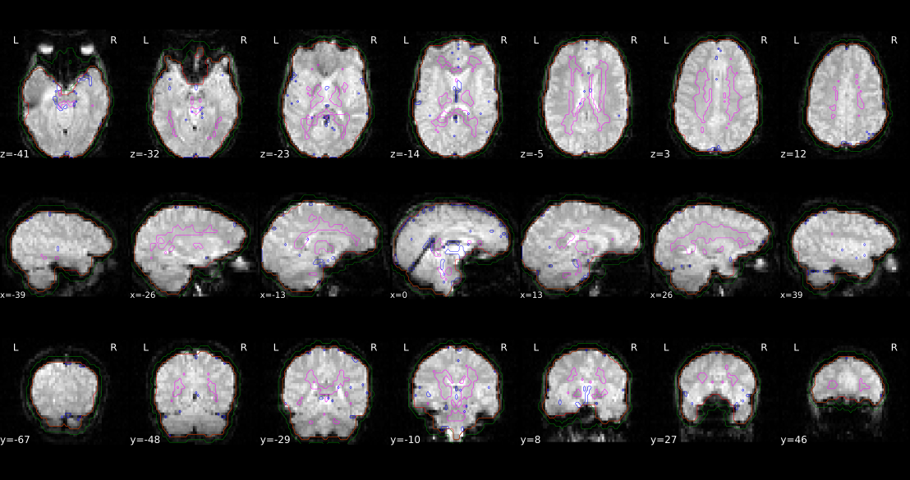
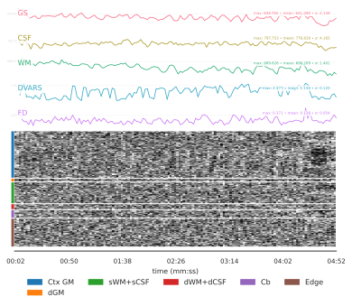

fMRIprep#
Author: Steffen Bollmann
Date: 17 Oct 2024
License:
Note: If this notebook uses neuroimaging tools from Neurocontainers, those tools retain their original licenses. Please see Neurodesk citation guidelines for details.
Citation and Resources#
Tools included in this workflow#
fMRIPrep:
Esteban, O., Markiewicz, C.J., Blair, R.W. et al. fMRIPrep: a robust preprocessing pipeline for functional MRI. Nat Methods 16, 111–116 (2019). https://doi.org/10.1038/s41592-018-0235-4
Dataset#
Flanker Dataset from OpenNeuro:
Kelly AMC and Uddin LQ and Biswal BB and Castellanos FX and Milham MP (2018). Flanker task (event-related). OpenNeuro Dataset ds000102
Kelly, A. M., Uddin, L. Q., Biswal, B. B., Castellanos, F. X., & Milham, M. P. (2008). Competition between functional brain networks mediates behavioral variability. NeuroImage, 39(1), 527–537. https://doi.org/10.1016/j.neuroimage.2007.08.008
Educational resources#
Demonstrationg fMRIprep on Neurodesk#
Preprocessing is a critical step in fMRI analysis, converting raw fMRI data into a form ready for statistical analysis. fMRIPrep is a robust, automated preprocessing pipeline that performs basic processing steps (coregistration, normalization, unwarping, noise component extraction, segmentation, skull-stripping, etc.), providing outputs that can be easily submitted to a variety of group level analyses, including task-based or resting-state fMRI, graph theory measures, and surface or volume-based statistics. It combines tools from well-known software packages including FSL, ANTs, FreeSurfer and AFNI, and generates quality reports that allow users to easily identify outliers
In this notebook, we demonstrate how to run fMRIPrep on a BIDS-formatted dataset and explore examples of the outputs it generates.

Load fMRIPrep and request FreeSurfer license#
# load fmriprep
import module
import os
await module.load('fmriprep/24.1.0')
await module.list()
['fmriprep/24.1.0']
# Request a freesurfer license and store it in your homedirectory. This is just an exampe - please replace with your license id:
!echo "Steffen.Bollmann@cai.uq.edu.au" > ~/.license
!echo "21029" >> ~/.license
!echo "*Cqyn12sqTCxo" >> ~/.license
!echo "FSxgcvGkNR59Y" >> ~/.license
Download Data#
!datalad install https://github.com/OpenNeuroDatasets/ds000102.git
!cd ds000102 && datalad get sub-08
Cloning: 0%| | 0.00/2.00 [00:00<?, ? candidates/s]
Enumerating: 0.00 Objects [00:00, ? Objects/s]
Counting: 0%| | 0.00/27.0 [00:00<?, ? Objects/s]
Compressing: 0%| | 0.00/23.0 [00:00<?, ? Objects/s]
Receiving: 0%| | 0.00/2.15k [00:00<?, ? Objects/s]
Resolving: 0%| | 0.00/537 [00:00<?, ? Deltas/s]
[INFO ] Remote origin not usable by git-annex; setting annex-ignore
[INFO ] https://github.com/OpenNeuroDatasets/ds000102.git/config download failed: Not Found
[INFO ] access to 1 dataset sibling s3-PRIVATE not auto-enabled, enable with:
| datalad siblings -d "/home/jovyan/workspace/books/examples/functional_imaging/ds000102" enable -s s3-PRIVATE
install(ok): /home/jovyan/workspace/books/examples/functional_imaging/ds000102 (dataset)
Total: 0%| | 0.00/67.8M [00:00<?, ? Bytes/s]
Get sub-08/a .. 8_T1w.nii.gz: 0%| | 0.00/10.6M [00:00<?, ? Bytes/s]
Get sub-08/a .. 8_T1w.nii.gz: 0%| | 33.4k/10.6M [00:00<01:06, 157k Bytes/s]
Get sub-08/a .. 8_T1w.nii.gz: 1%| | 68.2k/10.6M [00:00<01:05, 161k Bytes/s]
Get sub-08/a .. 8_T1w.nii.gz: 1%| | 138k/10.6M [00:00<00:43, 237k Bytes/s]
Get sub-08/a .. 8_T1w.nii.gz: 3%|▏ | 277k/10.6M [00:00<00:25, 402k Bytes/s]
Get sub-08/a .. 8_T1w.nii.gz: 5%|▎ | 538k/10.6M [00:01<00:14, 701k Bytes/s]
Get sub-08/a .. 8_T1w.nii.gz: 10%|▎ | 1.06M/10.6M [00:01<00:07, 1.30M Bytes/s]
Get sub-08/a .. 8_T1w.nii.gz: 20%|▌ | 2.09M/10.6M [00:01<00:03, 2.46M Bytes/s]
Get sub-08/a .. 8_T1w.nii.gz: 35%|█ | 3.66M/10.6M [00:01<00:01, 4.84M Bytes/s]
Get sub-08/a .. 8_T1w.nii.gz: 54%|█▋ | 5.74M/10.6M [00:01<00:00, 6.60M Bytes/s]
Get sub-08/a .. 8_T1w.nii.gz: 73%|██▏| 7.72M/10.6M [00:02<00:00, 7.52M Bytes/s]
Get sub-08/a .. 8_T1w.nii.gz: 93%|██▊| 9.80M/10.6M [00:02<00:00, 8.25M Bytes/s]
Get sub-08/a .. 8_T1w.nii.gz: 0%| | 0.00/10.6M [00:00<?, ? Bytes/s]
Total: 16%|████ | 10.6M/67.8M [00:03<00:19, 2.91M Bytes/s]
Get sub-08/f .. _bold.nii.gz: 0%| | 0.00/28.6M [00:00<?, ? Bytes/s]
Get sub-08/f .. _bold.nii.gz: 10%|▎ | 2.96M/28.6M [00:00<00:01, 14.8M Bytes/s]
Get sub-08/f .. _bold.nii.gz: 16%|▍ | 4.55M/28.6M [00:00<00:02, 10.9M Bytes/s]
Get sub-08/f .. _bold.nii.gz: 21%|▋ | 6.07M/28.6M [00:00<00:01, 12.2M Bytes/s]
Get sub-08/f .. _bold.nii.gz: 30%|▉ | 8.48M/28.6M [00:00<00:01, 11.8M Bytes/s]
Get sub-08/f .. _bold.nii.gz: 37%|█ | 10.5M/28.6M [00:01<00:02, 7.76M Bytes/s]
Get sub-08/f .. _bold.nii.gz: 42%|█▎ | 12.0M/28.6M [00:01<00:02, 7.53M Bytes/s]
Get sub-08/f .. _bold.nii.gz: 45%|█▎ | 13.0M/28.6M [00:01<00:02, 7.78M Bytes/s]
Get sub-08/f .. _bold.nii.gz: 51%|█▌ | 14.5M/28.6M [00:01<00:01, 9.04M Bytes/s]
Get sub-08/f .. _bold.nii.gz: 57%|█▋ | 16.3M/28.6M [00:01<00:01, 8.81M Bytes/s]
Get sub-08/f .. _bold.nii.gz: 64%|█▉ | 18.4M/28.6M [00:01<00:01, 9.27M Bytes/s]
Get sub-08/f .. _bold.nii.gz: 72%|██▏| 20.7M/28.6M [00:02<00:00, 9.69M Bytes/s]
Get sub-08/f .. _bold.nii.gz: 79%|██▎| 22.6M/28.6M [00:02<00:00, 9.45M Bytes/s]
Get sub-08/f .. _bold.nii.gz: 87%|██▌| 24.8M/28.6M [00:02<00:00, 9.75M Bytes/s]
Get sub-08/f .. _bold.nii.gz: 93%|██▊| 26.7M/28.6M [00:02<00:00, 9.59M Bytes/s]
Get sub-08/f .. _bold.nii.gz: 0%| | 0.00/28.6M [00:00<?, ? Bytes/s]
Total: 58%|███████████████ | 39.2M/67.8M [00:07<00:05, 5.51M Bytes/s]
Get sub-08/f .. _bold.nii.gz: 0%| | 0.00/28.6M [00:00<?, ? Bytes/s]
Get sub-08/f .. _bold.nii.gz: 5%|▏ | 1.40M/28.6M [00:00<00:01, 14.0M Bytes/s]
Get sub-08/f .. _bold.nii.gz: 10%|▎ | 2.86M/28.6M [00:00<00:01, 14.3M Bytes/s]
Get sub-08/f .. _bold.nii.gz: 16%|▍ | 4.56M/28.6M [00:00<00:02, 10.7M Bytes/s]
Get sub-08/f .. _bold.nii.gz: 23%|▋ | 6.52M/28.6M [00:00<00:01, 13.5M Bytes/s]
Get sub-08/f .. _bold.nii.gz: 31%|▉ | 9.00M/28.6M [00:00<00:01, 10.0M Bytes/s]
Get sub-08/f .. _bold.nii.gz: 39%|█▏ | 11.1M/28.6M [00:00<00:01, 12.3M Bytes/s]
Get sub-08/f .. _bold.nii.gz: 45%|█▎ | 12.8M/28.6M [00:01<00:01, 10.6M Bytes/s]
Get sub-08/f .. _bold.nii.gz: 54%|█▋ | 15.6M/28.6M [00:01<00:01, 9.68M Bytes/s]
Get sub-08/f .. _bold.nii.gz: 62%|█▊ | 17.6M/28.6M [00:01<00:00, 11.5M Bytes/s]
Get sub-08/f .. _bold.nii.gz: 70%|██ | 19.9M/28.6M [00:01<00:00, 11.3M Bytes/s]
Get sub-08/f .. _bold.nii.gz: 76%|██▎| 21.6M/28.6M [00:01<00:00, 10.2M Bytes/s]
Get sub-08/f .. _bold.nii.gz: 83%|██▌| 23.9M/28.6M [00:02<00:00, 10.4M Bytes/s]
Get sub-08/f .. _bold.nii.gz: 91%|██▋| 26.0M/28.6M [00:02<00:00, 10.2M Bytes/s]
Get sub-08/f .. _bold.nii.gz: 99%|██▉| 28.3M/28.6M [00:02<00:00, 10.4M Bytes/s]
Get sub-08/f .. _bold.nii.gz: 0%| | 0.00/28.6M [00:00<?, ? Bytes/s]
get(ok): sub-08/anat/sub-08_T1w.nii.gz (file) [from s3-PUBLIC...]
get(ok): sub-08/func/sub-08_task-flanker_run-1_bold.nii.gz (file) [from s3-PUBLIC...]
get(ok): sub-08/func/sub-08_task-flanker_run-2_bold.nii.gz (file) [from s3-PUBLIC...]
get(ok): sub-08 (directory)
action summary:
get (ok: 4)
Run fMRIPrep#
%%bash
# set up environment variables
export SUBJECTS_DIR=$PWD/fmriprep-freesurfer-dir
export APPTAINERENV_SUBJECTS_DIR=$SUBJECTS_DIR
export ITK_GLOBAL_DEFAULT_NUMBER_OF_THREADS=2
export MPLCONFIGDIR=~/matplotlib-mpldir
# create subjects directory
mkdir -p $SUBJECTS_DIR
# run fmriprep
fmriprep ds000102/ fmriprep-output participant \
--fs-license-file ~/.license \
--output-spaces T1w MNI152NLin2009cAsym fsaverage fsnative \
--participant-label 08 \
--nprocs $ITK_GLOBAL_DEFAULT_NUMBER_OF_THREADS \
--mem 10000 \
--skip_bids_validation \
--fs-subjects-dir $SUBJECTS_DIR \
-v
260410-00:01:24,206 nipype.workflow IMPORTANT:
Running fMRIPrep version 24.1.0
License N
OTICE ##################################################
fMRIPrep 24.1.0
Copyright
The NiPreps Developers.
This product includes software developed by
the
NiPreps Community (https://nipreps.org/).
Portions of this software were develop
ed at the Department of
Psychology at Stanford University, Stanford, CA, US.
This software is also distributed as a Docker container image.
The bootstrapping file
for the image ("Dockerfile") is licensed
under the MIT License.
This sof
tware may be distributed through an add-on package called
"Docker Wrapper" that is under th
e BSD 3-clause License.
#################################################################
260410-00:01:24,239 nipype.workflow IMPORTANT:
Building fMRIPrep's workflow:
* BIDS dat
aset path: /home/jovyan/workspace/books/examples/functional_imaging/ds000102.
* Participa
nt list: ['08'].
* Run identifier: 20260410-000043_9d7aabe7-ccc9-4103-9a14-a7de64c9ff72.
* Output spaces: T1w MNI152NLin2009cAsym:res-native fsaverage:den-164k fsnative.
* Pre-run FreeSurfer's SUBJECTS_DIR: /home/jovyan/workspace/books/examples/functional_imaging/fmr
iprep-freesurfer-dir.
260410-00:01:32,560 nipype.workflow INFO:
ANAT Stage 1: Adding template workflow
260410-00:01:34,528 nipype.workflow INFO:
ANAT Stage 2: Preparing brain extraction workflow
260410-00:01:48,107 nipype.workflow INFO:
ANAT Stage 3: Preparing segmentation workflow
260410-00:01:48,123 nipype.workflow INFO:
ANAT Stage 4: Preparing normalization workflow for ['MNI
152NLin2009cAsym']
260410-00:01:48,148 nipype.workflow INFO:
ANAT Stage 5: Preparing surface reconstruction workflow
260410-00:01:48,193 nipype.workflow INFO:
ANAT Stage 6: Preparing mask refinement workflow
260410-00:01:48,199 nipype.workflow INFO:
ANAT No T2w images provided - skipping Stage 7
260410-00:01:48,199 nipype.workflow INFO:
ANAT Stage 8: Creating GIFTI surfaces for ['white', 'pia
l', 'midthickness', 'sphere_reg', 'sphere']
260410-00:01:48,237 nipype.workflow INFO:
ANAT Stage 8: Creating GIFTI metrics for ['thickness', '
sulc']
260410-00:01:48,252 nipype.workflow INFO:
ANAT Stage 8a: Creating cortical ribbon mask
260410-00:01:48,259 nipype.workflow INFO:
ANAT Stage 9: Creating fsLR registration sphere
260410-00:01:48,270 nipype.workflow INFO:
ANAT Stage 10: Creating MSM-Sulc registration sphere
260410-00:01:48,712 nipype.workflow INFO:
No single-band-reference found for sub-08_task-flanker_r
un-1_bold.nii.gz.
260410-00:01:48,993 nipype.workflow INFO:
Stage 1: Adding HMC boldref workflow
260410-00:01:49,17 nipype.workflow INFO:
Stage 2: Adding motion correction workflow
260410-00:01:49,47 nipype.workflow INFO:
Stage 3: Adding coregistration boldref workflow
260410-00:01:56,331 nipype.workflow INFO:
No single-band-reference found for sub-08_task-flanker_r
un-2_bold.nii.gz.
260410-00:01:56,439 nipype.workflow INFO:
Stage 1: Adding HMC boldref workflow
260410-00:01:56,452 nipype.workflow INFO:
Stage 2: Adding motion correction workflow
260410-00:01:56,462 nipype.workflow INFO:
Stage 3: Adding coregistration boldref workflow
260410-00:02:02,536 nipype.workflow INFO:
fMRIPrep workflow graph with 580 nodes built successfull
y.
260410-00:02:29,325 nipype.workflow IMPORTANT:
fMRIPrep started!
260410-00:02:32,432 nipype.workflow INFO:
Workflow fmriprep_24_1_wf settings: ['check', 'execution
', 'logging', 'monitoring']
260410-00:02:32,919 nipype.workflow INFO:
Running in parallel.
260410-00:02:32,923 nipype.workflow WARNING:
Some nodes exceed the total amount of memory availabl
e (10.00GB).
260410-00:02:32,934 nipype.workflow INFO:
[MultiProc] Running 0 tasks, and 21 jobs ready. Free mem
ory (GB): 10.00/10.00, Free processors: 2/2.
260410-00:02:33,174 nipype.workflow INFO:
[Node] Setting-up "fmriprep_24_1_wf.fsdir_run_20260410_0
00043_9d7aabe7_ccc9_4103_9a14_a7de64c9ff72" in "/home/jovyan/workspace/books/examples/functional_ima
ging/work/fmriprep_24_1_wf/fsdir_run_20260410_000043_9d7aabe7_ccc9_4103_9a14_a7de64c9ff72".
260410-00:02:33,176 nipype.workflow INFO:
[Node] Executing "fsdir_run_20260410_000043_9d7aabe7_ccc
9_4103_9a14_a7de64c9ff72" <niworkflows.interfaces.bids.BIDSFreeSurferDir>
260410-00:02:44,693 nipype.workflow INFO:
[Node] Finished "fsdir_run_20260410_000043_9d7aabe7_ccc9
_4103_9a14_a7de64c9ff72", elapsed time 11.508275s.
260410-00:02:44,697 nipype.workflow INFO:
[Job 0] Completed (fmriprep_24_1_wf.fsdir_run_20260410_0
00043_9d7aabe7_ccc9_4103_9a14_a7de64c9ff72).
260410-00:02:44,946 nipype.workflow INFO:
[Node] Setting-up "fmriprep_24_1_wf.sub_08_wf.about" in
"/home/jovyan/workspace/books/examples/functional_imaging/work/fmriprep_24_1_wf/sub_08_wf/about".
260410-00:02:44,950 nipype.workflow INFO:
[Node] Executing "about" <fmriprep.interfaces.reports.Ab
outSummary>
260410-00:02:44,951 nipype.workflow INFO:
[Node] Finished "about", elapsed time 0.000466s.
260410-00:02:44,953 nipype.workflow INFO:
[Job 2] Completed (fmriprep_24_1_wf.sub_08_wf.about).
260410-00:02:45,206 nipype.workflow INFO:
[MultiProc] Running 2 tasks, and 17 jobs ready. Free mem
ory (GB): 9.60/10.00, Free processors: 0/2.
Currently running:
* fmriprep_24_1_wf.sub_08_wf.anat_fit_wf.brain_extraction_wf.res_tmpl
* fmriprep_24_1_wf.sub_08_wf.bidssrc
260410-00:02:50,322 nipype.workflow INFO:
[Node] Setting-up "fmriprep_24_1_wf.sub_08_wf.anat_fit_w
f.brain_extraction_wf.res_tmpl" in "/home/jovyan/workspace/books/examples/functional_imaging/work/fm
riprep_24_1_wf/sub_08_wf/anat_fit_wf/brain_extraction_wf/res_tmpl".
260410-00:02:50,325 nipype.workflow INFO:
[Node] Executing "res_tmpl" <niworkflows.interfaces.niba
bel.RegridToZooms>
260410-00:02:52,30 nipype.workflow INFO:
[Node] Setting-up "fmriprep_24_1_wf.sub_08_wf.bidssrc" in
"/home/jovyan/workspace/books/examples/functional_imaging/work/fmriprep_24_1_wf/sub_08_wf/bidssrc".
260410-00:02:52,34 nipype.workflow INFO:
[Node] Executing "bidssrc" <niworkflows.interfaces.bids.B
IDSDataGrabber>
260410-00:02:52,39 nipype.interface INFO:
No "t2w" images found for sub-08
260410-00:02:52,39 nipype.interface INFO:
No "flair" images found for sub-08
260410-00:02:52,39 ni
pype.interface INFO:
No "fmap" images found for sub-08
260410-00:02:52,39 nipype.interface INFO:
No "sbref" images found for sub-08
260410-00:02:52,39 nipype.interface INFO:
No "roi" images foun
d for sub-08
260410-00:02:52,39 nipype.interface INFO:
No "pet" images found for sub-08
260410-00:
02:52,39 nipype.interface INFO:
No "asl" images found for sub-08
260410-00:02:52,40 nipype.workflow INFO:
[Node] Finished "bidssrc", elapsed time 0.000914s.
260410-00:02:52,203 nipype.workflow INFO:
[Node] Finished "res_tmpl", elapsed time 1.873498s.
260410-00:02:53,206 nipype.workflow INFO:
[Job 1] Completed (fmriprep_24_1_wf.sub_08_wf.bidssrc).
260410-00:02:53,208 nipype.workflow INFO:
[Job 3] Completed (fmriprep_24_1_wf.sub_08_wf.anat_fit_w
f.brain_extraction_wf.res_tmpl).
260410-00:02:53,212 nipype.workflow INFO:
[MultiProc] Running 0 tasks, and 20 jobs ready. Free mem
ory (GB): 10.00/10.00, Free processors: 2/2.
260410-00:02:53,469 nipype.workflow INFO:
[Node] Setting-up "fmriprep_24_1_wf.sub_08_wf.anat_fit_w
f.brain_extraction_wf.full_wm" in "/home/jovyan/workspace/books/examples/functional_imaging/work/fmr
iprep_24_1_wf/sub_08_wf/anat_fit_wf/brain_extraction_wf/full_wm".
260410-00:02:53,472 nipype.workflow INFO:
[Node] Executing "full_wm" <nipype.interfaces.utility.wr
appers.Function>
260410-00:02:53,515 nipype.workflow INFO:
[Node] Setting-up "fmriprep_24_1_wf.sub_08_wf.anat_fit_w
f.brain_extraction_wf.lap_tmpl" in "/home/jovyan/workspace/books/examples/functional_imaging/work/fm
riprep_24_1_wf/sub_08_wf/anat_fit_wf/brain_extraction_wf/lap_tmpl".
260410-00:02:53,519 nipype.workflow INFO:
[Node] Executing "lap_tmpl" <nipype.interfaces.ants.util
s.ImageMath>
260410-00:02:54,310 nipype.workflow INFO:
[Node] Finished "full_wm", elapsed time 0.836481s.
260410-00:02:55,206 nipype.workflow INFO:
[Job 4] Completed (fmriprep_24_1_wf.sub_08_wf.anat_fit_w
f.brain_extraction_wf.full_wm).
260410-00:02:55,210 nipype.workflow INFO:
[MultiProc] Running 1 tasks, and 18 jobs ready. Free mem
ory (GB): 9.80/10.00, Free processors: 1/2.
Currently running:
* fmriprep_24_1_wf.sub_08_wf.anat_fit_wf.brain_extraction_wf.lap_tmpl
260410-00:02:55,471 nipype.workflow INFO:
[Node] Setting-up "fmriprep_24_1_wf.sub_08_wf.bold_task_
flanker_run_1_wf.bold_fit_wf.hmc_boldref_wf.val_bold" in "/home/jovyan/workspace/books/examples/func
tional_imaging/work/fmriprep_24_1_wf/sub_08_wf/bold_task_flanker_run_1_wf/bold_fit_wf/hmc_boldref_wf
/val_bold".
260410-00:02:55,474 nipype.workflow INFO:
[Node] Executing "val_bold" <niworkflows.interfaces.head
er.ValidateImage>
260410-00:02:55,570 nipype.workflow INFO:
[Node] Finished "val_bold", elapsed time 0.095068s.
260410-00:02:57,207 nipype.workflow INFO:
[Job 6] Completed (fmriprep_24_1_wf.sub_08_wf.bold_task_
flanker_run_1_wf.bold_fit_wf.hmc_boldref_wf.val_bold).
260410-00:02:57,213 nipype.workflow INFO:
[MultiProc] Running 1 tasks, and 18 jobs ready. Free mem
ory (GB): 9.80/10.00, Free processors: 1/2.
Currently running:
* fmriprep_24_1_wf.sub_08_wf.anat_fit_wf.brain_extraction_wf.lap_tmpl
260410-00:02:57,459 nipype.workflow INFO:
[Node] Setting-up "fmriprep_24_1_wf.sub_08_wf.bold_task_
flanker_run_1_wf.bold_fit_wf.hmc_boldref_wf.get_dummy" in "/home/jovyan/workspace/books/examples/fun
ctional_imaging/work/fmriprep_24_1_wf/sub_08_wf/bold_task_flanker_run_1_wf/bold_fit_wf/hmc_boldref_w
f/get_dummy".
260410-00:02:57,462 nipype.workflow INFO:
[Node] Executing "get_dummy" <niworkflows.interfaces.bol
d.NonsteadyStatesDetector>
260410-00:02:58,649 nipype.workflow INFO:
[Node] Finished "get_dummy", elapsed time 1.185637s.
260410-00:02:59,207 nipype.workflow INFO:
[Job 7] Completed (fmriprep_24_1_wf.sub_08_wf.bold_task_
flanker_run_1_wf.bold_fit_wf.hmc_boldref_wf.get_dummy).
260410-00:02:59,211 nipype.workflow INFO:
[MultiProc] Running 1 tasks, and 19 jobs ready. Free mem
ory (GB): 9.80/10.00, Free processors: 1/2.
Currently running:
* fmriprep_24_1_wf.sub_08_wf.anat_fit_wf.brain_extraction_wf.lap_tmpl
260410-00:02:59,462 nipype.workflow INFO:
[Node] Setting-up "fmriprep_24_1_wf.sub_08_wf.bold_task_
flanker_run_1_wf.bold_fit_wf.ds_hmc_boldref_wf.sources" in "/home/jovyan/workspace/books/examples/fu
nctional_imaging/work/fmriprep_24_1_wf/sub_08_wf/bold_task_flanker_run_1_wf/bold_fit_wf/ds_hmc_boldr
ef_wf/sources".
260410-00:02:59,519 nipype.workflow INFO:
[Node] Executing "sources" <fmriprep.interfaces.bids.BID
SURI>
260410-00:02:59,521 nipype.workflow INFO:
[Node] Finished "sources", elapsed time 0.000401s.
260410-00:03:01,208 nipype.workflow INFO:
[Job 8] Completed (fmriprep_24_1_wf.sub_08_wf.bold_task_
flanker_run_1_wf.bold_fit_wf.ds_hmc_boldref_wf.sources).
260410-00:03:01,214 nipype.workflow INFO:
[MultiProc] Running 1 tasks, and 18 jobs ready. Free mem
ory (GB): 9.80/10.00, Free processors: 1/2.
Currently running:
* fmriprep_24_1_wf.sub_08_wf.anat_fit_wf.brain_extraction_wf.lap_tmpl
260410-00:03:01,466 nipype.workflow INFO:
[Node] Setting-up "fmriprep_24_1_wf.sub_08_wf.bold_task_
flanker_run_1_wf.bold_fit_wf.ds_hmc_wf.sources" in "/home/jovyan/workspace/books/examples/functional
_imaging/work/fmriprep_24_1_wf/sub_08_wf/bold_task_flanker_run_1_wf/bold_fit_wf/ds_hmc_wf/sources".
260410-00:03:01,470 nipype.workflow INFO:
[Node] Executing "sources" <fmriprep.interfaces.bids.BID
SURI>
260410-00:03:01,472 nipype.workflow INFO:
[Node] Finished "sources", elapsed time 0.000497s.
260410-00:03:03,208 nipype.workflow INFO:
[Job 9] Completed (fmriprep_24_1_wf.sub_08_wf.bold_task_
flanker_run_1_wf.bold_fit_wf.ds_hmc_wf.sources).
260410-00:03:03,214 nipype.workflow INFO:
[MultiProc] Running 1 tasks, and 17 jobs ready. Free mem
ory (GB): 9.80/10.00, Free processors: 1/2.
Currently running:
* fmriprep_24_1_wf.sub_08_wf.anat_fit_wf.brain_extraction_wf.lap_tmpl
260410-00:03:03,456 nipype.workflow INFO:
[Node] Setting-up "fmriprep_24_1_wf.sub_08_wf.bold_task_
flanker_run_1_wf.bold_fit_wf.ds_boldmask_wf.sources" in "/home/jovyan/workspace/books/examples/funct
ional_imaging/work/fmriprep_24_1_wf/sub_08_wf/bold_task_flanker_run_1_wf/bold_fit_wf/ds_boldmask_wf/
sources".
260410-00:03:03,461 nipype.workflow INFO:
[Node] Executing "sources" <fmriprep.interfaces.bids.BID
SURI>
260410-00:03:03,462 nipype.workflow INFO:
[Node] Finished "sources", elapsed time 0.000424s.
260410-00:03:04,532 nipype.workflow INFO:
[Node] Finished "lap_tmpl", elapsed time 10.624106s.
260410-00:03:05,208 nipype.workflow INFO:
[Job 5] Completed (fmriprep_24_1_wf.sub_08_wf.anat_fit_w
f.brain_extraction_wf.lap_tmpl).
260410-00:03:05,211 nipype.workflow INFO:
[Job 10] Completed (fmriprep_24_1_wf.sub_08_wf.bold_task
_flanker_run_1_wf.bold_fit_wf.ds_boldmask_wf.sources).
260410-00:03:05,215 nipype.workflow INFO:
[MultiProc] Running 0 tasks, and 17 jobs ready. Free mem
ory (GB): 10.00/10.00, Free processors: 2/2.
260410-00:03:05,460 nipype.workflow INFO:
[Node] Setting-up "fmriprep_24_1_wf.sub_08_wf.bold_task_
flanker_run_1_wf.bold_native_wf.bold_source" in "/home/jovyan/workspace/books/examples/functional_im
aging/work/fmriprep_24_1_wf/sub_08_wf/bold_task_flanker_run_1_wf/bold_native_wf/bold_source".
260410-00:03:05,464 nipype.workflow INFO:
[Node] Executing "bold_source" <nipype.interfaces.utilit
y.base.Select>
260410-00:03:05,465 nipype.workflow INFO:
[Node] Finished "bold_source", elapsed time 0.000406s.
260410-00:03:05,471 nipype.workflow INFO:
[Node] Setting-up "fmriprep_24_1_wf.sub_08_wf.bold_task_
flanker_run_2_wf.bold_fit_wf.hmc_boldref_wf.val_bold" in "/home/jovyan/workspace/books/examples/func
tional_imaging/work/fmriprep_24_1_wf/sub_08_wf/bold_task_flanker_run_2_wf/bold_fit_wf/hmc_boldref_wf
/val_bold".
260410-00:03:05,475 nipype.workflow INFO:
[Node] Executing "val_bold" <niworkflows.interfaces.head
er.ValidateImage>
260410-00:03:05,571 nipype.workflow INFO:
[Node] Finished "val_bold", elapsed time 0.094024s.
260410-00:03:07,209 nipype.workflow INFO:
[Job 11] Completed (fmriprep_24_1_wf.sub_08_wf.bold_task
_flanker_run_1_wf.bold_native_wf.bold_source).
260410-00:03:07,212 nipype.workflow INFO:
[Job 12] Completed (fmriprep_24_1_wf.sub_08_wf.bold_task
_flanker_run_2_wf.bold_fit_wf.hmc_boldref_wf.val_bold).
260410-00:03:07,216 nipype.workflow INFO:
[MultiProc] Running 0 tasks, and 17 jobs ready. Free mem
ory (GB): 10.00/10.00, Free processors: 2/2.
260410-00:03:07,459 nipype.workflow INFO:
[Node] Setting-up "fmriprep_24_1_wf.sub_08_wf.bold_task_
flanker_run_2_wf.bold_fit_wf.hmc_boldref_wf.get_dummy" in "/home/jovyan/workspace/books/examples/fun
ctional_imaging/work/fmriprep_24_1_wf/sub_08_wf/bold_task_flanker_run_2_wf/bold_fit_wf/hmc_boldref_w
f/get_dummy".
260410-00:03:07,462 nipype.workflow INFO:
[Node] Executing "get_dummy" <niworkflows.interfaces.bol
d.NonsteadyStatesDetector>
260410-00:03:08,515 nipype.workflow INFO:
[Node] Finished "get_dummy", elapsed time 1.052417s.
260410-00:03:09,209 nipype.workflow INFO:
[Job 13] Completed (fmriprep_24_1_wf.sub_08_wf.bold_task
_flanker_run_2_wf.bold_fit_wf.hmc_boldref_wf.get_dummy).
260410-00:03:09,214 nipype.workflow INFO:
[MultiProc] Running 1 tasks, and 17 jobs ready. Free mem
ory (GB): 9.80/10.00, Free processors: 1/2.
Currently running:
* fmriprep_24_1_wf.sub_08_wf.bold_task_flanker_run_2_wf.bold_fit_wf.ds_hmc_boldref_wf.sources
260410-00:03:09,316 nipype.workflow INFO:
[Node] Setting-up "fmriprep_24_1_wf.sub_08_wf.bold_task_
flanker_run_2_wf.bold_fit_wf.ds_hmc_boldref_wf.sources" in "/home/jovyan/workspace/books/examples/fu
nctional_imaging/work/fmriprep_24_1_wf/sub_08_wf/bold_task_flanker_run_2_wf/bold_fit_wf/ds_hmc_boldr
ef_wf/sources".
260410-00:03:09,318 nipype.workflow INFO:
[Node] Executing "sources" <fmriprep.interfaces.bids.BID
SURI>
260410-00:03:09,319 nipype.workflow INFO:
[Node] Finished "sources", elapsed time 0.000235s.
260410-00:03:09,459 nipype.workflow INFO:
[Node] Setting-up "fmriprep_24_1_wf.sub_08_wf.bold_task_
flanker_run_2_wf.bold_fit_wf.ds_hmc_wf.sources" in "/home/jovyan/workspace/books/examples/functional
_imaging/work/fmriprep_24_1_wf/sub_08_wf/bold_task_flanker_run_2_wf/bold_fit_wf/ds_hmc_wf/sources".
260410-00:03:09,463 nipype.workflow INFO:
[Node] Executing "sources" <fmriprep.interfaces.bids.BID
SURI>
260410-00:03:09,465 nipype.workflow INFO:
[Node] Finished "sources", elapsed time 0.000372s.
260410-00:03:11,210 nipype.workflow INFO:
[Job 14] Completed (fmriprep_24_1_wf.sub_08_wf.bold_task
_flanker_run_2_wf.bold_fit_wf.ds_hmc_boldref_wf.sources).
260410-00:03:11,215 nipype.workflow INFO:
[Job 15] Completed (fmriprep_24_1_wf.sub_08_wf.bold_task
_flanker_run_2_wf.bold_fit_wf.ds_hmc_wf.sources).
260410-00:03:11,218 nipype.workflow INFO:
[MultiProc] Running 0 tasks, and 16 jobs ready. Free mem
ory (GB): 10.00/10.00, Free processors: 2/2.
260410-00:03:11,451 nipype.workflow INFO:
[Node] Setting-up "fmriprep_24_1_wf.sub_08_wf.bold_task_
flanker_run_2_wf.bold_fit_wf.ds_boldmask_wf.sources" in "/home/jovyan/workspace/books/examples/funct
ional_imaging/work/fmriprep_24_1_wf/sub_08_wf/bold_task_flanker_run_2_wf/bold_fit_wf/ds_boldmask_wf/
sources".
260410-00:03:11,451 nipype.workflow INFO:
[Node] Setting-up "fmriprep_24_1_wf.sub_08_wf.
bold_task_flanker_run_2_wf.bold_native_wf.bold_source" in "/home/jovyan/workspace/books/examples/fun
ctional_imaging/work/fmriprep_24_1_wf/sub_08_wf/bold_task_flanker_run_2_wf/bold_native_wf/bold_sourc
e".
260410-00:03:11,454 nipype.workflow INFO:
[Node] Executing "bold_source" <nipype.interfaces.utilit
y.base.Select>
260410-00:03:11,456 nipype.workflow INFO:
[Node] Executing "sources" <fmriprep.inte
rfaces.bids.BIDSURI>
260410-00:03:11,456 nipype.workflow INFO:
[Node] Finished "bold_source", elap
sed time 0.000472s.
260410-00:03:11,457 nipype.workflow INFO:
[Node] Finished "sources", elapsed t
ime 0.000416s.
260410-00:03:13,210 nipype.workflow INFO:
[Job 16] Completed (fmriprep_24_1_wf.sub_08_wf.bold_task
_flanker_run_2_wf.bold_fit_wf.ds_boldmask_wf.sources).
260410-00:03:13,213 nipype.workflow INFO:
[Job 17] Completed (fmriprep_24_1_wf.sub_08_wf.bold_task
_flanker_run_2_wf.bold_native_wf.bold_source).
260410-00:03:13,217 nipype.workflow INFO:
[MultiProc] Running 0 tasks, and 15 jobs ready. Free mem
ory (GB): 10.00/10.00, Free processors: 2/2.
260410-00:03:13,456 nipype.workflow INFO:
[Node] Setting-up "fmriprep_24_1_wf.sub_08_wf.anat_fit_w
f.register_template_wf.split_desc" in "/home/jovyan/workspace/books/examples/functional_imaging/work
/fmriprep_24_1_wf/sub_08_wf/anat_fit_wf/register_template_wf/_template_MNI152NLin2009cAsym/split_des
c".
260410-00:03:13,459 nipype.workflow INFO:
[Node] Executing "split_desc" <smriprep.interfaces.templ
ateflow.TemplateDesc>
260410-00:03:13,460 nipype.workflow INFO:
[Node] Finished "split_desc", elapsed time 0.000247s.
26
0410-00:03:13,462 nipype.workflow INFO:
[Job 18] Completed (fmriprep_24_1_wf.sub_08_wf.anat_fit_wf
.register_template_wf.split_desc).
260410-00:03:13,701 nipype.workflow INFO:
[Node] Setting-up "fmriprep_24_1_wf.sub_08_wf.template_i
terator_wf.spacesource" in "/home/jovyan/workspace/books/examples/functional_imaging/work/fmriprep_2
4_1_wf/sub_08_wf/template_iterator_wf/_in_tuple_MNI152NLin2009cAsym.resnative/spacesource".
260410-00:03:13,704 nipype.workflow INFO:
[Node] Executing "spacesource" <niworkflows.interfaces.s
pace.SpaceDataSource>
260410-00:03:13,705 nipype.workflow INFO:
[Node] Finished "spacesource", elapsed time 0.000231s.
2
60410-00:03:13,707 nipype.workflow INFO:
[Job 19] Completed (fmriprep_24_1_wf.sub_08_wf.template_i
terator_wf.spacesource).
260410-00:03:13,938 nipype.workflow INFO:
[Node] Setting-up "fmriprep_24_1_wf.sub_08_wf.anat_fit_w
f.anat_reports_wf.template_iterator_wf.spacesource" in "/home/jovyan/workspace/books/examples/functi
onal_imaging/work/fmriprep_24_1_wf/sub_08_wf/anat_fit_wf/anat_reports_wf/template_iterator_wf/_in_tu
ple_MNI152NLin2009cAsym.resnative/spacesource".
260410-00:03:13,941 nipype.workflow INFO:
[Node] Executing "spacesource" <niworkflows.interfaces.s
pace.SpaceDataSource>
260410-00:03:13,942 nipype.workflow INFO:
[Node] Finished "spacesource", elapsed time 0.000232s.
2
60410-00:03:13,944 nipype.workflow INFO:
[Job 20] Completed (fmriprep_24_1_wf.sub_08_wf.anat_fit_w
f.anat_reports_wf.template_iterator_wf.spacesource).
260410-00:03:14,160 nipype.workflow INFO:
[Node] Setting-up "fmriprep_24_1_wf.sub_08_wf.bids_info"
in "/home/jovyan/workspace/books/examples/functional_imaging/work/fmriprep_24_1_wf/sub_08_wf/bids_i
nfo".
260410-00:03:14,165 nipype.workflow INFO:
[Node] Executing "bids_info" <niworkflows.interfaces.bid
s.BIDSInfo>
260410-00:03:14,170 nipype.workflow INFO:
[Node] Setting-up "fmriprep_24_1_wf.sub_08_wf.anat_fit_w
f.anat_template_wf.anat_ref_dimensions" in "/home/jovyan/workspace/books/examples/functional_imaging
/work/fmriprep_24_1_wf/sub_08_wf/anat_fit_wf/anat_template_wf/anat_ref_dimensions".
260410-00:03:14,174 nipype.workflow INFO:
[Node] Executing "anat_ref_dimensions" <niworkflows.inte
rfaces.images.TemplateDimensions>
260410-00:03:14,182 nipype.workflow INFO:
[Node] Finished "bids_info", elapsed time 0.015636s.
260410-00:03:14,754 nipype.workflow INFO:
[Node] Finished "anat_ref_dimensions", elapsed time 0.57
9183s.
260410-00:03:15,210 nipype.workflow INFO:
[Job 21] Completed (fmriprep_24_1_wf.sub_08_wf.bids_info
).
260410-00:03:15,213 nipype.workflow INFO:
[Job 22] Completed (fmriprep_24_1_wf.sub_08_wf.anat_fit_
wf.anat_template_wf.anat_ref_dimensions).
260410-00:03:15,216 nipype.workflow INFO:
[MultiProc] Running 0 tasks, and 22 jobs ready. Free mem
ory (GB): 10.00/10.00, Free processors: 2/2.
260410-00:03:15,456 nipype.workflow INFO:
[Node] Setting-up "fmriprep_24_1_wf.sub_08_wf.ds_report_
about" in "/home/jovyan/workspace/books/examples/functional_imaging/work/fmriprep_24_1_wf/sub_08_wf/
ds_report_about".
260410-00:03:15,465 nipype.workflow INFO:
[Node] Executing "ds_report_about" <fmriprep.interfaces.
DerivativesDataSink>
260410-00:03:15,485 nipype.workflow INFO:
[Node] Finished "ds_report_about", elapsed time 0.018636
s.
260410-00:03:15,488 nipype.workflow INFO:
[Job 23] Completed (fmriprep_24_1_wf.sub_08_wf.ds_report
_about).
260410-00:03:15,731 nipype.workflow INFO:
[Node] Setting-up "fmriprep_24_1_wf.sub_08_wf.bold_task_
flanker_run_1_wf.bold_fit_wf.func_fit_reports_wf.ds_report_validation" in "/home/jovyan/workspace/bo
oks/examples/functional_imaging/work/fmriprep_24_1_wf/sub_08_wf/bold_task_flanker_run_1_wf/bold_fit_
wf/func_fit_reports_wf/ds_report_validation".
260410-00:03:15,733 nipype.workflow INFO:
[Node] Setting-up "fmriprep_24_1_wf.sub_08_wf.anat_fit_w
f.brain_extraction_wf.mrg_tmpl" in "/home/jovyan/workspace/books/examples/functional_imaging/work/fm
riprep_24_1_wf/sub_08_wf/anat_fit_wf/brain_extraction_wf/mrg_tmpl".
260410-00:03:15,738 nipype.workflow INFO:
[Node] Executing "ds_report_validation" <fmriprep.interf
aces.DerivativesDataSink>
260410-00:03:15,750 nipype.workflow INFO:
[Node] Finished "ds_report_validation", elapsed time 0.0
1092s.
260410-00:03:15,753 nipype.workflow INFO:
[Job 25] Completed (fmriprep_24_1_wf.sub_08_wf.bold_task
_flanker_run_1_wf.bold_fit_wf.func_fit_reports_wf.ds_report_validation).
260410-00:03:15,779 nipype.workflow INFO:
[Node] Executing "mrg_tmpl" <nipype.interfaces.utility.b
ase.Merge>
260410-00:03:15,781 nipype.workflow INFO:
[Node] Finished "mrg_tmpl", elapsed time 0.000302s.
260410-00:03:15,989 nipype.workflow INFO:
[Node] Setting-up "fmriprep_24_1_wf.sub_08_wf.bold_task_
flanker_run_1_wf.bold_fit_wf.hmc_boldref_wf.gen_avg" in "/home/jovyan/workspace/books/examples/funct
ional_imaging/work/fmriprep_24_1_wf/sub_08_wf/bold_task_flanker_run_1_wf/bold_fit_wf/hmc_boldref_wf/
gen_avg".
260410-00:03:15,999 nipype.workflow INFO:
[Node] Executing "gen_avg" <niworkflows.interfaces.image
s.RobustAverage>
260410-00:03:17,211 nipype.workflow INFO:
[Job 24] Completed (fmriprep_24_1_wf.sub_08_wf.anat_fit_
wf.brain_extraction_wf.mrg_tmpl).
260410-00:03:17,216 nipype.workflow INFO:
[MultiProc] Running 1 tasks, and 18 jobs ready. Free mem
ory (GB): 9.00/10.00, Free processors: 1/2.
Currently running:
* fmriprep_24_1_wf.sub_08_wf.bold_task_flanker_run_1_wf.bold_fit_wf.hmc_boldref_wf.gen_avg
260410-00:03:17,448 nipype.workflow INFO:
[Node] Setting-up "fmriprep_24_1_wf.sub_08_wf.bold_task_
flanker_run_1_wf.bold_fit_wf.hmc_boldref_wf.calc_dummy_scans" in "/home/jovyan/workspace/books/examp
les/functional_imaging/work/fmriprep_24_1_wf/sub_08_wf/bold_task_flanker_run_1_wf/bold_fit_wf/hmc_bo
ldref_wf/calc_dummy_scans".
260410-00:03:17,452 nipype.workflow INFO:
[Node] Executing "calc_dummy_scans" <nipype.interfaces.u
tility.wrappers.Function>
260410-00:03:17,454 nipype.workflow INFO:
[Node] Finished "calc_dummy_sc
ans", elapsed time 0.000498s.
260410-00:03:17,455 nipype.workflow INFO:
[Job 27] Completed (fmriprep_24_1_wf.sub_08_wf.bold_task
_flanker_run_1_wf.bold_fit_wf.hmc_boldref_wf.calc_dummy_scans).
260410-00:03:17,561 nipype.interface INFO:
stderr 2026-04-10T00:03:17.561579:++ 3dvolreg: AFNI ver
sion=AFNI_24.2.06 (Sep 11 2024) [64-bit]
260410-00:03:17,562 nipype.interface INFO:
stderr 2026-04-10T00:03:17.561579:++ Authored by: RW Co
x
260410-00:03:17,565 nipype.interface INFO:
stderr 2026-04-10T00:03:17.565087:** AFNI converts NIFT
I_datatype=4 (INT16) in file /home/jovyan/workspace/books/examples/functional_imaging/work/fmriprep_
24_1_wf/sub_08_wf/bold_task_flanker_run_1_wf/bold_fit_wf/hmc_boldref_wf/gen_avg/sub-08_task-flanker_
run-1_bold_sliced.nii.gz to FLOAT32
260410-00:03:17,565 nipype.interface INFO:
stderr 2026-04-10T0
0:03:17.565087: Warnings of this type will be muted for this session.
260410-00:03:17,565 nipype
.interface INFO:
stderr 2026-04-10T00:03:17.565087: Set AFNI_NIFTI_TYPE_WARN to YES to see the
m all, NO to see none.
260410-00:03:17,568 nipype.interface INFO:
stderr 2026-04-10T00:03:17.56855
2:++ Coarse del was 10, replaced with 4
260410-00:03:17,762 nipype.workflow INFO:
[Node] Setting-up "fmriprep_24_1_wf.sub_08_wf.bold_task_
flanker_run_1_wf.bold_native_wf.validate_bold" in "/home/jovyan/workspace/books/examples/functional_
imaging/work/fmriprep_24_1_wf/sub_08_wf/bold_task_flanker_run_1_wf/bold_native_wf/validate_bold".
26
0410-00:03:17,766 nipype.workflow INFO:
[Node] Executing "validate_bold" <niworkflows.interfaces.h
eader.ValidateImage>
260410-00:03:17,829 nipype.workflow INFO:
[Node] Finished "validate_bold", elapsed time 0.062553s.
260410-00:03:19,210 nipype.workflow INFO:
[Job 28] Completed (fmriprep_24_1_wf.sub_08_wf.bold_task
_flanker_run_1_wf.bold_native_wf.validate_bold).
260410-00:03:19,213 nipype.workflow INFO:
[MultiProc] Running 1 tasks, and 16 jobs ready. Free mem
ory (GB): 9.00/10.00, Free processors: 1/2.
Currently running:
* fmriprep_24_1_wf.sub_08_wf.bold_task_flanker_run_1_wf.bold_fit_wf.hmc_boldref_wf.gen_avg
260410-00:03:19,459 nipype.workflow INFO:
[Node] Setting-up "fmriprep_24_1_wf.sub_08_wf.bold_task_
flanker_run_2_wf.bold_fit_wf.func_fit_reports_wf.ds_report_validation" in "/home/jovyan/workspace/bo
oks/examples/functional_imaging/work/fmriprep_24_1_wf/sub_08_wf/bold_task_flanker_run_2_wf/bold_fit_
wf/func_fit_reports_wf/ds_report_validation".
260410-00:03:19,465 nipype.workflow INFO:
[Node] Executing "ds_report_validation" <fmriprep.interf
aces.DerivativesDataSink>
260410-00:03:19,477 nipype.workflow INFO:
[Node] Finished "ds_report_validation", elapsed time 0.0
1088s.
260410-00:03:19,480 nipype.workflow INFO:
[Job 29] Completed (fmriprep_24_1_wf.sub_08_wf.bold_task
_flanker_run_2_wf.bold_fit_wf.func_fit_reports_wf.ds_report_validation).
260410-00:03:19,726 nipype.workflow INFO:
[Node] Setting-up "fmriprep_24_1_wf.sub_08_wf.bold_task_
flanker_run_2_wf.bold_fit_wf.hmc_boldref_wf.gen_avg" in "/home/jovyan/workspace/books/examples/funct
ional_imaging/work/fmriprep_24_1_wf/sub_08_wf/bold_task_flanker_run_2_wf/bold_fit_wf/hmc_boldref_wf/
gen_avg".
260410-00:03:19,738 nipype.workflow INFO:
[Node] Executing "gen_avg" <niworkflows.interfaces.image
s.RobustAverage>
260410-00:03:20,821 nipype.interface INFO:
stderr 2026-04-10T00:03:20.821869:++ 3dvolreg: AFNI ver
sion=AFNI_24.2.06 (Sep 11 2024) [64-bit]
260410-00:03:20,822 nipype.interface INFO:
stderr 2026-04-10T00:03:20.821869:++ Authored by: RW Co
x
260410-00:03:20,822 nipype.interface INFO:
stderr 2026-04-10T00:03:20.822720:** AFNI converts NI
FTI_datatype=4 (INT16) in file /home/jovyan/workspace/books/examples/functional_imaging/work/fmripre
p_24_1_wf/sub_08_wf/bold_task_flanker_run_2_wf/bold_fit_wf/hmc_boldref_wf/gen_avg/sub-08_task-flanke
r_run-2_bold_sliced.nii.gz to FLOAT32
260410-00:03:20,822 nipype.interface INFO:
stderr 2026-04-10
T00:03:20.822720: Warnings of this type will be muted for this session.
260410-00:03:20,822 nipy
pe.interface INFO:
stderr 2026-04-10T00:03:20.822720: Set AFNI_NIFTI_TYPE_WARN to YES to see t
hem all, NO to see none.
260410-00:03:20,823 nipype.interface INFO:
stderr 2026-04-10T00:03:20.823
302:++ Coarse del was 10, replaced with 4
260410-00:03:21,213 nipype.workflow INFO:
[MultiProc] Running 2 tasks, and 14 jobs ready. Free mem
ory (GB): 8.00/10.00, Free processors: 0/2.
Currently running:
* fmriprep_24_1_wf.sub_08_wf.bold_task_flanker_run_2_wf.bold_fit_wf.hmc_boldref_wf.gen_avg
* fmriprep_24_1_wf.sub_08_wf.bold_task_flanker_run_1_wf.bold_fit_wf.hmc_boldref
_wf.gen_avg
260410-00:03:36,648 nipype.interface INFO:
stderr 2026-04-10T00:03:36.648680:++ Max displacement i
n automask = 0.12 (mm) at sub-brick 18
260410-00:03:36,650 nipype.interface INFO:
stderr 2026-04-10T00:03:36.648680:++ Max delta displ i
n automask = 0.10 (mm) at sub-brick 5
260410-00:03:38,154 nipype.workflow INFO:
[Node] Finished "gen_avg", elapsed time 22.153298s.
260410-00:03:39,86 nipype.interface INFO:
stderr 2026-04-10T00:03:39.086162:++ Max displacement in
automask = 1.01 (mm) at sub-brick 17
260410-00:03:39,86 nipype.interface INFO:
stderr 2026-04-10T
00:03:39.086162:++ Max delta displ in automask = 0.39 (mm) at sub-brick 17
260410-00:03:39,214 nipype.workflow INFO:
[Job 26] Completed (fmriprep_24_1_wf.sub_08_wf.bold_task
_flanker_run_1_wf.bold_fit_wf.hmc_boldref_wf.gen_avg).
260410-00:03:39,221 nipype.workflow INFO:
[MultiProc] Running 1 tasks, and 17 jobs ready. Free mem
ory (GB): 9.00/10.00, Free processors: 1/2.
Currently running:
* fmriprep_24_1_wf.sub_08_wf.bold_task_flanker_run_2_wf.bold_fit_wf.hmc_boldref_wf.gen_avg
260410-00:03:39,467 nipype.workflow INFO:
[Node] Setting-up "fmriprep_24_1_wf.sub_08_wf.bold_task_
flanker_run_2_wf.bold_fit_wf.hmc_boldref_wf.calc_dummy_scans" in "/home/jovyan/workspace/books/examp
les/functional_imaging/work/fmriprep_24_1_wf/sub_08_wf/bold_task_flanker_run_2_wf/bold_fit_wf/hmc_bo
ldref_wf/calc_dummy_scans".
260410-00:03:39,471 nipype.workflow INFO:
[Node] Executing "calc_dummy_scans" <nipype.interfaces.u
tility.wrappers.Function>
260410-00:03:39,473 nipype.workflow INFO:
[Node] Finished "calc_dummy_sc
ans", elapsed time 0.00045s.
260410-00:03:39,475 nipype.workflow INFO:
[Job 31] Completed (fmriprep_24_1_wf.sub_08_wf.bold_task
_flanker_run_2_wf.bold_fit_wf.hmc_boldref_wf.calc_dummy_scans).
260410-00:03:39,726 nipype.workflow INFO:
[Node] Setting-up "fmriprep_24_1_wf.sub_08_wf.bold_task_
flanker_run_2_wf.bold_native_wf.validate_bold" in "/home/jovyan/workspace/books/examples/functional_
imaging/work/fmriprep_24_1_wf/sub_08_wf/bold_task_flanker_run_2_wf/bold_native_wf/validate_bold".
260410-00:03:39,730 nipype.workflow INFO:
[Node] Executing "validate_bold" <niworkflows.interfaces
.header.ValidateImage>
260410-00:03:39,827 nipype.workflow INFO:
[Node] Finished "validate_bold", elapsed time 0.09549s.
260410-00:03:40,552 nipype.workflow INFO:
[Node] Finished "gen_avg", elapsed time 20.812582s.
260410-00:03:41,214 nipype.workflow INFO:
[Job 30] Completed (fmriprep_24_1_wf.sub_08_wf.bold_task
_flanker_run_2_wf.bold_fit_wf.hmc_boldref_wf.gen_avg).
260410-00:03:41,217 nipype.workflow INFO:
[Job 32] Completed (fmriprep_24_1_wf.sub_08_wf.bold_task
_flanker_run_2_wf.bold_native_wf.validate_bold).
260410-00:03:41,221 nipype.workflow INFO:
[MultiProc] Running 0 tasks, and 18 jobs ready. Free mem
ory (GB): 10.00/10.00, Free processors: 2/2.
260410-00:03:41,463 nipype.workflow INFO:
[Node] Setting-up "fmriprep_24_1_wf.sub_08_wf.anat_fit_w
f.register_template_wf.tf_select" in "/home/jovyan/workspace/books/examples/functional_imaging/work/
fmriprep_24_1_wf/sub_08_wf/anat_fit_wf/register_template_wf/_template_MNI152NLin2009cAsym/tf_select"
.
260410-00:03:41,466 nipype.workflow INFO:
[Node] Executing "tf_select" <smriprep.interfaces.templa
teflow.TemplateFlowSelect>
260410-00:03:41,633 nipype.workflow INFO:
[Node] Finished "tf_select", elapsed time 0.165851s.
260410-00:03:41,636 nipype.workflow INFO:
[Job 33] Completed (fmriprep_24_1_wf.sub_08_wf.anat_fit_
wf.register_template_wf.tf_select).
260410-00:03:41,890 nipype.workflow INFO:
[Node] Setting-up "fmriprep_24_1_wf.sub_08_wf.anat_fit_w
f.register_template_wf.fmt_cohort" in "/home/jovyan/workspace/books/examples/functional_imaging/work
/fmriprep_24_1_wf/sub_08_wf/anat_fit_wf/register_template_wf/_template_MNI152NLin2009cAsym/fmt_cohor
t".
260410-00:03:41,894 nipype.workflow INFO:
[Node] Executing "fmt_cohort" <nipype.interfaces.utility
.wrappers.Function>
260410-00:03:41,896 nipype.workflow INFO:
[Node] Finished "fmt_cohort", elapse
d time 0.000564s.
260410-00:03:41,897 nipype.workflow INFO:
[Job 34] Completed (fmriprep_24_1_wf.sub_08_wf.anat_fit_
wf.register_template_wf.fmt_cohort).
260410-00:03:42,130 nipype.workflow INFO:
[Node] Setting-up "fmriprep_24_1_wf.sub_08_wf.template_i
terator_wf.gen_tplid" in "/home/jovyan/workspace/books/examples/functional_imaging/work/fmriprep_24_
1_wf/sub_08_wf/template_iterator_wf/_in_tuple_MNI152NLin2009cAsym.resnative/gen_tplid".
260410-00:03:42,134 nipype.workflow INFO:
[Node] Executing "gen_tplid" <nipype.interfaces.utility.
wrappers.Function>
260410-00:03:42,135 nipype.workflow INFO:
[Node] Finished "gen_tplid", elapsed time 0.000527s.
260410-00:03:42,137 nipype.workflow INFO:
[Job 35] Completed (fmriprep_24_1_wf.sub_08_wf.template_
iterator_wf.gen_tplid).
260410-00:03:42,350 nipype.workflow INFO:
[Node] Setting-up "fmriprep_24_1_wf.sub_08_wf.template_i
terator_wf.select_tpl" in "/home/jovyan/workspace/books/examples/functional_imaging/work/fmriprep_24
_1_wf/sub_08_wf/template_iterator_wf/_in_tuple_MNI152NLin2009cAsym.resnative/select_tpl".
260410-00:03:42,353 nipype.workflow INFO:
[Node] Executing "select_tpl" <smriprep.interfaces.templ
ateflow.TemplateFlowSelect>
260410-00:03:42,468 nipype.workflow INFO:
[Node] Finished "select_tpl", elapsed time 0.114484s.
260410-00:03:42,470 nipype.workflow INFO:
[Job 36] Completed (fmriprep_24_1_wf.sub_08_wf.template_
iterator_wf.select_tpl).
260410-00:03:42,680 nipype.workflow INFO:
[Node] Setting-up "fmriprep_24_1_wf.sub_08_wf.anat_fit_w
f.anat_reports_wf.template_iterator_wf.gen_tplid" in "/home/jovyan/workspace/books/examples/function
al_imaging/work/fmriprep_24_1_wf/sub_08_wf/anat_fit_wf/anat_reports_wf/template_iterator_wf/_in_tupl
e_MNI152NLin2009cAsym.resnative/gen_tplid".
260410-00:03:42,682 nipype.workflow INFO:
[Node] Executing "gen_tplid" <nipype.interfaces.utility.
wrappers.Function>
260410-00:03:42,683 nipype.workflow INFO:
[Node] Finished "gen_tplid", elapsed
time 0.000314s.
260410-00:03:42,684 nipype.workflow INFO:
[Job 37] Completed (fmriprep_24_1_wf.sub_08_wf.anat_fit_
wf.anat_reports_wf.template_iterator_wf.gen_tplid).
260410-00:03:42,876 nipype.workflow INFO:
[Node] Setting-up "fmriprep_24_1_wf.sub_08_wf.anat_fit_w
f.anat_reports_wf.template_iterator_wf.select_tpl" in "/home/jovyan/workspace/books/examples/functio
nal_imaging/work/fmriprep_24_1_wf/sub_08_wf/anat_fit_wf/anat_reports_wf/template_iterator_wf/_in_tup
le_MNI152NLin2009cAsym.resnative/select_tpl".
260410-00:03:42,879 nipype.workflow INFO:
[Node] Executing "select_tpl" <smriprep.interfaces.templ
ateflow.TemplateFlowSelect>
260410-00:03:42,971 nipype.workflow INFO:
[Node] Finished "select_tpl", elapsed time 0.091723s.
260410-00:03:42,973 nipype.workflow INFO:
[Job 38] Completed (fmriprep_24_1_wf.sub_08_wf.anat_fit_
wf.anat_reports_wf.template_iterator_wf.select_tpl).
260410-00:03:43,176 nipype.workflow INFO:
[Node] Setting-up "fmriprep_24_1_wf.sub_08_wf.summary" i
n "/home/jovyan/workspace/books/examples/functional_imaging/work/fmriprep_24_1_wf/sub_08_wf/summary"
.
260410-00:03:43,180 nipype.workflow INFO:
[Node] Executing "summary" <fmriprep.interfaces.reports.
SubjectSummary>
260410-00:03:43,183 nipype.workflow INFO:
[Node] Finished "summary", elapsed time 0.002283s.
260410-00:03:43,184 nipype.workflow INFO:
[Job 39] Completed (fmriprep_24_1_wf.sub_08_wf.summary).
260410-00:03:43,389 nipype.workflow INFO:
[Node] Setting-up "fmriprep_24_1_wf.sub_08_wf.anat_fit_w
f.fs_isrunning" in "/home/jovyan/workspace/books/examples/functional_imaging/work/fmriprep_24_1_wf/s
ub_08_wf/anat_fit_wf/fs_isrunning".
260410-00:03:43,392 nipype.workflow INFO:
[MultiProc] Running 2 tasks, and 10 jobs ready. Free mem
ory (GB): 9.60/10.00, Free processors: 0/2.
Currently running:
* fmriprep_24_1_wf.sub_08_wf.anat_fit_wf.anat_template_wf.denoise
* fm
riprep_24_1_wf.sub_08_wf.anat_fit_wf.fs_isrunning
260410-00:03:43,396 nipype.workflow INFO:
[Node] Executing "fs_isrunning" <nipype.interfaces.utili
ty.wrappers.Function>
260410-00:03:43,397 nipype.workflow INFO:
[Node] Setting-up "_denoise0" in "
/home/jovyan/workspace/books/examples/functional_imaging/work/fmriprep_24_1_wf/sub_08_wf/anat_fit_wf
/anat_template_wf/denoise/mapflow/_denoise0".
260410-00:03:43,398 nipype.workflow INFO:
[Node] Fin
ished "fs_isrunning", elapsed time 0.001219s.
260410-00:03:43,399 nipype.workflow INFO:
[Node] Exe
cuting "_denoise0" <nipype.interfaces.ants.segmentation.DenoiseImage>
260410-00:03:45,393 nipype.workflow INFO:
[Job 40] Completed (fmriprep_24_1_wf.sub_08_wf.anat_fit_
wf.fs_isrunning).
260410-00:03:45,399 nipype.workflow INFO:
[MultiProc] Running 1 tasks, and 10 jobs ready. Free mem
ory (GB): 9.80/10.00, Free processors: 1/2.
Currently running:
* fmriprep_24_1_wf.sub_08_wf.anat_fit_wf.anat_template_wf.denoise
260410-00:03:45,726 nipype.workflow INFO:
[Node] Setting-up "fmriprep_24_1_wf.sub_08_wf.anat_fit_w
f.ds_t1w_mask_wf.raw_sources" in "/home/jovyan/workspace/books/examples/functional_imaging/work/fmri
prep_24_1_wf/sub_08_wf/anat_fit_wf/ds_t1w_mask_wf/raw_sources".
260410-00:03:45,731 nipype.workflow INFO:
[Node] Executing "raw_sources" <nipype.interfaces.utilit
y.wrappers.Function>
260410-00:03:45,733 nipype.workflow INFO:
[Node] Finished "raw_sources", elapsed time 0.000781s.
260410-00:03:47,393 nipype.workflow INFO:
[Job 42] Completed (fmriprep_24_1_wf.sub_08_wf.anat_fit_
wf.ds_t1w_mask_wf.raw_sources).
260410-00:03:47,399 nipype.workflow INFO:
[MultiProc] Running 1 tasks, and 9 jobs ready. Free memo
ry (GB): 9.80/10.00, Free processors: 1/2.
Currently running:
* fmriprep_24_1_wf.sub_08_wf.anat_fit_wf.anat_template_wf.denoise
260410-00:03:47,655 nipype.workflow INFO:
[Node] Setting-up "fmriprep_24_1_wf.sub_08_wf.anat_fit_w
f.ds_ribbon_mask_wf.raw_sources" in "/home/jovyan/workspace/books/examples/functional_imaging/work/f
mriprep_24_1_wf/sub_08_wf/anat_fit_wf/ds_ribbon_mask_wf/raw_sources".
260410-00:03:47,660 nipype.workflow INFO:
[Node] Executing "raw_sources" <nipype.interfaces.utilit
y.wrappers.Function>
260410-00:03:47,661 nipype.workflow INFO:
[Node] Finished "raw_sources", elapsed time 0.000751s.
260410-00:03:49,394 nipype.workflow INFO:
[Job 43] Completed (fmriprep_24_1_wf.sub_08_wf.anat_fit_
wf.ds_ribbon_mask_wf.raw_sources).
260410-00:03:49,398 nipype.workflow INFO:
[MultiProc] Running 1 tasks, and 8 jobs ready. Free memo
ry (GB): 9.80/10.00, Free processors: 1/2.
Currently running:
* fmriprep_24_1_wf.sub_08_wf.anat_fit_wf.anat_template_wf.denoise
260410-00:03:49,630 nipype.workflow INFO:
[Node] Setting-up "fmriprep_24_1_wf.sub_08_wf.anat_fit_w
f.anat_reports_wf.t1w_conform_check" in "/home/jovyan/workspace/books/examples/functional_imaging/wo
rk/fmriprep_24_1_wf/sub_08_wf/anat_fit_wf/anat_reports_wf/t1w_conform_check".
260410-00:03:49,634 nipype.workflow INFO:
[Node] Executing "t1w_conform_check" <nipype.interfaces.
utility.wrappers.Function>
260410-00:03:49,635 nipype.workflow INFO:
[Node] Finished "t1w_conform_check", elapsed time 0.0005
06s.
260410-00:03:49,637 nipype.workflow INFO:
[Job 44] Completed (fmriprep_24_1_wf.sub_08_wf.anat
_fit_wf.anat_reports_wf.t1w_conform_check).
260410-00:03:49,873 nipype.workflow INFO:
[Node] Setting-up "fmriprep_24_1_wf.sub_08_wf.bold_task_
flanker_run_1_wf.bold_fit_wf.fmapref_buffer" in "/home/jovyan/workspace/books/examples/functional_im
aging/work/fmriprep_24_1_wf/sub_08_wf/bold_task_flanker_run_1_wf/bold_fit_wf/fmapref_buffer".
260410-00:03:49,877 nipype.workflow INFO:
[Node] Executing "fmapref_buffer" <nipype.interfaces.uti
lity.wrappers.Function>
260410-00:03:49,881 nipype.workflow INFO:
[Node] Finished "fmapref_buffer", elapsed time 0.002141s
.
260410-00:03:51,394 nipype.workflow INFO:
[Job 45] Completed (fmriprep_24_1_wf.sub_08_wf.bold_task
_flanker_run_1_wf.bold_fit_wf.fmapref_buffer).
260410-00:03:51,399 nipype.workflow INFO:
[MultiProc] Running 1 tasks, and 8 jobs ready. Free memo
ry (GB): 9.80/10.00, Free processors: 1/2.
Currently running:
* fmriprep_24_1_wf.sub_08_wf.anat_fit_wf.anat_template_wf.denoise
260410-00:03:51,654 nipype.workflow INFO:
[Node] Setting-up "fmriprep_24_1_wf.sub_08_wf.bold_task_
flanker_run_1_wf.bold_fit_wf.ds_hmc_boldref_wf.ds_boldref" in "/home/jovyan/workspace/books/examples
/functional_imaging/work/fmriprep_24_1_wf/sub_08_wf/bold_task_flanker_run_1_wf/bold_fit_wf/ds_hmc_bo
ldref_wf/ds_boldref".
260410-00:03:51,661 nipype.workflow INFO:
[Node] Executing "ds_boldref" <fmriprep.interfaces.Deriv
ativesDataSink>
260410-00:03:51,690 nipype.interface WARNING:
Changing /home/jovyan/workspace/books/examples/funct
ional_imaging/fmriprep-output/sub-08/func/sub-08_task-flanker_run-1_desc-hmc_boldref.nii.gz dtype fr
om int16 to float32
260410-00:03:51,780 nipype.workflow INFO:
[Node] Finished "ds_boldref", elapsed time 0.117314s.
260410-00:03:51,783 nipype.workflow INFO:
[Job 46] Completed (fmriprep_24_1_wf.sub_08_wf.bold_task
_flanker_run_1_wf.bold_fit_wf.ds_hmc_boldref_wf.ds_boldref).
260410-00:03:52,142 nipype.workflow INFO:
[Node] Setting-up "fmriprep_24_1_wf.sub_08_wf.bold_task_
flanker_run_1_wf.bold_fit_wf.bold_hmc_wf.mcflirt" in "/home/jovyan/workspace/books/examples/function
al_imaging/work/fmriprep_24_1_wf/sub_08_wf/bold_task_flanker_run_1_wf/bold_fit_wf/bold_hmc_wf/mcflir
t".
260410-00:03:52,146 nipype.workflow INFO:
[Node] Executing "mcflirt" <nipype.interfaces.fsl.prepro
cess.MCFLIRT>
260410-00:03:53,394 nipype.workflow INFO:
[MultiProc] Running 2 tasks, and 7 jobs ready. Free memo
ry (GB): 9.27/10.00, Free processors: 0/2.
Currently running:
* fmriprep_24_1_wf.sub_08_wf.bold_task_flanker_run_1_wf.bold_fit_wf.bold_hmc_wf.mcflirt
* fmriprep_24_1_wf.sub_08_wf.anat_fit_wf.anat_template_wf.denoise
260410-00:04:22,345 nipype.workflow INFO:
[Node] Finished "mcflirt", elapsed time 30.197112s.
260410-00:04:23,400 nipype.workflow INFO:
[Job 47] Completed (fmriprep_24_1_wf.sub_08_wf.bold_task
_flanker_run_1_wf.bold_fit_wf.bold_hmc_wf.mcflirt).
260410-00:04:23,405 nipype.workflow INFO:
[MultiProc] Running 1 tasks, and 10 jobs ready. Free mem
ory (GB): 9.80/10.00, Free processors: 1/2.
Currently running:
* fmriprep_24_1_wf.sub_08_wf.anat_fit_wf.anat_template_wf.denoise
260410-00:04:23,648 nipype.workflow INFO:
[Node] Setting-up "fmriprep_24_1_wf.sub_08_wf.bold_task_
flanker_run_2_wf.bold_fit_wf.fmapref_buffer" in "/home/jovyan/workspace/books/examples/functional_im
aging/work/fmriprep_24_1_wf/sub_08_wf/bold_task_flanker_run_2_wf/bold_fit_wf/fmapref_buffer".
260410-00:04:23,652 nipype.workflow INFO:
[Node] Executing "fmapref_buffer" <nipype.interfaces.uti
lity.wrappers.Function>
260410-00:04:23,653 nipype.workflow INFO:
[Node] Finished "fmapref_buffer"
, elapsed time 0.000538s.
260410-00:04:25,400 nipype.workflow INFO:
[Job 48] Completed (fmriprep_24_1_wf.sub_08_wf.bold_task
_flanker_run_2_wf.bold_fit_wf.fmapref_buffer).
260410-00:04:25,404 nipype.workflow INFO:
[MultiProc] Running 1 tasks, and 10 jobs ready. Free mem
ory (GB): 9.80/10.00, Free processors: 1/2.
Currently running:
* fmriprep_24_1_wf.sub_08_wf.anat_fit_wf.anat_template_wf.denoise
260410-00:04:25,641 nipype.workflow INFO:
[Node] Setting-up "fmriprep_24_1_wf.sub_08_wf.bold_task_
flanker_run_2_wf.bold_fit_wf.ds_hmc_boldref_wf.ds_boldref" in "/home/jovyan/workspace/books/examples
/functional_imaging/work/fmriprep_24_1_wf/sub_08_wf/bold_task_flanker_run_2_wf/bold_fit_wf/ds_hmc_bo
ldref_wf/ds_boldref".
260410-00:04:25,648 nipype.workflow INFO:
[Node] Executing "ds_boldref" <fmriprep.interfaces.Deriv
ativesDataSink>
260410-00:04:25,674 nipype.interface WARNING:
Changing /home/jovyan/workspace/books/examples/funct
ional_imaging/fmriprep-output/sub-08/func/sub-08_task-flanker_run-2_desc-hmc_boldref.nii.gz dtype fr
om int16 to float32
260410-00:04:25,761 nipype.workflow INFO:
[Node] Finished "ds_boldref", elapsed time 0.111795s.
260410-00:04:25,765 nipype.workflow INFO:
[Job 49] Completed (fmriprep_24_1_wf.sub_08_wf.bold_task
_flanker_run_2_wf.bold_fit_wf.ds_hmc_boldref_wf.ds_boldref).
260410-00:04:26,19 nipype.workflow INFO:
[Node] Setting-up "fmriprep_24_1_wf.sub_08_wf.bold_task_f
lanker_run_2_wf.bold_fit_wf.bold_hmc_wf.mcflirt" in "/home/jovyan/workspace/books/examples/functiona
l_imaging/work/fmriprep_24_1_wf/sub_08_wf/bold_task_flanker_run_2_wf/bold_fit_wf/bold_hmc_wf/mcflirt
".
260410-00:04:26,23 nipype.workflow INFO:
[Node] Executing "mcflirt" <nipype.interfaces.fsl.preproc
ess.MCFLIRT>
260410-00:04:27,403 nipype.workflow INFO:
[MultiProc] Running 2 tasks, and 9 jobs ready. Free memo
ry (GB): 9.27/10.00, Free processors: 0/2.
Currently running:
* fmriprep_24_1_wf.sub_08_wf.bold_task_flanker_run_2_wf.bold_fit_wf.bold_hmc_wf.mcflirt
* fmriprep_24_1_wf.sub_08_wf.anat_fit_wf.anat_template_wf.denoise
260410-00:04:54,335 nipype.workflow INFO:
[Node] Finished "mcflirt", elapsed time 28.311414s.
260410-00:04:55,407 nipype.workflow INFO:
[Job 50] Completed (fmriprep_24_1_wf.sub_08_wf.bold_task
_flanker_run_2_wf.bold_fit_wf.bold_hmc_wf.mcflirt).
260410-00:04:55,410 nipype.workflow INFO:
[Mul
tiProc] Running 1 tasks, and 12 jobs ready. Free memory (GB): 9.80/10.00, Free processors: 1/2.
Currently running:
* fmriprep_24_1_wf.sub_08_wf.anat_fit_wf.
anat_template_wf.denoise
260410-00:04:55,669 nipype.workflow INFO:
[Node] Setting-up "fmriprep_24_1_wf.sub_08_wf.ds_report_
summary" in "/home/jovyan/workspace/books/examples/functional_imaging/work/fmriprep_24_1_wf/sub_08_w
f/ds_report_summary".
260410-00:04:55,676 nipype.workflow INFO:
[Node] Executing "ds_report_summary" <fmriprep.interface
s.DerivativesDataSink>
260410-00:04:55,689 nipype.workflow INFO:
[Node] Finished "ds_report_summary", elapsed time 0.0117
39s.
260410-00:04:55,692 nipype.workflow INFO:
[Job 51] Completed (fmriprep_24_1_wf.sub_08_wf.ds_report
_summary).
260410-00:04:55,931 nipype.workflow INFO:
[Node] Setting-up "fmriprep_24_1_wf.sub_08_wf.anat_fit_w
f.anat_reports_wf.ds_t1w_conform_report" in "/home/jovyan/workspace/books/examples/functional_imagin
g/work/fmriprep_24_1_wf/sub_08_wf/anat_fit_wf/anat_reports_wf/ds_t1w_conform_report".
260410-00:04:55,938 nipype.workflow INFO:
[Node] Executing "ds_t1w_conform_report" <smriprep.inter
faces.DerivativesDataSink>
260410-00:04:55,951 nipype.workflow INFO:
[Node] Finished "ds_t1w_conform_report", elapsed time 0.
01128s.
260410-00:04:55,954 nipype.workflow INFO:
[Job 53] Completed (fmriprep_24_1_wf.sub_08_wf.anat_fit_
wf.anat_reports_wf.ds_t1w_conform_report).
260410-00:04:56,203 nipype.workflow INFO:
[Node] Setting-up "fmriprep_24_1_wf.sub_08_wf.bold_task_
flanker_run_1_wf.bold_fit_wf.enhance_and_skullstrip_bold_wf.init_aff" in "/home/jovyan/workspace/boo
ks/examples/functional_imaging/work/fmriprep_24_1_wf/sub_08_wf/bold_task_flanker_run_1_wf/bold_fit_w
f/enhance_and_skullstrip_bold_wf/init_aff".
260410-00:04:56,208 nipype.workflow INFO:
[Node] Executing "init_aff" <nipype.interfaces.ants.util
s.AI>
260410-00:04:57,408 nipype.workflow INFO:
[MultiProc] Running 2 tasks, and 9 jobs ready. Free memo
ry (GB): 9.60/10.00, Free processors: 0/2.
Currently running:
* fmriprep_24_1_wf.sub_08_wf.bold_task_flanker_run_1_wf.bold_fit_wf.enhance_and_skullstrip_bol
d_wf.init_aff
* fmriprep_24_1_wf.sub_08_wf.anat_fit_wf.anat_template_wf.denoi
se
260410-00:07:28,308 nipype.workflow INFO:
[Node] Finished "init_aff", elapsed time 152.098493s.
260410-00:07:29,432 nipype.workflow INFO:
[Job 54] Completed (fmriprep_24_1_wf.sub_08_wf.bold_task
_flanker_run_1_wf.bold_fit_wf.enhance_and_skullstrip_bold_wf.init_aff).
260410-00:07:29,437 nipype.workflow INFO:
[MultiProc] Running 1 tasks, and 10 jobs ready. Free mem
ory (GB): 9.80/10.00, Free processors: 1/2.
Currently running:
* fmriprep_24_1_wf.sub_08_wf.anat_fit_wf.anat_template_wf.denoise
260410-00:07:29,709 nipype.workflow INFO:
[Node] Setting-up "fmriprep_24_1_wf.sub_08_wf.bold_task_
flanker_run_1_wf.bold_fit_wf.ds_coreg_boldref_wf.sources" in "/home/jovyan/workspace/books/examples/
functional_imaging/work/fmriprep_24_1_wf/sub_08_wf/bold_task_flanker_run_1_wf/bold_fit_wf/ds_coreg_b
oldref_wf/sources".
260410-00:07:29,713 nipype.workflow INFO:
[Node] Executing "sources" <fmriprep.interfaces.bids.BID
SURI>
260410-00:07:29,714 nipype.workflow INFO:
[Node] Finished "sources", elapsed time 0.000259s.
260410-00:07:31,434 nipype.workflow INFO:
[Job 55] Completed (fmriprep_24_1_wf.sub_08_wf.bold_task
_flanker_run_1_wf.bold_fit_wf.ds_coreg_boldref_wf.sources).
260410-00:07:31,439 nipype.workflow INFO:
[MultiProc] Running 1 tasks, and 9 jobs ready. Free memo
ry (GB): 9.80/10.00, Free processors: 1/2.
Currently running:
* fmriprep_24_1_wf.sub_08_wf.anat_fit_wf.anat_template_wf.denoise
260410-00:07:31,874 nipype.workflow INFO:
[Node] Setting-up "fmriprep_24_1_wf.sub_08_wf.bold_task_
flanker_run_1_wf.bold_fit_wf.bold_hmc_wf.fsl2itk" in "/home/jovyan/workspace/books/examples/function
al_imaging/work/fmriprep_24_1_wf/sub_08_wf/bold_task_flanker_run_1_wf/bold_fit_wf/bold_hmc_wf/fsl2it
k".
260410-00:07:31,912 nipype.workflow INFO:
[Node] Executing "fsl2itk" <niworkflows.interfaces.itk.M
CFLIRT2ITK>
260410-00:07:31,914 nipype.interface WARNING:
Multithreading is deprecated. Remove the num_threads
input.
260410-00:07:32,95 nipype.workflow INFO:
[Node] Finished "fsl2itk", elapsed time 0.181444s.
260410-00:07:33,433 nipype.workflow INFO:
[Job 56] Completed (fmriprep_24_1_wf.sub_08_wf.bold_task
_flanker_run_1_wf.bold_fit_wf.bold_hmc_wf.fsl2itk).
260410-00:07:33,438 nipype.workflow INFO:
[MultiProc] Running 1 tasks, and 9 jobs ready. Free memo
ry (GB): 9.80/10.00, Free processors: 1/2.
Currently running:
* fmriprep_24_1_wf.sub_08_wf.anat_fit_wf.anat_template_wf.denoise
260410-00:07:34,297 nipype.workflow INFO:
[Node] Setting-up "fmriprep_24_1_wf.sub_08_wf.bold_task_
flanker_run_1_wf.bold_fit_wf.bold_hmc_wf.normalize_motion" in "/home/jovyan/workspace/books/examples
/functional_imaging/work/fmriprep_24_1_wf/sub_08_wf/bold_task_flanker_run_1_wf/bold_fit_wf/bold_hmc_
wf/normalize_motion".
260410-00:07:34,315 nipype.workflow INFO:
[Node] Executing "normalize_motion" <niworkflows.interfa
ces.confounds.NormalizeMotionParams>
260410-00:07:34,322 nipype.workflow INFO:
[Node] Finished "normalize_motion", elapsed time 0.00487
4s.
260410-00:07:35,433 nipype.workflow INFO:
[Job 57] Completed (fmriprep_24_1_wf.sub_08_wf.bold_task
_flanker_run_1_wf.bold_fit_wf.bold_hmc_wf.normalize_motion).
260410-00:07:35,438 nipype.workflow INFO:
[MultiProc] Running 1 tasks, and 10 jobs ready. Free mem
ory (GB): 9.80/10.00, Free processors: 1/2.
Currently running:
* fmriprep_24_1_wf.sub_08_wf.anat_fit_wf.anat_template_wf.denoise
260410-00:07:35,691 nipype.workflow INFO:
[Node] Setting-up "fmriprep_24_1_wf.sub_08_wf.bold_task_
flanker_run_1_wf.bold_confounds_wf.add_rmsd_header" in "/home/jovyan/workspace/books/examples/functi
onal_imaging/work/fmriprep_24_1_wf/sub_08_wf/bold_task_flanker_run_1_wf/bold_confounds_wf/add_rmsd_h
eader".
260410-00:07:35,706 nipype.workflow INFO:
[Node] Executing "add_rmsd_header" <niworkflows.interfac
es.utility.AddTSVHeader>
260410-00:07:35,709 nipype.workflow INFO:
[Node] Finished "add_rmsd_header", elapsed time 0.001735
s.
260410-00:07:35,711 nipype.workflow INFO:
[Job 58] Completed (fmriprep_24_1_wf.sub_08_wf.bold_task
_flanker_run_1_wf.bold_confounds_wf.add_rmsd_header).
260410-00:07:35,938 nipype.workflow INFO:
[Node] Setting-up "fmriprep_24_1_wf.sub_08_wf.bold_task_
flanker_run_2_wf.bold_fit_wf.enhance_and_skullstrip_bold_wf.init_aff" in "/home/jovyan/workspace/boo
ks/examples/functional_imaging/work/fmriprep_24_1_wf/sub_08_wf/bold_task_flanker_run_2_wf/bold_fit_w
f/enhance_and_skullstrip_bold_wf/init_aff".
260410-00:07:35,944 nipype.workflow INFO:
[Node] Executing "init_aff" <nipype.interfaces.ants.util
s.AI>
260410-00:07:37,436 nipype.workflow INFO:
[MultiProc] Running 2 tasks, and 8 jobs ready. Free memo
ry (GB): 9.60/10.00, Free processors: 0/2.
Currently running:
* fmriprep_24_1_wf.sub_08_wf.bold_task_flanker_run_2_wf.bold_fit_wf.enhance_and_skullstrip_bol
d_wf.init_aff
* fmriprep_24_1_wf.sub_08_wf.anat_fit_wf.anat_template_wf.denoi
se
260410-00:10:09,649 nipype.workflow INFO:
[Node] Finished "init_aff", elapsed time 153.703086s.
260410-00:10:11,466 nipype.workflow INFO:
[Job 59] Completed (fmriprep_24_1_wf.sub_08_wf.bold_task
_flanker_run_2_wf.bold_fit_wf.enhance_and_skullstrip_bold_wf.init_aff).
260410-00:10:11,473 nipype.workflow INFO:
[MultiProc] Running 1 tasks, and 9 jobs ready. Free memo
ry (GB): 9.80/10.00, Free processors: 1/2.
Currently running:
* fmriprep_24_1_wf.sub_08_wf.anat_fit_wf.anat_template_wf.denoise
260410-00:10:11,756 nipype.workflow INFO:
[Node] Setting-up "fmriprep_24_1_wf.sub_08_wf.bold_task_
flanker_run_2_wf.bold_fit_wf.ds_coreg_boldref_wf.sources" in "/home/jovyan/workspace/books/examples/
functional_imaging/work/fmriprep_24_1_wf/sub_08_wf/bold_task_flanker_run_2_wf/bold_fit_wf/ds_coreg_b
oldref_wf/sources".
260410-00:10:11,762 nipype.workflow INFO:
[Node] Executing "sources" <fmriprep.interfaces.bids.BID
SURI>
260410-00:10:11,765 nipype.workflow INFO:
[Node] Finished "sources", elapsed time 0.000722s.
260410-00:10:13,465 nipype.workflow INFO:
[Job 60] Completed (fmriprep_24_1_wf.sub_08_wf.bold_task
_flanker_run_2_wf.bold_fit_wf.ds_coreg_boldref_wf.sources).
260410-00:10:13,470 nipype.workflow INFO:
[MultiProc] Running 1 tasks, and 8 jobs ready. Free memo
ry (GB): 9.80/10.00, Free processors: 1/2.
Currently running:
* fmriprep_24_1_wf.sub_08_wf.anat_fit_wf.anat_template_wf.denoise
260410-00:10:13,732 nipype.workflow INFO:
[Node] Setting-up "fmriprep_24_1_wf.sub_08_wf.bold_task_
flanker_run_2_wf.bold_fit_wf.bold_hmc_wf.fsl2itk" in "/home/jovyan/workspace/books/examples/function
al_imaging/work/fmriprep_24_1_wf/sub_08_wf/bold_task_flanker_run_2_wf/bold_fit_wf/bold_hmc_wf/fsl2it
k".
260410-00:10:13,778 nipype.workflow INFO:
[Node] Executing "fsl2itk" <niworkflows.interfaces.itk.M
CFLIRT2ITK>
260410-00:10:13,782 nipype.interface WARNING:
Multithreading is deprecated. Remove the num_threads
input.
260410-00:10:13,975 nipype.workflow INFO:
[Node] Finished "fsl2itk", elapsed time 0.19248s.
260410-00:10:15,465 nipype.workflow INFO:
[Job 61] Completed (fmriprep_24_1_wf.sub_08_wf.bold_task
_flanker_run_2_wf.bold_fit_wf.bold_hmc_wf.fsl2itk).
260410-00:10:15,469 nipype.workflow INFO:
[MultiProc] Running 1 tasks, and 8 jobs ready. Free memo
ry (GB): 9.80/10.00, Free processors: 1/2.
Currently running:
* fmriprep_24_1_wf.sub_08_wf.anat_fit_wf.anat_template_wf.denoise
260410-00:10:15,726 nipype.workflow INFO:
[Node] Setting-up "fmriprep_24_1_wf.sub_08_wf.bold_task_
flanker_run_2_wf.bold_fit_wf.bold_hmc_wf.normalize_motion" in "/home/jovyan/workspace/books/examples
/functional_imaging/work/fmriprep_24_1_wf/sub_08_wf/bold_task_flanker_run_2_wf/bold_fit_wf/bold_hmc_
wf/normalize_motion".
260410-00:10:15,745 nipype.workflow INFO:
[Node] Executing "normalize_motion" <niworkflows.interfa
ces.confounds.NormalizeMotionParams>
260410-00:10:15,750 nipype.workflow INFO:
[Node] Finished "normalize_motion", elapsed time 0.00439
4s.
260410-00:10:17,466 nipype.workflow INFO:
[Job 62] Completed (fmriprep_24_1_wf.sub_08_wf.bold_task
_flanker_run_2_wf.bold_fit_wf.bold_hmc_wf.normalize_motion).
260410-00:10:17,470 nipype.workflow INFO:
[MultiProc] Running 1 tasks, and 9 jobs ready. Free memo
ry (GB): 9.80/10.00, Free processors: 1/2.
Currently running:
* fmriprep_24_1_wf.sub_08_wf.anat_fit_wf.anat_template_wf.denoise
260410-00:10:17,712 nipype.workflow INFO:
[Node] Setting-up "fmriprep_24_1_wf.sub_08_wf.bold_task_
flanker_run_2_wf.bold_confounds_wf.add_rmsd_header" in "/home/jovyan/workspace/books/examples/functi
onal_imaging/work/fmriprep_24_1_wf/sub_08_wf/bold_task_flanker_run_2_wf/bold_confounds_wf/add_rmsd_h
eader".
260410-00:10:17,726 nipype.workflow INFO:
[Node] Executing "add_rmsd_header" <niworkflows.interfac
es.utility.AddTSVHeader>
260410-00:10:17,729 nipype.workflow INFO:
[Node] Finished "add_rmsd_header", elapsed time 0.001845
s.
260410-00:10:17,731 nipype.workflow INFO:
[Job 63] Completed (fmriprep_24_1_wf.sub_08_wf.bold_task
_flanker_run_2_wf.bold_confounds_wf.add_rmsd_header).
260410-00:10:17,972 nipype.workflow INFO:
[Node] Setting-up "fmriprep_24_1_wf.sub_08_wf.bold_task_
flanker_run_1_wf.bold_fit_wf.enhance_and_skullstrip_bold_wf.norm" in "/home/jovyan/workspace/books/e
xamples/functional_imaging/work/fmriprep_24_1_wf/sub_08_wf/bold_task_flanker_run_1_wf/bold_fit_wf/en
hance_and_skullstrip_bold_wf/norm".
260410-00:10:17,984 nipype.workflow INFO:
[Node] Executing "norm" <niworkflows.interfaces.fixes.Fi
xHeaderRegistration>
260410-00:10:19,468 nipype.workflow INFO:
[MultiProc] Running 2 tasks, and 7 jobs ready. Free memo
ry (GB): 9.60/10.00, Free processors: 0/2.
Currently running:
* fmriprep_24_1_wf.sub_08_wf.bold_task_flanker_run_1_wf.bold_fit_wf.enhance_and_skullstrip_bol
d_wf.norm
* fmriprep_24_1_wf.sub_08_wf.anat_fit_wf.anat_template_wf.denoise
260410-00:10:20,474 nipype.workflow INFO:
[Node] Finished "norm", elapsed time 2.487583s.
260410-00:10:21,467 nipype.workflow INFO:
[Job 65] Completed (fmriprep_24_1_wf.sub_08_wf.bold_task
_flanker_run_1_wf.bold_fit_wf.enhance_and_skullstrip_bold_wf.norm).
260410-00:10:21,472 nipype.workflow INFO:
[MultiProc] Running 1 tasks, and 8 jobs ready. Free memo
ry (GB): 9.80/10.00, Free processors: 1/2.
Currently running:
* fmriprep_24_1_wf.sub_08_wf.anat_fit_wf.anat_template_wf.denoise
260410-00:10:21,726 nipype.workflow INFO:
[Node] Setting-up "fmriprep_24_1_wf.sub_08_wf.bold_task_
flanker_run_1_wf.bold_fit_wf.ds_hmc_wf.ds_xforms" in "/home/jovyan/workspace/books/examples/function
al_imaging/work/fmriprep_24_1_wf/sub_08_wf/bold_task_flanker_run_1_wf/bold_fit_wf/ds_hmc_wf/ds_xform
s".
260410-00:10:21,733 nipype.workflow INFO:
[Node] Executing "ds_xforms" <fmriprep.interfaces.Deriva
tivesDataSink>
260410-00:10:21,745 nipype.workflow INFO:
[Node] Finished "ds_xforms", elapsed time 0.010529s.
260410-00:10:21,748 nipype.workflow INFO:
[Job 66] Completed (fmriprep_24_1_wf.sub_08_wf.bold_task
_flanker_run_1_wf.bold_fit_wf.ds_hmc_wf.ds_xforms).
260410-00:10:22,12 nipype.workflow INFO:
[Node] Setting-up "fmriprep_24_1_wf.sub_08_wf.bold_task_f
lanker_run_1_wf.bold_confounds_wf.fdisp" in "/home/jovyan/workspace/books/examples/functional_imagin
g/work/fmriprep_24_1_wf/sub_08_wf/bold_task_flanker_run_1_wf/bold_confounds_wf/fdisp".
260410-00:10:22,22 nipype.workflow INFO:
[Node] Executing "fdisp" <nipype.algorithms.confounds.Fra
mewiseDisplacement>
260410-00:10:22,31 nipype.workflow INFO:
[Node] Finished "fdisp", elapsed time 0.00391s.
260410-00:10:23,467 nipype.workflow INFO:
[Job 67] Completed (fmriprep_24_1_wf.sub_08_wf.bold_task
_flanker_run_1_wf.bold_confounds_wf.fdisp).
260410-00:10:23,470 nipype.workflow INFO:
[MultiProc] Running 1 tasks, and 6 jobs ready. Free memo
ry (GB): 9.80/10.00, Free processors: 1/2.
Currently running:
* fmriprep_24_1_wf.sub_08_wf.anat_fit_wf.anat_template_wf.denoise
260410-00:10:23,723 nipype.workflow INFO:
[Node] Setting-up "fmriprep_24_1_wf.sub_08_wf.bold_task_
flanker_run_1_wf.bold_confounds_wf.add_motion_headers" in "/home/jovyan/workspace/books/examples/fun
ctional_imaging/work/fmriprep_24_1_wf/sub_08_wf/bold_task_flanker_run_1_wf/bold_confounds_wf/add_mot
ion_headers".
260410-00:10:23,726 nipype.workflow INFO:
[Node] Executing "add_motion_headers" <niworkflows.inter
faces.utility.AddTSVHeader>
260410-00:10:23,730 nipype.workflow INFO:
[Node] Finished "add_motion_headers", elapsed time 0.002
997s.
260410-00:10:23,731 nipype.workflow INFO:
[Job 68] Completed (fmriprep_24_1_wf.sub_08_wf.bol
d_task_flanker_run_1_wf.bold_confounds_wf.add_motion_headers).
260410-00:10:24,4 nipype.workflow INFO:
[Node] Setting-up "fmriprep_24_1_wf.sub_08_wf.bold_task_fl
anker_run_2_wf.bold_fit_wf.enhance_and_skullstrip_bold_wf.norm" in "/home/jovyan/workspace/books/exa
mples/functional_imaging/work/fmriprep_24_1_wf/sub_08_wf/bold_task_flanker_run_2_wf/bold_fit_wf/enha
nce_and_skullstrip_bold_wf/norm".
260410-00:10:24,13 nipype.workflow INFO:
[Node] Executing "norm" <niworkflows.interfaces.fixes.Fix
HeaderRegistration>
260410-00:10:25,469 nipype.workflow INFO:
[MultiProc] Running 2 tasks, and 4 jobs ready. Free memo
ry (GB): 9.60/10.00, Free processors: 0/2.
Currently running:
* fmriprep_24_1_wf.sub_08_wf.bold_task_flanker_run_2_wf.bold_fit_wf.enhance_and_skullstrip_bol
d_wf.norm
* fmriprep_24_1_wf.sub_08_wf.anat_fit_wf.anat_template_wf.denoise
260410-00:10:34,721 nipype.workflow INFO:
[Node] Finished "norm", elapsed time 10.707005s.
260410-00:10:35,468 nipype.workflow INFO:
[Job 69] Completed (fmriprep_24_1_wf.sub_08_wf.bold_task
_flanker_run_2_wf.bold_fit_wf.enhance_and_skullstrip_bold_wf.norm).
260410-00:10:35,476 nipype.workflow INFO:
[MultiProc] Running 1 tasks, and 5 jobs ready. Free memo
ry (GB): 9.80/10.00, Free processors: 1/2.
Currently running:
* fmriprep_24_1_wf.sub_08_wf.anat_fit_wf.anat_template_wf.denoise
260410-00:10:35,731 nipype.workflow INFO:
[Node] Setting-up "fmriprep_24_1_wf.sub_08_wf.bold_task_
flanker_run_2_wf.bold_fit_wf.ds_hmc_wf.ds_xforms" in "/home/jovyan/workspace/books/examples/function
al_imaging/work/fmriprep_24_1_wf/sub_08_wf/bold_task_flanker_run_2_wf/bold_fit_wf/ds_hmc_wf/ds_xform
s".
260410-00:10:35,741 nipype.workflow INFO:
[Node] Executing "ds_xforms" <fmriprep.interfaces.Deriva
tivesDataSink>
260410-00:10:35,755 nipype.workflow INFO:
[Node] Finished "ds_xforms", elapsed time 0.011604s.
260410-00:10:35,758 nipype.workflow INFO:
[Job 70] Completed (fmriprep_24_1_wf.sub_08_wf.bold_task
_flanker_run_2_wf.bold_fit_wf.ds_hmc_wf.ds_xforms).
260410-00:10:35,998 nipype.workflow INFO:
[Node] Setting-up "fmriprep_24_1_wf.sub_08_wf.bold_task_
flanker_run_2_wf.bold_confounds_wf.fdisp" in "/home/jovyan/workspace/books/examples/functional_imagi
ng/work/fmriprep_24_1_wf/sub_08_wf/bold_task_flanker_run_2_wf/bold_confounds_wf/fdisp".
260410-00:10:36,2 nipype.workflow INFO:
[Node] Executing "fdisp" <nipype.algorithms.confounds.Fram
ewiseDisplacement>
260410-00:10:36,6 nipype.workflow INFO:
[Node] Finished "fdisp", elapsed time 0.003139s.
260410-00:10:37,469 nipype.workflow INFO:
[Job 71] Completed (fmriprep_24_1_wf.sub_08_wf.bold_task
_flanker_run_2_wf.bold_confounds_wf.fdisp).
260410-00:10:37,474 nipype.workflow INFO:
[MultiProc] Running 1 tasks, and 3 jobs ready. Free memo
ry (GB): 9.80/10.00, Free processors: 1/2.
Currently running:
* fmriprep_24_1_wf.sub_08_wf.anat_fit_wf.anat_template_wf.denoise
260410-00:10:37,714 nipype.workflow INFO:
[Node] Setting-up "fmriprep_24_1_wf.sub_08_wf.bold_task_
flanker_run_2_wf.bold_confounds_wf.add_motion_headers" in "/home/jovyan/workspace/books/examples/fun
ctional_imaging/work/fmriprep_24_1_wf/sub_08_wf/bold_task_flanker_run_2_wf/bold_confounds_wf/add_mot
ion_headers".
260410-00:10:37,718 nipype.workflow INFO:
[Node] Executing "add_motion_headers" <niworkflows.inter
faces.utility.AddTSVHeader>
260410-00:10:37,723 nipype.workflow INFO:
[Node] Finished "add_motion_headers", elapsed time 0.003
719s.
260410-00:10:37,724 nipype.workflow INFO:
[Job 72] Completed (fmriprep_24_1_wf.sub_08_wf.bold_task
_flanker_run_2_wf.bold_confounds_wf.add_motion_headers).
260410-00:10:37,946 nipype.workflow INFO:
[Node] Setting-up "fmriprep_24_1_wf.sub_08_wf.bold_task_
flanker_run_1_wf.bold_fit_wf.enhance_and_skullstrip_bold_wf.map_brainmask" in "/home/jovyan/workspac
e/books/examples/functional_imaging/work/fmriprep_24_1_wf/sub_08_wf/bold_task_flanker_run_1_wf/bold_
fit_wf/enhance_and_skullstrip_bold_wf/map_brainmask".
260410-00:10:37,953 nipype.workflow INFO:
[Node] Executing "map_brainmask" <niworkflows.interfaces
.fixes.FixHeaderApplyTransforms>
260410-00:10:38,795 nipype.workflow INFO:
[Node] Finished "map_brainmask", elapsed time 0.840574s.
260410-00:10:39,469 nipype.workflow INFO:
[Job 74] Completed (fmriprep_24_1_wf.sub_08_wf.bold_task
_flanker_run_1_wf.bold_fit_wf.enhance_and_skullstrip_bold_wf.map_brainmask).
260410-00:10:39,474 nipype.workflow INFO:
[MultiProc] Running 1 tasks, and 2 jobs ready. Free memo
ry (GB): 9.80/10.00, Free processors: 1/2.
Currently running:
* fmriprep_24_1_wf.sub_08_wf.anat_fit_wf.anat_template_wf.denoise
260410-00:10:39,756 nipype.workflow INFO:
[Node] Setting-up "fmriprep_24_1_wf.sub_08_wf.bold_task_
flanker_run_2_wf.bold_fit_wf.enhance_and_skullstrip_bold_wf.map_brainmask" in "/home/jovyan/workspac
e/books/examples/functional_imaging/work/fmriprep_24_1_wf/sub_08_wf/bold_task_flanker_run_2_wf/bold_
fit_wf/enhance_and_skullstrip_bold_wf/map_brainmask".
260410-00:10:39,767 nipype.workflow INFO:
[Node] Executing "map_brainmask" <niworkflows.interfaces
.fixes.FixHeaderApplyTransforms>
260410-00:10:40,356 nipype.workflow INFO:
[Node] Finished "map_brainmask", elapsed time 0.586693s.
260410-00:10:41,470 nipype.workflow INFO:
[Job 75] Completed (fmriprep_24_1_wf.sub_08_wf.bold_task
_flanker_run_2_wf.bold_fit_wf.enhance_and_skullstrip_bold_wf.map_brainmask).
260410-00:10:41,477 nipype.workflow INFO:
[MultiProc] Running 1 tasks, and 2 jobs ready. Free memo
ry (GB): 9.80/10.00, Free processors: 1/2.
Currently running:
* fmriprep_24_1_wf.sub_08_wf.anat_fit_wf.anat_template_wf.denoise
260410-00:10:41,715 nipype.workflow INFO:
[Node] Setting-up "fmriprep_24_1_wf.sub_08_wf.bold_task_
flanker_run_1_wf.bold_fit_wf.enhance_and_skullstrip_bold_wf.fix_header" in "/home/jovyan/workspace/b
ooks/examples/functional_imaging/work/fmriprep_24_1_wf/sub_08_wf/bold_task_flanker_run_1_wf/bold_fit
_wf/enhance_and_skullstrip_bold_wf/fix_header".
260410-00:10:41,719 nipype.workflow INFO:
[Node] Executing "fix_header" <niworkflows.interfaces.he
ader.CopyHeader>
260410-00:10:41,766 nipype.workflow INFO:
[Node] Finished "fix_header", elapsed time 0.045515s.
260410-00:10:41,768 nipype.workflow INFO:
[Job 79] Completed (fmriprep_24_1_wf.sub_08_wf.bold_task
_flanker_run_1_wf.bold_fit_wf.enhance_and_skullstrip_bold_wf.fix_header).
260410-00:10:42,12 nipype.workflow INFO:
[Node] Setting-up "fmriprep_24_1_wf.sub_08_wf.bold_task_f
lanker_run_2_wf.bold_fit_wf.enhance_and_skullstrip_bold_wf.fix_header" in "/home/jovyan/workspace/bo
oks/examples/functional_imaging/work/fmriprep_24_1_wf/sub_08_wf/bold_task_flanker_run_2_wf/bold_fit_
wf/enhance_and_skullstrip_bold_wf/fix_header".
260410-00:10:42,17 nipype.workflow INFO:
[Node] Executing "fix_header" <niworkflows.interfaces.hea
der.CopyHeader>
260410-00:10:42,59 nipype.workflow INFO:
[Node] Finished "fix_header", elapsed time 0.040929s.
260410-00:10:42,62 nipype.workflow INFO:
[Job 80] Completed (fmriprep_24_1_wf.sub_08_wf.bold_task_
flanker_run_2_wf.bold_fit_wf.enhance_and_skullstrip_bold_wf.fix_header).
260410-00:10:43,473 nipype.workflow INFO:
[MultiProc] Running 1 tasks, and 2 jobs ready. Free memo
ry (GB): 9.80/10.00, Free processors: 1/2.
Currently running:
* fmriprep_24_1_wf.sub_08_wf.anat_fit_wf.anat_template_wf.denoise
260410-00:10:43,727 nipype.workflow INFO:
[Node] Setting-up "fmriprep_24_1_wf.sub_08_wf.bold_task_
flanker_run_1_wf.bold_fit_wf.enhance_and_skullstrip_bold_wf.n4_correct" in "/home/jovyan/workspace/b
ooks/examples/functional_imaging/work/fmriprep_24_1_wf/sub_08_wf/bold_task_flanker_run_1_wf/bold_fit
_wf/enhance_and_skullstrip_bold_wf/n4_correct".
260410-00:10:43,733 nipype.workflow INFO:
[Node] Executing "n4_correct" <niworkflows.interfaces.fi
xes.FixN4BiasFieldCorrection>
260410-00:10:45,473 nipype.workflow INFO:
[MultiProc] Running 2 tasks, and 1 jobs ready. Free memo
ry (GB): 9.60/10.00, Free processors: 0/2.
Currently running:
* fmriprep_24_1_wf.sub_08_wf.bold_task_flanker_run_1_wf.bold_fit_wf.enhance_and_skullstrip_bol
d_wf.n4_correct
* fmriprep_24_1_wf.sub_08_wf.anat_fit_wf.anat_template_wf.den
oise
260410-00:10:45,666 nipype.workflow INFO:
[Node] Finished "n4_correct", elapsed time 1.93252699999
99999s.
260410-00:10:47,471 nipype.workflow INFO:
[Job 83] Completed (fmriprep_24_1_wf.sub_08_wf.bold_task
_flanker_run_1_wf.bold_fit_wf.enhance_and_skullstrip_bold_wf.n4_correct).
260410-00:10:47,476 nipype.workflow INFO:
[MultiProc] Running 1 tasks, and 3 jobs ready. Free memo
ry (GB): 9.80/10.00, Free processors: 1/2.
Currently running:
* fmriprep_24_1_wf.sub_08_wf.anat_fit_wf.anat_template_wf.denoise
260410-00:10:47,730 nipype.workflow INFO:
[Node] Setting-up "fmriprep_24_1_wf.sub_08_wf.bold_task_
flanker_run_2_wf.bold_fit_wf.enhance_and_skullstrip_bold_wf.n4_correct" in "/home/jovyan/workspace/b
ooks/examples/functional_imaging/work/fmriprep_24_1_wf/sub_08_wf/bold_task_flanker_run_2_wf/bold_fit
_wf/enhance_and_skullstrip_bold_wf/n4_correct".
260410-00:10:47,735 nipype.workflow INFO:
[Node] Executing "n4_correct" <niworkflows.interfaces.fi
xes.FixN4BiasFieldCorrection>
260410-00:10:49,474 nipype.workflow INFO:
[MultiProc] Running 2 tasks, and 2 jobs ready. Free memo
ry (GB): 9.60/10.00, Free processors: 0/2.
Currently running:
* fmriprep_24_1_wf.sub_08_wf.bold_task_flanker_run_2_wf.bold_fit_wf.enhance_and_skullstrip_bol
d_wf.n4_correct
* fmriprep_24_1_wf.sub_08_wf.anat_fit_wf.anat_template_wf.den
oise
260410-00:10:49,485 nipype.workflow INFO:
[Node] Finished "n4_correct", elapsed time 1.748256s.
260410-00:10:51,470 nipype.workflow INFO:
[Job 84] Completed (fmriprep_24_1_wf.sub_08_wf.bold_task
_flanker_run_2_wf.bold_fit_wf.enhance_and_skullstrip_bold_wf.n4_correct).
260410-00:10:51,473 nipype.workflow INFO:
[MultiProc] Running 1 tasks, and 4 jobs ready. Free memo
ry (GB): 9.80/10.00, Free processors: 1/2.
Currently running:
* fmriprep_24_1_wf.sub_08_wf.anat_fit_wf.anat_template_wf.denoise
260410-00:10:51,711 nipype.workflow INFO:
[Node] Setting-up "fmriprep_24_1_wf.sub_08_wf.bold_task_
flanker_run_1_wf.bold_fit_wf.enhance_and_skullstrip_bold_wf.skullstrip_first_pass" in "/home/jovyan/
workspace/books/examples/functional_imaging/work/fmriprep_24_1_wf/sub_08_wf/bold_task_flanker_run_1_
wf/bold_fit_wf/enhance_and_skullstrip_bold_wf/skullstrip_first_pass".
260410-00:10:51,717 nipype.workflow INFO:
[Node] Executing "skullstrip_first_pass" <nipype.interfa
ces.fsl.preprocess.BET>
260410-00:10:53,474 nipype.workflow INFO:
[MultiProc] Running 2 tasks, and 3 jobs ready. Free memo
ry (GB): 9.60/10.00, Free processors: 0/2.
Currently running:
* fmriprep_24_1_wf.sub_08_wf.bold_task_flanker_run_1_wf.bold_fit_wf.enhance_and_skullstrip_bol
d_wf.skullstrip_first_pass
* fmriprep_24_1_wf.sub_08_wf.anat_fit_wf.anat_temp
late_wf.denoise
260410-00:10:54,77 nipype.workflow INFO:
[Node] Finished "skullstrip_first_pass", elapsed time 2.3
57136s.
260410-00:10:55,472 nipype.workflow INFO:
[Job 88] Completed (fmriprep_24_1_wf.sub_08_wf.bold_task
_flanker_run_1_wf.bold_fit_wf.enhance_and_skullstrip_bold_wf.skullstrip_first_pass).
260410-00:10:55
,476 nipype.workflow INFO:
[MultiProc] Running 1 tasks, and 4 jobs ready. Free memory (GB): 9.80/1
0.00, Free processors: 1/2.
Currently running:
* fmripre
p_24_1_wf.sub_08_wf.anat_fit_wf.anat_template_wf.denoise
260410-00:10:55,759 nipype.workflow INFO:
[Node] Setting-up "fmriprep_24_1_wf.sub_08_wf.bold_task_
flanker_run_1_wf.bold_fit_wf.ds_coreg_boldref_wf.ds_boldref" in "/home/jovyan/workspace/books/exampl
es/functional_imaging/work/fmriprep_24_1_wf/sub_08_wf/bold_task_flanker_run_1_wf/bold_fit_wf/ds_core
g_boldref_wf/ds_boldref".
260410-00:10:55,770 nipype.workflow INFO:
[Node] Executing "ds_boldref" <fmriprep.interfaces.Deriv
ativesDataSink>
260410-00:10:55,803 nipype.interface WARNING:
Changing /home/jovyan/workspace/books/examples/funct
ional_imaging/fmriprep-output/sub-08/func/sub-08_task-flanker_run-1_desc-coreg_boldref.nii.gz dtype
from int16 to float32
260410-00:10:55,891 nipype.workflow INFO:
[Node] Finished "ds_boldref", elapsed time 0.118703s.
260410-00:10:55,894 nipype.workflow INFO:
[Job 89] Completed (fmriprep_24_1_wf.sub_08_wf.bold_task
_flanker_run_1_wf.bold_fit_wf.ds_coreg_boldref_wf.ds_boldref).
260410-00:10:56,139 nipype.workflow INFO:
[Node] Setting-up "fmriprep_24_1_wf.sub_08_wf.bold_task_
flanker_run_2_wf.bold_fit_wf.enhance_and_skullstrip_bold_wf.skullstrip_first_pass" in "/home/jovyan/
workspace/books/examples/functional_imaging/work/fmriprep_24_1_wf/sub_08_wf/bold_task_flanker_run_2_
wf/bold_fit_wf/enhance_and_skullstrip_bold_wf/skullstrip_first_pass".
260410-00:10:56,145 nipype.workflow INFO:
[Node] Executing "skullstrip_first_pass" <nipype.interfa
ces.fsl.preprocess.BET>
260410-00:10:57,475 nipype.workflow INFO:
[MultiProc] Running 2 tasks, and 5 jobs ready. Free memo
ry (GB): 9.60/10.00, Free processors: 0/2.
Currently running:
* fmriprep_24_1_wf.sub_08_wf.bold_task_flanker_run_2_wf.bold_fit_wf.enhance_and_skullstrip_bol
d_wf.skullstrip_first_pass
* fmriprep_24_1_wf.sub_08_wf.anat_fit_wf.anat_temp
late_wf.denoise
260410-00:10:58,104 nipype.workflow INFO:
[Node] Finished "skullstrip_first_pass", elapsed time 1.
95685s.
260410-00:10:59,473 nipype.workflow INFO:
[Job 90] Completed (fmriprep_24_1_wf.sub_08_wf.bold_task
_flanker_run_2_wf.bold_fit_wf.enhance_and_skullstrip_bold_wf.skullstrip_first_pass).
260410-00:10:59,477 nipype.workflow INFO:
[MultiProc] Running 1 tasks, and 6 jobs ready. Free memo
ry (GB): 9.80/10.00, Free processors: 1/2.
Currently running:
* fmriprep_24_1_wf.sub_08_wf.anat_fit_wf.anat_template_wf.denoise
260410-00:10:59,728 nipype.workflow INFO:
[Node] Setting-up "fmriprep_24_1_wf.sub_08_wf.bold_task_
flanker_run_2_wf.bold_fit_wf.ds_coreg_boldref_wf.ds_boldref" in "/home/jovyan/workspace/books/exampl
es/functional_imaging/work/fmriprep_24_1_wf/sub_08_wf/bold_task_flanker_run_2_wf/bold_fit_wf/ds_core
g_boldref_wf/ds_boldref".
260410-00:10:59,735 nipype.workflow INFO:
[Node] Executing "ds_boldref" <fmriprep.interfaces.Deriv
ativesDataSink>
260410-00:10:59,761 nipype.interface WARNING:
Changing /home/jovyan/workspace/books/examples/funct
ional_imaging/fmriprep-output/sub-08/func/sub-08_task-flanker_run-2_desc-coreg_boldref.nii.gz dtype
from int16 to float32
260410-00:10:59,851 nipype.workflow INFO:
[Node] Finished "ds_boldref", elapsed time 0.114643s.
260410-00:10:59,855 nipype.workflow INFO:
[Job 91] Completed (fmriprep_24_1_wf.sub_08_wf.bold_task
_flanker_run_2_wf.bold_fit_wf.ds_coreg_boldref_wf.ds_boldref).
260410-00:11:00,100 nipype.workflow INFO:
[Node] Setting-up "fmriprep_24_1_wf.sub_08_wf.bold_task_
flanker_run_1_wf.bold_fit_wf.enhance_and_skullstrip_bold_wf.first_dilate" in "/home/jovyan/workspace
/books/examples/functional_imaging/work/fmriprep_24_1_wf/sub_08_wf/bold_task_flanker_run_1_wf/bold_f
it_wf/enhance_and_skullstrip_bold_wf/first_dilate".
260410-00:11:00,107 nipype.workflow INFO:
[Node] Executing "first_dilate" <niworkflows.interfaces.
nibabel.BinaryDilation>
260410-00:11:00,889 nipype.workflow INFO:
[Node] Finished "first_dilate", elapsed time 0.779466s.
260410-00:11:01,474 nipype.workflow INFO:
[Job 95] Completed (fmriprep_24_1_wf.sub_08_wf.bold_task
_flanker_run_1_wf.bold_fit_wf.enhance_and_skullstrip_bold_wf.first_dilate).
260410-00:11:01,480 nipype.workflow INFO:
[MultiProc] Running 1 tasks, and 8 jobs ready. Free memo
ry (GB): 9.80/10.00, Free processors: 1/2.
Currently running:
* fmriprep_24_1_wf.sub_08_wf.anat_fit_wf.anat_template_wf.denoise
260410-00:11:01,749 nipype.workflow INFO:
[Node] Setting-up "fmriprep_24_1_wf.sub_08_wf.bold_task_
flanker_run_1_wf.bold_fit_wf.ds_boldreg_wf.sources" in "/home/jovyan/workspace/books/examples/functi
onal_imaging/work/fmriprep_24_1_wf/sub_08_wf/bold_task_flanker_run_1_wf/bold_fit_wf/ds_boldreg_wf/so
urces".
260410-00:11:01,755 nipype.workflow INFO:
[Node] Executing "sources" <fmriprep.interfaces.bids.BID
SURI>
260410-00:11:01,757 nipype.workflow INFO:
[Node] Finished "sources", elapsed time 0.00062s.
260410-00:11:03,474 nipype.workflow INFO:
[Job 96] Completed (fmriprep_24_1_wf.sub_08_wf.bold_task
_flanker_run_1_wf.bold_fit_wf.ds_boldreg_wf.sources).
260410-00:11:03,478 nipype.workflow INFO:
[MultiProc] Running 1 tasks, and 7 jobs ready. Free memo
ry (GB): 9.80/10.00, Free processors: 1/2.
Currently running:
* fmriprep_24_1_wf.sub_08_wf.anat_fit_wf.anat_template_wf.denoise
260410-00:11:03,847 nipype.workflow INFO:
[Node] Setting-up "fmriprep_24_1_wf.sub_08_wf.bold_task_
flanker_run_1_wf.bold_native_wf.boldref_bold" in "/home/jovyan/workspace/books/examples/functional_i
maging/work/fmriprep_24_1_wf/sub_08_wf/bold_task_flanker_run_1_wf/bold_native_wf/boldref_bold".
260410-00:11:03,853 nipype.workflow INFO:
[Node] Executing "boldref_bold" <fmriprep.interfaces.res
ampling.ResampleSeries>
260410-00:11:05,476 nipype.workflow INFO:
[MultiProc] Running 2 tasks, and 6 jobs ready. Free memo
ry (GB): 9.09/10.00, Free processors: 0/2.
Currently running:
* fmriprep_24_1_wf.sub_08_wf.bold_task_flanker_run_1_wf.bold_native_wf.boldref_bold
* fmriprep_24_1_wf.sub_08_wf.anat_fit_wf.anat_template_wf.denoise
260410-00:11:20,682 nipype.workflow INFO:
[Node] Finished "boldref_bold", elapsed time 16.827886s.
260410-00:11:21,478 nipype.workflow INFO:
[Job 97] Completed (fmriprep_24_1_wf.sub_08_wf.bold_task
_flanker_run_1_wf.bold_native_wf.boldref_bold).
260410-00:11:21,482 nipype.workflow INFO:
[MultiProc] Running 1 tasks, and 6 jobs ready. Free memo
ry (GB): 9.80/10.00, Free processors: 1/2.
Currently running:
* fmriprep_24_1_wf.sub_08_wf.anat_fit_wf.anat_template_wf.denoise
260410-00:11:21,724 nipype.workflow INFO:
[Node] Setting-up "fmriprep_24_1_wf.sub_08_wf.bold_task_
flanker_run_1_wf.bold_std_wf.gen_ref" in "/home/jovyan/workspace/books/examples/functional_imaging/w
ork/fmriprep_24_1_wf/sub_08_wf/bold_task_flanker_run_1_wf/bold_std_wf/_in_tuple_MNI152NLin2009cAsym.
resnative/gen_ref".
260410-00:11:21,741 nipype.workflow INFO:
[Node] Executing "gen_ref" <niworkflows.interfaces.nibab
el.GenerateSamplingReference>
260410-00:11:23,480 nipype.workflow INFO:
[MultiProc] Running 2 tasks, and 5 jobs ready. Free memo
ry (GB): 9.50/10.00, Free processors: 0/2.
Currently running:
* fmriprep_24_1_wf.sub_08_wf.bold_task_flanker_run_1_wf.bold_std_wf.gen_ref
* fmriprep_24_1_wf.sub_08_wf.anat_fit_wf.anat_template_wf.denoise
260410-00:11:24,248 nipype.workflow INFO:
[Node] Finished "gen_ref", elapsed time 2.506315s.
260410-00:11:25,478 nipype.workflow INFO:
[Job 98] Completed (fmriprep_24_1_wf.sub_08_wf.bold_task
_flanker_run_1_wf.bold_std_wf.gen_ref).
260410-00:11:25,484 nipype.workflow INFO:
[MultiProc] Running 1 tasks, and 5 jobs ready. Free memo
ry (GB): 9.80/10.00, Free processors: 1/2.
Currently running:
* fmriprep_24_1_wf.sub_08_wf.anat_fit_wf.anat_template_wf.denoise
260410-00:11:25,733 nipype.workflow INFO:
[Node] Setting-up "fmriprep_24_1_wf.sub_08_wf.bold_task_
flanker_run_2_wf.bold_fit_wf.enhance_and_skullstrip_bold_wf.first_dilate" in "/home/jovyan/workspace
/books/examples/functional_imaging/work/fmriprep_24_1_wf/sub_08_wf/bold_task_flanker_run_2_wf/bold_f
it_wf/enhance_and_skullstrip_bold_wf/first_dilate".
260410-00:11:25,738 nipype.workflow INFO:
[Node] Executing "first_dilate" <niworkflows.interfaces.
nibabel.BinaryDilation>
260410-00:11:25,995 nipype.workflow INFO:
[Node] Finished "first_dilate", elapsed time 0.25638s.
260410-00:11:27,480 nipype.workflow INFO:
[Job 99] Completed (fmriprep_24_1_wf.sub_08_wf.bold_task
_flanker_run_2_wf.bold_fit_wf.enhance_and_skullstrip_bold_wf.first_dilate).
260410-00:11:27,485 nipype.workflow INFO:
[MultiProc] Running 1 tasks, and 5 jobs ready. Free memo
ry (GB): 9.80/10.00, Free processors: 1/2.
Currently running:
* fmriprep_24_1_wf.sub_08_wf.anat_fit_wf.anat_template_wf.denoise
260410-00:11:27,737 nipype.workflow INFO:
[Node] Setting-up "fmriprep_24_1_wf.sub_08_wf.bold_task_
flanker_run_2_wf.bold_fit_wf.ds_boldreg_wf.sources" in "/home/jovyan/workspace/books/examples/functi
onal_imaging/work/fmriprep_24_1_wf/sub_08_wf/bold_task_flanker_run_2_wf/bold_fit_wf/ds_boldreg_wf/so
urces".
260410-00:11:27,747 nipype.workflow INFO:
[Node] Executing "sources" <fmriprep.interfaces.bids.BID
SURI>
260410-00:11:27,750 nipype.workflow INFO:
[Node] Finished "sources", elapsed time 0.000974s.
260410-00:11:29,479 nipype.workflow INFO:
[Job 100] Completed (fmriprep_24_1_wf.sub_08_wf.bold_tas
k_flanker_run_2_wf.bold_fit_wf.ds_boldreg_wf.sources).
260410-00:11:29,484 nipype.workflow INFO:
[MultiProc] Running 1 tasks, and 4 jobs ready. Free memo
ry (GB): 9.80/10.00, Free processors: 1/2.
Currently running:
* fmriprep_24_1_wf.sub_08_wf.anat_fit_wf.anat_template_wf.denoise
260410-00:11:29,728 nipype.workflow INFO:
[Node] Setting-up "fmriprep_24_1_wf.sub_08_wf.bold_task_
flanker_run_2_wf.bold_native_wf.boldref_bold" in "/home/jovyan/workspace/books/examples/functional_i
maging/work/fmriprep_24_1_wf/sub_08_wf/bold_task_flanker_run_2_wf/bold_native_wf/boldref_bold".
260410-00:11:29,735 nipype.workflow INFO:
[Node] Executing "boldref_bold" <fmriprep.interfaces.res
ampling.ResampleSeries>
260410-00:11:31,482 nipype.workflow INFO:
[MultiProc] Running 2 tasks, and 3 jobs ready. Free memo
ry (GB): 9.09/10.00, Free processors: 0/2.
Currently running:
* fmriprep_24_1_wf.sub_08_wf.bold_task_flanker_run_2_wf.bold_native_wf.boldref_bold
* fmriprep_24_1_wf.sub_08_wf.anat_fit_wf.anat_template_wf.denoise
260410-00:11:43,971 nipype.workflow INFO:
[Node] Finished "_denoise0", elapsed time 480.234956s.
260410-00:11:45,125 nipype.workflow INFO:
[Node] Finished "boldref_bold", elapsed time 15.388006s.
260410-00:11:45,481 nipype.workflow INFO:
[Job 41] Completed (fmriprep_24_1_wf.sub_08_wf.anat_fit_
wf.anat_template_wf.denoise).
260410-00:11:45,485 nipype.workflow INFO:
[Job 101] Completed (fmriprep_24_1_wf.sub_08_wf.bold_tas
k_flanker_run_2_wf.bold_native_wf.boldref_bold).
260410-00:11:45,488 nipype.workflow INFO:
[MultiProc] Running 0 tasks, and 4 jobs ready. Free memo
ry (GB): 10.00/10.00, Free processors: 2/2.
260410-00:11:45,748 nipype.workflow INFO:
[Node] Setting-up "fmriprep_24_1_wf.sub_08_wf.bold_task_
flanker_run_2_wf.bold_std_wf.gen_ref" in "/home/jovyan/workspace/books/examples/functional_imaging/w
ork/fmriprep_24_1_wf/sub_08_wf/bold_task_flanker_run_2_wf/bold_std_wf/_in_tuple_MNI152NLin2009cAsym.
resnative/gen_ref".
260410-00:11:45,752 nipype.workflow INFO:
[Node] Executing "gen_ref" <niworkflows.interfaces.nibab
el.GenerateSamplingReference>
260410-00:11:45,755 nipype.workflow INFO:
[Node] Setting-up "_anat_conform0" in "/home/jovyan/work
space/books/examples/functional_imaging/work/fmriprep_24_1_wf/sub_08_wf/anat_fit_wf/anat_template_wf
/anat_conform/mapflow/_anat_conform0".
260410-00:11:45,758 nipype.workflow INFO:
[Node] Executing "_anat_conform0" <niworkflows.interface
s.images.Conform>
260410-00:11:47,182 nipype.workflow INFO:
[Node] Finished "gen_ref", elapsed time 1.429547s.
260410-00:11:47,482 nipype.workflow INFO:
[Job 102] Completed (fmriprep_24_1_wf.sub_08_wf.bold_tas
k_flanker_run_2_wf.bold_std_wf.gen_ref).
260410-00:11:47,486 nipype.workflow INFO:
[MultiProc] Running 1 tasks, and 2 jobs ready. Free memo
ry (GB): 9.80/10.00, Free processors: 1/2.
Currently running:
* fmriprep_24_1_wf.sub_08_wf.anat_fit_wf.anat_template_wf.anat_conform
260410-00:11:47,736 nipype.workflow INFO:
[Node] Setting-up "fmriprep_24_1_wf.sub_08_wf.bold_task_
flanker_run_1_wf.bold_fit_wf.enhance_and_skullstrip_bold_wf.first_mask" in "/home/jovyan/workspace/b
ooks/examples/functional_imaging/work/fmriprep_24_1_wf/sub_08_wf/bold_task_flanker_run_1_wf/bold_fit
_wf/enhance_and_skullstrip_bold_wf/first_mask".
260410-00:11:47,740 nipype.workflow INFO:
[Node] Executing "first_mask" <niworkflows.interfaces.ni
babel.ApplyMask>
260410-00:11:47,781 nipype.workflow INFO:
[Node] Finished "first_mask", elapsed time 0.040659s.
260410-00:11:48,340 nipype.workflow INFO:
[Node] Finished "_anat_conform0", elapsed time 2.581024s
.
260410-00:11:49,482 nipype.workflow INFO:
[Job 52] Completed (fmriprep_24_1_wf.sub_08_wf.anat_fit_
wf.anat_template_wf.anat_conform).
260410-00:11:49,485 nipype.workflow INFO:
[Job 106] Completed (fmriprep_24_1_wf.sub_08_wf.bold_tas
k_flanker_run_1_wf.bold_fit_wf.enhance_and_skullstrip_bold_wf.first_mask).
260410-00:11:49,489 nipype.workflow INFO:
[MultiProc] Running 0 tasks, and 3 jobs ready. Free memo
ry (GB): 10.00/10.00, Free processors: 2/2.
260410-00:11:49,747 nipype.workflow INFO:
[Node] Setting-up "fmriprep_24_1_wf.sub_08_wf.anat_fit_w
f.anat_template_wf.get1st" in "/home/jovyan/workspace/books/examples/functional_imaging/work/fmripre
p_24_1_wf/sub_08_wf/anat_fit_wf/anat_template_wf/get1st".
260410-00:11:49,751 nipype.workflow INFO:
[Node] Executing "get1st" <nipype.interfaces.utility.bas
e.Select>
260410-00:11:49,753 nipype.workflow INFO:
[Node] Finished "get1st", elapsed time 0.000629s.
260410-00:11:49,756 nipype.workflow INFO:
[Node] Setting-up "fmriprep_24_1_wf.sub_08_wf.bold_task_
flanker_run_2_wf.bold_fit_wf.enhance_and_skullstrip_bold_wf.first_mask" in "/home/jovyan/workspace/b
ooks/examples/functional_imaging/work/fmriprep_24_1_wf/sub_08_wf/bold_task_flanker_run_2_wf/bold_fit
_wf/enhance_and_skullstrip_bold_wf/first_mask".
260410-00:11:49,880 nipype.workflow INFO:
[Node] Executing "first_mask" <niworkflows.interfaces.ni
babel.ApplyMask>
260410-00:11:49,921 nipype.workflow INFO:
[Node] Finished "first_mask", elapsed time 0.039788s.
260410-00:11:51,482 nipype.workflow INFO:
[Job 64] Completed (fmriprep_24_1_wf.sub_08_wf.anat_fit_
wf.anat_template_wf.get1st).
260410-00:11:51,484 nipype.workflow INFO:
[Job 107] Completed (fmriprep_24_1_wf.sub_08_wf.bold_tas
k_flanker_run_2_wf.bold_fit_wf.enhance_and_skullstrip_bold_wf.first_mask).
260410-00:11:51,488 nipype.workflow INFO:
[MultiProc] Running 0 tasks, and 3 jobs ready. Free memo
ry (GB): 10.00/10.00, Free processors: 2/2.
260410-00:11:51,727 nipype.workflow INFO:
[Node] Setting-up "fmriprep_24_1_wf.sub_08_wf.anat_fit_w
f.anat_validate" in "/home/jovyan/workspace/books/examples/functional_imaging/work/fmriprep_24_1_wf/
sub_08_wf/anat_fit_wf/anat_validate".
260410-00:11:51,731 nipype.workflow INFO:
[Node] Executing "anat_validate" <niworkflows.interfaces
.header.ValidateImage>
260410-00:11:54,96 nipype.workflow INFO:
[Node] Finished "anat_validate", elapsed time 2.364373s.
260410-00:11:54,98 nipype.workflow INFO:
[Job 73] Completed (fmriprep_24_1_wf.sub_08_wf.anat_fit_w
f.anat_validate).
260410-00:11:54,292 nipype.workflow INFO:
[Node] Setting-up "fmriprep_24_1_wf.sub_08_wf.bold_task_
flanker_run_1_wf.bold_fit_wf.enhance_and_skullstrip_bold_wf.unifize" in "/home/jovyan/workspace/book
s/examples/functional_imaging/work/fmriprep_24_1_wf/sub_08_wf/bold_task_flanker_run_1_wf/bold_fit_wf
/enhance_and_skullstrip_bold_wf/unifize".
260410-00:11:54,294 nipype.workflow INFO:
[MultiProc] Running 2 tasks, and 3 jobs ready. Free memo
ry (GB): 9.60/10.00, Free processors: 0/2.
Currently running:
* fmriprep_24_1_wf.sub_08_wf.bold_task_flanker_run_2_wf.bold_fit_wf.enhance_and_skullstrip_bol
d_wf.unifize
* fmriprep_24_1_wf.sub_08_wf.bold_task_flanker_run_1_wf.bold_fit
_wf.enhance_and_skullstrip_bold_wf.unifize
260410-00:11:54,295 nipype.workflow INFO:
[Node] Settin
g-up "fmriprep_24_1_wf.sub_08_wf.bold_task_flanker_run_2_wf.bold_fit_wf.enhance_and_skullstrip_bold_
wf.unifize" in "/home/jovyan/workspace/books/examples/functional_imaging/work/fmriprep_24_1_wf/sub_0
8_wf/bold_task_flanker_run_2_wf/bold_fit_wf/enhance_and_skullstrip_bold_wf/unifize".
260410-00:11:54,298 nipype.workflow INFO:
[Node] Executing "unifize" <nipype.interfaces.afni.utils
.Unifize>
260410-00:11:54,300 nipype.workflow INFO:
[Node] Executing "unifize" <nipype.interfaces.
afni.utils.Unifize>
260410-00:13:32,914 nipype.workflow INFO:
[Node] Finished "unifize", elapsed time 98.612595s.
260410-00:13:33,192 nipype.workflow INFO:
[Node] Finished "unifize", elapsed time 98.892459s.
260410-00:13:34,321 nipype.workflow INFO:
[Job 110] Completed (fmriprep_24_1_wf.sub_08_wf.bold_tas
k_flanker_run_1_wf.bold_fit_wf.enhance_and_skullstrip_bold_wf.unifize).
260410-00:13:34,324 nipype.workflow INFO:
[Job 111] Completed (fmriprep_24_1_wf.sub_08_wf.bold_tas
k_flanker_run_2_wf.bold_fit_wf.enhance_and_skullstrip_bold_wf.unifize).
260410-00:13:34,327 nipype.workflow INFO:
[MultiProc] Running 0 tasks, and 5 jobs ready. Free memo
ry (GB): 10.00/10.00, Free processors: 2/2.
260410-00:13:34,593 nipype.workflow INFO:
[Node] Setting-up "_truncate_images0" in "/home/jovyan/w
orkspace/books/examples/functional_imaging/work/fmriprep_24_1_wf/sub_08_wf/anat_fit_wf/brain_extract
ion_wf/truncate_images/mapflow/_truncate_images0".
260410-00:13:34,598 nipype.workflow INFO:
[Node] Executing "_truncate_images0" <nipype.interfaces.
ants.utils.ImageMath>
260410-00:13:35,143 nipype.workflow INFO:
[Node] Setting-up "fmriprep_24_1_wf.sub_08_wf.anat_fit_w
f.surface_recon_wf.recon_config" in "/home/jovyan/workspace/books/examples/functional_imaging/work/f
mriprep_24_1_wf/sub_08_wf/anat_fit_wf/surface_recon_wf/recon_config".
260410-00:13:35,147 nipype.workflow INFO:
[Node] Executing "recon_config" <niworkflows.interfaces.
freesurfer.FSDetectInputs>
260410-00:13:35,234 nipype.workflow INFO:
[Node] Finished "recon_config", elapsed time 0.085694s.
260410-00:13:36,321 nipype.workflow INFO:
[Job 77] Completed (fmriprep_24_1_wf.sub_08_wf.anat_fit_
wf.surface_recon_wf.recon_config).
260410-00:13:36,324 nipype.workflow INFO:
[MultiProc] Running 1 tasks, and 3 jobs ready. Free memo
ry (GB): 9.80/10.00, Free processors: 1/2.
Currently running:
* fmriprep_24_1_wf.sub_08_wf.anat_fit_wf.brain_extraction_wf.truncate_images
260410-00:13:36,560 nipype.workflow INFO:
[Node] Setting-up "fmriprep_24_1_wf.sub_08_wf.anat_fit_w
f.surface_recon_wf.fov_check" in "/home/jovyan/workspace/books/examples/functional_imaging/work/fmri
prep_24_1_wf/sub_08_wf/anat_fit_wf/surface_recon_wf/fov_check".
260410-00:13:36,564 nipype.workflow INFO:
[Node] Executing "fov_check" <nipype.interfaces.utility.
wrappers.Function>
260410-00:13:37,424 nipype.workflow INFO:
[Node] Finished "fov_check", elapsed time 0.85752s.
260410-00:13:38,322 nipype.workflow INFO:
[Job 78] Completed (fmriprep_24_1_wf.sub_08_wf.anat_fit_
wf.surface_recon_wf.fov_check).
260410-00:13:38,327 nipype.workflow INFO:
[MultiProc] Running 1 tasks, and 3 jobs ready. Free memo
ry (GB): 9.80/10.00, Free processors: 1/2.
Currently running:
* fmriprep_24_1_wf.sub_08_wf.anat_fit_wf.brain_extraction_wf.truncate_images
260410-00:13:38,584 nipype.workflow INFO:
[Node] Setting-up "fmriprep_24_1_wf.sub_08_wf.anat_fit_w
f.surface_recon_wf.autorecon1" in "/home/jovyan/workspace/books/examples/functional_imaging/work/fmr
iprep_24_1_wf/sub_08_wf/anat_fit_wf/surface_recon_wf/autorecon1".
260410-00:13:38,593 nipype.workflow INFO:
[Node] Executing "autorecon1" <smriprep.interfaces.frees
urfer.ReconAll>
260410-00:13:40,324 nipype.workflow INFO:
[MultiProc] Running 2 tasks, and 2 jobs ready. Free memo
ry (GB): 4.80/10.00, Free processors: 0/2.
Currently running:
* fmriprep_24_1_wf.sub_08_wf.anat_fit_wf.surface_recon_wf.autorecon1
*
fmriprep_24_1_wf.sub_08_wf.anat_fit_wf.brain_extraction_wf.truncate_images
260410-00:13:41,471 nipype.workflow INFO:
[Node] Finished "_truncate_images0", elapsed time 6.8723
849999999995s.
260410-00:13:42,322 nipype.workflow INFO:
[Job 76] Completed (fmriprep_24_1_wf.sub_08_wf.anat_fit_
wf.brain_extraction_wf.truncate_images).
260410-00:13:42,327 nipype.workflow INFO:
[MultiProc] Run
ning 1 tasks, and 3 jobs ready. Free memory (GB): 5.00/10.00, Free processors: 1/2.
Currently running:
* fmriprep_24_1_wf.sub_08_wf.anat_fit_wf.surface_reco
n_wf.autorecon1
260410-00:13:42,627 nipype.workflow INFO:
[Node] Setting-up "_inu_n40" in "/home/jovyan/workspace/
books/examples/functional_imaging/work/fmriprep_24_1_wf/sub_08_wf/anat_fit_wf/brain_extraction_wf/in
u_n4/mapflow/_inu_n40".
260410-00:13:42,631 nipype.workflow INFO:
[Node] Executing "_inu_n40" <nipype.interfaces.ants.segm
entation.N4BiasFieldCorrection>
260410-00:13:44,325 nipype.workflow INFO:
[MultiProc] Running 2 tasks, and 2 jobs ready. Free memo
ry (GB): 4.80/10.00, Free processors: 0/2.
Currently running:
* fmriprep_24_1_wf.sub_08_wf.anat_fit_wf.brain_extraction_wf.inu_n4
* f
mriprep_24_1_wf.sub_08_wf.anat_fit_wf.surface_recon_wf.autorecon1
260410-00:15:55,766 nipype.workflow INFO:
[Node] Finished "_inu_n40", elapsed time 133.133512s.
260410-00:15:56,345 nipype.workflow INFO:
[Job 81] Completed (fmriprep_24_1_wf.sub_08_wf.anat_fit_
wf.brain_extraction_wf.inu_n4).
260410-00:15:56,349 nipype.workflow INFO:
[MultiProc] Running 1 tasks, and 4 jobs ready. Free memo
ry (GB): 5.00/10.00, Free processors: 1/2.
Currently running:
* fmriprep_24_1_wf.sub_08_wf.anat_fit_wf.surface_recon_wf.autorecon1
260410-00:15:56,611 nipype.workflow INFO:
[Node] Setting-up "fmriprep_24_1_wf.sub_08_wf.anat_fit_w
f.brain_extraction_wf.res_target" in "/home/jovyan/workspace/books/examples/functional_imaging/work/
fmriprep_24_1_wf/sub_08_wf/anat_fit_wf/brain_extraction_wf/res_target".
260410-00:15:56,620 nipype.workflow INFO:
[Node] Executing "res_target" <niworkflows.interfaces.ni
babel.RegridToZooms>
260410-00:15:58,347 nipype.workflow INFO:
[MultiProc] Running 2 tasks, and 3 jobs ready. Free memo
ry (GB): 4.80/10.00, Free processors: 0/2.
Currently running:
* fmriprep_24_1_wf.sub_08_wf.anat_fit_wf.brain_extraction_wf.res_target
* fmriprep_24_1_wf.sub_08_wf.anat_fit_wf.surface_recon_wf.autorecon1
260410-00:15:58,629 nipype.workflow INFO:
[Node] Finished "res_target", elapsed time 2.005321s.
260410-00:16:00,346 nipype.workflow INFO:
[Job 85] Completed (fmriprep_24_1_wf.sub_08_wf.anat_fit_
wf.brain_extraction_wf.res_target).
260410-00:16:00,350 nipype.workflow INFO:
[MultiProc] Running
1 tasks, and 4 jobs ready. Free memory (GB): 5.00/10.00, Free processors: 1/2.
Currently running:
* fmriprep_24_1_wf.sub_08_wf.anat_fit_wf.surface_recon_wf.
autorecon1
260410-00:16:00,601 nipype.workflow INFO:
[Node] Setting-up "fmriprep_24_1_wf.sub_08_wf.anat_fit_w
f.brain_extraction_wf.lap_target" in "/home/jovyan/workspace/books/examples/functional_imaging/work/
fmriprep_24_1_wf/sub_08_wf/anat_fit_wf/brain_extraction_wf/lap_target".
260410-00:16:00,605 nipype.workflow INFO:
[Node] Executing "lap_target" <nipype.interfaces.ants.ut
ils.ImageMath>
260410-00:16:02,348 nipype.workflow INFO:
[MultiProc] Running 2 tasks, and 3 jobs ready. Free memo
ry (GB): 4.80/10.00, Free processors: 0/2.
Currently running:
* fmriprep_24_1_wf.sub_08_wf.anat_fit_wf.brain_extraction_wf.lap_target
* fmriprep_24_1_wf.sub_08_wf.anat_fit_wf.surface_recon_wf.autorecon1
260410-00:16:11,677 nipype.workflow INFO:
[Node] Finished "lap_target", elapsed time 11.070213s.
260410-00:16:12,347 nipype.workflow INFO:
[Job 86] Completed (fmriprep_24_1_wf.sub_08_wf.anat_fit_
wf.brain_extraction_wf.lap_target).
260410-00:16:12,353 nipype.workflow INFO:
[MultiProc] Running 1 tasks, and 4 jobs ready. Free memo
ry (GB): 5.00/10.00, Free processors: 1/2.
Currently running:
* fmriprep_24_1_wf.sub_08_wf.anat_fit_wf.surface_recon_wf.autorecon1
260410-00:16:12,586 nipype.workflow INFO:
[Node] Setting-up "fmriprep_24_1_wf.sub_08_wf.anat_fit_w
f.brain_extraction_wf.init_aff" in "/home/jovyan/workspace/books/examples/functional_imaging/work/fm
riprep_24_1_wf/sub_08_wf/anat_fit_wf/brain_extraction_wf/init_aff".
260410-00:16:12,594 nipype.workflow INFO:
[Node] Executing "init_aff" <nipype.interfaces.ants.util
s.AI>
260410-00:16:14,351 nipype.workflow INFO:
[MultiProc] Running 2 tasks, and 3 jobs ready. Free memo
ry (GB): 4.80/10.00, Free processors: 0/2.
Currently running:
* fmriprep_24_1_wf.sub_08_wf.anat_fit_wf.brain_extraction_wf.init_aff
*
fmriprep_24_1_wf.sub_08_wf.anat_fit_wf.surface_recon_wf.autorecon1
260410-00:17:45,596 nipype.workflow INFO:
[Node] Finished "init_aff", elapsed time 93.001009s.
260410-00:17:46,363 nipype.workflow INFO:
[Job 92] Completed (fmriprep_24_1_wf.sub_08_wf.anat_fit_
wf.brain_extraction_wf.init_aff).
260410-00:17:46,368 nipype.workflow INFO:
[MultiProc] Running 1 tasks, and 3 jobs ready. Free memo
ry (GB): 5.00/10.00, Free processors: 1/2.
Currently running:
* fmriprep_24_1_wf.sub_08_wf.anat_fit_wf.surface_recon_wf.autorecon1
260410-00:17:46,610 nipype.workflow INFO:
[Node] Setting-up "fmriprep_24_1_wf.sub_08_wf.anat_fit_w
f.brain_extraction_wf.mrg_target" in "/home/jovyan/workspace/books/examples/functional_imaging/work/
fmriprep_24_1_wf/sub_08_wf/anat_fit_wf/brain_extraction_wf/mrg_target".
260410-00:17:46,615 nipype.workflow INFO:
[Node] Executing "mrg_target" <nipype.interfaces.utility
.base.Merge>
260410-00:17:46,617 nipype.workflow INFO:
[Node] Finished "mrg_target", elapsed time 0.00035s.
260410-00:17:48,363 nipype.workflow INFO:
[Job 93] Completed (fmriprep_24_1_wf.sub_08_wf.anat_fit_
wf.brain_extraction_wf.mrg_target).
260410-00:17:48,368 nipype.workflow INFO:
[MultiProc] Running 1 tasks, and 3 jobs ready. Free memo
ry (GB): 5.00/10.00, Free processors: 1/2.
Currently running:
* fmriprep_24_1_wf.sub_08_wf.anat_fit_wf.surface_recon_wf.autorecon1
260410-00:17:48,632 nipype.workflow INFO:
[Node] Setting-up "fmriprep_24_1_wf.sub_08_wf.anat_fit_w
f.brain_extraction_wf.norm" in "/home/jovyan/workspace/books/examples/functional_imaging/work/fmripr
ep_24_1_wf/sub_08_wf/anat_fit_wf/brain_extraction_wf/norm".
260410-00:17:48,651 nipype.workflow INFO:
[Node] Executing "norm" <niworkflows.interfaces.fixes.Fi
xHeaderRegistration>
260410-00:17:50,366 nipype.workflow INFO:
[MultiProc] Running 2 tasks, and 2 jobs ready. Free memo
ry (GB): 2.00/10.00, Free processors: 0/2.
Currently running:
* fmriprep_24_1_wf.sub_08_wf.anat_fit_wf.brain_extraction_wf.norm
* fmr
iprep_24_1_wf.sub_08_wf.anat_fit_wf.surface_recon_wf.autorecon1
260410-00:24:04,77 nipype.workflow INFO:
[Node] Finished "autorecon1", elapsed time 625.482109s.
260410-00:24:04,430 nipype.workflow INFO:
[Job 82] Completed (fmriprep_24_1_wf.sub_08_wf.anat_fit_
wf.surface_recon_wf.autorecon1).
260410-00:24:04,435 nipype.workflow INFO:
[MultiProc] Running 1 tasks, and 3 jobs ready. Free memo
ry (GB): 7.00/10.00, Free processors: 1/2.
Currently running:
* fmriprep_24_1_wf.sub_08_wf.anat_fit_wf.brain_extraction_wf.norm
260410-00:24:04,700 nipype.workflow INFO:
[Node] Setting-up "fmriprep_24_1_wf.sub_08_wf.anat_fit_w
f.surface_recon_wf.fsnative2t1w_xfm" in "/home/jovyan/workspace/books/examples/functional_imaging/wo
rk/fmriprep_24_1_wf/sub_08_wf/anat_fit_wf/surface_recon_wf/fsnative2t1w_xfm".
260410-00:24:04,707 nipype.workflow INFO:
[Node] Executing "fsnative2t1w_xfm" <niworkflows.interfa
ces.freesurfer.PatchedRobustRegister>
260410-00:24:06,432 nipype.workflow INFO:
[MultiProc] Running 2 tasks, and 2 jobs ready. Free memo
ry (GB): 6.80/10.00, Free processors: 0/2.
Currently running:
* fmriprep_24_1_wf.sub_08_wf.anat_fit_wf.surface_recon_wf.fsnative2t1w_xfm
* fmriprep_24_1_wf.sub_08_wf.anat_fit_wf.brain_extraction_wf.norm
260410-00:24:48,141 nipype.workflow INFO:
[Node] Finished "fsnative2t1w_xfm", elapsed time 43.4315
33s.
260410-00:24:48,437 nipype.workflow INFO:
[Job 87] Completed (fmriprep_24_1_wf.sub_08_wf.anat_fit_
wf.surface_recon_wf.fsnative2t1w_xfm).
260410-00:24:48,441 nipype.workflow INFO:
[MultiProc] Running 1 tasks, and 3 jobs ready. Free memo
ry (GB): 7.00/10.00, Free processors: 1/2.
Currently running:
* fmriprep_24_1_wf.sub_08_wf.anat_fit_wf.brain_extraction_wf.norm
260410-00:24:48,685 nipype.workflow INFO:
[Node] Setting-up "fmriprep_24_1_wf.sub_08_wf.anat_fit_w
f.ds_fs_registration_wf.lta2itk" in "/home/jovyan/workspace/books/examples/functional_imaging/work/f
mriprep_24_1_wf/sub_08_wf/anat_fit_wf/ds_fs_registration_wf/lta2itk".
260410-00:24:48,689 nipype.workflow INFO:
[Node] Executing "lta2itk" <niworkflows.interfaces.nitra
nsforms.ConcatenateXFMs>
260410-00:24:48,694 nipype.workflow INFO:
[Node] Finished "lta2itk", elapsed time 0.004836s.
260410-00:24:48,696 nipype.workflow INFO:
[Job 94] Completed (fmriprep_24_1_wf.sub_08_wf.anat_fit_
wf.ds_fs_registration_wf.lta2itk).
260410-00:24:48,961 nipype.workflow INFO:
[Node] Setting-up "fmriprep_24_1_wf.sub_08_wf.bold_task_
flanker_run_1_wf.bold_fit_wf.enhance_and_skullstrip_bold_wf.fixhdr_unifize" in "/home/jovyan/workspa
ce/books/examples/functional_imaging/work/fmriprep_24_1_wf/sub_08_wf/bold_task_flanker_run_1_wf/bold
_fit_wf/enhance_and_skullstrip_bold_wf/fixhdr_unifize".
260410-00:24:48,966 nipype.workflow INFO:
[Node] Executing "fixhdr_unifize" <niworkflows.interface
s.header.CopyXForm>
260410-00:24:49,15 nipype.workflow INFO:
[Node] Finished "fixhdr_unifize", elapsed time 0.047791s.
260410-00:24:50,438 nipype.workflow INFO:
[Job 114] Completed (fmriprep_24_1_wf.sub_08_wf.bold_tas
k_flanker_run_1_wf.bold_fit_wf.enhance_and_skullstrip_bold_wf.fixhdr_unifize).
260410-00:24:50,443 nipype.workflow INFO:
[MultiProc] Running 1 tasks, and 4 jobs ready. Free memo
ry (GB): 7.00/10.00, Free processors: 1/2.
Currently running:
* fmriprep_24_1_wf.sub_08_wf.anat_fit_wf.brain_extraction_wf.norm
260410-00:24:50,699 nipype.workflow INFO:
[Node] Setting-up "fmriprep_24_1_wf.sub_08_wf.anat_fit_w
f.ds_fs_registration_wf.ds_anat_fsnative" in "/home/jovyan/workspace/books/examples/functional_imagi
ng/work/fmriprep_24_1_wf/sub_08_wf/anat_fit_wf/ds_fs_registration_wf/ds_anat_fsnative".
260410-00:24:50,706 nipype.workflow INFO:
[Node] Executing "ds_anat_fsnative" <smriprep.interfaces
.DerivativesDataSink>
260410-00:24:50,718 nipype.workflow INFO:
[Node] Finished "ds_anat_fsnative", elapsed time 0.01029
1s.
260410-00:24:50,721 nipype.workflow INFO:
[Job 104] Completed (fmriprep_24_1_wf.sub_08_wf.anat_fit
_wf.ds_fs_registration_wf.ds_anat_fsnative).
260410-00:24:50,982 nipype.workflow INFO:
[Node] Setting-up "fmriprep_24_1_wf.sub_08_wf.anat_fit_w
f.ds_fs_registration_wf.ds_fsnative_anat" in "/home/jovyan/workspace/books/examples/functional_imagi
ng/work/fmriprep_24_1_wf/sub_08_wf/anat_fit_wf/ds_fs_registration_wf/ds_fsnative_anat".
260410-00:24:50,989 nipype.workflow INFO:
[Node] Executing "ds_fsnative_anat" <smriprep.interfaces
.DerivativesDataSink>
260410-00:24:50,999 nipype.workflow INFO:
[Node] Finished "ds_fsnative_anat", elapsed time 0.00827
8s.
260410-00:24:51,1 nipype.workflow INFO:
[Job 105] Completed (fmriprep_24_1_wf.sub_08_wf.anat_fit_w
f.ds_fs_registration_wf.ds_fsnative_anat).
260410-00:24:51,261 nipype.workflow INFO:
[Node] Setting-up "fmriprep_24_1_wf.sub_08_wf.bold_task_
flanker_run_2_wf.bold_fit_wf.enhance_and_skullstrip_bold_wf.fixhdr_unifize" in "/home/jovyan/workspa
ce/books/examples/functional_imaging/work/fmriprep_24_1_wf/sub_08_wf/bold_task_flanker_run_2_wf/bold
_fit_wf/enhance_and_skullstrip_bold_wf/fixhdr_unifize".
260410-00:24:51,265 nipype.workflow INFO:
[Node] Executing "fixhdr_unifize" <niworkflows.interface
s.header.CopyXForm>
260410-00:24:51,310 nipype.workflow INFO:
[Node] Finished "fixhdr_unifize", elapsed time 0.044113s
.
260410-00:24:52,438 nipype.workflow INFO:
[Job 115] Completed (fmriprep_24_1_wf.sub_08_wf.bold_tas
k_flanker_run_2_wf.bold_fit_wf.enhance_and_skullstrip_bold_wf.fixhdr_unifize).
260410-00:24:52,442 nipype.workflow INFO:
[MultiProc] Running 1 tasks, and 2 jobs ready. Free memo
ry (GB): 7.00/10.00, Free processors: 1/2.
Currently running:
* fmriprep_24_1_wf.sub_08_wf.anat_fit_wf.brain_extraction_wf.norm
260410-00:24:52,708 nipype.workflow INFO:
[Node] Setting-up "fmriprep_24_1_wf.sub_08_wf.bold_task_
flanker_run_1_wf.bold_fit_wf.enhance_and_skullstrip_bold_wf.skullstrip_second_pass" in "/home/jovyan
/workspace/books/examples/functional_imaging/work/fmriprep_24_1_wf/sub_08_wf/bold_task_flanker_run_1
_wf/bold_fit_wf/enhance_and_skullstrip_bold_wf/skullstrip_second_pass".
260410-00:24:52,712 nipype.workflow INFO:
[Node] Executing "skullstrip_second_pass" <nipype.interf
aces.afni.preprocess.Automask>
260410-00:24:53,114 nipype.workflow INFO:
[Node] Finished "skullstrip_second_pass", elapsed time 0
.400909s.
260410-00:24:54,438 nipype.workflow INFO:
[Job 119] Completed (fmriprep_24_1_wf.sub_08_wf.bold_tas
k_flanker_run_1_wf.bold_fit_wf.enhance_and_skullstrip_bold_wf.skullstrip_second_pass).
260410-00:24:54,442 nipype.workflow INFO:
[MultiProc] Running 1 tasks, and 2 jobs ready. Free memo
ry (GB): 7.00/10.00, Free processors: 1/2.
Currently running:
* fmriprep_24_1_wf.sub_08_wf.anat_fit_wf.brain_extraction_wf.norm
260410-00:24:54,713 nipype.workflow INFO:
[Node] Setting-up "fmriprep_24_1_wf.sub_08_wf.bold_task_
flanker_run_2_wf.bold_fit_wf.enhance_and_skullstrip_bold_wf.skullstrip_second_pass" in "/home/jovyan
/workspace/books/examples/functional_imaging/work/fmriprep_24_1_wf/sub_08_wf/bold_task_flanker_run_2
_wf/bold_fit_wf/enhance_and_skullstrip_bold_wf/skullstrip_second_pass".
260410-00:24:54,717 nipype.workflow INFO:
[Node] Executing "skullstrip_second_pass" <nipype.interf
aces.afni.preprocess.Automask>
260410-00:24:55,10 nipype.workflow INFO:
[Node] Finished "skullstrip_second_pass", elapsed time 0.
291751s.
260410-00:24:56,439 nipype.workflow INFO:
[Job 120] Completed (fmriprep_24_1_wf.sub_08_wf.bold_tas
k_flanker_run_2_wf.bold_fit_wf.enhance_and_skullstrip_bold_wf.skullstrip_second_pass).
260410-00:24:56,443 nipype.workflow INFO:
[MultiProc] Running 1 tasks, and 2 jobs ready. Free memo
ry (GB): 7.00/10.00, Free processors: 1/2.
Currently running:
* fmriprep_24_1_wf.sub_08_wf.anat_fit_wf.brain_extraction_wf.norm
260410-00:24:56,717 nipype.workflow INFO:
[Node] Setting-up "fmriprep_24_1_wf.sub_08_wf.bold_task_
flanker_run_1_wf.bold_fit_wf.enhance_and_skullstrip_bold_wf.fixhdr_skullstrip2" in "/home/jovyan/wor
kspace/books/examples/functional_imaging/work/fmriprep_24_1_wf/sub_08_wf/bold_task_flanker_run_1_wf/
bold_fit_wf/enhance_and_skullstrip_bold_wf/fixhdr_skullstrip2".
260410-00:24:56,721 nipype.workflow
INFO:
[Node] Executing "fixhdr_skullstrip2" <niworkflows.interfaces.header.CopyXForm>
260410-00:24:56,745 nipype.workflow INFO:
[Node] Finished "fixhdr_skullstrip2", elapsed time 0.022
362s.
260410-00:24:58,439 nipype.workflow INFO:
[Job 122] Completed (fmriprep_24_1_wf.sub_08_wf.bold_tas
k_flanker_run_1_wf.bold_fit_wf.enhance_and_skullstrip_bold_wf.fixhdr_skullstrip2).
260410-00:24:58,443 nipype.workflow INFO:
[MultiProc] Running 1 tasks, and 2 jobs ready. Free memo
ry (GB): 7.00/10.00, Free processors: 1/2.
Currently running:
* fmriprep_24_1_wf.sub_08_wf.anat_fit_wf.brain_extraction_wf.norm
260410-00:24:58,695 nipype.workflow INFO:
[Node] Setting-up "fmriprep_24_1_wf.sub_08_wf.bold_task_
flanker_run_2_wf.bold_fit_wf.enhance_and_skullstrip_bold_wf.fixhdr_skullstrip2" in "/home/jovyan/wor
kspace/books/examples/functional_imaging/work/fmriprep_24_1_wf/sub_08_wf/bold_task_flanker_run_2_wf/
bold_fit_wf/enhance_and_skullstrip_bold_wf/fixhdr_skullstrip2".
260410-00:24:58,703 nipype.workflow INFO:
[Node] Executing "fixhdr_skullstrip2" <niworkflows.inter
faces.header.CopyXForm>
260410-00:24:58,729 nipype.workflow INFO:
[Node] Finished "fixhdr_skullstrip2", elapsed time 0.024
001s.
260410-00:25:00,439 nipype.workflow INFO:
[Job 123] Completed (fmriprep_24_1_wf.sub_08_wf.bold_tas
k_flanker_run_2_wf.bold_fit_wf.enhance_and_skullstrip_bold_wf.fixhdr_skullstrip2).
260410-00:25:00,442 nipype.workflow INFO:
[MultiProc] Running 1 tasks, and 2 jobs ready. Free memo
ry (GB): 7.00/10.00, Free processors: 1/2.
Currently running:
* fmriprep_24_1_wf.sub_08_wf.anat_fit_wf.brain_extraction_wf.norm
260410-00:25:00,695 nipype.workflow INFO:
[Node] Setting-up "fmriprep_24_1_wf.sub_08_wf.bold_task_
flanker_run_1_wf.bold_fit_wf.enhance_and_skullstrip_bold_wf.combine_masks" in "/home/jovyan/workspac
e/books/examples/functional_imaging/work/fmriprep_24_1_wf/sub_08_wf/bold_task_flanker_run_1_wf/bold_
fit_wf/enhance_and_skullstrip_bold_wf/combine_masks".
260410-00:25:00,700 nipype.workflow INFO:
[N
ode] Executing "combine_masks" <nipype.interfaces.fsl.maths.BinaryMaths>
260410-00:25:00,952 nipype.workflow INFO:
[Node] Finished "combine_masks", elapsed time 0.250959s.
260410-00:25:02,439 nipype.workflow INFO:
[Job 125] Completed (fmriprep_24_1_wf.sub_08_wf.bold_tas
k_flanker_run_1_wf.bold_fit_wf.enhance_and_skullstrip_bold_wf.combine_masks).
260410-00:25:02,444 nipype.workflow INFO:
[MultiProc] Running 1 tasks, and 3 jobs ready. Free memo
ry (GB): 7.00/10.00, Free processors: 1/2.
Currently running:
* fmriprep_24_1_wf.sub_08_wf.anat_fit_wf.brain_extraction_wf.norm
260410-00:25:02,698 nipype.workflow INFO:
[Node] Setting-up "fmriprep_24_1_wf.sub_08_wf.bold_task_
flanker_run_2_wf.bold_fit_wf.enhance_and_skullstrip_bold_wf.combine_masks" in "/home/jovyan/workspac
e/books/examples/functional_imaging/work/fmriprep_24_1_wf/sub_08_wf/bold_task_flanker_run_2_wf/bold_
fit_wf/enhance_and_skullstrip_bold_wf/combine_masks".
260410-00:25:02,705 nipype.workflow INFO:
[Node] Executing "combine_masks" <nipype.interfaces.fsl.
maths.BinaryMaths>
260410-00:25:02,933 nipype.workflow INFO:
[Node] Finished "combine_masks", elapsed time 0.22558s.
260410-00:25:04,440 nipype.workflow INFO:
[Job 126] Completed (fmriprep_24_1_wf.sub_08_wf.bold_tas
k_flanker_run_2_wf.bold_fit_wf.enhance_and_skullstrip_bold_wf.combine_masks).
260410-00:25:04,446 nipype.workflow INFO:
[MultiProc] Running 1 tasks, and 4 jobs ready. Free memo
ry (GB): 7.00/10.00, Free processors: 1/2.
Currently running:
* fmriprep_24_1_wf.sub_08_wf.anat_fit_wf.brain_extraction_wf.norm
260410-00:25:04,706 nipype.workflow INFO:
[Node] Setting-up "fmriprep_24_1_wf.sub_08_wf.bold_task_
flanker_run_1_wf.bold_fit_wf.enhance_and_skullstrip_bold_wf.apply_mask" in "/home/jovyan/workspace/b
ooks/examples/functional_imaging/work/fmriprep_24_1_wf/sub_08_wf/bold_task_flanker_run_1_wf/bold_fit
_wf/enhance_and_skullstrip_bold_wf/apply_mask".
260410-00:25:04,711 nipype.workflow INFO:
[Node] Executing "apply_mask" <niworkflows.interfaces.ni
babel.ApplyMask>
260410-00:25:04,762 nipype.workflow INFO:
[Node] Finished "apply_mask", elapsed time 0.050211s.
260410-00:25:06,440 nipype.workflow INFO:
[Job 129] Completed (fmriprep_24_1_wf.sub_08_wf.bold_tas
k_flanker_run_1_wf.bold_fit_wf.enhance_and_skullstrip_bold_wf.apply_mask).
260410-00:25:06,445 nipype.workflow INFO:
[MultiProc] Running 1 tasks, and 3 jobs ready. Free memo
ry (GB): 7.00/10.00, Free processors: 1/2.
Currently running:
* fmriprep_24_1_wf.sub_08_wf.anat_fit_wf.brain_extraction_wf.norm
260410-00:25:06,699 nipype.workflow INFO:
[Node] Setting-up "fmriprep_24_1_wf.sub_08_wf.bold_task_
flanker_run_1_wf.bold_fit_wf.ds_boldmask_wf.ds_boldmask" in "/home/jovyan/workspace/books/examples/f
unctional_imaging/work/fmriprep_24_1_wf/sub_08_wf/bold_task_flanker_run_1_wf/bold_fit_wf/ds_boldmask
_wf/ds_boldmask".
260410-00:25:06,705 nipype.workflow INFO:
[Node] Executing "ds_boldmask" <fmriprep.interfaces.Deri
vativesDataSink>
260410-00:25:06,727 nipype.interface WARNING:
Changing /home/jovyan/workspace/books/examples/funct
ional_imaging/fmriprep-output/sub-08/func/sub-08_task-flanker_run-1_desc-brain_mask.nii.gz dtype fro
m float32 to uint8
260410-00:25:06,768 nipype.workflow INFO:
[Node] Finished "ds_boldmask", elapsed time 0.061425s.
260410-00:25:06,772 nipype.workflow INFO:
[Job 130] Completed (fmriprep_24_1_wf.sub_08_wf.bold_tas
k_flanker_run_1_wf.bold_fit_wf.ds_boldmask_wf.ds_boldmask).
260410-00:25:07,23 nipype.workflow INFO:
[Node] Setting-up "fmriprep_24_1_wf.sub_08_wf.bold_task_f
lanker_run_2_wf.bold_fit_wf.enhance_and_skullstrip_bold_wf.apply_mask" in "/home/jovyan/workspace/bo
oks/examples/functional_imaging/work/fmriprep_24_1_wf/sub_08_wf/bold_task_flanker_run_2_wf/bold_fit_
wf/enhance_and_skullstrip_bold_wf/apply_mask".
260410-00:25:07,28 nipype.workflow INFO:
[Node] Executing "apply_mask" <niworkflows.interfaces.nib
abel.ApplyMask>
260410-00:25:07,78 nipype.workflow INFO:
[Node] Finished "apply_mask", elapsed time 0.04974s.
260410-00:25:08,440 nipype.workflow INFO:
[Job 131] Completed (fmriprep_24_1_wf.sub_08_wf.bold_tas
k_flanker_run_2_wf.bold_fit_wf.enhance_and_skullstrip_bold_wf.apply_mask).
260410-00:25:08,446 nipype.workflow INFO:
[MultiProc] Running 1 tasks, and 3 jobs ready. Free memo
ry (GB): 7.00/10.00, Free processors: 1/2.
Currently running:
* fmriprep_24_1_wf.sub_08_wf.anat_fit_wf.brain_extraction_wf.norm
260410-00:25:08,701 nipype.workflow INFO:
[Node] Setting-up "fmriprep_24_1_wf.sub_08_wf.bold_task_
flanker_run_2_wf.bold_fit_wf.ds_boldmask_wf.ds_boldmask" in "/home/jovyan/workspace/books/examples/f
unctional_imaging/work/fmriprep_24_1_wf/sub_08_wf/bold_task_flanker_run_2_wf/bold_fit_wf/ds_boldmask
_wf/ds_boldmask".
260410-00:25:08,708 nipype.workflow INFO:
[Node] Executing "ds_boldmask" <fmriprep.interfaces.Deri
vativesDataSink>
260410-00:25:08,728 nipype.interface WARNING:
Changing /home/jovyan/workspace/books/examples/funct
ional_imaging/fmriprep-output/sub-08/func/sub-08_task-flanker_run-2_desc-brain_mask.nii.gz dtype fro
m float32 to uint8
260410-00:25:08,768 nipype.workflow INFO:
[Node] Finished "ds_boldmask", elapsed time 0.0583s.
260410-00:25:08,771 nipype.workflow INFO:
[Job 132] Completed (fmriprep_24_1_wf.sub_08_wf.bold_tas
k_flanker_run_2_wf.bold_fit_wf.ds_boldmask_wf.ds_boldmask).
260410-00:25:09,11 nipype.workflow INFO:
[Node] Setting-up "fmriprep_24_1_wf.sub_08_wf.bold_task_f
lanker_run_1_wf.bold_confounds_wf.dvars" in "/home/jovyan/workspace/books/examples/functional_imagin
g/work/fmriprep_24_1_wf/sub_08_wf/bold_task_flanker_run_1_wf/bold_confounds_wf/dvars".
260410-00:25:09,20 nipype.workflow INFO:
[Node] Executing "dvars" <nipype.algorithms.confounds.Com
puteDVARS>
260410-00:25:10,444 nipype.workflow INFO:
[MultiProc] Running 2 tasks, and 3 jobs ready. Free memo
ry (GB): 6.03/10.00, Free processors: 0/2.
Currently running:
* fmriprep_24_1_wf.sub_08_wf.bold_task_flanker_run_1_wf.bold_confounds_wf.dvars
* fmriprep_24_1_wf.sub_08_wf.anat_fit_wf.brain_extraction_wf.norm
260410-00:25:18,190 nipype.workflow INFO:
[Node] Finished "dvars", elapsed time 9.168085s.
260410-00:25:18,442 nipype.workflow INFO:
[Job 135] Completed (fmriprep_24_1_wf.sub_08_wf.bold_tas
k_flanker_run_1_wf.bold_confounds_wf.dvars).
260410-00:25:18,447 nipype.workflow INFO:
[MultiProc] Running 1 tasks, and 5 jobs ready. Free memo
ry (GB): 7.00/10.00, Free processors: 1/2.
Currently running:
* fmriprep_24_1_wf.sub_08_wf.anat_fit_wf.brain_extraction_wf.norm
260410-00:25:18,709 nipype.workflow INFO:
[Node] Setting-up "fmriprep_24_1_wf.sub_08_wf.bold_task_
flanker_run_1_wf.bold_confounds_wf.tcompcor" in "/home/jovyan/workspace/books/examples/functional_im
aging/work/fmriprep_24_1_wf/sub_08_wf/bold_task_flanker_run_1_wf/bold_confounds_wf/tcompcor".
260410-00:25:18,722 nipype.workflow INFO:
[Node] Executing "tcompcor" <niworkflows.interfaces.patc
hes.RobustTCompCor>
260410-00:25:20,445 nipype.workflow INFO:
[MultiProc] Running 2 tasks, and 4 jobs ready. Free memo
ry (GB): 6.03/10.00, Free processors: 0/2.
Currently running:
* fmriprep_24_1_wf.sub_08_wf.bold_task_flanker_run_1_wf.bold_confounds_wf.tcompcor
* fmriprep_24_1_wf.sub_08_wf.anat_fit_wf.brain_extraction_wf.norm
260410-00:25:20,638 nipype.workflow INFO:
[Node] Finished "tcompcor", elapsed time 1.911197s.
260410-00:25:22,443 nipype.workflow INFO:
[Job 136] Completed (fmriprep_24_1_wf.sub_08_wf.bold_tas
k_flanker_run_1_wf.bold_confounds_wf.tcompcor).
260410-00:25:22,448 nipype.workflow INFO:
[MultiProc] Running 1 tasks, and 5 jobs ready. Free memo
ry (GB): 7.00/10.00, Free processors: 1/2.
Currently running:
* fmriprep_24_1_wf.sub_08_wf.anat_fit_wf.brain_extraction_wf.norm
260410-00:25:22,703 nipype.workflow INFO:
[Node] Setting-up "fmriprep_24_1_wf.sub_08_wf.bold_task_
flanker_run_2_wf.bold_confounds_wf.dvars" in "/home/jovyan/workspace/books/examples/functional_imagi
ng/work/fmriprep_24_1_wf/sub_08_wf/bold_task_flanker_run_2_wf/bold_confounds_wf/dvars".
260410-00:25:22,711 nipype.workflow INFO:
[Node] Executing "dvars" <nipype.algorithms.confounds.Co
mputeDVARS>
260410-00:25:24,446 nipype.workflow INFO:
[MultiProc] Running 2 tasks, and 4 jobs ready. Free memo
ry (GB): 6.03/10.00, Free processors: 0/2.
Currently running:
* fmriprep_24_1_wf.sub_08_wf.bold_task_flanker_run_2_wf.bold_confounds_wf.dvars
* fmriprep_24_1_wf.sub_08_wf.anat_fit_wf.brain_extraction_wf.norm
260410-00:25:30,91 nipype.workflow INFO:
[Node] Finished "dvars", elapsed time 7.378354s.
260410-00:25:30,445 nipype.workflow INFO:
[Job 137] Completed (fmriprep_24_1_wf.sub_08_wf.bold_tas
k_flanker_run_2_wf.bold_confounds_wf.dvars).
260410-00:25:30,450 nipype.workflow INFO:
[MultiProc] Running 1 tasks, and 6 jobs ready. Free memo
ry (GB): 7.00/10.00, Free processors: 1/2.
Currently running:
* fmriprep_24_1_wf.sub_08_wf.anat_fit_wf.brain_extraction_wf.norm
260410-00:25:30,704 nipype.workflow INFO:
[Node] Setting-up "fmriprep_24_1_wf.sub_08_wf.bold_task_
flanker_run_2_wf.bold_confounds_wf.tcompcor" in "/home/jovyan/workspace/books/examples/functional_im
aging/work/fmriprep_24_1_wf/sub_08_wf/bold_task_flanker_run_2_wf/bold_confounds_wf/tcompcor".
260410-00:25:30,712 nipype.workflow INFO:
[Node] Executing "tcompcor" <niworkflows.interfaces.patc
hes.RobustTCompCor>
260410-00:25:32,447 nipype.workflow INFO:
[MultiProc] Running 2 tasks, and 5 jobs ready. Free memo
ry (GB): 6.03/10.00, Free processors: 0/2.
Currently running:
* fmriprep_24_1_wf.sub_08_wf.bold_task_flanker_run_2_wf.bold_confounds_wf.tcompcor
* fmriprep_24_1_wf.sub_08_wf.anat_fit_wf.brain_extraction_wf.norm
260410-00:25:32,496 nipype.workflow INFO:
[Node] Finished "tcompcor", elapsed time 1.783012s.
260410-00:25:34,446 nipype.workflow INFO:
[Job 138] Completed (fmriprep_24_1_wf.sub_08_wf.bold_tas
k_flanker_run_2_wf.bold_confounds_wf.tcompcor).
260410-00:25:34,453 nipype.workflow INFO:
[MultiProc] Running 1 tasks, and 6 jobs ready. Free memo
ry (GB): 7.00/10.00, Free processors: 1/2.
Currently running:
* fmriprep_24_1_wf.sub_08_wf.anat_fit_wf.brain_extraction_wf.norm
260410-00:25:34,716 nipype.workflow INFO:
[Node] Setting-up "fmriprep_24_1_wf.sub_08_wf.bold_task_
flanker_run_1_wf.bold_confounds_wf.add_dvars_header" in "/home/jovyan/workspace/books/examples/funct
ional_imaging/work/fmriprep_24_1_wf/sub_08_wf/bold_task_flanker_run_1_wf/bold_confounds_wf/add_dvars
_header".
260410-00:25:34,720 nipype.workflow INFO:
[Node] Executing "add_dvars_header" <niworkflows.interfa
ces.utility.AddTSVHeader>
260410-00:25:34,723 nipype.workflow INFO:
[Node] Finished "add_dvars_hea
der", elapsed time 0.001813s.
260410-00:25:34,725 nipype.workflow INFO:
[Job 144] Completed (fmriprep_24_1_wf.sub_08_wf.bold_tas
k_flanker_run_1_wf.bold_confounds_wf.add_dvars_header).
260410-00:25:34,987 nipype.workflow INFO:
[Node] Setting-up "fmriprep_24_1_wf.sub_08_wf.bold_task_
flanker_run_1_wf.bold_confounds_wf.add_std_dvars_header" in "/home/jovyan/workspace/books/examples/f
unctional_imaging/work/fmriprep_24_1_wf/sub_08_wf/bold_task_flanker_run_1_wf/bold_confounds_wf/add_s
td_dvars_header".
260410-00:25:34,990 nipype.workflow INFO:
[Node] Executing "add_std_dvars_header" <niworkflows.int
erfaces.utility.AddTSVHeader>
260410-00:25:34,993 nipype.workflow INFO:
[Node] Finished "add_std_d
vars_header", elapsed time 0.001631s.
260410-00:25:34,994 nipype.workflow INFO:
[Job 145] Complete
d (fmriprep_24_1_wf.sub_08_wf.bold_task_flanker_run_1_wf.bold_confounds_wf.add_std_dvars_header).
260410-00:25:35,712 nipype.workflow INFO:
[Node] Setting-up "fmriprep_24_1_wf.sub_08_wf.bold_task_
flanker_run_1_wf.bold_confounds_wf.tcc_metadata_filter" in "/home/jovyan/workspace/books/examples/fu
nctional_imaging/work/fmriprep_24_1_wf/sub_08_wf/bold_task_flanker_run_1_wf/bold_confounds_wf/tcc_me
tadata_filter".
260410-00:25:35,716 nipype.workflow INFO:
[Node] Executing "tcc_metadata_filter" <fmriprep.interfa
ces.confounds.FilterDropped>
260410-00:25:35,737 nipype.workflow INFO:
[Node] Finished "tcc_metadata_filter", elapsed time 0.02
0428s.
260410-00:25:36,446 nipype.workflow INFO:
[Job 146] Completed (fmriprep_24_1_wf.sub_08_wf.bold_tas
k_flanker_run_1_wf.bold_confounds_wf.tcc_metadata_filter).
260410-00:25:36,451 nipype.workflow INFO:
[MultiProc] Running 1 tasks, and 4 jobs ready. Free memo
ry (GB): 7.00/10.00, Free processors: 1/2.
Currently running:
* fmriprep_24_1_wf.sub_08_wf.anat_fit_wf.brain_extraction_wf.norm
260410-00:25:36,695 nipype.workflow INFO:
[Node] Setting-up "fmriprep_24_1_wf.sub_08_wf.bold_task_
flanker_run_2_wf.bold_confounds_wf.add_dvars_header" in "/home/jovyan/workspace/books/examples/funct
ional_imaging/work/fmriprep_24_1_wf/sub_08_wf/bold_task_flanker_run_2_wf/bold_confounds_wf/add_dvars
_header".
260410-00:25:36,698 nipype.workflow INFO:
[Node] Executing "add_dvars_header" <niworkflows.interfa
ces.utility.AddTSVHeader>
260410-00:25:36,701 nipype.workflow INFO:
[Node] Finished "add_dvars_hea
der", elapsed time 0.001466s.
260410-00:25:36,703 nipype.workflow INFO:
[Job 147] Completed (fmrip
rep_24_1_wf.sub_08_wf.bold_task_flanker_run_2_wf.bold_confounds_wf.add_dvars_header).
260410-00:25:36,947 nipype.workflow INFO:
[Node] Setting-up "fmriprep_24_1_wf.sub_08_wf.bold_task_
flanker_run_2_wf.bold_confounds_wf.add_std_dvars_header" in "/home/jovyan/workspace/books/examples/f
unctional_imaging/work/fmriprep_24_1_wf/sub_08_wf/bold_task_flanker_run_2_wf/bold_confounds_wf/add_s
td_dvars_header".
260410-00:25:36,950 nipype.workflow INFO:
[Node] Executing "add_std_dvars_header" <niworkflows.int
erfaces.utility.AddTSVHeader>
260410-00:25:36,952 nipype.workflow INFO:
[Node] Finished "add_std_d
vars_header", elapsed time 0.001589s.
260410-00:25:36,954 nipype.workflow INFO:
[Job 148] Completed (fmriprep_24_1_wf.sub_08_wf.bold_tas
k_flanker_run_2_wf.bold_confounds_wf.add_std_dvars_header).
260410-00:25:37,195 nipype.workflow INFO:
[Node] Setting-up "fmriprep_24_1_wf.sub_08_wf.bold_task_
flanker_run_2_wf.bold_confounds_wf.tcc_metadata_filter" in "/home/jovyan/workspace/books/examples/fu
nctional_imaging/work/fmriprep_24_1_wf/sub_08_wf/bold_task_flanker_run_2_wf/bold_confounds_wf/tcc_me
tadata_filter".
260410-00:25:37,200 nipype.workflow INFO:
[Node] Executing "tcc_metadata_filter" <fmriprep.interfa
ces.confounds.FilterDropped>
260410-00:25:37,208 nipype.workflow INFO:
[Node] Finished "tcc_metadata_filter", elapsed time 0.00
662s.
260410-00:25:38,446 nipype.workflow INFO:
[Job 149] Completed (fmriprep_24_1_wf.sub_08_wf.bold_tas
k_flanker_run_2_wf.bold_confounds_wf.tcc_metadata_filter).
260410-00:25:38,451 nipype.workflow INFO:
[MultiProc] Running 1 tasks, and 2 jobs ready. Free memo
ry (GB): 7.00/10.00, Free processors: 1/2.
Currently running:
* fmriprep_24_1_wf.sub_08_wf.anat_fit_wf.brain_extraction_wf.norm
260410-00:25:38,730 nipype.workflow INFO:
[Node] Setting-up "fmriprep_24_1_wf.sub_08_wf.bold_task_
flanker_run_1_wf.bold_confounds_wf.tcc_metadata_fmt" in "/home/jovyan/workspace/books/examples/funct
ional_imaging/work/fmriprep_24_1_wf/sub_08_wf/bold_task_flanker_run_1_wf/bold_confounds_wf/tcc_metad
ata_fmt".
260410-00:25:38,735 nipype.workflow INFO:
[Node] Executing "tcc_metadata_fmt" <niworkflows.interfa
ces.utility.TSV2JSON>
260410-00:25:38,744 nipype.workflow INFO:
[Node] Finished "tcc_metadata_fmt", elapsed time 0.00785
6s.
260410-00:25:40,447 nipype.workflow INFO:
[Job 153] Completed (fmriprep_24_1_wf.sub_08_wf.bold_tas
k_flanker_run_1_wf.bold_confounds_wf.tcc_metadata_fmt).
260410-00:25:40,452 nipype.workflow INFO:
[MultiProc] Running 1 tasks, and 1 jobs ready. Free memo
ry (GB): 7.00/10.00, Free processors: 1/2.
Currently running:
* fmriprep_24_1_wf.sub_08_wf.anat_fit_wf.brain_extraction_wf.norm
260410-00:25:40,711 nipype.workflow INFO:
[Node] Setting-up "fmriprep_24_1_wf.sub_08_wf.bold_task_
flanker_run_2_wf.bold_confounds_wf.tcc_metadata_fmt" in "/home/jovyan/workspace/books/examples/funct
ional_imaging/work/fmriprep_24_1_wf/sub_08_wf/bold_task_flanker_run_2_wf/bold_confounds_wf/tcc_metad
ata_fmt".
260410-00:25:40,715 nipype.workflow INFO:
[Node] Executing "tcc_metadata_fmt" <niworkflows.interfa
ces.utility.TSV2JSON>
260410-00:25:40,722 nipype.workflow INFO:
[Node] Finished "tcc_metadata_fmt", elapsed time 0.00584
7s.
260410-00:25:42,447 nipype.workflow INFO:
[Job 154] Completed (fmriprep_24_1_wf.sub_08_wf.bold_tas
k_flanker_run_2_wf.bold_confounds_wf.tcc_metadata_fmt).
260410-00:25:42,452 nipype.workflow INFO:
[MultiProc] Running 1 tasks, and 0 jobs ready. Free memo
ry (GB): 7.00/10.00, Free processors: 1/2.
Currently running:
* fmriprep_24_1_wf.sub_08_wf.anat_fit_wf.brain_extraction_wf.norm
260410-01:01:56,482 nipype.workflow INFO:
[Node] Finished "norm", elapsed time 2647.827274s.
260410-01:01:56,849 nipype.workflow INFO:
[Job 103] Completed (fmriprep_24_1_wf.sub_08_wf.anat_fit
_wf.brain_extraction_wf.norm).
260410-01:01:56,855 nipype.workflow INFO:
[MultiProc] Running 0 tasks, and 2 jobs ready. Free memo
ry (GB): 10.00/10.00, Free processors: 2/2.
260410-01:01:57,105 nipype.workflow INFO:
[Node] Setting-up "fmriprep_24_1_wf.sub_08_wf.anat_fit_w
f.brain_extraction_wf.map_wmmask" in "/home/jovyan/workspace/books/examples/functional_imaging/work/
fmriprep_24_1_wf/sub_08_wf/anat_fit_wf/brain_extraction_wf/map_wmmask".
260410-01:01:57,107 nipype.workflow INFO:
[Node] Setting-up "fmriprep_24_1_wf.sub_08_wf.anat_fit_w
f.brain_extraction_wf.map_brainmask" in "/home/jovyan/workspace/books/examples/functional_imaging/wo
rk/fmriprep_24_1_wf/sub_08_wf/anat_fit_wf/brain_extraction_wf/map_brainmask".
260410-01:01:57,118 nipype.workflow INFO:
[Node] Executing "map_wmmask" <niworkflows.interfaces.fi
xes.FixHeaderApplyTransforms>
260410-01:01:57,122 nipype.workflow INFO:
[Node] Executing "map_brainmask" <niworkflows.interfaces
.fixes.FixHeaderApplyTransforms>
260410-01:01:58,851 nipype.workflow INFO:
[MultiProc] Running 2 tasks, and 0 jobs ready. Free memo
ry (GB): 8.00/10.00, Free processors: 0/2.
Currently running:
* fmriprep_24_1_wf.sub_08_wf.anat_fit_wf.brain_extraction_wf.map_wmmask
* fmriprep_24_1_wf.sub_08_wf.anat_fit_wf.brain_extraction_wf.map_brainmask
260410-01:02:17,361 nipype.workflow INFO:
[Node] Finished "map_wmmask", elapsed time 20.241593s.
260410-01:02:17,702 nipype.workflow INFO:
[Node] Finished "map_brainmask", elapsed time 20.578054s
.
260410-01:02:18,853 nipype.workflow INFO:
[Job 108] Completed (fmriprep_24_1_wf.sub_08_wf.anat_fit
_wf.brain_extraction_wf.map_brainmask).
260410-01:02:18,856 nipype.workflow INFO:
[Job 109] Completed (fmriprep_24_1_wf.sub_08_wf.anat_fit
_wf.brain_extraction_wf.map_wmmask).
260410-01:02:18,859 nipype.workflow INFO:
[MultiProc] Running 0 tasks, and 2 jobs ready. Free memo
ry (GB): 10.00/10.00, Free processors: 2/2.
260410-01:02:19,116 nipype.workflow INFO:
[Node] Setting-up "fmriprep_24_1_wf.sub_08_wf.anat_fit_w
f.brain_extraction_wf.thr_brainmask" in "/home/jovyan/workspace/books/examples/functional_imaging/wo
rk/fmriprep_24_1_wf/sub_08_wf/anat_fit_wf/brain_extraction_wf/thr_brainmask".
260410-01:02:19,121 nipype.workflow INFO:
[Node] Executing "thr_brainmask" <nipype.interfaces.ants
.utils.ThresholdImage>
260410-01:02:19,127 nipype.workflow INFO:
[Node] Setting-up "_inu_n4_final0" in "/home/jovyan/work
space/books/examples/functional_imaging/work/fmriprep_24_1_wf/sub_08_wf/anat_fit_wf/brain_extraction
_wf/inu_n4_final/mapflow/_inu_n4_final0".
260410-01:02:19,131 nipype.workflow INFO:
[Node] Executing "_inu_n4_final0" <nipype.interfaces.ant
s.segmentation.N4BiasFieldCorrection>
260410-01:02:20,777 nipype.workflow INFO:
[Node] Finished "thr_brainmask", elapsed time 1.653991s.
260410-01:02:20,853 nipype.workflow INFO:
[Job 112] Completed (fmriprep_24_1_wf.sub_08_wf.anat_fit
_wf.brain_extraction_wf.thr_brainmask).
260410-01:02:20,856 nipype.workflow INFO:
[MultiProc] Running 1 tasks, and 2 jobs ready. Free memo
ry (GB): 9.80/10.00, Free processors: 1/2.
Currently running:
* fmriprep_24_1_wf.sub_08_wf.anat_fit_wf.brain_extraction_wf.inu_n4_final
260410-01:02:21,87 nipype.workflow INFO:
[Node] Setting-up "fmriprep_24_1_wf.sub_08_wf.anat_fit_wf
.brain_extraction_wf.atropos_wf.dil_brainmask" in "/home/jovyan/workspace/books/examples/functional_
imaging/work/fmriprep_24_1_wf/sub_08_wf/anat_fit_wf/brain_extraction_wf/atropos_wf/dil_brainmask".
260410-01:02:21,92 nipype.workflow INFO:
[Node] Executing "dil_brainmask" <nipype.interfaces.ants.
utils.ImageMath>
260410-01:02:22,855 nipype.workflow INFO:
[MultiProc] Running 2 tasks, and 1 jobs ready. Free memo
ry (GB): 9.60/10.00, Free processors: 0/2.
Currently running:
* fmriprep_24_1_wf.sub_08_wf.anat_fit_wf.brain_extraction_wf.atropos_wf.dil_brainmask
* fmriprep_24_1_wf.sub_08_wf.anat_fit_wf.brain_extraction_wf.inu_n4_final
260410-01:02:23,46 nipype.workflow INFO:
[Node] Finished "dil_brainmask", elapsed time 1.953245s.
260410-01:02:24,854 nipype.workflow INFO:
[Job 116] Completed (fmriprep_24_1_wf.sub_08_wf.anat_fit
_wf.brain_extraction_wf.atropos_wf.dil_brainmask).
260410-01:02:24,858 nipype.workflow INFO:
[Mult
iProc] Running 1 tasks, and 2 jobs ready. Free memory (GB): 9.80/10.00, Free processors: 1/2.
Currently running:
* fmriprep_24_1_wf.sub_08_wf.anat_fit_wf.br
ain_extraction_wf.inu_n4_final
260410-01:02:25,104 nipype.workflow INFO:
[Node] Setting-up "fmriprep_24_1_wf.sub_08_wf.anat_fit_w
f.brain_extraction_wf.atropos_wf.03_pad_mask" in "/home/jovyan/workspace/books/examples/functional_i
maging/work/fmriprep_24_1_wf/sub_08_wf/anat_fit_wf/brain_extraction_wf/atropos_wf/03_pad_mask".
260410-01:02:25,108 nipype.workflow INFO:
[Node] Executing "03_pad_mask" <nipype.interfaces.ants.u
tils.ImageMath>
260410-01:02:26,311 nipype.workflow INFO:
[Node] Finished "03_pad_mask", elapsed time 1.201887s.
260410-01:02:26,855 nipype.workflow INFO:
[Job 117] Completed (fmriprep_24_1_wf.sub_08_wf.anat_fit
_wf.brain_extraction_wf.atropos_wf.03_pad_mask).
260410-01:02:26,860 nipype.workflow INFO:
[MultiProc] Running 1 tasks, and 1 jobs ready. Free memo
ry (GB): 9.80/10.00, Free processors: 1/2.
Currently running:
* fmriprep_24_1_wf.sub_08_wf.anat_fit_wf.brain_extraction_wf.inu_n4_final
260410-01:02:27,101 nipype.workflow INFO:
[Node] Setting-up "fmriprep_24_1_wf.sub_08_wf.anat_fit_w
f.brain_extraction_wf.atropos_wf.get_brainmask" in "/home/jovyan/workspace/books/examples/functional
_imaging/work/fmriprep_24_1_wf/sub_08_wf/anat_fit_wf/brain_extraction_wf/atropos_wf/get_brainmask".
260410-01:02:27,106 nipype.workflow INFO:
[Node] Executing "get_brainmask" <nipype.interfaces.ants
.utils.ImageMath>
260410-01:02:28,857 nipype.workflow INFO:
[MultiProc] Running 2 tasks, and 0 jobs ready. Free memo
ry (GB): 9.60/10.00, Free processors: 0/2.
Currently running:
* fmriprep_24_1_wf.sub_08_wf.anat_fit_wf.brain_extraction_wf.atropos_wf.get_brainmask
* fmriprep_24_1_wf.sub_08_wf.anat_fit_wf.brain_extraction_wf.inu_n4_final
260410-01:02:29,106 nipype.workflow INFO:
[Node] Finished "get_brainmask", elapsed time 1.998738s.
260410-01:02:30,855 nipype.workflow INFO:
[Job 121] Completed (fmriprep_24_1_wf.sub_08_wf.anat_fit
_wf.brain_extraction_wf.atropos_wf.get_brainmask).
260410-01:02:30,860 nipype.workflow INFO:
[MultiProc] Running 1 tasks, and 0 jobs ready. Free memo
ry (GB): 9.80/10.00, Free processors: 1/2.
Currently running:
* fmriprep_24_1_wf.sub_08_wf.anat_fit_wf.brain_extraction_wf.inu_n4_final
260410-01:03:07,240 nipype.workflow INFO:
[Node] Finished "_inu_n4_final0", elapsed time 48.10786s
.
260410-01:03:08,862 nipype.workflow INFO:
[Job 113] Completed (fmriprep_24_1_wf.sub_08_wf.anat_fit
_wf.brain_extraction_wf.inu_n4_final).
260410-01:03:08,866 nipype.workflow INFO:
[MultiProc] Running 0 tasks, and 2 jobs ready. Free memo
ry (GB): 10.00/10.00, Free processors: 2/2.
260410-01:03:09,129 nipype.workflow INFO:
[Node] Setting-up "fmriprep_24_1_wf.sub_08_wf.anat_fit_w
f.brain_extraction_wf.atropos_wf.01_atropos" in "/home/jovyan/workspace/books/examples/functional_im
aging/work/fmriprep_24_1_wf/sub_08_wf/anat_fit_wf/brain_extraction_wf/atropos_wf/01_atropos".
260410-01:03:09,134 nipype.workflow INFO:
[Node] Setting-up "_apply_mask0" in "/home/jovyan/worksp
ace/books/examples/functional_imaging/work/fmriprep_24_1_wf/sub_08_wf/anat_fit_wf/brain_extraction_w
f/apply_mask/mapflow/_apply_mask0".
260410-01:03:09,136 nipype.workflow INFO:
[Node] Executing "01_atropos" <nipype.interfaces.ants.se
gmentation.Atropos>
260410-01:03:09,136 nipype.workflow INFO:
[Node] Executing "_apply_mask0" <niw
orkflows.interfaces.nibabel.ApplyMask>
260410-01:03:10,350 nipype.workflow INFO:
[Node] Finished "_apply_mask0", elapsed time 1.212511000
0000001s.
260410-01:03:10,862 nipype.workflow INFO:
[Job 118] Completed (fmriprep_24_1_wf.sub_08_wf.anat_fit
_wf.brain_extraction_wf.apply_mask).
260410-01:03:10,866 nipype.workflow INFO:
[MultiProc] Running 1 tasks, and 0 jobs ready. Free memo
ry (GB): 7.00/10.00, Free processors: 1/2.
Currently running:
* fmriprep_24_1_wf.sub_08_wf.anat_fit_wf.brain_extraction_wf.atropos_wf.01_atropos
260410-01:04:04,154 nipype.workflow INFO:
[Node] Finished "01_atropos", elapsed time 55.017135s.
260410-01:04:04,873 nipype.workflow INFO:
[Job 124] Completed (fmriprep_24_1_wf.sub_08_wf.anat_fit
_wf.brain_extraction_wf.atropos_wf.01_atropos).
260410-01:04:04,879 nipype.workflow INFO:
[MultiProc] Running 0 tasks, and 2 jobs ready. Free memo
ry (GB): 10.00/10.00, Free processors: 2/2.
260410-01:04:05,122 nipype.workflow INFO:
[Node] Setting-up "fmriprep_24_1_wf.sub_08_wf.anat_fit_w
f.brain_extraction_wf.atropos_wf.match_wm" in "/home/jovyan/workspace/books/examples/functional_imag
ing/work/fmriprep_24_1_wf/sub_08_wf/anat_fit_wf/brain_extraction_wf/atropos_wf/match_wm".
260410-01:04:05,124 nipype.workflow INFO:
[Node] Setting-up "fmriprep_24_1_wf.sub_08_wf.anat_fit_w
f.brain_extraction_wf.atropos_wf.02_pad_segm" in "/home/jovyan/workspace/books/examples/functional_i
maging/work/fmriprep_24_1_wf/sub_08_wf/anat_fit_wf/brain_extraction_wf/atropos_wf/02_pad_segm".
260410-01:04:05,127 nipype.workflow INFO:
[Node] Executing "match_wm" <nipype.interfaces.utility.w
rappers.Function>
260410-01:04:05,129 nipype.workflow INFO:
[Node] Finished "match_wm", elapsed ti
me 0.000423s.
260410-01:04:05,129 nipype.workflow INFO:
[Node] Executing "02_pad_segm" <nipype.int
erfaces.ants.utils.ImageMath>
260410-01:04:05,131 nipype.workflow INFO:
[Job 128] Completed (fmriprep_24_1_wf.sub_08_wf.anat_fit
_wf.brain_extraction_wf.atropos_wf.match_wm).
260410-01:04:06,468 nipype.workflow INFO:
[Node] Finished "02_pad_segm", elapsed time 1.337446s.
260410-01:04:06,873 nipype.workflow INFO:
[Job 127] Completed (fmriprep_24_1_wf.sub_08_wf.anat_fit
_wf.brain_extraction_wf.atropos_wf.02_pad_segm).
260410-01:04:06,878 nipype.workflow INFO:
[MultiProc] Running 0 tasks, and 2 jobs ready. Free memo
ry (GB): 10.00/10.00, Free processors: 2/2.
260410-01:04:07,119 nipype.workflow INFO:
[Node] Setting-up "fmriprep_24_1_wf.sub_08_wf.anat_fit_w
f.brain_extraction_wf.atropos_wf.overlap" in "/home/jovyan/workspace/books/examples/functional_imagi
ng/work/fmriprep_24_1_wf/sub_08_wf/anat_fit_wf/brain_extraction_wf/atropos_wf/overlap".
260410-01:04:07,121 nipype.workflow INFO:
[Node] Setting-up "fmriprep_24_1_wf.sub_08_wf.anat_fit_w
f.brain_extraction_wf.atropos_wf.04_sel_labels" in "/home/jovyan/workspace/books/examples/functional
_imaging/work/fmriprep_24_1_wf/sub_08_wf/anat_fit_wf/brain_extraction_wf/atropos_wf/04_sel_labels".
260410-01:04:07,125 nipype.workflow INFO:
[Node] Executing "04_sel_labels" <nipype.interfaces.util
ity.wrappers.Function>
260410-01:04:07,125 nipype.workflow INFO:
[Node] Executing "overlap" <nipyp
e.algorithms.metrics.FuzzyOverlap>
260410-01:04:07,716 nipype.workflow INFO:
[Node] Finished "04_sel_labels", elapsed time 0.590263s.
260410-01:04:10,716 nipype.workflow INFO:
[Node] Finished "overlap", elapsed time 3.589424s.
260410-01:04:10,718 nipype.workflow INFO:
[Job 134] Completed (fmriprep_24_1_wf.sub_08_wf.anat_fit
_wf.brain_extraction_wf.atropos_wf.overlap).
260410-01:04:10,906 nipype.workflow INFO:
[Job 133] Completed (fmriprep_24_1_wf.sub_08_wf.anat_fit
_wf.brain_extraction_wf.atropos_wf.04_sel_labels).
260410-01:04:10,908 nipype.workflow INFO:
[MultiProc] Running 0 tasks, and 5 jobs ready. Free memo
ry (GB): 10.00/10.00, Free processors: 2/2.
260410-01:04:11,96 nipype.workflow INFO:
[Node] Setting-up "fmriprep_24_1_wf.sub_08_wf.anat_fit_wf
.brain_extraction_wf.atropos_wf.05_get_wm" in "/home/jovyan/workspace/books/examples/functional_imag
ing/work/fmriprep_24_1_wf/sub_08_wf/anat_fit_wf/brain_extraction_wf/atropos_wf/05_get_wm".
260410-01
:04:11,96 nipype.workflow INFO:
[Node] Setting-up "fmriprep_24_1_wf.sub_08_wf.anat_fit_wf.brain_ex
traction_wf.atropos_wf.06_get_gm" in "/home/jovyan/workspace/books/examples/functional_imaging/work/
fmriprep_24_1_wf/sub_08_wf/anat_fit_wf/brain_extraction_wf/atropos_wf/06_get_gm".
260410-01:04:11,101 nipype.workflow INFO:
[Node] Executing "05_get_wm" <nipype.interfaces.ants.uti
ls.ImageMath>
260410-01:04:11,102 nipype.workflow INFO:
[Node] Executing "06_get_gm" <nipype.inter
faces.ants.utils.ImageMath>
260410-01:04:12,910 nipype.workflow INFO:
[MultiProc] Running 2 tasks, and 3 jobs ready. Free memo
ry (GB): 9.60/10.00, Free processors: 0/2.
Currently running:
* fmriprep_24_1_wf.sub_08_wf.anat_fit_wf.brain_extraction_wf.atropos_wf.06_get_gm
* fmriprep_24_1_wf.sub_08_wf.anat_fit_wf.brain_extraction_wf.atropos_wf.05_get_wm
260410-01:04:13,456 nipype.workflow INFO:
[Node] Finished "05_get_wm", elapsed time 2.35391s.
260410-01:04:13,563 nipype.workflow INFO:
[Node] Finished "06_get_gm", elapsed time 2.460379s.
260410-01:04:14,909 nipype.workflow INFO:
[Job 139] Completed (fmriprep_24_1_wf.sub_08_wf.anat_fit
_wf.brain_extraction_wf.atropos_wf.05_get_wm).
260410-01:04:14,911 nipype.workflow INFO:
[Job 140] Completed (fmriprep_24_1_wf.sub_08_wf.anat_fit
_wf.brain_extraction_wf.atropos_wf.06_get_gm).
260410-01:04:14,915 nipype.workflow INFO:
[MultiProc] Running 0 tasks, and 5 jobs ready. Free memo
ry (GB): 10.00/10.00, Free processors: 2/2.
260410-01:04:15,156 nipype.workflow INFO:
[Node] Setting-up "fmriprep_24_1_wf.sub_08_wf.anat_fit_w
f.brain_extraction_wf.atropos_wf.10_me_csf" in "/home/jovyan/workspace/books/examples/functional_ima
ging/work/fmriprep_24_1_wf/sub_08_wf/anat_fit_wf/brain_extraction_wf/atropos_wf/10_me_csf".
260410-01:04:15,156 nipype.workflow INFO:
[Node] Setting-up "fmriprep_24_1_wf.sub_08_wf.anat_fit_w
f.brain_extraction_wf.atropos_wf.27_depad_csf" in "/home/jovyan/workspace/books/examples/functional_
imaging/work/fmriprep_24_1_wf/sub_08_wf/anat_fit_wf/brain_extraction_wf/atropos_wf/27_depad_csf".
260410-01:04:15,160 nipype.workflow INFO:
[Node] Executing "27_depad_csf" <nipype.interfaces.ants.
utils.ImageMath>
260410-01:04:15,160 nipype.workflow INFO:
[Node] Executing "10_me_csf" <nipype.in
terfaces.ants.utils.ImageMath>
260410-01:04:16,285 nipype.workflow INFO:
[Node] Finished "27_depad_csf", elapsed time 1.123678s.
260410-01:04:16,909 nipype.workflow INFO:
[Job 142] Completed (fmriprep_24_1_wf.sub_08_wf.anat_fit
_wf.brain_extraction_wf.atropos_wf.27_depad_csf).
260410-01:04:16,914 nipype.workflow INFO:
[MultiProc] Running 1 tasks, and 3 jobs ready. Free memo
ry (GB): 9.80/10.00, Free processors: 1/2.
Currently running:
* fmriprep_24_1_wf.sub_08_wf.anat_fit_wf.brain_extraction_wf.atropos_wf.10_me_csf
260410-01:04:17,161 nipype.workflow INFO:
[Node] Setting-up "fmriprep_24_1_wf.sub_08_wf.anat_fit_w
f.brain_extraction_wf.atropos_wf.sel_wm" in "/home/jovyan/workspace/books/examples/functional_imagin
g/work/fmriprep_24_1_wf/sub_08_wf/anat_fit_wf/brain_extraction_wf/atropos_wf/sel_wm".
260410-01:04:17,166 nipype.workflow INFO:
[Node] Executing "sel_wm" <nipype.interfaces.utility.bas
e.Select>
260410-01:04:17,167 nipype.workflow INFO:
[Node] Finished "sel_wm", elapsed time 0.00041s.
260410-01:04:17,169 nipype.workflow INFO:
[Job 143] Completed (fmriprep_24_1_wf.sub_08_wf.anat_fit
_wf.brain_extraction_wf.atropos_wf.sel_wm).
260410-01:04:17,408 nipype.workflow INFO:
[Node] Setting-up "fmriprep_24_1_wf.sub_08_wf.anat_fit_w
f.brain_extraction_wf.atropos_wf.09_relabel_wm" in "/home/jovyan/workspace/books/examples/functional
_imaging/work/fmriprep_24_1_wf/sub_08_wf/anat_fit_wf/brain_extraction_wf/atropos_wf/09_relabel_wm".
260410-01:04:17,413 nipype.workflow INFO:
[Node] Executing "09_relabel_wm" <nipype.interfaces.ants
.utils.MultiplyImages>
260410-01:04:18,552 nipype.workflow INFO:
[Node] Finished "09_relabel_wm", elapsed time 1.137941s.
260410-01:04:18,909 nipype.workflow INFO:
[Job 150] Completed (fmriprep_24_1_wf.sub_08_wf.anat_fit
_wf.brain_extraction_wf.atropos_wf.09_relabel_wm).
260410-01:04:18,914 nipype.workflow INFO:
[MultiProc] Running 1 tasks, and 3 jobs ready. Free memo
ry (GB): 9.80/10.00, Free processors: 1/2.
Currently running:
* fmriprep_24_1_wf.sub_08_wf.anat_fit_wf.brain_extraction_wf.atropos_wf.10_me_csf
260410-01:04:19,168 nipype.workflow INFO:
[Node] Setting-up "fmriprep_24_1_wf.sub_08_wf.anat_fit_w
f.brain_extraction_wf.atropos_wf.07_fill_gm" in "/home/jovyan/workspace/books/examples/functional_im
aging/work/fmriprep_24_1_wf/sub_08_wf/anat_fit_wf/brain_extraction_wf/atropos_wf/07_fill_gm".
260410-01:04:19,174 nipype.workflow INFO:
[Node] Executing "07_fill_gm" <nipype.interfaces.ants.ut
ils.ImageMath>
260410-01:04:20,274 nipype.workflow INFO:
[Node] Finished "10_me_csf", elapsed time 5.112671s.
260410-01:04:20,910 nipype.workflow INFO:
[Job 141] Completed (fmriprep_24_1_wf.sub_08_wf.anat_fit
_wf.brain_extraction_wf.atropos_wf.10_me_csf).
260410-01:04:20,914 nipype.workflow INFO:
[MultiProc] Running 1 tasks, and 2 jobs ready. Free memo
ry (GB): 9.80/10.00, Free processors: 1/2.
Currently running:
* fmriprep_24_1_wf.sub_08_wf.anat_fit_wf.brain_extraction_wf.atropos_wf.07_fill_gm
260410-01:04:21,154 nipype.workflow INFO:
[Node] Setting-up "fmriprep_24_1_wf.sub_08_wf.anat_fit_w
f.brain_extraction_wf.atropos_wf.copy_xform_wm" in "/home/jovyan/workspace/books/examples/functional
_imaging/work/fmriprep_24_1_wf/sub_08_wf/anat_fit_wf/brain_extraction_wf/atropos_wf/copy_xform_wm".
260410-01:04:21,159 nipype.workflow INFO:
[Node] Executing "copy_xform_wm" <niworkflows.interfaces
.header.CopyXForm>
260410-01:04:22,148 nipype.workflow INFO:
[Node] Finished "copy_xform_wm", elapsed time 0.987928s.
260410-01:04:22,150 nipype.workflow INFO:
[Job 152] Completed (fmriprep_24_1_wf.sub_08_wf.anat_fit
_wf.brain_extraction_wf.atropos_wf.copy_xform_wm).
260410-01:04:22,384 nipype.workflow INFO:
[Node] Setting-up "fmriprep_24_1_wf.sub_08_wf.anat_fit_w
f.brain_extraction_wf.atropos_wf.26_depad_wm" in "/home/jovyan/workspace/books/examples/functional_i
maging/work/fmriprep_24_1_wf/sub_08_wf/anat_fit_wf/brain_extraction_wf/atropos_wf/26_depad_wm".
260410-01:04:22,389 nipype.workflow INFO:
[Node] Executing "26_depad_wm" <nipype.interfaces.ants.u
tils.ImageMath>
260410-01:04:22,912 nipype.workflow INFO:
[MultiProc] Running 2 tasks, and 1 jobs ready. Free memo
ry (GB): 9.60/10.00, Free processors: 0/2.
Currently running:
* fmriprep_24_1_wf.sub_08_wf.anat_fit_wf.brain_extraction_wf.atropos_wf.26_depad_wm
* fmriprep_24_1_wf.sub_08_wf.anat_fit_wf.brain_extraction_wf.atropos_wf.07_fill_gm
260410-01:04:23,834 nipype.workflow INFO:
[Node] Finished "26_depad_wm", elapsed time 1.444043s.
260410-01:04:24,911 nipype.workflow INFO:
[Job 155] Completed (fmriprep_24_1_wf.sub_08_wf.anat_fit
_wf.brain_extraction_wf.atropos_wf.26_depad_wm).
260410-01:04:24,916 nipype.workflow INFO:
[MultiProc] Running 1 tasks, and 1 jobs ready. Free memo
ry (GB): 9.80/10.00, Free processors: 1/2.
Currently running:
* fmriprep_24_1_wf.sub_08_wf.anat_fit_wf.brain_extraction_wf.atropos_wf.07_fill_gm
260410-01:04:25,165 nipype.workflow INFO:
[Node] Setting-up "fmriprep_24_1_wf.sub_08_wf.anat_fit_w
f.brain_extraction_wf.atropos_wf.apply_wm_prior" in "/home/jovyan/workspace/books/examples/functiona
l_imaging/work/fmriprep_24_1_wf/sub_08_wf/anat_fit_wf/brain_extraction_wf/atropos_wf/apply_wm_prior"
.
260410-01:04:25,173 nipype.workflow INFO:
[Node] Executing "apply_wm_prior" <nipype.interfaces.uti
lity.wrappers.Function>
260410-01:04:26,482 nipype.workflow INFO:
[Node] Finished "apply_wm_prior", elapsed time 1.307879s
.
260410-01:04:26,911 nipype.workflow INFO:
[Job 157] Completed (fmriprep_24_1_wf.sub_08_wf.anat_fit
_wf.brain_extraction_wf.atropos_wf.apply_wm_prior).
260410-01:04:26,919 nipype.workflow INFO:
[MultiProc] Running 1 tasks, and 1 jobs ready. Free memo
ry (GB): 9.80/10.00, Free processors: 1/2.
Currently running:
* fmriprep_24_1_wf.sub_08_wf.anat_fit_wf.brain_extraction_wf.atropos_wf.07_fill_gm
260410-01:04:27,192 nipype.workflow INFO:
[Node] Setting-up "_inu_n4_final0" in "/home/jovyan/work
space/books/examples/functional_imaging/work/fmriprep_24_1_wf/sub_08_wf/anat_fit_wf/brain_extraction
_wf/atropos_wf/inu_n4_final/mapflow/_inu_n4_final0".
260410-01:04:27,196 nipype.workflow INFO:
[Node] Executing "_inu_n4_final0" <nipype.interfaces.ant
s.segmentation.N4BiasFieldCorrection>
260410-01:04:28,911 nipype.workflow INFO:
[MultiProc] Running 2 tasks, and 0 jobs ready. Free memo
ry (GB): 9.60/10.00, Free processors: 0/2.
Currently running:
* fmriprep_24_1_wf.sub_08_wf.anat_fit_wf.brain_extraction_wf.atropos_wf.inu_n4_final
* fmriprep_24_1_wf.sub_08_wf.anat_fit_wf.brain_extraction_wf.atropos_wf.07_fill_gm
260410-01:04:31,48 nipype.workflow INFO:
[Node] Finished "07_fill_gm", elapsed time 11.872273s.
260410-01:04:32,912 nipype.workflow INFO:
[Job 151] Completed (fmriprep_24_1_wf.sub_08_wf.anat_fit
_wf.brain_extraction_wf.atropos_wf.07_fill_gm).
260410-01:04:32,918 nipype.workflow INFO:
[MultiProc] Running 1 tasks, and 1 jobs ready. Free memo
ry (GB): 9.80/10.00, Free processors: 1/2.
Currently running:
* fmriprep_24_1_wf.sub_08_wf.anat_fit_wf.brain_extraction_wf.atropos_wf.inu_n4_final
260410-01:04:33,171 nipype.workflow INFO:
[Node] Setting-up "fmriprep_24_1_wf.sub_08_wf.anat_fit_w
f.brain_extraction_wf.atropos_wf.08_mult_gm" in "/home/jovyan/workspace/books/examples/functional_im
aging/work/fmriprep_24_1_wf/sub_08_wf/anat_fit_wf/brain_extraction_wf/atropos_wf/08_mult_gm".
260410-01:04:33,176 nipype.workflow INFO:
[Node] Executing "08_mult_gm" <nipype.interfaces.ants.ut
ils.MultiplyImages>
260410-01:04:34,684 nipype.workflow INFO:
[Node] Finished "08_mult_gm", elapsed time 1.50705100000
00001s.
260410-01:04:34,911 nipype.workflow INFO:
[Job 156] Completed (fmriprep_24_1_wf.sub_08_wf.anat_fit
_wf.brain_extraction_wf.atropos_wf.08_mult_gm).
260410-01:04:34,914 nipype.workflow INFO:
[MultiProc] Running 1 tasks, and 1 jobs ready. Free memo
ry (GB): 9.80/10.00, Free processors: 1/2.
Currently running:
* fmriprep_24_1_wf.sub_08_wf.anat_fit_wf.brain_extraction_wf.atropos_wf.inu_n4_final
260410-01:04:35,135 nipype.workflow INFO:
[Node] Setting-up "fmriprep_24_1_wf.sub_08_wf.anat_fit_w
f.brain_extraction_wf.atropos_wf.11_add_gm" in "/home/jovyan/workspace/books/examples/functional_ima
ging/work/fmriprep_24_1_wf/sub_08_wf/anat_fit_wf/brain_extraction_wf/atropos_wf/11_add_gm".
260410-01:04:35,141 nipype.workflow INFO:
[Node] Executing "11_add_gm" <nipype.interfaces.ants.uti
ls.ImageMath>
260410-01:04:36,915 nipype.workflow INFO:
[MultiProc] Running 2 tasks, and 0 jobs ready. Free memo
ry (GB): 9.60/10.00, Free processors: 0/2.
Currently running:
* fmriprep_24_1_wf.sub_08_wf.anat_fit_wf.brain_extraction_wf.atropos_wf.11_add_gm
* fmriprep_24_1_wf.sub_08_wf.anat_fit_wf.brain_extraction_wf.atropos_wf.inu_n4_final
260410-01:04:37,666 nipype.workflow INFO:
[Node] Finished "11_add_gm", elapsed time 2.523746s.
260410-01:04:38,913 nipype.workflow INFO:
[Job 158] Completed (fmriprep_24_1_wf.sub_08_wf.anat_fit
_wf.brain_extraction_wf.atropos_wf.11_add_gm).
260410-01:04:38,919 nipype.workflow INFO:
[MultiProc] Running 1 tasks, and 1 jobs ready. Free memo
ry (GB): 9.80/10.00, Free processors: 1/2.
Currently running:
* fmriprep_24_1_wf.sub_08_wf.anat_fit_wf.brain_extraction_wf.atropos_wf.inu_n4_final
260410-01:04:39,184 nipype.workflow INFO:
[Node] Setting-up "fmriprep_24_1_wf.sub_08_wf.anat_fit_w
f.brain_extraction_wf.atropos_wf.12_relabel_gm" in "/home/jovyan/workspace/books/examples/functional
_imaging/work/fmriprep_24_1_wf/sub_08_wf/anat_fit_wf/brain_extraction_wf/atropos_wf/12_relabel_gm".
260410-01:04:39,189 nipype.workflow INFO:
[Node] Executing "12_relabel_gm" <nipype.interfaces.ants
.utils.MultiplyImages>
260410-01:04:40,421 nipype.workflow INFO:
[Node] Finished "12_relabel_gm", elapsed time 1.231168s.
260410-01:04:40,913 nipype.workflow INFO:
[Job 160] Completed (fmriprep_24_1_wf.sub_08_wf.anat_fit
_wf.brain_extraction_wf.atropos_wf.12_relabel_gm).
260410-01:04:40,918 nipype.workflow INFO:
[MultiProc] Running 1 tasks, and 2 jobs ready. Free memo
ry (GB): 9.80/10.00, Free processors: 1/2.
Currently running:
* fmriprep_24_1_wf.sub_08_wf.anat_fit_wf.brain_extraction_wf.atropos_wf.inu_n4_final
260410-01:04:41,164 nipype.workflow INFO:
[Node] Setting-up "fmriprep_24_1_wf.sub_08_wf.anat_fit_w
f.brain_extraction_wf.atropos_wf.13_add_gm_wm" in "/home/jovyan/workspace/books/examples/functional_
imaging/work/fmriprep_24_1_wf/sub_08_wf/anat_fit_wf/brain_extraction_wf/atropos_wf/13_add_gm_wm".
260410-01:04:41,169 nipype.workflow INFO:
[Node] Executing "13_add_gm_wm" <nipype.interfaces.ants.
utils.ImageMath>
260410-01:04:42,917 nipype.workflow INFO:
[MultiProc] Running 2 tasks, and 1 jobs ready. Free memo
ry (GB): 9.60/10.00, Free processors: 0/2.
Currently running:
* fmriprep_24_1_wf.sub_08_wf.anat_fit_wf.brain_extraction_wf.atropos_wf.13_add_gm_wm
* fmriprep_24_1_wf.sub_08_wf.anat_fit_wf.brain_extraction_wf.atropos_wf.inu_n4_final
260410-01:04:43,927 nipype.workflow INFO:
[Node] Finished "13_add_gm_wm", elapsed time 2.756033s.
260410-01:04:44,914 nipype.workflow INFO:
[Job 161] Completed (fmriprep_24_1_wf.sub_08_wf.anat_fit
_wf.brain_extraction_wf.atropos_wf.13_add_gm_wm).
260410-01:04:44,920 nipype.workflow INFO:
[MultiProc] Running 1 tasks, and 3 jobs ready. Free memo
ry (GB): 9.80/10.00, Free processors: 1/2.
Currently running:
* fmriprep_24_1_wf.sub_08_wf.anat_fit_wf.brain_extraction_wf.atropos_wf.inu_n4_final
260410-01:04:45,170 nipype.workflow INFO:
[Node] Setting-up "fmriprep_24_1_wf.sub_08_wf.anat_fit_w
f.brain_extraction_wf.atropos_wf.25_depad_gm" in "/home/jovyan/workspace/books/examples/functional_i
maging/work/fmriprep_24_1_wf/sub_08_wf/anat_fit_wf/brain_extraction_wf/atropos_wf/25_depad_gm".
260410-01:04:45,174 nipype.workflow INFO:
[Node] Executing "25_depad_gm" <nipype.interfaces.ants.u
tils.ImageMath>
260410-01:04:46,569 nipype.workflow INFO:
[Node] Finished "25_depad_gm", elapsed time 1.394142s.
260410-01:04:46,915 nipype.workflow INFO:
[Job 162] Completed (fmriprep_24_1_wf.sub_08_wf.anat_fit
_wf.brain_extraction_wf.atropos_wf.25_depad_gm).
260410-01:04:46,919 nipype.workflow INFO:
[MultiProc] Running 1 tasks, and 3 jobs ready. Free memo
ry (GB): 9.80/10.00, Free processors: 1/2.
Currently running:
* fmriprep_24_1_wf.sub_08_wf.anat_fit_wf.brain_extraction_wf.atropos_wf.inu_n4_final
260410-01:04:47,170 nipype.workflow INFO:
[Node] Setting-up "fmriprep_24_1_wf.sub_08_wf.anat_fit_w
f.brain_extraction_wf.atropos_wf.14_sel_labels2" in "/home/jovyan/workspace/books/examples/functiona
l_imaging/work/fmriprep_24_1_wf/sub_08_wf/anat_fit_wf/brain_extraction_wf/atropos_wf/14_sel_labels2"
.
260410-01:04:47,175 nipype.workflow INFO:
[Node] Executing "14_sel_labels2" <nipype.interfaces.uti
lity.wrappers.Function>
260410-01:04:47,443 nipype.workflow INFO:
[Node] Finished "14_sel_labels2", elapsed time 0.267609s
.
260410-01:04:48,915 nipype.workflow INFO:
[Job 163] Completed (fmriprep_24_1_wf.sub_08_wf.anat_fit
_wf.brain_extraction_wf.atropos_wf.14_sel_labels2).
260410-01:04:48,918 nipype.workflow INFO:
[MultiProc] Running 1 tasks, and 3 jobs ready. Free memo
ry (GB): 9.80/10.00, Free processors: 1/2.
Currently running:
* fmriprep_24_1_wf.sub_08_wf.anat_fit_wf.brain_extraction_wf.atropos_wf.inu_n4_final
260410-01:04:49,165 nipype.workflow INFO:
[Node] Setting-up "fmriprep_24_1_wf.sub_08_wf.anat_fit_w
f.brain_extraction_wf.atropos_wf.24_depad_segm" in "/home/jovyan/workspace/books/examples/functional
_imaging/work/fmriprep_24_1_wf/sub_08_wf/anat_fit_wf/brain_extraction_wf/atropos_wf/24_depad_segm".
260410-01:04:49,169 nipype.workflow INFO:
[Node] Executing "24_depad_segm" <nipype.interfaces.ants
.utils.ImageMath>
260410-01:04:50,440 nipype.workflow INFO:
[Node] Finished "24_depad_segm", elapsed time 1.269225s.
260410-01:04:50,916 nipype.workflow INFO:
[Job 164] Completed (fmriprep_24_1_wf.sub_08_wf.anat_fit
_wf.brain_extraction_wf.atropos_wf.24_depad_segm).
260410-01:04:50,920 nipype.workflow INFO:
[MultiProc] Running 1 tasks, and 2 jobs ready. Free memo
ry (GB): 9.80/10.00, Free processors: 1/2.
Currently running:
* fmriprep_24_1_wf.sub_08_wf.anat_fit_wf.brain_extraction_wf.atropos_wf.inu_n4_final
260410-01:04:51,167 nipype.workflow INFO:
[Node] Setting-up "fmriprep_24_1_wf.sub_08_wf.anat_fit_w
f.brain_extraction_wf.atropos_wf.merge_tpms" in "/home/jovyan/workspace/books/examples/functional_im
aging/work/fmriprep_24_1_wf/sub_08_wf/anat_fit_wf/brain_extraction_wf/atropos_wf/merge_tpms".
260410-01:04:51,173 nipype.workflow INFO:
[Node] Executing "merge_tpms" <nipype.interfaces.utility
.base.Merge>
260410-01:04:51,175 nipype.workflow INFO:
[Node] Finished "merge_tpms", elapsed time 0.000425s.
260410-01:04:52,917 nipype.workflow INFO:
[Job 165] Completed (fmriprep_24_1_wf.sub_08_wf.anat_fit
_wf.brain_extraction_wf.atropos_wf.merge_tpms).
260410-01:04:52,922 nipype.workflow INFO:
[MultiProc] Running 1 tasks, and 1 jobs ready. Free memo
ry (GB): 9.80/10.00, Free processors: 1/2.
Currently running:
* fmriprep_24_1_wf.sub_08_wf.anat_fit_wf.brain_extraction_wf.atropos_wf.inu_n4_final
260410-01:04:53,184 nipype.workflow INFO:
[Node] Setting-up "fmriprep_24_1_wf.sub_08_wf.anat_fit_w
f.brain_extraction_wf.atropos_wf.15_add_7" in "/home/jovyan/workspace/books/examples/functional_imag
ing/work/fmriprep_24_1_wf/sub_08_wf/anat_fit_wf/brain_extraction_wf/atropos_wf/15_add_7".
260410-01:04:53,188 nipype.workflow INFO:
[Node] Executing "15_add_7" <nipype.interfaces.ants.util
s.ImageMath>
260410-01:04:54,918 nipype.workflow INFO:
[MultiProc] Running 2 tasks, and 0 jobs ready. Free memo
ry (GB): 9.60/10.00, Free processors: 0/2.
Currently running:
* fmriprep_24_1_wf.sub_08_wf.anat_fit_wf.brain_extraction_wf.atropos_wf.15_add_7
* fmriprep_24_1_wf.sub_08_wf.anat_fit_wf.brain_extraction_wf.atropos_wf.inu_n4_final
260410-01:04:55,461 nipype.workflow INFO:
[Node] Finished "15_add_7", elapsed time 2.271907s.
260410-01:04:56,917 nipype.workflow INFO:
[Job 166] Completed (fmriprep_24_1_wf.sub_08_wf.anat_fit
_wf.brain_extraction_wf.atropos_wf.15_add_7).
260410-01:04:56,921 nipype.workflow INFO:
[MultiProc] Running 1 tasks, and 1 jobs ready. Free memo
ry (GB): 9.80/10.00, Free processors: 1/2.
Currently running:
* fmriprep_24_1_wf.sub_08_wf.anat_fit_wf.brain_extraction_wf.atropos_wf.inu_n4_final
260410-01:04:57,180 nipype.workflow INFO:
[Node] Setting-up "fmriprep_24_1_wf.sub_08_wf.anat_fit_w
f.brain_extraction_wf.atropos_wf.16_me_7" in "/home/jovyan/workspace/books/examples/functional_imagi
ng/work/fmriprep_24_1_wf/sub_08_wf/anat_fit_wf/brain_extraction_wf/atropos_wf/16_me_7".
260410-01:04:57,186 nipype.workflow INFO:
[Node] Executing "16_me_7" <nipype.interfaces.ants.utils
.ImageMath>
260410-01:04:58,919 nipype.workflow INFO:
[MultiProc] Running 2 tasks, and 0 jobs ready. Free memo
ry (GB): 9.60/10.00, Free processors: 0/2.
Currently running:
* fmriprep_24_1_wf.sub_08_wf.anat_fit_wf.brain_extraction_wf.atropos_wf.16_me_7
* fmriprep_24_1_wf.sub_08_wf.anat_fit_wf.brain_extraction_wf.atropos_wf.inu_n4_final
260410-01:05:01,58 nipype.workflow INFO:
[Node] Finished "16_me_7", elapsed time 3.870617s.
260410-01:05:02,917 nipype.workflow INFO:
[Job 167] Completed (fmriprep_24_1_wf.sub_08_wf.anat_fit
_wf.brain_extraction_wf.atropos_wf.16_me_7).
260410-01:05:02,921 nipype.workflow INFO:
[MultiProc] Running 1 tasks, and 1 jobs ready. Free memo
ry (GB): 9.80/10.00, Free processors: 1/2.
Currently running:
* fmriprep_24_1_wf.sub_08_wf.anat_fit_wf.brain_extraction_wf.atropos_wf.inu_n4_final
260410-01:05:03,171 nipype.workflow INFO:
[Node] Setting-up "fmriprep_24_1_wf.sub_08_wf.anat_fit_w
f.brain_extraction_wf.atropos_wf.17_comp_7" in "/home/jovyan/workspace/books/examples/functional_ima
ging/work/fmriprep_24_1_wf/sub_08_wf/anat_fit_wf/brain_extraction_wf/atropos_wf/17_comp_7".
260410-01:05:03,175 nipype.workflow INFO:
[Node] Executing "17_comp_7" <nipype.interfaces.ants.uti
ls.ImageMath>
260410-01:05:04,920 nipype.workflow INFO:
[MultiProc] Running 2 tasks, and 0 jobs ready. Free memo
ry (GB): 9.60/10.00, Free processors: 0/2.
Currently running:
* fmriprep_24_1_wf.sub_08_wf.anat_fit_wf.brain_extraction_wf.atropos_wf.17_comp_7
* fmriprep_24_1_wf.sub_08_wf.anat_fit_wf.brain_extraction_wf.atropos_wf.inu_n4_final
260410-01:05:05,526 nipype.workflow INFO:
[Node] Finished "17_comp_7", elapsed time 2.350602s.
260410-01:05:06,919 nipype.workflow INFO:
[Job 168] Completed (fmriprep_24_1_wf.sub_08_wf.anat_fit
_wf.brain_extraction_wf.atropos_wf.17_comp_7).
260410-01:05:06,923 nipype.workflow INFO:
[MultiPro
c] Running 1 tasks, and 1 jobs ready. Free memory (GB): 9.80/10.00, Free processors: 1/2.
Currently running:
* fmriprep_24_1_wf.sub_08_wf.anat_fit_wf.brain_
extraction_wf.atropos_wf.inu_n4_final
260410-01:05:07,196 nipype.workflow INFO:
[Node] Setting-up "fmriprep_24_1_wf.sub_08_wf.anat_fit_w
f.brain_extraction_wf.atropos_wf.18_md_7" in "/home/jovyan/workspace/books/examples/functional_imagi
ng/work/fmriprep_24_1_wf/sub_08_wf/anat_fit_wf/brain_extraction_wf/atropos_wf/18_md_7".
260410-01:05:07,201 nipype.workflow INFO:
[Node] Executing "18_md_7" <nipype.interfaces.ants.utils
.ImageMath>
260410-01:05:08,920 nipype.workflow INFO:
[MultiProc] Running 2 tasks, and 0 jobs ready. Free memo
ry (GB): 9.60/10.00, Free processors: 0/2.
Currently running:
* fmriprep_24_1_wf.sub_08_wf.anat_fit_wf.brain_extraction_wf.atropos_wf.18_md_7
* fmriprep_24_1_wf.sub_08_wf.anat_fit_wf.brain_extraction_wf.atropos_wf.inu_n4_final
260410-01:05:09,513 nipype.workflow INFO:
[Node] Finished "18_md_7", elapsed time 2.311675s.
260410-01:05:10,919 nipype.workflow INFO:
[Job 169] Completed (fmriprep_24_1_wf.sub_08_wf.anat_fit
_wf.brain_extraction_wf.atropos_wf.18_md_7).
260410-01:05:10,923 nipype.workflow INFO:
[MultiProc] Running 1 tasks, and 1 jobs ready. Free memo
ry (GB): 9.80/10.00, Free processors: 1/2.
Currently running:
* fmriprep_24_1_wf.sub_08_wf.anat_fit_wf.brain_extraction_wf.atropos_wf.inu_n4_final
260410-01:05:11,163 nipype.workflow INFO:
[Node] Setting-up "fmriprep_24_1_wf.sub_08_wf.anat_fit_w
f.brain_extraction_wf.atropos_wf.19_fill_7" in "/home/jovyan/workspace/books/examples/functional_ima
ging/work/fmriprep_24_1_wf/sub_08_wf/anat_fit_wf/brain_extraction_wf/atropos_wf/19_fill_7".
260410-01:05:11,168 nipype.workflow INFO:
[Node] Executing "19_fill_7" <nipype.interfaces.ants.uti
ls.ImageMath>
260410-01:05:12,922 nipype.workflow INFO:
[MultiProc] Running 2 tasks, and 0 jobs ready. Free memo
ry (GB): 9.60/10.00, Free processors: 0/2.
Currently running:
* fmriprep_24_1_wf.sub_08_wf.anat_fit_wf.brain_extraction_wf.atropos_wf.19_fill_7
* fmriprep_24_1_wf.sub_08_wf.anat_fit_wf.brain_extraction_wf.atropos_wf.inu_n4_final
260410-01:05:13,145 nipype.workflow INFO:
[Node] Finished "_inu_n4_final0", elapsed time 45.948026
s.
260410-01:05:14,920 nipype.workflow INFO:
[Job 159] Completed (fmriprep_24_1_wf.sub_08_wf.anat_fit
_wf.brain_extraction_wf.atropos_wf.inu_n4_final).
260410-01:05:14,924 nipype.workflow INFO:
[MultiProc] Running 1 tasks, and 0 jobs ready. Free memo
ry (GB): 9.80/10.00, Free processors: 1/2.
Currently running:
* fmriprep_24_1_wf.sub_08_wf.anat_fit_wf.brain_extraction_wf.atropos_wf.19_fill_7
260410-01:05:23,170 nipype.workflow INFO:
[Node] Finished "19_fill_7", elapsed time 12.001557s.
260410-01:05:24,922 nipype.workflow INFO:
[Job 170] Completed (fmriprep_24_1_wf.sub_08_wf.anat_fit
_wf.brain_extraction_wf.atropos_wf.19_fill_7).
260410-01:05:24,926 nipype.workflow INFO:
[MultiProc] Running 0 tasks, and 1 jobs ready. Free memo
ry (GB): 10.00/10.00, Free processors: 2/2.
260410-01:05:25,171 nipype.workflow INFO:
[Node] Setting-up "fmriprep_24_1_wf.sub_08_wf.anat_fit_w
f.brain_extraction_wf.atropos_wf.20_add_7_2" in "/home/jovyan/workspace/books/examples/functional_im
aging/work/fmriprep_24_1_wf/sub_08_wf/anat_fit_wf/brain_extraction_wf/atropos_wf/20_add_7_2".
260410-01:05:25,176 nipype.workflow INFO:
[Node] Executing "20_add_7_2" <nipype.interfaces.ants.ut
ils.ImageMath>
260410-01:05:26,925 nipype.workflow INFO:
[MultiProc] Running 1 tasks, and 0 jobs ready. Free memo
ry (GB): 9.80/10.00, Free processors: 1/2.
Currently running:
* fmriprep_24_1_wf.sub_08_wf.anat_fit_wf.brain_extraction_wf.atropos_wf.20_add_7_2
260410-01:05:27,454 nipype.workflow INFO:
[Node] Finished "20_add_7_2", elapsed time 2.277399s.
260410-01:05:28,923 nipype.workflow INFO:
[Job 171] Completed (fmriprep_24_1_wf.sub_08_wf.anat_fit
_wf.brain_extraction_wf.atropos_wf.20_add_7_2).
260410-01:05:28,928 nipype.workflow INFO:
[MultiProc] Running 0 tasks, and 1 jobs ready. Free memo
ry (GB): 10.00/10.00, Free processors: 2/2.
260410-01:05:29,170 nipype.workflow INFO:
[Node] Setting-up "fmriprep_24_1_wf.sub_08_wf.anat_fit_w
f.brain_extraction_wf.atropos_wf.21_md_7_2" in "/home/jovyan/workspace/books/examples/functional_ima
ging/work/fmriprep_24_1_wf/sub_08_wf/anat_fit_wf/brain_extraction_wf/atropos_wf/21_md_7_2".
260410-01:05:29,174 nipype.workflow INFO:
[Node] Executing "21_md_7_2" <nipype.interfaces.ants.uti
ls.ImageMath>
260410-01:05:30,926 nipype.workflow INFO:
[MultiProc] Running 1 tasks, and 0 jobs ready. Free memo
ry (GB): 9.80/10.00, Free processors: 1/2.
Currently running:
* fmriprep_24_1_wf.sub_08_wf.anat_fit_wf.brain_extraction_wf.atropos_wf.21_md_7_2
260410-01:05:31,619 nipype.workflow INFO:
[Node] Finished "21_md_7_2", elapsed time 2.444558s.
260410-01:05:32,924 nipype.workflow INFO:
[Job 172] Completed (fmriprep_24_1_wf.sub_08_wf.anat_fit
_wf.brain_extraction_wf.atropos_wf.21_md_7_2).
260410-01:05:32,928 nipype.workflow INFO:
[MultiProc] Running 0 tasks, and 1 jobs ready. Free memo
ry (GB): 10.00/10.00, Free processors: 2/2.
260410-01:05:33,183 nipype.workflow INFO:
[Node] Setting-up "fmriprep_24_1_wf.sub_08_wf.anat_fit_w
f.brain_extraction_wf.atropos_wf.22_me_7_2" in "/home/jovyan/workspace/books/examples/functional_ima
ging/work/fmriprep_24_1_wf/sub_08_wf/anat_fit_wf/brain_extraction_wf/atropos_wf/22_me_7_2".
260410-01:05:33,187 nipype.workflow INFO:
[Node] Executing "22_me_7_2" <nipype.interfaces.ants.uti
ls.ImageMath>
260410-01:05:34,927 nipype.workflow INFO:
[MultiProc] Running 1 tasks, and 0 jobs ready. Free memo
ry (GB): 9.80/10.00, Free processors: 1/2.
Currently running:
* fmriprep_24_1_wf.sub_08_wf.anat_fit_wf.brain_extraction_wf.atropos_wf.22_me_7_2
260410-01:05:36,961 nipype.workflow INFO:
[Node] Finished "22_me_7_2", elapsed time 3.772903s.
260410-01:05:38,925 nipype.workflow INFO:
[Job 173] Completed (fmriprep_24_1_wf.sub_08_wf.anat_fit
_wf.brain_extraction_wf.atropos_wf.22_me_7_2).
260410-01:05:38,930 nipype.workflow INFO:
[MultiProc] Running 0 tasks, and 1 jobs ready. Free memo
ry (GB): 10.00/10.00, Free processors: 2/2.
260410-01:05:39,176 nipype.workflow INFO:
[Node] Setting-up "fmriprep_24_1_wf.sub_08_wf.anat_fit_w
f.brain_extraction_wf.atropos_wf.23_depad_mask" in "/home/jovyan/workspace/books/examples/functional
_imaging/work/fmriprep_24_1_wf/sub_08_wf/anat_fit_wf/brain_extraction_wf/atropos_wf/23_depad_mask".
260410-01:05:39,178 nipype.workflow INFO:
[Node] Executing "23_depad_mask" <nipype.interfaces.ants
.utils.ImageMath>
260410-01:05:40,387 nipype.workflow INFO:
[Node] Finished "23_depad_mask", elapsed time 1.208167s.
260410-01:05:40,925 nipype.workflow INFO:
[Job 174] Completed (fmriprep_24_1_wf.sub_08_wf.anat_fit
_wf.brain_extraction_wf.atropos_wf.23_depad_mask).
260410-01:05:40,929 nipype.workflow INFO:
[MultiProc] Running 0 tasks, and 1 jobs ready. Free memo
ry (GB): 10.00/10.00, Free processors: 2/2.
260410-01:05:41,187 nipype.workflow INFO:
[Node] Setting-up "fmriprep_24_1_wf.sub_08_wf.anat_fit_w
f.brain_extraction_wf.atropos_wf.msk_conform" in "/home/jovyan/workspace/books/examples/functional_i
maging/work/fmriprep_24_1_wf/sub_08_wf/anat_fit_wf/brain_extraction_wf/atropos_wf/msk_conform".
260410-01:05:41,192 nipype.workflow INFO:
[Node] Executing "msk_conform" <nipype.interfaces.utilit
y.wrappers.Function>
260410-01:05:41,646 nipype.workflow INFO:
[Node] Finished "msk_conform", elapsed time 0.453054s.
260410-01:05:42,926 nipype.workflow INFO:
[Job 175] Completed (fmriprep_24_1_wf.sub_08_wf.anat_fit
_wf.brain_extraction_wf.atropos_wf.msk_conform).
260410-01:05:42,931 nipype.workflow INFO:
[MultiProc] Running 0 tasks, and 1 jobs ready. Free memo
ry (GB): 10.00/10.00, Free processors: 2/2.
260410-01:05:43,186 nipype.workflow INFO:
[Node] Setting-up "fmriprep_24_1_wf.sub_08_wf.anat_fit_w
f.brain_extraction_wf.atropos_wf.copy_xform" in "/home/jovyan/workspace/books/examples/functional_im
aging/work/fmriprep_24_1_wf/sub_08_wf/anat_fit_wf/brain_extraction_wf/atropos_wf/copy_xform".
260410-01:05:43,192 nipype.workflow INFO:
[Node] Executing "copy_xform" <niworkflows.interfaces.he
ader.CopyXForm>
260410-01:05:49,742 nipype.workflow INFO:
[Node] Finished "copy_xform", elapsed time 6.548522s.
260410-01:05:49,744 nipype.workflow INFO:
[Job 176] Completed (fmriprep_24_1_wf.sub_08_wf.anat_fit
_wf.brain_extraction_wf.atropos_wf.copy_xform).
260410-01:05:49,939 nipype.workflow INFO:
[MultiProc] Running 0 tasks, and 3 jobs ready. Free memo
ry (GB): 10.00/10.00, Free processors: 2/2.
260410-01:05:50,144 nipype.workflow INFO:
[Node] Setting-up "fmriprep_24_1_wf.sub_08_wf.anat_fit_w
f.ds_template_wf.ds_anat_preproc" in "/home/jovyan/workspace/books/examples/functional_imaging/work/
fmriprep_24_1_wf/sub_08_wf/anat_fit_wf/ds_template_wf/ds_anat_preproc".
260410-01:05:50,149 nipype.workflow INFO:
[Node] Executing "ds_anat_preproc" <smriprep.interfaces.
DerivativesDataSink>
260410-01:05:50,150 nipype.workflow INFO:
[Node] Setting-up "_apply_mask0" in "/home/jovyan/worksp
ace/books/examples/functional_imaging/work/fmriprep_24_1_wf/sub_08_wf/anat_fit_wf/brain_extraction_w
f/atropos_wf/apply_mask/mapflow/_apply_mask0".
260410-01:05:50,153 nipype.workflow INFO:
[Node] Executing "_apply_mask0" <niworkflows.interfaces.
nibabel.ApplyMask>
260410-01:05:51,318 nipype.workflow INFO:
[Node] Finished "_apply_mask0", elapsed time 1.164041s.
260410-01:05:52,855 nipype.workflow INFO:
[Node] Finished "ds_anat_preproc", elapsed time 2.705264
s.
260410-01:05:52,857 nipype.workflow INFO:
[Job 178] Completed (fmriprep_24_1_wf.sub_08_wf.anat_fit
_wf.ds_template_wf.ds_anat_preproc).
260410-01:05:53,60 nipype.workflow INFO:
[Node] Setting-up "fmriprep_24_1_wf.sub_08_wf.anat_fit_wf
.register_template_wf.trunc_mov" in "/home/jovyan/workspace/books/examples/functional_imaging/work/f
mriprep_24_1_wf/sub_08_wf/anat_fit_wf/register_template_wf/_template_MNI152NLin2009cAsym/trunc_mov".
260410-01:05:53,60 nipype.workflow INFO:
[Job 177] Completed (fmriprep_24_1_wf.sub_08_wf.anat_fit
_wf.brain_extraction_wf.atropos_wf.apply_mask).
260410-01:05:53,62 nipype.workflow INFO:
[MultiPro
c] Running 1 tasks, and 2 jobs ready. Free memory (GB): 9.80/10.00, Free processors: 1/2.
Currently running:
* fmriprep_24_1_wf.sub_08_wf.anat_fit_wf.regist
er_template_wf.trunc_mov
260410-01:05:53,65 nipype.workflow INFO:
[Node] Executing "trunc_mov" <ni
pype.interfaces.ants.utils.ImageMath>
260410-01:05:53,256 nipype.workflow INFO:
[Node] Setting-up "fmriprep_24_1_wf.sub_08_wf.anat_fit_w
f.surface_recon_wf.skull_strip_extern" in "/home/jovyan/workspace/books/examples/functional_imaging/
work/fmriprep_24_1_wf/sub_08_wf/anat_fit_wf/surface_recon_wf/skull_strip_extern".
260410-01:05:53,262 nipype.workflow INFO:
[Node] Executing "skull_strip_extern" <niworkflows.inter
faces.freesurfer.FSInjectBrainExtracted>
260410-01:05:55,65 nipype.workflow INFO:
[MultiProc] Running 2 tasks, and 1 jobs ready. Free memor
y (GB): 9.60/10.00, Free processors: 0/2.
Currently running:
* fmriprep_24_1_wf.sub_08_wf.anat_fit_wf.surface_recon_wf.skull_strip_extern
* fmriprep_24_1_wf.sub_08_wf.anat_fit_wf.register_template_wf.trunc_mov
260410-01:05:56,68 nipype.workflow INFO:
[Node] Finished "skull_strip_extern", elapsed time 2.8053
98s.
260410-01:05:57,64 nipype.workflow INFO:
[Job 180] Completed (fmriprep_24_1_wf.sub_08_wf.anat_fit_
wf.surface_recon_wf.skull_strip_extern).
260410-01:05:57,69 nipype.workflow INFO:
[MultiProc] Running 1 tasks, and 2 jobs ready. Free memor
y (GB): 9.80/10.00, Free processors: 1/2.
Currently running:
* fmriprep_24_1_wf.sub_08_wf.anat_fit_wf.register_template_wf.trunc_mov
260410-01:05:57,322 nipype.workflow INFO:
[Node] Setting-up "fmriprep_24_1_wf.sub_08_wf.ds_std_vol
umes_wf.gen_ref" in "/home/jovyan/workspace/books/examples/functional_imaging/work/fmriprep_24_1_wf/
sub_08_wf/ds_std_volumes_wf/_in_tuple_MNI152NLin2009cAsym.resnative/gen_ref".
260410-01:05:57,328 nipype.workflow INFO:
[Node] Executing "gen_ref" <niworkflows.interfaces.nibab
el.GenerateSamplingReference>
260410-01:05:58,859 nipype.workflow INFO:
[Node] Finished "gen_ref", elapsed time 1.529325s.
260410-01:05:59,65 nipype.workflow INFO:
[Job 181] Completed (fmriprep_24_1_wf.sub_08_wf.ds_std_vo
lumes_wf.gen_ref).
260410-01:05:59,69 nipype.workflow INFO:
[MultiProc] Running 1 tasks, and 1 job
s ready. Free memory (GB): 9.80/10.00, Free processors: 1/2.
Currently running:
* fmriprep_24_1_wf.sub_08_wf.anat_fit_wf.register_template_wf.trunc_mov
260410-01:05:59,334 nipype.workflow INFO:
[Node] Setting-up "fmriprep_24_1_wf.sub_08_wf.anat_fit_w
f.surface_recon_wf.autorecon_resume_wf.gcareg" in "/home/jovyan/workspace/books/examples/functional_
imaging/work/fmriprep_24_1_wf/sub_08_wf/anat_fit_wf/surface_recon_wf/autorecon_resume_wf/gcareg".
260410-01:05:59,339 nipype.workflow INFO:
[Node] Executing "gcareg" <smriprep.interfaces.freesurfe
r.ReconAll>
260410-01:05:59,341 nipype.interface INFO:
resume recon-all : recon-all -openmp 1 -subjid sub-08 -
sd /home/jovyan/workspace/books/examples/functional_imaging/fmriprep-freesurfer-dir -gcareg
260410-0
1:05:59,342 nipype.interface INFO:
resume recon-all : recon-all -openmp 1 -subjid sub-08 -sd /home
/jovyan/workspace/books/examples/functional_imaging/fmriprep-freesurfer-dir -gcareg
260410-01:05:59,769 nipype.workflow INFO:
[Node] Finished "trunc_mov", elapsed time 6.703768s.
260410-01:06:01,65 nipype.workflow INFO:
[Job 179] Completed (fmriprep_24_1_wf.sub_08_wf.anat_fit_
wf.register_template_wf.trunc_mov).
260410-01:06:01,69 nipype.workflow INFO:
[MultiProc] Running 1 tasks, and 0 jobs ready. Free memor
y (GB): 5.00/10.00, Free processors: 1/2.
Currently running:
* fmriprep_24_1_wf.sub_08_wf.anat_fit_wf.surface_recon_wf.autorecon_resume_wf.gcareg
260410-01:17:21,211 nipype.workflow INFO:
[Node] Finished "gcareg", elapsed time 681.870184s.
260410-01:17:23,195 nipype.workflow INFO:
[Job 182] Completed (fmriprep_24_1_wf.sub_08_wf.anat_fit
_wf.surface_recon_wf.autorecon_resume_wf.gcareg).
260410-01:17:23,200 nipype.workflow INFO:
[MultiProc] Running 0 tasks, and 1 jobs ready. Free memo
ry (GB): 10.00/10.00, Free processors: 2/2.
260410-01:17:24,869 nipype.workflow INFO:
[Node] Setting-up "fmriprep_24_1_wf.sub_08_wf.anat_fit_w
f.surface_recon_wf.autorecon_resume_wf.autorecon2_vol" in "/home/jovyan/workspace/books/examples/fun
ctional_imaging/work/fmriprep_24_1_wf/sub_08_wf/anat_fit_wf/surface_recon_wf/autorecon_resume_wf/aut
orecon2_vol".
260410-01:17:24,872 nipype.workflow INFO:
[Node] Executing "autorecon2_vol" <smriprep.interfaces.f
reesurfer.ReconAll>
260410-01:17:24,874 nipype.interface INFO:
resume recon-all : recon-all -autorecon2-volonly -openm
p 1 -subjid sub-08 -sd /home/jovyan/workspace/books/examples/functional_imaging/fmriprep-freesurfer-
dir -nogcareg
260410-01:17:24,874 nipype.interface INFO:
resume recon-all : recon-all -autorecon2-
volonly -openmp 1 -subjid sub-08 -sd /home/jovyan/workspace/books/examples/functional_imaging/fmripr
ep-freesurfer-dir -nogcareg
260410-01:17:25,198 nipype.workflow INFO:
[MultiProc] Running 1 tasks, and 0 jobs ready. Free memo
ry (GB): 5.00/10.00, Free processors: 1/2.
Currently running:
* fmriprep_24_1_wf.sub_08_wf.anat_fit_wf.surface_recon_wf.autorecon_resume_wf.autorecon2_vol
260410-04:22:57,916 nipype.workflow INFO:
[Node] Finished "autorecon2_vol", elapsed time 11133.042
148s.
260410-04:22:59,249 nipype.workflow INFO:
[Job 183] Completed (fmriprep_24_1_wf.sub_08_wf.anat_fit
_wf.surface_recon_wf.autorecon_resume_wf.autorecon2_vol).
260410-04:22:59,254 nipype.workflow INFO:
[MultiProc] Running 0 tasks, and 1 jobs ready. Free memo
ry (GB): 10.00/10.00, Free processors: 2/2.
260410-04:23:01,253 nipype.workflow INFO:
[MultiProc] Running 0 tasks, and 2 jobs ready. Free memo
ry (GB): 10.00/10.00, Free processors: 2/2.
260410-04:23:01,497 nipype.workflow INFO:
[Node] Setting-up "_autorecon_surfs1" in "/home/jovyan/w
orkspace/books/examples/functional_imaging/work/fmriprep_24_1_wf/sub_08_wf/anat_fit_wf/surface_recon
_wf/autorecon_resume_wf/autorecon_surfs/mapflow/_autorecon_surfs1".
260410-04:23:01,501 nipype.workf
low INFO:
[Node] Executing "_autorecon_surfs1" <smriprep.interfaces.freesurfer.ReconAll>
260410-04:23:01,501 nipype.workflow INFO:
[Node] Setting-up "_autorecon_surfs0" in "/home/jovyan/w
orkspace/books/examples/functional_imaging/work/fmriprep_24_1_wf/sub_08_wf/anat_fit_wf/surface_recon
_wf/autorecon_resume_wf/autorecon_surfs/mapflow/_autorecon_surfs0".
260410-04:23:01,503 nipype.inter
face INFO:
resume recon-all : recon-all -autorecon-hemi rh -noparcstats -noparcstats2 -noparcstats
3 -nohyporelabel -nobalabels -rh-only -openmp 1 -subjid sub-08 -sd /home/jovyan/workspace/books/exam
ples/functional_imaging/fmriprep-freesurfer-dir
260410-04:23:01,504 nipype.interface INFO:
resume
recon-all : recon-all -autorecon-hemi rh -noparcstats -noparcstats2 -noparcstats3 -nohyporelabel -n
obalabels -rh-only -openmp 1 -subjid sub-08 -sd /home/jovyan/workspace/books/examples/functional_ima
ging/fmriprep-freesurfer-dir
260410-04:23:01,507 nipype.workflow INFO:
[Node] Executing "_autorec
on_surfs0" <smriprep.interfaces.freesurfer.ReconAll>
260410-04:23:01,510 nipype.interface INFO:
resume recon-all : recon-all -autorecon-hemi lh -noparc
stats -noparcstats2 -noparcstats3 -nohyporelabel -nobalabels -lh-only -openmp 1 -subjid sub-08 -sd /
home/jovyan/workspace/books/examples/functional_imaging/fmriprep-freesurfer-dir
260410-04:23:01,511
nipype.interface INFO:
resume recon-all : recon-all -autorecon-hemi lh -noparcstats -noparcstats2
-noparcstats3 -nohyporelabel -nobalabels -lh-only -openmp 1 -subjid sub-08 -sd /home/jovyan/workspa
ce/books/examples/functional_imaging/fmriprep-freesurfer-dir
260410-04:23:03,252 nipype.workflow INFO:
[MultiProc] Running 2 tasks, and 0 jobs ready. Free memo
ry (GB): 0.00/10.00, Free processors: 0/2.
Currently running:
* _autorecon_surfs1
* _autorecon_surfs0
260410-05:18:57,841 nipype.workflow INFO:
[Node] Finished "_autorecon_surfs1", elapsed time 3356.3
38678s.
260410-05:18:59,831 nipype.workflow INFO:
[Job 431] Completed (_autorecon_surfs1).
260410-05:18:59,836 nipype.workflow INFO:
[MultiProc] Running 1 tasks, and 0 jobs ready. Free memo
ry (GB): 5.00/10.00, Free processors: 1/2.
Currently running:
* _autorecon_surfs0
260410-05:19:48,272 nipype.workflow INFO:
[Node] Finished "_autorecon_surfs0", elapsed time 3406.7
62884s.
260410-05:19:49,841 nipype.workflow INFO:
[Job 430] Completed (_autorecon_surfs0).
260410-05:19:49,843 nipype.workflow INFO:
[MultiProc] Running 0 tasks, and 1 jobs ready. Free memo
ry (GB): 10.00/10.00, Free processors: 2/2.
260410-05:19:50,117 nipype.workflow INFO:
[Node] Setting-up "_autorecon_surfs0" in "/home/jovyan/w
orkspace/books/examples/functional_imaging/work/fmriprep_24_1_wf/sub_08_wf/anat_fit_wf/surface_recon
_wf/autorecon_resume_wf/autorecon_surfs/mapflow/_autorecon_surfs0".
260410-05:19:50,122 nipype.workflow INFO:
[Node] Executing "_autorecon_surfs0" <smriprep.interface
s.freesurfer.ReconAll>
260410-05:19:50,125 nipype.interface INFO:
recon-all complete : Not running
260410-05:19:50,127 nipype.interface INFO:
recon-all complete : Not running
260410-05:19:50,292 nipype.workflow INFO:
[Node] Finished "_autorecon_surfs0", elapsed time 0.1675
28s.
260410-05:19:50,301 nipype.workflow INFO:
[Node] Setting-up "_autorecon_surfs1" in "/home/jovyan/w
orkspace/books/examples/functional_imaging/work/fmriprep_24_1_wf/sub_08_wf/anat_fit_wf/surface_recon
_wf/autorecon_resume_wf/autorecon_surfs/mapflow/_autorecon_surfs1".
260410-05:19:50,305 nipype.workflow INFO:
[Node] Executing "_autorecon_surfs1" <smriprep.interface
s.freesurfer.ReconAll>
260410-05:19:50,308 nipype.interface INFO:
recon-all complete : Not running
260410-05:19:50,309 nipype.interface INFO:
recon-all complete : Not running
260410-05:19:50,452 nipype.workflow INFO:
[Node] Finished "_autorecon_surfs1", elapsed time 0.1447
66s.
260410-05:19:51,841 nipype.workflow INFO:
[Job 184] Completed (fmriprep_24_1_wf.sub_08_wf.anat_fit
_wf.surface_recon_wf.autorecon_resume_wf.autorecon_surfs).
260410-05:19:51,846 nipype.workflow INFO:
[MultiProc] Running 0 tasks, and 1 jobs ready. Free memo
ry (GB): 10.00/10.00, Free processors: 2/2.
260410-05:19:52,119 nipype.workflow INFO:
[Node] Setting-up "fmriprep_24_1_wf.sub_08_wf.anat_fit_w
f.surface_recon_wf.autorecon_resume_wf.cortribbon" in "/home/jovyan/workspace/books/examples/functio
nal_imaging/work/fmriprep_24_1_wf/sub_08_wf/anat_fit_wf/surface_recon_wf/autorecon_resume_wf/cortrib
bon".
260410-05:19:52,125 nipype.workflow INFO:
[Node] Executing "cortribbon" <smriprep.interfaces.frees
urfer.ReconAll>
260410-05:19:52,128 nipype.interface INFO:
resume recon-all : recon-all -parallel -subjid sub-08 -
sd /home/jovyan/workspace/books/examples/functional_imaging/fmriprep-freesurfer-dir -cortribbon
2604
10-05:19:52,129 nipype.interface INFO:
resume recon-all : recon-all -parallel -subjid sub-08 -sd /
home/jovyan/workspace/books/examples/functional_imaging/fmriprep-freesurfer-dir -cortribbon
260410-05:19:53,843 nipype.workflow INFO:
[MultiProc] Running 1 tasks, and 0 jobs ready. Free memo
ry (GB): 9.80/10.00, Free processors: 0/2.
Currently running:
* fmriprep_24_1_wf.sub_08_wf.anat_fit_wf.surface_recon_wf.autorecon_resume_wf.cortribbon
260410-05:34:14,464 nipype.workflow INFO:
[Node] Finished "cortribbon", elapsed time 862.336215s.
260410-05:34:15,994 nipype.workflow INFO:
[Job 185] Completed (fmriprep_24_1_wf.sub_08_wf.anat_fit
_wf.surface_recon_wf.autorecon_resume_wf.cortribbon).
260410-05:34:15,999 nipype.workflow INFO:
[MultiProc] Running 0 tasks, and 1 jobs ready. Free memo
ry (GB): 10.00/10.00, Free processors: 2/2.
260410-05:34:17,997 nipype.workflow INFO:
[MultiProc] Running 0 tasks, and 2 jobs ready. Free memo
ry (GB): 10.00/10.00, Free processors: 2/2.
260410-05:34:18,248 nipype.workflow INFO:
[Node] Setting-up "_parcstats1" in "/home/jovyan/workspa
ce/books/examples/functional_imaging/work/fmriprep_24_1_wf/sub_08_wf/anat_fit_wf/surface_recon_wf/au
torecon_resume_wf/parcstats/mapflow/_parcstats1".
260410-05:34:18,248 nipype.workflow INFO:
[Node]
Setting-up "_parcstats0" in "/home/jovyan/workspace/books/examples/functional_imaging/work/fmriprep
_24_1_wf/sub_08_wf/anat_fit_wf/surface_recon_wf/autorecon_resume_wf/parcstats/mapflow/_parcstats0".
260410-05:34:18,251 nipype.workflow INFO:
[Node] Executing "_parcstats1" <smriprep.interfaces.free
surfer.ReconAll>
260410-05:34:18,253 nipype.interface INFO:
resume recon-all : recon-all -autoreco
n-hemi rh -nohyporelabel -rh-only -openmp 1 -subjid sub-08 -sd /home/jovyan/workspace/books/examples
/functional_imaging/fmriprep-freesurfer-dir -notessellate -nosmooth1 -noinflate1 -noqsphere -nofix -
nowhite -nosmooth2 -noinflate2 -nocurvHK -nocurvstats -nosphere -nosurfreg -nojacobian_white -noavgc
urv -nocortparc -nopial -nocortparc2 -nocortparc3 -nopctsurfcon
260410-05:34:18,253 nipype.workflow
INFO:
[Node] Executing "_parcstats0" <smriprep.interfaces.freesurfer.ReconAll>
260410-05:34:18,254
nipype.interface INFO:
resume recon-all : recon-all -autorecon-hemi rh -nohyporelabel -rh-only -o
penmp 1 -subjid sub-08 -sd /home/jovyan/workspace/books/examples/functional_imaging/fmriprep-freesur
fer-dir -notessellate -nosmooth1 -noinflate1 -noqsphere -nofix -nowhite -nosmooth2 -noinflate2 -nocu
rvHK -nocurvstats -nosphere -nosurfreg -nojacobian_white -noavgcurv -nocortparc -nopial -nocortparc2
-nocortparc3 -nopctsurfcon
260410-05:34:18,257 nipype.interface INFO:
resume recon-all : recon-al
l -autorecon-hemi lh -nohyporelabel -lh-only -openmp 1 -subjid sub-08 -sd /home/jovyan/workspace/boo
ks/examples/functional_imaging/fmriprep-freesurfer-dir -notessellate -nosmooth1 -noinflate1 -noqsphe
re -nofix -nowhite -nosmooth2 -noinflate2 -nocurvHK -nocurvstats -nosphere -nosurfreg -nojacobian_wh
ite -noavgcurv -nocortparc -nopial -nocortparc2 -nocortparc3 -nopctsurfcon
260410-05:34:18,259 nipype.interface INFO:
resume recon-all : recon-all -autorecon-hemi lh -nohypo
relabel -lh-only -openmp 1 -subjid sub-08 -sd /home/jovyan/workspace/books/examples/functional_imagi
ng/fmriprep-freesurfer-dir -notessellate -nosmooth1 -noinflate1 -noqsphere -nofix -nowhite -nosmooth
2 -noinflate2 -nocurvHK -nocurvstats -nosphere -nosurfreg -nojacobian_white -noavgcurv -nocortparc -
nopial -nocortparc2 -nocortparc3 -nopctsurfcon
260410-05:34:19,999 nipype.workflow INFO:
[MultiProc] Running 2 tasks, and 0 jobs ready. Free memo
ry (GB): 0.00/10.00, Free processors: 0/2.
Currently running:
* _parcstats1
* _parcstats0
260410-05:39:48,720 nipype.workflow INFO:
[Node] Finished "_parcstats1", elapsed time 330.467683s.
260410-05:39:49,143 nipype.workflow INFO:
[Node] Finished "_parcstats0", elapsed time 330.887883s.
260410-05:39:50,49 nipype.workflow INFO:
[Job 432] Completed (_parcstats0).
260410-05:39:50,51 nipype.workflow INFO:
[Job 433] Completed (_parcstats1).
260410-05:39:50,54 nipype.workflow INFO:
[MultiProc] Running 0 tasks, and 1 jobs ready. Free memor
y (GB): 10.00/10.00, Free processors: 2/2.
260410-05:39:50,324 nipype.workflow INFO:
[Node] Setting-up "_parcstats0" in "/home/jovyan/workspa
ce/books/examples/functional_imaging/work/fmriprep_24_1_wf/sub_08_wf/anat_fit_wf/surface_recon_wf/au
torecon_resume_wf/parcstats/mapflow/_parcstats0".
260410-05:39:50,328 nipype.workflow INFO:
[Node] Executing "_parcstats0" <smriprep.interfaces.free
surfer.ReconAll>
260410-05:39:50,331 nipype.interface INFO:
recon-all complete : Not running
260410-05:39:50,332 nipype.interface INFO:
recon-all complete : Not running
260410-05:39:50,519 nipype.workflow INFO:
[Node] Finished "_parcstats0", elapsed time 0.188831s.
260410-05:39:50,526 nipype.workflow INFO:
[Node] Setting-up "_parcstats1" in "/home/jovyan/workspa
ce/books/examples/functional_imaging/work/fmriprep_24_1_wf/sub_08_wf/anat_fit_wf/surface_recon_wf/au
torecon_resume_wf/parcstats/mapflow/_parcstats1".
260410-05:39:50,530 nipype.workflow INFO:
[Node] Executing "_parcstats1" <smriprep.interfaces.free
surfer.ReconAll>
260410-05:39:50,532 nipype.interface INFO:
recon-all complete : Not running
260410-05:39:50,533 nipype.interface INFO:
recon-all complete : Not running
260410-05:39:50,728 nipype.workflow INFO:
[Node] Finished "_parcstats1", elapsed time 0.196742s.
260410-05:39:52,48 nipype.workflow INFO:
[Job 186] Completed (fmriprep_24_1_wf.sub_08_wf.anat_fit_
wf.surface_recon_wf.autorecon_resume_wf.parcstats).
260410-05:39:52,53 nipype.workflow INFO:
[MultiProc] Running 0 tasks, and 1 jobs ready. Free memor
y (GB): 10.00/10.00, Free processors: 2/2.
260410-05:39:52,314 nipype.workflow INFO:
[Node] Setting-up "fmriprep_24_1_wf.sub_08_wf.anat_fit_w
f.surface_recon_wf.autorecon_resume_wf.autorecon3" in "/home/jovyan/workspace/books/examples/functio
nal_imaging/work/fmriprep_24_1_wf/sub_08_wf/anat_fit_wf/surface_recon_wf/autorecon_resume_wf/autorec
on3".
260410-05:39:52,319 nipype.workflow INFO:
[Node] Executing "autorecon3" <smriprep.interfaces.frees
urfer.ReconAll>
260410-05:39:52,322 nipype.interface INFO:
resume recon-all : recon-all -autorecon3 -openmp 1 -sub
jid sub-08 -sd /home/jovyan/workspace/books/examples/functional_imaging/fmriprep-freesurfer-dir -nos
phere -nosurfreg -nojacobian_white -noavgcurv -nocortparc -nopial -noparcstats -nocortparc2 -noparcs
tats2 -nocortparc3 -noparcstats3 -nopctsurfcon -nocortribbon -nobalabels
260410-05:39:52,325 nipype.interface INFO:
resume recon-all : recon-all -autorecon3 -openmp 1 -sub
jid sub-08 -sd /home/jovyan/workspace/books/examples/functional_imaging/fmriprep-freesurfer-dir -nos
phere -nosurfreg -nojacobian_white -noavgcurv -nocortparc -nopial -noparcstats -nocortparc2 -noparcs
tats2 -nocortparc3 -noparcstats3 -nopctsurfcon -nocortribbon -nobalabels
260410-05:39:54,50 nipype.workflow INFO:
[MultiProc] Running 1 tasks, and 0 jobs ready. Free memor
y (GB): 5.00/10.00, Free processors: 1/2.
Currently running:
* fmriprep_24_1_wf.sub_08_wf.anat_fit_wf.surface_recon_wf.autorecon_resume_wf.autorecon3
260410-06:10:03,621 nipype.workflow INFO:
[Node] Finished "autorecon3", elapsed time 1811.299554s.
260410-06:10:04,376 nipype.workflow INFO:
[Job 187] Completed (fmriprep_24_1_wf.sub_08_wf.anat_fit
_wf.surface_recon_wf.autorecon_resume_wf.autorecon3).
260410-06:10:04,381 nipype.workflow INFO:
[MultiProc] Running 0 tasks, and 1 jobs ready. Free memo
ry (GB): 10.00/10.00, Free processors: 2/2.
260410-06:10:04,638 nipype.workflow INFO:
[Node] Setting-up "fmriprep_24_1_wf.sub_08_wf.anat_fit_w
f.surface_recon_wf.get_surfaces" in "/home/jovyan/workspace/books/examples/functional_imaging/work/f
mriprep_24_1_wf/sub_08_wf/anat_fit_wf/surface_recon_wf/get_surfaces".
260410-06:10:04,647 nipype.workflow INFO:
[Node] Executing "get_surfaces" <niworkflows.interfaces.
patches.FreeSurferSource>
260410-06:10:04,670 nipype.workflow INFO:
[Node] Finished "get_surfaces", elapsed time 0.020305s.
260410-06:10:06,376 nipype.workflow INFO:
[Job 188] Completed (fmriprep_24_1_wf.sub_08_wf.anat_fit
_wf.surface_recon_wf.get_surfaces).
260410-06:10:06,380 nipype.workflow INFO:
[MultiProc] Running 0 tasks, and 1 jobs ready. Free memo
ry (GB): 10.00/10.00, Free processors: 2/2.
260410-06:10:08,379 nipype.workflow INFO:
[MultiProc] Running 0 tasks, and 2 jobs ready. Free memo
ry (GB): 10.00/10.00, Free processors: 2/2.
260410-06:10:08,631 nipype.workflow INFO:
[Node] Setting-up "_midthickness0" in "/home/jovyan/work
space/books/examples/functional_imaging/work/fmriprep_24_1_wf/sub_08_wf/anat_fit_wf/surface_recon_wf
/midthickness/mapflow/_midthickness0".
260410-06:10:08,633 nipype.workflow INFO:
[Node] Setting-up "_midthickness1" in "/home/jovyan/work
space/books/examples/functional_imaging/work/fmriprep_24_1_wf/sub_08_wf/anat_fit_wf/surface_recon_wf
/midthickness/mapflow/_midthickness1".
260410-06:10:08,638 nipype.workflow INFO:
[Node] Executing "_midthickness0" <smriprep.interfaces.f
reesurfer.MakeMidthickness>
260410-06:10:08,639 nipype.workflow INFO:
[Node] Executing "_midthickn
ess1" <smriprep.interfaces.freesurfer.MakeMidthickness>
260410-06:10:10,381 nipype.workflow INFO:
[MultiProc] Running 2 tasks, and 0 jobs ready. Free memo
ry (GB): 9.60/10.00, Free processors: 0/2.
Currently running:
* _midthickness1
* _midthickness0
260410-06:34:34,438 nipype.workflow INFO:
[Node] Finished "_midthickness0", elapsed time 1465.7983
69s.
260410-06:34:34,630 nipype.workflow INFO:
[Job 434] Completed (_midthickness0).
260410-06:34:34,634 nipype.workflow INFO:
[MultiProc] Running 1 tasks, and 0 jobs ready. Free memo
ry (GB): 9.80/10.00, Free processors: 1/2.
Currently running:
* _midthickness1
260410-06:34:49,99 nipype.workflow INFO:
[Node] Finished "_midthickness1", elapsed time 1480.45856
8s.
260410-06:34:50,632 nipype.workflow INFO:
[Job 435] Completed (_midthickness1).
260410-06:34:50,636 nipype.workflow INFO:
[MultiProc] Running 0 tasks, and 1 jobs ready. Free memo
ry (GB): 10.00/10.00, Free processors: 2/2.
260410-06:34:50,895 nipype.workflow INFO:
[Node] Setting-up "_midthickness0" in "/home/jovyan/work
space/books/examples/functional_imaging/work/fmriprep_24_1_wf/sub_08_wf/anat_fit_wf/surface_recon_wf
/midthickness/mapflow/_midthickness0".
260410-06:34:50,897 nipype.workflow INFO:
[Node] Cached "_midthickness0" - collecting precomputed
outputs
260410-06:34:50,897 nipype.workflow INFO:
[Node] "_midthickness0" found cached.
260410-06:34:50,899 nipype.workflow INFO:
[Node] Setting-up "_midthickness1" in "/home/jovyan/work
space/books/examples/functional_imaging/work/fmriprep_24_1_wf/sub_08_wf/anat_fit_wf/surface_recon_wf
/midthickness/mapflow/_midthickness1".
260410-06:34:50,900 nipype.workflow INFO:
[Node] Cached "_m
idthickness1" - collecting precomputed outputs
260410-06:34:50,900 nipype.workflow INFO:
[Node] "_
midthickness1" found cached.
260410-06:34:52,633 nipype.workflow INFO:
[Job 189] Completed (fmriprep_24_1_wf.sub_08_wf.anat_fit
_wf.surface_recon_wf.midthickness).
260410-06:34:52,638 nipype.workflow INFO:
[MultiProc] Running 0 tasks, and 1 jobs ready. Free memo
ry (GB): 10.00/10.00, Free processors: 2/2.
260410-06:34:52,887 nipype.workflow INFO:
[Node] Setting-up "fmriprep_24_1_wf.sub_08_wf.anat_fit_w
f.surface_recon_wf.save_midthickness" in "/home/jovyan/workspace/books/examples/functional_imaging/w
ork/fmriprep_24_1_wf/sub_08_wf/anat_fit_wf/surface_recon_wf/save_midthickness".
260410-06:34:52,895 nipype.workflow INFO:
[Node] Executing "save_midthickness" <nipype.interfaces.
io.DataSink>
260410-06:34:52,897 nipype.workflow INFO:
[Node] Finished "save_midthickness", elapsed time 0.0009
74s.
260410-06:34:54,633 nipype.workflow INFO:
[Job 190] Completed (fmriprep_24_1_wf.sub_08_wf.anat_fit
_wf.surface_recon_wf.save_midthickness).
260410-06:34:54,638 nipype.workflow INFO:
[MultiProc] Running 0 tasks, and 1 jobs ready. Free memo
ry (GB): 10.00/10.00, Free processors: 2/2.
260410-06:34:54,911 nipype.workflow INFO:
[Node] Setting-up "fmriprep_24_1_wf.sub_08_wf.anat_fit_w
f.surface_recon_wf.sync" in "/home/jovyan/workspace/books/examples/functional_imaging/work/fmriprep_
24_1_wf/sub_08_wf/anat_fit_wf/surface_recon_wf/sync".
260410-06:34:54,916 nipype.workflow INFO:
[Node] Executing "sync" <nipype.interfaces.utility.wrapp
ers.Function>
260410-06:34:54,919 nipype.workflow INFO:
[Node] Finished "sync", elapsed time 0.001289s.
260410-06:34:56,634 nipype.workflow INFO:
[Job 191] Completed (fmriprep_24_1_wf.sub_08_wf.anat_fit
_wf.surface_recon_wf.sync).
260410-06:34:56,641 nipype.workflow INFO:
[MultiProc] Running 0 tasks, and 13 jobs ready. Free mem
ory (GB): 10.00/10.00, Free processors: 2/2.
260410-06:34:56,890 nipype.workflow INFO:
[Node] Setting-up "fmriprep_24_1_wf.sub_08_wf.anat_fit_w
f.gifti_surface_wf.get_surfaces" in "/home/jovyan/workspace/books/examples/functional_imaging/work/f
mriprep_24_1_wf/sub_08_wf/anat_fit_wf/gifti_surface_wf/get_surfaces".
260410-06:34:56,890 nipype.wor
kflow INFO:
[Node] Setting-up "fmriprep_24_1_wf.sub_08_wf.anat_fit_wf.gifti_spheres_wf.get_surface
s" in "/home/jovyan/workspace/books/examples/functional_imaging/work/fmriprep_24_1_wf/sub_08_wf/anat
_fit_wf/gifti_spheres_wf/get_surfaces".
260410-06:34:56,895 nipype.workflow INFO:
[Node] Executing "get_surfaces" <nipype.interfaces.utili
ty.wrappers.Function>
260410-06:34:56,896 nipype.workflow INFO:
[Node] Executing "get_surfaces" <n
ipype.interfaces.utility.wrappers.Function>
260410-06:34:56,899 nipype.workflow INFO:
[Node] Finis
hed "get_surfaces", elapsed time 0.002723s.
260410-06:34:56,901 nipype.workflow INFO:
[Node] Finis
hed "get_surfaces", elapsed time 0.004179s.
260410-06:34:58,634 nipype.workflow INFO:
[Job 192] Completed (fmriprep_24_1_wf.sub_08_wf.anat_fit
_wf.gifti_surface_wf.get_surfaces).
260410-06:34:58,637 nipype.workflow INFO:
[Job 193] Completed (fmriprep_24_1_wf.sub_08_wf.anat_fit
_wf.gifti_spheres_wf.get_surfaces).
260410-06:34:58,641 nipype.workflow INFO:
[MultiProc] Running 0 tasks, and 13 jobs ready. Free mem
ory (GB): 10.00/10.00, Free processors: 2/2.
260410-06:34:58,927 nipype.workflow INFO:
[Node] Setting-up "fmriprep_24_1_wf.sub_08_wf.anat_fit_w
f.refinement_wf.segs_to_native_wf_aseg.fs_datasource" in "/home/jovyan/workspace/books/examples/func
tional_imaging/work/fmriprep_24_1_wf/sub_08_wf/anat_fit_wf/refinement_wf/segs_to_native_wf_aseg/fs_d
atasource".
260410-06:34:58,930 nipype.workflow INFO:
[Node] Executing "fs_datasource" <niworkflows.interfaces
.patches.FreeSurferSource>
260410-06:34:58,932 nipype.workflow INFO:
[Node] Setting-up "fmriprep_2
4_1_wf.sub_08_wf.anat_fit_wf.gifti_morphometrics_wf.get_surfaces" in "/home/jovyan/workspace/books/e
xamples/functional_imaging/work/fmriprep_24_1_wf/sub_08_wf/anat_fit_wf/gifti_morphometrics_wf/get_su
rfaces".
260410-06:34:58,936 nipype.workflow INFO:
[Node] Executing "get_surfaces" <niworkflows.interfaces.
patches.FreeSurferSource>
260410-06:34:58,950 nipype.workflow INFO:
[Node] Finished "fs_datasource", elapsed time 0.018271s.
260410-06:34:58,952 nipype.workflow INFO:
[Node] Finished "get_surfaces", elapsed time 0.014922s.
260410-06:35:00,634 nipype.workflow INFO:
[Job 194] Completed (fmriprep_24_1_wf.sub_08_wf.anat_fit
_wf.gifti_morphometrics_wf.get_surfaces).
260410-06:35:00,636 nipype.workflow INFO:
[Job 195] Completed (fmriprep_24_1_wf.sub_08_wf.anat_fit
_wf.refinement_wf.segs_to_native_wf_aseg.fs_datasource).
260410-06:35:00,640 nipype.workflow INFO:
[MultiProc] Running 0 tasks, and 13 jobs ready. Free mem
ory (GB): 10.00/10.00, Free processors: 2/2.
260410-06:35:00,893 nipype.workflow INFO:
[Node] Setting-up "fmriprep_24_1_wf.sub_08_wf.anat_fit_w
f.anat_reports_wf.recon_report" in "/home/jovyan/workspace/books/examples/functional_imaging/work/fm
riprep_24_1_wf/sub_08_wf/anat_fit_wf/anat_reports_wf/recon_report".
260410-06:35:00,895 nipype.workflow INFO:
[Node] Setting-up "fmriprep_24_1_wf.sub_08_wf.bold_task_
flanker_run_1_wf.bold_fit_wf.bold_reg_wf.bbreg_wf.mri_coreg" in "/home/jovyan/workspace/books/exampl
es/functional_imaging/work/fmriprep_24_1_wf/sub_08_wf/bold_task_flanker_run_1_wf/bold_fit_wf/bold_re
g_wf/bbreg_wf/mri_coreg".
260410-06:35:00,897 nipype.workflow INFO:
[Node] Executing "recon_report
" <smriprep.interfaces.reports.FSSurfaceReport>
260410-06:35:00,901 nipype.workflow INFO:
[Node] Executing "mri_coreg" <fmriprep.interfaces.patche
s.MRICoreg>
260410-06:35:02,638 nipype.workflow INFO:
[MultiProc] Running 2 tasks, and 11 jobs ready. Free mem
ory (GB): 4.80/10.00, Free processors: 0/2.
Currently running:
* fmriprep_24_1_wf.sub_08_wf.bold_task_flanker_run_1_wf.bold_fit_wf.bold_reg_wf.bbreg_wf.mri_
coreg
* fmriprep_24_1_wf.sub_08_wf.anat_fit_wf.anat_reports_wf.recon_report
260410-06:35:33,180 nipype.workflow INFO:
[Node] Finished "recon_report", elapsed time 32.282128s.
260410-06:35:34,639 nipype.workflow INFO:
[Job 196] Completed (fmriprep_24_1_wf.sub_08_wf.anat_fit
_wf.anat_reports_wf.recon_report).
260410-06:35:34,643 nipype.workflow INFO:
[MultiProc] Running 1
tasks, and 12 jobs ready. Free memory (GB): 5.00/10.00, Free processors: 1/2.
Currently running:
* fmriprep_24_1_wf.sub_08_wf.bold_task_flanker_run_1_wf.bo
ld_fit_wf.bold_reg_wf.bbreg_wf.mri_coreg
260410-06:35:34,909 nipype.workflow INFO:
[Node] Setting-up "fmriprep_24_1_wf.sub_08_wf.bold_task_
flanker_run_2_wf.bold_fit_wf.bold_reg_wf.bbreg_wf.mri_coreg" in "/home/jovyan/workspace/books/exampl
es/functional_imaging/work/fmriprep_24_1_wf/sub_08_wf/bold_task_flanker_run_2_wf/bold_fit_wf/bold_re
g_wf/bbreg_wf/mri_coreg".
260410-06:35:34,919 nipype.workflow INFO:
[Node] Executing "mri_coreg" <fmriprep.interfaces.patche
s.MRICoreg>
260410-06:35:36,640 nipype.workflow INFO:
[MultiProc] Running 2 tasks, and 11 jobs ready. Free mem
ory (GB): 0.00/10.00, Free processors: 0/2.
Currently running:
* fmriprep_24_1_wf.sub_08_wf.bold_task_flanker_run_2_wf.bold_fit_wf.bold_reg_wf.bbreg_wf.mri_
coreg
* fmriprep_24_1_wf.sub_08_wf.bold_task_flanker_run_1_wf.bold_fit_wf.bol
d_reg_wf.bbreg_wf.mri_coreg
260410-06:36:19,3 nipype.workflow INFO:
[Node] Finished "mri_coreg", elapsed time 78.100661s.
260410-06:36:20,647 nipype.workflow INFO:
[Job 197] Completed (fmriprep_24_1_wf.sub_08_wf.bold_tas
k_flanker_run_1_wf.bold_fit_wf.bold_reg_wf.bbreg_wf.mri_coreg).
260410-06:36:20,652 nipype.workflow INFO:
[MultiProc] Running 1 tasks, and 12 jobs ready. Free mem
ory (GB): 5.00/10.00, Free processors: 1/2.
Currently running:
* fmriprep_24_1_wf.sub_08_wf.bold_task_flanker_run_2_wf.bold_fit_wf.bold_reg_wf.bbreg_wf.mri_
coreg
260410-06:36:20,906 nipype.workflow INFO:
[Node] Setting-up "fmriprep_24_1_wf.sub_08_wf.bold_task_
flanker_run_1_wf.bold_surf_wf.get_fsnative" in "/home/jovyan/workspace/books/examples/functional_ima
ging/work/fmriprep_24_1_wf/sub_08_wf/bold_task_flanker_run_1_wf/bold_surf_wf/get_fsnative".
260410-06:36:20,911 nipype.workflow INFO:
[Node] Executing "get_fsnative" <nipype.interfaces.io.Fr
eeSurferSource>
260410-06:36:20,928 nipype.workflow INFO:
[Node] Finished "get_fsnative", elapsed time 0.016357s.
260410-06:36:20,933 nipype.workflow INFO:
[Job 199] Completed (fmriprep_24_1_wf.sub_08_wf.bold_tas
k_flanker_run_1_wf.bold_surf_wf.get_fsnative).
260410-06:36:21,175 nipype.workflow INFO:
[Node] Setting-up "fmriprep_24_1_wf.sub_08_wf.bold_task_
flanker_run_2_wf.bold_surf_wf.get_fsnative" in "/home/jovyan/workspace/books/examples/functional_ima
ging/work/fmriprep_24_1_wf/sub_08_wf/bold_task_flanker_run_2_wf/bold_surf_wf/get_fsnative".
260410-06:36:21,178 nipype.workflow INFO:
[Node] Executing "get_fsnative" <nipype.interfaces.io.Fr
eeSurferSource>
260410-06:36:21,192 nipype.workflow INFO:
[Node] Finished "get_fsnative", elapsed time 0.01231s.
260410-06:36:21,195 nipype.workflow INFO:
[Job 200] Completed (fmriprep_24_1_wf.sub_08_wf.bold_tas
k_flanker_run_2_wf.bold_surf_wf.get_fsnative).
260410-06:36:21,439 nipype.workflow INFO:
[Node] Setting-up "fmriprep_24_1_wf.sub_08_wf.bold_task_
flanker_run_2_wf.bold_surf_wf.targets" in "/home/jovyan/workspace/books/examples/functional_imaging/
work/fmriprep_24_1_wf/sub_08_wf/bold_task_flanker_run_2_wf/bold_surf_wf/_target_fsaverage/targets".
260410-06:36:21,442 nipype.workflow INFO:
[Node] Executing "targets" <nipype.interfaces.utility.wr
appers.Function>
260410-06:36:21,444 nipype.workflow INFO:
[Node] Finished "targets", elapsed time
0.000447s.
260410-06:36:21,445 nipype.workflow INFO:
[Job 201] Completed (fmriprep_24_1_wf.sub_08_wf.bold_tas
k_flanker_run_2_wf.bold_surf_wf.targets).
260410-06:36:21,692 nipype.workflow INFO:
[Node] Setting-up "fmriprep_24_1_wf.sub_08_wf.bold_task_
flanker_run_2_wf.bold_surf_wf.targets" in "/home/jovyan/workspace/books/examples/functional_imaging/
work/fmriprep_24_1_wf/sub_08_wf/bold_task_flanker_run_2_wf/bold_surf_wf/_target_fsnative/targets".
260410-06:36:21,695 nipype.workflow INFO:
[Node] Executing "targets" <nipype.interfaces.utility.wr
appers.Function>
260410-06:36:21,697 nipype.workflow INFO:
[Node] Finished "targets", elapsed time 0.000388s.
26041
0-06:36:21,698 nipype.workflow INFO:
[Job 202] Completed (fmriprep_24_1_wf.sub_08_wf.bold_task_fla
nker_run_2_wf.bold_surf_wf.targets).
260410-06:36:21,939 nipype.workflow INFO:
[Node] Setting-up "fmriprep_24_1_wf.sub_08_wf.bold_task_
flanker_run_1_wf.bold_surf_wf.targets" in "/home/jovyan/workspace/books/examples/functional_imaging/
work/fmriprep_24_1_wf/sub_08_wf/bold_task_flanker_run_1_wf/bold_surf_wf/_target_fsaverage/targets".
260410-06:36:21,942 nipype.workflow INFO:
[Node] Executing "targets" <nipype.interfaces.utility.wr
appers.Function>
260410-06:36:21,943 nipype.workflow INFO:
[Node] Finished "targets", elapsed time 0.000306s.
26041
0-06:36:21,944 nipype.workflow INFO:
[Job 203] Completed (fmriprep_24_1_wf.sub_08_wf.bold_task_fla
nker_run_1_wf.bold_surf_wf.targets).
260410-06:36:22,151 nipype.workflow INFO:
[Node] Setting-up "fmriprep_24_1_wf.sub_08_wf.bold_task_
flanker_run_1_wf.bold_surf_wf.targets" in "/home/jovyan/workspace/books/examples/functional_imaging/
work/fmriprep_24_1_wf/sub_08_wf/bold_task_flanker_run_1_wf/bold_surf_wf/_target_fsnative/targets".
260410-06:36:22,153 nipype.workflow INFO:
[Node] Executing "targets" <nipype.interfaces.utility.wr
appers.Function>
260410-06:36:22,154 nipype.workflow INFO:
[Node] Finished "targets", elapsed time 0.000312s.
26041
0-06:36:22,155 nipype.workflow INFO:
[Job 204] Completed (fmriprep_24_1_wf.sub_08_wf.bold_task_fla
nker_run_1_wf.bold_surf_wf.targets).
260410-06:36:22,353 nipype.workflow INFO:
[Node] Setting-up "fmriprep_24_1_wf.sub_08_wf.anat_fit_w
f.gifti_surface_wf.surface_list" in "/home/jovyan/workspace/books/examples/functional_imaging/work/f
mriprep_24_1_wf/sub_08_wf/anat_fit_wf/gifti_surface_wf/surface_list".
260410-06:36:22,355 nipype.workflow INFO:
[Node] Executing "surface_list" <nipype.interfaces.utili
ty.base.Merge>
260410-06:36:22,356 nipype.workflow INFO:
[Node] Finished "surface_list", elapsed t
ime 0.000188s.
260410-06:36:22,357 nipype.workflow INFO:
[Job 205] Completed (fmriprep_24_1_wf.sub
_08_wf.anat_fit_wf.gifti_surface_wf.surface_list).
260410-06:36:22,564 nipype.workflow INFO:
[Node] Setting-up "fmriprep_24_1_wf.sub_08_wf.anat_fit_w
f.gifti_spheres_wf.surface_list" in "/home/jovyan/workspace/books/examples/functional_imaging/work/f
mriprep_24_1_wf/sub_08_wf/anat_fit_wf/gifti_spheres_wf/surface_list".
260410-06:36:22,566 nipype.workflow INFO:
[Node] Executing "surface_list" <nipype.interfaces.utili
ty.base.Merge>
260410-06:36:22,567 nipype.workflow INFO:
[Node] Finished "surface_list", elapsed time 0.000159s.
260410-06:36:22,568 nipype.workflow INFO:
[Job 206] Completed (fmriprep_24_1_wf.sub_08_wf.anat_fit
_wf.gifti_spheres_wf.surface_list).
260410-06:36:22,762 nipype.workflow INFO:
[Node] Setting-up "fmriprep_24_1_wf.sub_08_wf.anat_fit_w
f.gifti_morphometrics_wf.surfmorph_list" in "/home/jovyan/workspace/books/examples/functional_imagin
g/work/fmriprep_24_1_wf/sub_08_wf/anat_fit_wf/gifti_morphometrics_wf/surfmorph_list".
260410-06:36:22,765 nipype.workflow INFO:
[Node] Executing "surfmorph_list" <nipype.interfaces.uti
lity.base.Merge>
260410-06:36:22,766 nipype.workflow INFO:
[Node] Finished "surfmorph_list", elaps
ed time 0.00014s.
260410-06:36:22,767 nipype.workflow INFO:
[Job 207] Completed (fmriprep_24_1_wf.
sub_08_wf.anat_fit_wf.gifti_morphometrics_wf.surfmorph_list).
260410-06:36:22,963 nipype.workflow INFO:
[Node] Setting-up "fmriprep_24_1_wf.sub_08_wf.anat_fit_w
f.refinement_wf.segs_to_native_wf_aseg.lta" in "/home/jovyan/workspace/books/examples/functional_ima
ging/work/fmriprep_24_1_wf/sub_08_wf/anat_fit_wf/refinement_wf/segs_to_native_wf_aseg/lta".
260410-06:36:22,967 nipype.workflow INFO:
[Node] Executing "lta" <niworkflows.interfaces.nitransfo
rms.ConcatenateXFMs>
260410-06:36:23,97 nipype.workflow INFO:
[Node] Finished "lta", elapsed time 0.129563s.
260410-06:36:23,98 nipype.workflow INFO:
[Job 208] Completed (fmriprep_24_1_wf.sub_08_wf.anat_fit_
wf.refinement_wf.segs_to_native_wf_aseg.lta).
260410-06:36:23,295 nipype.workflow INFO:
[Node] Setting-up "fmriprep_24_1_wf.sub_08_wf.anat_fit_w
f.anat_reports_wf.ds_recon_report" in "/home/jovyan/workspace/books/examples/functional_imaging/work
/fmriprep_24_1_wf/sub_08_wf/anat_fit_wf/anat_reports_wf/ds_recon_report".
260410-06:36:23,299 nipype.workflow INFO:
[Node] Executing "ds_recon_report" <smriprep.interfaces.
DerivativesDataSink>
260410-06:36:23,314 nipype.workflow INFO:
[Node] Finished "ds_recon_report", elapsed time 0.014502
s.
260410-06:36:23,318 nipype.workflow INFO:
[Job 209] Completed (fmriprep_24_1_wf.sub_08_wf.anat_fit
_wf.anat_reports_wf.ds_recon_report).
260410-06:36:23,571 nipype.workflow INFO:
[MultiProc] Running 1 tasks, and 5 jobs ready. Free memo
ry (GB): 5.00/10.00, Free processors: 1/2.
Currently running:
* fmriprep_24_1_wf.sub_08_wf.bold_task_flanker_run_2_wf.bold_fit_wf.bold_reg_wf.bbreg_wf.mri_c
oreg
260410-06:36:23,851 nipype.workflow INFO:
[Node] Setting-up "fmriprep_24_1_wf.sub_08_wf.anat_fit_w
f.refinement_wf.segs_to_native_wf_aseg.resample" in "/home/jovyan/workspace/books/examples/functiona
l_imaging/work/fmriprep_24_1_wf/sub_08_wf/anat_fit_wf/refinement_wf/segs_to_native_wf_aseg/resample"
.
260410-06:36:23,863 nipype.workflow INFO:
[Node] Executing "resample" <nipype.interfaces.freesurfe
r.preprocess.ApplyVolTransform>
260410-06:36:25,572 nipype.workflow INFO:
[MultiProc] Running 2 tasks, and 15 jobs ready. Free mem
ory (GB): 4.80/10.00, Free processors: 0/2.
Currently running:
* fmriprep_24_1_wf.sub_08_wf.anat_fit_wf.refinement_wf.segs_to_native_wf_aseg.resample
* fmriprep_24_1_wf.sub_08_wf.bold_task_flanker_run_2_wf.bold_fit_wf.bold_reg_wf.bbr
eg_wf.mri_coreg
260410-06:36:26,753 nipype.workflow INFO:
[Node] Finished "resample", elapsed time 2.888295s.
260410-06:36:27,571 nipype.workflow INFO:
[Job 215] Completed (fmriprep_24_1_wf.sub_08_wf.anat_fit
_wf.refinement_wf.segs_to_native_wf_aseg.resample).
260410-06:36:27,577 nipype.workflow INFO:
[MultiProc] Running 1 tasks, and 16 jobs ready. Free mem
ory (GB): 5.00/10.00, Free processors: 1/2.
Currently running:
* fmriprep_24_1_wf.sub_08_wf.bold_task_flanker_run_2_wf.bold_fit_wf.bold_reg_wf.bbreg_wf.mri_
coreg
260410-06:36:27,830 nipype.workflow INFO:
[Node] Setting-up "fmriprep_24_1_wf.sub_08_wf.anat_fit_w
f.refinement_wf.refine" in "/home/jovyan/workspace/books/examples/functional_imaging/work/fmriprep_2
4_1_wf/sub_08_wf/anat_fit_wf/refinement_wf/refine".
260410-06:36:27,836 nipype.workflow INFO:
[Node] Executing "refine" <niworkflows.interfaces.freesu
rfer.RefineBrainMask>
260410-06:36:29,573 nipype.workflow INFO:
[MultiProc] Running 2 tasks, and 15 jobs ready. Free mem
ory (GB): 4.80/10.00, Free processors: 0/2.
Currently running:
* fmriprep_24_1_wf.sub_08_wf.anat_fit_wf.refinement_wf.refine
* fmripr
ep_24_1_wf.sub_08_wf.bold_task_flanker_run_2_wf.bold_fit_wf.bold_reg_wf.bbreg_wf.mri_coreg
260410-06:36:59,489 nipype.workflow INFO:
[Node] Finished "mri_coreg", elapsed time 84.568572s.
260410-06:36:59,576 nipype.workflow INFO:
[Job 198] Completed (fmriprep_24_1_wf.sub_08_wf.bold_tas
k_flanker_run_2_wf.bold_fit_wf.bold_reg_wf.bbreg_wf.mri_coreg).
260410-06:36:59,581 nipype.workflow INFO:
[MultiProc] Running 1 tasks, and 16 jobs ready. Free mem
ory (GB): 9.80/10.00, Free processors: 1/2.
Currently running:
* fmriprep_24_1_wf.sub_08_wf.anat_fit_wf.refinement_wf.refine
260410-06:36:59,815 nipype.workflow INFO:
[Node] Setting-up "_fs2gii0" in "/home/jovyan/workspace/
books/examples/functional_imaging/work/fmriprep_24_1_wf/sub_08_wf/anat_fit_wf/gifti_surface_wf/fs2gi
i/mapflow/_fs2gii0".
260410-06:36:59,818 nipype.workflow INFO:
[Node] Executing "_fs2gii0" <nipype.interfaces.freesurfe
r.utils.MRIsConvert>
260410-06:37:01,578 nipype.workflow INFO:
[MultiProc] Running 2 tasks, and 15 jobs ready. Free mem
ory (GB): 9.60/10.00, Free processors: 0/2.
Currently running:
* _fs2gii0
* fmriprep_24_1_wf.sub_08_wf.anat_fit_wf.refinement_wf.refi
ne
260410-06:37:02,193 nipype.workflow INFO:
[Node] Finished "_fs2gii0", elapsed time 2.3730539999999
998s.
260410-06:37:03,577 nipype.workflow INFO:
[Job 436] Completed (_fs2gii0).
260410-06:37:03,582 nipype.workflow INFO:
[MultiProc] Running 1 tasks, and 15 jobs ready. Free mem
ory (GB): 9.80/10.00, Free processors: 1/2.
Currently running:
* fmriprep_24_1_wf.sub_08_wf.anat_fit_wf.refinement_wf.refine
260410-06:37:03,834 nipype.workflow INFO:
[Node] Setting-up "_fs2gii1" in "/home/jovyan/workspace/
books/examples/functional_imaging/work/fmriprep_24_1_wf/sub_08_wf/anat_fit_wf/gifti_surface_wf/fs2gi
i/mapflow/_fs2gii1".
260410-06:37:03,837 nipype.workflow INFO:
[Node] Executing "_fs2gii1" <nipype.interfaces.freesurfe
r.utils.MRIsConvert>
260410-06:37:05,579 nipype.workflow INFO:
[MultiProc] Running 2 tasks, and 14 jobs ready. Free mem
ory (GB): 9.60/10.00, Free processors: 0/2.
Currently running:
* _fs2gii1
* fmriprep_24_1_wf.sub_08_wf.anat_fit_wf.refinement_wf.refi
ne
260410-06:37:06,396 nipype.workflow INFO:
[Node] Finished "_fs2gii1", elapsed time 2.557651s.
260410-06:37:07,577 nipype.workflow INFO:
[Job 437] Completed (_fs2gii1).
260410-06:37:07,581 nipype.workflow INFO:
[MultiProc] Running 1 tasks, and 14 jobs ready. Free mem
ory (GB): 9.80/10.00, Free processors: 1/2.
Currently running:
* fmriprep_24_1_wf.sub_08_wf.anat_fit_wf.refinement_wf.refine
260410-06:37:07,845 nipype.workflow INFO:
[Node] Setting-up "_fs2gii2" in "/home/jovyan/workspace/
books/examples/functional_imaging/work/fmriprep_24_1_wf/sub_08_wf/anat_fit_wf/gifti_surface_wf/fs2gi
i/mapflow/_fs2gii2".
260410-06:37:07,848 nipype.workflow INFO:
[Node] Executing "_fs2gii2" <nipype.interfaces.freesurfe
r.utils.MRIsConvert>
260410-06:37:09,581 nipype.workflow INFO:
[MultiProc] Running 2 tasks, and 13 jobs ready. Free mem
ory (GB): 9.60/10.00, Free processors: 0/2.
Currently running:
* _fs2gii2
* fmriprep_24_1_wf.sub_08_wf.anat_fit_wf.refinement_wf.refi
ne
260410-06:37:09,589 nipype.workflow INFO:
[Node] Finished "refine", elapsed time 41.752116s.
260410-06:37:10,157 nipype.workflow INFO:
[Node] Finished "_fs2gii2", elapsed time 2.308233s.
260410-06:37:11,578 nipype.workflow INFO:
[Job 221] Completed (fmriprep_24_1_wf.sub_08_wf.anat_fit
_wf.refinement_wf.refine).
260410-06:37:11,581 nipype.workflow INFO:
[Job 438] Completed (_fs2gii2).
260410-06:37:11,584 nipype.workflow INFO:
[MultiProc] Running 0 tasks, and 16 jobs ready. Free mem
ory (GB): 10.00/10.00, Free processors: 2/2.
260410-06:37:11,828 nipype.workflow INFO:
[Node] Setting-up "fmriprep_24_1_wf.sub_08_wf.bold_task_
flanker_run_1_wf.bold_fit_wf.bold_reg_wf.bbreg_wf.bbregister" in "/home/jovyan/workspace/books/examp
les/functional_imaging/work/fmriprep_24_1_wf/sub_08_wf/bold_task_flanker_run_1_wf/bold_fit_wf/bold_r
eg_wf/bbreg_wf/bbregister".
260410-06:37:11,835 nipype.workflow INFO:
[Node] Executing "bbregister" <nipype.interfaces.freesur
fer.preprocess.BBRegister>
260410-06:37:13,580 nipype.workflow INFO:
[MultiProc] Running 1 tasks, and 15 jobs ready. Free mem
ory (GB): 0.00/10.00, Free processors: 1/2.
Currently running:
* fmriprep_24_1_wf.sub_08_wf.bold_task_flanker_run_1_wf.bold_fit_wf.bold_reg_wf.bbreg_wf.bbre
gister
260410-06:37:52,308 nipype.workflow INFO:
[Node] Finished "bbregister", elapsed time 40.471038s.
260410-06:37:53,585 nipype.workflow INFO:
[Job 210] Completed (fmriprep_24_1_wf.sub_08_wf.bold_tas
k_flanker_run_1_wf.bold_fit_wf.bold_reg_wf.bbreg_wf.bbregister).
260410-06:37:53,589 nipype.workflow
INFO:
[MultiProc] Running 0 tasks, and 16 jobs ready. Free memory (GB): 10.00/10.00, Free process
ors: 2/2.
260410-06:37:53,826 nipype.workflow INFO:
[Node] Setting-up "fmriprep_24_1_wf.sub_08_wf.bold_task_
flanker_run_2_wf.bold_fit_wf.bold_reg_wf.bbreg_wf.bbregister" in "/home/jovyan/workspace/books/examp
les/functional_imaging/work/fmriprep_24_1_wf/sub_08_wf/bold_task_flanker_run_2_wf/bold_fit_wf/bold_r
eg_wf/bbreg_wf/bbregister".
260410-06:37:53,832 nipype.workflow INFO:
[Node] Executing "bbregister" <nipype.interfaces.freesur
fer.preprocess.BBRegister>
260410-06:37:55,588 nipype.workflow INFO:
[MultiProc] Running 1 tasks, and 15 jobs ready. Free mem
ory (GB): 0.00/10.00, Free processors: 1/2.
Currently running:
* fmriprep_24_1_wf.sub_08_wf.bold_task_flanker_run_2_wf.bold_fit_wf.bold_reg_wf.bbreg_wf.bbre
gister
260410-06:38:22,588 nipype.workflow INFO:
[Node] Finished "bbregister", elapsed time 28.753406s.
260410-06:38:23,590 nipype.workflow INFO:
[Job 211] Completed (fmriprep_24_1_wf.sub_08_wf.bold_tas
k_flanker_run_2_wf.bold_fit_wf.bold_reg_wf.bbreg_wf.bbregister).
260410-06:38:23,594 nipype.workflow INFO:
[MultiProc] Running 0 tasks, and 16 jobs ready. Free mem
ory (GB): 10.00/10.00, Free processors: 2/2.
260410-06:38:23,823 nipype.workflow INFO:
[Node] Setting-up "fmriprep_24_1_wf.sub_08_wf.bold_task_
flanker_run_1_wf.bold_fit_wf.bold_reg_wf.bbreg_wf.transforms" in "/home/jovyan/workspace/books/examp
les/functional_imaging/work/fmriprep_24_1_wf/sub_08_wf/bold_task_flanker_run_1_wf/bold_fit_wf/bold_r
eg_wf/bbreg_wf/transforms".
260410-06:38:23,828 nipype.workflow INFO:
[Node] Executing "transforms" <nipype.interfaces.utility
.base.Merge>
260410-06:38:23,829 nipype.workflow INFO:
[Node] Finished "transforms", elapsed time 0.000324s.
260410-06:38:23,831 nipype.workflow INFO:
[Job 216] Completed (fmriprep_24_1_wf.sub_08_wf.bold_tas
k_flanker_run_1_wf.bold_fit_wf.bold_reg_wf.bbreg_wf.transforms).
260410-06:38:24,63 nipype.workflow INFO:
[Node] Setting-up "fmriprep_24_1_wf.sub_08_wf.bold_task_f
lanker_run_2_wf.bold_fit_wf.bold_reg_wf.bbreg_wf.transforms" in "/home/jovyan/workspace/books/exampl
es/functional_imaging/work/fmriprep_24_1_wf/sub_08_wf/bold_task_flanker_run_2_wf/bold_fit_wf/bold_re
g_wf/bbreg_wf/transforms".
260410-06:38:24,68 nipype.workflow INFO:
[Node] Executing "transforms" <nipype.interfaces.utility.
base.Merge>
260410-06:38:24,69 nipype.workflow INFO:
[Node] Finished "transforms", elapsed time 0.000282s.
260410-06:38:24,71 nipype.workflow INFO:
[Job 217] Completed (fmriprep_24_1_wf.sub_08_wf.bold_task
_flanker_run_2_wf.bold_fit_wf.bold_reg_wf.bbreg_wf.transforms).
260410-06:38:24,301 nipype.workflow INFO:
[Node] Setting-up "fmriprep_24_1_wf.sub_08_wf.anat_fit_w
f.ds_t1w_mask_wf.ds_anat_mask" in "/home/jovyan/workspace/books/examples/functional_imaging/work/fmr
iprep_24_1_wf/sub_08_wf/anat_fit_wf/ds_t1w_mask_wf/ds_anat_mask".
260410-06:38:24,303 nipype.workflow INFO:
[Node] Setting-up "fmriprep_24_1_wf.sub_08_wf.anat_fit_w
f.applyrefined" in "/home/jovyan/workspace/books/examples/functional_imaging/work/fmriprep_24_1_wf/s
ub_08_wf/anat_fit_wf/applyrefined".
260410-06:38:24,306 nipype.workflow INFO:
[Node] Executing "applyrefined" <nipype.interfaces.fsl.m
aths.ApplyMask>
260410-06:38:24,312 nipype.workflow INFO:
[Node] Executing "ds_anat_mask" <smriprep.interfaces.Der
ivativesDataSink>
260410-06:38:25,176 nipype.workflow INFO:
[Node] Finished "ds_anat_mask", elapsed time 0.862942s.
260410-06:38:25,179 nipype.workflow INFO:
[Job 230] Completed (fmriprep_24_1_wf.sub_08_wf.anat_fit
_wf.ds_t1w_mask_wf.ds_anat_mask).
260410-06:38:25,414 nipype.workflow INFO:
[Node] Setting-up "fmriprep_24_1_wf.sub_08_wf.anat_fit_w
f.register_template_wf.registration" in "/home/jovyan/workspace/books/examples/functional_imaging/wo
rk/fmriprep_24_1_wf/sub_08_wf/anat_fit_wf/register_template_wf/_template_MNI152NLin2009cAsym/registr
ation".
260410-06:38:25,426 nipype.workflow INFO:
[Node] Executing "registration" <niworkflows.interfaces.
norm.SpatialNormalization>
260410-06:38:25,592 nipype.workflow INFO:
[MultiProc] Running 2 tasks, and 16 jobs ready. Free mem
ory (GB): 7.80/10.00, Free processors: 0/2.
Currently running:
* fmriprep_24_1_wf.sub_08_wf.anat_fit_wf.register_template_wf.registration
* fmriprep_24_1_wf.sub_08_wf.anat_fit_wf.applyrefined
260410-06:38:26,479 nipype.workflow INFO:
[Node] Finished "applyrefined", elapsed time 2.171731s.
260410-06:38:27,591 nipype.workflow INFO:
[Job 229] Completed (fmriprep_24_1_wf.sub_08_wf.anat_fit
_wf.applyrefined).
260410-06:38:27,595 nipype.workflow INFO:
[MultiProc] Running 1 tasks, and 17 jobs ready. Free mem
ory (GB): 8.00/10.00, Free processors: 1/2.
Currently running:
* fmriprep_24_1_wf.sub_08_wf.anat_fit_wf.register_template_wf.registration
260410-06:38:27,841 nipype.workflow INFO:
[Node] Setting-up "fmriprep_24_1_wf.sub_08_wf.bold_task_
flanker_run_1_wf.bold_fit_wf.bold_reg_wf.bbreg_wf.compare_transforms" in "/home/jovyan/workspace/boo
ks/examples/functional_imaging/work/fmriprep_24_1_wf/sub_08_wf/bold_task_flanker_run_1_wf/bold_fit_w
f/bold_reg_wf/bbreg_wf/compare_transforms".
260410-06:38:27,847 nipype.workflow INFO:
[Node] Executing "compare_transforms" <nipype.interfaces
.utility.wrappers.Function>
260410-06:38:27,880 nipype.workflow INFO:
[Node] Finished "compare_transforms", elapsed time 0.031
818s.
260410-06:38:29,591 nipype.workflow INFO:
[Job 222] Completed (fmriprep_24_1_wf.sub_08_wf.bold_tas
k_flanker_run_1_wf.bold_fit_wf.bold_reg_wf.bbreg_wf.compare_transforms).
260410-06:38:29,595 nipype.workflow INFO:
[MultiProc] Running 1 tasks, and 18 jobs ready. Free mem
ory (GB): 8.00/10.00, Free processors: 1/2.
Currently running:
* fmriprep_24_1_wf.sub_08_wf.anat_fit_wf.register_template_wf.registration
260410-06:38:29,845 nipype.workflow INFO:
[Node] Setting-up "fmriprep_24_1_wf.sub_08_wf.bold_task_
flanker_run_2_wf.bold_fit_wf.bold_reg_wf.bbreg_wf.compare_transforms" in "/home/jovyan/workspace/boo
ks/examples/functional_imaging/work/fmriprep_24_1_wf/sub_08_wf/bold_task_flanker_run_2_wf/bold_fit_w
f/bold_reg_wf/bbreg_wf/compare_transforms".
260410-06:38:29,849 nipype.workflow INFO:
[Node] Executing "compare_transforms" <nipype.interfaces
.utility.wrappers.Function>
260410-06:38:29,860 nipype.workflow INFO:
[Node] Finished "compare_transforms", elapsed time 0.010
092s.
260410-06:38:31,591 nipype.workflow INFO:
[Job 223] Completed (fmriprep_24_1_wf.sub_08_wf.bold_tas
k_flanker_run_2_wf.bold_fit_wf.bold_reg_wf.bbreg_wf.compare_transforms).
260410-06:38:31,596 nipype.workflow INFO:
[MultiProc] Running 1 tasks, and 19 jobs ready. Free mem
ory (GB): 8.00/10.00, Free processors: 1/2.
Currently running:
* fmriprep_24_1_wf.sub_08_wf.anat_fit_wf.register_template_wf.registration
260410-06:38:31,842 nipype.workflow INFO:
[Node] Setting-up "fmriprep_24_1_wf.sub_08_wf.bold_task_
flanker_run_1_wf.bold_fit_wf.bold_reg_wf.bbreg_wf.select_transform" in "/home/jovyan/workspace/books
/examples/functional_imaging/work/fmriprep_24_1_wf/sub_08_wf/bold_task_flanker_run_1_wf/bold_fit_wf/
bold_reg_wf/bbreg_wf/select_transform".
260410-06:38:31,846 nipype.workflow INFO:
[Node] Executing "select_transform" <nipype.interfaces.u
tility.base.Select>
260410-06:38:31,847 nipype.workflow INFO:
[Node] Finished "select_transform",
elapsed time 0.000297s.
260410-06:38:31,849 nipype.workflow INFO:
[Job 232] Completed (fmriprep_24_1_wf.sub_08_wf.bold_tas
k_flanker_run_1_wf.bold_fit_wf.bold_reg_wf.bbreg_wf.select_transform).
260410-06:38:32,95 nipype.workflow INFO:
[Node] Setting-up "fmriprep_24_1_wf.sub_08_wf.bold_task_f
lanker_run_1_wf.bold_fit_wf.summary" in "/home/jovyan/workspace/books/examples/functional_imaging/wo
rk/fmriprep_24_1_wf/sub_08_wf/bold_task_flanker_run_1_wf/bold_fit_wf/summary".
260410-06:38:32,100 nipype.workflow INFO:
[Node] Executing "summary" <fmriprep.interfaces.reports.
FunctionalSummary>
260410-06:38:32,101 nipype.interface WARNING:
Cannot determine world direction of phase encoding.
Orientation: RAS; PE dir: None
260410-06:38:32,102 nipype.workflow INFO:
[Node] Finished "summary"
, elapsed time 0.000558s.
260410-06:38:32,103 nipype.workflow INFO:
[Job 233] Completed (fmriprep_
24_1_wf.sub_08_wf.bold_task_flanker_run_1_wf.bold_fit_wf.summary).
260410-06:38:32,355 nipype.workflow INFO:
[Node] Setting-up "fmriprep_24_1_wf.sub_08_wf.bold_task_
flanker_run_2_wf.bold_fit_wf.bold_reg_wf.bbreg_wf.select_transform" in "/home/jovyan/workspace/books
/examples/functional_imaging/work/fmriprep_24_1_wf/sub_08_wf/bold_task_flanker_run_2_wf/bold_fit_wf/
bold_reg_wf/bbreg_wf/select_transform".
260410-06:38:32,359 nipype.workflow INFO:
[Node] Executing "select_transform" <nipype.interfaces.u
tility.base.Select>
260410-06:38:32,360 nipype.workflow INFO:
[Node] Finished "select_transform",
elapsed time 0.000349s.
260410-06:38:32,362 nipype.workflow INFO:
[Job 234] Completed (fmriprep_24_1_wf.sub_08_wf.bold_tas
k_flanker_run_2_wf.bold_fit_wf.bold_reg_wf.bbreg_wf.select_transform).
260410-06:38:32,603 nipype.workflow INFO:
[Node] Setting-up "fmriprep_24_1_wf.sub_08_wf.bold_task_
flanker_run_2_wf.bold_fit_wf.summary" in "/home/jovyan/workspace/books/examples/functional_imaging/w
ork/fmriprep_24_1_wf/sub_08_wf/bold_task_flanker_run_2_wf/bold_fit_wf/summary".
260410-06:38:32,608 nipype.workflow INFO:
[Node] Executing "summary" <fmriprep.interfaces.reports.
FunctionalSummary>
260410-06:38:32,609 nipype.interface WARNING:
Cannot determine world direction of phase encoding.
Orientation: RAS; PE dir: None
260410-06:38:32,610 nipype.workflow INFO:
[Node] Finished "summary"
, elapsed time 0.00049s.
260410-06:38:32,611 nipype.workflow INFO:
[Job 235] Completed (fmriprep_24_1_wf.sub_08_wf.bold_tas
k_flanker_run_2_wf.bold_fit_wf.summary).
260410-06:38:32,845 nipype.workflow INFO:
[Node] Setting-up "fmriprep_24_1_wf.sub_08_wf.anat_fit_w
f.fast" in "/home/jovyan/workspace/books/examples/functional_imaging/work/fmriprep_24_1_wf/sub_08_wf
/anat_fit_wf/fast".
260410-06:38:32,850 nipype.workflow INFO:
[Node] Executing "fast" <nipype.inte
rfaces.fsl.preprocess.FAST>
260410-06:38:33,593 nipype.workflow INFO:
[MultiProc] Running 2 tasks, and 18 jobs ready. Free mem
ory (GB): 5.00/10.00, Free processors: 0/2.
Currently running:
* fmriprep_24_1_wf.sub_08_wf.anat_fit_wf.fast
* fmriprep_24_1_wf.sub_0
8_wf.anat_fit_wf.register_template_wf.registration
260410-06:40:23,307 nipype.workflow INFO:
[Node] Finished "fast", elapsed time 110.455768s.
260410-06:40:23,610 nipype.workflow INFO:
[Job 244] Completed (fmriprep_24_1_wf.sub_08_wf.anat_fit
_wf.fast).
260410-06:40:23,615 nipype.workflow INFO:
[MultiProc] Running 1 tasks, and 20 jobs ready. Free mem
ory (GB): 8.00/10.00, Free processors: 1/2.
Currently running:
* fmriprep_24_1_wf.sub_08_wf.anat_fit_wf.register_template_wf.registration
260410-06:40:23,865 nipype.workflow INFO:
[Node] Setting-up "fmriprep_24_1_wf.sub_08_wf.ds_std_vol
umes_wf.mask_anat" in "/home/jovyan/workspace/books/examples/functional_imaging/work/fmriprep_24_1_w
f/sub_08_wf/ds_std_volumes_wf/mask_anat".
260410-06:40:23,868 nipype.workflow INFO:
[Node] Executing "mask_anat" <niworkflows.interfaces.nib
abel.ApplyMask>
260410-06:40:24,545 nipype.workflow INFO:
[Node] Finished "mask_anat", elapsed time 0.677142s.
260410-06:40:25,611 nipype.workflow INFO:
[Job 245] Completed (fmriprep_24_1_wf.sub_08_wf.ds_std_v
olumes_wf.mask_anat).
260410-06:40:25,616 nipype.workflow INFO:
[MultiProc] Running 1 tasks, and 19 jobs ready. Free mem
ory (GB): 8.00/10.00, Free processors: 1/2.
Currently running:
* fmriprep_24_1_wf.sub_08_wf.anat_fit_wf.register_template_wf.registration
260410-06:40:25,845 nipype.workflow INFO:
[Node] Setting-up "fmriprep_24_1_wf.sub_08_wf.bold_task_
flanker_run_1_wf.bold_anat_wf.gen_ref" in "/home/jovyan/workspace/books/examples/functional_imaging/
work/fmriprep_24_1_wf/sub_08_wf/bold_task_flanker_run_1_wf/bold_anat_wf/gen_ref".
260410-06:40:25,853 nipype.workflow INFO:
[Node] Executing "gen_ref" <niworkflows.interfaces.nibab
el.GenerateSamplingReference>
260410-06:40:27,611 nipype.workflow INFO:
[MultiProc] Running 2 tasks, and 18 jobs ready. Free mem
ory (GB): 7.70/10.00, Free processors: 0/2.
Currently running:
* fmriprep_24_1_wf.sub_08_wf.bold_task_flanker_run_1_wf.bold_anat_wf.gen_ref
* fmriprep_24_1_wf.sub_08_wf.anat_fit_wf.register_template_wf.registration
260410-06:40:32,170 nipype.workflow INFO:
[Node] Finished "gen_ref", elapsed time 6.31587s.
260410-06:40:33,612 nipype.workflow INFO:
[Job 246] Completed (fmriprep_24_1_wf.sub_08_wf.bold_tas
k_flanker_run_1_wf.bold_anat_wf.gen_ref).
260410-06:40:33,617 nipype.workflow INFO:
[MultiProc] Running 1 tasks, and 18 jobs ready. Free mem
ory (GB): 8.00/10.00, Free processors: 1/2.
Currently running:
* fmriprep_24_1_wf.sub_08_wf.anat_fit_wf.register_template_wf.registration
260410-06:40:33,865 nipype.workflow INFO:
[Node] Setting-up "fmriprep_24_1_wf.sub_08_wf.bold_task_
flanker_run_2_wf.bold_anat_wf.gen_ref" in "/home/jovyan/workspace/books/examples/functional_imaging/
work/fmriprep_24_1_wf/sub_08_wf/bold_task_flanker_run_2_wf/bold_anat_wf/gen_ref".
260410-06:40:33,872 nipype.workflow INFO:
[Node] Executing "gen_ref" <niworkflows.interfaces.nibab
el.GenerateSamplingReference>
260410-06:40:35,614 nipype.workflow INFO:
[MultiProc] Running 2 tasks, and 17 jobs ready. Free mem
ory (GB): 7.70/10.00, Free processors: 0/2.
Currently running:
* fmriprep_24_1_wf.sub_08_wf.bold_task_flanker_run_2_wf.bold_anat_wf.gen_ref
* fmriprep_24_1_wf.sub_08_wf.anat_fit_wf.register_template_wf.registration
260410-06:40:39,798 nipype.workflow INFO:
[Node] Finished "gen_ref", elapsed time 5.924605s.
260410-06:40:41,613 nipype.workflow INFO:
[Job 247] Completed (fmriprep_24_1_wf.sub_08_wf.bold_tas
k_flanker_run_2_wf.bold_anat_wf.gen_ref).
260410-06:40:41,618 nipype.workflow INFO:
[MultiProc] Running 1 tasks, and 17 jobs ready. Free mem
ory (GB): 8.00/10.00, Free processors: 1/2.
Currently running:
* fmriprep_24_1_wf.sub_08_wf.anat_fit_wf.register_template_wf.registration
260410-06:40:41,861 nipype.workflow INFO:
[Node] Setting-up "fmriprep_24_1_wf.sub_08_wf.bold_task_
flanker_run_1_wf.bold_fit_wf.bold_reg_wf.bbreg_wf.merge_ltas" in "/home/jovyan/workspace/books/examp
les/functional_imaging/work/fmriprep_24_1_wf/sub_08_wf/bold_task_flanker_run_1_wf/bold_fit_wf/bold_r
eg_wf/bbreg_wf/merge_ltas".
260410-06:40:41,866 nipype.workflow INFO:
[Node] Executing "merge_ltas" <nipype.interfaces.utility
.base.Merge>
260410-06:40:41,867 nipype.workflow INFO:
[Node] Finished "merge_ltas", elapsed time
0.000233s.
260410-06:40:41,870 nipype.workflow INFO:
[Job 249] Completed (fmriprep_24_1_wf.sub_08_wf.bold_tas
k_flanker_run_1_wf.bold_fit_wf.bold_reg_wf.bbreg_wf.merge_ltas).
260410-06:40:42,116 nipype.workflow INFO:
[Node] Setting-up "fmriprep_24_1_wf.sub_08_wf.bold_task_
flanker_run_1_wf.bold_fit_wf.func_fit_reports_wf.ds_report_summary" in "/home/jovyan/workspace/books
/examples/functional_imaging/work/fmriprep_24_1_wf/sub_08_wf/bold_task_flanker_run_1_wf/bold_fit_wf/
func_fit_reports_wf/ds_report_summary".
260410-06:40:42,123 nipype.workflow INFO:
[Node] Executing "ds_report_summary" <fmriprep.interface
s.DerivativesDataSink>
260410-06:40:42,144 nipype.workflow INFO:
[Node] Finished "ds_report_summary", elapsed time 0.0183
91s.
260410-06:40:42,147 nipype.workflow INFO:
[Job 250] Completed (fmriprep_24_1_wf.sub_08_wf.bold_tas
k_flanker_run_1_wf.bold_fit_wf.func_fit_reports_wf.ds_report_summary).
260410-06:40:42,395 nipype.workflow INFO:
[Node] Setting-up "fmriprep_24_1_wf.sub_08_wf.bold_task_
flanker_run_2_wf.bold_fit_wf.bold_reg_wf.bbreg_wf.merge_ltas" in "/home/jovyan/workspace/books/examp
les/functional_imaging/work/fmriprep_24_1_wf/sub_08_wf/bold_task_flanker_run_2_wf/bold_fit_wf/bold_r
eg_wf/bbreg_wf/merge_ltas".
260410-06:40:42,400 nipype.workflow INFO:
[Node] Executing "merge_ltas" <nipype.interfaces.utility
.base.Merge>
260410-06:40:42,401 nipype.workflow INFO:
[Node] Finished "merge_ltas", elapsed time
0.000214s.
260410-06:40:42,403 nipype.workflow INFO:
[Job 251] Completed (fmriprep_24_1_wf.sub_08_wf.bold_tas
k_flanker_run_2_wf.bold_fit_wf.bold_reg_wf.bbreg_wf.merge_ltas).
260410-06:40:42,646 nipype.workflow INFO:
[Node] Setting-up "fmriprep_24_1_wf.sub_08_wf.bold_task_
flanker_run_2_wf.bold_fit_wf.func_fit_reports_wf.ds_report_summary" in "/home/jovyan/workspace/books
/examples/functional_imaging/work/fmriprep_24_1_wf/sub_08_wf/bold_task_flanker_run_2_wf/bold_fit_wf/
func_fit_reports_wf/ds_report_summary".
260410-06:40:42,652 nipype.workflow INFO:
[Node] Executing "ds_report_summary" <fmriprep.interface
s.DerivativesDataSink>
260410-06:40:42,665 nipype.workflow INFO:
[Node] Finished "ds_report_summary", elapsed time 0.0117
96s.
260410-06:40:42,668 nipype.workflow INFO:
[Job 252] Completed (fmriprep_24_1_wf.sub_08_wf.bold_tas
k_flanker_run_2_wf.bold_fit_wf.func_fit_reports_wf.ds_report_summary).
260410-06:40:42,916 nipype.workflow INFO:
[Node] Setting-up "fmriprep_24_1_wf.sub_08_wf.anat_fit_w
f.lut_t1w_dseg" in "/home/jovyan/workspace/books/examples/functional_imaging/work/fmriprep_24_1_wf/s
ub_08_wf/anat_fit_wf/lut_t1w_dseg".
260410-06:40:42,921 nipype.workflow INFO:
[Node] Executing "lut_t1w_dseg" <nipype.interfaces.utili
ty.wrappers.Function>
260410-06:40:43,354 nipype.workflow INFO:
[Node] Finished "lut_t1w_dseg", elapsed time 0.431495s.
260410-06:40:43,613 nipype.workflow INFO:
[Job 255] Completed (fmriprep_24_1_wf.sub_08_wf.anat_fit
_wf.lut_t1w_dseg).
260410-06:40:43,618 nipype.workflow INFO:
[MultiProc] Running 1 tasks, and 15 jobs ready. Free mem
ory (GB): 8.00/10.00, Free processors: 1/2.
Currently running:
* fmriprep_24_1_wf.sub_08_wf.anat_fit_wf.register_template_wf.registration
260410-06:40:43,861 nipype.workflow INFO:
[Node] Setting-up "fmriprep_24_1_wf.sub_08_wf.anat_fit_w
f.fast2bids" in "/home/jovyan/workspace/books/examples/functional_imaging/work/fmriprep_24_1_wf/sub_
08_wf/anat_fit_wf/fast2bids".
260410-06:40:43,865 nipype.workflow INFO:
[Node] Executing "fast2bids" <nipype.interfaces.utility.
wrappers.Function>
260410-06:40:43,866 nipype.workflow INFO:
[Node] Finished "fast2bids", elapsed time 0.00044s.
2604
10-06:40:43,868 nipype.workflow INFO:
[Job 256] Completed (fmriprep_24_1_wf.sub_08_wf.anat_fit_wf.
fast2bids).
260410-06:40:44,109 nipype.workflow INFO:
[Node] Setting-up "fmriprep_24_1_wf.sub_08_wf.bold_task_
flanker_run_1_wf.bold_fit_wf.bold_reg_wf.bbreg_wf.concat_xfm" in "/home/jovyan/workspace/books/examp
les/functional_imaging/work/fmriprep_24_1_wf/sub_08_wf/bold_task_flanker_run_1_wf/bold_fit_wf/bold_r
eg_wf/bbreg_wf/concat_xfm".
260410-06:40:44,114 nipype.workflow INFO:
[Node] Executing "concat_xfm" <niworkflows.interfaces.ni
transforms.ConcatenateXFMs>
260410-06:40:44,122 nipype.workflow INFO:
[Node] Finished "concat_xfm", elapsed time 0.007855s.
260410-06:40:45,613 nipype.workflow INFO:
[Job 260] Completed (fmriprep_24_1_wf.sub_08_wf.bold_tas
k_flanker_run_1_wf.bold_fit_wf.bold_reg_wf.bbreg_wf.concat_xfm).
260410-06:40:45,618 nipype.workflow INFO:
[MultiProc] Running 1 tasks, and 15 jobs ready. Free mem
ory (GB): 8.00/10.00, Free processors: 1/2.
Currently running:
* fmriprep_24_1_wf.sub_08_wf.anat_fit_wf.register_template_wf.registration
260410-06:40:45,862 nipype.workflow INFO:
[Node] Setting-up "fmriprep_24_1_wf.sub_08_wf.bold_task_
flanker_run_2_wf.bold_fit_wf.bold_reg_wf.bbreg_wf.concat_xfm" in "/home/jovyan/workspace/books/examp
les/functional_imaging/work/fmriprep_24_1_wf/sub_08_wf/bold_task_flanker_run_2_wf/bold_fit_wf/bold_r
eg_wf/bbreg_wf/concat_xfm".
260410-06:40:45,867 nipype.workflow INFO:
[Node] Executing "concat_xfm" <niworkflows.interfaces.ni
transforms.ConcatenateXFMs>
260410-06:40:45,877 nipype.workflow INFO:
[Node] Finished "concat_xfm", elapsed time 0.008584s.
260410-06:40:47,614 nipype.workflow INFO:
[Job 261] Completed (fmriprep_24_1_wf.sub_08_wf.bold_tas
k_flanker_run_2_wf.bold_fit_wf.bold_reg_wf.bbreg_wf.concat_xfm).
260410-06:40:47,619 nipype.workflow INFO:
[MultiProc] Running 1 tasks, and 15 jobs ready. Free mem
ory (GB): 8.00/10.00, Free processors: 1/2.
Currently running:
* fmriprep_24_1_wf.sub_08_wf.anat_fit_wf.register_template_wf.registration
260410-06:40:47,867 nipype.workflow INFO:
[Node] Setting-up "fmriprep_24_1_wf.sub_08_wf.anat_fit_w
f.ds_dseg_wf.ds_anat_dseg" in "/home/jovyan/workspace/books/examples/functional_imaging/work/fmripre
p_24_1_wf/sub_08_wf/anat_fit_wf/ds_dseg_wf/ds_anat_dseg".
260410-06:40:47,873 nipype.workflow INFO:
[Node] Executing "ds_anat_dseg" <smriprep.interfaces.Der
ivativesDataSink>
260410-06:40:50,783 nipype.workflow INFO:
[Node] Finished "ds_anat_dseg", elapsed time 2.908011s.
260410-06:40:50,786 nipype.workflow INFO:
[Job 264] Completed (fmriprep_24_1_wf.sub_08_wf.anat_fit
_wf.ds_dseg_wf.ds_anat_dseg).
260410-06:40:51,34 nipype.workflow INFO:
[Node] Setting-up "fmriprep_24_1_wf.sub_08_wf.anat_fit_wf
.ds_tpms_wf.ds_anat_tpms" in "/home/jovyan/workspace/books/examples/functional_imaging/work/fmriprep
_24_1_wf/sub_08_wf/anat_fit_wf/ds_tpms_wf/ds_anat_tpms".
260410-06:40:51,41 nipype.workflow INFO:
[Node] Executing "ds_anat_tpms" <smriprep.interfaces.Deri
vativesDataSink>
260410-06:40:54,781 nipype.workflow INFO:
[Node] Finished "ds_anat_tpms", elapsed time 3.737472s.
260410-06:40:54,783 nipype.workflow INFO:
[Job 265] Completed (fmriprep_24_1_wf.sub_08_wf.anat_fit
_wf.ds_tpms_wf.ds_anat_tpms).
260410-06:40:54,982 nipype.workflow INFO:
[Node] Setting-up "fmriprep_24_1_wf.sub_08_wf.bold_task_
flanker_run_1_wf.bold_fit_wf.ds_boldreg_wf.ds_xform" in "/home/jovyan/workspace/books/examples/funct
ional_imaging/work/fmriprep_24_1_wf/sub_08_wf/bold_task_flanker_run_1_wf/bold_fit_wf/ds_boldreg_wf/d
s_xform".
260410-06:40:54,986 nipype.workflow INFO:
[Node] Executing "ds_xform" <fmriprep.interfaces.Derivat
ivesDataSink>
260410-06:40:54,993 nipype.workflow INFO:
[Node] Finished "ds_xform", elapsed time 0.00543s.
260410-06:40:54,994 nipype.workflow INFO:
[Job 268] Completed (fmriprep_24_1_wf.sub_08_wf.bold_tas
k_flanker_run_1_wf.bold_fit_wf.ds_boldreg_wf.ds_xform).
260410-06:40:55,191 nipype.workflow INFO:
[Node] Setting-up "fmriprep_24_1_wf.sub_08_wf.bold_task_
flanker_run_2_wf.bold_fit_wf.ds_boldreg_wf.ds_xform" in "/home/jovyan/workspace/books/examples/funct
ional_imaging/work/fmriprep_24_1_wf/sub_08_wf/bold_task_flanker_run_2_wf/bold_fit_wf/ds_boldreg_wf/d
s_xform".
260410-06:40:55,195 nipype.workflow INFO:
[Node] Executing "ds_xform" <fmriprep.interfaces.Derivat
ivesDataSink>
260410-06:40:55,203 nipype.workflow INFO:
[Node] Finished "ds_xform", elapsed time 0.006457s.
260410-06:40:55,204 nipype.workflow INFO:
[Job 269] Completed (fmriprep_24_1_wf.sub_08_wf.bold_tas
k_flanker_run_2_wf.bold_fit_wf.ds_boldreg_wf.ds_xform).
260410-06:40:55,398 nipype.workflow INFO:
[MultiProc] Running 2 tasks, and 27 jobs ready. Free mem
ory (GB): 7.80/10.00, Free processors: 0/2.
Currently running:
* _fs2gii3
* fmriprep_24_1_wf.sub_08_wf.anat_fit_wf.register_template_
wf.registration
260410-06:40:55,400 nipype.workflow INFO:
[Node] Setting-up "_fs2gii3" in "/home/jovyan/workspace/
books/examples/functional_imaging/work/fmriprep_24_1_wf/sub_08_wf/anat_fit_wf/gifti_surface_wf/fs2gi
i/mapflow/_fs2gii3".
260410-06:40:55,404 nipype.workflow INFO:
[Node] Executing "_fs2gii3" <nipype.interfaces.freesurfe
r.utils.MRIsConvert>
260410-06:40:58,134 nipype.workflow INFO:
[Node] Finished "_fs2gii3", elapsed time 2.728722s.
260410-06:40:59,402 nipype.workflow INFO:
[Job 439] Completed (_fs2gii3).
260410-06:40:59,405 nipype.workflow INFO:
[MultiProc] Running 1 tasks, and 27 jobs ready. Free mem
ory (GB): 8.00/10.00, Free processors: 1/2.
Currently running:
* fmriprep_24_1_wf.sub_08_wf.anat_fit_wf.register_template_wf.registration
260410-06:40:59,670 nipype.workflow INFO:
[Node] Setting-up "fmriprep_24_1_wf.sub_08_wf.anat_fit_w
f.anat_reports_wf.seg_rpt" in "/home/jovyan/workspace/books/examples/functional_imaging/work/fmripre
p_24_1_wf/sub_08_wf/anat_fit_wf/anat_reports_wf/seg_rpt".
260410-06:40:59,679 nipype.workflow INFO:
[Node] Executing "seg_rpt" <niworkflows.interfaces.repor
tlets.masks.ROIsPlot>
260410-06:41:01,403 nipype.workflow INFO:
[MultiProc] Running 2 tasks, and 26 jobs ready. Free mem
ory (GB): 7.80/10.00, Free processors: 0/2.
Currently running:
* fmriprep_24_1_wf.sub_08_wf.anat_fit_wf.anat_reports_wf.seg_rpt
* fmr
iprep_24_1_wf.sub_08_wf.anat_fit_wf.register_template_wf.registration
260410-06:41:28,330 nipype.workflow INFO:
[Node] Finished "seg_rpt", elapsed time 28.649786s.
260410-06:41:29,407 nipype.workflow INFO:
[Job 271] Completed (fmriprep_24_1_wf.sub_08_wf.anat_fit
_wf.anat_reports_wf.seg_rpt).
260410-06:41:29,412 nipype.workflow INFO:
[MultiProc] Running 1 tasks, and 27 jobs ready. Free mem
ory (GB): 8.00/10.00, Free processors: 1/2.
Currently running:
* fmriprep_24_1_wf.sub_08_wf.anat_fit_wf.register_template_wf.registration
260410-06:41:29,655 nipype.workflow INFO:
[Node] Setting-up "fmriprep_24_1_wf.sub_08_wf.bold_task_
flanker_run_1_wf.bold_fit_wf.func_fit_reports_wf.t1w_wm" in "/home/jovyan/workspace/books/examples/f
unctional_imaging/work/fmriprep_24_1_wf/sub_08_wf/bold_task_flanker_run_1_wf/bold_fit_wf/func_fit_re
ports_wf/t1w_wm".
260410-06:41:29,660 nipype.workflow INFO:
[Node] Executing "t1w_wm" <nipype.interfaces.utility.wra
ppers.Function>
260410-06:41:29,902 nipype.workflow INFO:
[Node] Finished "t1w_wm", elapsed time 0.240365s.
260410-06:41:31,407 nipype.workflow INFO:
[Job 272] Completed (fmriprep_24_1_wf.sub_08_wf.bold_tas
k_flanker_run_1_wf.bold_fit_wf.func_fit_reports_wf.t1w_wm).
260410-06:41:31,412 nipype.workflow INFO:
[MultiProc] Running 1 tasks, and 27 jobs ready. Free mem
ory (GB): 8.00/10.00, Free processors: 1/2.
Currently running:
* fmriprep_24_1_wf.sub_08_wf.anat_fit_wf.register_template_wf.registration
260410-06:41:31,662 nipype.workflow INFO:
[Node] Setting-up "fmriprep_24_1_wf.sub_08_wf.bold_task_
flanker_run_2_wf.bold_fit_wf.func_fit_reports_wf.t1w_wm" in "/home/jovyan/workspace/books/examples/f
unctional_imaging/work/fmriprep_24_1_wf/sub_08_wf/bold_task_flanker_run_2_wf/bold_fit_wf/func_fit_re
ports_wf/t1w_wm".
260410-06:41:31,666 nipype.workflow INFO:
[Node] Executing "t1w_wm" <nipype.interfaces.utility.wra
ppers.Function>
260410-06:41:31,885 nipype.workflow INFO:
[Node] Finished "t1w_wm", elapsed time 0.218116s.
260410-06:41:33,407 nipype.workflow INFO:
[Job 273] Completed (fmriprep_24_1_wf.sub_08_wf.bold_tas
k_flanker_run_2_wf.bold_fit_wf.func_fit_reports_wf.t1w_wm).
260410-06:41:33,412 nipype.workflow INFO:
[MultiProc] Running 1 tasks, and 27 jobs ready. Free mem
ory (GB): 8.00/10.00, Free processors: 1/2.
Currently running:
* fmriprep_24_1_wf.sub_08_wf.anat_fit_wf.register_template_wf.registration
260410-06:41:33,658 nipype.workflow INFO:
[Node] Setting-up "fmriprep_24_1_wf.sub_08_wf.bold_task_
flanker_run_1_wf.bold_confounds_wf.acc_masks" in "/home/jovyan/workspace/books/examples/functional_i
maging/work/fmriprep_24_1_wf/sub_08_wf/bold_task_flanker_run_1_wf/bold_confounds_wf/acc_masks".
260410-06:41:33,758 nipype.workflow INFO:
[Node] Executing "acc_masks" <fmriprep.interfaces.confou
nds.aCompCorMasks>
260410-06:41:35,409 nipype.workflow INFO:
[MultiProc] Running 2 tasks, and 26 jobs ready. Free mem
ory (GB): 7.80/10.00, Free processors: 0/2.
Currently running:
* fmriprep_24_1_wf.sub_08_wf.bold_task_flanker_run_1_wf.bold_confounds_wf.acc_masks
* fmriprep_24_1_wf.sub_08_wf.anat_fit_wf.register_template_wf.registration
260410-06:41:40,483 nipype.workflow INFO:
[Node] Finished "acc_masks", elapsed time 6.723129s.
260410-06:41:41,408 nipype.workflow INFO:
[Job 274] Completed (fmriprep_24_1_wf.sub_08_wf.bold_tas
k_flanker_run_1_wf.bold_confounds_wf.acc_masks).
260410-06:41:41,413 nipype.workflow INFO:
[MultiProc] Running 1 tasks, and 27 jobs ready. Free mem
ory (GB): 8.00/10.00, Free processors: 1/2.
Currently running:
* fmriprep_24_1_wf.sub_08_wf.anat_fit_wf.register_template_wf.registration
260410-06:41:41,653 nipype.workflow INFO:
[Node] Setting-up "fmriprep_24_1_wf.sub_08_wf.bold_task_
flanker_run_2_wf.bold_confounds_wf.acc_masks" in "/home/jovyan/workspace/books/examples/functional_i
maging/work/fmriprep_24_1_wf/sub_08_wf/bold_task_flanker_run_2_wf/bold_confounds_wf/acc_masks".
260410-06:41:41,731 nipype.workflow INFO:
[Node] Executing "acc_masks" <fmriprep.interfaces.confou
nds.aCompCorMasks>
260410-06:41:43,411 nipype.workflow INFO:
[MultiProc] Running 2 tasks, and 28 jobs ready. Free mem
ory (GB): 7.80/10.00, Free processors: 0/2.
Currently running:
* fmriprep_24_1_wf.sub_08_wf.bold_task_flanker_run_2_wf.bold_confounds_wf.acc_masks
* fmriprep_24_1_wf.sub_08_wf.anat_fit_wf.register_template_wf.registration
260410-06:41:47,303 nipype.workflow INFO:
[Node] Finished "acc_masks", elapsed time 5.570173000000
0005s.
260410-06:41:47,410 nipype.workflow INFO:
[Job 275] Completed (fmriprep_24_1_wf.sub_08_wf.bold_tas
k_flanker_run_2_wf.bold_confounds_wf.acc_masks).
260410-06:41:47,415 nipype.workflow INFO:
[MultiProc] Running 1 tasks, and 29 jobs ready. Free mem
ory (GB): 8.00/10.00, Free processors: 1/2.
Currently running:
* fmriprep_24_1_wf.sub_08_wf.anat_fit_wf.register_template_wf.registration
260410-06:41:47,680 nipype.workflow INFO:
[Node] Setting-up "fmriprep_24_1_wf.sub_08_wf.bold_task_
flanker_run_1_wf.merge_surface_sources" in "/home/jovyan/workspace/books/examples/functional_imaging
/work/fmriprep_24_1_wf/sub_08_wf/bold_task_flanker_run_1_wf/merge_surface_sources".
260410-06:41:47,686 nipype.workflow INFO:
[Node] Executing "merge_surface_sources" <nipype.interfa
ces.utility.base.Merge>
260410-06:41:47,687 nipype.workflow INFO:
[Node] Finished "merge_surface_sources", elapsed time 0.
000245s.
260410-06:41:47,689 nipype.workflow INFO:
[Job 279] Completed (fmriprep_24_1_wf.sub_08_wf.bold_tas
k_flanker_run_1_wf.merge_surface_sources).
260410-06:41:47,935 nipype.workflow INFO:
[Node] Setting-up "fmriprep_24_1_wf.sub_08_wf.bold_task_
flanker_run_1_wf.bold_fit_wf.func_fit_reports_wf.t1w_boldref" in "/home/jovyan/workspace/books/examp
les/functional_imaging/work/fmriprep_24_1_wf/sub_08_wf/bold_task_flanker_run_1_wf/bold_fit_wf/func_f
it_reports_wf/t1w_boldref".
260410-06:41:47,939 nipype.workflow INFO:
[Node] Executing "t1w_boldref" <niworkflows.interfaces.f
ixes.FixHeaderApplyTransforms>
260410-06:41:49,412 nipype.workflow INFO:
[MultiProc] Running 2 tasks, and 30 jobs ready. Free mem
ory (GB): 7.00/10.00, Free processors: 0/2.
Currently running:
* fmriprep_24_1_wf.sub_08_wf.bold_task_flanker_run_1_wf.bold_fit_wf.func_fit_reports_wf.t1w_b
oldref
* fmriprep_24_1_wf.sub_08_wf.anat_fit_wf.register_template_wf.registra
tion
260410-06:41:50,164 nipype.workflow INFO:
[Node] Finished "t1w_boldref", elapsed time 2.224268s.
260410-06:41:51,411 nipype.workflow INFO:
[Job 280] Completed (fmriprep_24_1_wf.sub_08_wf.bold_tas
k_flanker_run_1_wf.bold_fit_wf.func_fit_reports_wf.t1w_boldref).
260410-06:41:51,417 nipype.workflow INFO:
[MultiProc] Running 1 tasks, and 30 jobs ready. Free mem
ory (GB): 8.00/10.00, Free processors: 1/2.
Currently running:
* fmriprep_24_1_wf.sub_08_wf.anat_fit_wf.register_template_wf.registration
260410-06:41:51,780 nipype.workflow INFO:
[Node] Setting-up "fmriprep_24_1_wf.sub_08_wf.bold_task_
flanker_run_1_wf.bold_anat_wf.boldref2target" in "/home/jovyan/workspace/books/examples/functional_i
maging/work/fmriprep_24_1_wf/sub_08_wf/bold_task_flanker_run_1_wf/bold_anat_wf/boldref2target".
260410-06:41:51,784 nipype.workflow INFO:
[Node] Executing "boldref2target" <nipype.interfaces.uti
lity.base.Merge>
260410-06:41:51,785 nipype.workflow INFO:
[Node] Finished "boldref2target", elaps
ed time 0.000255s.
260410-06:41:51,787 nipype.workflow INFO:
[Job 281] Completed (fmriprep_24_1_wf.sub_08_wf.bold_tas
k_flanker_run_1_wf.bold_anat_wf.boldref2target).
260410-06:41:52,42 nipype.workflow INFO:
[Node] Setting-up "fmriprep_24_1_wf.sub_08_wf.bold_task_f
lanker_run_1_wf.bold_confounds_wf.t1w_mask_tfm" in "/home/jovyan/workspace/books/examples/functional
_imaging/work/fmriprep_24_1_wf/sub_08_wf/bold_task_flanker_run_1_wf/bold_confounds_wf/t1w_mask_tfm".
260410-06:41:52,52 nipype.workflow INFO:
[Node] Executing "t1w_mask_tfm" <niworkflows.interfaces.f
ixes.FixHeaderApplyTransforms>
260410-06:41:53,413 nipype.workflow INFO:
[MultiProc] Running 2 tasks, and 29 jobs ready. Free mem
ory (GB): 7.80/10.00, Free processors: 0/2.
Currently running:
* fmriprep_24_1_wf.sub_08_wf.bold_task_flanker_run_1_wf.bold_confounds_wf.t1w_mask_tfm
* fmriprep_24_1_wf.sub_08_wf.anat_fit_wf.register_template_wf.registration
260410-06:41:54,390 nipype.workflow INFO:
[Node] Finished "t1w_mask_tfm", elapsed time 2.336567s.
260410-06:41:55,411 nipype.workflow INFO:
[Job 282] Completed (fmriprep_24_1_wf.sub_08_wf.bold_tas
k_flanker_run_1_wf.bold_confounds_wf.t1w_mask_tfm).
260410-06:41:55,414 nipype.workflow INFO:
[MultiProc] Running 1 tasks, and 30 jobs ready. Free mem
ory (GB): 8.00/10.00, Free processors: 1/2.
Currently running:
* fmriprep_24_1_wf.sub_08_wf.anat_fit_wf.register_template_wf.registration
260410-06:41:55,676 nipype.workflow INFO:
[Node] Setting-up "fmriprep_24_1_wf.sub_08_wf.bold_task_
flanker_run_1_wf.ds_bold_t1_wf.sources" in "/home/jovyan/workspace/books/examples/functional_imaging
/work/fmriprep_24_1_wf/sub_08_wf/bold_task_flanker_run_1_wf/ds_bold_t1_wf/sources".
260410-06:41:55,683 nipype.workflow INFO:
[Node] Executing "sources" <fmriprep.interfaces.bids.BID
SURI>
260410-06:41:55,685 nipype.workflow INFO:
[Node] Finished "sources", elapsed time 0.000545s.
260410-06:41:57,412 nipype.workflow INFO:
[Job 283] Completed (fmriprep_24_1_wf.sub_08_wf.bold_tas
k_flanker_run_1_wf.ds_bold_t1_wf.sources).
260410-06:41:57,417 nipype.workflow INFO:
[MultiProc] Running 1 tasks, and 29 jobs ready. Free mem
ory (GB): 8.00/10.00, Free processors: 1/2.
Currently running:
* fmriprep_24_1_wf.sub_08_wf.anat_fit_wf.register_template_wf.registration
260410-06:41:57,670 nipype.workflow INFO:
[Node] Setting-up "fmriprep_24_1_wf.sub_08_wf.bold_task_
flanker_run_1_wf.ds_bold_t1_wf.boldref2target" in "/home/jovyan/workspace/books/examples/functional_
imaging/work/fmriprep_24_1_wf/sub_08_wf/bold_task_flanker_run_1_wf/ds_bold_t1_wf/boldref2target".
260410-06:41:57,675 nipype.workflow INFO:
[Node] Executing "boldref2target" <nipype.interfaces.uti
lity.base.Merge>
260410-06:41:57,676 nipype.workflow INFO:
[Node] Finished "boldref2target", elaps
ed time 0.00031s.
260410-06:41:59,412 nipype.workflow INFO:
[Job 284] Completed (fmriprep_24_1_wf.sub_08_wf.bold_tas
k_flanker_run_1_wf.ds_bold_t1_wf.boldref2target).
260410-06:41:59,416 nipype.workflow INFO:
[MultiProc] Running 1 tasks, and 30 jobs ready. Free mem
ory (GB): 8.00/10.00, Free processors: 1/2.
Currently running:
* fmriprep_24_1_wf.sub_08_wf.anat_fit_wf.register_template_wf.registration
260410-06:41:59,664 nipype.workflow INFO:
[Node] Setting-up "fmriprep_24_1_wf.sub_08_wf.bold_task_
flanker_run_2_wf.merge_surface_sources" in "/home/jovyan/workspace/books/examples/functional_imaging
/work/fmriprep_24_1_wf/sub_08_wf/bold_task_flanker_run_2_wf/merge_surface_sources".
260410-06:41:59,669 nipype.workflow INFO:
[Node] Executing "merge_surface_sources" <nipype.interfa
ces.utility.base.Merge>
260410-06:41:59,670 nipype.workflow INFO:
[Node] Finished "merge_surface_sources", elapsed time 0.
000232s.
260410-06:41:59,672 nipype.workflow INFO:
[Job 285] Completed (fmriprep_24_1_wf.sub_08_wf.bold_tas
k_flanker_run_2_wf.merge_surface_sources).
260410-06:41:59,933 nipype.workflow INFO:
[Node] Setting-up "fmriprep_24_1_wf.sub_08_wf.bold_task_
flanker_run_2_wf.bold_fit_wf.func_fit_reports_wf.t1w_boldref" in "/home/jovyan/workspace/books/examp
les/functional_imaging/work/fmriprep_24_1_wf/sub_08_wf/bold_task_flanker_run_2_wf/bold_fit_wf/func_f
it_reports_wf/t1w_boldref".
260410-06:41:59,940 nipype.workflow INFO:
[Node] Executing "t1w_boldref" <niworkflows.interfaces.f
ixes.FixHeaderApplyTransforms>
260410-06:42:01,415 nipype.workflow INFO:
[MultiProc] Running 2 tasks, and 29 jobs ready. Free mem
ory (GB): 7.00/10.00, Free processors: 0/2.
Currently running:
* fmriprep_24_1_wf.sub_08_wf.bold_task_flanker_run_2_wf.bold_fit_wf.func_fit_reports_wf.t1w_b
oldref
* fmriprep_24_1_wf.sub_08_wf.anat_fit_wf.register_template_wf.registra
tion
260410-06:42:02,90 nipype.workflow INFO:
[Node] Finished "t1w_boldref", elapsed time 2.149169s.
260410-06:42:03,412 nipype.workflow INFO:
[Job 286] Completed (fmriprep_24_1_wf.sub_08_wf.bold_tas
k_flanker_run_2_wf.bold_fit_wf.func_fit_reports_wf.t1w_boldref).
260410-06:42:03,417 nipype.workflow INFO:
[MultiProc] Running 1 tasks, and 29 jobs ready. Free mem
ory (GB): 8.00/10.00, Free processors: 1/2.
Currently running:
* fmriprep_24_1_wf.sub_08_wf.anat_fit_wf.register_template_wf.registration
260410-06:42:03,660 nipype.workflow INFO:
[Node] Setting-up "fmriprep_24_1_wf.sub_08_wf.bold_task_
flanker_run_2_wf.bold_anat_wf.boldref2target" in "/home/jovyan/workspace/books/examples/functional_i
maging/work/fmriprep_24_1_wf/sub_08_wf/bold_task_flanker_run_2_wf/bold_anat_wf/boldref2target".
260410-06:42:03,663 nipype.workflow INFO:
[Node] Executing "boldref2target" <nipype.interfaces.uti
lity.base.Merge>
260410-06:42:03,664 nipype.workflow INFO:
[Node] Finished "boldref2target", elaps
ed time 0.000221s.
260410-06:42:03,666 nipype.workflow INFO:
[Job 287] Completed (fmriprep_24_1_wf.sub_08_wf.bold_tas
k_flanker_run_2_wf.bold_anat_wf.boldref2target).
260410-06:42:03,909 nipype.workflow INFO:
[Node] Setting-up "fmriprep_24_1_wf.sub_08_wf.bold_task_
flanker_run_2_wf.bold_confounds_wf.t1w_mask_tfm" in "/home/jovyan/workspace/books/examples/functiona
l_imaging/work/fmriprep_24_1_wf/sub_08_wf/bold_task_flanker_run_2_wf/bold_confounds_wf/t1w_mask_tfm"
.
260410-06:42:03,917 nipype.workflow INFO:
[Node] Executing "t1w_mask_tfm" <niworkflows.interfaces.
fixes.FixHeaderApplyTransforms>
260410-06:42:05,414 nipype.workflow INFO:
[MultiProc] Running 2 tasks, and 28 jobs ready. Free mem
ory (GB): 7.80/10.00, Free processors: 0/2.
Currently running:
* fmriprep_24_1_wf.sub_08_wf.bold_task_flanker_run_2_wf.bold_confounds_wf.t1w_mask_tfm
* fmriprep_24_1_wf.sub_08_wf.anat_fit_wf.register_template_wf.registration
260410-06:42:06,15 nipype.workflow INFO:
[Node] Finished "t1w_mask_tfm", elapsed time 2.096238s.
260410-06:42:07,413 nipype.workflow INFO:
[Job 288] Completed (fmriprep_24_1_wf.sub_08_wf.bold_tas
k_flanker_run_2_wf.bold_confounds_wf.t1w_mask_tfm).
260410-06:42:07,419 nipype.workflow INFO:
[MultiProc] Running 1 tasks, and 29 jobs ready. Free mem
ory (GB): 8.00/10.00, Free processors: 1/2.
Currently running:
* fmriprep_24_1_wf.sub_08_wf.anat_fit_wf.register_template_wf.registration
260410-06:42:07,671 nipype.workflow INFO:
[Node] Setting-up "fmriprep_24_1_wf.sub_08_wf.bold_task_
flanker_run_2_wf.ds_bold_t1_wf.sources" in "/home/jovyan/workspace/books/examples/functional_imaging
/work/fmriprep_24_1_wf/sub_08_wf/bold_task_flanker_run_2_wf/ds_bold_t1_wf/sources".
260410-06:42:07,678 nipype.workflow INFO:
[Node] Executing "sources" <fmriprep.interfaces.bids.BID
SURI>
260410-06:42:07,680 nipype.workflow INFO:
[Node] Finished "sources", elapsed time 0.000536s.
260410-06:42:09,413 nipype.workflow INFO:
[Job 289] Completed (fmriprep_24_1_wf.sub_08_wf.bold_tas
k_flanker_run_2_wf.ds_bold_t1_wf.sources).
260410-06:42:09,418 nipype.workflow INFO:
[MultiProc] Running 1 tasks, and 28 jobs ready. Free mem
ory (GB): 8.00/10.00, Free processors: 1/2.
Currently running:
* fmriprep_24_1_wf.sub_08_wf.anat_fit_wf.register_template_wf.registration
260410-06:42:09,689 nipype.workflow INFO:
[Node] Setting-up "fmriprep_24_1_wf.sub_08_wf.bold_task_
flanker_run_2_wf.ds_bold_t1_wf.boldref2target" in "/home/jovyan/workspace/books/examples/functional_
imaging/work/fmriprep_24_1_wf/sub_08_wf/bold_task_flanker_run_2_wf/ds_bold_t1_wf/boldref2target".
26
0410-06:42:09,694 nipype.workflow INFO:
[Node] Executing "boldref2target" <nipype.interfaces.utili
ty.base.Merge>
260410-06:42:09,695 nipype.workflow INFO:
[Node] Finished "boldref2target", elapsed
time 0.000276s.
260410-06:42:11,413 nipype.workflow INFO:
[Job 290] Completed (fmriprep_24_1_wf.sub_08_wf.bold_tas
k_flanker_run_2_wf.ds_bold_t1_wf.boldref2target).
260410-06:42:11,417 nipype.workflow INFO:
[Multi
Proc] Running 1 tasks, and 29 jobs ready. Free memory (GB): 8.00/10.00, Free processors: 1/2.
Currently running:
* fmriprep_24_1_wf.sub_08_wf.anat_fit_wf.re
gister_template_wf.registration
260410-06:42:11,663 nipype.workflow INFO:
[Node] Setting-up "fmriprep_24_1_wf.sub_08_wf.anat_fit_w
f.anat_reports_wf.ds_t1w_dseg_mask_report" in "/home/jovyan/workspace/books/examples/functional_imag
ing/work/fmriprep_24_1_wf/sub_08_wf/anat_fit_wf/anat_reports_wf/ds_t1w_dseg_mask_report".
260410-06:42:11,671 nipype.workflow INFO:
[Node] Executing "ds_t1w_dseg_mask_report" <smriprep.int
erfaces.DerivativesDataSink>
260410-06:42:11,684 nipype.workflow INFO:
[Node] Finished "ds_t1w_dseg_mask_report", elapsed time
0.011576s.
260410-06:42:11,687 nipype.workflow INFO:
[Job 292] Completed (fmriprep_24_1_wf.sub_08_wf.anat_fit
_wf.anat_reports_wf.ds_t1w_dseg_mask_report).
260410-06:42:11,926 nipype.workflow INFO:
[Node] Setting-up "fmriprep_24_1_wf.sub_08_wf.bold_task_
flanker_run_1_wf.bold_fit_wf.func_fit_reports_wf.boldref_wm" in "/home/jovyan/workspace/books/exampl
es/functional_imaging/work/fmriprep_24_1_wf/sub_08_wf/bold_task_flanker_run_1_wf/bold_fit_wf/func_fi
t_reports_wf/boldref_wm".
260410-06:42:11,933 nipype.workflow INFO:
[Node] Executing "boldref_wm" <niworkflows.interfaces.fi
xes.FixHeaderApplyTransforms>
260410-06:42:12,483 nipype.workflow INFO:
[Node] Finished "boldref_wm", elapsed time 0.549023s.
260410-06:42:13,414 nipype.workflow INFO:
[Job 293] Completed (fmriprep_24_1_wf.sub_08_wf.bold_tas
k_flanker_run_1_wf.bold_fit_wf.func_fit_reports_wf.boldref_wm).
260410-06:42:13,418 nipype.workflow INFO:
[MultiProc] Running 1 tasks, and 28 jobs ready. Free mem
ory (GB): 8.00/10.00, Free processors: 1/2.
Currently running:
* fmriprep_24_1_wf.sub_08_wf.anat_fit_wf.register_template_wf.registration
260410-06:42:13,667 nipype.workflow INFO:
[Node] Setting-up "fmriprep_24_1_wf.sub_08_wf.bold_task_
flanker_run_2_wf.bold_fit_wf.func_fit_reports_wf.boldref_wm" in "/home/jovyan/workspace/books/exampl
es/functional_imaging/work/fmriprep_24_1_wf/sub_08_wf/bold_task_flanker_run_2_wf/bold_fit_wf/func_fi
t_reports_wf/boldref_wm".
260410-06:42:13,680 nipype.workflow INFO:
[Node] Executing "boldref_wm" <niworkflows.interfaces.fi
xes.FixHeaderApplyTransforms>
260410-06:42:14,201 nipype.workflow INFO:
[Node] Finished "boldref_wm", elapsed time 0.519123s.
260410-06:42:15,414 nipype.workflow INFO:
[Job 294] Completed (fmriprep_24_1_wf.sub_08_wf.bold_tas
k_flanker_run_2_wf.bold_fit_wf.func_fit_reports_wf.boldref_wm).
260410-06:42:15,419 nipype.workflow INFO:
[MultiProc] Running 1 tasks, and 28 jobs ready. Free mem
ory (GB): 8.00/10.00, Free processors: 1/2.
Currently running:
* fmriprep_24_1_wf.sub_08_wf.anat_fit_wf.register_template_wf.registration
260410-06:42:15,696 nipype.workflow INFO:
[Node] Setting-up "fmriprep_24_1_wf.sub_08_wf.bold_task_
flanker_run_1_wf.bold_surf_wf.surfs_sources" in "/home/jovyan/workspace/books/examples/functional_im
aging/work/fmriprep_24_1_wf/sub_08_wf/bold_task_flanker_run_1_wf/bold_surf_wf/surfs_sources".
260410-06:42:15,703 nipype.workflow INFO:
[Node] Executing "surfs_sources" <fmriprep.interfaces.bi
ds.BIDSURI>
260410-06:42:15,705 nipype.workflow INFO:
[Node] Finished "surfs_sources", elapsed time 0.000647s.
260410-06:42:17,414 nipype.workflow INFO:
[Job 311] Completed (fmriprep_24_1_wf.sub_08_wf.bold_tas
k_flanker_run_1_wf.bold_surf_wf.surfs_sources).
260410-06:42:17,419 nipype.workflow INFO:
[MultiProc] Running 1 tasks, and 27 jobs ready. Free mem
ory (GB): 8.00/10.00, Free processors: 1/2.
Currently running:
* fmriprep_24_1_wf.sub_08_wf.anat_fit_wf.register_template_wf.registration
260410-06:42:17,673 nipype.workflow INFO:
[Node] Setting-up "fmriprep_24_1_wf.sub_08_wf.bold_task_
flanker_run_1_wf.bold_anat_wf.bold2target" in "/home/jovyan/workspace/books/examples/functional_imag
ing/work/fmriprep_24_1_wf/sub_08_wf/bold_task_flanker_run_1_wf/bold_anat_wf/bold2target".
260410-06:42:17,678 nipype.workflow INFO:
[Node] Executing "bold2target" <nipype.interfaces.utilit
y.base.Merge>
260410-06:42:17,679 nipype.workflow INFO:
[Node] Finished "bold2target", elapsed time 0.000354s.
260410-06:42:17,682 nipype.workflow INFO:
[Job 312] Completed (fmriprep_24_1_wf.sub_08_wf.bold_tas
k_flanker_run_1_wf.bold_anat_wf.bold2target).
260410-06:42:17,987 nipype.workflow INFO:
[Node] Setting-up "fmriprep_24_1_wf.sub_08_wf.bold_task_
flanker_run_1_wf.bold_confounds_wf.union_mask" in "/home/jovyan/workspace/books/examples/functional_
imaging/work/fmriprep_24_1_wf/sub_08_wf/bold_task_flanker_run_1_wf/bold_confounds_wf/union_mask".
260410-06:42:17,993 nipype.workflow INFO:
[Node] Executing "union_mask" <nipype.interfaces.utility
.wrappers.Function>
260410-06:42:18,16 nipype.workflow INFO:
[Node] Finished "union_mask", elapsed time 0.022551s.
260410-06:42:19,415 nipype.workflow INFO:
[Job 313] Completed (fmriprep_24_1_wf.sub_08_wf.bold_tas
k_flanker_run_1_wf.bold_confounds_wf.union_mask).
260410-06:42:19,419 nipype.workflow INFO:
[MultiProc] Running 1 tasks, and 27 jobs ready. Free mem
ory (GB): 8.00/10.00, Free processors: 1/2.
Currently running:
* fmriprep_24_1_wf.sub_08_wf.anat_fit_wf.register_template_wf.registration
260410-06:42:19,688 nipype.workflow INFO:
[Node] Setting-up "fmriprep_24_1_wf.sub_08_wf.bold_task_
flanker_run_1_wf.ds_bold_t1_wf.resample_ref" in "/home/jovyan/workspace/books/examples/functional_im
aging/work/fmriprep_24_1_wf/sub_08_wf/bold_task_flanker_run_1_wf/ds_bold_t1_wf/resample_ref".
260410
-06:42:19,695 nipype.workflow INFO:
[Node] Executing "resample_ref" <niworkflows.interfaces.fixes.
FixHeaderApplyTransforms>
260410-06:42:21,37 nipype.workflow INFO:
[Node] Finished "resample_ref", elapsed time 1.3411870000
000001s.
260410-06:42:21,415 nipype.workflow INFO:
[Job 314] Completed (fmriprep_24_1_wf.sub_08_wf.bold_tas
k_flanker_run_1_wf.ds_bold_t1_wf.resample_ref).
260410-06:42:21,420 nipype.workflow INFO:
[MultiProc] Running 1 tasks, and 27 jobs ready. Free mem
ory (GB): 8.00/10.00, Free processors: 1/2.
Currently running:
* fmriprep_24_1_wf.sub_08_wf.anat_fit_wf.register_template_wf.registration
260410-06:42:21,675 nipype.workflow INFO:
[Node] Setting-up "fmriprep_24_1_wf.sub_08_wf.bold_task_
flanker_run_1_wf.ds_bold_t1_wf.resample_mask" in "/home/jovyan/workspace/books/examples/functional_i
maging/work/fmriprep_24_1_wf/sub_08_wf/bold_task_flanker_run_1_wf/ds_bold_t1_wf/resample_mask".
260410-06:42:21,680 nipype.workflow INFO:
[Node] Executing "resample_mask" <niworkflows.interfaces
.fixes.FixHeaderApplyTransforms>
260410-06:42:23,375 nipype.workflow INFO:
[Node] Finished "resample_mask", elapsed time 1.69313700
00000001s.
260410-06:42:23,416 nipype.workflow INFO:
[Job 315] Completed (fmriprep_24_1_wf.sub_08_wf.bold_tas
k_flanker_run_1_wf.ds_bold_t1_wf.resample_mask).
260410-06:42:23,420 nipype.workflow INFO:
[MultiProc] Running 1 tasks, and 27 jobs ready. Free mem
ory (GB): 8.00/10.00, Free processors: 1/2.
Currently running:
* fmriprep_24_1_wf.sub_08_wf.anat_fit_wf.register_template_wf.registration
260410-06:42:23,675 nipype.workflow INFO:
[Node] Setting-up "fmriprep_24_1_wf.sub_08_wf.bold_task_
flanker_run_2_wf.bold_surf_wf.surfs_sources" in "/home/jovyan/workspace/books/examples/functional_im
aging/work/fmriprep_24_1_wf/sub_08_wf/bold_task_flanker_run_2_wf/bold_surf_wf/surfs_sources".
260410-06:42:23,681 nipype.workflow INFO:
[Node] Executing "surfs_sources" <fmriprep.interfaces.bi
ds.BIDSURI>
260410-06:42:23,685 nipype.workflow INFO:
[Node] Finished "surfs_sources", elapsed time 0.001584s.
260410-06:42:25,416 nipype.workflow INFO:
[Job 316] Completed (fmriprep_24_1_wf.sub_08_wf.bold_tas
k_flanker_run_2_wf.bold_surf_wf.surfs_sources).
260410-06:42:25,420 nipype.workflow INFO:
[MultiProc] Running 1 tasks, and 26 jobs ready. Free mem
ory (GB): 8.00/10.00, Free processors: 1/2.
Currently running:
* fmriprep_24_1_wf.sub_08_wf.anat_fit_wf.register_template_wf.registration
260410-06:42:25,677 nipype.workflow INFO:
[Node] Setting-up "fmriprep_24_1_wf.sub_08_wf.bold_task_
flanker_run_2_wf.bold_anat_wf.bold2target" in "/home/jovyan/workspace/books/examples/functional_imag
ing/work/fmriprep_24_1_wf/sub_08_wf/bold_task_flanker_run_2_wf/bold_anat_wf/bold2target".
260410-06:42:25,682 nipype.workflow INFO:
[Node] Executing "bold2target" <nipype.interfaces.utilit
y.base.Merge>
260410-06:42:25,683 nipype.workflow INFO:
[Node] Finished "bold2target", elapsed tim
e 0.000301s.
260410-06:42:25,686 nipype.workflow INFO:
[Job 317] Completed (fmriprep_24_1_wf.sub_08_wf.bold_tas
k_flanker_run_2_wf.bold_anat_wf.bold2target).
260410-06:42:25,953 nipype.workflow INFO:
[Node] Setting-up "fmriprep_24_1_wf.sub_08_wf.bold_task_
flanker_run_2_wf.bold_confounds_wf.union_mask" in "/home/jovyan/workspace/books/examples/functional_
imaging/work/fmriprep_24_1_wf/sub_08_wf/bold_task_flanker_run_2_wf/bold_confounds_wf/union_mask".
26
0410-06:42:25,958 nipype.workflow INFO:
[Node] Executing "union_mask" <nipype.interfaces.utility.w
rappers.Function>
260410-06:42:25,992 nipype.workflow INFO:
[Node] Finished "union_mask", elapsed time 0.032921s.
260410-06:42:27,417 nipype.workflow INFO:
[Job 318] Completed (fmriprep_24_1_wf.sub_08_wf.bold_tas
k_flanker_run_2_wf.bold_confounds_wf.union_mask).
260410-06:42:27,421 nipype.workflow INFO:
[MultiProc] Running 1 tasks, and 26 jobs ready. Free mem
ory (GB): 8.00/10.00, Free processors: 1/2.
Currently running:
* fmriprep_24_1_wf.sub_08_wf.anat_fit_wf.register_template_wf.registration
260410-06:42:27,690 nipype.workflow INFO:
[Node] Setting-up "fmriprep_24_1_wf.sub_08_wf.bold_task_
flanker_run_2_wf.ds_bold_t1_wf.resample_ref" in "/home/jovyan/workspace/books/examples/functional_im
aging/work/fmriprep_24_1_wf/sub_08_wf/bold_task_flanker_run_2_wf/ds_bold_t1_wf/resample_ref".
260410-06:42:27,702 nipype.workflow INFO:
[Node] Executing "resample_ref" <niworkflows.interfaces.
fixes.FixHeaderApplyTransforms>
260410-06:42:28,827 nipype.workflow INFO:
[Node] Finished "resample_ref", elapsed time 1.123484s.
260410-06:42:29,417 nipype.workflow INFO:
[Job 319] Completed (fmriprep_24_1_wf.sub_08_wf.bold_tas
k_flanker_run_2_wf.ds_bold_t1_wf.resample_ref).
260410-06:42:29,421 nipype.workflow INFO:
[MultiProc] Running 1 tasks, and 26 jobs ready. Free mem
ory (GB): 8.00/10.00, Free processors: 1/2.
Currently running:
* fmriprep_24_1_wf.sub_08_wf.anat_fit_wf.register_template_wf.registration
260410-06:42:29,679 nipype.workflow INFO:
[Node] Setting-up "fmriprep_24_1_wf.sub_08_wf.bold_task_
flanker_run_2_wf.ds_bold_t1_wf.resample_mask" in "/home/jovyan/workspace/books/examples/functional_i
maging/work/fmriprep_24_1_wf/sub_08_wf/bold_task_flanker_run_2_wf/ds_bold_t1_wf/resample_mask".
260410-06:42:29,685 nipype.workflow INFO:
[Node] Executing "resample_mask" <niworkflows.interfaces
.fixes.FixHeaderApplyTransforms>
260410-06:42:31,364 nipype.workflow INFO:
[Node] Finished "resample_mask", elapsed time 1.676565s.
260410-06:42:31,417 nipype.workflow INFO:
[Job 320] Completed (fmriprep_24_1_wf.sub_08_wf.bold_tas
k_flanker_run_2_wf.ds_bold_t1_wf.resample_mask).
260410-06:42:31,420 nipype.workflow INFO:
[MultiProc] Running 1 tasks, and 26 jobs ready. Free mem
ory (GB): 8.00/10.00, Free processors: 1/2.
Currently running:
* fmriprep_24_1_wf.sub_08_wf.anat_fit_wf.register_template_wf.registration
260410-06:42:31,685 nipype.workflow INFO:
[Node] Setting-up "fmriprep_24_1_wf.sub_08_wf.bold_task_
flanker_run_1_wf.bold_fit_wf.func_fit_reports_wf.epi_t1_report" in "/home/jovyan/workspace/books/exa
mples/functional_imaging/work/fmriprep_24_1_wf/sub_08_wf/bold_task_flanker_run_1_wf/bold_fit_wf/func
_fit_reports_wf/epi_t1_report".
260410-06:42:31,696 nipype.workflow INFO:
[Node] Executing "epi_t1_report" <nireports.interfaces.r
eporting.base.SimpleBeforeAfterRPT>
260410-06:42:31,697 nipype.interface INFO:
Report - setting before (/home/jovyan/workspace/books/e
xamples/functional_imaging/fmriprep-output/sub-08/func/sub-08_task-flanker_run-1_desc-coreg_boldref.
nii.gz) and after (/home/jovyan/workspace/books/examples/functional_imaging/work/fmriprep_24_1_wf/su
b_08_wf/bold_task_flanker_run_1_wf/bold_fit_wf/func_fit_reports_wf/t1w_boldref/sub-08_desc-preproc_T
1w_trans.nii.gz) images
260410-06:42:31,697 nipype.interface INFO:
Generating visual report
260410-06:42:33,419 nipype.workflow INFO:
[MultiProc] Running 2 tasks, and 25 jobs ready. Free mem
ory (GB): 7.90/10.00, Free processors: 0/2.
Currently running:
* fmriprep_24_1_wf.sub_08_wf.bold_task_flanker_run_1_wf.bold_fit_wf.func_fit_reports_wf.epi_t
1_report
* fmriprep_24_1_wf.sub_08_wf.anat_fit_wf.register_template_wf.regist
ration
260410-06:42:59,400 nipype.workflow INFO:
[Node] Finished "epi_t1_report", elapsed time 27.702086s
.
260410-06:42:59,422 nipype.workflow INFO:
[Job 322] Completed (fmriprep_24_1_wf.sub_08_wf.bold_tas
k_flanker_run_1_wf.bold_fit_wf.func_fit_reports_wf.epi_t1_report).
260410-06:42:59,429 nipype.workflow INFO:
[MultiProc] Running 1 tasks, and 26 jobs ready. Free mem
ory (GB): 8.00/10.00, Free processors: 1/2.
Currently running:
* fmriprep_24_1_wf.sub_08_wf.anat_fit_wf.register_template_wf.registration
260410-06:42:59,674 nipype.workflow INFO:
[Node] Setting-up "fmriprep_24_1_wf.sub_08_wf.bold_task_
flanker_run_2_wf.bold_fit_wf.func_fit_reports_wf.epi_t1_report" in "/home/jovyan/workspace/books/exa
mples/functional_imaging/work/fmriprep_24_1_wf/sub_08_wf/bold_task_flanker_run_2_wf/bold_fit_wf/func
_fit_reports_wf/epi_t1_report".
260410-06:42:59,681 nipype.workflow INFO:
[Node] Executing "epi_t1_report" <nireports.interfaces.r
eporting.base.SimpleBeforeAfterRPT>
260410-06:42:59,682 nipype.interface INFO:
Report - setting before (/home/jovyan/workspace/books/e
xamples/functional_imaging/fmriprep-output/sub-08/func/sub-08_task-flanker_run-2_desc-coreg_boldref.
nii.gz) and after (/home/jovyan/workspace/books/examples/functional_imaging/work/fmriprep_24_1_wf/su
b_08_wf/bold_task_flanker_run_2_wf/bold_fit_wf/func_fit_reports_wf/t1w_boldref/sub-08_desc-preproc_T
1w_trans.nii.gz) images
260410-06:42:59,682 nipype.interface INFO:
Generating visual report
260410-06:43:01,423 nipype.workflow INFO:
[MultiProc] Running 2 tasks, and 25 jobs ready. Free mem
ory (GB): 7.90/10.00, Free processors: 0/2.
Currently running:
* fmriprep_24_1_wf.sub_08_wf.bold_task_flanker_run_2_wf.bold_fit_wf.func_fit_reports_wf.epi_t
1_report
* fmriprep_24_1_wf.sub_08_wf.anat_fit_wf.register_template_wf.regist
ration
260410-06:43:26,478 nipype.workflow INFO:
[Node] Finished "epi_t1_report", elapsed time 26.795967s
.
260410-06:43:27,427 nipype.workflow INFO:
[Job 323] Completed (fmriprep_24_1_wf.sub_08_wf.bold_tas
k_flanker_run_2_wf.bold_fit_wf.func_fit_reports_wf.epi_t1_report).
260410-06:43:27,432 nipype.workflow INFO:
[MultiProc] Running 1 tasks, and 26 jobs ready. Free mem
ory (GB): 8.00/10.00, Free processors: 1/2.
Currently running:
* fmriprep_24_1_wf.sub_08_wf.anat_fit_wf.register_template_wf.registration
260410-06:43:27,686 nipype.workflow INFO:
[Node] Setting-up "fmriprep_24_1_wf.sub_08_wf.bold_task_
flanker_run_1_wf.bold_anat_wf.resample" in "/home/jovyan/workspace/books/examples/functional_imaging
/work/fmriprep_24_1_wf/sub_08_wf/bold_task_flanker_run_1_wf/bold_anat_wf/resample".
260410-06:43:27,
693 nipype.workflow INFO:
[Node] Executing "resample" <fmriprep.interfaces.resampling.ResampleSeri
es>
260410-06:43:29,429 nipype.workflow INFO:
[MultiProc] Running 2 tasks, and 25 jobs ready. Free mem
ory (GB): 7.29/10.00, Free processors: 0/2.
Currently running:
* fmriprep_24_1_wf.sub_08_wf.bold_task_flanker_run_1_wf.bold_anat_wf.resample
* fmriprep_24_1_wf.sub_08_wf.anat_fit_wf.register_template_wf.registration
260410-06:43:39,136 nipype.workflow INFO:
[Node] Finished "resample", elapsed time 11.442552s.
260410-06:43:39,429 nipype.workflow INFO:
[Job 339] Completed (fmriprep_24_1_wf.sub_08_wf.bold_tas
k_flanker_run_1_wf.bold_anat_wf.resample).
260410-06:43:39,434 nipype.workflow INFO:
[MultiProc] Running 1 tasks, and 27 jobs ready. Free mem
ory (GB): 8.00/10.00, Free processors: 1/2.
Currently running:
* fmriprep_24_1_wf.sub_08_wf.anat_fit_wf.register_template_wf.registration
260410-06:43:39,688 nipype.workflow INFO:
[Node] Setting-up "fmriprep_24_1_wf.sub_08_wf.bold_task_
flanker_run_1_wf.bold_confounds_wf.dilated_mask" in "/home/jovyan/workspace/books/examples/functiona
l_imaging/work/fmriprep_24_1_wf/sub_08_wf/bold_task_flanker_run_1_wf/bold_confounds_wf/dilated_mask"
.
260410-06:43:39,691 nipype.workflow INFO:
[Node] Executing "dilated_mask" <niworkflows.interfaces.
morphology.BinaryDilation>
260410-06:43:39,720 nipype.workflow INFO:
[Node] Finished "dilated_mask", elapsed time 0.027669s.
260410-06:43:41,430 nipype.workflow INFO:
[Job 340] Completed (fmriprep_24_1_wf.sub_08_wf.bold_tas
k_flanker_run_1_wf.bold_confounds_wf.dilated_mask).
260410-06:43:41,434 nipype.workflow INFO:
[MultiProc] Running 1 tasks, and 27 jobs ready. Free mem
ory (GB): 8.00/10.00, Free processors: 1/2.
Currently running:
* fmriprep_24_1_wf.sub_08_wf.anat_fit_wf.register_template_wf.registration
260410-06:43:41,692 nipype.workflow INFO:
[Node] Setting-up "fmriprep_24_1_wf.sub_08_wf.bold_task_
flanker_run_1_wf.ds_bold_t1_wf.ds_ref" in "/home/jovyan/workspace/books/examples/functional_imaging/
work/fmriprep_24_1_wf/sub_08_wf/bold_task_flanker_run_1_wf/ds_bold_t1_wf/ds_ref".
260410-06:43:41,698 nipype.workflow INFO:
[Node] Executing "ds_ref" <fmriprep.interfaces.Derivativ
esDataSink>
260410-06:43:41,786 nipype.workflow INFO:
[Node] Finished "ds_ref", elapsed time 0.086389s.
260410-06:43:41,789 nipype.workflow INFO:
[Job 341] Completed (fmriprep_24_1_wf.sub_08_wf.bold_tas
k_flanker_run_1_wf.ds_bold_t1_wf.ds_ref).
260410-06:43:42,35 nipype.workflow INFO:
[Node] Setting-up "fmriprep_24_1_wf.sub_08_wf.bold_task_f
lanker_run_1_wf.ds_bold_t1_wf.ds_mask" in "/home/jovyan/workspace/books/examples/functional_imaging/
work/fmriprep_24_1_wf/sub_08_wf/bold_task_flanker_run_1_wf/ds_bold_t1_wf/ds_mask".
260410-06:43:42,42 nipype.workflow INFO:
[Node] Executing "ds_mask" <fmriprep.interfaces.Derivativ
esDataSink>
260410-06:43:42,60 nipype.interface WARNING:
Changing /home/jovyan/workspace/books/examples/functi
onal_imaging/fmriprep-output/sub-08/func/sub-08_task-flanker_run-1_space-T1w_desc-brain_mask.nii.gz
dtype from float64 to uint8
260410-06:43:42,96 nipype.workflow INFO:
[Node] Finished "ds_mask", elapsed time 0.051955s.
260410-06:43:42,99 nipype.workflow INFO:
[Job 342] Completed (fmriprep_24_1_wf.sub_08_wf.bold_task
_flanker_run_1_wf.ds_bold_t1_wf.ds_mask).
260410-06:43:42,344 nipype.workflow INFO:
[Node] Setting-up "fmriprep_24_1_wf.sub_08_wf.bold_task_
flanker_run_2_wf.bold_anat_wf.resample" in "/home/jovyan/workspace/books/examples/functional_imaging
/work/fmriprep_24_1_wf/sub_08_wf/bold_task_flanker_run_2_wf/bold_anat_wf/resample".
260410-06:43:42,349 nipype.workflow INFO:
[Node] Executing "resample" <fmriprep.interfaces.resampl
ing.ResampleSeries>
260410-06:43:43,432 nipype.workflow INFO:
[MultiProc] Running 2 tasks, and 24 jobs ready. Free mem
ory (GB): 7.29/10.00, Free processors: 0/2.
Currently running:
* fmriprep_24_1_wf.sub_08_wf.bold_task_flanker_run_2_wf.bold_anat_wf.resample
* fmriprep_24_1_wf.sub_08_wf.anat_fit_wf.register_template_wf.registration
260410-06:43:53,653 nipype.workflow INFO:
[Node] Finished "resample", elapsed time 11.301645s.
260410-06:43:55,432 nipype.workflow INFO:
[Job 343] Completed (fmriprep_24_1_wf.sub_08_wf.bold_tas
k_flanker_run_2_wf.bold_anat_wf.resample).
260410-06:43:55,437 nipype.workflow INFO:
[MultiProc] Running 1 tasks, and 26 jobs ready. Free mem
ory (GB): 8.00/10.00, Free processors: 1/2.
Currently running:
* fmriprep_24_1_wf.sub_08_wf.anat_fit_wf.register_template_wf.registration
260410-06:43:55,685 nipype.workflow INFO:
[Node] Setting-up "fmriprep_24_1_wf.sub_08_wf.bold_task_
flanker_run_2_wf.bold_confounds_wf.dilated_mask" in "/home/jovyan/workspace/books/examples/functiona
l_imaging/work/fmriprep_24_1_wf/sub_08_wf/bold_task_flanker_run_2_wf/bold_confounds_wf/dilated_mask"
.
260410-06:43:55,689 nipype.workflow INFO:
[Node] Executing "dilated_mask" <niworkflows.interfaces.
morphology.BinaryDilation>
260410-06:43:55,716 nipype.workflow INFO:
[Node] Finished "dilated_mask", elapsed time 0.025974s.
260410-06:43:57,432 nipype.workflow INFO:
[Job 344] Completed (fmriprep_24_1_wf.sub_08_wf.bold_tas
k_flanker_run_2_wf.bold_confounds_wf.dilated_mask).
260410-06:43:57,436 nipype.workflow INFO:
[MultiProc] Running 1 tasks, and 26 jobs ready. Free mem
ory (GB): 8.00/10.00, Free processors: 1/2.
Currently running:
* fmriprep_24_1_wf.sub_08_wf.anat_fit_wf.register_template_wf.registration
260410-06:43:57,680 nipype.workflow INFO:
[Node] Setting-up "fmriprep_24_1_wf.sub_08_wf.bold_task_
flanker_run_2_wf.ds_bold_t1_wf.ds_ref" in "/home/jovyan/workspace/books/examples/functional_imaging/
work/fmriprep_24_1_wf/sub_08_wf/bold_task_flanker_run_2_wf/ds_bold_t1_wf/ds_ref".
260410-06:43:57,687 nipype.workflow INFO:
[Node] Executing "ds_ref" <fmriprep.interfaces.Derivativ
esDataSink>
260410-06:43:57,776 nipype.workflow INFO:
[Node] Finished "ds_ref", elapsed time 0.087058s.
260410-06:43:57,780 nipype.workflow INFO:
[Job 345] Completed (fmriprep_24_1_wf.sub_08_wf.bold_tas
k_flanker_run_2_wf.ds_bold_t1_wf.ds_ref).
260410-06:43:58,21 nipype.workflow INFO:
[Node] Setting-up "fmriprep_24_1_wf.sub_08_wf.bold_task_f
lanker_run_2_wf.ds_bold_t1_wf.ds_mask" in "/home/jovyan/workspace/books/examples/functional_imaging/
work/fmriprep_24_1_wf/sub_08_wf/bold_task_flanker_run_2_wf/ds_bold_t1_wf/ds_mask".
260410-06:43:58,28 nipype.workflow INFO:
[Node] Executing "ds_mask" <fmriprep.interfaces.Derivativ
esDataSink>
260410-06:43:58,45 nipype.interface WARNING:
Changing /home/jovyan/workspace/books/examples/functi
onal_imaging/fmriprep-output/sub-08/func/sub-08_task-flanker_run-2_space-T1w_desc-brain_mask.nii.gz
dtype from float64 to uint8
260410-06:43:58,81 nipype.workflow INFO:
[Node] Finished "ds_mask", elapsed time 0.051775s.
260410-06:43:58,84 nipype.workflow INFO:
[Job 346] Completed (fmriprep_24_1_wf.sub_08_wf.bold_task
_flanker_run_2_wf.ds_bold_t1_wf.ds_mask).
260410-06:43:58,336 nipype.workflow INFO:
[Node] Setting-up "fmriprep_24_1_wf.sub_08_wf.bold_task_
flanker_run_1_wf.bold_fit_wf.func_fit_reports_wf.ds_epi_t1_report" in "/home/jovyan/workspace/books/
examples/functional_imaging/work/fmriprep_24_1_wf/sub_08_wf/bold_task_flanker_run_1_wf/bold_fit_wf/f
unc_fit_reports_wf/ds_epi_t1_report".
260410-06:43:58,343 nipype.workflow INFO:
[Node] Executing "ds_epi_t1_report" <fmriprep.interfaces
.DerivativesDataSink>
260410-06:43:58,369 nipype.workflow INFO:
[Node] Finished "ds_epi_t1_report", elapsed time 0.02505
3s.
260410-06:43:59,433 nipype.workflow INFO:
[Job 348] Completed (fmriprep_24_1_wf.sub_08_wf.bold_tas
k_flanker_run_1_wf.bold_fit_wf.func_fit_reports_wf.ds_epi_t1_report).
260410-06:43:59,437 nipype.workflow INFO:
[MultiProc] Running 1 tasks, and 23 jobs ready. Free mem
ory (GB): 8.00/10.00, Free processors: 1/2.
Currently running:
* fmriprep_24_1_wf.sub_08_wf.anat_fit_wf.register_template_wf.registration
260410-06:43:59,714 nipype.workflow INFO:
[Node] Setting-up "fmriprep_24_1_wf.sub_08_wf.bold_task_
flanker_run_2_wf.bold_fit_wf.func_fit_reports_wf.ds_epi_t1_report" in "/home/jovyan/workspace/books/
examples/functional_imaging/work/fmriprep_24_1_wf/sub_08_wf/bold_task_flanker_run_2_wf/bold_fit_wf/f
unc_fit_reports_wf/ds_epi_t1_report".
260410-06:43:59,720 nipype.workflow INFO:
[Node] Executing "ds_epi_t1_report" <fmriprep.interfaces
.DerivativesDataSink>
260410-06:43:59,734 nipype.workflow INFO:
[Node] Finished "ds_epi_t1_report", elapsed time 0.01240
2s.
260410-06:44:01,434 nipype.workflow INFO:
[Job 349] Completed (fmriprep_24_1_wf.sub_08_wf.bold_tas
k_flanker_run_2_wf.bold_fit_wf.func_fit_reports_wf.ds_epi_t1_report).
260410-06:44:01,439 nipype.workflow INFO:
[MultiProc] Running 1 tasks, and 22 jobs ready. Free mem
ory (GB): 8.00/10.00, Free processors: 1/2.
Currently running:
* fmriprep_24_1_wf.sub_08_wf.anat_fit_wf.register_template_wf.registration
260410-06:44:01,705 nipype.workflow INFO:
[Node] Setting-up "fmriprep_24_1_wf.sub_08_wf.bold_task_
flanker_run_1_wf.ds_bold_t1_wf.ds_bold" in "/home/jovyan/workspace/books/examples/functional_imaging
/work/fmriprep_24_1_wf/sub_08_wf/bold_task_flanker_run_1_wf/ds_bold_t1_wf/ds_bold".
260410-06:44:01,
714 nipype.workflow INFO:
[Node] Executing "ds_bold" <fmriprep.interfaces.DerivativesDataSink>
260410-06:44:03,435 nipype.workflow INFO:
[MultiProc] Running 2 tasks, and 21 jobs ready. Free mem
ory (GB): 7.99/10.00, Free processors: 0/2.
Currently running:
* fmriprep_24_1_wf.sub_08_wf.bold_task_flanker_run_1_wf.ds_bold_t1_wf.ds_bold
* fmriprep_24_1_wf.sub_08_wf.anat_fit_wf.register_template_wf.registration
260410-06:44:05,773 nipype.workflow INFO:
[Node] Finished "ds_bold", elapsed time 4.058004s.
260410-06:44:07,434 nipype.workflow INFO:
[Job 359] Completed (fmriprep_24_1_wf.sub_08_wf.bold_tas
k_flanker_run_1_wf.ds_bold_t1_wf.ds_bold).
260410-06:44:07,439 nipype.workflow INFO:
[MultiProc] Running 1 tasks, and 21 jobs ready. Free mem
ory (GB): 8.00/10.00, Free processors: 1/2.
Currently running:
* fmriprep_24_1_wf.sub_08_wf.anat_fit_wf.register_template_wf.registration
260410-06:44:07,690 nipype.workflow INFO:
[Node] Setting-up "fmriprep_24_1_wf.sub_08_wf.bold_task_
flanker_run_1_wf.bold_surf_wf.itk2lta" in "/home/jovyan/workspace/books/examples/functional_imaging/
work/fmriprep_24_1_wf/sub_08_wf/bold_task_flanker_run_1_wf/bold_surf_wf/itk2lta".
260410-06:44:07,697 nipype.workflow INFO:
[Node] Executing "itk2lta" <niworkflows.interfaces.nitra
nsforms.ConcatenateXFMs>
260410-06:44:08,119 nipype.workflow INFO:
[Node] Finished "itk2lta", elapsed time 0.420727s.
260410-06:44:08,122 nipype.workflow INFO:
[Job 360] Completed (fmriprep_24_1_wf.sub_08_wf.bold_tas
k_flanker_run_1_wf.bold_surf_wf.itk2lta).
260410-06:44:08,365 nipype.workflow INFO:
[Node] Setting-up "fmriprep_24_1_wf.sub_08_wf.bold_task_
flanker_run_1_wf.bold_confounds_wf.subtract_mask" in "/home/jovyan/workspace/books/examples/function
al_imaging/work/fmriprep_24_1_wf/sub_08_wf/bold_task_flanker_run_1_wf/bold_confounds_wf/subtract_mas
k".
260410-06:44:08,369 nipype.workflow INFO:
[Node] Executing "subtract_mask" <niworkflows.interfaces
.morphology.BinarySubtraction>
260410-06:44:08,388 nipype.workflow INFO:
[Node] Finished "subtract_mask", elapsed time 0.018163s.
260410-06:44:09,435 nipype.workflow INFO:
[Job 361] Completed (fmriprep_24_1_wf.sub_08_wf.bold_tas
k_flanker_run_1_wf.bold_confounds_wf.subtract_mask).
260410-06:44:09,440 nipype.workflow INFO:
[MultiProc] Running 1 tasks, and 22 jobs ready. Free mem
ory (GB): 8.00/10.00, Free processors: 1/2.
Currently running:
* fmriprep_24_1_wf.sub_08_wf.anat_fit_wf.register_template_wf.registration
260410-06:44:09,711 nipype.workflow INFO:
[Node] Setting-up "fmriprep_24_1_wf.sub_08_wf.bold_task_
flanker_run_2_wf.ds_bold_t1_wf.ds_bold" in "/home/jovyan/workspace/books/examples/functional_imaging
/work/fmriprep_24_1_wf/sub_08_wf/bold_task_flanker_run_2_wf/ds_bold_t1_wf/ds_bold".
260410-06:44:09,720 nipype.workflow INFO:
[Node] Executing "ds_bold" <fmriprep.interfaces.Derivati
vesDataSink>
260410-06:44:11,437 nipype.workflow INFO:
[MultiProc] Running 2 tasks, and 23 jobs ready. Free mem
ory (GB): 7.99/10.00, Free processors: 0/2.
Currently running:
* fmriprep_24_1_wf.sub_08_wf.bold_task_flanker_run_2_wf.ds_bold_t1_wf.ds_bold
* fmriprep_24_1_wf.sub_08_wf.anat_fit_wf.register_template_wf.registration
260410-06:44:13,628 nipype.workflow INFO:
[Node] Finished "ds_bold", elapsed time 3.906306s.
260410-06:44:15,436 nipype.workflow INFO:
[Job 362] Completed (fmriprep_24_1_wf.sub_08_wf.bold_tas
k_flanker_run_2_wf.ds_bold_t1_wf.ds_bold).
260410-06:44:15,441 nipype.workflow INFO:
[MultiProc] Running 1 tasks, and 23 jobs ready. Free mem
ory (GB): 8.00/10.00, Free processors: 1/2.
Currently running:
* fmriprep_24_1_wf.sub_08_wf.anat_fit_wf.register_template_wf.registration
260410-06:44:15,699 nipype.workflow INFO:
[Node] Setting-up "fmriprep_24_1_wf.sub_08_wf.bold_task_
flanker_run_2_wf.bold_surf_wf.itk2lta" in "/home/jovyan/workspace/books/examples/functional_imaging/
work/fmriprep_24_1_wf/sub_08_wf/bold_task_flanker_run_2_wf/bold_surf_wf/itk2lta".
260410-06:44:15,706 nipype.workflow INFO:
[Node] Executing "itk2lta" <niworkflows.interfaces.nitra
nsforms.ConcatenateXFMs>
260410-06:44:16,129 nipype.workflow INFO:
[Node] Finished "itk2lta", elapsed time 0.422133s.
260410-06:44:16,132 nipype.workflow INFO:
[Job 363] Completed (fmriprep_24_1_wf.sub_08_wf.bold_tas
k_flanker_run_2_wf.bold_surf_wf.itk2lta).
260410-06:44:16,376 nipype.workflow INFO:
[Node] Setting-up "fmriprep_24_1_wf.sub_08_wf.bold_task_
flanker_run_2_wf.bold_confounds_wf.subtract_mask" in "/home/jovyan/workspace/books/examples/function
al_imaging/work/fmriprep_24_1_wf/sub_08_wf/bold_task_flanker_run_2_wf/bold_confounds_wf/subtract_mas
k".
260410-06:44:16,382 nipype.workflow INFO:
[Node] Executing "subtract_mask" <niworkflows.interfaces
.morphology.BinarySubtraction>
260410-06:44:16,404 nipype.workflow INFO:
[Node] Finished "subtract_mask", elapsed time 0.020819s.
260410-06:44:17,436 nipype.workflow INFO:
[Job 364] Completed (fmriprep_24_1_wf.sub_08_wf.bold_tas
k_flanker_run_2_wf.bold_confounds_wf.subtract_mask).
260410-06:44:17,440 nipype.workflow INFO:
[MultiProc] Running 1 tasks, and 24 jobs ready. Free mem
ory (GB): 8.00/10.00, Free processors: 1/2.
Currently running:
* fmriprep_24_1_wf.sub_08_wf.anat_fit_wf.register_template_wf.registration
260410-06:44:17,690 nipype.workflow INFO:
[Node] Setting-up "fmriprep_24_1_wf.sub_08_wf.bold_task_
flanker_run_1_wf.bold_confounds_wf.crowncompcor" in "/home/jovyan/workspace/books/examples/functiona
l_imaging/work/fmriprep_24_1_wf/sub_08_wf/bold_task_flanker_run_1_wf/bold_confounds_wf/crowncompcor"
.
260410-06:44:17,697 nipype.workflow INFO:
[Node] Executing "crowncompcor" <niworkflows.interfaces.
patches.RobustACompCor>
260410-06:44:19,439 nipype.workflow INFO:
[MultiProc] Running 2 tasks, and 25 jobs ready. Free mem
ory (GB): 7.03/10.00, Free processors: 0/2.
Currently running:
* fmriprep_24_1_wf.sub_08_wf.bold_task_flanker_run_1_wf.bold_confounds_wf.crowncompcor
* fmriprep_24_1_wf.sub_08_wf.anat_fit_wf.register_template_wf.registration
260410-06:44:19,755 nipype.workflow INFO:
[Node] Finished "crowncompcor", elapsed time 2.056645s.
260410-06:44:21,437 nipype.workflow INFO:
[Job 374] Completed (fmriprep_24_1_wf.sub_08_wf.bold_tas
k_flanker_run_1_wf.bold_confounds_wf.crowncompcor).
260410-06:44:21,442 nipype.workflow INFO:
[MultiProc] Running 1 tasks, and 26 jobs ready. Free mem
ory (GB): 8.00/10.00, Free processors: 1/2.
Currently running:
* fmriprep_24_1_wf.sub_08_wf.anat_fit_wf.register_template_wf.registration
260410-06:44:21,692 nipype.workflow INFO:
[Node] Setting-up "fmriprep_24_1_wf.sub_08_wf.bold_task_
flanker_run_2_wf.bold_confounds_wf.crowncompcor" in "/home/jovyan/workspace/books/examples/functiona
l_imaging/work/fmriprep_24_1_wf/sub_08_wf/bold_task_flanker_run_2_wf/bold_confounds_wf/crowncompcor"
.
260410-06:44:21,699 nipype.workflow INFO:
[Node] Executing "crowncompcor" <niworkflows.interfaces.
patches.RobustACompCor>
260410-06:44:23,441 nipype.workflow INFO:
[MultiProc] Running 2 tasks, and 25 jobs ready. Free mem
ory (GB): 7.03/10.00, Free processors: 0/2.
Currently running:
* fmriprep_24_1_wf.sub_08_wf.bold_task_flanker_run_2_wf.bold_confounds_wf.crowncompcor
* fmriprep_24_1_wf.sub_08_wf.anat_fit_wf.register_template_wf.registration
260410-06:44:23,799 nipype.workflow INFO:
[Node] Finished "crowncompcor", elapsed time 2.098556s.
260410-06:44:25,437 nipype.workflow INFO:
[Job 379] Completed (fmriprep_24_1_wf.sub_08_wf.bold_tas
k_flanker_run_2_wf.bold_confounds_wf.crowncompcor).
260410-06:44:25,442 nipype.workflow INFO:
[MultiProc] Running 1 tasks, and 26 jobs ready. Free mem
ory (GB): 8.00/10.00, Free processors: 1/2.
Currently running:
* fmriprep_24_1_wf.sub_08_wf.anat_fit_wf.register_template_wf.registration
260410-06:44:25,704 nipype.workflow INFO:
[Node] Setting-up "fmriprep_24_1_wf.sub_08_wf.bold_task_
flanker_run_1_wf.bold_confounds_wf.crowncc_metadata_fmt" in "/home/jovyan/workspace/books/examples/f
unctional_imaging/work/fmriprep_24_1_wf/sub_08_wf/bold_task_flanker_run_1_wf/bold_confounds_wf/crown
cc_metadata_fmt".
260410-06:44:25,709 nipype.workflow INFO:
[Node] Executing "crowncc_metadata_fmt" <niworkflows.int
erfaces.utility.TSV2JSON>
260410-06:44:25,721 nipype.workflow INFO:
[Node] Finished "crowncc_metadata_fmt", elapsed time 0.0
10572s.
260410-06:44:27,437 nipype.workflow INFO:
[Job 388] Completed (fmriprep_24_1_wf.sub_08_wf.bold_tas
k_flanker_run_1_wf.bold_confounds_wf.crowncc_metadata_fmt).
260410-06:44:27,442 nipype.workflow INFO:
[MultiProc] Running 1 tasks, and 25 jobs ready. Free mem
ory (GB): 8.00/10.00, Free processors: 1/2.
Currently running:
* fmriprep_24_1_wf.sub_08_wf.anat_fit_wf.register_template_wf.registration
260410-06:44:27,717 nipype.workflow INFO:
[Node] Setting-up "fmriprep_24_1_wf.sub_08_wf.bold_task_
flanker_run_2_wf.bold_confounds_wf.crowncc_metadata_fmt" in "/home/jovyan/workspace/books/examples/f
unctional_imaging/work/fmriprep_24_1_wf/sub_08_wf/bold_task_flanker_run_2_wf/bold_confounds_wf/crown
cc_metadata_fmt".
260410-06:44:27,721 nipype.workflow INFO:
[Node] Executing "crowncc_metadata_fmt" <niworkflows.int
erfaces.utility.TSV2JSON>
260410-06:44:27,730 nipype.workflow INFO:
[Node] Finished "crowncc_metadata_fmt", elapsed time 0.0
07763s.
260410-06:44:29,438 nipype.workflow INFO:
[Job 393] Completed (fmriprep_24_1_wf.sub_08_wf.bold_tas
k_flanker_run_2_wf.bold_confounds_wf.crowncc_metadata_fmt).
260410-06:44:29,443 nipype.workflow INFO:
[MultiProc] Running 1 tasks, and 24 jobs ready. Free mem
ory (GB): 8.00/10.00, Free processors: 1/2.
Currently running:
* fmriprep_24_1_wf.sub_08_wf.anat_fit_wf.register_template_wf.registration
260410-06:44:29,696 nipype.workflow INFO:
[Node] Setting-up "_fs2gii4" in "/home/jovyan/workspace/
books/examples/functional_imaging/work/fmriprep_24_1_wf/sub_08_wf/anat_fit_wf/gifti_surface_wf/fs2gi
i/mapflow/_fs2gii4".
260410-06:44:29,702 nipype.workflow INFO:
[Node] Executing "_fs2gii4" <nipype.interfaces.freesurfe
r.utils.MRIsConvert>
260410-06:44:31,440 nipype.workflow INFO:
[MultiProc] Running 2 tasks, and 23 jobs ready. Free mem
ory (GB): 7.80/10.00, Free processors: 0/2.
Currently running:
* _fs2gii4
* fmriprep_24_1_wf.sub_08_wf.anat_fit_wf.register_template_
wf.registration
260410-06:44:32,586 nipype.workflow INFO:
[Node] Finished "_fs2gii4", elapsed time 2.8820829999999
997s.
260410-06:44:33,439 nipype.workflow INFO:
[Job 440] Completed (_fs2gii4).
260410-06:44:33,442 nipy
pe.workflow INFO:
[MultiProc] Running 1 tasks, and 23 jobs ready. Free memory (GB): 8.00/10.00, Fr
ee processors: 1/2.
Currently running:
* fmriprep_24_1_w
f.sub_08_wf.anat_fit_wf.register_template_wf.registration
260410-06:44:33,708 nipype.workflow INFO:
[Node] Setting-up "_fs2gii5" in "/home/jovyan/workspace/
books/examples/functional_imaging/work/fmriprep_24_1_wf/sub_08_wf/anat_fit_wf/gifti_surface_wf/fs2gi
i/mapflow/_fs2gii5".
260410-06:44:33,712 nipype.workflow INFO:
[Node] Executing "_fs2gii5" <nipype.interfaces.freesurfe
r.utils.MRIsConvert>
260410-06:44:35,442 nipype.workflow INFO:
[MultiProc] Running 2 tasks, and 22 jobs ready. Free mem
ory (GB): 7.80/10.00, Free processors: 0/2.
Currently running:
* _fs2gii5
* fmriprep_24_1_wf.sub_08_wf.anat_fit_wf.register_template_
wf.registration
260410-06:44:36,50 nipype.workflow INFO:
[Node] Finished "_fs2gii5", elapsed time 2.336917s.
260410-06:44:37,440 nipype.workflow INFO:
[Job 441] Completed (_fs2gii5).
260410-06:44:37,444 nipype.workflow INFO:
[MultiProc] Running 1 tasks, and 23 jobs ready. Free mem
ory (GB): 8.00/10.00, Free processors: 1/2.
Currently running:
* fmriprep_24_1_wf.sub_08_wf.anat_fit_wf.register_template_wf.registration
260410-06:44:37,705 nipype.workflow INFO:
[Node] Setting-up "_fs2gii0" in "/home/jovyan/workspace/
books/examples/functional_imaging/work/fmriprep_24_1_wf/sub_08_wf/anat_fit_wf/gifti_surface_wf/fs2gi
i/mapflow/_fs2gii0".
260410-06:44:37,707 nipype.workflow INFO:
[Node] Cached "_fs2gii0" - collecting precomputed output
s
260410-06:44:37,707 nipype.workflow INFO:
[Node] "_fs2gii0" found cached.
260410-06:44:37,708 nipype.workflow INFO:
[Node] Setting-up "_fs2gii1" in "/home/jovyan/workspace/
books/examples/functional_imaging/work/fmriprep_24_1_wf/sub_08_wf/anat_fit_wf/gifti_surface_wf/fs2gi
i/mapflow/_fs2gii1".
260410-06:44:37,709 nipype.workflow INFO:
[Node] Cached "_fs2gii1" - collecti
ng precomputed outputs
260410-06:44:37,709 nipype.workflow INFO:
[Node] "_fs2gii1" found cached.
2
60410-06:44:37,710 nipype.workflow INFO:
[Node] Setting-up "_fs2gii2" in "/home/jovyan/workspace/b
ooks/examples/functional_imaging/work/fmriprep_24_1_wf/sub_08_wf/anat_fit_wf/gifti_surface_wf/fs2gii
/mapflow/_fs2gii2".
260410-06:44:37,711 nipype.workflow INFO:
[Node] Cached "_fs2gii2" - collecting precomputed output
s
260410-06:44:37,712 nipype.workflow INFO:
[Node] "_fs2gii2" found cached.
260410-06:44:37,713 ni
pype.workflow INFO:
[Node] Setting-up "_fs2gii3" in "/home/jovyan/workspace/books/examples/functio
nal_imaging/work/fmriprep_24_1_wf/sub_08_wf/anat_fit_wf/gifti_surface_wf/fs2gii/mapflow/_fs2gii3".
2
60410-06:44:37,714 nipype.workflow INFO:
[Node] Cached "_fs2gii3" - collecting precomputed outputs
260410-06:44:37,714 nipype.workflow INFO:
[Node] "_fs2gii3" found cached.
260410-06:44:37,715 nip
ype.workflow INFO:
[Node] Setting-up "_fs2gii4" in "/home/jovyan/workspace/books/examples/function
al_imaging/work/fmriprep_24_1_wf/sub_08_wf/anat_fit_wf/gifti_surface_wf/fs2gii/mapflow/_fs2gii4".
26
0410-06:44:37,716 nipype.workflow INFO:
[Node] Cached "_fs2gii4" - collecting precomputed outputs
260410-06:44:37,716 nipype.workflow INFO:
[Node] "_fs2gii4" found cached.
260410-06:44:37,717 nipy
pe.workflow INFO:
[Node] Setting-up "_fs2gii5" in "/home/jovyan/workspace/books/examples/functiona
l_imaging/work/fmriprep_24_1_wf/sub_08_wf/anat_fit_wf/gifti_surface_wf/fs2gii/mapflow/_fs2gii5".
260
410-06:44:37,719 nipype.workflow INFO:
[Node] Cached "_fs2gii5" - collecting precomputed outputs
2
60410-06:44:37,719 nipype.workflow INFO:
[Node] "_fs2gii5" found cached.
260410-06:44:39,440 nipype.workflow INFO:
[Job 212] Completed (fmriprep_24_1_wf.sub_08_wf.anat_fit
_wf.gifti_surface_wf.fs2gii).
260410-06:44:39,445 nipype.workflow INFO:
[MultiProc] Running 1 tasks, and 23 jobs ready. Free mem
ory (GB): 8.00/10.00, Free processors: 1/2.
Currently running:
* fmriprep_24_1_wf.sub_08_wf.anat_fit_wf.register_template_wf.registration
260410-06:44:39,726 nipype.workflow INFO:
[Node] Setting-up "_fs2gii0" in "/home/jovyan/workspace/
books/examples/functional_imaging/work/fmriprep_24_1_wf/sub_08_wf/anat_fit_wf/gifti_spheres_wf/fs2gi
i/mapflow/_fs2gii0".
260410-06:44:39,728 nipype.workflow INFO:
[Node] Executing "_fs2gii0" <nipype.interfaces.freesurfe
r.utils.MRIsConvert>
260410-06:44:41,443 nipype.workflow INFO:
[MultiProc] Running 2 tasks, and 27 jobs ready. Free mem
ory (GB): 7.80/10.00, Free processors: 0/2.
Currently running:
* _fs2gii0
* fmriprep_24_1_wf.sub_08_wf.anat_fit_wf.register_template_
wf.registration
260410-06:44:42,256 nipype.workflow INFO:
[Node] Finished "_fs2gii0", elapsed time 2.527224s.
260410-06:44:43,441 nipype.workflow INFO:
[Job 442] Completed (_fs2gii0).
260410-06:44:43,444 nipy
pe.workflow INFO:
[MultiProc] Running 1 tasks, and 27 jobs ready. Free memory (GB): 8.00/10.00, Fr
ee processors: 1/2.
Currently running:
* fmriprep_24_1_w
f.sub_08_wf.anat_fit_wf.register_template_wf.registration
260410-06:44:43,711 nipype.workflow INFO:
[Node] Setting-up "_fs2gii1" in "/home/jovyan/workspace/
books/examples/functional_imaging/work/fmriprep_24_1_wf/sub_08_wf/anat_fit_wf/gifti_spheres_wf/fs2gi
i/mapflow/_fs2gii1".
260410-06:44:43,715 nipype.workflow INFO:
[Node] Executing "_fs2gii1" <nipype.interfaces.freesurfe
r.utils.MRIsConvert>
260410-06:44:45,443 nipype.workflow INFO:
[MultiProc] Running 2 tasks, and 26 jobs ready. Free mem
ory (GB): 7.80/10.00, Free processors: 0/2.
Currently running:
* _fs2gii1
* fmriprep_24_1_wf.sub_08_wf.anat_fit_wf.register_template_
wf.registration
260410-06:44:46,487 nipype.workflow INFO:
[Node] Finished "_fs2gii1", elapsed time 2.770744s.
260410-06:44:47,442 nipype.workflow INFO:
[Job 443] Completed (_fs2gii1).
260410-06:44:47,446 nipype.workflow INFO:
[MultiProc] Running 1 tasks, and 26 jobs ready. Free mem
ory (GB): 8.00/10.00, Free processors: 1/2.
Currently running:
* fmriprep_24_1_wf.sub_08_wf.anat_fit_wf.register_template_wf.registration
260410-06:44:47,708 nipype.workflow INFO:
[Node] Setting-up "_fs2gii2" in "/home/jovyan/workspace/
books/examples/functional_imaging/work/fmriprep_24_1_wf/sub_08_wf/anat_fit_wf/gifti_spheres_wf/fs2gi
i/mapflow/_fs2gii2".
260410-06:44:47,712 nipype.workflow INFO:
[Node] Executing "_fs2gii2" <nipype.interfaces.freesurfe
r.utils.MRIsConvert>
260410-06:44:49,444 nipype.workflow INFO:
[MultiProc] Running 2 tasks, and 25 jobs ready. Free mem
ory (GB): 7.80/10.00, Free processors: 0/2.
Currently running:
* _fs2gii2
* fmriprep_24_1_wf.sub_08_wf.anat_fit_wf.register_template_
wf.registration
260410-06:44:50,199 nipype.workflow INFO:
[Node] Finished "_fs2gii2", elapsed time 2.485648s.
260410-06:44:51,443 nipype.workflow INFO:
[Job 444] Completed (_fs2gii2).
260410-06:44:51,446 nipype.workflow INFO:
[MultiProc] Running 1 tasks, and 25 jobs ready. Free mem
ory (GB): 8.00/10.00, Free processors: 1/2.
Currently running:
* fmriprep_24_1_wf.sub_08_wf.anat_fit_wf.register_template_wf.registration
260410-06:44:51,719 nipype.workflow INFO:
[Node] Setting-up "_fs2gii3" in "/home/jovyan/workspace/
books/examples/functional_imaging/work/fmriprep_24_1_wf/sub_08_wf/anat_fit_wf/gifti_spheres_wf/fs2gi
i/mapflow/_fs2gii3".
260410-06:44:51,722 nipype.workflow INFO:
[Node] Executing "_fs2gii3" <nipype.interfaces.freesurfe
r.utils.MRIsConvert>
260410-06:44:53,445 nipype.workflow INFO:
[MultiProc] Running 2 tasks, and 24 jobs ready. Free mem
ory (GB): 7.80/10.00, Free processors: 0/2.
Currently running:
* _fs2gii3
* fmriprep_24_1_wf.sub_08_wf.anat_fit_wf.register_template_
wf.registration
260410-06:44:53,990 nipype.workflow INFO:
[Node] Finished "_fs2gii3", elapsed time 2.266489s.
260410-06:44:55,444 nipype.workflow INFO:
[Job 445] Completed (_fs2gii3).
260410-06:44:55,449 nipype.workflow INFO:
[MultiProc] Running 1 tasks, and 25 jobs ready. Free mem
ory (GB): 8.00/10.00, Free processors: 1/2.
Currently running:
* fmriprep_24_1_wf.sub_08_wf.anat_fit_wf.register_template_wf.registration
260410-06:44:55,682 nipype.workflow INFO:
[Node] Setting-up "_fs2gii0" in "/home/jovyan/workspace/
books/examples/functional_imaging/work/fmriprep_24_1_wf/sub_08_wf/anat_fit_wf/gifti_spheres_wf/fs2gi
i/mapflow/_fs2gii0".
260410-06:44:55,684 nipype.workflow INFO:
[Node] Cached "_fs2gii0" - collecting precomputed output
s
260410-06:44:55,684 nipype.workflow INFO:
[Node] "_fs2gii0" found cached.
260410-06:44:55,685 nipype.workflow INFO:
[Node] Setting-up "_fs2gii1" in "/home/jovyan/workspace/
books/examples/functional_imaging/work/fmriprep_24_1_wf/sub_08_wf/anat_fit_wf/gifti_spheres_wf/fs2gi
i/mapflow/_fs2gii1".
260410-06:44:55,686 nipype.workflow INFO:
[Node] Cached "_fs2gii1" - collecti
ng precomputed outputs
260410-06:44:55,686 nipype.workflow INFO:
[Node] "_fs2gii1" found cached.
2
60410-06:44:55,688 nipype.workflow INFO:
[Node] Setting-up "_fs2gii2" in "/home/jovyan/workspace/b
ooks/examples/functional_imaging/work/fmriprep_24_1_wf/sub_08_wf/anat_fit_wf/gifti_spheres_wf/fs2gii
/mapflow/_fs2gii2".
260410-06:44:55,689 nipype.workflow INFO:
[Node] Cached "_fs2gii2" - collecting precomputed output
s
260410-06:44:55,689 nipype.workflow INFO:
[Node] "_fs2gii2" found cached.
260410-06:44:55,690 ni
pype.workflow INFO:
[Node] Setting-up "_fs2gii3" in "/home/jovyan/workspace/books/examples/functio
nal_imaging/work/fmriprep_24_1_wf/sub_08_wf/anat_fit_wf/gifti_spheres_wf/fs2gii/mapflow/_fs2gii3".
2
60410-06:44:55,691 nipype.workflow INFO:
[Node] Cached "_fs2gii3" - collecting precomputed outputs
260410-06:44:55,691 nipype.workflow INFO:
[Node] "_fs2gii3" found cached.
260410-06:44:57,443 nipype.workflow INFO:
[Job 213] Completed (fmriprep_24_1_wf.sub_08_wf.anat_fit
_wf.gifti_spheres_wf.fs2gii).
260410-06:44:57,447 nipype.workflow INFO:
[MultiProc] Running 1 tasks, and 25 jobs ready. Free mem
ory (GB): 8.00/10.00, Free processors: 1/2.
Currently running:
* fmriprep_24_1_wf.sub_08_wf.anat_fit_wf.register_template_wf.registration
260410-06:44:57,753 nipype.workflow INFO:
[Node] Setting-up "_morphs2gii0" in "/home/jovyan/worksp
ace/books/examples/functional_imaging/work/fmriprep_24_1_wf/sub_08_wf/anat_fit_wf/gifti_morphometric
s_wf/morphs2gii/mapflow/_morphs2gii0".
260410-06:44:57,757 nipype.workflow INFO:
[Node] Executing "_morphs2gii0" <smriprep.interfaces.fre
esurfer.MRIsConvertData>
260410-06:44:59,445 nipype.workflow INFO:
[Node] Finished "_morphs2gii0", elapsed time 1.686329s.
260410-06:44:59,446 nipype.workflow INFO:
[MultiProc] Running 2 tasks, and 27 jobs ready. Free mem
ory (GB): 7.80/10.00, Free processors: 0/2.
Currently running:
* _morphs2gii0
* fmriprep_24_1_wf.sub_08_wf.anat_fit_wf.register_templ
ate_wf.registration
260410-06:45:01,444 nipype.workflow INFO:
[Job 446] Completed (_morphs2gii0).
260410-06:45:01,449 nipype.workflow INFO:
[MultiProc] Running 1 tasks, and 27 jobs ready. Free mem
ory (GB): 8.00/10.00, Free processors: 1/2.
Currently running:
* fmriprep_24_1_wf.sub_08_wf.anat_fit_wf.register_template_wf.registration
260410-06:45:01,712 nipype.workflow INFO:
[Node] Setting-up "_morphs2gii1" in "/home/jovyan/worksp
ace/books/examples/functional_imaging/work/fmriprep_24_1_wf/sub_08_wf/anat_fit_wf/gifti_morphometric
s_wf/morphs2gii/mapflow/_morphs2gii1".
260410-06:45:01,720 nipype.workflow INFO:
[Node] Executing "_morphs2gii1" <smriprep.interfaces.fre
esurfer.MRIsConvertData>
260410-06:45:03,446 nipype.workflow INFO:
[MultiProc] Running 2 tasks, and 26 jobs ready. Free mem
ory (GB): 7.80/10.00, Free processors: 0/2.
Currently running:
* _morphs2gii1
* fmriprep_24_1_wf.sub_08_wf.anat_fit_wf.register_templ
ate_wf.registration
260410-06:45:03,557 nipype.workflow INFO:
[Node] Finished "_morphs2gii1", elapsed time 1.834174s.
260410-06:45:05,445 nipype.workflow INFO:
[Job 447] Completed (_morphs2gii1).
260410-06:45:05,449 nipype.workflow INFO:
[MultiProc] Running 1 tasks, and 26 jobs ready. Free mem
ory (GB): 8.00/10.00, Free processors: 1/2.
Currently running:
* fmriprep_24_1_wf.sub_08_wf.anat_fit_wf.register_template_wf.registration
260410-06:45:05,702 nipype.workflow INFO:
[Node] Setting-up "_morphs2gii2" in "/home/jovyan/worksp
ace/books/examples/functional_imaging/work/fmriprep_24_1_wf/sub_08_wf/anat_fit_wf/gifti_morphometric
s_wf/morphs2gii/mapflow/_morphs2gii2".
260410-06:45:05,708 nipype.workflow INFO:
[Node] Executing "_morphs2gii2" <smriprep.interfaces.fre
esurfer.MRIsConvertData>
260410-06:45:07,333 nipype.workflow INFO:
[Node] Finished "_morphs2gii2", elapsed time 1.622564000
0000001s.
260410-06:45:07,445 nipype.workflow INFO:
[Job 448] Completed (_morphs2gii2).
260410-06:45:07,449 nipype.workflow INFO:
[MultiProc] Running 1 tasks, and 25 jobs ready. Free mem
ory (GB): 8.00/10.00, Free processors: 1/2.
Currently running:
* fmriprep_24_1_wf.sub_08_wf.anat_fit_wf.register_template_wf.registration
260410-06:45:07,697 nipype.workflow INFO:
[Node] Setting-up "_morphs2gii3" in "/home/jovyan/worksp
ace/books/examples/functional_imaging/work/fmriprep_24_1_wf/sub_08_wf/anat_fit_wf/gifti_morphometric
s_wf/morphs2gii/mapflow/_morphs2gii3".
260410-06:45:07,703 nipype.workflow INFO:
[Node] Executing "_morphs2gii3" <smriprep.interfaces.fre
esurfer.MRIsConvertData>
260410-06:45:09,200 nipype.workflow INFO:
[Node] Finished "_morphs2gii3", elapsed time 1.496317s.
260410-06:45:09,445 nipype.workflow INFO:
[Job 449] Completed (_morphs2gii3).
260410-06:45:09,448 nipype.workflow INFO:
[MultiProc] Running 1 tasks, and 25 jobs ready. Free mem
ory (GB): 8.00/10.00, Free processors: 1/2.
Currently running:
* fmriprep_24_1_wf.sub_08_wf.anat_fit_wf.register_template_wf.registration
260410-06:45:09,707 nipype.workflow INFO:
[Node] Setting-up "_morphs2gii0" in "/home/jovyan/worksp
ace/books/examples/functional_imaging/work/fmriprep_24_1_wf/sub_08_wf/anat_fit_wf/gifti_morphometric
s_wf/morphs2gii/mapflow/_morphs2gii0".
260410-06:45:09,709 nipype.workflow INFO:
[Node] Cached "_morphs2gii0" - collecting precomputed ou
tputs
260410-06:45:09,709 nipype.workflow INFO:
[Node] "_morphs2gii0" found cached.
260410-06:45:0
9,711 nipype.workflow INFO:
[Node] Setting-up "_morphs2gii1" in "/home/jovyan/workspace/books/exam
ples/functional_imaging/work/fmriprep_24_1_wf/sub_08_wf/anat_fit_wf/gifti_morphometrics_wf/morphs2gi
i/mapflow/_morphs2gii1".
260410-06:45:09,712 nipype.workflow INFO:
[Node] Cached "_morphs2gii1" - collecting precomputed ou
tputs
260410-06:45:09,713 nipype.workflow INFO:
[Node] "_morphs2gii1" found cached.
260410-06:45:0
9,714 nipype.workflow INFO:
[Node] Setting-up "_morphs2gii2" in "/home/jovyan/workspace/books/exam
ples/functional_imaging/work/fmriprep_24_1_wf/sub_08_wf/anat_fit_wf/gifti_morphometrics_wf/morphs2gi
i/mapflow/_morphs2gii2".
260410-06:45:09,715 nipype.workflow INFO:
[Node] Cached "_morphs2gii2" -
collecting precomputed outputs
260410-06:45:09,716 nipype.workflow INFO:
[Node] "_morphs2gii2" fou
nd cached.
260410-06:45:09,717 nipype.workflow INFO:
[Node] Setting-up "_morphs2gii3" in "/home/jo
vyan/workspace/books/examples/functional_imaging/work/fmriprep_24_1_wf/sub_08_wf/anat_fit_wf/gifti_m
orphometrics_wf/morphs2gii/mapflow/_morphs2gii3".
260410-06:45:09,718 nipype.workflow INFO:
[Node]
Cached "_morphs2gii3" - collecting precomputed outputs
260410-06:45:09,718 nipype.workflow INFO:
[Node] "_morphs2gii3" found cached.
260410-06:45:11,445 nipype.workflow INFO:
[Job 214] Completed (fmriprep_24_1_wf.sub_08_wf.anat_fit
_wf.gifti_morphometrics_wf.morphs2gii).
260410-06:45:11,449 nipype.workflow INFO:
[MultiProc] Running 1 tasks, and 25 jobs ready. Free mem
ory (GB): 8.00/10.00, Free processors: 1/2.
Currently running:
* fmriprep_24_1_wf.sub_08_wf.anat_fit_wf.register_template_wf.registration
260410-06:45:11,686 nipype.workflow INFO:
[Node] Setting-up "fmriprep_24_1_wf.sub_08_wf.anat_fit_w
f.gifti_morphometrics_wf.morph_groups" in "/home/jovyan/workspace/books/examples/functional_imaging/
work/fmriprep_24_1_wf/sub_08_wf/anat_fit_wf/gifti_morphometrics_wf/morph_groups".
260410-06:45:11,689 nipype.workflow INFO:
[Node] Executing "morph_groups" <nipype.interfaces.utili
ty.base.Split>
260410-06:45:11,691 nipype.workflow INFO:
[Node] Finished "morph_groups", elapsed t
ime 0.000494s.
260410-06:45:11,693 nipype.workflow INFO:
[Job 220] Completed (fmriprep_24_1_wf.sub_08_wf.anat_fit
_wf.gifti_morphometrics_wf.morph_groups).
260410-06:45:11,952 nipype.workflow INFO:
[Node] Setting-up "_acc_msk_tfm0" in "/home/jovyan/works
pace/books/examples/functional_imaging/work/fmriprep_24_1_wf/sub_08_wf/bold_task_flanker_run_1_wf/bo
ld_confounds_wf/acc_msk_tfm/mapflow/_acc_msk_tfm0".
260410-06:45:11,956 nipype.workflow INFO:
[Node] Executing "_acc_msk_tfm0" <niworkflows.interfaces
.fixes.FixHeaderApplyTransforms>
260410-06:45:13,88 nipype.workflow INFO:
[Node] Finished "_acc_msk_tfm0", elapsed time 1.131267s.
260410-06:45:13,446 nipype.workflow INFO:
[Job 450] Completed (_acc_msk_tfm0).
260410-06:45:13,449 nipype.workflow INFO:
[MultiProc] Running 1 tasks, and 26 jobs ready. Free mem
ory (GB): 8.00/10.00, Free processors: 1/2.
Currently running:
* fmriprep_24_1_wf.sub_08_wf.anat_fit_wf.register_template_wf.registration
260410-06:45:13,778 nipype.workflow INFO:
[Node] Setting-up "_acc_msk_tfm1" in "/home/jovyan/works
pace/books/examples/functional_imaging/work/fmriprep_24_1_wf/sub_08_wf/bold_task_flanker_run_1_wf/bo
ld_confounds_wf/acc_msk_tfm/mapflow/_acc_msk_tfm1".
260410-06:45:13,786 nipype.workflow INFO:
[Node] Executing "_acc_msk_tfm1" <niworkflows.interfaces
.fixes.FixHeaderApplyTransforms>
260410-06:45:14,788 nipype.workflow INFO:
[Node] Finished "_acc_msk_tfm1", elapsed time 0.999989s.
260410-06:45:15,447 nipype.workflow INFO:
[Job 451] Completed (_acc_msk_tfm1).
260410-06:45:15,450 nipype.workflow INFO:
[MultiProc] Running 1 tasks, and 28 jobs ready. Free mem
ory (GB): 8.00/10.00, Free processors: 1/2.
Currently running:
* fmriprep_24_1_wf.sub_08_wf.anat_fit_wf.register_template_wf.registration
260410-06:45:15,717 nipype.workflow INFO:
[Node] Setting-up "_acc_msk_tfm2" in "/home/jovyan/works
pace/books/examples/functional_imaging/work/fmriprep_24_1_wf/sub_08_wf/bold_task_flanker_run_1_wf/bo
ld_confounds_wf/acc_msk_tfm/mapflow/_acc_msk_tfm2".
260410-06:45:15,724 nipype.workflow INFO:
[Node] Executing "_acc_msk_tfm2" <niworkflows.interfaces
.fixes.FixHeaderApplyTransforms>
260410-06:45:16,762 nipype.workflow INFO:
[Node] Finished "_acc_msk_tfm2", elapsed time 1.035855s.
260410-06:45:17,447 nipype.workflow INFO:
[Job 452] Completed (_acc_msk_tfm2).
260410-06:45:17,450 nipype.workflow INFO:
[MultiProc] Running 1 tasks, and 28 jobs ready. Free mem
ory (GB): 8.00/10.00, Free processors: 1/2.
Currently running:
* fmriprep_24_1_wf.sub_08_wf.anat_fit_wf.register_template_wf.registration
260410-06:45:17,707 nipype.workflow INFO:
[Node] Setting-up "_acc_msk_tfm0" in "/home/jovyan/works
pace/books/examples/functional_imaging/work/fmriprep_24_1_wf/sub_08_wf/bold_task_flanker_run_1_wf/bo
ld_confounds_wf/acc_msk_tfm/mapflow/_acc_msk_tfm0".
260410-06:45:17,712 nipype.workflow INFO:
[Node] Cached "_acc_msk_tfm0" - collecting precomputed o
utputs
260410-06:45:17,712 nipype.workflow INFO:
[Node] "_acc_msk_tfm0" found cached.
260410-06:45:17,717 nipype.workflow INFO:
[Node] Setting-up "_acc_msk_tfm1" in "/home/jovyan/works
pace/books/examples/functional_imaging/work/fmriprep_24_1_wf/sub_08_wf/bold_task_flanker_run_1_wf/bo
ld_confounds_wf/acc_msk_tfm/mapflow/_acc_msk_tfm1".
260410-06:45:17,722 nipype.workflow INFO:
[Node] Cached "_acc_msk_tfm1" - collecting precomputed o
utputs
260410-06:45:17,722 nipype.workflow INFO:
[Node] "_acc_msk_tfm1" found cached.
260410-06:45
:17,724 nipype.workflow INFO:
[Node] Setting-up "_acc_msk_tfm2" in "/home/jovyan/workspace/books/e
xamples/functional_imaging/work/fmriprep_24_1_wf/sub_08_wf/bold_task_flanker_run_1_wf/bold_confounds
_wf/acc_msk_tfm/mapflow/_acc_msk_tfm2".
260410-06:45:17,727 nipype.workflow INFO:
[Node] Cached "_
acc_msk_tfm2" - collecting precomputed outputs
260410-06:45:17,727 nipype.workflow INFO:
[Node] "_
acc_msk_tfm2" found cached.
260410-06:45:19,448 nipype.workflow INFO:
[Job 295] Completed (fmriprep_24_1_wf.sub_08_wf.bold_tas
k_flanker_run_1_wf.bold_confounds_wf.acc_msk_tfm).
260410-06:45:19,452 nipype.workflow INFO:
[MultiProc] Running 1 tasks, and 28 jobs ready. Free mem
ory (GB): 8.00/10.00, Free processors: 1/2.
Currently running:
* fmriprep_24_1_wf.sub_08_wf.anat_fit_wf.register_template_wf.registration
260410-06:45:19,724 nipype.workflow INFO:
[Node] Setting-up "_acc_msk_tfm0" in "/home/jovyan/works
pace/books/examples/functional_imaging/work/fmriprep_24_1_wf/sub_08_wf/bold_task_flanker_run_2_wf/bo
ld_confounds_wf/acc_msk_tfm/mapflow/_acc_msk_tfm0".
260410-06:45:19,729 nipype.workflow INFO:
[Node] Executing "_acc_msk_tfm0" <niworkflows.interfaces
.fixes.FixHeaderApplyTransforms>
260410-06:45:20,856 nipype.workflow INFO:
[Node] Finished "_acc_msk_tfm0", elapsed time 1.125676s.
260410-06:45:21,448 nipype.workflow INFO:
[Job 453] Completed (_acc_msk_tfm0).
260410-06:45:21,452 nipype.workflow INFO:
[MultiProc] Running 1 tasks, and 29 jobs ready. Free mem
ory (GB): 8.00/10.00, Free processors: 1/2.
Currently running:
* fmriprep_24_1_wf.sub_08_wf.anat_fit_wf.register_template_wf.registration
260410-06:45:21,710 nipype.workflow INFO:
[Node] Setting-up "_acc_msk_tfm1" in "/home/jovyan/works
pace/books/examples/functional_imaging/work/fmriprep_24_1_wf/sub_08_wf/bold_task_flanker_run_2_wf/bo
ld_confounds_wf/acc_msk_tfm/mapflow/_acc_msk_tfm1".
260410-06:45:21,718 nipype.workflow INFO:
[Node] Executing "_acc_msk_tfm1" <niworkflows.interfaces
.fixes.FixHeaderApplyTransforms>
260410-06:45:22,753 nipype.workflow INFO:
[Node] Finished "_acc_msk_tfm1", elapsed time 1.03357s.
260410-06:45:23,448 nipype.workflow INFO:
[Job 454] Completed (_acc_msk_tfm1).
260410-06:45:23,451 nipype.workflow INFO:
[MultiProc] Running 1 tasks, and 28 jobs ready. Free mem
ory (GB): 8.00/10.00, Free processors: 1/2.
Currently running:
* fmriprep_24_1_wf.sub_08_wf.anat_fit_wf.register_template_wf.registration
260410-06:45:23,725 nipype.workflow INFO:
[Node] Setting-up "_acc_msk_tfm2" in "/home/jovyan/works
pace/books/examples/functional_imaging/work/fmriprep_24_1_wf/sub_08_wf/bold_task_flanker_run_2_wf/bo
ld_confounds_wf/acc_msk_tfm/mapflow/_acc_msk_tfm2".
260410-06:45:23,729 nipype.workflow INFO:
[Node] Executing "_acc_msk_tfm2" <niworkflows.interfaces
.fixes.FixHeaderApplyTransforms>
260410-06:45:24,766 nipype.workflow INFO:
[Node] Finished "_acc_msk_tfm2", elapsed time 1.035536s.
260410-06:45:25,448 nipype.workflow INFO:
[Job 455] Completed (_acc_msk_tfm2).
260410-06:45:25,452 nipype.workflow INFO:
[MultiProc] Running 1 tasks, and 28 jobs ready. Free mem
ory (GB): 8.00/10.00, Free processors: 1/2.
Currently running:
* fmriprep_24_1_wf.sub_08_wf.anat_fit_wf.register_template_wf.registration
260410-06:45:25,714 nipype.workflow INFO:
[Node] Setting-up "_acc_msk_tfm0" in "/home/jovyan/works
pace/books/examples/functional_imaging/work/fmriprep_24_1_wf/sub_08_wf/bold_task_flanker_run_2_wf/bo
ld_confounds_wf/acc_msk_tfm/mapflow/_acc_msk_tfm0".
260410-06:45:25,716 nipype.workflow INFO:
[Node] Cached "_acc_msk_tfm0" - collecting precomputed o
utputs
260410-06:45:25,716 nipype.workflow INFO:
[Node] "_acc_msk_tfm0" found cached.
260410-06:45:25,718 nipype.workflow INFO:
[Node] Setting-up "_acc_msk_tfm1" in "/home/jovyan/works
pace/books/examples/functional_imaging/work/fmriprep_24_1_wf/sub_08_wf/bold_task_flanker_run_2_wf/bo
ld_confounds_wf/acc_msk_tfm/mapflow/_acc_msk_tfm1".
260410-06:45:25,719 nipype.workflow INFO:
[Nod
e] Cached "_acc_msk_tfm1" - collecting precomputed outputs
260410-06:45:25,719 nipype.workflow INFO:
[Node] "_acc_msk_tfm1" found cached.
260410-06:45:25,721 nipype.workflow INFO:
[Node] Setting-u
p "_acc_msk_tfm2" in "/home/jovyan/workspace/books/examples/functional_imaging/work/fmriprep_24_1_wf
/sub_08_wf/bold_task_flanker_run_2_wf/bold_confounds_wf/acc_msk_tfm/mapflow/_acc_msk_tfm2".
260410-06:45:25,722 nipype.workflow INFO:
[Node] Cached "_acc_msk_tfm2" - collecting precomputed o
utputs
260410-06:45:25,723 nipype.workflow INFO:
[Node] "_acc_msk_tfm2" found cached.
260410-06:45:27,448 nipype.workflow INFO:
[Job 296] Completed (fmriprep_24_1_wf.sub_08_wf.bold_tas
k_flanker_run_2_wf.bold_confounds_wf.acc_msk_tfm).
260410-06:45:27,453 nipype.workflow INFO:
[MultiProc] Running 1 tasks, and 28 jobs ready. Free mem
ory (GB): 8.00/10.00, Free processors: 1/2.
Currently running:
* fmriprep_24_1_wf.sub_08_wf.anat_fit_wf.register_template_wf.registration
260410-06:45:27,719 nipype.workflow INFO:
[Node] Setting-up "_sampler0" in "/home/jovyan/workspace
/books/examples/functional_imaging/work/fmriprep_24_1_wf/sub_08_wf/bold_task_flanker_run_1_wf/bold_s
urf_wf/_target_fsaverage/sampler/mapflow/_sampler0".
260410-06:45:27,724 nipype.workflow INFO:
[Node] Executing "_sampler0" <nipype.interfaces.freesurf
er.utils.SampleToSurface>
260410-06:45:29,451 nipype.workflow INFO:
[MultiProc] Running 2 tasks, and 29 jobs ready. Free mem
ory (GB): 5.86/10.00, Free processors: 0/2.
Currently running:
* _sampler0
* fmriprep_24_1_wf.sub_08_wf.anat_fit_wf.register_template
_wf.registration
260410-06:45:48,142 nipype.workflow INFO:
[Node] Finished "_sampler0", elapsed time 20.417307s.
260410-06:45:49,454 nipype.workflow INFO:
[Job 456] Completed (_sampler0).
260410-06:45:49,459 nipype.workflow INFO:
[MultiProc] Running 1 tasks, and 29 jobs ready. Free mem
ory (GB): 8.00/10.00, Free processors: 1/2.
Currently running:
* fmriprep_24_1_wf.sub_08_wf.anat_fit_wf.register_template_wf.registration
260410-06:45:49,729 nipype.workflow INFO:
[Node] Setting-up "_sampler1" in "/home/jovyan/workspace
/books/examples/functional_imaging/work/fmriprep_24_1_wf/sub_08_wf/bold_task_flanker_run_1_wf/bold_s
urf_wf/_target_fsaverage/sampler/mapflow/_sampler1".
260410-06:45:49,734 nipype.workflow INFO:
[Node] Executing "_sampler1" <nipype.interfaces.freesurf
er.utils.SampleToSurface>
260410-06:45:51,455 nipype.workflow INFO:
[MultiProc] Running 2 tasks, and 28 jobs ready. Free mem
ory (GB): 5.86/10.00, Free processors: 0/2.
Currently running:
* _sampler1
* fmriprep_24_1_wf.sub_08_wf.anat_fit_wf.register_template
_wf.registration
260410-06:46:11,880 nipype.workflow INFO:
[Node] Finished "_sampler1", elapsed time 22.143718s.
260410-06:46:13,458 nipype.workflow INFO:
[Job 457] Completed (_sampler1).
260410-06:46:13,463 nipype.workflow INFO:
[MultiProc] Running 1 tasks, and 29 jobs ready. Free mem
ory (GB): 8.00/10.00, Free processors: 1/2.
Currently running:
* fmriprep_24_1_wf.sub_08_wf.anat_fit_wf.register_template_wf.registration
260410-06:46:13,734 nipype.workflow INFO:
[Node] Setting-up "_sampler0" in "/home/jovyan/workspace
/books/examples/functional_imaging/work/fmriprep_24_1_wf/sub_08_wf/bold_task_flanker_run_1_wf/bold_s
urf_wf/_target_fsaverage/sampler/mapflow/_sampler0".
260410-06:46:13,736 nipype.workflow INFO:
[Node] Cached "_sampler0" - collecting precomputed outpu
ts
260410-06:46:13,737 nipype.workflow INFO:
[Node] "_sampler0" found cached.
260410-06:46:13,738 nipype.workflow INFO:
[Node] Setting-up "_sampler1" in "/home/jovyan/workspace
/books/examples/functional_imaging/work/fmriprep_24_1_wf/sub_08_wf/bold_task_flanker_run_1_wf/bold_s
urf_wf/_target_fsaverage/sampler/mapflow/_sampler1".
260410-06:46:13,740 nipype.workflow INFO:
[No
de] Cached "_sampler1" - collecting precomputed outputs
260410-06:46:13,740 nipype.workflow INFO:
[Node] "_sampler1" found cached.
260410-06:46:15,458 nipype.workflow INFO:
[Job 372] Completed (fmriprep_24_1_wf.sub_08_wf.bold_tas
k_flanker_run_1_wf.bold_surf_wf.sampler).
260410-06:46:15,463 nipype.workflow INFO:
[MultiProc] Running 1 tasks, and 29 jobs ready. Free mem
ory (GB): 8.00/10.00, Free processors: 1/2.
Currently running:
* fmriprep_24_1_wf.sub_08_wf.anat_fit_wf.register_template_wf.registration
260410-06:46:15,761 nipype.workflow INFO:
[Node] Setting-up "_sampler0" in "/home/jovyan/workspace
/books/examples/functional_imaging/work/fmriprep_24_1_wf/sub_08_wf/bold_task_flanker_run_1_wf/bold_s
urf_wf/_target_fsnative/sampler/mapflow/_sampler0".
260410-06:46:15,766 nipype.workflow INFO:
[Node] Executing "_sampler0" <nipype.interfaces.freesurf
er.utils.SampleToSurface>
260410-06:46:17,460 nipype.workflow INFO:
[MultiProc] Running 2 tasks, and 29 jobs ready. Free mem
ory (GB): 5.86/10.00, Free processors: 0/2.
Currently running:
* _sampler0
* fmriprep_24_1_wf.sub_08_wf.anat_fit_wf.register_template
_wf.registration
260410-06:46:31,332 nipype.workflow INFO:
[Node] Finished "_sampler0", elapsed time 15.565006s.
260410-06:46:31,462 nipype.workflow INFO:
[Job 458] Completed (_sampler0).
260410-06:46:31,469 nipype.workflow INFO:
[MultiProc] Running 1 tasks, and 29 jobs ready. Free mem
ory (GB): 8.00/10.00, Free processors: 1/2.
Currently running:
* fmriprep_24_1_wf.sub_08_wf.anat_fit_wf.register_template_wf.registration
260410-06:46:31,756 nipype.workflow INFO:
[Node] Setting-up "_sampler1" in "/home/jovyan/workspace
/books/examples/functional_imaging/work/fmriprep_24_1_wf/sub_08_wf/bold_task_flanker_run_1_wf/bold_s
urf_wf/_target_fsnative/sampler/mapflow/_sampler1".
260410-06:46:31,761 nipype.workflow INFO:
[Node] Executing "_sampler1" <nipype.interfaces.freesurf
er.utils.SampleToSurface>
260410-06:46:33,464 nipype.workflow INFO:
[MultiProc] Running 2 tasks, and 28 jobs ready. Free mem
ory (GB): 5.86/10.00, Free processors: 0/2.
Currently running:
* _sampler1
* fmriprep_24_1_wf.sub_08_wf.anat_fit_wf.register_template
_wf.registration
260410-06:46:46,483 nipype.workflow INFO:
[Node] Finished "_sampler1", elapsed time 14.720353s.
260410-06:46:47,464 nipype.workflow INFO:
[Job 459] Completed (_sampler1).
260410-06:46:47,468 nipype.workflow INFO:
[MultiProc] Running 1 tasks, and 29 jobs ready. Free mem
ory (GB): 8.00/10.00, Free processors: 1/2.
Currently running:
* fmriprep_24_1_wf.sub_08_wf.anat_fit_wf.register_template_wf.registration
260410-06:46:47,778 nipype.workflow INFO:
[Node] Setting-up "_sampler0" in "/home/jovyan/workspace
/books/examples/functional_imaging/work/fmriprep_24_1_wf/sub_08_wf/bold_task_flanker_run_1_wf/bold_s
urf_wf/_target_fsnative/sampler/mapflow/_sampler0".
260410-06:46:47,780 nipype.workflow INFO:
[Node] Cached "_sampler0" - collecting precomputed outpu
ts
260410-06:46:47,780 nipype.workflow INFO:
[Node] "_sampler0" found cached.
260410-06:46:47,782 nip
ype.workflow INFO:
[Node] Setting-up "_sampler1" in "/home/jovyan/workspace/books/examples/functio
nal_imaging/work/fmriprep_24_1_wf/sub_08_wf/bold_task_flanker_run_1_wf/bold_surf_wf/_target_fsnative
/sampler/mapflow/_sampler1".
260410-06:46:47,783 nipype.workflow INFO:
[Node] Cached "_sampler1" -
collecting precomputed outputs
260410-06:46:47,783 nipype.workflow INFO:
[Node] "_sampler1" found cached.
260410-06:46:49,464 nipype.workflow INFO:
[Job 373] Completed (fmriprep_24_1_wf.sub_08_wf.bold_tas
k_flanker_run_1_wf.bold_surf_wf.sampler).
260410-06:46:49,469 nipype.workflow INFO:
[MultiProc] Running 1 tasks, and 29 jobs ready. Free mem
ory (GB): 8.00/10.00, Free processors: 1/2.
Currently running:
* fmriprep_24_1_wf.sub_08_wf.anat_fit_wf.register_template_wf.registration
260410-06:46:49,715 nipype.workflow INFO:
[Node] Setting-up "_sampler0" in "/home/jovyan/workspace
/books/examples/functional_imaging/work/fmriprep_24_1_wf/sub_08_wf/bold_task_flanker_run_2_wf/bold_s
urf_wf/_target_fsaverage/sampler/mapflow/_sampler0".
260410-06:46:49,720 nipype.workflow INFO:
[No
de] Executing "_sampler0" <nipype.interfaces.freesurfer.utils.SampleToSurface>
260410-06:46:51,465 nipype.workflow INFO:
[MultiProc] Running 2 tasks, and 29 jobs ready. Free mem
ory (GB): 5.86/10.00, Free processors: 0/2.
Currently running:
* _sampler0
* fmriprep_24_1_wf.sub_08_wf.anat_fit_wf.register_template
_wf.registration
260410-06:47:10,135 nipype.workflow INFO:
[Node] Finished "_sampler0", elapsed time 20.413669s.
260410-06:47:11,468 nipype.workflow INFO:
[Job 460] Completed (_sampler0).
260410-06:47:11,472 nipype.workflow INFO:
[MultiProc] Running 1 tasks, and 29 jobs ready. Free mem
ory (GB): 8.00/10.00, Free processors: 1/2.
Currently running:
* fmriprep_24_1_wf.sub_08_wf.anat_fit_wf.register_template_wf.registration
260410-06:47:11,720 nipype.workflow INFO:
[Node] Setting-up "_sampler1" in "/home/jovyan/workspace
/books/examples/functional_imaging/work/fmriprep_24_1_wf/sub_08_wf/bold_task_flanker_run_2_wf/bold_s
urf_wf/_target_fsaverage/sampler/mapflow/_sampler1".
260410-06:47:11,726 nipype.workflow INFO:
[Node] Executing "_sampler1" <nipype.interfaces.freesurf
er.utils.SampleToSurface>
260410-06:47:13,471 nipype.workflow INFO:
[MultiProc] Running 2 tasks, and 28 jobs ready. Free mem
ory (GB): 5.86/10.00, Free processors: 0/2.
Currently running:
* _sampler1
* fmriprep_24_1_wf.sub_08_wf.anat_fit_wf.register_template
_wf.registration
260410-06:47:32,884 nipype.workflow INFO:
[Node] Finished "_sampler1", elapsed time 21.156214s.
260410-06:47:33,473 nipype.workflow INFO:
[Job 461] Completed (_sampler1).
260410-06:47:33,477 nipype.workflow INFO:
[MultiProc] Running 1 tasks, and 29 jobs ready. Free mem
ory (GB): 8.00/10.00, Free processors: 1/2.
Currently running:
* fmriprep_24_1_wf.sub_08_wf.anat_fit_wf.register_template_wf.registration
260410-06:47:33,747 nipype.workflow INFO:
[Node] Setting-up "_sampler0" in "/home/jovyan/workspace
/books/examples/functional_imaging/work/fmriprep_24_1_wf/sub_08_wf/bold_task_flanker_run_2_wf/bold_s
urf_wf/_target_fsaverage/sampler/mapflow/_sampler0".
260410-06:47:33,749 nipype.workflow INFO:
[Node] Cached "_sampler0" - collecting precomputed outpu
ts
260410-06:47:33,749 nipype.workflow INFO:
[Node] "_sampler0" found cached.
260410-06:47:33,751 nipype.workflow INFO:
[Node] Setting-up "_sampler1" in "/home/jovyan/workspace
/books/examples/functional_imaging/work/fmriprep_24_1_wf/sub_08_wf/bold_task_flanker_run_2_wf/bold_s
urf_wf/_target_fsaverage/sampler/mapflow/_sampler1".
260410-06:47:33,753 nipype.workflow INFO:
[No
de] Cached "_sampler1" - collecting precomputed outputs
260410-06:47:33,753 nipype.workflow INFO:
[Node] "_sampler1" found cached.
260410-06:47:35,473 nipype.workflow INFO:
[Job 377] Completed (fmriprep_24_1_wf.sub_08_wf.bold_tas
k_flanker_run_2_wf.bold_surf_wf.sampler).
260410-06:47:35,477 nipype.workflow INFO:
[MultiProc] Running 1 tasks, and 29 jobs ready. Free mem
ory (GB): 8.00/10.00, Free processors: 1/2.
Currently running:
* fmriprep_24_1_wf.sub_08_wf.anat_fit_wf.register_template_wf.registration
260410-06:47:35,755 nipype.workflow INFO:
[Node] Setting-up "_sampler0" in "/home/jovyan/workspace
/books/examples/functional_imaging/work/fmriprep_24_1_wf/sub_08_wf/bold_task_flanker_run_2_wf/bold_s
urf_wf/_target_fsnative/sampler/mapflow/_sampler0".
260410-06:47:35,760 nipype.workflow INFO:
[Node] Executing "_sampler0" <nipype.interfaces.freesurf
er.utils.SampleToSurface>
260410-06:47:37,475 nipype.workflow INFO:
[MultiProc] Running 2 tasks, and 29 jobs ready. Free mem
ory (GB): 5.86/10.00, Free processors: 0/2.
Currently running:
* _sampler0
* fmriprep_24_1_wf.sub_08_wf.anat_fit_wf.register_template
_wf.registration
260410-06:47:49,845 nipype.workflow INFO:
[Node] Finished "_sampler0", elapsed time 14.082707s.
260410-06:47:51,475 nipype.workflow INFO:
[Job 462] Completed (_sampler0).
260410-06:47:51,478 nipype.workflow INFO:
[MultiProc] Running 1 tasks, and 29 jobs ready. Free mem
ory (GB): 8.00/10.00, Free processors: 1/2.
Currently running:
* fmriprep_24_1_wf.sub_08_wf.anat_fit_wf.register_template_wf.registration
260410-06:47:51,715 nipype.workflow INFO:
[Node] Setting-up "_sampler1" in "/home/jovyan/workspace
/books/examples/functional_imaging/work/fmriprep_24_1_wf/sub_08_wf/bold_task_flanker_run_2_wf/bold_s
urf_wf/_target_fsnative/sampler/mapflow/_sampler1".
260410-06:47:51,720 nipype.workflow INFO:
[Node] Executing "_sampler1" <nipype.interfaces.freesurf
er.utils.SampleToSurface>
260410-06:47:53,479 nipype.workflow INFO:
[MultiProc] Running 2 tasks, and 28 jobs ready. Free mem
ory (GB): 5.86/10.00, Free processors: 0/2.
Currently running:
* _sampler1
* fmriprep_24_1_wf.sub_08_wf.anat_fit_wf.register_template
_wf.registration
260410-06:48:07,103 nipype.workflow INFO:
[Node] Finished "_sampler1", elapsed time 15.380609s.
260410-06:48:07,478 nipype.workflow INFO:
[Job 463] Completed (_sampler1).
260410-06:48:07,482 nipype.workflow INFO:
[MultiProc] Running 1 tasks, and 29 jobs ready. Free mem
ory (GB): 8.00/10.00, Free processors: 1/2.
Currently running:
* fmriprep_24_1_wf.sub_08_wf.anat_fit_wf.register_template_wf.registration
260410-06:48:07,756 nipype.workflow INFO:
[Node] Setting-up "_sampler0" in "/home/jovyan/workspace
/books/examples/functional_imaging/work/fmriprep_24_1_wf/sub_08_wf/bold_task_flanker_run_2_wf/bold_s
urf_wf/_target_fsnative/sampler/mapflow/_sampler0".
260410-06:48:07,758 nipype.workflow INFO:
[Node] Cached "_sampler0" - collecting precomputed outpu
ts
260410-06:48:07,758 nipype.workflow INFO:
[Node] "_sampler0" found cached.
260410-06:48:07,760 nipype.workflow INFO:
[Node] Setting-up "_sampler1" in "/home/jovyan/workspace
/books/examples/functional_imaging/work/fmriprep_24_1_wf/sub_08_wf/bold_task_flanker_run_2_wf/bold_s
urf_wf/_target_fsnative/sampler/mapflow/_sampler1".
260410-06:48:07,762 nipype.workflow INFO:
[Nod
e] Cached "_sampler1" - collecting precomputed outputs
260410-06:48:07,763 nipype.workflow INFO:
[
Node] "_sampler1" found cached.
260410-06:48:09,479 nipype.workflow INFO:
[Job 378] Completed (fmriprep_24_1_wf.sub_08_wf.bold_tas
k_flanker_run_2_wf.bold_surf_wf.sampler).
260410-06:48:09,484 nipype.workflow INFO:
[MultiProc] Running 1 tasks, and 29 jobs ready. Free mem
ory (GB): 8.00/10.00, Free processors: 1/2.
Currently running:
* fmriprep_24_1_wf.sub_08_wf.anat_fit_wf.register_template_wf.registration
260410-06:48:09,783 nipype.workflow INFO:
[Node] Setting-up "_fix_surfs0" in "/home/jovyan/workspa
ce/books/examples/functional_imaging/work/fmriprep_24_1_wf/sub_08_wf/anat_fit_wf/gifti_surface_wf/fi
x_surfs/mapflow/_fix_surfs0".
260410-06:48:09,786 nipype.workflow INFO:
[Node] Executing "_fix_surfs0" <smriprep.interfaces.surf
.NormalizeSurf>
260410-06:48:10,778 nipype.workflow INFO:
[Node] Finished "_fix_surfs0", elapsed time 0.98986s.
260410-06:48:11,479 nipype.workflow INFO:
[Job 464] Completed (_fix_surfs0).
260410-06:48:11,482 nipype.workflow INFO:
[MultiProc] Running 1 tasks, and 29 jobs ready. Free mem
ory (GB): 8.00/10.00, Free processors: 1/2.
Currently running:
* fmriprep_24_1_wf.sub_08_wf.anat_fit_wf.register_template_wf.registration
260410-06:48:11,745 nipype.workflow INFO:
[Node] Setting-up "_fix_surfs1" in "/home/jovyan/workspa
ce/books/examples/functional_imaging/work/fmriprep_24_1_wf/sub_08_wf/anat_fit_wf/gifti_surface_wf/fi
x_surfs/mapflow/_fix_surfs1".
260410-06:48:11,748 nipype.workflow INFO:
[Node] Executing "_fix_surfs1" <smriprep.interfaces.surf
.NormalizeSurf>
260410-06:48:12,678 nipype.workflow INFO:
[Node] Finished "_fix_surfs1", elapsed time 0.928009s.
260410-06:48:13,479 nipype.workflow INFO:
[Job 465] Completed (_fix_surfs1).
260410-06:48:13,483 nipype.workflow INFO:
[MultiProc] Running 1 tasks, and 28 jobs ready. Free mem
ory (GB): 8.00/10.00, Free processors: 1/2.
Currently running:
* fmriprep_24_1_wf.sub_08_wf.anat_fit_wf.register_template_wf.registration
260410-06:48:13,743 nipype.workflow INFO:
[Node] Setting-up "_fix_surfs2" in "/home/jovyan/workspa
ce/books/examples/functional_imaging/work/fmriprep_24_1_wf/sub_08_wf/anat_fit_wf/gifti_surface_wf/fi
x_surfs/mapflow/_fix_surfs2".
260410-06:48:13,746 nipype.workflow INFO:
[Node] Executing "_fix_surfs2" <smriprep.interfaces.surf
.NormalizeSurf>
260410-06:48:14,697 nipype.workflow INFO:
[Node] Finished "_fix_surfs2", elapsed time 0.949627s.
260410-06:48:15,479 nipype.workflow INFO:
[Job 466] Completed (_fix_surfs2).
260410-06:48:15,483 nipype.workflow INFO:
[MultiProc] Running 1 tasks, and 27 jobs ready. Free mem
ory (GB): 8.00/10.00, Free processors: 1/2.
Currently running:
* fmriprep_24_1_wf.sub_08_wf.anat_fit_wf.register_template_wf.registration
260410-06:48:15,748 nipype.workflow INFO:
[Node] Setting-up "_fix_surfs3" in "/home/jovyan/workspa
ce/books/examples/functional_imaging/work/fmriprep_24_1_wf/sub_08_wf/anat_fit_wf/gifti_surface_wf/fi
x_surfs/mapflow/_fix_surfs3".
260410-06:48:15,752 nipype.workflow INFO:
[Node] Executing "_fix_surfs3" <smriprep.interfaces.surf
.NormalizeSurf>
260410-06:48:16,761 nipype.workflow INFO:
[Node] Finished "_fix_surfs3", elapsed time 1.007876s.
260410-06:48:17,480 nipype.workflow INFO:
[Job 467] Completed (_fix_surfs3).
260410-06:48:17,483 nipype.workflow INFO:
[MultiProc] Running 1 tasks, and 26 jobs ready. Free mem
ory (GB): 8.00/10.00, Free processors: 1/2.
Currently running:
* fmriprep_24_1_wf.sub_08_wf.anat_fit_wf.register_template_wf.registration
260410-06:48:17,743 nipype.workflow INFO:
[Node] Setting-up "_fix_surfs4" in "/home/jovyan/workspa
ce/books/examples/functional_imaging/work/fmriprep_24_1_wf/sub_08_wf/anat_fit_wf/gifti_surface_wf/fi
x_surfs/mapflow/_fix_surfs4".
260410-06:48:17,745 nipype.workflow INFO:
[Node] Executing "_fix_surfs4" <smriprep.interfaces.surf
.NormalizeSurf>
260410-06:48:18,729 nipype.workflow INFO:
[Node] Finished "_fix_surfs4", elapsed time 0.982534s.
260410-06:48:19,479 nipype.workflow INFO:
[Job 468] Completed (_fix_surfs4).
260410-06:48:19,481 nipype.workflow INFO:
[MultiProc] Running 1 tasks, and 25 jobs ready. Free mem
ory (GB): 8.00/10.00, Free processors: 1/2.
Currently running:
* fmriprep_24_1_wf.sub_08_wf.anat_fit_wf.register_template_wf.registration
260410-06:48:19,685 nipype.workflow INFO:
[Node] Setting-up "_fix_surfs5" in "/home/jovyan/workspa
ce/books/examples/functional_imaging/work/fmriprep_24_1_wf/sub_08_wf/anat_fit_wf/gifti_surface_wf/fi
x_surfs/mapflow/_fix_surfs5".
260410-06:48:19,687 nipype.workflow INFO:
[Node] Executing "_fix_surfs5" <smriprep.interfaces.surf
.NormalizeSurf>
260410-06:48:20,603 nipype.workflow INFO:
[Node] Finished "_fix_surfs5", elapsed time 0.914753s.
260410-06:48:21,480 nipype.workflow INFO:
[Job 469] Completed (_fix_surfs5).
260410-06:48:21,487 nipype.workflow INFO:
[MultiProc] Running 1 tasks, and 25 jobs ready. Free mem
ory (GB): 8.00/10.00, Free processors: 1/2.
Currently running:
* fmriprep_24_1_wf.sub_08_wf.anat_fit_wf.register_template_wf.registration
260410-06:48:21,754 nipype.workflow INFO:
[Node] Setting-up "_fix_surfs0" in "/home/jovyan/workspa
ce/books/examples/functional_imaging/work/fmriprep_24_1_wf/sub_08_wf/anat_fit_wf/gifti_surface_wf/fi
x_surfs/mapflow/_fix_surfs0".
260410-06:48:21,756 nipype.workflow INFO:
[Node] Cached "_fix_surfs0" - collecting precomputed out
puts
260410-06:48:21,756 nipype.workflow INFO:
[Node] "_fix_surfs0" found cached.
260410-06:48:21,
757 nipype.workflow INFO:
[Node] Setting-up "_fix_surfs1" in "/home/jovyan/workspace/books/example
s/functional_imaging/work/fmriprep_24_1_wf/sub_08_wf/anat_fit_wf/gifti_surface_wf/fix_surfs/mapflow/
_fix_surfs1".
260410-06:48:21,758 nipype.workflow INFO:
[Node] Cached "_fix_surfs1" - collecting precomputed out
puts
260410-06:48:21,759 nipype.workflow INFO:
[Node] "_fix_surfs1" found cached.
260410-06:48:21,
760 nipype.workflow INFO:
[Node] Setting-up "_fix_surfs2" in "/home/jovyan/workspace/books/example
s/functional_imaging/work/fmriprep_24_1_wf/sub_08_wf/anat_fit_wf/gifti_surface_wf/fix_surfs/mapflow/
_fix_surfs2".
260410-06:48:21,761 nipype.workflow INFO:
[Node] Cached "_fix_surfs2" - collecting p
recomputed outputs
260410-06:48:21,761 nipype.workflow INFO:
[Node] "_fix_surfs2" found cached.
26
0410-06:48:21,762 nipype.workflow INFO:
[Node] Setting-up "_fix_surfs3" in "/home/jovyan/workspace
/books/examples/functional_imaging/work/fmriprep_24_1_wf/sub_08_wf/anat_fit_wf/gifti_surface_wf/fix_
surfs/mapflow/_fix_surfs3".
260410-06:48:21,763 nipype.workflow INFO:
[Node] Cached "_fix_surfs3"
- collecting precomputed outputs
260410-06:48:21,763 nipype.workflow INFO:
[Node] "_fix_surfs3" fo
und cached.
260410-06:48:21,764 nipype.workflow INFO:
[Node] Setting-up "_fix_surfs4" in "/home/jo
vyan/workspace/books/examples/functional_imaging/work/fmriprep_24_1_wf/sub_08_wf/anat_fit_wf/gifti_s
urface_wf/fix_surfs/mapflow/_fix_surfs4".
260410-06:48:21,765 nipype.workflow INFO:
[Node] Cached "_fix_surfs4" - collecting precomputed out
puts
260410-06:48:21,766 nipype.workflow INFO:
[Node] "_fix_surfs4" found cached.
260410-06:48:21,
766 nipype.workflow INFO:
[Node] Setting-up "_fix_surfs5" in "/home/jovyan/workspace/books/example
s/functional_imaging/work/fmriprep_24_1_wf/sub_08_wf/anat_fit_wf/gifti_surface_wf/fix_surfs/mapflow/
_fix_surfs5".
260410-06:48:21,768 nipype.workflow INFO:
[Node] Cached "_fix_surfs5" - collecting p
recomputed outputs
260410-06:48:21,768 nipype.workflow INFO:
[Node] "_fix_surfs5" found cached.
260410-06:48:23,481 nipype.workflow INFO:
[Job 218] Completed (fmriprep_24_1_wf.sub_08_wf.anat_fit
_wf.gifti_surface_wf.fix_surfs).
260410-06:48:23,485 nipype.workflow INFO:
[MultiProc] Running 1 tasks, and 25 jobs ready. Free mem
ory (GB): 8.00/10.00, Free processors: 1/2.
Currently running:
* fmriprep_24_1_wf.sub_08_wf.anat_fit_wf.register_template_wf.registration
260410-06:48:23,736 nipype.workflow INFO:
[Node] Setting-up "fmriprep_24_1_wf.sub_08_wf.anat_fit_w
f.gifti_surface_wf.surface_groups" in "/home/jovyan/workspace/books/examples/functional_imaging/work
/fmriprep_24_1_wf/sub_08_wf/anat_fit_wf/gifti_surface_wf/surface_groups".
260410-06:48:23,740 nipype.workflow INFO:
[Node] Executing "surface_groups" <nipype.interfaces.uti
lity.base.Split>
260410-06:48:23,741 nipype.workflow INFO:
[Node] Finished "surface_groups", elapsed time 0.000652s
.
260410-06:48:23,744 nipype.workflow INFO:
[Job 224] Completed (fmriprep_24_1_wf.sub_08_wf.anat_fit
_wf.gifti_surface_wf.surface_groups).
260410-06:48:23,999 nipype.workflow INFO:
[Node] Setting-up "_fix_surfs0" in "/home/jovyan/workspa
ce/books/examples/functional_imaging/work/fmriprep_24_1_wf/sub_08_wf/anat_fit_wf/gifti_spheres_wf/fi
x_surfs/mapflow/_fix_surfs0".
260410-06:48:24,2 nipype.workflow INFO:
[Node] Executing "_fix_surfs0" <smriprep.interfaces.surf.N
ormalizeSurf>
260410-06:48:24,991 nipype.workflow INFO:
[Node] Finished "_fix_surfs0", elapsed time 0.987742s.
260410-06:48:25,481 nipype.workflow INFO:
[Job 470] Completed (_fix_surfs0).
260410-06:48:25,485 nipype.workflow INFO:
[MultiProc] Running 1 tasks, and 28 jobs ready. Free mem
ory (GB): 8.00/10.00, Free processors: 1/2.
Currently running:
* fmriprep_24_1_wf.sub_08_wf.anat_fit_wf.register_template_wf.registration
260410-06:48:25,857 nipype.workflow INFO:
[Node] Setting-up "_fix_surfs1" in "/home/jovyan/workspa
ce/books/examples/functional_imaging/work/fmriprep_24_1_wf/sub_08_wf/anat_fit_wf/gifti_spheres_wf/fi
x_surfs/mapflow/_fix_surfs1".
260410-06:48:25,860 nipype.workflow INFO:
[Node] Executing "_fix_surfs1" <smriprep.interfaces.surf
.NormalizeSurf>
260410-06:48:26,845 nipype.workflow INFO:
[Node] Finished "_fix_surfs1", elapsed time 0.983865s.
260410-06:48:27,483 nipype.workflow INFO:
[Job 471] Completed (_fix_surfs1).
260410-06:48:27,487 nipype.workflow INFO:
[MultiProc] Running 1 tasks, and 32 jobs ready. Free mem
ory (GB): 8.00/10.00, Free processors: 1/2.
Currently running:
* fmriprep_24_1_wf.sub_08_wf.anat_fit_wf.register_template_wf.registration
260410-06:48:27,749 nipype.workflow INFO:
[Node] Setting-up "_fix_surfs2" in "/home/jovyan/workspa
ce/books/examples/functional_imaging/work/fmriprep_24_1_wf/sub_08_wf/anat_fit_wf/gifti_spheres_wf/fi
x_surfs/mapflow/_fix_surfs2".
260410-06:48:27,754 nipype.workflow INFO:
[Node] Executing "_fix_surfs2" <smriprep.interfaces.surf
.NormalizeSurf>
260410-06:48:28,692 nipype.workflow INFO:
[Node] Finished "_fix_surfs2", elapsed time 0.936482s.
260410-06:48:29,482 nipype.workflow INFO:
[Job 472] Completed (_fix_surfs2).
260410-06:48:29,485 nipype.workflow INFO:
[MultiProc] Running 1 tasks, and 31 jobs ready. Free mem
ory (GB): 8.00/10.00, Free processors: 1/2.
Currently running:
* fmriprep_24_1_wf.sub_08_wf.anat_fit_wf.register_template_wf.registration
260410-06:48:29,739 nipype.workflow INFO:
[Node] Setting-up "_fix_surfs3" in "/home/jovyan/workspa
ce/books/examples/functional_imaging/work/fmriprep_24_1_wf/sub_08_wf/anat_fit_wf/gifti_spheres_wf/fi
x_surfs/mapflow/_fix_surfs3".
260410-06:48:29,742 nipype.workflow INFO:
[Node] Executing "_fix_surfs3" <smriprep.interfaces.surf
.NormalizeSurf>
260410-06:48:30,682 nipype.workflow INFO:
[Node] Finished "_fix_surfs3", elapsed time 0.938476s.
260410-06:48:31,482 nipype.workflow INFO:
[Job 473] Completed (_fix_surfs3).
260410-06:48:31,486 nipype.workflow INFO:
[MultiProc] Running 1 tasks, and 31 jobs ready. Free mem
ory (GB): 8.00/10.00, Free processors: 1/2.
Currently running:
* fmriprep_24_1_wf.sub_08_wf.anat_fit_wf.register_template_wf.registration
260410-06:48:31,740 nipype.workflow INFO:
[Node] Setting-up "_fix_surfs0" in "/home/jovyan/workspa
ce/books/examples/functional_imaging/work/fmriprep_24_1_wf/sub_08_wf/anat_fit_wf/gifti_spheres_wf/fi
x_surfs/mapflow/_fix_surfs0".
260410-06:48:31,743 nipype.workflow INFO:
[Node] Cached "_fix_surfs0" - collecting precomputed out
puts
260410-06:48:31,743 nipype.workflow INFO:
[Node] "_fix_surfs0" found cached.
260410-06:48:31,
744 nipype.workflow INFO:
[Node] Setting-up "_fix_surfs1" in "/home/jovyan/workspace/books/example
s/functional_imaging/work/fmriprep_24_1_wf/sub_08_wf/anat_fit_wf/gifti_spheres_wf/fix_surfs/mapflow/
_fix_surfs1".
260410-06:48:31,746 nipype.workflow INFO:
[Node] Cached "_fix_surfs1" - collecting p
recomputed outputs
260410-06:48:31,746 nipype.workflow INFO:
[Node] "_fix_surfs1" found cached.
26
0410-06:48:31,747 nipype.workflow INFO:
[Node] Setting-up "_fix_surfs2" in "/home/jovyan/workspace
/books/examples/functional_imaging/work/fmriprep_24_1_wf/sub_08_wf/anat_fit_wf/gifti_spheres_wf/fix_
surfs/mapflow/_fix_surfs2".
260410-06:48:31,748 nipype.workflow INFO:
[Node] Cached "_fix_surfs2"
- collecting precomputed outputs
260410-06:48:31,748 nipype.workflow INFO:
[Node] "_fix_surfs2" fo
und cached.
260410-06:48:31,749 nipype.workflow INFO:
[Node] Setting-up "_fix_surfs3" in "/home/jo
vyan/workspace/books/examples/functional_imaging/work/fmriprep_24_1_wf/sub_08_wf/anat_fit_wf/gifti_s
pheres_wf/fix_surfs/mapflow/_fix_surfs3".
260410-06:48:31,750 nipype.workflow INFO:
[Node] Cached
"_fix_surfs3" - collecting precomputed outputs
260410-06:48:31,750 nipype.workflow INFO:
[Node] "_
fix_surfs3" found cached.
260410-06:48:33,483 nipype.workflow INFO:
[Job 219] Completed (fmriprep_24_1_wf.sub_08_wf.anat_fit
_wf.gifti_spheres_wf.fix_surfs).
260410-06:48:33,487 nipype.workflow INFO:
[MultiProc] Running 1 tasks, and 31 jobs ready. Free mem
ory (GB): 8.00/10.00, Free processors: 1/2.
Currently running:
* fmriprep_24_1_wf.sub_08_wf.anat_fit_wf.register_template_wf.registration
260410-06:48:33,755 nipype.workflow INFO:
[Node] Setting-up "fmriprep_24_1_wf.sub_08_wf.anat_fit_w
f.gifti_spheres_wf.surface_groups" in "/home/jovyan/workspace/books/examples/functional_imaging/work
/fmriprep_24_1_wf/sub_08_wf/anat_fit_wf/gifti_spheres_wf/surface_groups".
260410-06:48:33,758 nipype.workflow INFO:
[Node] Executing "surface_groups" <nipype.interfaces.uti
lity.base.Split>
260410-06:48:33,759 nipype.workflow INFO:
[Node] Finished "surface_groups", elaps
ed time 0.000455s.
260410-06:48:33,762 nipype.workflow INFO:
[Job 225] Completed (fmriprep_24_1_wf.sub_08_wf.anat_fit
_wf.gifti_spheres_wf.surface_groups).
260410-06:48:34,2 nipype.workflow INFO:
[Node] Setting-up "_ds_thickness0" in "/home/jovyan/worksp
ace/books/examples/functional_imaging/work/fmriprep_24_1_wf/sub_08_wf/anat_fit_wf/ds_morph_wf/ds_thi
ckness/mapflow/_ds_thickness0".
260410-06:48:34,6 nipype.workflow INFO:
[Node] Executing "_ds_thickness0" <smriprep.interfaces.Der
ivativesDataSink>
260410-06:48:34,30 nipype.workflow INFO:
[Node] Finished "_ds_thickness0", elapsed time 0.022272s.
260410-06:48:34,33 nipype.workflow INFO:
[Job 474] Completed (_ds_thickness0).
260410-06:48:34,282 nipype.workflow INFO:
[Node] Setting-up "_ds_thickness1" in "/home/jovyan/work
space/books/examples/functional_imaging/work/fmriprep_24_1_wf/sub_08_wf/anat_fit_wf/ds_morph_wf/ds_t
hickness/mapflow/_ds_thickness1".
260410-06:48:34,288 nipype.workflow INFO:
[Node] Executing "_ds_thickness1" <smriprep.interfaces.D
erivativesDataSink>
260410-06:48:34,310 nipype.workflow INFO:
[Node] Finished "_ds_thickness1", elapsed time 0.020966s
.
260410-06:48:34,313 nipype.workflow INFO:
[Job 475] Completed (_ds_thickness1).
260410-06:48:34,556 nipype.workflow INFO:
[Node] Setting-up "_ds_sulc0" in "/home/jovyan/workspace
/books/examples/functional_imaging/work/fmriprep_24_1_wf/sub_08_wf/anat_fit_wf/ds_morph_wf/ds_sulc/m
apflow/_ds_sulc0".
260410-06:48:34,562 nipype.workflow INFO:
[Node] Executing "_ds_sulc0" <smriprep.interfaces.Deriva
tivesDataSink>
260410-06:48:34,592 nipype.workflow INFO:
[Node] Finished "_ds_sulc0", elapsed time 0.028136s.
260410-06:48:34,595 nipype.workflow INFO:
[Job 476] Completed (_ds_sulc0).
260410-06:48:34,865 nipype.workflow INFO:
[Node] Setting-up "_ds_sulc1" in "/home/jovyan/workspace
/books/examples/functional_imaging/work/fmriprep_24_1_wf/sub_08_wf/anat_fit_wf/ds_morph_wf/ds_sulc/m
apflow/_ds_sulc1".
260410-06:48:34,872 nipype.workflow INFO:
[Node] Executing "_ds_sulc1" <smriprep.interfaces.Deriva
tivesDataSink>
260410-06:48:34,904 nipype.workflow INFO:
[Node] Finished "_ds_sulc1", elapsed time 0.030273s.
260410-06:48:34,908 nipype.workflow INFO:
[Job 477] Completed (_ds_sulc1).
260410-06:48:35,160 nipype.workflow INFO:
[Node] Setting-up "_invert_sulc0" in "/home/jovyan/works
pace/books/examples/functional_imaging/work/fmriprep_24_1_wf/sub_08_wf/anat_fit_wf/msm_sulc_wf/inver
t_sulc/mapflow/_invert_sulc0".
260410-06:48:35,163 nipype.workflow INFO:
[Node] Executing "_invert
_sulc0" <smriprep.interfaces.gifti.MetricMath>
260410-06:48:35,242 nipype.workflow INFO:
[Node] Finished "_invert_sulc0", elapsed time 0.077358s.
260410-06:48:35,483 nipype.workflow INFO:
[Job 478] Completed (_invert_sulc0).
260410-06:48:35,486 nipype.workflow INFO:
[MultiProc] Running 1 tasks, and 30 jobs ready. Free mem
ory (GB): 8.00/10.00, Free processors: 1/2.
Currently running:
* fmriprep_24_1_wf.sub_08_wf.anat_fit_wf.register_template_wf.registration
260410-06:48:35,754 nipype.workflow INFO:
[Node] Setting-up "_ds_thickness0" in "/home/jovyan/work
space/books/examples/functional_imaging/work/fmriprep_24_1_wf/sub_08_wf/anat_fit_wf/ds_morph_wf/ds_t
hickness/mapflow/_ds_thickness0".
260410-06:48:35,760 nipype.workflow INFO:
[Node] Executing "_ds_thickness0" <smriprep.interfaces.D
erivativesDataSink>
260410-06:48:35,770 nipype.workflow INFO:
[Node] Finished "_ds_thickness0", elapsed time 0.009219s
.
260410-06:48:35,776 nipype.workflow INFO:
[Node] Setting-up "_ds_thickness1" in "/home/jovyan/work
space/books/examples/functional_imaging/work/fmriprep_24_1_wf/sub_08_wf/anat_fit_wf/ds_morph_wf/ds_t
hickness/mapflow/_ds_thickness1".
260410-06:48:35,782 nipype.workflow INFO:
[Node] Executing "_ds_thickness1" <smriprep.interfaces.D
erivativesDataSink>
260410-06:48:35,792 nipype.workflow INFO:
[Node] Finished "_ds_thickness1", elapsed time 0.00921s.
260410-06:48:35,798 nipype.workflow INFO:
[Job 226] Completed (fmriprep_24_1_wf.sub_08_wf.anat_fit
_wf.ds_morph_wf.ds_thickness).
260410-06:48:36,3 nipype.workflow INFO:
[Node] Setting-up "_ds_sulc0" in "/home/jovyan/workspace/b
ooks/examples/functional_imaging/work/fmriprep_24_1_wf/sub_08_wf/anat_fit_wf/ds_morph_wf/ds_sulc/map
flow/_ds_sulc0".
260410-06:48:36,6 nipype.workflow INFO:
[Node] Executing "_ds_sulc0" <smriprep.interfaces.Derivati
vesDataSink>
260410-06:48:36,11 nipype.workflow INFO:
[Node] Finished "_ds_sulc0", elapsed time 0.00449s.
260410-06:48:36,14 nipype.workflow INFO:
[Node] Setting-up "_ds_sulc1" in "/home/jovyan/workspace/
books/examples/functional_imaging/work/fmriprep_24_1_wf/sub_08_wf/anat_fit_wf/ds_morph_wf/ds_sulc/ma
pflow/_ds_sulc1".
260410-06:48:36,16 nipype.workflow INFO:
[Node] Executing "_ds_sulc1" <smriprep.interfaces.Derivat
ivesDataSink>
260410-06:48:36,20 nipype.workflow INFO:
[Node] Finished "_ds_sulc1", elapsed time 0.003922s.
260410-06:48:36,23 nipype.workflow INFO:
[Job 227] Completed (fmriprep_24_1_wf.sub_08_wf.anat_fit_
wf.ds_morph_wf.ds_sulc).
260410-06:48:36,243 nipype.workflow INFO:
[Node] Setting-up "_invert_sulc1" in "/home/jovyan/works
pace/books/examples/functional_imaging/work/fmriprep_24_1_wf/sub_08_wf/anat_fit_wf/msm_sulc_wf/inver
t_sulc/mapflow/_invert_sulc1".
260410-06:48:36,246 nipype.workflow INFO:
[Node] Executing "_invert_sulc1" <smriprep.interfaces.gi
fti.MetricMath>
260410-06:48:36,316 nipype.workflow INFO:
[Node] Finished "_invert_sulc1", elapsed time 0.068413s.
260410-06:48:37,484 nipype.workflow INFO:
[Job 479] Completed (_invert_sulc1).
260410-06:48:37,488 nipype.workflow INFO:
[MultiProc] Running 1 tasks, and 31 jobs ready. Free mem
ory (GB): 8.00/10.00, Free processors: 1/2.
Currently running:
* fmriprep_24_1_wf.sub_08_wf.anat_fit_wf.register_template_wf.registration
260410-06:48:37,763 nipype.workflow INFO:
[Node] Setting-up "_invert_sulc0" in "/home/jovyan/works
pace/books/examples/functional_imaging/work/fmriprep_24_1_wf/sub_08_wf/anat_fit_wf/msm_sulc_wf/inver
t_sulc/mapflow/_invert_sulc0".
260410-06:48:37,764 nipype.workflow INFO:
[Node] Cached "_invert_sulc0" - collecting precomputed o
utputs
260410-06:48:37,764 nipype.workflow INFO:
[Node] "_invert_sulc0" found cached.
260410-06:48
:37,765 nipype.workflow INFO:
[Node] Setting-up "_invert_sulc1" in "/home/jovyan/workspace/books/e
xamples/functional_imaging/work/fmriprep_24_1_wf/sub_08_wf/anat_fit_wf/msm_sulc_wf/invert_sulc/mapfl
ow/_invert_sulc1".
260410-06:48:37,769 nipype.workflow INFO:
[Node] Cached "_invert_sulc1" - collecting precomputed o
utputs
260410-06:48:37,770 nipype.workflow INFO:
[Node] "_invert_sulc1" found cached.
260410-06:48:39,483 nipype.workflow INFO:
[Job 228] Completed (fmriprep_24_1_wf.sub_08_wf.anat_fit
_wf.msm_sulc_wf.invert_sulc).
260410-06:48:39,490 nipype.workflow INFO:
[MultiProc] Running 1 tasks, and 30 jobs ready. Free mem
ory (GB): 8.00/10.00, Free processors: 1/2.
Currently running:
* fmriprep_24_1_wf.sub_08_wf.anat_fit_wf.register_template_wf.registration
260410-06:48:39,770 nipype.workflow INFO:
[Node] Setting-up "_acc_msk_brain0" in "/home/jovyan/wor
kspace/books/examples/functional_imaging/work/fmriprep_24_1_wf/sub_08_wf/bold_task_flanker_run_1_wf/
bold_confounds_wf/acc_msk_brain/mapflow/_acc_msk_brain0".
260410-06:48:39,774 nipype.workflow INFO:
[Node] Executing "_acc_msk_brain0" <niworkflows.interfac
es.nibabel.ApplyMask>
260410-06:48:39,845 nipype.workflow INFO:
[Node] Finished "_acc_msk_brain0", elapsed time 0.070346
s.
260410-06:48:41,484 nipype.workflow INFO:
[Job 480] Completed (_acc_msk_brain0).
260410-06:48:41,489 nipype.workflow INFO:
[MultiProc] Running 1 tasks, and 29 jobs ready. Free mem
ory (GB): 8.00/10.00, Free processors: 1/2.
Currently running:
* fmriprep_24_1_wf.sub_08_wf.anat_fit_wf.register_template_wf.registration
260410-06:48:41,736 nipype.workflow INFO:
[Node] Setting-up "_acc_msk_brain1" in "/home/jovyan/wor
kspace/books/examples/functional_imaging/work/fmriprep_24_1_wf/sub_08_wf/bold_task_flanker_run_1_wf/
bold_confounds_wf/acc_msk_brain/mapflow/_acc_msk_brain1".
260410-06:48:41,738 nipype.workflow INFO:
[Node] Executing "_acc_msk_brain1" <niworkflows.interfac
es.nibabel.ApplyMask>
260410-06:48:41,777 nipype.workflow INFO:
[Node] Finished "_acc_msk_brain1", elapsed time 0.03755s
.
260410-06:48:43,485 nipype.workflow INFO:
[Job 481] Completed (_acc_msk_brain1).
260410-06:48:43,490 nipype.workflow INFO:
[MultiProc] Running 1 tasks, and 28 jobs ready. Free mem
ory (GB): 8.00/10.00, Free processors: 1/2.
Currently running:
* fmriprep_24_1_wf.sub_08_wf.anat_fit_wf.register_template_wf.registration
260410-06:48:43,722 nipype.workflow INFO:
[Node] Setting-up "_acc_msk_brain2" in "/home/jovyan/wor
kspace/books/examples/functional_imaging/work/fmriprep_24_1_wf/sub_08_wf/bold_task_flanker_run_1_wf/
bold_confounds_wf/acc_msk_brain/mapflow/_acc_msk_brain2".
260410-06:48:43,724 nipype.workflow INFO:
[Node] Executing "_acc_msk_brain2" <niworkflows.interfac
es.nibabel.ApplyMask>
260410-06:48:43,770 nipype.workflow INFO:
[Node] Finished "_acc_msk_brain2", elapsed time 0.04435s
.
260410-06:48:45,485 nipype.workflow INFO:
[Job 482] Completed (_acc_msk_brain2).
260410-06:48:45,488 nipype.workflow INFO:
[MultiProc] Running 1 tasks, and 28 jobs ready. Free mem
ory (GB): 8.00/10.00, Free processors: 1/2.
Currently running:
* fmriprep_24_1_wf.sub_08_wf.anat_fit_wf.register_template_wf.registration
260410-06:48:45,739 nipype.workflow INFO:
[Node] Setting-up "_acc_msk_brain0" in "/home/jovyan/wor
kspace/books/examples/functional_imaging/work/fmriprep_24_1_wf/sub_08_wf/bold_task_flanker_run_1_wf/
bold_confounds_wf/acc_msk_brain/mapflow/_acc_msk_brain0".
260410-06:48:45,741 nipype.workflow INFO:
[Node] Cached "_acc_msk_brain0" - collecting precomputed
outputs
260410-06:48:45,741 nipype.workflow INFO:
[Node] "_acc_msk_brain0" found cached.
260410-06:48:45,742 nipype.workflow INFO:
[Node] Setting-up "_acc_msk_brain1" in "/home/jovyan/wor
kspace/books/examples/functional_imaging/work/fmriprep_24_1_wf/sub_08_wf/bold_task_flanker_run_1_wf/
bold_confounds_wf/acc_msk_brain/mapflow/_acc_msk_brain1".
260410-06:48:45,743 nipype.workflow INFO:
[Node] Cached "_acc_msk_brain1" - collecting precomputed outputs
260410-06:48:45,743 nipype.workfl
ow INFO:
[Node] "_acc_msk_brain1" found cached.
260410-06:48:45,744 nipype.workflow INFO:
[Node]
Setting-up "_acc_msk_brain2" in "/home/jovyan/workspace/books/examples/functional_imaging/work/fmri
prep_24_1_wf/sub_08_wf/bold_task_flanker_run_1_wf/bold_confounds_wf/acc_msk_brain/mapflow/_acc_msk_b
rain2".
260410-06:48:45,745 nipype.workflow INFO:
[Node] Cached "_acc_msk_brain2" - collecting precomputed
outputs
260410-06:48:45,745 nipype.workflow INFO:
[Node] "_acc_msk_brain2" found cached.
260410-06:48:47,486 nipype.workflow INFO:
[Job 324] Completed (fmriprep_24_1_wf.sub_08_wf.bold_tas
k_flanker_run_1_wf.bold_confounds_wf.acc_msk_brain).
260410-06:48:47,492 nipype.workflow INFO:
[MultiProc] Running 1 tasks, and 28 jobs ready. Free mem
ory (GB): 8.00/10.00, Free processors: 1/2.
Currently running:
* fmriprep_24_1_wf.sub_08_wf.anat_fit_wf.register_template_wf.registration
260410-06:48:47,773 nipype.workflow INFO:
[Node] Setting-up "_acc_msk_brain0" in "/home/jovyan/wor
kspace/books/examples/functional_imaging/work/fmriprep_24_1_wf/sub_08_wf/bold_task_flanker_run_2_wf/
bold_confounds_wf/acc_msk_brain/mapflow/_acc_msk_brain0".
260410-06:48:47,777 nipype.workflow INFO:
[Node] Executing "_acc_msk_brain0" <niworkflows.interfac
es.nibabel.ApplyMask>
260410-06:48:47,836 nipype.workflow INFO:
[Node] Finished "_acc_msk_brain0", elapsed time 0.058631
s.
260410-06:48:49,486 nipype.workflow INFO:
[Job 483] Completed (_acc_msk_brain0).
260410-06:48:49,489 nipype.workflow INFO:
[MultiProc] Running 1 tasks, and 29 jobs ready. Free mem
ory (GB): 8.00/10.00, Free processors: 1/2.
Currently running:
* fmriprep_24_1_wf.sub_08_wf.anat_fit_wf.register_template_wf.registration
260410-06:48:49,754 nipype.workflow INFO:
[Node] Setting-up "_acc_msk_brain1" in "/home/jovyan/wor
kspace/books/examples/functional_imaging/work/fmriprep_24_1_wf/sub_08_wf/bold_task_flanker_run_2_wf/
bold_confounds_wf/acc_msk_brain/mapflow/_acc_msk_brain1".
260410-06:48:49,760 nipype.workflow INFO:
[Node] Executing "_acc_msk_brain1" <niworkflows.interfac
es.nibabel.ApplyMask>
260410-06:48:49,807 nipype.workflow INFO:
[Node] Finished "_acc_msk_brain1", elapsed time 0.045638
s.
260410-06:48:51,487 nipype.workflow INFO:
[Job 484] Completed (_acc_msk_brain1).
260410-06:48:51,491 nipype.workflow INFO:
[MultiProc] Running 1 tasks, and 28 jobs ready. Free mem
ory (GB): 8.00/10.00, Free processors: 1/2.
Currently running:
* fmriprep_24_1_wf.sub_08_wf.anat_fit_wf.register_template_wf.registration
260410-06:48:51,838 nipype.workflow INFO:
[Node] Setting-up "_acc_msk_brain2" in "/home/jovyan/wor
kspace/books/examples/functional_imaging/work/fmriprep_24_1_wf/sub_08_wf/bold_task_flanker_run_2_wf/
bold_confounds_wf/acc_msk_brain/mapflow/_acc_msk_brain2".
260410-06:48:51,841 nipype.workflow INFO:
[Node] Executing "_acc_msk_brain2" <niworkflows.interfac
es.nibabel.ApplyMask>
260410-06:48:51,890 nipype.workflow INFO:
[Node] Finished "_acc_msk_brain2", elapsed time 0.047759
s.
260410-06:48:53,486 nipype.workflow INFO:
[Job 485] Completed (_acc_msk_brain2).
260410-06:48:53,490 nipype.workflow INFO:
[MultiProc] Running 1 tasks, and 28 jobs ready. Free mem
ory (GB): 8.00/10.00, Free processors: 1/2.
Currently running:
* fmriprep_24_1_wf.sub_08_wf.anat_fit_wf.register_template_wf.registration
260410-06:48:53,777 nipype.workflow INFO:
[Node] Setting-up "_acc_msk_brain0" in "/home/jovyan/wor
kspace/books/examples/functional_imaging/work/fmriprep_24_1_wf/sub_08_wf/bold_task_flanker_run_2_wf/
bold_confounds_wf/acc_msk_brain/mapflow/_acc_msk_brain0".
260410-06:48:53,779 nipype.workflow INFO:
[Node] Cached "_acc_msk_brain0" - collecting precomputed
outputs
260410-06:48:53,779 nipype.workflow INFO:
[Node] "_acc_msk_brain0" found cached.
260410-06:48:53,781 nipype.workflow INFO:
[Node] Setting-up "_acc_msk_brain1" in "/home/jovyan/wor
kspace/books/examples/functional_imaging/work/fmriprep_24_1_wf/sub_08_wf/bold_task_flanker_run_2_wf/
bold_confounds_wf/acc_msk_brain/mapflow/_acc_msk_brain1".
260410-06:48:53,782 nipype.workflow INFO:
[Node] Cached "_acc_msk_brain1" - collecting precomputed outputs
260410-06:48:53,782 nipype.workfl
ow INFO:
[Node] "_acc_msk_brain1" found cached.
260410-06:48:53,783 nipype.workflow INFO:
[Node]
Setting-up "_acc_msk_brain2" in "/home/jovyan/workspace/books/examples/functional_imaging/work/fmri
prep_24_1_wf/sub_08_wf/bold_task_flanker_run_2_wf/bold_confounds_wf/acc_msk_brain/mapflow/_acc_msk_b
rain2".
260410-06:48:53,784 nipype.workflow INFO:
[Node] Cached "_acc_msk_brain2" - collecting pre
computed outputs
260410-06:48:53,784 nipype.workflow INFO:
[Node] "_acc_msk_brain2" found cached.
260410-06:48:55,487 nipype.workflow INFO:
[Job 325] Completed (fmriprep_24_1_wf.sub_08_wf.bold_tas
k_flanker_run_2_wf.bold_confounds_wf.acc_msk_brain).
260410-06:48:55,492 nipype.workflow INFO:
[MultiProc] Running 1 tasks, and 28 jobs ready. Free mem
ory (GB): 8.00/10.00, Free processors: 1/2.
Currently running:
* fmriprep_24_1_wf.sub_08_wf.anat_fit_wf.register_template_wf.registration
260410-06:48:55,768 nipype.workflow INFO:
[Node] Setting-up "_update_metadata0" in "/home/jovyan/w
orkspace/books/examples/functional_imaging/work/fmriprep_24_1_wf/sub_08_wf/bold_task_flanker_run_1_w
f/bold_surf_wf/_target_fsaverage/update_metadata/mapflow/_update_metadata0".
260410-06:48:55,772 nipype.workflow INFO:
[Node] Executing "_update_metadata0" <niworkflows.interf
aces.surf.GiftiSetAnatomicalStructure>
260410-06:48:57,490 nipype.workflow INFO:
[MultiProc] Running 2 tasks, and 29 jobs ready. Free mem
ory (GB): 7.99/10.00, Free processors: 0/2.
Currently running:
* _update_metadata0
* fmriprep_24_1_wf.sub_08_wf.anat_fit_wf.register_
template_wf.registration
260410-06:49:02,892 nipype.workflow INFO:
[Node] Finished "_update_metadata0", elapsed time 7.1191
85s.
260410-06:49:03,488 nipype.workflow INFO:
[Job 486] Completed (_update_metadata0).
260410-06:49:03,492 nipype.workflow INFO:
[MultiProc] Running 1 tasks, and 29 jobs ready. Free mem
ory (GB): 8.00/10.00, Free processors: 1/2.
Currently running:
* fmriprep_24_1_wf.sub_08_wf.anat_fit_wf.register_template_wf.registration
260410-06:49:03,751 nipype.workflow INFO:
[Node] Setting-up "_update_metadata1" in "/home/jovyan/w
orkspace/books/examples/functional_imaging/work/fmriprep_24_1_wf/sub_08_wf/bold_task_flanker_run_1_w
f/bold_surf_wf/_target_fsaverage/update_metadata/mapflow/_update_metadata1".
260410-06:49:03,756 nipype.workflow INFO:
[Node] Executing "_update_metadata1" <niworkflows.interf
aces.surf.GiftiSetAnatomicalStructure>
260410-06:49:05,489 nipype.workflow INFO:
[MultiProc] Running 2 tasks, and 28 jobs ready. Free mem
ory (GB): 7.99/10.00, Free processors: 0/2.
Currently running:
* _update_metadata1
* fmriprep_24_1_wf.sub_08_wf.anat_fit_wf.register_
template_wf.registration
260410-06:49:10,222 nipype.workflow INFO:
[Node] Finished "_update_metadata1", elapsed time 6.4655
35s.
260410-06:49:11,489 nipype.workflow INFO:
[Job 487] Completed (_update_metadata1).
260410-06:49:11,494 nipype.workflow INFO:
[MultiProc] Running 1 tasks, and 29 jobs ready. Free mem
ory (GB): 8.00/10.00, Free processors: 1/2.
Currently running:
* fmriprep_24_1_wf.sub_08_wf.anat_fit_wf.register_template_wf.registration
260410-06:49:11,754 nipype.workflow INFO:
[Node] Setting-up "_update_metadata0" in "/home/jovyan/w
orkspace/books/examples/functional_imaging/work/fmriprep_24_1_wf/sub_08_wf/bold_task_flanker_run_1_w
f/bold_surf_wf/_target_fsaverage/update_metadata/mapflow/_update_metadata0".
260410-06:49:11,758 nipype.workflow INFO:
[Node] Cached "_update_metadata0" - collecting precomput
ed outputs
260410-06:49:11,759 nipype.workflow INFO:
[Node] "_update_metadata0" found cached.
260410-06:49:11,760 nipype.workflow INFO:
[Node] Setting-up "_update_metadata1" in "/home/jovyan/w
orkspace/books/examples/functional_imaging/work/fmriprep_24_1_wf/sub_08_wf/bold_task_flanker_run_1_w
f/bold_surf_wf/_target_fsaverage/update_metadata/mapflow/_update_metadata1".
260410-06:49:11,761 nip
ype.workflow INFO:
[Node] Cached "_update_metadata1" - collecting precomputed outputs
260410-06:49
:11,761 nipype.workflow INFO:
[Node] "_update_metadata1" found cached.
260410-06:49:13,490 nipype.workflow INFO:
[Job 386] Completed (fmriprep_24_1_wf.sub_08_wf.bold_tas
k_flanker_run_1_wf.bold_surf_wf.update_metadata).
260410-06:49:13,494 nipype.workflow INFO:
[MultiProc] Running 1 tasks, and 29 jobs ready. Free mem
ory (GB): 8.00/10.00, Free processors: 1/2.
Currently running:
* fmriprep_24_1_wf.sub_08_wf.anat_fit_wf.register_template_wf.registration
260410-06:49:13,762 nipype.workflow INFO:
[Node] Setting-up "_update_metadata0" in "/home/jovyan/w
orkspace/books/examples/functional_imaging/work/fmriprep_24_1_wf/sub_08_wf/bold_task_flanker_run_1_w
f/bold_surf_wf/_target_fsnative/update_metadata/mapflow/_update_metadata0".
260410-06:49:13,766 nipype.workflow INFO:
[Node] Executing "_update_metadata0" <niworkflows.interf
aces.surf.GiftiSetAnatomicalStructure>
260410-06:49:15,492 nipype.workflow INFO:
[MultiProc] Running 2 tasks, and 29 jobs ready. Free mem
ory (GB): 7.99/10.00, Free processors: 0/2.
Currently running:
* _update_metadata0
* fmriprep_24_1_wf.sub_08_wf.anat_fit_wf.register_
template_wf.registration
260410-06:49:20,123 nipype.workflow INFO:
[Node] Finished "_update_metadata0", elapsed time 6.3555
82s.
260410-06:49:21,492 nipype.workflow INFO:
[Job 488] Completed (_update_metadata0).
260410-06:49:21,495 nipype.workflow INFO:
[MultiProc] Running 1 tasks, and 29 jobs ready. Free mem
ory (GB): 8.00/10.00, Free processors: 1/2.
Currently running:
* fmriprep_24_1_wf.sub_08_wf.anat_fit_wf.register_template_wf.registration
260410-06:49:21,755 nipype.workflow INFO:
[Node] Setting-up "_update_metadata1" in "/home/jovyan/w
orkspace/books/examples/functional_imaging/work/fmriprep_24_1_wf/sub_08_wf/bold_task_flanker_run_1_w
f/bold_surf_wf/_target_fsnative/update_metadata/mapflow/_update_metadata1".
260410-06:49:21,758 nipype.workflow INFO:
[Node] Executing "_update_metadata1" <niworkflows.interf
aces.surf.GiftiSetAnatomicalStructure>
260410-06:49:23,494 nipype.workflow INFO:
[MultiProc] Running 2 tasks, and 28 jobs ready. Free mem
ory (GB): 7.99/10.00, Free processors: 0/2.
Currently running:
* _update_metadata1
* fmriprep_24_1_wf.sub_08_wf.anat_fit_wf.register_
template_wf.registration
260410-06:49:28,729 nipype.workflow INFO:
[Node] Finished "_update_metadata1", elapsed time 6.9699
53s.
260410-06:49:29,495 nipype.workflow INFO:
[Job 489] Completed (_update_metadata1).
260410-06:49:29,499 nipype.workflow INFO:
[MultiProc] Running 1 tasks, and 29 jobs ready. Free mem
ory (GB): 8.00/10.00, Free processors: 1/2.
Currently running:
* fmriprep_24_1_wf.sub_08_wf.anat_fit_wf.register_template_wf.registration
260410-06:49:29,756 nipype.workflow INFO:
[Node] Setting-up "_update_metadata0" in "/home/jovyan/w
orkspace/books/examples/functional_imaging/work/fmriprep_24_1_wf/sub_08_wf/bold_task_flanker_run_1_w
f/bold_surf_wf/_target_fsnative/update_metadata/mapflow/_update_metadata0".
260410-06:49:29,758 nipype.workflow INFO:
[Node] Cached "_update_metadata0" - collecting precomput
ed outputs
260410-06:49:29,758 nipype.workflow INFO:
[Node] "_update_metadata0" found cached.
260410-06:49:29,759 nipype.workflow INFO:
[Node] Setting-up "_update_metadata1" in "/home/jovyan/w
orkspace/books/examples/functional_imaging/work/fmriprep_24_1_wf/sub_08_wf/bold_task_flanker_run_1_w
f/bold_surf_wf/_target_fsnative/update_metadata/mapflow/_update_metadata1".
260410-06:49:29,760 nipy
pe.workflow INFO:
[Node] Cached "_update_metadata1" - collecting precomputed outputs
260410-06:49:
29,760 nipype.workflow INFO:
[Node] "_update_metadata1" found cached.
260410-06:49:31,494 nipype.workflow INFO:
[Job 387] Completed (fmriprep_24_1_wf.sub_08_wf.bold_tas
k_flanker_run_1_wf.bold_surf_wf.update_metadata).
260410-06:49:31,498 nipype.workflow INFO:
[MultiProc] Running 1 tasks, and 29 jobs ready. Free mem
ory (GB): 8.00/10.00, Free processors: 1/2.
Currently running:
* fmriprep_24_1_wf.sub_08_wf.anat_fit_wf.register_template_wf.registration
260410-06:49:31,765 nipype.workflow INFO:
[Node] Setting-up "_update_metadata0" in "/home/jovyan/w
orkspace/books/examples/functional_imaging/work/fmriprep_24_1_wf/sub_08_wf/bold_task_flanker_run_2_w
f/bold_surf_wf/_target_fsaverage/update_metadata/mapflow/_update_metadata0".
260410-06:49:31,768 nipype.workflow INFO:
[Node] Executing "_update_metadata0" <niworkflows.interf
aces.surf.GiftiSetAnatomicalStructure>
260410-06:49:33,497 nipype.workflow INFO:
[MultiProc] Running 2 tasks, and 29 jobs ready. Free mem
ory (GB): 7.99/10.00, Free processors: 0/2.
Currently running:
* _update_metadata0
* fmriprep_24_1_wf.sub_08_wf.anat_fit_wf.register_
template_wf.registration
260410-06:49:38,399 nipype.workflow INFO:
[Node] Finished "_update_metadata0", elapsed time 6.6307
46s.
260410-06:49:39,495 nipype.workflow INFO:
[Job 490] Completed (_update_metadata0).
260410-06:49:39,498 nipype.workflow INFO:
[MultiProc] Running 1 tasks, and 29 jobs ready. Free mem
ory (GB): 8.00/10.00, Free processors: 1/2.
Currently running:
* fmriprep_24_1_wf.sub_08_wf.anat_fit_wf.register_template_wf.registration
260410-06:49:39,728 nipype.workflow INFO:
[Node] Setting-up "_update_metadata1" in "/home/jovyan/w
orkspace/books/examples/functional_imaging/work/fmriprep_24_1_wf/sub_08_wf/bold_task_flanker_run_2_w
f/bold_surf_wf/_target_fsaverage/update_metadata/mapflow/_update_metadata1".
260410-06:49:39,731 nipype.workflow INFO:
[Node] Executing "_update_metadata1" <niworkflows.interf
aces.surf.GiftiSetAnatomicalStructure>
260410-06:49:41,500 nipype.workflow INFO:
[MultiProc] Running 2 tasks, and 28 jobs ready. Free mem
ory (GB): 7.99/10.00, Free processors: 0/2.
Currently running:
* _update_metadata1
* fmriprep_24_1_wf.sub_08_wf.anat_fit_wf.register_
template_wf.registration
260410-06:49:46,361 nipype.workflow INFO:
[Node] Finished "_update_metadata1", elapsed time 6.6285
68s.
260410-06:49:47,497 nipype.workflow INFO:
[Job 491] Completed (_update_metadata1).
260410-06:49:47,501 nipype.workflow INFO:
[MultiProc] Running 1 tasks, and 29 jobs ready. Free mem
ory (GB): 8.00/10.00, Free processors: 1/2.
Currently running:
* fmriprep_24_1_wf.sub_08_wf.anat_fit_wf.register_template_wf.registration
260410-06:49:47,765 nipype.workflow INFO:
[Node] Setting-up "_update_metadata0" in "/home/jovyan/w
orkspace/books/examples/functional_imaging/work/fmriprep_24_1_wf/sub_08_wf/bold_task_flanker_run_2_w
f/bold_surf_wf/_target_fsaverage/update_metadata/mapflow/_update_metadata0".
260410-06:49:47,767 nipype.workflow INFO:
[Node] Cached "_update_metadata0" - collecting precomput
ed outputs
260410-06:49:47,767 nipype.workflow INFO:
[Node] "_update_metadata0" found cached.
2604
10-06:49:47,768 nipype.workflow INFO:
[Node] Setting-up "_update_metadata1" in "/home/jovyan/works
pace/books/examples/functional_imaging/work/fmriprep_24_1_wf/sub_08_wf/bold_task_flanker_run_2_wf/bo
ld_surf_wf/_target_fsaverage/update_metadata/mapflow/_update_metadata1".
260410-06:49:47,770 nipype.workflow INFO:
[Node] Cached "_update_metadata1" - collecting precomput
ed outputs
260410-06:49:47,770 nipype.workflow INFO:
[Node] "_update_metadata1" found cached.
260410-06:49:49,498 nipype.workflow INFO:
[Job 391] Completed (fmriprep_24_1_wf.sub_08_wf.bold_tas
k_flanker_run_2_wf.bold_surf_wf.update_metadata).
260410-06:49:49,503 nipype.workflow INFO:
[MultiProc] Running 1 tasks, and 29 jobs ready. Free mem
ory (GB): 8.00/10.00, Free processors: 1/2.
Currently running:
* fmriprep_24_1_wf.sub_08_wf.anat_fit_wf.register_template_wf.registration
260410-06:49:49,772 nipype.workflow INFO:
[Node] Setting-up "_update_metadata0" in "/home/jovyan/w
orkspace/books/examples/functional_imaging/work/fmriprep_24_1_wf/sub_08_wf/bold_task_flanker_run_2_w
f/bold_surf_wf/_target_fsnative/update_metadata/mapflow/_update_metadata0".
260410-06:49:49,775 nipy
pe.workflow INFO:
[Node] Executing "_update_metadata0" <niworkflows.interfaces.surf.GiftiSetAnatom
icalStructure>
260410-06:49:51,500 nipype.workflow INFO:
[MultiProc] Running 2 tasks, and 29 jobs ready. Free mem
ory (GB): 7.99/10.00, Free processors: 0/2.
Currently running:
* _update_metadata0
* fmriprep_24_1_wf.sub_08_wf.anat_fit_wf.register_
template_wf.registration
260410-06:49:57,362 nipype.workflow INFO:
[Node] Finished "_update_metadata0", elapsed time 7.5857
47s.
260410-06:49:57,501 nipype.workflow INFO:
[Job 492] Completed (_update_metadata0).
260410-06:49:57,506 nipype.workflow INFO:
[MultiProc] Running 1 tasks, and 29 jobs ready. Free mem
ory (GB): 8.00/10.00, Free processors: 1/2.
Currently running:
* fmriprep_24_1_wf.sub_08_wf.anat_fit_wf.register_template_wf.registration
260410-06:49:57,793 nipype.workflow INFO:
[Node] Setting-up "_update_metadata1" in "/home/jovyan/w
orkspace/books/examples/functional_imaging/work/fmriprep_24_1_wf/sub_08_wf/bold_task_flanker_run_2_w
f/bold_surf_wf/_target_fsnative/update_metadata/mapflow/_update_metadata1".
260410-06:49:57,796 nipype.workflow INFO:
[Node] Executing "_update_metadata1" <niworkflows.interf
aces.surf.GiftiSetAnatomicalStructure>
260410-06:49:59,503 nipype.workflow INFO:
[MultiProc] Running 2 tasks, and 28 jobs ready. Free mem
ory (GB): 7.99/10.00, Free processors: 0/2.
Currently running:
* _update_metadata1
* fmriprep_24_1_wf.sub_08_wf.anat_fit_wf.register_
template_wf.registration
260410-06:50:04,126 nipype.workflow INFO:
[Node] Finished "_update_metadata1", elapsed time 6.3291
830000000004s.
260410-06:50:05,501 nipype.workflow INFO:
[Job 493] Completed (_update_metadata1).
260410-06:50:05,504 nipype.workflow INFO:
[MultiProc] Running 1 tasks, and 29 jobs ready. Free mem
ory (GB): 8.00/10.00, Free processors: 1/2.
Currently running:
* fmriprep_24_1_wf.sub_08_wf.anat_fit_wf.register_template_wf.registration
260410-06:50:05,771 nipype.workflow INFO:
[Node] Setting-up "_update_metadata0" in "/home/jovyan/w
orkspace/books/examples/functional_imaging/work/fmriprep_24_1_wf/sub_08_wf/bold_task_flanker_run_2_w
f/bold_surf_wf/_target_fsnative/update_metadata/mapflow/_update_metadata0".
260410-06:50:05,772 nipype.workflow INFO:
[Node] Cached "_update_metadata0" - collecting precomput
ed outputs
260410-06:50:05,772 nipype.workflow INFO:
[Node] "_update_metadata0" found cached.
2604
10-06:50:05,773 nipype.workflow INFO:
[Node] Setting-up "_update_metadata1" in "/home/jovyan/works
pace/books/examples/functional_imaging/work/fmriprep_24_1_wf/sub_08_wf/bold_task_flanker_run_2_wf/bo
ld_surf_wf/_target_fsnative/update_metadata/mapflow/_update_metadata1".
260410-06:50:05,774 nipype.w
orkflow INFO:
[Node] Cached "_update_metadata1" - collecting precomputed outputs
260410-06:50:05,7
74 nipype.workflow INFO:
[Node] "_update_metadata1" found cached.
260410-06:50:07,501 nipype.workflow INFO:
[Job 392] Completed (fmriprep_24_1_wf.sub_08_wf.bold_tas
k_flanker_run_2_wf.bold_surf_wf.update_metadata).
260410-06:50:07,506 nipype.workflow INFO:
[MultiProc] Running 1 tasks, and 29 jobs ready. Free mem
ory (GB): 8.00/10.00, Free processors: 1/2.
Currently running:
* fmriprep_24_1_wf.sub_08_wf.anat_fit_wf.register_template_wf.registration
260410-06:50:07,770 nipype.workflow INFO:
[Node] Setting-up "_ds_white0" in "/home/jovyan/workspac
e/books/examples/functional_imaging/work/fmriprep_24_1_wf/sub_08_wf/anat_fit_wf/ds_surfaces_wf/ds_wh
ite/mapflow/_ds_white0".
260410-06:50:07,774 nipype.workflow INFO:
[Node] Executing "_ds_white0" <smriprep.interfaces.Deriv
ativesDataSink>
260410-06:50:07,888 nipype.workflow INFO:
[Node] Finished "_ds_white0", elapsed time 0.112769s.
260410-06:50:07,891 nipype.workflow INFO:
[Job 494] Completed (_ds_white0).
260410-06:50:08,136 nipype.workflow INFO:
[Node] Setting-up "_ds_white1" in "/home/jovyan/workspac
e/books/examples/functional_imaging/work/fmriprep_24_1_wf/sub_08_wf/anat_fit_wf/ds_surfaces_wf/ds_wh
ite/mapflow/_ds_white1".
260410-06:50:08,142 nipype.workflow INFO:
[Node] Executing "_ds_white1" <smriprep.interfaces.Deriv
ativesDataSink>
260410-06:50:08,254 nipype.workflow INFO:
[Node] Finished "_ds_white1", elapsed time 0.111294s.
260410-06:50:08,257 nipype.workflow INFO:
[Job 495] Completed (_ds_white1).
260410-06:50:08,500 nipype.workflow INFO:
[Node] Setting-up "_ds_pial0" in "/home/jovyan/workspace
/books/examples/functional_imaging/work/fmriprep_24_1_wf/sub_08_wf/anat_fit_wf/ds_surfaces_wf/ds_pia
l/mapflow/_ds_pial0".
260410-06:50:08,505 nipype.workflow INFO:
[Node] Executing "_ds_pial0" <smriprep.interfaces.Deriva
tivesDataSink>
260410-06:50:08,607 nipype.workflow INFO:
[Node] Finished "_ds_pial0", elapsed time 0.099719s.
260410-06:50:08,610 nipype.workflow INFO:
[Job 496] Completed (_ds_pial0).
260410-06:50:08,832 nipype.workflow INFO:
[Node] Setting-up "_ds_pial1" in "/home/jovyan/workspace
/books/examples/functional_imaging/work/fmriprep_24_1_wf/sub_08_wf/anat_fit_wf/ds_surfaces_wf/ds_pia
l/mapflow/_ds_pial1".
260410-06:50:08,836 nipype.workflow INFO:
[Node] Executing "_ds_pial1" <smriprep.interfaces.Deriva
tivesDataSink>
260410-06:50:08,916 nipype.workflow INFO:
[Node] Finished "_ds_pial1", elapsed time 0.079072s.
260410-06:50:08,918 nipype.workflow INFO:
[Job 497] Completed (_ds_pial1).
260410-06:50:09,119 nipype.workflow INFO:
[Node] Setting-up "_ds_midthickness0" in "/home/jovyan/w
orkspace/books/examples/functional_imaging/work/fmriprep_24_1_wf/sub_08_wf/anat_fit_wf/ds_surfaces_w
f/ds_midthickness/mapflow/_ds_midthickness0".
260410-06:50:09,122 nipype.workflow INFO:
[Node] Executing "_ds_midthickness0" <smriprep.interface
s.DerivativesDataSink>
260410-06:50:09,187 nipype.workflow INFO:
[Node] Finished "_ds_midthickness0", elapsed time 0.0640
85s.
260410-06:50:09,189 nipype.workflow INFO:
[Job 498] Completed (_ds_midthickness0).
260410-06:50:09,386 nipype.workflow INFO:
[Node] Setting-up "_ds_midthickness1" in "/home/jovyan/w
orkspace/books/examples/functional_imaging/work/fmriprep_24_1_wf/sub_08_wf/anat_fit_wf/ds_surfaces_w
f/ds_midthickness/mapflow/_ds_midthickness1".
260410-06:50:09,389 nipype.workflow INFO:
[Node] Executing "_ds_midthickness1" <smriprep.interface
s.DerivativesDataSink>
260410-06:50:09,452 nipype.workflow INFO:
[Node] Finished "_ds_midthickness1", elapsed time 0.0619
01s.
260410-06:50:09,454 nipype.workflow INFO:
[Job 499] Completed (_ds_midthickness1).
260410-06:50:09,658 nipype.workflow INFO:
[MultiProc] Running 2 tasks, and 26 jobs ready. Free mem
ory (GB): 7.80/10.00, Free processors: 0/2.
Currently running:
* _create_wm_distvol0
* fmriprep_24_1_wf.sub_08_wf.anat_fit_wf.registe
r_template_wf.registration
260410-06:50:09,674 nipype.workflow INFO:
[Node] Setting-up "_create_wm_distvol0" in "/home/jovyan
/workspace/books/examples/functional_imaging/work/fmriprep_24_1_wf/sub_08_wf/anat_fit_wf/anat_ribbon
_wf/create_wm_distvol/mapflow/_create_wm_distvol0".
260410-06:50:09,678 nipype.workflow INFO:
[Node] Executing "_create_wm_distvol0" <smriprep.interfa
ces.workbench.CreateSignedDistanceVolume>
260410-06:51:15,803 nipype.workflow INFO:
[Node] Finished "_create_wm_distvol0", elapsed time 64.8
90703s.
260410-06:51:17,671 nipype.workflow INFO:
[Job 500] Completed (_create_wm_distvol0).
260410-06:51:17,678 nipype.workflow INFO:
[MultiProc] Running 1 tasks, and 26 jobs ready. Free mem
ory (GB): 8.00/10.00, Free processors: 1/2.
Currently running:
* fmriprep_24_1_wf.sub_08_wf.anat_fit_wf.register_template_wf.registration
260410-06:51:17,963 nipype.workflow INFO:
[Node] Setting-up "_ds_white0" in "/home/jovyan/workspac
e/books/examples/functional_imaging/work/fmriprep_24_1_wf/sub_08_wf/anat_fit_wf/ds_surfaces_wf/ds_wh
ite/mapflow/_ds_white0".
260410-06:51:17,968 nipype.workflow INFO:
[Node] Executing "_ds_white0" <smriprep.interfaces.Deriv
ativesDataSink>
260410-06:51:17,979 nipype.workflow INFO:
[Node] Finished "_ds_white0", elapsed time 0.009335s.
260410-06:51:17,985 nipype.workflow INFO:
[Node] Setting-up "_ds_white1" in "/home/jovyan/workspac
e/books/examples/functional_imaging/work/fmriprep_24_1_wf/sub_08_wf/anat_fit_wf/ds_surfaces_wf/ds_wh
ite/mapflow/_ds_white1".
260410-06:51:17,990 nipype.workflow INFO:
[Node] Executing "_ds_white1" <smriprep.interfaces.Deriv
ativesDataSink>
260410-06:51:17,998 nipype.workflow INFO:
[Node] Finished "_ds_white1", elapsed time 0.006941s.
260410-06:51:18,3 nipype.workflow INFO:
[Job 236] Completed (fmriprep_24_1_wf.sub_08_wf.anat_fit_w
f.ds_surfaces_wf.ds_white).
260410-06:51:18,264 nipype.workflow INFO:
[Node] Setting-up "_ds_pial0" in "/home/jovyan/workspace
/books/examples/functional_imaging/work/fmriprep_24_1_wf/sub_08_wf/anat_fit_wf/ds_surfaces_wf/ds_pia
l/mapflow/_ds_pial0".
260410-06:51:18,269 nipype.workflow INFO:
[Node] Executing "_ds_pial0" <smriprep.interfaces.Deriva
tivesDataSink>
260410-06:51:18,278 nipype.workflow INFO:
[Node] Finished "_ds_pial0", elapsed time 0.007927s.
260410-06:51:18,283 nipype.workflow INFO:
[Node] Setting-up "_ds_pial1" in "/home/jovyan/workspace
/books/examples/functional_imaging/work/fmriprep_24_1_wf/sub_08_wf/anat_fit_wf/ds_surfaces_wf/ds_pia
l/mapflow/_ds_pial1".
260410-06:51:18,289 nipype.workflow INFO:
[Node] Executing "_ds_pial1" <smriprep.interfaces.Deriva
tivesDataSink>
260410-06:51:18,298 nipype.workflow INFO:
[Node] Finished "_ds_pial1", elapsed time 0.007888s.
260410-06:51:18,305 nipype.workflow INFO:
[Job 237] Completed (fmriprep_24_1_wf.sub_08_wf.anat_fit
_wf.ds_surfaces_wf.ds_pial).
260410-06:51:18,574 nipype.workflow INFO:
[Node] Setting-up "_ds_midthickness0" in "/home/jovyan/w
orkspace/books/examples/functional_imaging/work/fmriprep_24_1_wf/sub_08_wf/anat_fit_wf/ds_surfaces_w
f/ds_midthickness/mapflow/_ds_midthickness0".
260410-06:51:18,578 nipype.workflow INFO:
[Node] Executing "_ds_midthickness0" <smriprep.interface
s.DerivativesDataSink>
260410-06:51:18,586 nipype.workflow INFO:
[Node] Finished "_ds_midthickness0", elapsed time 0.0067
72s.
260410-06:51:18,590 nipype.workflow INFO:
[Node] Setting-up "_ds_midthickness1" in "/home/jovyan/w
orkspace/books/examples/functional_imaging/work/fmriprep_24_1_wf/sub_08_wf/anat_fit_wf/ds_surfaces_w
f/ds_midthickness/mapflow/_ds_midthickness1".
260410-06:51:18,595 nipype.workflow INFO:
[Node] Executing "_ds_midthickness1" <smriprep.interface
s.DerivativesDataSink>
260410-06:51:18,603 nipype.workflow INFO:
[Node] Finished "_ds_midthickness1", elapsed time 0.0068
36s.
260410-06:51:18,607 nipype.workflow INFO:
[Job 238] Completed (fmriprep_24_1_wf.sub_08_wf.anat_fit
_wf.ds_surfaces_wf.ds_midthickness).
260410-06:51:18,868 nipype.workflow INFO:
[Node] Setting-up "_create_wm_distvol1" in "/home/jovyan
/workspace/books/examples/functional_imaging/work/fmriprep_24_1_wf/sub_08_wf/anat_fit_wf/anat_ribbon
_wf/create_wm_distvol/mapflow/_create_wm_distvol1".
260410-06:51:18,871 nipype.workflow INFO:
[Node] Executing "_create_wm_distvol1" <smriprep.interfa
ces.workbench.CreateSignedDistanceVolume>
260410-06:51:19,674 nipype.workflow INFO:
[MultiProc] Running 2 tasks, and 22 jobs ready. Free mem
ory (GB): 7.80/10.00, Free processors: 0/2.
Currently running:
* _create_wm_distvol1
* fmriprep_24_1_wf.sub_08_wf.anat_fit_wf.registe
r_template_wf.registration
260410-06:52:24,419 nipype.workflow INFO:
[Node] Finished "_create_wm_distvol1", elapsed time 65.2
37279s.
260410-06:52:25,687 nipype.workflow INFO:
[Job 501] Completed (_create_wm_distvol1).
260410-06:52:25,691 nipype.workflow INFO:
[MultiProc] Running 1 tasks, and 23 jobs ready. Free mem
ory (GB): 8.00/10.00, Free processors: 1/2.
Currently running:
* fmriprep_24_1_wf.sub_08_wf.anat_fit_wf.register_template_wf.registration
260410-06:52:25,997 nipype.workflow INFO:
[Node] Setting-up "_create_wm_distvol0" in "/home/jovyan
/workspace/books/examples/functional_imaging/work/fmriprep_24_1_wf/sub_08_wf/anat_fit_wf/anat_ribbon
_wf/create_wm_distvol/mapflow/_create_wm_distvol0".
260410-06:52:26,0 nipype.workflow INFO:
[Node] Cached "_create_wm_distvol0" - collecting precomput
ed outputs
260410-06:52:26,0 nipype.workflow INFO:
[Node] "_create_wm_distvol0" found cached.
260410-06:52:26,2 nipype.workflow INFO:
[Node] Setting-up "_create_wm_distvol1" in "/home/jovyan/w
orkspace/books/examples/functional_imaging/work/fmriprep_24_1_wf/sub_08_wf/anat_fit_wf/anat_ribbon_w
f/create_wm_distvol/mapflow/_create_wm_distvol1".
260410-06:52:26,3 nipype.workflow INFO:
[Node] C
ached "_create_wm_distvol1" - collecting precomputed outputs
260410-06:52:26,3 nipype.workflow INFO:
[Node] "_create_wm_distvol1" found cached.
260410-06:52:27,685 nipype.workflow INFO:
[Job 239] Completed (fmriprep_24_1_wf.sub_08_wf.anat_fit
_wf.anat_ribbon_wf.create_wm_distvol).
260410-06:52:27,691 nipype.workflow INFO:
[MultiProc] Running 1 tasks, and 22 jobs ready. Free mem
ory (GB): 8.00/10.00, Free processors: 1/2.
Currently running:
* fmriprep_24_1_wf.sub_08_wf.anat_fit_wf.register_template_wf.registration
260410-06:52:27,934 nipype.workflow INFO:
[Node] Setting-up "_create_pial_distvol0" in "/home/jovy
an/workspace/books/examples/functional_imaging/work/fmriprep_24_1_wf/sub_08_wf/anat_fit_wf/anat_ribb
on_wf/create_pial_distvol/mapflow/_create_pial_distvol0".
260410-06:52:27,937 nipype.workflow INFO:
[Node] Executing "_create_pial_distvol0" <smriprep.inter
faces.workbench.CreateSignedDistanceVolume>
260410-06:52:29,686 nipype.workflow INFO:
[MultiProc] Running 2 tasks, and 21 jobs ready. Free mem
ory (GB): 7.80/10.00, Free processors: 0/2.
Currently running:
* _create_pial_distvol0
* fmriprep_24_1_wf.sub_08_wf.anat_fit_wf.regis
ter_template_wf.registration
260410-06:53:44,254 nipype.workflow INFO:
[Node] Finished "_create_pial_distvol0", elapsed time 75
.997721s.
260410-06:53:45,703 nipype.workflow INFO:
[Job 502] Completed (_create_pial_distvol0).
260410-06:53:45,708 nipype.workflow INFO:
[MultiProc] Running 1 tasks, and 21 jobs ready. Free mem
ory (GB): 8.00/10.00, Free processors: 1/2.
Currently running:
* fmriprep_24_1_wf.sub_08_wf.anat_fit_wf.register_template_wf.registration
260410-06:53:45,957 nipype.workflow INFO:
[Node] Setting-up "_create_pial_distvol1" in "/home/jovy
an/workspace/books/examples/functional_imaging/work/fmriprep_24_1_wf/sub_08_wf/anat_fit_wf/anat_ribb
on_wf/create_pial_distvol/mapflow/_create_pial_distvol1".
260410-06:53:45,960 nipype.workflow INFO:
[Node] Executing "_create_pial_distvol1" <smriprep.interfaces.workbench.CreateSignedDistanceVolume
>
260410-06:53:47,706 nipype.workflow INFO:
[MultiProc] Running 2 tasks, and 20 jobs ready. Free mem
ory (GB): 7.80/10.00, Free processors: 0/2.
Currently running:
* _create_pial_distvol1
* fmriprep_24_1_wf.sub_08_wf.anat_fit_wf.regis
ter_template_wf.registration
260410-06:55:00,790 nipype.workflow INFO:
[Node] Finished "_create_pial_distvol1", elapsed time 74
.526641s.
260410-06:55:01,719 nipype.workflow INFO:
[Job 503] Completed (_create_pial_distvol1).
260410-06:55:01,723 nipype.workflow INFO:
[MultiProc] Running 1 tasks, and 21 jobs ready. Free mem
ory (GB): 8.00/10.00, Free processors: 1/2.
Currently running:
* fmriprep_24_1_wf.sub_08_wf.anat_fit_wf.register_template_wf.registration
260410-06:55:01,994 nipype.workflow INFO:
[Node] Setting-up "_create_pial_distvol0" in "/home/jovy
an/workspace/books/examples/functional_imaging/work/fmriprep_24_1_wf/sub_08_wf/anat_fit_wf/anat_ribb
on_wf/create_pial_distvol/mapflow/_create_pial_distvol0".
260410-06:55:01,996 nipype.workflow INFO:
[Node] Cached "_create_pial_distvol0" - collecting preco
mputed outputs
260410-06:55:01,996 nipype.workflow INFO:
[Node] "_create_pial_distvol0" found cach
ed.
260410-06:55:01,997 nipype.workflow INFO:
[Node] Setting-up "_create_pial_distvol1" in "/home/jovy
an/workspace/books/examples/functional_imaging/work/fmriprep_24_1_wf/sub_08_wf/anat_fit_wf/anat_ribb
on_wf/create_pial_distvol/mapflow/_create_pial_distvol1".
260410-06:55:01,999 nipype.workflow INFO:
[Node] Cached "_create_pial_distvol1" - collecting precomputed outputs
260410-06:55:01,999 nipype.
workflow INFO:
[Node] "_create_pial_distvol1" found cached.
260410-06:55:03,720 nipype.workflow INFO:
[Job 240] Completed (fmriprep_24_1_wf.sub_08_wf.anat_fit
_wf.anat_ribbon_wf.create_pial_distvol).
260410-06:55:03,727 nipype.workflow INFO:
[MultiProc] Running 1 tasks, and 21 jobs ready. Free mem
ory (GB): 8.00/10.00, Free processors: 1/2.
Currently running:
* fmriprep_24_1_wf.sub_08_wf.anat_fit_wf.register_template_wf.registration
260410-06:55:04,3 nipype.workflow INFO:
[Node] Setting-up "fmriprep_24_1_wf.sub_08_wf.anat_fit_wf.
anat_ribbon_wf.make_ribbon" in "/home/jovyan/workspace/books/examples/functional_imaging/work/fmripr
ep_24_1_wf/sub_08_wf/anat_fit_wf/anat_ribbon_wf/make_ribbon".
260410-06:55:04,8 nipype.workflow INFO:
[Node] Executing "make_ribbon" <smriprep.interfaces.surf.M
akeRibbon>
260410-06:55:05,387 nipype.workflow INFO:
[Node] Finished "make_ribbon", elapsed time 1.377794s.
260410-06:55:05,720 nipype.workflow INFO:
[Job 253] Completed (fmriprep_24_1_wf.sub_08_wf.anat_fit
_wf.anat_ribbon_wf.make_ribbon).
260410-06:55:05,725 nipype.workflow INFO:
[MultiProc] Running 1 tasks, and 21 jobs ready. Free mem
ory (GB): 8.00/10.00, Free processors: 1/2.
Currently running:
* fmriprep_24_1_wf.sub_08_wf.anat_fit_wf.register_template_wf.registration
260410-06:55:05,973 nipype.workflow INFO:
[Node] Setting-up "fmriprep_24_1_wf.sub_08_wf.anat_fit_w
f.ds_ribbon_mask_wf.ds_anat_mask" in "/home/jovyan/workspace/books/examples/functional_imaging/work/
fmriprep_24_1_wf/sub_08_wf/anat_fit_wf/ds_ribbon_mask_wf/ds_anat_mask".
260410-06:55:05,981 nipype.workflow INFO:
[Node] Executing "ds_anat_mask" <smriprep.interfaces.Der
ivativesDataSink>
260410-06:55:07,915 nipype.workflow INFO:
[Node] Finished "ds_anat_mask", elapsed time 1.932956s.
260410-06:55:07,917 nipype.workflow INFO:
[Job 262] Completed (fmriprep_24_1_wf.sub_08_wf.anat_fit
_wf.ds_ribbon_mask_wf.ds_anat_mask).
260410-06:55:08,111 nipype.workflow INFO:
[Node] Setting-up "_ds_sphere_reg0" in "/home/jovyan/wor
kspace/books/examples/functional_imaging/work/fmriprep_24_1_wf/sub_08_wf/anat_fit_wf/ds_spheres_wf/d
s_sphere_reg/mapflow/_ds_sphere_reg0".
260410-06:55:08,114 nipype.workflow INFO:
[Node] Executing "_ds_sphere_reg0" <smriprep.interfaces.
DerivativesDataSink>
260410-06:55:08,175 nipype.workflow INFO:
[Node] Finished "_ds_sphere_reg0", elapsed time 0.060227
s.
260410-06:55:08,177 nipype.workflow INFO:
[Job 504] Completed (_ds_sphere_reg0).
260410-06:55:08,370 nipype.workflow INFO:
[Node] Setting-up "_ds_sphere_reg1" in "/home/jovyan/wor
kspace/books/examples/functional_imaging/work/fmriprep_24_1_wf/sub_08_wf/anat_fit_wf/ds_spheres_wf/d
s_sphere_reg/mapflow/_ds_sphere_reg1".
260410-06:55:08,373 nipype.workflow INFO:
[Node] Executing "_ds_sphere_reg1" <smriprep.interfaces.
DerivativesDataSink>
260410-06:55:08,438 nipype.workflow INFO:
[Node] Finished "_ds_sphere_reg1", elapsed time 0.063516
s.
260410-06:55:08,439 nipype.workflow INFO:
[Job 505] Completed (_ds_sphere_reg1).
260410-06:55:08,635 nipype.workflow INFO:
[Node] Setting-up "_ds_sphere0" in "/home/jovyan/workspa
ce/books/examples/functional_imaging/work/fmriprep_24_1_wf/sub_08_wf/anat_fit_wf/ds_spheres_wf/ds_sp
here/mapflow/_ds_sphere0".
260410-06:55:08,638 nipype.workflow INFO:
[Node] Executing "_ds_sphere0" <smriprep.interfaces.Deri
vativesDataSink>
260410-06:55:08,699 nipype.workflow INFO:
[Node] Finished "_ds_sphere0", elapsed time 0.060434s.
260410-06:55:08,701 nipype.workflow INFO:
[Job 506] Completed (_ds_sphere0).
260410-06:55:08,899 nipype.workflow INFO:
[Node] Setting-up "_ds_sphere1" in "/home/jovyan/workspa
ce/books/examples/functional_imaging/work/fmriprep_24_1_wf/sub_08_wf/anat_fit_wf/ds_spheres_wf/ds_sp
here/mapflow/_ds_sphere1".
260410-06:55:08,902 nipype.workflow INFO:
[Node] Executing "_ds_sphere1" <smriprep.interfaces.Deri
vativesDataSink>
260410-06:55:08,966 nipype.workflow INFO:
[Node] Finished "_ds_sphere1", elapsed time 0.062485s.
260410-06:55:08,968 nipype.workflow INFO:
[Job 507] Completed (_ds_sphere1).
260410-06:55:09,172 nipype.workflow INFO:
[Node] Setting-up "_project_unproject0" in "/home/jovyan
/workspace/books/examples/functional_imaging/work/fmriprep_24_1_wf/sub_08_wf/anat_fit_wf/fsLR_reg_wf
/project_unproject/mapflow/_project_unproject0".
260410-06:55:09,175 nipype.workflow INFO:
[MultiProc] Running 2 tasks, and 17 jobs ready. Free mem
ory (GB): 7.80/10.00, Free processors: 0/2.
Currently running:
* _project_unproject0
* fmriprep_24_1_wf.sub_08_wf.anat_fit_wf.registe
r_template_wf.registration
260410-06:55:09,176 nipype.workflow INFO:
[Node] Executing "_project_unproject0" <smriprep.interfa
ces.workbench.SurfaceSphereProjectUnproject>
260410-06:55:14,179 nipype.workflow INFO:
[Node] Finished "_project_unproject0", elapsed time 4.71
3544s.
260410-06:55:15,174 nipype.workflow INFO:
[Job 508] Completed (_project_unproject0).
260410-06:55:15,177 nipype.workflow INFO:
[MultiProc] Running 1 tasks, and 17 jobs ready. Free mem
ory (GB): 8.00/10.00, Free processors: 1/2.
Currently running:
* fmriprep_24_1_wf.sub_08_wf.anat_fit_wf.register_template_wf.registration
260410-06:55:15,458 nipype.workflow INFO:
[Node] Setting-up "_ds_sphere_reg0" in "/home/jovyan/wor
kspace/books/examples/functional_imaging/work/fmriprep_24_1_wf/sub_08_wf/anat_fit_wf/ds_spheres_wf/d
s_sphere_reg/mapflow/_ds_sphere_reg0".
260410-06:55:15,464 nipype.workflow INFO:
[Node] Executing "_ds_sphere_reg0" <smriprep.interfaces.
DerivativesDataSink>
260410-06:55:15,474 nipype.workflow INFO:
[Node] Finished "_ds_sphere_reg0", elapsed time 0.008536
s.
260410-06:55:15,479 nipype.workflow INFO:
[Node] Setting-up "_ds_sphere_reg1" in "/home/jovyan/wor
kspace/books/examples/functional_imaging/work/fmriprep_24_1_wf/sub_08_wf/anat_fit_wf/ds_spheres_wf/d
s_sphere_reg/mapflow/_ds_sphere_reg1".
260410-06:55:15,484 nipype.workflow INFO:
[Node] Executing "_ds_sphere_reg1" <smriprep.interfaces.
DerivativesDataSink>
260410-06:55:15,493 nipype.workflow INFO:
[Node] Finished "_ds_sphere_reg1", elapsed time 0.008126
s.
260410-06:55:15,498 nipype.workflow INFO:
[Job 241] Completed (fmriprep_24_1_wf.sub_08_wf.anat_fit
_wf.ds_spheres_wf.ds_sphere_reg).
260410-06:55:15,756 nipype.workflow INFO:
[Node] Setting-up "_ds_sphere0" in "/home/jovyan/workspa
ce/books/examples/functional_imaging/work/fmriprep_24_1_wf/sub_08_wf/anat_fit_wf/ds_spheres_wf/ds_sp
here/mapflow/_ds_sphere0".
260410-06:55:15,762 nipype.workflow INFO:
[Node] Executing "_ds_sphere0" <smriprep.interfaces.Deri
vativesDataSink>
260410-06:55:15,771 nipype.workflow INFO:
[Node] Finished "_ds_sphere0", elapsed time 0.006801s.
260410-06:55:15,776 nipype.workflow INFO:
[Node] Setting-up "_ds_sphere1" in "/home/jovyan/workspa
ce/books/examples/functional_imaging/work/fmriprep_24_1_wf/sub_08_wf/anat_fit_wf/ds_spheres_wf/ds_sp
here/mapflow/_ds_sphere1".
260410-06:55:15,780 nipype.workflow INFO:
[Node] Executing "_ds_sphere1" <smriprep.interfaces.Deri
vativesDataSink>
260410-06:55:15,788 nipype.workflow INFO:
[Node] Finished "_ds_sphere1", elapsed time 0.006379s.
260410-06:55:15,793 nipype.workflow INFO:
[Job 242] Completed (fmriprep_24_1_wf.sub_08_wf.anat_fit
_wf.ds_spheres_wf.ds_sphere).
260410-06:55:16,52 nipype.workflow INFO:
[Node] Setting-up "_project_unproject1" in "/home/jovyan/
workspace/books/examples/functional_imaging/work/fmriprep_24_1_wf/sub_08_wf/anat_fit_wf/fsLR_reg_wf/
project_unproject/mapflow/_project_unproject1".
260410-06:55:16,56 nipype.workflow INFO:
[Node] Executing "_project_unproject1" <smriprep.interfac
es.workbench.SurfaceSphereProjectUnproject>
260410-06:55:17,177 nipype.workflow INFO:
[MultiProc] Running 2 tasks, and 14 jobs ready. Free mem
ory (GB): 7.80/10.00, Free processors: 0/2.
Currently running:
* _project_unproject1
* fmriprep_24_1_wf.sub_08_wf.anat_fit_wf.registe
r_template_wf.registration
260410-06:55:21,203 nipype.workflow INFO:
[Node] Finished "_project_unproject1", elapsed time 4.85
9718s.
260410-06:55:23,176 nipype.workflow INFO:
[Job 509] Completed (_project_unproject1).
260410-06:55:23,183 nipype.workflow INFO:
[MultiProc] Running 1 tasks, and 15 jobs ready. Free mem
ory (GB): 8.00/10.00, Free processors: 1/2.
Currently running:
* fmriprep_24_1_wf.sub_08_wf.anat_fit_wf.register_template_wf.registration
260410-06:55:23,466 nipype.workflow INFO:
[Node] Setting-up "_project_unproject0" in "/home/jovyan
/workspace/books/examples/functional_imaging/work/fmriprep_24_1_wf/sub_08_wf/anat_fit_wf/fsLR_reg_wf
/project_unproject/mapflow/_project_unproject0".
260410-06:55:23,467 nipype.workflow INFO:
[Node] Cached "_project_unproject0" - collecting precomp
uted outputs
260410-06:55:23,467 nipype.workflow INFO:
[Node] "_project_unproject0" found cached.
260410-06:55:23,468 nipype.workflow INFO:
[Node] Setting-up "_project_unproject1" in "/home/jovyan
/workspace/books/examples/functional_imaging/work/fmriprep_24_1_wf/sub_08_wf/anat_fit_wf/fsLR_reg_wf
/project_unproject/mapflow/_project_unproject1".
260410-06:55:23,470 nipype.workflow INFO:
[Node]
Cached "_project_unproject1" - collecting precomputed outputs
260410-06:55:23,470 nipype.workflow IN
FO:
[Node] "_project_unproject1" found cached.
260410-06:55:25,176 nipype.workflow INFO:
[Job 243] Completed (fmriprep_24_1_wf.sub_08_wf.anat_fit
_wf.fsLR_reg_wf.project_unproject).
260410-06:55:25,183 nipype.workflow INFO:
[MultiProc] Running 1 tasks, and 15 jobs ready. Free mem
ory (GB): 8.00/10.00, Free processors: 1/2.
Currently running:
* fmriprep_24_1_wf.sub_08_wf.anat_fit_wf.register_template_wf.registration
260410-06:55:25,447 nipype.workflow INFO:
[Node] Setting-up "_acc_msk_bin0" in "/home/jovyan/works
pace/books/examples/functional_imaging/work/fmriprep_24_1_wf/sub_08_wf/bold_task_flanker_run_1_wf/bo
ld_confounds_wf/acc_msk_bin/mapflow/_acc_msk_bin0".
260410-06:55:25,450 nipype.workflow INFO:
[Node] Executing "_acc_msk_bin0" <niworkflows.interfaces
.nibabel.Binarize>
260410-06:55:25,497 nipype.workflow INFO:
[Node] Finished "_acc_msk_bin0", elapsed time 0.045614s.
260410-06:55:27,176 nipype.workflow INFO:
[Job 510] Completed (_acc_msk_bin0).
260410-06:55:27,180 nipype.workflow INFO:
[MultiProc] Running 1 tasks, and 15 jobs ready. Free mem
ory (GB): 8.00/10.00, Free processors: 1/2.
Currently running:
* fmriprep_24_1_wf.sub_08_wf.anat_fit_wf.register_template_wf.registration
260410-06:55:27,442 nipype.workflow INFO:
[Node] Setting-up "_acc_msk_bin1" in "/home/jovyan/works
pace/books/examples/functional_imaging/work/fmriprep_24_1_wf/sub_08_wf/bold_task_flanker_run_1_wf/bo
ld_confounds_wf/acc_msk_bin/mapflow/_acc_msk_bin1".
260410-06:55:27,445 nipype.workflow INFO:
[Node] Executing "_acc_msk_bin1" <niworkflows.interfaces
.nibabel.Binarize>
260410-06:55:27,483 nipype.workflow INFO:
[Node] Finished "_acc_msk_bin1", elapsed time 0.036374s.
260410-06:55:29,176 nipype.workflow INFO:
[Job 511] Completed (_acc_msk_bin1).
260410-06:55:29,179 nipype.workflow INFO:
[MultiProc] Running 1 tasks, and 14 jobs ready. Free mem
ory (GB): 8.00/10.00, Free processors: 1/2.
Currently running:
* fmriprep_24_1_wf.sub_08_wf.anat_fit_wf.register_template_wf.registration
260410-06:55:29,421 nipype.workflow INFO:
[Node] Setting-up "_acc_msk_bin2" in "/home/jovyan/works
pace/books/examples/functional_imaging/work/fmriprep_24_1_wf/sub_08_wf/bold_task_flanker_run_1_wf/bo
ld_confounds_wf/acc_msk_bin/mapflow/_acc_msk_bin2".
260410-06:55:29,425 nipype.workflow INFO:
[Node] Executing "_acc_msk_bin2" <niworkflows.interfaces
.nibabel.Binarize>
260410-06:55:29,464 nipype.workflow INFO:
[Node] Finished "_acc_msk_bin2", elapsed time 0.038189s.
260410-06:55:31,177 nipype.workflow INFO:
[Job 512] Completed (_acc_msk_bin2).
260410-06:55:31,181 nipype.workflow INFO:
[MultiProc] Running 1 tasks, and 14 jobs ready. Free mem
ory (GB): 8.00/10.00, Free processors: 1/2.
Currently running:
* fmriprep_24_1_wf.sub_08_wf.anat_fit_wf.register_template_wf.registration
260410-06:55:31,444 nipype.workflow INFO:
[Node] Setting-up "_acc_msk_bin0" in "/home/jovyan/works
pace/books/examples/functional_imaging/work/fmriprep_24_1_wf/sub_08_wf/bold_task_flanker_run_1_wf/bo
ld_confounds_wf/acc_msk_bin/mapflow/_acc_msk_bin0".
260410-06:55:31,446 nipype.workflow INFO:
[Node] Cached "_acc_msk_bin0" - collecting precomputed o
utputs
260410-06:55:31,446 nipype.workflow INFO:
[Node] "_acc_msk_bin0" found cached.
260410-06:55:31,447 nipype.workflow INFO:
[Node] Setting-up "_acc_msk_bin1" in "/home/jovyan/works
pace/books/examples/functional_imaging/work/fmriprep_24_1_wf/sub_08_wf/bold_task_flanker_run_1_wf/bo
ld_confounds_wf/acc_msk_bin/mapflow/_acc_msk_bin1".
260410-06:55:31,448 nipype.workflow INFO:
[Nod
e] Cached "_acc_msk_bin1" - collecting precomputed outputs
260410-06:55:31,448 nipype.workflow INFO:
[Node] "_acc_msk_bin1" found cached.
260410-06:55:31,449 nipype.workflow INFO:
[Node] Setting-u
p "_acc_msk_bin2" in "/home/jovyan/workspace/books/examples/functional_imaging/work/fmriprep_24_1_wf
/sub_08_wf/bold_task_flanker_run_1_wf/bold_confounds_wf/acc_msk_bin/mapflow/_acc_msk_bin2".
260410-06:55:31,450 nipype.workflow INFO:
[Node] Cached "_acc_msk_bin2" - collecting precomputed o
utputs
260410-06:55:31,450 nipype.workflow INFO:
[Node] "_acc_msk_bin2" found cached.
260410-06:55:33,177 nipype.workflow INFO:
[Job 350] Completed (fmriprep_24_1_wf.sub_08_wf.bold_tas
k_flanker_run_1_wf.bold_confounds_wf.acc_msk_bin).
260410-06:55:33,182 nipype.workflow INFO:
[MultiProc] Running 1 tasks, and 16 jobs ready. Free mem
ory (GB): 8.00/10.00, Free processors: 1/2.
Currently running:
* fmriprep_24_1_wf.sub_08_wf.anat_fit_wf.register_template_wf.registration
260410-06:55:33,442 nipype.workflow INFO:
[Node] Setting-up "fmriprep_24_1_wf.sub_08_wf.bold_task_
flanker_run_1_wf.bold_confounds_wf.acompcor" in "/home/jovyan/workspace/books/examples/functional_im
aging/work/fmriprep_24_1_wf/sub_08_wf/bold_task_flanker_run_1_wf/bold_confounds_wf/acompcor".
260410-06:55:33,450 nipype.workflow INFO:
[Node] Executing "acompcor" <niworkflows.interfaces.patc
hes.RobustACompCor>
260410-06:55:35,160 nipype.workflow INFO:
[Node] Finished "acompcor", elapsed time 1.708294s.
260410-06:55:35,178 nipype.workflow INFO:
[Job 365] Completed (fmriprep_24_1_wf.sub_08_wf.bold_tas
k_flanker_run_1_wf.bold_confounds_wf.acompcor).
260410-06:55:35,183 nipype.workflow INFO:
[MultiProc] Running 1 tasks, and 17 jobs ready. Free mem
ory (GB): 8.00/10.00, Free processors: 1/2.
Currently running:
* fmriprep_24_1_wf.sub_08_wf.anat_fit_wf.register_template_wf.registration
260410-06:55:35,445 nipype.workflow INFO:
[Node] Setting-up "fmriprep_24_1_wf.sub_08_wf.bold_task_
flanker_run_1_wf.bold_confounds_wf.merge_rois" in "/home/jovyan/workspace/books/examples/functional_
imaging/work/fmriprep_24_1_wf/sub_08_wf/bold_task_flanker_run_1_wf/bold_confounds_wf/merge_rois".
260410-06:55:35,451 nipype.workflow INFO:
[Node] Executing "merge_rois" <nipype.interfaces.utility
.base.Merge>
260410-06:55:35,452 nipype.workflow INFO:
[Node] Finished "merge_rois", elapsed time 0.000246s.
260410-06:55:35,454 nipype.workflow INFO:
[Job 366] Completed (fmriprep_24_1_wf.sub_08_wf.bold_tas
k_flanker_run_1_wf.bold_confounds_wf.merge_rois).
260410-06:55:35,714 nipype.workflow INFO:
[Node] Setting-up "fmriprep_24_1_wf.sub_08_wf.bold_task_
flanker_run_1_wf.bold_confounds_wf.mrg_compcor" in "/home/jovyan/workspace/books/examples/functional
_imaging/work/fmriprep_24_1_wf/sub_08_wf/bold_task_flanker_run_1_wf/bold_confounds_wf/mrg_compcor".
260410-06:55:35,719 nipype.workflow INFO:
[Node] Executing "mrg_compcor" <nipype.interfaces.utilit
y.base.Merge>
260410-06:55:35,720 nipype.workflow INFO:
[Node] Finished "mrg_compcor", elapsed time 0.000217s.
260410-06:55:35,722 nipype.workflow INFO:
[Job 375] Completed (fmriprep_24_1_wf.sub_08_wf.bold_tas
k_flanker_run_1_wf.bold_confounds_wf.mrg_compcor).
260410-06:55:35,985 nipype.workflow INFO:
[Node] Setting-up "fmriprep_24_1_wf.sub_08_wf.bold_task_
flanker_run_1_wf.bold_confounds_wf.rename_acompcor" in "/home/jovyan/workspace/books/examples/functi
onal_imaging/work/fmriprep_24_1_wf/sub_08_wf/bold_task_flanker_run_1_wf/bold_confounds_wf/rename_aco
mpcor".
260410-06:55:35,989 nipype.workflow INFO:
[Node] Executing "rename_acompcor" <fmriprep.interfaces.
confounds.RenameACompCor>
260410-06:55:36,51 nipype.workflow INFO:
[Node] Finished "rename_acompcor", elapsed time 0.06112s.
260410-06:55:37,178 nipype.workflow INFO:
[Job 382] Completed (fmriprep_24_1_wf.sub_08_wf.bold_tas
k_flanker_run_1_wf.bold_confounds_wf.rename_acompcor).
260410-06:55:37,182 nipype.workflow INFO:
[MultiProc] Running 1 tasks, and 17 jobs ready. Free mem
ory (GB): 8.00/10.00, Free processors: 1/2.
Currently running:
* fmriprep_24_1_wf.sub_08_wf.anat_fit_wf.register_template_wf.registration
260410-06:55:37,418 nipype.workflow INFO:
[Node] Setting-up "fmriprep_24_1_wf.sub_08_wf.bold_task_
flanker_run_1_wf.bold_confounds_wf.signals" in "/home/jovyan/workspace/books/examples/functional_ima
ging/work/fmriprep_24_1_wf/sub_08_wf/bold_task_flanker_run_1_wf/bold_confounds_wf/signals".
260410-06:55:37,424 nipype.workflow INFO:
[Node] Executing "signals" <niworkflows.interfaces.image
s.SignalExtraction>
260410-06:55:38,997 nipype.workflow INFO:
[Node] Finished "signals", elapsed time 1.571628s.
260410-06:55:39,179 nipype.workflow INFO:
[Job 383] Completed (fmriprep_24_1_wf.sub_08_wf.bold_tas
k_flanker_run_1_wf.bold_confounds_wf.signals).
260410-06:55:39,185 nipype.workflow INFO:
[MultiProc] Running 1 tasks, and 17 jobs ready. Free mem
ory (GB): 8.00/10.00, Free processors: 1/2.
Currently running:
* fmriprep_24_1_wf.sub_08_wf.anat_fit_wf.register_template_wf.registration
260410-06:55:39,440 nipype.workflow INFO:
[Node] Setting-up "fmriprep_24_1_wf.sub_08_wf.bold_task_
flanker_run_1_wf.bold_confounds_wf.merge_compcor_metadata" in "/home/jovyan/workspace/books/examples
/functional_imaging/work/fmriprep_24_1_wf/sub_08_wf/bold_task_flanker_run_1_wf/bold_confounds_wf/mer
ge_compcor_metadata".
260410-06:55:39,446 nipype.workflow INFO:
[Node] Executing "merge_compcor_metadata" <nipype.interf
aces.utility.base.Merge>
260410-06:55:39,447 nipype.workflow INFO:
[Node] Finished "merge_compcor_metadata", elapsed time 0
.00024s.
260410-06:55:39,449 nipype.workflow INFO:
[Job 389] Completed (fmriprep_24_1_wf.sub_08_wf.bold_tas
k_flanker_run_1_wf.bold_confounds_wf.merge_compcor_metadata).
260410-06:55:39,703 nipype.workflow INFO:
[Node] Setting-up "fmriprep_24_1_wf.sub_08_wf.bold_task_
flanker_run_1_wf.bold_confounds_wf.rois_plot" in "/home/jovyan/workspace/books/examples/functional_i
maging/work/fmriprep_24_1_wf/sub_08_wf/bold_task_flanker_run_1_wf/bold_confounds_wf/rois_plot".
260410-06:55:39,712 nipype.workflow INFO:
[Node] Executing "rois_plot" <niworkflows.interfaces.rep
ortlets.masks.ROIsPlot>
260410-06:55:41,182 nipype.workflow INFO:
[MultiProc] Running 2 tasks, and 16 jobs ready. Free mem
ory (GB): 7.03/10.00, Free processors: 0/2.
Currently running:
* fmriprep_24_1_wf.sub_08_wf.bold_task_flanker_run_1_wf.bold_confounds_wf.rois_plot
* fmriprep_24_1_wf.sub_08_wf.anat_fit_wf.register_template_wf.registration
260410-06:55:56,387 nipype.workflow INFO:
[Node] Finished "rois_plot", elapsed time 16.673577s.
260410-06:55:57,184 nipype.workflow INFO:
[Job 390] Completed (fmriprep_24_1_wf.sub_08_wf.bold_tas
k_flanker_run_1_wf.bold_confounds_wf.rois_plot).
260410-06:55:57,189 nipype.workflow INFO:
[MultiProc] Running 1 tasks, and 17 jobs ready. Free mem
ory (GB): 8.00/10.00, Free processors: 1/2.
Currently running:
* fmriprep_24_1_wf.sub_08_wf.anat_fit_wf.register_template_wf.registration
260410-06:55:57,463 nipype.workflow INFO:
[Node] Setting-up "fmriprep_24_1_wf.sub_08_wf.bold_task_
flanker_run_1_wf.bold_confounds_wf.acc_metadata_filter" in "/home/jovyan/workspace/books/examples/fu
nctional_imaging/work/fmriprep_24_1_wf/sub_08_wf/bold_task_flanker_run_1_wf/bold_confounds_wf/acc_me
tadata_filter".
260410-06:55:57,467 nipype.workflow INFO:
[Node] Executing "acc_metadata_filter" <fmriprep.interfa
ces.confounds.FilterDropped>
260410-06:55:57,475 nipype.workflow INFO:
[Node] Finished "acc_metadata_filter", elapsed time 0.00
648s.
260410-06:55:59,183 nipype.workflow INFO:
[Job 396] Completed (fmriprep_24_1_wf.sub_08_wf.bold_tas
k_flanker_run_1_wf.bold_confounds_wf.acc_metadata_filter).
260410-06:55:59,190 nipype.workflow INFO:
[MultiProc] Running 1 tasks, and 17 jobs ready. Free mem
ory (GB): 8.00/10.00, Free processors: 1/2.
Currently running:
* fmriprep_24_1_wf.sub_08_wf.anat_fit_wf.register_template_wf.registration
260410-06:55:59,458 nipype.workflow INFO:
[Node] Setting-up "fmriprep_24_1_wf.sub_08_wf.bold_task_
flanker_run_1_wf.bold_confounds_wf.concat" in "/home/jovyan/workspace/books/examples/functional_imag
ing/work/fmriprep_24_1_wf/sub_08_wf/bold_task_flanker_run_1_wf/bold_confounds_wf/concat".
260410-06:55:59,468 nipype.workflow INFO:
[Node] Executing "concat" <fmriprep.interfaces.confounds
.GatherConfounds>
260410-06:55:59,577 nipype.workflow INFO:
[Node] Finished "concat", elapsed time 0.107325s.
260410-06:55:59,580 nipype.workflow INFO:
[Job 397] Completed (fmriprep_24_1_wf.sub_08_wf.bold_tas
k_flanker_run_1_wf.bold_confounds_wf.concat).
260410-06:55:59,815 nipype.workflow INFO:
[Node] Setting-up "fmriprep_24_1_wf.sub_08_wf.bold_task_
flanker_run_1_wf.bold_confounds_wf.compcor_plot" in "/home/jovyan/workspace/books/examples/functiona
l_imaging/work/fmriprep_24_1_wf/sub_08_wf/bold_task_flanker_run_1_wf/bold_confounds_wf/compcor_plot"
.
260410-06:55:59,819 nipype.workflow INFO:
[Node] Executing "compcor_plot" <nireports.interfaces.
nuisance.CompCorVariancePlot>
260410-06:56:00,344 nipype.workflow INFO:
[Node] Finished "compcor_plot", elapsed time 0.523057s.
260410-06:56:01,183 nipype.workflow INFO:
[Job 402] Completed (fmriprep_24_1_wf.sub_08_wf.bold_tas
k_flanker_run_1_wf.bold_confounds_wf.compcor_plot).
260410-06:56:01,187 nipype.workflow INFO:
[MultiProc] Running 1 tasks, and 18 jobs ready. Free mem
ory (GB): 8.00/10.00, Free processors: 1/2.
Currently running:
* fmriprep_24_1_wf.sub_08_wf.anat_fit_wf.register_template_wf.registration
260410-06:56:01,453 nipype.workflow INFO:
[Node] Setting-up "fmriprep_24_1_wf.sub_08_wf.bold_task_
flanker_run_1_wf.bold_confounds_wf.ds_report_bold_rois" in "/home/jovyan/workspace/books/examples/fu
nctional_imaging/work/fmriprep_24_1_wf/sub_08_wf/bold_task_flanker_run_1_wf/bold_confounds_wf/ds_rep
ort_bold_rois".
260410-06:56:01,458 nipype.workflow INFO:
[Node] Executing "ds_report_bold_rois" <fmriprep.interfa
ces.DerivativesDataSink>
260410-06:56:01,471 nipype.workflow INFO:
[Node] Finished "ds_report_bold_rois", elapsed time 0.01
081s.
260410-06:56:01,473 nipype.workflow INFO:
[Job 403] Completed (fmriprep_24_1_wf.sub_08_wf.bold_tas
k_flanker_run_1_wf.bold_confounds_wf.ds_report_bold_rois).
260410-06:56:01,733 nipype.workflow INFO:
[Node] Setting-up "fmriprep_24_1_wf.sub_08_wf.bold_task_
flanker_run_1_wf.bold_confounds_wf.acc_metadata_fmt" in "/home/jovyan/workspace/books/examples/funct
ional_imaging/work/fmriprep_24_1_wf/sub_08_wf/bold_task_flanker_run_1_wf/bold_confounds_wf/acc_metad
ata_fmt".
260410-06:56:01,737 nipype.workflow INFO:
[Node] Executing "acc_metadata_fmt" <niworkflows.interfa
ces.utility.TSV2JSON>
260410-06:56:01,748 nipype.workflow INFO:
[Node] Finished "acc_metadata_fmt", elapsed time 0.00988
8s.
260410-06:56:03,183 nipype.workflow INFO:
[Job 408] Completed (fmriprep_24_1_wf.sub_08_wf.bold_tas
k_flanker_run_1_wf.bold_confounds_wf.acc_metadata_fmt).
260410-06:56:03,188 nipype.workflow INFO:
[MultiProc] Running 1 tasks, and 17 jobs ready. Free mem
ory (GB): 8.00/10.00, Free processors: 1/2.
Currently running:
* fmriprep_24_1_wf.sub_08_wf.anat_fit_wf.register_template_wf.registration
260410-06:56:03,442 nipype.workflow INFO:
[Node] Setting-up "fmriprep_24_1_wf.sub_08_wf.bold_task_
flanker_run_1_wf.bold_confounds_wf.model_expansion" in "/home/jovyan/workspace/books/examples/functi
onal_imaging/work/fmriprep_24_1_wf/sub_08_wf/bold_task_flanker_run_1_wf/bold_confounds_wf/model_expa
nsion".
260410-06:56:03,447 nipype.workflow INFO:
[Node] Executing "model_expansion" <niworkflows.interfac
es.confounds.ExpandModel>
260410-06:56:03,573 nipype.workflow INFO:
[Node] Finished "model_expansion", elapsed time 0.124966
s.
260410-06:56:05,184 nipype.workflow INFO:
[Job 409] Completed (fmriprep_24_1_wf.sub_08_wf.bold_tas
k_flanker_run_1_wf.bold_confounds_wf.model_expansion).
260410-06:56:05,191 nipype.workflow INFO:
[MultiProc] Running 1 tasks, and 17 jobs ready. Free mem
ory (GB): 8.00/10.00, Free processors: 1/2.
Currently running:
* fmriprep_24_1_wf.sub_08_wf.anat_fit_wf.register_template_wf.registration
260410-06:56:05,453 nipype.workflow INFO:
[Node] Setting-up "fmriprep_24_1_wf.sub_08_wf.bold_task_
flanker_run_1_wf.bold_confounds_wf.conf_corr_plot" in "/home/jovyan/workspace/books/examples/functio
nal_imaging/work/fmriprep_24_1_wf/sub_08_wf/bold_task_flanker_run_1_wf/bold_confounds_wf/conf_corr_p
lot".
260410-06:56:05,469 nipype.workflow INFO:
[Node] Executing "conf_corr_plot" <nireports.interfaces.
nuisance.ConfoundsCorrelationPlot>
260410-06:56:06,401 nipype.workflow INFO:
[Node] Finished "conf_corr_plot", elapsed time 0.930719s
.
260410-06:56:07,184 nipype.workflow INFO:
[Job 410] Completed (fmriprep_24_1_wf.sub_08_wf.bold_tas
k_flanker_run_1_wf.bold_confounds_wf.conf_corr_plot).
260410-06:56:07,189 nipype.workflow INFO:
[MultiProc] Running 1 tasks, and 17 jobs ready. Free mem
ory (GB): 8.00/10.00, Free processors: 1/2.
Currently running:
* fmriprep_24_1_wf.sub_08_wf.anat_fit_wf.register_template_wf.registration
260410-06:56:07,439 nipype.workflow INFO:
[Node] Setting-up "fmriprep_24_1_wf.sub_08_wf.bold_task_
flanker_run_1_wf.bold_confounds_wf.ds_report_compcor" in "/home/jovyan/workspace/books/examples/func
tional_imaging/work/fmriprep_24_1_wf/sub_08_wf/bold_task_flanker_run_1_wf/bold_confounds_wf/ds_repor
t_compcor".
260410-06:56:07,445 nipype.workflow INFO:
[Node] Executing "ds_report_compcor" <fmriprep.interface
s.DerivativesDataSink>
260410-06:56:07,460 nipype.workflow INFO:
[Node] Finished "ds_report_compcor", elapsed time 0.0138
31s.
260410-06:56:07,463 nipype.workflow INFO:
[Job 414] Completed (fmriprep_24_1_wf.sub_08_wf.bold_tas
k_flanker_run_1_wf.bold_confounds_wf.ds_report_compcor).
260410-06:56:07,702 nipype.workflow INFO:
[Node] Setting-up "fmriprep_24_1_wf.sub_08_wf.bold_task_
flanker_run_1_wf.bold_confounds_wf.merge_confound_metadata" in "/home/jovyan/workspace/books/example
s/functional_imaging/work/fmriprep_24_1_wf/sub_08_wf/bold_task_flanker_run_1_wf/bold_confounds_wf/me
rge_confound_metadata".
260410-06:56:07,765 nipype.workflow INFO:
[Node] Executing "merge_confound_metadata" <nipype.inter
faces.utility.base.Merge>
260410-06:56:07,771 nipype.workflow INFO:
[Node] Finished "merge_confound_metadata", elapsed time
0.003519s.
260410-06:56:07,802 nipype.workflow INFO:
[Job 416] Completed (fmriprep_24_1_wf.sub_08_wf.bold_tas
k_flanker_run_1_wf.bold_confounds_wf.merge_confound_metadata).
260410-06:56:08,52 nipype.workflow INFO:
[Node] Setting-up "fmriprep_24_1_wf.sub_08_wf.bold_task_f
lanker_run_1_wf.bold_confounds_wf.spike_regressors" in "/home/jovyan/workspace/books/examples/functi
onal_imaging/work/fmriprep_24_1_wf/sub_08_wf/bold_task_flanker_run_1_wf/bold_confounds_wf/spike_regr
essors".
260410-06:56:08,57 nipype.workflow INFO:
[Node] Executing "spike_regressors" <niworkflows.interfac
es.confounds.SpikeRegressors>
260410-06:56:08,128 nipype.workflow INFO:
[Node] Finished "spike_regressors", elapsed time 0.07009
9s.
260410-06:56:09,185 nipype.workflow INFO:
[Job 417] Completed (fmriprep_24_1_wf.sub_08_wf.bold_tas
k_flanker_run_1_wf.bold_confounds_wf.spike_regressors).
260410-06:56:09,190 nipype.workflow INFO:
[MultiProc] Running 1 tasks, and 15 jobs ready. Free mem
ory (GB): 8.00/10.00, Free processors: 1/2.
Currently running:
* fmriprep_24_1_wf.sub_08_wf.anat_fit_wf.register_template_wf.registration
260410-06:56:09,442 nipype.workflow INFO:
[Node] Setting-up "fmriprep_24_1_wf.sub_08_wf.bold_task_
flanker_run_1_wf.bold_confounds_wf.ds_report_conf_corr" in "/home/jovyan/workspace/books/examples/fu
nctional_imaging/work/fmriprep_24_1_wf/sub_08_wf/bold_task_flanker_run_1_wf/bold_confounds_wf/ds_rep
ort_conf_corr".
260410-06:56:09,448 nipype.workflow INFO:
[Node] Executing "ds_report_conf_corr" <fmriprep.interfa
ces.DerivativesDataSink>
260410-06:56:09,462 nipype.workflow INFO:
[Node] Finished "ds_report_conf_corr", elapsed time 0.01
1671s.
260410-06:56:09,466 nipype.workflow INFO:
[Job 418] Completed (fmriprep_24_1_wf.sub_08_wf.bold_tas
k_flanker_run_1_wf.bold_confounds_wf.ds_report_conf_corr).
260410-06:56:09,715 nipype.workflow INFO:
[Node] Setting-up "fmriprep_24_1_wf.sub_08_wf.bold_task_
flanker_run_1_wf.bold_confounds_wf.merge_confound_metadata2" in "/home/jovyan/workspace/books/exampl
es/functional_imaging/work/fmriprep_24_1_wf/sub_08_wf/bold_task_flanker_run_1_wf/bold_confounds_wf/m
erge_confound_metadata2".
260410-06:56:09,787 nipype.workflow INFO:
[Node] Executing "merge_confound_metadata2" <niworkflows
.interfaces.utility.DictMerge>
260410-06:56:09,792 nipype.workflow INFO:
[Node] Finished "merge_confound_metadata2", elapsed time
0.003221s.
260410-06:56:09,821 nipype.workflow INFO:
[Job 422] Completed (fmriprep_24_1_wf.sub_08_wf.bold_tas
k_flanker_run_1_wf.bold_confounds_wf.merge_confound_metadata2).
260410-06:56:10,90 nipype.workflow INFO:
[Node] Setting-up "_acc_msk_bin0" in "/home/jovyan/worksp
ace/books/examples/functional_imaging/work/fmriprep_24_1_wf/sub_08_wf/bold_task_flanker_run_2_wf/bol
d_confounds_wf/acc_msk_bin/mapflow/_acc_msk_bin0".
260410-06:56:10,94 nipype.workflow INFO:
[Node] Executing "_acc_msk_bin0" <niworkflows.interfaces.
nibabel.Binarize>
260410-06:56:10,137 nipype.workflow INFO:
[Node] Finished "_acc_msk_bin0", elapsed time 0.041725s.
260410-06:56:11,183 nipype.workflow INFO:
[Job 513] Completed (_acc_msk_bin0).
260410-06:56:11,185 nipype.workflow INFO:
[MultiProc] Running 1 tasks, and 13 jobs ready. Free mem
ory (GB): 8.00/10.00, Free processors: 1/2.
Currently running:
* fmriprep_24_1_wf.sub_08_wf.anat_fit_wf.register_template_wf.registration
260410-06:56:11,392 nipype.workflow INFO:
[Node] Setting-up "fmriprep_24_1_wf.sub_08_wf.bold_task_
flanker_run_1_wf.ds_confounds" in "/home/jovyan/workspace/books/examples/functional_imaging/work/fmr
iprep_24_1_wf/sub_08_wf/bold_task_flanker_run_1_wf/ds_confounds".
260410-06:56:11,429 nipype.workflow INFO:
[Node] Executing "ds_confounds" <fmriprep.interfaces.Der
ivativesDataSink>
260410-06:56:11,440 nipype.workflow INFO:
[Node] Finished "ds_confounds", elapsed time 0.009458s.
260410-06:56:11,446 nipype.workflow INFO:
[Job 426] Completed (fmriprep_24_1_wf.sub_08_wf.bold_tas
k_flanker_run_1_wf.ds_confounds).
260410-06:56:11,652 nipype.workflow INFO:
[Node] Setting-up "_acc_msk_bin1" in "/home/jovyan/works
pace/books/examples/functional_imaging/work/fmriprep_24_1_wf/sub_08_wf/bold_task_flanker_run_2_wf/bo
ld_confounds_wf/acc_msk_bin/mapflow/_acc_msk_bin1".
260410-06:56:11,659 nipype.workflow INFO:
[Node] Executing "_acc_msk_bin1" <niworkflows.interfaces
.nibabel.Binarize>
260410-06:56:11,699 nipype.workflow INFO:
[Node] Finished "_acc_msk_bin1", elapsed time 0.038057s.
260410-06:56:13,185 nipype.workflow INFO:
[Job 514] Completed (_acc_msk_bin1).
260410-06:56:13,188 nipype.workflow INFO:
[MultiProc] Running 1 tasks, and 11 jobs ready. Free mem
ory (GB): 8.00/10.00, Free processors: 1/2.
Currently running:
* fmriprep_24_1_wf.sub_08_wf.anat_fit_wf.register_template_wf.registration
260410-06:56:13,402 nipype.workflow INFO:
[Node] Setting-up "_acc_msk_bin2" in "/home/jovyan/works
pace/books/examples/functional_imaging/work/fmriprep_24_1_wf/sub_08_wf/bold_task_flanker_run_2_wf/bo
ld_confounds_wf/acc_msk_bin/mapflow/_acc_msk_bin2".
260410-06:56:13,404 nipype.workflow INFO:
[Nod
e] Executing "_acc_msk_bin2" <niworkflows.interfaces.nibabel.Binarize>
260410-06:56:13,448 nipype.workflow INFO:
[Node] Finished "_acc_msk_bin2", elapsed time 0.042529s.
260410-06:56:15,185 nipype.workflow INFO:
[Job 515] Completed (_acc_msk_bin2).
260410-06:56:15,188 nipype.workflow INFO:
[MultiProc] Running 1 tasks, and 11 jobs ready. Free mem
ory (GB): 8.00/10.00, Free processors: 1/2.
Currently running:
* fmriprep_24_1_wf.sub_08_wf.anat_fit_wf.register_template_wf.registration
260410-06:56:15,443 nipype.workflow INFO:
[Node] Setting-up "_acc_msk_bin0" in "/home/jovyan/works
pace/books/examples/functional_imaging/work/fmriprep_24_1_wf/sub_08_wf/bold_task_flanker_run_2_wf/bo
ld_confounds_wf/acc_msk_bin/mapflow/_acc_msk_bin0".
260410-06:56:15,451 nipype.workflow INFO:
[Node] Cached "_acc_msk_bin0" - collecting precomputed o
utputs
260410-06:56:15,454 nipype.workflow INFO:
[Node] "_acc_msk_bin0" found cached.
260410-06:56:15,457 nipype.workflow INFO:
[Node] Setting-up "_acc_msk_bin1" in "/home/jovyan/works
pace/books/examples/functional_imaging/work/fmriprep_24_1_wf/sub_08_wf/bold_task_flanker_run_2_wf/bo
ld_confounds_wf/acc_msk_bin/mapflow/_acc_msk_bin1".
260410-06:56:15,461 nipype.workflow INFO:
[Node] Cached "_acc_msk_bin1" - collecting precomputed o
utputs
260410-06:56:15,461 nipype.workflow INFO:
[Node] "_acc_msk_bin1" found cached.
260410-06:56
:15,462 nipype.workflow INFO:
[Node] Setting-up "_acc_msk_bin2" in "/home/jovyan/workspace/books/e
xamples/functional_imaging/work/fmriprep_24_1_wf/sub_08_wf/bold_task_flanker_run_2_wf/bold_confounds
_wf/acc_msk_bin/mapflow/_acc_msk_bin2".
260410-06:56:15,464 nipype.workflow INFO:
[Node] Cached "_
acc_msk_bin2" - collecting precomputed outputs
260410-06:56:15,464 nipype.workflow INFO:
[Node] "_
acc_msk_bin2" found cached.
260410-06:56:17,185 nipype.workflow INFO:
[Job 351] Completed (fmriprep_24_1_wf.sub_08_wf.bold_tas
k_flanker_run_2_wf.bold_confounds_wf.acc_msk_bin).
260410-06:56:17,190 nipype.workflow INFO:
[MultiProc] Running 1 tasks, and 13 jobs ready. Free mem
ory (GB): 8.00/10.00, Free processors: 1/2.
Currently running:
* fmriprep_24_1_wf.sub_08_wf.anat_fit_wf.register_template_wf.registration
260410-06:56:17,442 nipype.workflow INFO:
[Node] Setting-up "fmriprep_24_1_wf.sub_08_wf.bold_task_
flanker_run_2_wf.bold_confounds_wf.acompcor" in "/home/jovyan/workspace/books/examples/functional_im
aging/work/fmriprep_24_1_wf/sub_08_wf/bold_task_flanker_run_2_wf/bold_confounds_wf/acompcor".
260410
-06:56:17,449 nipype.workflow INFO:
[Node] Executing "acompcor" <niworkflows.interfaces.patches.Ro
bustACompCor>
260410-06:56:19,188 nipype.workflow INFO:
[MultiProc] Running 2 tasks, and 12 jobs ready. Free mem
ory (GB): 7.03/10.00, Free processors: 0/2.
Currently running:
* fmriprep_24_1_wf.sub_08_wf.bold_task_flanker_run_2_wf.bold_confounds_wf.acompcor
* fmriprep_24_1_wf.sub_08_wf.anat_fit_wf.register_template_wf.registration
260410-06:56:19,232 nipype.workflow INFO:
[Node] Finished "acompcor", elapsed time 1.7823630000000
001s.
260410-06:56:21,186 nipype.workflow INFO:
[Job 367] Completed (fmriprep_24_1_wf.sub_08_wf.bold_tas
k_flanker_run_2_wf.bold_confounds_wf.acompcor).
260410-06:56:21,191 nipype.workflow INFO:
[MultiProc] Running 1 tasks, and 14 jobs ready. Free mem
ory (GB): 8.00/10.00, Free processors: 1/2.
Currently running:
* fmriprep_24_1_wf.sub_08_wf.anat_fit_wf.register_template_wf.registration
260410-06:56:21,442 nipype.workflow INFO:
[Node] Setting-up "fmriprep_24_1_wf.sub_08_wf.bold_task_
flanker_run_2_wf.bold_confounds_wf.merge_rois" in "/home/jovyan/workspace/books/examples/functional_
imaging/work/fmriprep_24_1_wf/sub_08_wf/bold_task_flanker_run_2_wf/bold_confounds_wf/merge_rois".
260410-06:56:21,448 nipype.workflow INFO:
[Node] Executing "merge_rois" <nipype.interfaces.utility
.base.Merge>
260410-06:56:21,450 nipype.workflow INFO:
[Node] Finished "merge_rois", elapsed time 0.00032s.
260410-06:56:21,452 nipype.workflow INFO:
[Job 368] Completed (fmriprep_24_1_wf.sub_08_wf.bold_tas
k_flanker_run_2_wf.bold_confounds_wf.merge_rois).
260410-06:56:21,703 nipype.workflow INFO:
[Node] Setting-up "fmriprep_24_1_wf.sub_08_wf.bold_task_
flanker_run_2_wf.bold_confounds_wf.mrg_compcor" in "/home/jovyan/workspace/books/examples/functional
_imaging/work/fmriprep_24_1_wf/sub_08_wf/bold_task_flanker_run_2_wf/bold_confounds_wf/mrg_compcor".
260410-06:56:21,709 nipype.workflow INFO:
[Node] Executing "mrg_compcor" <nipype.interfaces.utilit
y.base.Merge>
260410-06:56:21,710 nipype.workflow INFO:
[Node] Finished "mrg_compcor", elapsed time 0.000229s.
260410-06:56:21,712 nipype.workflow INFO:
[Job 380] Completed (fmriprep_24_1_wf.sub_08_wf.bold_tas
k_flanker_run_2_wf.bold_confounds_wf.mrg_compcor).
260410-06:56:21,970 nipype.workflow INFO:
[Node] Setting-up "fmriprep_24_1_wf.sub_08_wf.bold_task_
flanker_run_2_wf.bold_confounds_wf.rename_acompcor" in "/home/jovyan/workspace/books/examples/functi
onal_imaging/work/fmriprep_24_1_wf/sub_08_wf/bold_task_flanker_run_2_wf/bold_confounds_wf/rename_aco
mpcor".
260410-06:56:21,974 nipype.workflow INFO:
[Node] Executing "rename_acompcor" <fmriprep.interfaces.
confounds.RenameACompCor>
260410-06:56:22,35 nipype.workflow INFO:
[Node] Finished "rename_acompcor", elapsed time 0.060312s
.
260410-06:56:23,187 nipype.workflow INFO:
[Job 384] Completed (fmriprep_24_1_wf.sub_08_wf.bold_tas
k_flanker_run_2_wf.bold_confounds_wf.rename_acompcor).
260410-06:56:23,191 nipype.workflow INFO:
[MultiProc] Running 1 tasks, and 14 jobs ready. Free mem
ory (GB): 8.00/10.00, Free processors: 1/2.
Currently running:
* fmriprep_24_1_wf.sub_08_wf.anat_fit_wf.register_template_wf.registration
260410-06:56:23,436 nipype.workflow INFO:
[Node] Setting-up "fmriprep_24_1_wf.sub_08_wf.bold_task_
flanker_run_2_wf.bold_confounds_wf.signals" in "/home/jovyan/workspace/books/examples/functional_ima
ging/work/fmriprep_24_1_wf/sub_08_wf/bold_task_flanker_run_2_wf/bold_confounds_wf/signals".
260410-06:56:23,443 nipype.workflow INFO:
[Node] Executing "signals" <niworkflows.interfaces.image
s.SignalExtraction>
260410-06:56:24,889 nipype.workflow INFO:
[Node] Finished "signals", elapsed time 1.444615s.
260410-06:56:25,187 nipype.workflow INFO:
[Job 385] Completed (fmriprep_24_1_wf.sub_08_wf.bold_tas
k_flanker_run_2_wf.bold_confounds_wf.signals).
260410-06:56:25,191 nipype.workflow INFO:
[MultiProc] Running 1 tasks, and 14 jobs ready. Free mem
ory (GB): 8.00/10.00, Free processors: 1/2.
Currently running:
* fmriprep_24_1_wf.sub_08_wf.anat_fit_wf.register_template_wf.registration
260410-06:56:25,434 nipype.workflow INFO:
[Node] Setting-up "fmriprep_24_1_wf.sub_08_wf.bold_task_
flanker_run_2_wf.bold_confounds_wf.merge_compcor_metadata" in "/home/jovyan/workspace/books/examples
/functional_imaging/work/fmriprep_24_1_wf/sub_08_wf/bold_task_flanker_run_2_wf/bold_confounds_wf/mer
ge_compcor_metadata".
260410-06:56:25,439 nipype.workflow INFO:
[Node] Executing "merge_compcor_metadata" <nipype.interf
aces.utility.base.Merge>
260410-06:56:25,440 nipype.workflow INFO:
[Node] Finished "merge_compcor_metadata", elapsed time 0
.000264s.
260410-06:56:25,442 nipype.workflow INFO:
[Job 394] Completed (fmriprep_24_1_wf.sub_08_wf.bold_tas
k_flanker_run_2_wf.bold_confounds_wf.merge_compcor_metadata).
260410-06:56:25,690 nipype.workflow INFO:
[Node] Setting-up "fmriprep_24_1_wf.sub_08_wf.bold_task_
flanker_run_2_wf.bold_confounds_wf.rois_plot" in "/home/jovyan/workspace/books/examples/functional_i
maging/work/fmriprep_24_1_wf/sub_08_wf/bold_task_flanker_run_2_wf/bold_confounds_wf/rois_plot".
260410-06:56:25,699 nipype.workflow INFO:
[Node] Executing "rois_plot" <niworkflows.interfaces.rep
ortlets.masks.ROIsPlot>
260410-06:56:27,189 nipype.workflow INFO:
[MultiProc] Running 2 tasks, and 13 jobs ready. Free mem
ory (GB): 7.03/10.00, Free processors: 0/2.
Currently running:
* fmriprep_24_1_wf.sub_08_wf.bold_task_flanker_run_2_wf.bold_confounds_wf.rois_plot
* fmriprep_24_1_wf.sub_08_wf.anat_fit_wf.register_template_wf.registration
260410-06:56:43,783 nipype.workflow INFO:
[Node] Finished "rois_plot", elapsed time 18.082011s.
260410-06:56:45,190 nipype.workflow INFO:
[Job 395] Completed (fmriprep_24_1_wf.sub_08_wf.bold_tas
k_flanker_run_2_wf.bold_confounds_wf.rois_plot).
260410-06:56:45,194 nipype.workflow INFO:
[MultiProc] Running 1 tasks, and 14 jobs ready. Free mem
ory (GB): 8.00/10.00, Free processors: 1/2.
Currently running:
* fmriprep_24_1_wf.sub_08_wf.anat_fit_wf.register_template_wf.registration
260410-06:56:45,479 nipype.workflow INFO:
[Node] Setting-up "fmriprep_24_1_wf.sub_08_wf.bold_task_
flanker_run_2_wf.bold_confounds_wf.acc_metadata_filter" in "/home/jovyan/workspace/books/examples/fu
nctional_imaging/work/fmriprep_24_1_wf/sub_08_wf/bold_task_flanker_run_2_wf/bold_confounds_wf/acc_me
tadata_filter".
260410-06:56:45,482 nipype.workflow INFO:
[Node] Executing "acc_metadata_filter" <fmriprep.interfa
ces.confounds.FilterDropped>
260410-06:56:45,491 nipype.workflow INFO:
[Node] Finished "acc_metadata_filter", elapsed time 0.00
7596s.
260410-06:56:47,191 nipype.workflow INFO:
[Job 398] Completed (fmriprep_24_1_wf.sub_08_wf.bold_tas
k_flanker_run_2_wf.bold_confounds_wf.acc_metadata_filter).
260410-06:56:47,196 nipype.workflow INFO:
[MultiProc] Running 1 tasks, and 14 jobs ready. Free mem
ory (GB): 8.00/10.00, Free processors: 1/2.
Currently running:
* fmriprep_24_1_wf.sub_08_wf.anat_fit_wf.register_template_wf.registration
260410-06:56:47,462 nipype.workflow INFO:
[Node] Setting-up "fmriprep_24_1_wf.sub_08_wf.bold_task_
flanker_run_2_wf.bold_confounds_wf.concat" in "/home/jovyan/workspace/books/examples/functional_imag
ing/work/fmriprep_24_1_wf/sub_08_wf/bold_task_flanker_run_2_wf/bold_confounds_wf/concat".
260410-06:56:47,472 nipype.workflow INFO:
[Node] Executing "concat" <fmriprep.interfaces.confounds
.GatherConfounds>
260410-06:56:47,595 nipype.workflow INFO:
[Node] Finished "concat", elapsed time 0.121504s.
260410-06:56:47,597 nipype.workflow INFO:
[Job 399] Completed (fmriprep_24_1_wf.sub_08_wf.bold_tas
k_flanker_run_2_wf.bold_confounds_wf.concat).
260410-06:56:47,848 nipype.workflow INFO:
[Node] Setting-up "fmriprep_24_1_wf.sub_08_wf.bold_task_
flanker_run_2_wf.bold_confounds_wf.compcor_plot" in "/home/jovyan/workspace/books/examples/functiona
l_imaging/work/fmriprep_24_1_wf/sub_08_wf/bold_task_flanker_run_2_wf/bold_confounds_wf/compcor_plot"
.
260410-06:56:47,853 nipype.workflow INFO:
[Node] Executing "compcor_plot" <nireports.interfaces.nu
isance.CompCorVariancePlot>
260410-06:56:48,387 nipype.workflow INFO:
[Node] Finished "compcor_plot", elapsed time 0.532537s.
260410-06:56:49,191 nipype.workflow INFO:
[Job 406] Completed (fmriprep_24_1_wf.sub_08_wf.bold_tas
k_flanker_run_2_wf.bold_confounds_wf.compcor_plot).
260410-06:56:49,195 nipype.workflow INFO:
[MultiProc] Running 1 tasks, and 15 jobs ready. Free mem
ory (GB): 8.00/10.00, Free processors: 1/2.
Currently running:
* fmriprep_24_1_wf.sub_08_wf.anat_fit_wf.register_template_wf.registration
260410-06:56:49,460 nipype.workflow INFO:
[Node] Setting-up "fmriprep_24_1_wf.sub_08_wf.bold_task_
flanker_run_2_wf.bold_confounds_wf.ds_report_bold_rois" in "/home/jovyan/workspace/books/examples/fu
nctional_imaging/work/fmriprep_24_1_wf/sub_08_wf/bold_task_flanker_run_2_wf/bold_confounds_wf/ds_rep
ort_bold_rois".
260410-06:56:49,466 nipype.workflow INFO:
[Node] Executing "ds_report_bold_rois" <fmriprep.interfa
ces.DerivativesDataSink>
260410-06:56:49,478 nipype.workflow INFO:
[Node] Finished "ds_report_bold_rois", elapsed time 0.01
1137s.
260410-06:56:49,481 nipype.workflow INFO:
[Job 407] Completed (fmriprep_24_1_wf.sub_08_wf.bold_tas
k_flanker_run_2_wf.bold_confounds_wf.ds_report_bold_rois).
260410-06:56:49,749 nipype.workflow INFO:
[Node] Setting-up "fmriprep_24_1_wf.sub_08_wf.bold_task_
flanker_run_2_wf.bold_confounds_wf.acc_metadata_fmt" in "/home/jovyan/workspace/books/examples/funct
ional_imaging/work/fmriprep_24_1_wf/sub_08_wf/bold_task_flanker_run_2_wf/bold_confounds_wf/acc_metad
ata_fmt".
260410-06:56:49,753 nipype.workflow INFO:
[Node] Executing "acc_metadata_fmt" <niworkflows.interfa
ces.utility.TSV2JSON>
260410-06:56:49,763 nipype.workflow INFO:
[Node] Finished "acc_metadata_fmt", elapsed time 0.00874
s.
260410-06:56:51,191 nipype.workflow INFO:
[Job 411] Completed (fmriprep_24_1_wf.sub_08_wf.bold_tas
k_flanker_run_2_wf.bold_confounds_wf.acc_metadata_fmt).
260410-06:56:51,196 nipype.workflow INFO:
[MultiProc] Running 1 tasks, and 14 jobs ready. Free mem
ory (GB): 8.00/10.00, Free processors: 1/2.
Currently running:
* fmriprep_24_1_wf.sub_08_wf.anat_fit_wf.register_template_wf.registration
260410-06:56:51,454 nipype.workflow INFO:
[Node] Setting-up "fmriprep_24_1_wf.sub_08_wf.bold_task_
flanker_run_2_wf.bold_confounds_wf.model_expansion" in "/home/jovyan/workspace/books/examples/functi
onal_imaging/work/fmriprep_24_1_wf/sub_08_wf/bold_task_flanker_run_2_wf/bold_confounds_wf/model_expa
nsion".
260410-06:56:51,460 nipype.workflow INFO:
[Node] Executing "model_expansion" <niworkflows.interfac
es.confounds.ExpandModel>
260410-06:56:51,577 nipype.workflow INFO:
[Node] Finished "model_expansion", elapsed time 0.116104
s.
260410-06:56:53,192 nipype.workflow INFO:
[Job 412] Completed (fmriprep_24_1_wf.sub_08_wf.bold_tas
k_flanker_run_2_wf.bold_confounds_wf.model_expansion).
260410-06:56:53,196 nipype.workflow INFO:
[MultiProc] Running 1 tasks, and 14 jobs ready. Free mem
ory (GB): 8.00/10.00, Free processors: 1/2.
Currently running:
* fmriprep_24_1_wf.sub_08_wf.anat_fit_wf.register_template_wf.registration
260410-06:56:53,460 nipype.workflow INFO:
[Node] Setting-up "fmriprep_24_1_wf.sub_08_wf.bold_task_
flanker_run_2_wf.bold_confounds_wf.conf_corr_plot" in "/home/jovyan/workspace/books/examples/functio
nal_imaging/work/fmriprep_24_1_wf/sub_08_wf/bold_task_flanker_run_2_wf/bold_confounds_wf/conf_corr_p
lot".
260410-06:56:53,478 nipype.workflow INFO:
[Node] Executing "conf_corr_plot" <nireports.interfaces.
nuisance.ConfoundsCorrelationPlot>
260410-06:56:54,465 nipype.workflow INFO:
[Node] Finished "conf_corr_plot", elapsed time 0.985291s
.
260410-06:56:55,192 nipype.workflow INFO:
[Job 413] Completed (fmriprep_24_1_wf.sub_08_wf.bold_tas
k_flanker_run_2_wf.bold_confounds_wf.conf_corr_plot).
260410-06:56:55,197 nipype.workflow INFO:
[MultiProc] Running 1 tasks, and 14 jobs ready. Free mem
ory (GB): 8.00/10.00, Free processors: 1/2.
Currently running:
* fmriprep_24_1_wf.sub_08_wf.anat_fit_wf.register_template_wf.registration
260410-06:56:55,445 nipype.workflow INFO:
[Node] Setting-up "fmriprep_24_1_wf.sub_08_wf.bold_task_
flanker_run_2_wf.bold_confounds_wf.ds_report_compcor" in "/home/jovyan/workspace/books/examples/func
tional_imaging/work/fmriprep_24_1_wf/sub_08_wf/bold_task_flanker_run_2_wf/bold_confounds_wf/ds_repor
t_compcor".
260410-06:56:55,452 nipype.workflow INFO:
[Node] Executing "ds_report_compcor" <fmriprep.interface
s.DerivativesDataSink>
260410-06:56:55,465 nipype.workflow INFO:
[Node] Finished "ds_report_compcor", elapsed time 0.0114
97s.
260410-06:56:55,468 nipype.workflow INFO:
[Job 415] Completed (fmriprep_24_1_wf.sub_08_wf.bold_tas
k_flanker_run_2_wf.bold_confounds_wf.ds_report_compcor).
260410-06:56:55,709 nipype.workflow INFO:
[Node] Setting-up "fmriprep_24_1_wf.sub_08_wf.bold_task_
flanker_run_2_wf.bold_confounds_wf.merge_confound_metadata" in "/home/jovyan/workspace/books/example
s/functional_imaging/work/fmriprep_24_1_wf/sub_08_wf/bold_task_flanker_run_2_wf/bold_confounds_wf/me
rge_confound_metadata".
260410-06:56:55,781 nipype.workflow INFO:
[Node] Executing "merge_confound_metadata" <nipype.inter
faces.utility.base.Merge>
260410-06:56:55,786 nipype.workflow INFO:
[Node] Finished "merge_confound_metadata", elapsed time
0.003541s.
260410-06:56:55,820 nipype.workflow INFO:
[Job 419] Completed (fmriprep_24_1_wf.sub_08_wf.bold_tas
k_flanker_run_2_wf.bold_confounds_wf.merge_confound_metadata).
260410-06:56:56,79 nipype.workflow INFO:
[Node] Setting-up "fmriprep_24_1_wf.sub_08_wf.bold_task_f
lanker_run_2_wf.bold_confounds_wf.spike_regressors" in "/home/jovyan/workspace/books/examples/functi
onal_imaging/work/fmriprep_24_1_wf/sub_08_wf/bold_task_flanker_run_2_wf/bold_confounds_wf/spike_regr
essors".
260410-06:56:56,86 nipype.workflow INFO:
[Node] Executing "spike_regressors" <niworkflows.interfac
es.confounds.SpikeRegressors>
260410-06:56:56,170 nipype.workflow INFO:
[Node] Finished "spike_regressors", elapsed time 0.08366
7s.
260410-06:56:57,192 nipype.workflow INFO:
[Job 420] Completed (fmriprep_24_1_wf.sub_08_wf.bold_tas
k_flanker_run_2_wf.bold_confounds_wf.spike_regressors).
260410-06:56:57,196 nipype.workflow INFO:
[MultiProc] Running 1 tasks, and 12 jobs ready. Free mem
ory (GB): 8.00/10.00, Free processors: 1/2.
Currently running:
* fmriprep_24_1_wf.sub_08_wf.anat_fit_wf.register_template_wf.registration
260410-06:56:57,454 nipype.workflow INFO:
[Node] Setting-up "fmriprep_24_1_wf.sub_08_wf.bold_task_
flanker_run_2_wf.bold_confounds_wf.ds_report_conf_corr" in "/home/jovyan/workspace/books/examples/fu
nctional_imaging/work/fmriprep_24_1_wf/sub_08_wf/bold_task_flanker_run_2_wf/bold_confounds_wf/ds_rep
ort_conf_corr".
260410-06:56:57,460 nipype.workflow INFO:
[Node] Executing "ds_report_conf_corr" <fmriprep.interfa
ces.DerivativesDataSink>
260410-06:56:57,473 nipype.workflow INFO:
[Node] Finished "ds_report_conf_corr", elapsed time 0.01
1965s.
260410-06:56:57,476 nipype.workflow INFO:
[Job 421] Completed (fmriprep_24_1_wf.sub_08_wf.bold_tas
k_flanker_run_2_wf.bold_confounds_wf.ds_report_conf_corr).
260410-06:56:57,721 nipype.workflow INFO:
[Node] Setting-up "fmriprep_24_1_wf.sub_08_wf.bold_task_
flanker_run_2_wf.bold_confounds_wf.merge_confound_metadata2" in "/home/jovyan/workspace/books/exampl
es/functional_imaging/work/fmriprep_24_1_wf/sub_08_wf/bold_task_flanker_run_2_wf/bold_confounds_wf/m
erge_confound_metadata2".
260410-06:56:57,790 nipype.workflow INFO:
[Node] Executing "merge_confound_metadata2" <niworkflows
.interfaces.utility.DictMerge>
260410-06:56:57,796 nipype.workflow INFO:
[Node] Finished "merge_confound_metadata2", elapsed time
0.004492s.
260410-06:56:57,830 nipype.workflow INFO:
[Job 424] Completed (fmriprep_24_1_wf.sub_08_wf.bold_tas
k_flanker_run_2_wf.bold_confounds_wf.merge_confound_metadata2).
260410-06:56:58,82 nipype.workflow INFO:
[Node] Setting-up "_ds_bold_surfs0" in "/home/jovyan/work
space/books/examples/functional_imaging/work/fmriprep_24_1_wf/sub_08_wf/bold_task_flanker_run_1_wf/b
old_surf_wf/_target_fsaverage/ds_bold_surfs/mapflow/_ds_bold_surfs0".
260410-06:56:58,89 nipype.workflow INFO:
[Node] Executing "_ds_bold_surfs0" <fmriprep.interfaces.D
erivativesDataSink>
260410-06:56:59,930 nipype.workflow INFO:
[Node] Finished "_ds_bold_surfs0", elapsed time 1.839258
s.
260410-06:56:59,932 nipype.workflow INFO:
[Job 516] Completed (_ds_bold_surfs0).
260410-06:57:00,156 nipype.workflow INFO:
[Node] Setting-up "_ds_bold_surfs1" in "/home/jovyan/wor
kspace/books/examples/functional_imaging/work/fmriprep_24_1_wf/sub_08_wf/bold_task_flanker_run_1_wf/
bold_surf_wf/_target_fsaverage/ds_bold_surfs/mapflow/_ds_bold_surfs1".
260410-06:57:00,159 nipype.workflow INFO:
[Node] Executing "_ds_bold_surfs1" <fmriprep.interfaces.
DerivativesDataSink>
260410-06:57:01,345 nipype.workflow INFO:
[Node] Finished "_ds_bold_surfs1", elapsed time 1.18435s
.
260410-06:57:01,346 nipype.workflow INFO:
[Job 517] Completed (_ds_bold_surfs1).
260410-06:57:01,554 nipype.workflow INFO:
[Node] Setting-up "_ds_bold_surfs0" in "/home/jovyan/wor
kspace/books/examples/functional_imaging/work/fmriprep_24_1_wf/sub_08_wf/bold_task_flanker_run_1_wf/
bold_surf_wf/_target_fsnative/ds_bold_surfs/mapflow/_ds_bold_surfs0".
260410-06:57:01,558 nipype.workflow INFO:
[Node] Executing "_ds_bold_surfs0" <fmriprep.interfaces.
DerivativesDataSink>
260410-06:57:03,294 nipype.workflow INFO:
[Node] Finished "_ds_bold_surfs0", elapsed time 1.735485
0000000002s.
260410-06:57:03,296 nipype.workflow INFO:
[Job 518] Completed (_ds_bold_surfs0).
260410-06:57:03,503 nipype.workflow INFO:
[Node] Setting-up "_ds_bold_surfs1" in "/home/jovyan/wor
kspace/books/examples/functional_imaging/work/fmriprep_24_1_wf/sub_08_wf/bold_task_flanker_run_1_wf/
bold_surf_wf/_target_fsnative/ds_bold_surfs/mapflow/_ds_bold_surfs1".
260410-06:57:03,507 nipype.workflow INFO:
[Node] Executing "_ds_bold_surfs1" <fmriprep.interfaces.
DerivativesDataSink>
260410-06:57:04,581 nipype.workflow INFO:
[Node] Finished "_ds_bold_surfs1", elapsed time 1.073859
s.
260410-06:57:04,583 nipype.workflow INFO:
[Job 519] Completed (_ds_bold_surfs1).
260410-06:57:04,790 nipype.workflow INFO:
[Node] Setting-up "_ds_bold_surfs0" in "/home/jovyan/wor
kspace/books/examples/functional_imaging/work/fmriprep_24_1_wf/sub_08_wf/bold_task_flanker_run_2_wf/
bold_surf_wf/_target_fsaverage/ds_bold_surfs/mapflow/_ds_bold_surfs0".
260410-06:57:04,793 nipype.workflow INFO:
[Node] Executing "_ds_bold_surfs0" <fmriprep.interfaces.
DerivativesDataSink>
260410-06:57:05,972 nipype.workflow INFO:
[Node] Finished "_ds_bold_surfs0", elapsed time 1.177836
s.
260410-06:57:05,974 nipype.workflow INFO:
[Job 520] Completed (_ds_bold_surfs0).
260410-06:57:06,172 nipype.workflow INFO:
[Node] Setting-up "_ds_bold_surfs1" in "/home/jovyan/wor
kspace/books/examples/functional_imaging/work/fmriprep_24_1_wf/sub_08_wf/bold_task_flanker_run_2_wf/
bold_surf_wf/_target_fsaverage/ds_bold_surfs/mapflow/_ds_bold_surfs1".
260410-06:57:06,175 nipype.workflow INFO:
[Node] Executing "_ds_bold_surfs1" <fmriprep.interfaces.
DerivativesDataSink>
260410-06:57:07,599 nipype.workflow INFO:
[Node] Finished "_ds_bold_surfs1", elapsed time 1.422827
s.
260410-06:57:07,602 nipype.workflow INFO:
[Job 521] Completed (_ds_bold_surfs1).
260410-06:57:07,848 nipype.workflow INFO:
[Node] Setting-up "_ds_bold_surfs0" in "/home/jovyan/wor
kspace/books/examples/functional_imaging/work/fmriprep_24_1_wf/sub_08_wf/bold_task_flanker_run_2_wf/
bold_surf_wf/_target_fsnative/ds_bold_surfs/mapflow/_ds_bold_surfs0".
260410-06:57:07,854 nipype.workflow INFO:
[Node] Executing "_ds_bold_surfs0" <fmriprep.interfaces.
DerivativesDataSink>
260410-06:57:09,230 nipype.workflow INFO:
[Node] Finished "_ds_bold_surfs0", elapsed time 1.375251
s.
260410-06:57:09,233 nipype.workflow INFO:
[Job 522] Completed (_ds_bold_surfs0).
260410-06:57:09,438 nipype.workflow INFO:
[Node] Setting-up "_ds_bold_surfs1" in "/home/jovyan/wor
kspace/books/examples/functional_imaging/work/fmriprep_24_1_wf/sub_08_wf/bold_task_flanker_run_2_wf/
bold_surf_wf/_target_fsnative/ds_bold_surfs/mapflow/_ds_bold_surfs1".
260410-06:57:09,441 nipype.workflow INFO:
[Node] Executing "_ds_bold_surfs1" <fmriprep.interfaces.
DerivativesDataSink>
260410-06:57:10,534 nipype.workflow INFO:
[Node] Finished "_ds_bold_surfs1", elapsed time 1.092607
s.
260410-06:57:10,536 nipype.workflow INFO:
[Job 523] Completed (_ds_bold_surfs1).
260410-06:57:10,746 nipype.workflow INFO:
[Node] Setting-up "_ds_sphere_reg_fsLR0" in "/home/jovya
n/workspace/books/examples/functional_imaging/work/fmriprep_24_1_wf/sub_08_wf/anat_fit_wf/ds_fsLR_re
g_wf/ds_sphere_reg_fsLR/mapflow/_ds_sphere_reg_fsLR0".
260410-06:57:10,749 nipype.workflow INFO:
[Node] Executing "_ds_sphere_reg_fsLR0" <smriprep.interf
aces.DerivativesDataSink>
260410-06:57:10,819 nipype.workflow INFO:
[Node] Finished "_ds_sphere_reg_fsLR0", elapsed time 0.0
6921s.
260410-06:57:10,821 nipype.workflow INFO:
[Job 524] Completed (_ds_sphere_reg_fsLR0).
260410-06:57:11,36 nipype.workflow INFO:
[Node] Setting-up "_ds_sphere_reg_fsLR1" in "/home/jovyan
/workspace/books/examples/functional_imaging/work/fmriprep_24_1_wf/sub_08_wf/anat_fit_wf/ds_fsLR_reg
_wf/ds_sphere_reg_fsLR/mapflow/_ds_sphere_reg_fsLR1".
260410-06:57:11,39 nipype.workflow INFO:
[Node] Executing "_ds_sphere_reg_fsLR1" <smriprep.interfa
ces.DerivativesDataSink>
260410-06:57:11,103 nipype.workflow INFO:
[Node] Finished "_ds_sphere_reg_fsLR1", elapsed time 0.0
62805s.
260410-06:57:11,104 nipype.workflow INFO:
[Job 525] Completed (_ds_sphere_reg_fsLR1).
260410-06:57:11,300 nipype.workflow INFO:
[MultiProc] Running 1 tasks, and 6 jobs ready. Free memo
ry (GB): 8.00/10.00, Free processors: 1/2.
Currently running:
* fmriprep_24_1_wf.sub_08_wf.anat_fit_wf.register_template_wf.registration
260410-06:57:11,508 nipype.workflow INFO:
[Node] Setting-up "_ds_sphere_reg_fsLR0" in "/home/jovya
n/workspace/books/examples/functional_imaging/work/fmriprep_24_1_wf/sub_08_wf/anat_fit_wf/ds_fsLR_re
g_wf/ds_sphere_reg_fsLR/mapflow/_ds_sphere_reg_fsLR0".
260410-06:57:11,511 nipype.workflow INFO:
[Node] Executing "_ds_sphere_reg_fsLR0" <smriprep.interf
aces.DerivativesDataSink>
260410-06:57:11,516 nipype.workflow INFO:
[Node] Finished "_ds_sphere_reg_fsLR0", elapsed time 0.0
04368s.
260410-06:57:11,519 nipype.workflow INFO:
[Node] Setting-up "_ds_sphere_reg_fsLR1" in "/home/jovya
n/workspace/books/examples/functional_imaging/work/fmriprep_24_1_wf/sub_08_wf/anat_fit_wf/ds_fsLR_re
g_wf/ds_sphere_reg_fsLR/mapflow/_ds_sphere_reg_fsLR1".
260410-06:57:11,522 nipype.workflow INFO:
[Node] Executing "_ds_sphere_reg_fsLR1" <smriprep.interf
aces.DerivativesDataSink>
260410-06:57:11,526 nipype.workflow INFO:
[Node] Finished "_ds_sphere_reg_fsLR1", elapsed time 0.0
04109s.
260410-06:57:11,529 nipype.workflow INFO:
[Job 254] Completed (fmriprep_24_1_wf.sub_08_wf.anat_fit
_wf.ds_fsLR_reg_wf.ds_sphere_reg_fsLR).
260410-06:57:11,752 nipype.workflow INFO:
[Node] Setting-up "_ds_bold_surfs0" in "/home/jovyan/wor
kspace/books/examples/functional_imaging/work/fmriprep_24_1_wf/sub_08_wf/bold_task_flanker_run_1_wf/
bold_surf_wf/_target_fsaverage/ds_bold_surfs/mapflow/_ds_bold_surfs0".
260410-06:57:11,755 nipype.workflow INFO:
[Node] Executing "_ds_bold_surfs0" <fmriprep.interfaces.
DerivativesDataSink>
260410-06:57:11,762 nipype.workflow INFO:
[Node] Finished "_ds_bold_surfs0", elapsed time 0.005994
s.
260410-06:57:11,765 nipype.workflow INFO:
[Node] Setting-up "_ds_bold_surfs1" in "/home/jovyan/wor
kspace/books/examples/functional_imaging/work/fmriprep_24_1_wf/sub_08_wf/bold_task_flanker_run_1_wf/
bold_surf_wf/_target_fsaverage/ds_bold_surfs/mapflow/_ds_bold_surfs1".
260410-06:57:11,768 nipype.workflow INFO:
[Node] Executing "_ds_bold_surfs1" <fmriprep.interfaces.
DerivativesDataSink>
260410-06:57:11,774 nipype.workflow INFO:
[Node] Finished "_ds_bold_surfs1", elapsed time 0.005189
s.
260410-06:57:11,776 nipype.workflow INFO:
[Job 400] Completed (fmriprep_24_1_wf.sub_08_wf.bold_tas
k_flanker_run_1_wf.bold_surf_wf.ds_bold_surfs).
260410-06:57:11,993 nipype.workflow INFO:
[Node] Setting-up "_ds_bold_surfs0" in "/home/jovyan/wor
kspace/books/examples/functional_imaging/work/fmriprep_24_1_wf/sub_08_wf/bold_task_flanker_run_1_wf/
bold_surf_wf/_target_fsnative/ds_bold_surfs/mapflow/_ds_bold_surfs0".
260410-06:57:11,996 nipype.workflow INFO:
[Node] Executing "_ds_bold_surfs0" <fmriprep.interfaces.
DerivativesDataSink>
260410-06:57:12,3 nipype.workflow INFO:
[Node] Finished "_ds_bold_surfs0", elapsed time 0.005844s.
260410-06:57:12,6 nipype.workflow INFO:
[Node] Setting-up "_ds_bold_surfs1" in "/home/jovyan/works
pace/books/examples/functional_imaging/work/fmriprep_24_1_wf/sub_08_wf/bold_task_flanker_run_1_wf/bo
ld_surf_wf/_target_fsnative/ds_bold_surfs/mapflow/_ds_bold_surfs1".
260410-06:57:12,8 nipype.workflow INFO:
[Node] Executing "_ds_bold_surfs1" <fmriprep.interfaces.De
rivativesDataSink>
260410-06:57:12,15 nipype.workflow INFO:
[Node] Finished "_ds_bold_surfs1", elapsed time 0.005791s
.
260410-06:57:12,18 nipype.workflow INFO:
[Job 401] Completed (fmriprep_24_1_wf.sub_08_wf.bold_task
_flanker_run_1_wf.bold_surf_wf.ds_bold_surfs).
260410-06:57:12,216 nipype.workflow INFO:
[Node] Setting-up "_ds_bold_surfs0" in "/home/jovyan/wor
kspace/books/examples/functional_imaging/work/fmriprep_24_1_wf/sub_08_wf/bold_task_flanker_run_2_wf/
bold_surf_wf/_target_fsaverage/ds_bold_surfs/mapflow/_ds_bold_surfs0".
260410-06:57:12,219 nipype.workflow INFO:
[Node] Executing "_ds_bold_surfs0" <fmriprep.interfaces.
DerivativesDataSink>
260410-06:57:12,225 nipype.workflow INFO:
[Node] Finished "_ds_bold_surfs0", elapsed time 0.005322
s.
260410-06:57:12,228 nipype.workflow INFO:
[Node] Setting-up "_ds_bold_surfs1" in "/home/jovyan/wor
kspace/books/examples/functional_imaging/work/fmriprep_24_1_wf/sub_08_wf/bold_task_flanker_run_2_wf/
bold_surf_wf/_target_fsaverage/ds_bold_surfs/mapflow/_ds_bold_surfs1".
260410-06:57:12,231 nipype.workflow INFO:
[Node] Executing "_ds_bold_surfs1" <fmriprep.interfaces.
DerivativesDataSink>
260410-06:57:12,236 nipype.workflow INFO:
[Node] Finished "_ds_bold_surfs1", elapsed time 0.004767
s.
260410-06:57:12,239 nipype.workflow INFO:
[Job 404] Completed (fmriprep_24_1_wf.sub_08_wf.bold_tas
k_flanker_run_2_wf.bold_surf_wf.ds_bold_surfs).
260410-06:57:12,450 nipype.workflow INFO:
[Node] Setting-up "_ds_bold_surfs0" in "/home/jovyan/wor
kspace/books/examples/functional_imaging/work/fmriprep_24_1_wf/sub_08_wf/bold_task_flanker_run_2_wf/
bold_surf_wf/_target_fsnative/ds_bold_surfs/mapflow/_ds_bold_surfs0".
260410-06:57:12,453 nipype.workflow INFO:
[Node] Executing "_ds_bold_surfs0" <fmriprep.interfaces.
DerivativesDataSink>
260410-06:57:12,460 nipype.workflow INFO:
[Node] Finished "_ds_bold_surfs0", elapsed time 0.005821
s.
260410-06:57:12,463 nipype.workflow INFO:
[Node] Setting-up "_ds_bold_surfs1" in "/home/jovyan/wor
kspace/books/examples/functional_imaging/work/fmriprep_24_1_wf/sub_08_wf/bold_task_flanker_run_2_wf/
bold_surf_wf/_target_fsnative/ds_bold_surfs/mapflow/_ds_bold_surfs1".
260410-06:57:12,466 nipype.workflow INFO:
[Node] Executing "_ds_bold_surfs1" <fmriprep.interfaces.
DerivativesDataSink>
260410-06:57:12,472 nipype.workflow INFO:
[Node] Finished "_ds_bold_surfs1", elapsed time 0.004828
s.
260410-06:57:12,474 nipype.workflow INFO:
[Job 405] Completed (fmriprep_24_1_wf.sub_08_wf.bold_tas
k_flanker_run_2_wf.bold_surf_wf.ds_bold_surfs).
260410-06:57:12,672 nipype.workflow INFO:
[Node] Setting-up "fmriprep_24_1_wf.sub_08_wf.bold_task_
flanker_run_2_wf.ds_confounds" in "/home/jovyan/workspace/books/examples/functional_imaging/work/fmr
iprep_24_1_wf/sub_08_wf/bold_task_flanker_run_2_wf/ds_confounds".
260410-06:57:12,709 nipype.workflow INFO:
[Node] Executing "ds_confounds" <fmriprep.interfaces.Der
ivativesDataSink>
260410-06:57:12,720 nipype.workflow INFO:
[Node] Finished "ds_confounds", elapsed time 0.009284s.
260410-06:57:12,726 nipype.workflow INFO:
[Job 428] Completed (fmriprep_24_1_wf.sub_08_wf.bold_tas
k_flanker_run_2_wf.ds_confounds).
260410-06:57:13,303 nipype.workflow INFO:
[MultiProc] Running 1 tasks, and 1 jobs ready. Free memo
ry (GB): 8.00/10.00, Free processors: 1/2.
Currently running:
* fmriprep_24_1_wf.sub_08_wf.anat_fit_wf.register_template_wf.registration
260410-06:57:15,303 nipype.workflow INFO:
[MultiProc] Running 1 tasks, and 2 jobs ready. Free memo
ry (GB): 8.00/10.00, Free processors: 1/2.
Currently running:
* fmriprep_24_1_wf.sub_08_wf.anat_fit_wf.register_template_wf.registration
260410-06:57:15,567 nipype.workflow INFO:
[Node] Setting-up "_regress_affine0" in "/home/jovyan/wo
rkspace/books/examples/functional_imaging/work/fmriprep_24_1_wf/sub_08_wf/anat_fit_wf/msm_sulc_wf/re
gress_affine/mapflow/_regress_affine0".
260410-06:57:15,571 nipype.workflow INFO:
[Node] Executing "_regress_affine0" <smriprep.interfaces
.workbench.SurfaceAffineRegression>
260410-06:57:16,644 nipype.workflow INFO:
[Node] Finished "_regress_affine0", elapsed time 0.71732
7s.
260410-06:57:17,301 nipype.workflow INFO:
[Job 526] Completed (_regress_affine0).
260410-06:57:17,305 nipype.workflow INFO:
[MultiProc] Running 1 tasks, and 1 jobs ready. Free memo
ry (GB): 8.00/10.00, Free processors: 1/2.
Currently running:
* fmriprep_24_1_wf.sub_08_wf.anat_fit_wf.register_template_wf.registration
260410-06:57:17,567 nipype.workflow INFO:
[Node] Setting-up "_regress_affine1" in "/home/jovyan/wo
rkspace/books/examples/functional_imaging/work/fmriprep_24_1_wf/sub_08_wf/anat_fit_wf/msm_sulc_wf/re
gress_affine/mapflow/_regress_affine1".
260410-06:57:17,571 nipype.workflow INFO:
[Node] Executing "_regress_affine1" <smriprep.interfaces
.workbench.SurfaceAffineRegression>
260410-06:57:18,581 nipype.workflow INFO:
[Node] Finished "_regress_affine1", elapsed time 0.72039
2s.
260410-06:57:19,302 nipype.workflow INFO:
[Job 527] Completed (_regress_affine1).
260410-06:57:19,306 nipype.workflow INFO:
[MultiProc] Running 1 tasks, and 1 jobs ready. Free memo
ry (GB): 8.00/10.00, Free processors: 1/2.
Currently running:
* fmriprep_24_1_wf.sub_08_wf.anat_fit_wf.register_template_wf.registration
260410-06:57:19,554 nipype.workflow INFO:
[Node] Setting-up "_regress_affine0" in "/home/jovyan/wo
rkspace/books/examples/functional_imaging/work/fmriprep_24_1_wf/sub_08_wf/anat_fit_wf/msm_sulc_wf/re
gress_affine/mapflow/_regress_affine0".
260410-06:57:19,556 nipype.workflow INFO:
[Node] Cached "_regress_affine0" - collecting precompute
d outputs
260410-06:57:19,556 nipype.workflow INFO:
[Node] "_regress_affine0" found cached.
260410
-06:57:19,557 nipype.workflow INFO:
[Node] Setting-up "_regress_affine1" in "/home/jovyan/workspac
e/books/examples/functional_imaging/work/fmriprep_24_1_wf/sub_08_wf/anat_fit_wf/msm_sulc_wf/regress_
affine/mapflow/_regress_affine1".
260410-06:57:19,558 nipype.workflow INFO:
[Node] Cached "_regress_affine1" - collecting precompute
d outputs
260410-06:57:19,558 nipype.workflow INFO:
[Node] "_regress_affine1" found cached.
260410-06:57:21,301 nipype.workflow INFO:
[Job 263] Completed (fmriprep_24_1_wf.sub_08_wf.anat_fit
_wf.msm_sulc_wf.regress_affine).
260410-06:57:21,306 nipype.workflow INFO:
[MultiProc] Running 1 tasks, and 1 jobs ready. Free memo
ry (GB): 8.00/10.00, Free processors: 1/2.
Currently running:
* fmriprep_24_1_wf.sub_08_wf.anat_fit_wf.register_template_wf.registration
260410-06:57:23,302 nipype.workflow INFO:
[MultiProc] Running 1 tasks, and 2 jobs ready. Free memo
ry (GB): 8.00/10.00, Free processors: 1/2.
Currently running:
* fmriprep_24_1_wf.sub_08_wf.anat_fit_wf.register_template_wf.registration
260410-06:57:23,518 nipype.workflow INFO:
[Node] Setting-up "_apply_surface_affine0" in "/home/jov
yan/workspace/books/examples/functional_imaging/work/fmriprep_24_1_wf/sub_08_wf/anat_fit_wf/msm_sulc
_wf/apply_surface_affine/mapflow/_apply_surface_affine0".
260410-06:57:23,520 nipype.workflow INFO:
[Node] Executing "_apply_surface_affine0" <smriprep.interfaces.workbench.SurfaceApplyAffine>
260410-06:57:25,268 nipype.workflow INFO:
[Node] Finished "_apply_surface_affine0", elapsed time 1
.4661469999999999s.
260410-06:57:25,302 nipype.workflow INFO:
[Job 528] Completed (_apply_surface_affine0).
260410-06:57:25,308 nipype.workflow INFO:
[MultiProc] Running 1 tasks, and 1 jobs ready. Free memo
ry (GB): 8.00/10.00, Free processors: 1/2.
Currently running:
* fmriprep_24_1_wf.sub_08_wf.anat_fit_wf.register_template_wf.registration
260410-06:57:25,579 nipype.workflow INFO:
[Node] Setting-up "_apply_surface_affine1" in "/home/jov
yan/workspace/books/examples/functional_imaging/work/fmriprep_24_1_wf/sub_08_wf/anat_fit_wf/msm_sulc
_wf/apply_surface_affine/mapflow/_apply_surface_affine1".
260410-06:57:25,582 nipype.workflow INFO:
[Node] Executing "_apply_surface_affine1" <smriprep.inte
rfaces.workbench.SurfaceApplyAffine>
260410-06:57:27,288 nipype.workflow INFO:
[Node] Finished "_apply_surface_affine1", elapsed time 1
.411409s.
260410-06:57:27,302 nipype.workflow INFO:
[Job 529] Completed (_apply_surface_affine1).
260410-06:57:27,307 nipype.workflow INFO:
[MultiProc] Running 1 tasks, and 1 jobs ready. Free memo
ry (GB): 8.00/10.00, Free processors: 1/2.
Currently running:
* fmriprep_24_1_wf.sub_08_wf.anat_fit_wf.register_template_wf.registration
260410-06:57:27,560 nipype.workflow INFO:
[Node] Setting-up "_apply_surface_affine0" in "/home/jov
yan/workspace/books/examples/functional_imaging/work/fmriprep_24_1_wf/sub_08_wf/anat_fit_wf/msm_sulc
_wf/apply_surface_affine/mapflow/_apply_surface_affine0".
260410-06:57:27,562 nipype.workflow INFO:
[Node] Cached "_apply_surface_affine0" - collecting prec
omputed outputs
260410-06:57:27,562 nipype.workflow INFO:
[Node] "_apply_surface_affine0" found ca
ched.
260410-06:57:27,563 nipype.workflow INFO:
[Node] Setting-up "_apply_surface_affine1" in "/ho
me/jovyan/workspace/books/examples/functional_imaging/work/fmriprep_24_1_wf/sub_08_wf/anat_fit_wf/ms
m_sulc_wf/apply_surface_affine/mapflow/_apply_surface_affine1".
260410-06:57:27,564 nipype.workflow
INFO:
[Node] Cached "_apply_surface_affine1" - collecting precomputed outputs
260410-06:57:27,565
nipype.workflow INFO:
[Node] "_apply_surface_affine1" found cached.
260410-06:57:29,303 nipype.workflow INFO:
[Job 270] Completed (fmriprep_24_1_wf.sub_08_wf.anat_fit
_wf.msm_sulc_wf.apply_surface_affine).
260410-06:57:29,310 nipype.workflow INFO:
[MultiProc] Running 1 tasks, and 1 jobs ready. Free memo
ry (GB): 8.00/10.00, Free processors: 1/2.
Currently running:
* fmriprep_24_1_wf.sub_08_wf.anat_fit_wf.register_template_wf.registration
260410-06:57:31,306 nipype.workflow INFO:
[MultiProc] Running 1 tasks, and 2 jobs ready. Free memo
ry (GB): 8.00/10.00, Free processors: 1/2.
Currently running:
* fmriprep_24_1_wf.sub_08_wf.anat_fit_wf.register_template_wf.registration
260410-06:57:31,577 nipype.workflow INFO:
[Node] Setting-up "_modify_sphere0" in "/home/jovyan/wor
kspace/books/examples/functional_imaging/work/fmriprep_24_1_wf/sub_08_wf/anat_fit_wf/msm_sulc_wf/mod
ify_sphere/mapflow/_modify_sphere0".
260410-06:57:31,580 nipype.workflow INFO:
[Node] Executing "_modify_sphere0" <smriprep.interfaces.
workbench.SurfaceModifySphere>
260410-06:57:33,111 nipype.workflow INFO:
[Node] Finished "_modify_sphere0", elapsed time 1.244740
9999999999s.
260410-06:57:33,304 nipype.workflow INFO:
[Job 530] Completed (_modify_sphere0).
260410-06:57:33,308 nipype.workflow INFO:
[MultiProc] Running 1 tasks, and 1 jobs ready. Free memo
ry (GB): 8.00/10.00, Free processors: 1/2.
Currently running:
* fmriprep_24_1_wf.sub_08_wf.anat_fit_wf.register_template_wf.registration
260410-06:57:33,589 nipype.workflow INFO:
[Node] Setting-up "_modify_sphere1" in "/home/jovyan/wor
kspace/books/examples/functional_imaging/work/fmriprep_24_1_wf/sub_08_wf/anat_fit_wf/msm_sulc_wf/mod
ify_sphere/mapflow/_modify_sphere1".
260410-06:57:33,592 nipype.workflow INFO:
[Node] Executing "_modify_sphere1" <smriprep.interfaces.
workbench.SurfaceModifySphere>
260410-06:57:35,1 nipype.workflow INFO:
[Node] Finished "_modify_sphere1", elapsed time 1.114267s.
260410-06:57:35,304 nipype.workflow INFO:
[Job 531] Completed (_modify_sphere1).
260410-06:57:35,308 nipype.workflow INFO:
[MultiProc] Running 1 tasks, and 1 jobs ready. Free memo
ry (GB): 8.00/10.00, Free processors: 1/2.
Currently running:
* fmriprep_24_1_wf.sub_08_wf.anat_fit_wf.register_template_wf.registration
260410-06:57:35,562 nipype.workflow INFO:
[Node] Setting-up "_modify_sphere0" in "/home/jovyan/wor
kspace/books/examples/functional_imaging/work/fmriprep_24_1_wf/sub_08_wf/anat_fit_wf/msm_sulc_wf/mod
ify_sphere/mapflow/_modify_sphere0".
260410-06:57:35,564 nipype.workflow INFO:
[Node] Cached "_modify_sphere0" - collecting precomputed
outputs
260410-06:57:35,564 nipype.workflow INFO:
[Node] "_modify_sphere0" found cached.
260410-06:57:35,566 nipype.workflow INFO:
[Node] Setting-up "_modify_sphere1" in "/home/jovyan/wor
kspace/books/examples/functional_imaging/work/fmriprep_24_1_wf/sub_08_wf/anat_fit_wf/msm_sulc_wf/mod
ify_sphere/mapflow/_modify_sphere1".
260410-06:57:35,567 nipype.workflow INFO:
[Node] Cached "_mod
ify_sphere1" - collecting precomputed outputs
260410-06:57:35,567 nipype.workflow INFO:
[Node] "_m
odify_sphere1" found cached.
260410-06:57:37,304 nipype.workflow INFO:
[Job 291] Completed (fmriprep_24_1_wf.sub_08_wf.anat_fit
_wf.msm_sulc_wf.modify_sphere).
260410-06:57:37,312 nipype.workflow INFO:
[MultiProc] Running 1 tasks, and 1 jobs ready. Free memo
ry (GB): 8.00/10.00, Free processors: 1/2.
Currently running:
* fmriprep_24_1_wf.sub_08_wf.anat_fit_wf.register_template_wf.registration
260410-06:57:39,307 nipype.workflow INFO:
[MultiProc] Running 1 tasks, and 2 jobs ready. Free memo
ry (GB): 8.00/10.00, Free processors: 1/2.
Currently running:
* fmriprep_24_1_wf.sub_08_wf.anat_fit_wf.register_template_wf.registration
260410-06:57:39,559 nipype.workflow INFO:
[Node] Setting-up "_msmsulc0" in "/home/jovyan/workspace
/books/examples/functional_imaging/work/fmriprep_24_1_wf/sub_08_wf/anat_fit_wf/msm_sulc_wf/msmsulc/m
apflow/_msmsulc0".
260410-06:57:39,563 nipype.workflow INFO:
[Node] Executing "_msmsulc0" <smriprep.interfaces.msm.MS
M>
260410-06:57:41,306 nipype.workflow INFO:
[MultiProc] Running 2 tasks, and 1 jobs ready. Free memo
ry (GB): 6.00/10.00, Free processors: 0/2.
Currently running:
* _msmsulc0
* fmriprep_24_1_wf.sub_08_wf.anat_fit_wf.register_template_
wf.registration
260410-07:35:56,129 nipype.workflow INFO:
[Node] Finished "_msmsulc0", elapsed time 2296.564388s.
260410-07:35:57,731 nipype.workflow INFO:
[Job 532] Completed (_msmsulc0).
260410-07:35:57,737 nipype.workflow INFO:
[MultiProc] Running 1 tasks, and 1 jobs ready. Free memo
ry (GB): 8.00/10.00, Free processors: 1/2.
Currently running:
* fmriprep_24_1_wf.sub_08_wf.anat_fit_wf.register_template_wf.registration
260410-07:35:58,83 nipype.workflow INFO:
[Node] Setting-up "_msmsulc1" in "/home/jovyan/workspace/
books/examples/functional_imaging/work/fmriprep_24_1_wf/sub_08_wf/anat_fit_wf/msm_sulc_wf/msmsulc/ma
pflow/_msmsulc1".
260410-07:35:58,88 nipype.workflow INFO:
[Node] Executing "_msmsulc1" <smriprep.interfaces.msm.MSM
>
260410-07:35:59,731 nipype.workflow INFO:
[MultiProc] Running 2 tasks, and 0 jobs ready. Free memo
ry (GB): 6.00/10.00, Free processors: 0/2.
Currently running:
* _msmsulc1
* fmriprep_24_1_wf.sub_08_wf.anat_fit_wf.register_template_
wf.registration
260410-08:13:53,117 nipype.workflow INFO:
[Node] Finished "_msmsulc1", elapsed time 2275.02743s.
260410-08:13:54,130 nipype.workflow INFO:
[Job 533] Completed (_msmsulc1).
260410-08:13:54,134 nipype.workflow INFO:
[MultiProc] Running 1 tasks, and 1 jobs ready. Free memo
ry (GB): 8.00/10.00, Free processors: 1/2.
Currently running:
* fmriprep_24_1_wf.sub_08_wf.anat_fit_wf.register_template_wf.registration
260410-08:13:54,439 nipype.workflow INFO:
[Node] Setting-up "_msmsulc0" in "/home/jovyan/workspace
/books/examples/functional_imaging/work/fmriprep_24_1_wf/sub_08_wf/anat_fit_wf/msm_sulc_wf/msmsulc/m
apflow/_msmsulc0".
260410-08:13:54,446 nipype.workflow INFO:
[Node] Cached "_msmsulc0" - collecting precomputed outpu
ts
260410-08:13:54,447 nipype.workflow INFO:
[Node] "_msmsulc0" found cached.
260410-08:13:54,448 nipype.workflow INFO:
[Node] Setting-up "_msmsulc1" in "/home/jovyan/workspace
/books/examples/functional_imaging/work/fmriprep_24_1_wf/sub_08_wf/anat_fit_wf/msm_sulc_wf/msmsulc/m
apflow/_msmsulc1".
260410-08:13:54,454 nipype.workflow INFO:
[Node] Cached "_msmsulc1" - collecting precomputed outpu
ts
260410-08:13:54,455 nipype.workflow INFO:
[Node] "_msmsulc1" found cached.
260410-08:13:56,130 nipype.workflow INFO:
[Job 321] Completed (fmriprep_24_1_wf.sub_08_wf.anat_fit
_wf.msm_sulc_wf.msmsulc).
260410-08:13:56,135 nipype.workflow INFO:
[MultiProc] Running 1 tasks, and 1 jobs ready. Free memo
ry (GB): 8.00/10.00, Free processors: 1/2.
Currently running:
* fmriprep_24_1_wf.sub_08_wf.anat_fit_wf.register_template_wf.registration
260410-08:13:58,132 nipype.workflow INFO:
[MultiProc] Running 1 tasks, and 2 jobs ready. Free memo
ry (GB): 8.00/10.00, Free processors: 1/2.
Currently running:
* fmriprep_24_1_wf.sub_08_wf.anat_fit_wf.register_template_wf.registration
260410-08:13:58,407 nipype.workflow INFO:
[Node] Setting-up "_ds_sphere_reg_msm0" in "/home/jovyan
/workspace/books/examples/functional_imaging/work/fmriprep_24_1_wf/sub_08_wf/anat_fit_wf/ds_msmsulc_
wf/ds_sphere_reg_msm/mapflow/_ds_sphere_reg_msm0".
260410-08:13:58,412 nipype.workflow INFO:
[Node] Executing "_ds_sphere_reg_msm0" <smriprep.interfa
ces.DerivativesDataSink>
260410-08:13:58,539 nipype.workflow INFO:
[Node] Finished "_ds_sphere_reg_msm0", elapsed time 0.12
5781s.
260410-08:13:58,543 nipype.workflow INFO:
[Job 534] Completed (_ds_sphere_reg_msm0).
260410-08:13:58,784 nipype.workflow INFO:
[Node] Setting-up "_ds_sphere_reg_msm1" in "/home/jovyan
/workspace/books/examples/functional_imaging/work/fmriprep_24_1_wf/sub_08_wf/anat_fit_wf/ds_msmsulc_
wf/ds_sphere_reg_msm/mapflow/_ds_sphere_reg_msm1".
260410-08:13:58,789 nipype.workflow INFO:
[Node] Executing "_ds_sphere_reg_msm1" <smriprep.interfa
ces.DerivativesDataSink>
260410-08:13:58,904 nipype.workflow INFO:
[Node] Finished "_ds_sphere_reg_msm1", elapsed time 0.11
3765s.
260410-08:13:58,909 nipype.workflow INFO:
[Job 535] Completed (_ds_sphere_reg_msm1).
260410-08:14:00,133 nipype.workflow INFO:
[MultiProc] Running 1 tasks, and 1 jobs ready. Free memo
ry (GB): 8.00/10.00, Free processors: 1/2.
Currently running:
* fmriprep_24_1_wf.sub_08_wf.anat_fit_wf.register_template_wf.registration
260410-08:14:00,402 nipype.workflow INFO:
[Node] Setting-up "_ds_sphere_reg_msm0" in "/home/jovyan
/workspace/books/examples/functional_imaging/work/fmriprep_24_1_wf/sub_08_wf/anat_fit_wf/ds_msmsulc_
wf/ds_sphere_reg_msm/mapflow/_ds_sphere_reg_msm0".
260410-08:14:00,408 nipype.workflow INFO:
[Node] Executing "_ds_sphere_reg_msm0" <smriprep.interfa
ces.DerivativesDataSink>
260410-08:14:00,418 nipype.workflow INFO:
[Node] Finished "_ds_sphere_reg_msm0", elapsed time 0.00
864s.
260410-08:14:00,424 nipype.workflow INFO:
[Node] Setting-up "_ds_sphere_reg_msm1" in "/home/jovyan
/workspace/books/examples/functional_imaging/work/fmriprep_24_1_wf/sub_08_wf/anat_fit_wf/ds_msmsulc_
wf/ds_sphere_reg_msm/mapflow/_ds_sphere_reg_msm1".
260410-08:14:00,430 nipype.workflow INFO:
[Node] Executing "_ds_sphere_reg_msm1" <smriprep.interfa
ces.DerivativesDataSink>
260410-08:14:00,441 nipype.workflow INFO:
[Node] Finished "_ds_sphere_reg_msm1", elapsed time 0.00
8575s.
260410-08:14:00,445 nipype.workflow INFO:
[Job 347] Completed (fmriprep_24_1_wf.sub_08_wf.anat_fit
_wf.ds_msmsulc_wf.ds_sphere_reg_msm).
260410-08:14:02,134 nipype.workflow INFO:
[MultiProc] Running 1 tasks, and 0 jobs ready. Free memo
ry (GB): 8.00/10.00, Free processors: 1/2.
Currently running:
* fmriprep_24_1_wf.sub_08_wf.anat_fit_wf.register_template_wf.registration
260410-09:01:49,901 nipype.workflow INFO:
[Node] Finished "registration", elapsed time 8604.473772
s.
260410-09:01:50,657 nipype.workflow INFO:
[Job 231] Completed (fmriprep_24_1_wf.sub_08_wf.anat_fit
_wf.register_template_wf.registration).
260410-09:01:50,662 nipype.workflow INFO:
[MultiProc] Running 0 tasks, and 1 jobs ready. Free memo
ry (GB): 10.00/10.00, Free processors: 2/2.
260410-09:01:50,926 nipype.workflow INFO:
[Node] Setting-up "fmriprep_24_1_wf.sub_08_wf.anat_fit_w
f.register_template_wf.outputnode" in "/home/jovyan/workspace/books/examples/functional_imaging/work
/fmriprep_24_1_wf/sub_08_wf/anat_fit_wf/register_template_wf/outputnode".
260410-09:01:50,935 nipype.workflow INFO:
[Node] Executing "outputnode" <nipype.interfaces.utility
.base.IdentityInterface>
260410-09:01:50,939 nipype.workflow INFO:
[Node] Finished "outputnode", elapsed time 0.0013s.
260410-09:01:52,658 nipype.workflow INFO:
[Job 248] Completed (fmriprep_24_1_wf.sub_08_wf.anat_fit
_wf.register_template_wf.outputnode).
260410-09:01:52,664 nipype.workflow INFO:
[MultiProc] Running 0 tasks, and 3 jobs ready. Free memo
ry (GB): 10.00/10.00, Free processors: 2/2.
260410-09:01:52,924 nipype.workflow INFO:
[Node] Setting-up "fmriprep_24_1_wf.sub_08_wf.anat_fit_w
f.template_buffer" in "/home/jovyan/workspace/books/examples/functional_imaging/work/fmriprep_24_1_w
f/sub_08_wf/anat_fit_wf/template_buffer".
260410-09:01:52,929 nipype.workflow INFO:
[Node] Executing "template_buffer" <nipype.interfaces.ut
ility.base.Merge>
260410-09:01:52,930 nipype.workflow INFO:
[Node] Finished "template_buffer", elapsed time 0.000321
s.
260410-09:01:52,942 nipype.workflow INFO:
[Node] Setting-up "_ds_anat2std_xfm0" in "/home/jovyan/w
orkspace/books/examples/functional_imaging/work/fmriprep_24_1_wf/sub_08_wf/anat_fit_wf/ds_template_r
egistration_wf/ds_anat2std_xfm/mapflow/_ds_anat2std_xfm0".
260410-09:01:52,948 nipype.workflow INFO:
[Node] Executing "_ds_anat2std_xfm0" <smriprep.interface
s.DerivativesDataSink>
260410-09:01:52,962 nipype.workflow INFO:
[Node] Finished "_ds_anat2std_xfm0", elapsed time 0.0122
38s.
260410-09:01:52,968 nipype.workflow INFO:
[Job 258] Completed (fmriprep_24_1_wf.sub_08_wf.anat_fit
_wf.ds_template_registration_wf.ds_anat2std_xfm).
260410-09:01:53,236 nipype.workflow INFO:
[Node] Setting-up "_ds_std2anat_xfm0" in "/home/jovyan/w
orkspace/books/examples/functional_imaging/work/fmriprep_24_1_wf/sub_08_wf/anat_fit_wf/ds_template_r
egistration_wf/ds_std2anat_xfm/mapflow/_ds_std2anat_xfm0".
260410-09:01:53,242 nipype.workflow INFO:
[Node] Executing "_ds_std2anat_xfm0" <smriprep.interface
s.DerivativesDataSink>
260410-09:01:53,251 nipype.workflow INFO:
[Node] Finished "_ds_std2anat_xfm0", elapsed time 0.0078
11s.
260410-09:01:53,256 nipype.workflow INFO:
[Job 259] Completed (fmriprep_24_1_wf.sub_08_wf.anat_fit
_wf.ds_template_registration_wf.ds_std2anat_xfm).
260410-09:01:54,658 nipype.workflow INFO:
[Job 257] Completed (fmriprep_24_1_wf.sub_08_wf.anat_fit
_wf.template_buffer).
260410-09:01:54,662 nipype.workflow INFO:
[MultiProc] Running 0 tasks, and 2 jobs ready. Free memo
ry (GB): 10.00/10.00, Free processors: 2/2.
260410-09:01:54,908 nipype.workflow INFO:
[Node] Setting-up "fmriprep_24_1_wf.sub_08_wf.anat_fit_w
f.anat2std_buffer" in "/home/jovyan/workspace/books/examples/functional_imaging/work/fmriprep_24_1_w
f/sub_08_wf/anat_fit_wf/anat2std_buffer".
260410-09:01:54,908 nipype.workflow INFO:
[Node] Setting
-up "fmriprep_24_1_wf.sub_08_wf.anat_fit_wf.std2anat_buffer" in "/home/jovyan/workspace/books/exampl
es/functional_imaging/work/fmriprep_24_1_wf/sub_08_wf/anat_fit_wf/std2anat_buffer".
260410-09:01:54,912 nipype.workflow INFO:
[Node] Executing "std2anat_buffer" <nipype.interfaces.ut
ility.base.Merge>
260410-09:01:54,912 nipype.workflow INFO:
[Node] Executing "anat2std_buffer" <ni
pype.interfaces.utility.base.Merge>
260410-09:01:54,914 nipype.workflow INFO:
[Node] Finished "ana
t2std_buffer", elapsed time 0.000487s.
260410-09:01:54,914 nipype.workflow INFO:
[Node] Finished "
std2anat_buffer", elapsed time 0.000451s.
260410-09:01:56,659 nipype.workflow INFO:
[Job 266] Completed (fmriprep_24_1_wf.sub_08_wf.anat_fit
_wf.anat2std_buffer).
260410-09:01:56,662 nipype.workflow INFO:
[Job 267] Completed (fmriprep_24_1_wf.sub_08_wf.anat_fit
_wf.std2anat_buffer).
260410-09:01:56,666 nipype.workflow INFO:
[MultiProc] Running 0 tasks, and 3 jobs ready. Free memo
ry (GB): 10.00/10.00, Free processors: 2/2.
260410-09:01:56,940 nipype.workflow INFO:
[Node] Setting-up "fmriprep_24_1_wf.sub_08_wf.template_i
terator_wf.select_xfm" in "/home/jovyan/workspace/books/examples/functional_imaging/work/fmriprep_24
_1_wf/sub_08_wf/template_iterator_wf/_in_tuple_MNI152NLin2009cAsym.resnative/select_xfm".
260410-09:01:56,945 nipype.workflow INFO:
[Node] Executing "select_xfm" <niworkflows.interfaces.ut
ility.KeySelect>
260410-09:01:56,947 nipype.workflow INFO:
[Node] Finished "select_xfm", elapsed time 0.000275s.
260410-09:01:56,949 nipype.workflow INFO:
[Job 276] Completed (fmriprep_24_1_wf.sub_08_wf.template
_iterator_wf.select_xfm).
260410-09:01:57,205 nipype.workflow INFO:
[Node] Setting-up "fmriprep_24_1_wf.sub_08_wf.anat_fit_w
f.anat_reports_wf.template_iterator_wf.select_xfm" in "/home/jovyan/workspace/books/examples/functio
nal_imaging/work/fmriprep_24_1_wf/sub_08_wf/anat_fit_wf/anat_reports_wf/template_iterator_wf/_in_tup
le_MNI152NLin2009cAsym.resnative/select_xfm".
260410-09:01:57,210 nipype.workflow INFO:
[Node] Executing "select_xfm" <niworkflows.interfaces.ut
ility.KeySelect>
260410-09:01:57,211 nipype.workflow INFO:
[Node] Finished "select_xfm", elapsed time 0.000215s.
26
0410-09:01:57,213 nipype.workflow INFO:
[Job 277] Completed (fmriprep_24_1_wf.sub_08_wf.anat_fit_w
f.anat_reports_wf.template_iterator_wf.select_xfm).
260410-09:01:57,467 nipype.workflow INFO:
[Node] Setting-up "fmriprep_24_1_wf.sub_08_wf.select_MNI
2009c_xfm" in "/home/jovyan/workspace/books/examples/functional_imaging/work/fmriprep_24_1_wf/sub_08
_wf/select_MNI2009c_xfm".
260410-09:01:57,472 nipype.workflow INFO:
[Node] Executing "select_MNI2009c_xfm" <niworkflows.inte
rfaces.utility.KeySelect>
260410-09:01:57,473 nipype.workflow INFO:
[Node] Finished "select_MNI2009c_xfm", elapsed time 0.00
0242s.
260410-09:01:57,475 nipype.workflow INFO:
[Job 278] Completed (fmriprep_24_1_wf.sub_08_wf.s
elect_MNI2009c_xfm).
260410-09:01:58,662 nipype.workflow INFO:
[MultiProc] Running 0 tasks, and 14 jobs ready. Free mem
ory (GB): 10.00/10.00, Free processors: 2/2.
260410-09:01:58,936 nipype.workflow INFO:
[Node] Setting-up "fmriprep_24_1_wf.sub_08_wf.ds_std_vol
umes_wf.anat2std_mask" in "/home/jovyan/workspace/books/examples/functional_imaging/work/fmriprep_24
_1_wf/sub_08_wf/ds_std_volumes_wf/_in_tuple_MNI152NLin2009cAsym.resnative/anat2std_mask".
260410-09:
01:58,936 nipype.workflow INFO:
[Node] Setting-up "fmriprep_24_1_wf.sub_08_wf.ds_std_volumes_wf.an
at2std_dseg" in "/home/jovyan/workspace/books/examples/functional_imaging/work/fmriprep_24_1_wf/sub_
08_wf/ds_std_volumes_wf/_in_tuple_MNI152NLin2009cAsym.resnative/anat2std_dseg".
260410-09:01:58,946 nipype.workflow INFO:
[Node] Executing "anat2std_mask" <niworkflows.interfaces
.fixes.FixHeaderApplyTransforms>
260410-09:01:58,957 nipype.workflow INFO:
[Node] Executing "anat2std_dseg" <niworkflows.interfaces
.fixes.FixHeaderApplyTransforms>
260410-09:02:00,661 nipype.workflow INFO:
[MultiProc] Running 2 tasks, and 14 jobs ready. Free mem
ory (GB): 9.60/10.00, Free processors: 0/2.
Currently running:
* fmriprep_24_1_wf.sub_08_wf.ds_std_volumes_wf.anat2std_dseg
* fmripre
p_24_1_wf.sub_08_wf.ds_std_volumes_wf.anat2std_mask
260410-09:03:08,268 nipype.workflow INFO:
[Node] Finished "anat2std_mask", elapsed time 69.320886s
.
260410-09:03:08,672 nipype.workflow INFO:
[Job 297] Completed (fmriprep_24_1_wf.sub_08_wf.ds_std_v
olumes_wf.anat2std_mask).
260410-09:03:08,677 nipype.workflow INFO:
[MultiProc] Running 1 tasks, and 15 jobs ready. Free mem
ory (GB): 9.80/10.00, Free processors: 1/2.
Currently running:
* fmriprep_24_1_wf.sub_08_wf.ds_std_volumes_wf.anat2std_dseg
260410-09:03:08,938 nipype.workflow INFO:
[Node] Setting-up "fmriprep_24_1_wf.sub_08_wf.ds_std_vol
umes_wf.anat2std_t1w" in "/home/jovyan/workspace/books/examples/functional_imaging/work/fmriprep_24_
1_wf/sub_08_wf/ds_std_volumes_wf/_in_tuple_MNI152NLin2009cAsym.resnative/anat2std_t1w".
260410-09:03:08,945 nipype.workflow INFO:
[Node] Executing "anat2std_t1w" <niworkflows.interfaces.
fixes.FixHeaderApplyTransforms>
260410-09:03:10,672 nipype.workflow INFO:
[MultiProc] Running 2 tasks, and 14 jobs ready. Free mem
ory (GB): 9.60/10.00, Free processors: 0/2.
Currently running:
* fmriprep_24_1_wf.sub_08_wf.ds_std_volumes_wf.anat2std_t1w
* fmriprep
_24_1_wf.sub_08_wf.ds_std_volumes_wf.anat2std_dseg
260410-09:03:11,338 nipype.workflow INFO:
[Node] Finished "anat2std_dseg", elapsed time 72.378917s
.
260410-09:03:12,673 nipype.workflow INFO:
[Job 298] Completed (fmriprep_24_1_wf.sub_08_wf.ds_std_v
olumes_wf.anat2std_dseg).
260410-09:03:12,678 nipype.workflow INFO:
[MultiProc] Running 1 tasks, and 15 jobs ready. Free mem
ory (GB): 9.80/10.00, Free processors: 1/2.
Currently running:
* fmriprep_24_1_wf.sub_08_wf.ds_std_volumes_wf.anat2std_t1w
260410-09:03:12,975 nipype.workflow INFO:
[Node] Setting-up "fmriprep_24_1_wf.sub_08_wf.bold_task_
flanker_run_1_wf.bold_std_wf.boldref2target" in "/home/jovyan/workspace/books/examples/functional_im
aging/work/fmriprep_24_1_wf/sub_08_wf/bold_task_flanker_run_1_wf/bold_std_wf/_in_tuple_MNI152NLin200
9cAsym.resnative/boldref2target".
260410-09:03:12,980 nipype.workflow INFO:
[Node] Executing "boldref2target" <nipype.interfaces.uti
lity.base.Merge>
260410-09:03:12,982 nipype.workflow INFO:
[Node] Finished "boldref2target", elapsed time 0.000308s
.
260410-09:03:12,984 nipype.workflow INFO:
[Job 301] Completed (fmriprep_24_1_wf.sub_08_wf.bold_tas
k_flanker_run_1_wf.bold_std_wf.boldref2target).
260410-09:03:13,235 nipype.workflow INFO:
[Node] Setting-up "fmriprep_24_1_wf.sub_08_wf.bold_task_
flanker_run_2_wf.bold_std_wf.boldref2target" in "/home/jovyan/workspace/books/examples/functional_im
aging/work/fmriprep_24_1_wf/sub_08_wf/bold_task_flanker_run_2_wf/bold_std_wf/_in_tuple_MNI152NLin200
9cAsym.resnative/boldref2target".
260410-09:03:13,239 nipype.workflow INFO:
[Node] Executing "boldref2target" <nipype.interfaces.uti
lity.base.Merge>
260410-09:03:13,240 nipype.workflow INFO:
[Node] Finished "boldref2target", elaps
ed time 0.000225s.
260410-09:03:13,243 nipype.workflow INFO:
[Job 302] Completed (fmriprep_24_1_wf.sub_08_wf.bold_tas
k_flanker_run_2_wf.bold_std_wf.boldref2target).
260410-09:03:13,498 nipype.workflow INFO:
[Node] Setting-up "fmriprep_24_1_wf.sub_08_wf.bold_task_
flanker_run_1_wf.ds_bold_std_wf.sources" in "/home/jovyan/workspace/books/examples/functional_imagin
g/work/fmriprep_24_1_wf/sub_08_wf/bold_task_flanker_run_1_wf/ds_bold_std_wf/_in_tuple_MNI152NLin2009
cAsym.resnative/sources".
260410-09:03:13,506 nipype.workflow INFO:
[Node] Executing "sources" <fmriprep.interfaces.bids.BID
SURI>
260410-09:03:13,508 nipype.workflow INFO:
[Node] Finished "sources", elapsed time 0.000729s.
260410-09:03:14,674 nipype.workflow INFO:
[Job 303] Completed (fmriprep_24_1_wf.sub_08_wf.bold_tas
k_flanker_run_1_wf.ds_bold_std_wf.sources).
260410-09:03:14,680 nipype.workflow INFO:
[MultiProc] Running 1 tasks, and 14 jobs ready. Free mem
ory (GB): 9.80/10.00, Free processors: 1/2.
Currently running:
* fmriprep_24_1_wf.sub_08_wf.ds_std_volumes_wf.anat2std_t1w
260410-09:03:14,939 nipype.workflow INFO:
[Node] Setting-up "fmriprep_24_1_wf.sub_08_wf.bold_task_
flanker_run_1_wf.ds_bold_std_wf.boldref2target" in "/home/jovyan/workspace/books/examples/functional
_imaging/work/fmriprep_24_1_wf/sub_08_wf/bold_task_flanker_run_1_wf/ds_bold_std_wf/_in_tuple_MNI152N
Lin2009cAsym.resnative/boldref2target".
260410-09:03:14,944 nipype.workflow INFO:
[Node] Executing "boldref2target" <nipype.interfaces.uti
lity.base.Merge>
260410-09:03:14,946 nipype.workflow INFO:
[Node] Finished "boldref2target", elapsed time 0.000395s
.
260410-09:03:16,674 nipype.workflow INFO:
[Job 304] Completed (fmriprep_24_1_wf.sub_08_wf.bold_tas
k_flanker_run_1_wf.ds_bold_std_wf.boldref2target).
260410-09:03:16,680 nipype.workflow INFO:
[MultiProc] Running 1 tasks, and 15 jobs ready. Free mem
ory (GB): 9.80/10.00, Free processors: 1/2.
Currently running:
* fmriprep_24_1_wf.sub_08_wf.ds_std_volumes_wf.anat2std_t1w
260410-09:03:16,949 nipype.workflow INFO:
[Node] Setting-up "fmriprep_24_1_wf.sub_08_wf.bold_task_
flanker_run_2_wf.ds_bold_std_wf.sources" in "/home/jovyan/workspace/books/examples/functional_imagin
g/work/fmriprep_24_1_wf/sub_08_wf/bold_task_flanker_run_2_wf/ds_bold_std_wf/_in_tuple_MNI152NLin2009
cAsym.resnative/sources".
260410-09:03:16,957 nipype.workflow INFO:
[Node] Executing "sources" <fmriprep.interfaces.bids.BID
SURI>
260410-09:03:16,960 nipype.workflow INFO:
[Node] Finished "sources", elapsed time 0.000862s.
260410-09:03:18,674 nipype.workflow INFO:
[Job 305] Completed (fmriprep_24_1_wf.sub_08_wf.bold_tas
k_flanker_run_2_wf.ds_bold_std_wf.sources).
260410-09:03:18,679 nipype.workflow INFO:
[MultiProc] Running 1 tasks, and 14 jobs ready. Free mem
ory (GB): 9.80/10.00, Free processors: 1/2.
Currently running:
* fmriprep_24_1_wf.sub_08_wf.ds_std_volumes_wf.anat2std_t1w
260410-09:03:18,936 nipype.workflow INFO:
[Node] Setting-up "fmriprep_24_1_wf.sub_08_wf.bold_task_
flanker_run_2_wf.ds_bold_std_wf.boldref2target" in "/home/jovyan/workspace/books/examples/functional
_imaging/work/fmriprep_24_1_wf/sub_08_wf/bold_task_flanker_run_2_wf/ds_bold_std_wf/_in_tuple_MNI152N
Lin2009cAsym.resnative/boldref2target".
260410-09:03:18,940 nipype.workflow INFO:
[Node] Executing "boldref2target" <nipype.interfaces.uti
lity.base.Merge>
260410-09:03:18,942 nipype.workflow INFO:
[Node] Finished "boldref2target", elaps
ed time 0.00041s.
260410-09:03:20,674 nipype.workflow INFO:
[Job 306] Completed (fmriprep_24_1_wf.sub_08_wf.bold_tas
k_flanker_run_2_wf.ds_bold_std_wf.boldref2target).
260410-09:03:20,678 nipype.workflow INFO:
[MultiProc] Running 1 tasks, and 15 jobs ready. Free mem
ory (GB): 9.80/10.00, Free processors: 1/2.
Currently running:
* fmriprep_24_1_wf.sub_08_wf.ds_std_volumes_wf.anat2std_t1w
260410-09:03:20,943 nipype.workflow INFO:
[Node] Setting-up "fmriprep_24_1_wf.sub_08_wf.anat_fit_w
f.anat_reports_wf.t1w_std" in "/home/jovyan/workspace/books/examples/functional_imaging/work/fmripre
p_24_1_wf/sub_08_wf/anat_fit_wf/anat_reports_wf/_in_tuple_MNI152NLin2009cAsym.resnative/t1w_std".
260410-09:03:20,950 nipype.workflow INFO:
[Node] Executing "t1w_std" <niworkflows.interfaces.fixes
.FixHeaderApplyTransforms>
260410-09:03:22,677 nipype.workflow INFO:
[MultiProc] Running 2 tasks, and 14 jobs ready. Free mem
ory (GB): 9.60/10.00, Free processors: 0/2.
Currently running:
* fmriprep_24_1_wf.sub_08_wf.anat_fit_wf.anat_reports_wf.t1w_std
* fmr
iprep_24_1_wf.sub_08_wf.ds_std_volumes_wf.anat2std_t1w
260410-09:03:50,979 nipype.workflow INFO:
[Node] Finished "anat2std_t1w", elapsed time 42.032057s.
260410-09:03:52,680 nipype.workflow INFO:
[Job 300] Completed (fmriprep_24_1_wf.sub_08_wf.ds_std_v
olumes_wf.anat2std_t1w).
260410-09:03:52,685 nipype.workflow INFO:
[MultiProc] Running 1 tasks, and 15 jobs ready. Free mem
ory (GB): 9.80/10.00, Free processors: 1/2.
Currently running:
* fmriprep_24_1_wf.sub_08_wf.anat_fit_wf.anat_reports_wf.t1w_std
260410-09:03:52,943 nipype.workflow INFO:
[Node] Setting-up "fmriprep_24_1_wf.sub_08_wf.anat_fit_w
f.anat_reports_wf.mask_std" in "/home/jovyan/workspace/books/examples/functional_imaging/work/fmripr
ep_24_1_wf/sub_08_wf/anat_fit_wf/anat_reports_wf/_in_tuple_MNI152NLin2009cAsym.resnative/mask_std".
260410-09:03:52,950 nipype.workflow INFO:
[Node] Executing "mask_std" <niworkflows.interfaces.fixe
s.FixHeaderApplyTransforms>
260410-09:03:54,683 nipype.workflow INFO:
[MultiProc] Running 2 tasks, and 14 jobs ready. Free mem
ory (GB): 9.60/10.00, Free processors: 0/2.
Currently running:
* fmriprep_24_1_wf.sub_08_wf.anat_fit_wf.anat_reports_wf.mask_std
* fm
riprep_24_1_wf.sub_08_wf.anat_fit_wf.anat_reports_wf.t1w_std
260410-09:04:05,606 nipype.workflow INFO:
[Node] Finished "t1w_std", elapsed time 44.654185s.
260410-09:04:06,683 nipype.workflow INFO:
[Job 307] Completed (fmriprep_24_1_wf.sub_08_wf.anat_fit
_wf.anat_reports_wf.t1w_std).
260410-09:04:06,689 nipype.workflow INFO:
[MultiProc] Running 1 tasks, and 14 jobs ready. Free mem
ory (GB): 9.80/10.00, Free processors: 1/2.
Currently running:
* fmriprep_24_1_wf.sub_08_wf.anat_fit_wf.anat_reports_wf.mask_std
260410-09:04:06,956 nipype.workflow INFO:
[Node] Setting-up "fmriprep_24_1_wf.sub_08_wf.bold_task_
flanker_run_1_wf.carpetplot_wf.mrg_xfms" in "/home/jovyan/workspace/books/examples/functional_imagin
g/work/fmriprep_24_1_wf/sub_08_wf/bold_task_flanker_run_1_wf/carpetplot_wf/mrg_xfms".
260410-09:04:06,962 nipype.workflow INFO:
[Node] Executing "mrg_xfms" <nipype.interfaces.utility.b
ase.Merge>
260410-09:04:06,963 nipype.workflow INFO:
[Node] Finished "mrg_xfms", elapsed time 0.00028s.
260410-09:04:08,683 nipype.workflow INFO:
[Job 309] Completed (fmriprep_24_1_wf.sub_08_wf.bold_tas
k_flanker_run_1_wf.carpetplot_wf.mrg_xfms).
260410-09:04:08,688 nipype.workflow INFO:
[MultiProc] Running 1 tasks, and 14 jobs ready. Free mem
ory (GB): 9.80/10.00, Free processors: 1/2.
Currently running:
* fmriprep_24_1_wf.sub_08_wf.anat_fit_wf.anat_reports_wf.mask_std
260410-09:04:08,946 nipype.workflow INFO:
[Node] Setting-up "fmriprep_24_1_wf.sub_08_wf.bold_task_
flanker_run_2_wf.carpetplot_wf.mrg_xfms" in "/home/jovyan/workspace/books/examples/functional_imagin
g/work/fmriprep_24_1_wf/sub_08_wf/bold_task_flanker_run_2_wf/carpetplot_wf/mrg_xfms".
260410-09:04:08,951 nipype.workflow INFO:
[Node] Executing "mrg_xfms" <nipype.interfaces.utility.b
ase.Merge>
260410-09:04:08,953 nipype.workflow INFO:
[Node] Finished "mrg_xfms", elapsed time 0.000315s.
260410-09:04:10,684 nipype.workflow INFO:
[Job 310] Completed (fmriprep_24_1_wf.sub_08_wf.bold_tas
k_flanker_run_2_wf.carpetplot_wf.mrg_xfms).
260410-09:04:10,689 nipype.workflow INFO:
[MultiProc] Running 1 tasks, and 14 jobs ready. Free mem
ory (GB): 9.80/10.00, Free processors: 1/2.
Currently running:
* fmriprep_24_1_wf.sub_08_wf.anat_fit_wf.anat_reports_wf.mask_std
260410-09:04:10,946 nipype.workflow INFO:
[Node] Setting-up "fmriprep_24_1_wf.sub_08_wf.ds_std_vol
umes_wf.ds_std_mask" in "/home/jovyan/workspace/books/examples/functional_imaging/work/fmriprep_24_1
_wf/sub_08_wf/ds_std_volumes_wf/_in_tuple_MNI152NLin2009cAsym.resnative/ds_std_mask".
260410-09:04:10,952 nipype.workflow INFO:
[Node] Executing "ds_std_mask" <smriprep.interfaces.Deri
vativesDataSink>
260410-09:04:10,991 nipype.interface WARNING:
Changing /home/jovyan/workspace/books/examples/funct
ional_imaging/fmriprep-output/sub-08/anat/sub-08_space-MNI152NLin2009cAsym_desc-brain_mask.nii.gz dt
ype from float64 to uint8
260410-09:04:12,66 nipype.workflow INFO:
[Node] Finished "ds_std_mask", elapsed time 1.112113s.
260410-09:04:12,68 nipype.workflow INFO:
[Job 326] Completed (fmriprep_24_1_wf.sub_08_wf.ds_std_vo
lumes_wf.ds_std_mask).
260410-09:04:12,297 nipype.workflow INFO:
[Node] Setting-up "fmriprep_24_1_wf.sub_08_wf.ds_std_vol
umes_wf.ds_std_dseg" in "/home/jovyan/workspace/books/examples/functional_imaging/work/fmriprep_24_1
_wf/sub_08_wf/ds_std_volumes_wf/_in_tuple_MNI152NLin2009cAsym.resnative/ds_std_dseg".
260410-09:04:12,302 nipype.workflow INFO:
[Node] Executing "ds_std_dseg" <smriprep.interfaces.Deri
vativesDataSink>
260410-09:04:12,325 nipype.interface WARNING:
Changing /home/jovyan/workspace/books/examples/funct
ional_imaging/fmriprep-output/sub-08/anat/sub-08_space-MNI152NLin2009cAsym_dseg.nii.gz dtype from fl
oat64 to int16
260410-09:04:14,677 nipype.workflow INFO:
[Node] Finished "ds_std_dseg", elapsed time 2.373454s.
260410-09:04:14,680 nipype.workflow INFO:
[Job 327] Completed (fmriprep_24_1_wf.sub_08_wf.ds_std_v
olumes_wf.ds_std_dseg).
260410-09:04:14,916 nipype.workflow INFO:
[Node] Setting-up "fmriprep_24_1_wf.sub_08_wf.ds_std_vol
umes_wf.ds_std_t1w" in "/home/jovyan/workspace/books/examples/functional_imaging/work/fmriprep_24_1_
wf/sub_08_wf/ds_std_volumes_wf/_in_tuple_MNI152NLin2009cAsym.resnative/ds_std_t1w".
260410-09:04:14,922 nipype.workflow INFO:
[Node] Executing "ds_std_t1w" <smriprep.interfaces.Deriv
ativesDataSink>
260410-09:04:15,797 nipype.workflow INFO:
[Node] Finished "ds_std_t1w", elapsed time 0.874244s.
260410-09:04:15,799 nipype.workflow INFO:
[Job 329] Completed (fmriprep_24_1_wf.sub_08_wf.ds_std_v
olumes_wf.ds_std_t1w).
260410-09:04:16,13 nipype.workflow INFO:
[Node] Setting-up "fmriprep_24_1_wf.sub_08_wf.bold_task_f
lanker_run_1_wf.bold_std_wf.bold2target" in "/home/jovyan/workspace/books/examples/functional_imagin
g/work/fmriprep_24_1_wf/sub_08_wf/bold_task_flanker_run_1_wf/bold_std_wf/_in_tuple_MNI152NLin2009cAs
ym.resnative/bold2target".
260410-09:04:16,15 nipype.workflow INFO:
[Node] Executing "bold2target" <nipype.interfaces.utility
.base.Merge>
260410-09:04:16,16 nipype.workflow INFO:
[Node] Finished "bold2target", elapsed time
0.000128s.
260410-09:04:16,17 nipype.workflow INFO:
[Job 330] Completed (fmriprep_24_1_wf.sub_08_wf.bold_task
_flanker_run_1_wf.bold_std_wf.bold2target).
260410-09:04:16,234 nipype.workflow INFO:
[Node] Setting-up "fmriprep_24_1_wf.sub_08_wf.bold_task_
flanker_run_2_wf.bold_std_wf.bold2target" in "/home/jovyan/workspace/books/examples/functional_imagi
ng/work/fmriprep_24_1_wf/sub_08_wf/bold_task_flanker_run_2_wf/bold_std_wf/_in_tuple_MNI152NLin2009cA
sym.resnative/bold2target".
260410-09:04:16,237 nipype.workflow INFO:
[Node] Executing "bold2target" <nipype.interfaces.utilit
y.base.Merge>
260410-09:04:16,238 nipype.workflow INFO:
[Node] Finished "bold2target", elapsed time 0.00013s.
26
0410-09:04:16,239 nipype.workflow INFO:
[Job 331] Completed (fmriprep_24_1_wf.sub_08_wf.bold_task_
flanker_run_2_wf.bold_std_wf.bold2target).
260410-09:04:16,457 nipype.workflow INFO:
[MultiProc] Running 2 tasks, and 10 jobs ready. Free mem
ory (GB): 9.60/10.00, Free processors: 0/2.
Currently running:
* fmriprep_24_1_wf.sub_08_wf.bold_task_flanker_run_1_wf.ds_bold_std_wf.resample_ref
* fmriprep_24_1_wf.sub_08_wf.anat_fit_wf.anat_reports_wf.mask_std
260410-09:04:16,459 nipype.workflow INFO:
[Node] Setting-up "fmriprep_24_1_wf.sub_08_wf.bold_task_
flanker_run_1_wf.ds_bold_std_wf.resample_ref" in "/home/jovyan/workspace/books/examples/functional_i
maging/work/fmriprep_24_1_wf/sub_08_wf/bold_task_flanker_run_1_wf/ds_bold_std_wf/_in_tuple_MNI152NLi
n2009cAsym.resnative/resample_ref".
260410-09:04:16,466 nipype.workflow INFO:
[Node] Executing "resample_ref" <niworkflows.interfaces.
fixes.FixHeaderApplyTransforms>
260410-09:04:18,868 nipype.workflow INFO:
[Node] Finished "resample_ref", elapsed time 2.401245s.
260410-09:04:20,459 nipype.workflow INFO:
[Job 332] Completed (fmriprep_24_1_wf.sub_08_wf.bold_tas
k_flanker_run_1_wf.ds_bold_std_wf.resample_ref).
260410-09:04:20,464 nipype.workflow INFO:
[MultiProc] Running 1 tasks, and 11 jobs ready. Free mem
ory (GB): 9.80/10.00, Free processors: 1/2.
Currently running:
* fmriprep_24_1_wf.sub_08_wf.anat_fit_wf.anat_reports_wf.mask_std
260410-09:04:20,753 nipype.workflow INFO:
[Node] Setting-up "fmriprep_24_1_wf.sub_08_wf.bold_task_
flanker_run_1_wf.ds_bold_std_wf.resample_mask" in "/home/jovyan/workspace/books/examples/functional_
imaging/work/fmriprep_24_1_wf/sub_08_wf/bold_task_flanker_run_1_wf/ds_bold_std_wf/_in_tuple_MNI152NL
in2009cAsym.resnative/resample_mask".
260410-09:04:20,761 nipype.workflow INFO:
[Node] Executing "resample_mask" <niworkflows.interfaces
.fixes.FixHeaderApplyTransforms>
260410-09:04:22,461 nipype.workflow INFO:
[MultiProc] Running 2 tasks, and 10 jobs ready. Free mem
ory (GB): 9.60/10.00, Free processors: 0/2.
Currently running:
* fmriprep_24_1_wf.sub_08_wf.bold_task_flanker_run_1_wf.ds_bold_std_wf.resample_mask
* fmriprep_24_1_wf.sub_08_wf.anat_fit_wf.anat_reports_wf.mask_std
260410-09:04:23,591 nipype.workflow INFO:
[Node] Finished "resample_mask", elapsed time 2.828909s.
260410-09:04:24,459 nipype.workflow INFO:
[Job 333] Completed (fmriprep_24_1_wf.sub_08_wf.bold_tas
k_flanker_run_1_wf.ds_bold_std_wf.resample_mask).
260410-09:04:24,466 nipype.workflow INFO:
[MultiProc] Running 1 tasks, and 11 jobs ready. Free mem
ory (GB): 9.80/10.00, Free processors: 1/2.
Currently running:
* fmriprep_24_1_wf.sub_08_wf.anat_fit_wf.anat_reports_wf.mask_std
260410-09:04:24,742 nipype.workflow INFO:
[Node] Setting-up "fmriprep_24_1_wf.sub_08_wf.bold_task_
flanker_run_2_wf.ds_bold_std_wf.resample_ref" in "/home/jovyan/workspace/books/examples/functional_i
maging/work/fmriprep_24_1_wf/sub_08_wf/bold_task_flanker_run_2_wf/ds_bold_std_wf/_in_tuple_MNI152NLi
n2009cAsym.resnative/resample_ref".
260410-09:04:24,747 nipype.workflow INFO:
[Node] Executing "resample_ref" <niworkflows.interfaces.
fixes.FixHeaderApplyTransforms>
260410-09:04:26,462 nipype.workflow INFO:
[MultiProc] Running 2 tasks, and 10 jobs ready. Free mem
ory (GB): 9.60/10.00, Free processors: 0/2.
Currently running:
* fmriprep_24_1_wf.sub_08_wf.bold_task_flanker_run_2_wf.ds_bold_std_wf.resample_ref
* fmriprep_24_1_wf.sub_08_wf.anat_fit_wf.anat_reports_wf.mask_std
260410-09:04:26,611 nipype.workflow INFO:
[Node] Finished "resample_ref", elapsed time 1.863570999
9999999s.
260410-09:04:28,461 nipype.workflow INFO:
[Job 334] Completed (fmriprep_24_1_wf.sub_08_wf.bold_tas
k_flanker_run_2_wf.ds_bold_std_wf.resample_ref).
260410-09:04:28,466 nipype.workflow INFO:
[MultiP
roc] Running 1 tasks, and 11 jobs ready. Free memory (GB): 9.80/10.00, Free processors: 1/2.
Currently running:
* fmriprep_24_1_wf.sub_08_wf.anat_fit_wf.ana
t_reports_wf.mask_std
260410-09:04:28,761 nipype.workflow INFO:
[Node] Setting-up "fmriprep_24_1_wf.sub_08_wf.bold_task_
flanker_run_2_wf.ds_bold_std_wf.resample_mask" in "/home/jovyan/workspace/books/examples/functional_
imaging/work/fmriprep_24_1_wf/sub_08_wf/bold_task_flanker_run_2_wf/ds_bold_std_wf/_in_tuple_MNI152NL
in2009cAsym.resnative/resample_mask".
260410-09:04:28,768 nipype.workflow INFO:
[Node] Executing "resample_mask" <niworkflows.interfaces
.fixes.FixHeaderApplyTransforms>
260410-09:04:30,464 nipype.workflow INFO:
[MultiProc] Running 2 tasks, and 10 jobs ready. Free mem
ory (GB): 9.60/10.00, Free processors: 0/2.
Currently running:
* fmriprep_24_1_wf.sub_08_wf.bold_task_flanker_run_2_wf.ds_bold_std_wf.resample_mask
* fmriprep_24_1_wf.sub_08_wf.anat_fit_wf.anat_reports_wf.mask_std
260410-09:04:31,576 nipype.workflow INFO:
[Node] Finished "resample_mask", elapsed time 2.807547s.
260410-09:04:32,461 nipype.workflow INFO:
[Job 335] Completed (fmriprep_24_1_wf.sub_08_wf.bold_tas
k_flanker_run_2_wf.ds_bold_std_wf.resample_mask).
260410-09:04:32,465 nipype.workflow INFO:
[Multi
Proc] Running 1 tasks, and 11 jobs ready. Free memory (GB): 9.80/10.00, Free processors: 1/2.
Currently running:
* fmriprep_24_1_wf.sub_08_wf.anat_fit_wf.an
at_reports_wf.mask_std
260410-09:04:32,732 nipype.workflow INFO:
[Node] Setting-up "fmriprep_24_1_wf.sub_08_wf.bold_task_
flanker_run_1_wf.carpetplot_wf.resample_parc" in "/home/jovyan/workspace/books/examples/functional_i
maging/work/fmriprep_24_1_wf/sub_08_wf/bold_task_flanker_run_1_wf/carpetplot_wf/resample_parc".
260410-09:04:32,740 nipype.workflow INFO:
[Node] Executing "resample_parc" <niworkflows.interfaces
.fixes.FixHeaderApplyTransforms>
260410-09:04:34,465 nipype.workflow INFO:
[MultiProc] Running 2 tasks, and 10 jobs ready. Free mem
ory (GB): 9.60/10.00, Free processors: 0/2.
Currently running:
* fmriprep_24_1_wf.sub_08_wf.bold_task_flanker_run_1_wf.carpetplot_wf.resample_parc
* fmriprep_24_1_wf.sub_08_wf.anat_fit_wf.anat_reports_wf.mask_std
260410-09:04:35,806 nipype.workflow INFO:
[Node] Finished "resample_parc", elapsed time 3.064395s.
260410-09:04:36,463 nipype.workflow INFO:
[Job 337] Completed (fmriprep_24_1_wf.sub_08_wf.bold_tas
k_flanker_run_1_wf.carpetplot_wf.resample_parc).
260410-09:04:36,469 nipype.workflow INFO:
[MultiProc] Running 1 tasks, and 11 jobs ready. Free mem
ory (GB): 9.80/10.00, Free processors: 1/2.
Currently running:
* fmriprep_24_1_wf.sub_08_wf.anat_fit_wf.anat_reports_wf.mask_std
260410-09:04:36,706 nipype.workflow INFO:
[Node] Setting-up "fmriprep_24_1_wf.sub_08_wf.bold_task_
flanker_run_2_wf.carpetplot_wf.resample_parc" in "/home/jovyan/workspace/books/examples/functional_i
maging/work/fmriprep_24_1_wf/sub_08_wf/bold_task_flanker_run_2_wf/carpetplot_wf/resample_parc".
260410-09:04:36,713 nipype.workflow INFO:
[Node] Executing "resample_parc" <niworkflows.interfaces
.fixes.FixHeaderApplyTransforms>
260410-09:04:38,464 nipype.workflow INFO:
[MultiProc] Running 2 tasks, and 10 jobs ready. Free mem
ory (GB): 9.60/10.00, Free processors: 0/2.
Currently running:
* fmriprep_24_1_wf.sub_08_wf.bold_task_flanker_run_2_wf.carpetplot_wf.resample_parc
* fmriprep_24_1_wf.sub_08_wf.anat_fit_wf.anat_reports_wf.mask_std
260410-09:04:39,556 nipype.workflow INFO:
[Node] Finished "resample_parc", elapsed time 2.84174s.
260410-09:04:40,462 nipype.workflow INFO:
[Job 338] Completed (fmriprep_24_1_wf.sub_08_wf.bold_tas
k_flanker_run_2_wf.carpetplot_wf.resample_parc).
260410-09:04:40,465 nipype.workflow INFO:
[MultiProc] Running 1 tasks, and 11 jobs ready. Free mem
ory (GB): 9.80/10.00, Free processors: 1/2.
Currently running:
* fmriprep_24_1_wf.sub_08_wf.anat_fit_wf.anat_reports_wf.mask_std
260410-09:04:40,812 nipype.workflow INFO:
[Node] Setting-up "fmriprep_24_1_wf.sub_08_wf.bold_task_
flanker_run_1_wf.bold_std_wf.resample" in "/home/jovyan/workspace/books/examples/functional_imaging/
work/fmriprep_24_1_wf/sub_08_wf/bold_task_flanker_run_1_wf/bold_std_wf/_in_tuple_MNI152NLin2009cAsym
.resnative/resample".
260410-09:04:40,821 nipype.workflow INFO:
[Node] Executing "resample" <fmriprep.interfaces.resampl
ing.ResampleSeries>
260410-09:04:42,466 nipype.workflow INFO:
[MultiProc] Running 2 tasks, and 10 jobs ready. Free mem
ory (GB): 9.09/10.00, Free processors: 0/2.
Currently running:
* fmriprep_24_1_wf.sub_08_wf.bold_task_flanker_run_1_wf.bold_std_wf.resample
* fmriprep_24_1_wf.sub_08_wf.anat_fit_wf.anat_reports_wf.mask_std
260410-09:04:56,144 nipype.workflow INFO:
[Node] Finished "mask_std", elapsed time 63.192248s.
260410-09:04:56,465 nipype.workflow INFO:
[Job 308] Completed (fmriprep_24_1_wf.sub_08_wf.anat_fit
_wf.anat_reports_wf.mask_std).
260410-09:04:56,469 nipype.workflow INFO:
[MultiProc] Running 1 tasks, and 11 jobs ready. Free mem
ory (GB): 9.29/10.00, Free processors: 1/2.
Currently running:
* fmriprep_24_1_wf.sub_08_wf.bold_task_flanker_run_1_wf.bold_std_wf.resample
260410-09:04:56,713 nipype.workflow INFO:
[Node] Setting-up "fmriprep_24_1_wf.sub_08_wf.anat_fit_w
f.anat_reports_wf.norm_msk" in "/home/jovyan/workspace/books/examples/functional_imaging/work/fmripr
ep_24_1_wf/sub_08_wf/anat_fit_wf/anat_reports_wf/_in_tuple_MNI152NLin2009cAsym.resnative/norm_msk".
260410-09:04:56,720 nipype.workflow INFO:
[Node] Executing "norm_msk" <nipype.interfaces.utility.w
rappers.Function>
260410-09:04:57,963 nipype.workflow INFO:
[Node] Finished "resample", elapsed time 17.140372s.
260410-09:04:58,366 nipype.workflow INFO:
[Node] Finished "norm_msk", elapsed time 1.645116s.
260410-09:04:58,465 nipype.workflow INFO:
[Job 352] Completed (fmriprep_24_1_wf.sub_08_wf.bold_tas
k_flanker_run_1_wf.bold_std_wf.resample).
260410-09:04:58,468 nipype.workflow INFO:
[Job 336] Completed (fmriprep_24_1_wf.sub_08_wf.anat_fit
_wf.anat_reports_wf.norm_msk).
260410-09:04:58,472 nipype.workflow INFO:
[MultiProc] Running 0 tasks, and 12 jobs ready. Free mem
ory (GB): 10.00/10.00, Free processors: 2/2.
260410-09:04:58,726 nipype.workflow INFO:
[Node] Setting-up "fmriprep_24_1_wf.sub_08_wf.bold_task_
flanker_run_1_wf.ds_bold_std_wf.ds_ref" in "/home/jovyan/workspace/books/examples/functional_imaging
/work/fmriprep_24_1_wf/sub_08_wf/bold_task_flanker_run_1_wf/ds_bold_std_wf/_in_tuple_MNI152NLin2009c
Asym.resnative/ds_ref".
260410-09:04:58,726 nipype.workflow INFO:
[Node] Setting-up "fmriprep_24_1_wf.sub_08_wf.bold_task_
flanker_run_2_wf.bold_std_wf.resample" in "/home/jovyan/workspace/books/examples/functional_imaging/
work/fmriprep_24_1_wf/sub_08_wf/bold_task_flanker_run_2_wf/bold_std_wf/_in_tuple_MNI152NLin2009cAsym
.resnative/resample".
260410-09:04:58,730 nipype.workflow INFO:
[Node] Executing "resample" <fmriprep.interfaces.resampl
ing.ResampleSeries>
260410-09:04:58,733 nipype.workflow INFO:
[Node] Executing "ds_ref" <fmriprep.
interfaces.DerivativesDataSink>
260410-09:04:58,849 nipype.workflow INFO:
[Node] Finished "ds_ref", elapsed time 0.114489s.
260410-09:04:58,852 nipype.workflow INFO:
[Job 354] Completed (fmriprep_24_1_wf.sub_08_wf.bold_tas
k_flanker_run_1_wf.ds_bold_std_wf.ds_ref).
260410-09:04:59,102 nipype.workflow INFO:
[Node] Setting-up "fmriprep_24_1_wf.sub_08_wf.bold_task_
flanker_run_1_wf.ds_bold_std_wf.ds_mask" in "/home/jovyan/workspace/books/examples/functional_imagin
g/work/fmriprep_24_1_wf/sub_08_wf/bold_task_flanker_run_1_wf/ds_bold_std_wf/_in_tuple_MNI152NLin2009
cAsym.resnative/ds_mask".
260410-09:04:59,110 nipype.workflow INFO:
[Node] Executing "ds_mask" <fmriprep.interfaces.Derivati
vesDataSink>
260410-09:04:59,129 nipype.interface WARNING:
Changing /home/jovyan/workspace/books/examples/funct
ional_imaging/fmriprep-output/sub-08/func/sub-08_task-flanker_run-1_space-MNI152NLin2009cAsym_desc-b
rain_mask.nii.gz dtype from float64 to uint8
260410-09:04:59,173 nipype.workflow INFO:
[Node] Finished "ds_mask", elapsed time 0.062044s.
260410-09:04:59,176 nipype.workflow INFO:
[Job 355] Completed (fmriprep_24_1_wf.sub_08_wf.bold_tas
k_flanker_run_1_wf.ds_bold_std_wf.ds_mask).
260410-09:04:59,430 nipype.workflow INFO:
[Node] Setting-up "fmriprep_24_1_wf.sub_08_wf.bold_task_
flanker_run_2_wf.ds_bold_std_wf.ds_ref" in "/home/jovyan/workspace/books/examples/functional_imaging
/work/fmriprep_24_1_wf/sub_08_wf/bold_task_flanker_run_2_wf/ds_bold_std_wf/_in_tuple_MNI152NLin2009c
Asym.resnative/ds_ref".
260410-09:04:59,436 nipype.workflow INFO:
[Node] Executing "ds_ref" <fmriprep.interfaces.Derivativ
esDataSink>
260410-09:04:59,531 nipype.workflow INFO:
[Node] Finished "ds_ref", elapsed time 0.092965s.
260410-09:04:59,533 nipype.workflow INFO:
[Job 356] Completed (fmriprep_24_1_wf.sub_08_wf.bold_tas
k_flanker_run_2_wf.ds_bold_std_wf.ds_ref).
260410-09:04:59,783 nipype.workflow INFO:
[Node] Setting-up "fmriprep_24_1_wf.sub_08_wf.bold_task_
flanker_run_2_wf.ds_bold_std_wf.ds_mask" in "/home/jovyan/workspace/books/examples/functional_imagin
g/work/fmriprep_24_1_wf/sub_08_wf/bold_task_flanker_run_2_wf/ds_bold_std_wf/_in_tuple_MNI152NLin2009
cAsym.resnative/ds_mask".
260410-09:04:59,790 nipype.workflow INFO:
[Node] Executing "ds_mask" <fmriprep.interfaces.Derivati
vesDataSink>
260410-09:04:59,810 nipype.interface WARNING:
Changing /home/jovyan/workspace/books/examples/funct
ional_imaging/fmriprep-output/sub-08/func/sub-08_task-flanker_run-2_space-MNI152NLin2009cAsym_desc-b
rain_mask.nii.gz dtype from float64 to uint8
260410-09:04:59,850 nipype.workflow INFO:
[Node] Finished "ds_mask", elapsed time 0.0573s.
260410-09:04:59,853 nipype.workflow INFO:
[Job 357] Completed (fmriprep_24_1_wf.sub_08_wf.bold_tas
k_flanker_run_2_wf.ds_bold_std_wf.ds_mask).
260410-09:05:00,91 nipype.workflow INFO:
[Node] Setting-up "fmriprep_24_1_wf.sub_08_wf.anat_fit_wf
.anat_reports_wf.norm_rpt" in "/home/jovyan/workspace/books/examples/functional_imaging/work/fmripre
p_24_1_wf/sub_08_wf/anat_fit_wf/anat_reports_wf/_in_tuple_MNI152NLin2009cAsym.resnative/norm_rpt".
260410-09:05:00,97 nipype.workflow INFO:
[Node] Executing "norm_rpt" <niworkflows.interfaces.repor
tlets.registration.SimpleBeforeAfterRPT>
260410-09:05:00,467 nipype.workflow INFO:
[MultiProc] Running 2 tasks, and 6 jobs ready. Free memo
ry (GB): 9.19/10.00, Free processors: 0/2.
Currently running:
* fmriprep_24_1_wf.sub_08_wf.anat_fit_wf.anat_reports_wf.norm_rpt
* fmr
iprep_24_1_wf.sub_08_wf.bold_task_flanker_run_2_wf.bold_std_wf.resample
260410-09:05:13,478 nipype.workflow INFO:
[Node] Finished "resample", elapsed time 14.747764s.
260410-09:05:14,468 nipype.workflow INFO:
[Job 353] Completed (fmriprep_24_1_wf.sub_08_wf.bold_tas
k_flanker_run_2_wf.bold_std_wf.resample).
260410-09:05:14,472 nipype.workflow INFO:
[MultiProc] Running 1 tasks, and 7 jobs ready. Free memo
ry (GB): 9.90/10.00, Free processors: 1/2.
Currently running:
* fmriprep_24_1_wf.sub_08_wf.anat_fit_wf.anat_reports_wf.norm_rpt
260410-09:05:14,742 nipype.workflow INFO:
[Node] Setting-up "fmriprep_24_1_wf.sub_08_wf.bold_task_
flanker_run_1_wf.ds_bold_std_wf.ds_bold" in "/home/jovyan/workspace/books/examples/functional_imagin
g/work/fmriprep_24_1_wf/sub_08_wf/bold_task_flanker_run_1_wf/ds_bold_std_wf/_in_tuple_MNI152NLin2009
cAsym.resnative/ds_bold".
260410-09:05:14,753 nipype.workflow INFO:
[Node] Executing "ds_bold" <fmriprep.interfaces.Derivati
vesDataSink>
260410-09:05:16,469 nipype.workflow INFO:
[MultiProc] Running 2 tasks, and 6 jobs ready. Free memo
ry (GB): 9.89/10.00, Free processors: 0/2.
Currently running:
* fmriprep_24_1_wf.sub_08_wf.bold_task_flanker_run_1_wf.ds_bold_std_wf.ds_bold
* fmriprep_24_1_wf.sub_08_wf.anat_fit_wf.anat_reports_wf.norm_rpt
260410-09:05:19,456 nipype.workflow INFO:
[Node] Finished "ds_bold", elapsed time 4.700471s.
260410-09:05:20,469 nipype.workflow INFO:
[Job 369] Completed (fmriprep_24_1_wf.sub_08_wf.bold_tas
k_flanker_run_1_wf.ds_bold_std_wf.ds_bold).
260410-09:05:20,473 nipype.workflow INFO:
[MultiProc] Running 1 tasks, and 6 jobs ready. Free memo
ry (GB): 9.90/10.00, Free processors: 1/2.
Currently running:
* fmriprep_24_1_wf.sub_08_wf.anat_fit_wf.anat_reports_wf.norm_rpt
260410-09:05:20,731 nipype.workflow INFO:
[Node] Setting-up "fmriprep_24_1_wf.sub_08_wf.bold_task_
flanker_run_2_wf.ds_bold_std_wf.ds_bold" in "/home/jovyan/workspace/books/examples/functional_imagin
g/work/fmriprep_24_1_wf/sub_08_wf/bold_task_flanker_run_2_wf/ds_bold_std_wf/_in_tuple_MNI152NLin2009
cAsym.resnative/ds_bold".
260410-09:05:20,741 nipype.workflow INFO:
[Node] Executing "ds_bold" <fmriprep.interfaces.Derivati
vesDataSink>
260410-09:05:22,471 nipype.workflow INFO:
[MultiProc] Running 2 tasks, and 5 jobs ready. Free memo
ry (GB): 9.89/10.00, Free processors: 0/2.
Currently running:
* fmriprep_24_1_wf.sub_08_wf.bold_task_flanker_run_2_wf.ds_bold_std_wf.ds_bold
* fmriprep_24_1_wf.sub_08_wf.anat_fit_wf.anat_reports_wf.norm_rpt
260410-09:05:25,723 nipype.workflow INFO:
[Node] Finished "ds_bold", elapsed time 4.980548s.
260410-09:05:26,470 nipype.workflow INFO:
[Job 370] Completed (fmriprep_24_1_wf.sub_08_wf.bold_tas
k_flanker_run_2_wf.ds_bold_std_wf.ds_bold).
260410-09:05:26,477 nipype.workflow INFO:
[MultiProc] Running 1 tasks, and 5 jobs ready. Free memo
ry (GB): 9.90/10.00, Free processors: 1/2.
Currently running:
* fmriprep_24_1_wf.sub_08_wf.anat_fit_wf.anat_reports_wf.norm_rpt
260410-09:05:26,741 nipype.workflow INFO:
[Node] Setting-up "fmriprep_24_1_wf.sub_08_wf.bold_task_
flanker_run_1_wf.carpetplot_wf.parcels" in "/home/jovyan/workspace/books/examples/functional_imaging
/work/fmriprep_24_1_wf/sub_08_wf/bold_task_flanker_run_1_wf/carpetplot_wf/parcels".
260410-09:05:26,752 nipype.workflow INFO:
[Node] Executing "parcels" <nipype.interfaces.utility.wr
appers.Function>
260410-09:05:26,794 nipype.workflow INFO:
[Node] Finished "parcels", elapsed time 0.040841s.
260410-09:05:28,470 nipype.workflow INFO:
[Node] Finished "norm_rpt", elapsed time 28.371238s.
260410-09:05:28,471 nipype.workflow INFO:
[Job 376] Completed (fmriprep_24_1_wf.sub_08_wf.bold_tas
k_flanker_run_1_wf.carpetplot_wf.parcels).
260410-09:05:28,475 nipype.workflow INFO:
[MultiProc] Running 1 tasks, and 5 jobs ready. Free memo
ry (GB): 9.90/10.00, Free processors: 1/2.
Currently running:
* fmriprep_24_1_wf.sub_08_wf.anat_fit_wf.anat_reports_wf.norm_rpt
260410-09:05:28,740 nipype.workflow INFO:
[Node] Setting-up "fmriprep_24_1_wf.sub_08_wf.bold_task_
flanker_run_2_wf.carpetplot_wf.parcels" in "/home/jovyan/workspace/books/examples/functional_imaging
/work/fmriprep_24_1_wf/sub_08_wf/bold_task_flanker_run_2_wf/carpetplot_wf/parcels".
260410-09:05:28,746 nipype.workflow INFO:
[Node] Executing "parcels" <nipype.interfaces.utility.wr
appers.Function>
260410-09:05:28,782 nipype.workflow INFO:
[Node] Finished "parcels", elapsed time 0.034955s.
260410-09:05:30,471 nipype.workflow INFO:
[Job 358] Completed (fmriprep_24_1_wf.sub_08_wf.anat_fit
_wf.anat_reports_wf.norm_rpt).
260410-09:05:30,473 nipype.workflow INFO:
[Job 381] Completed (fmri
prep_24_1_wf.sub_08_wf.bold_task_flanker_run_2_wf.carpetplot_wf.parcels).
260410-09:05:30,477 nipype.workflow INFO:
[MultiProc] Running 0 tasks, and 6 jobs ready. Free memo
ry (GB): 10.00/10.00, Free processors: 2/2.
260410-09:05:30,739 nipype.workflow INFO:
[Node] Setting-up "fmriprep_24_1_wf.sub_08_wf.anat_fit_w
f.anat_reports_wf.ds_std_t1w_report" in "/home/jovyan/workspace/books/examples/functional_imaging/wo
rk/fmriprep_24_1_wf/sub_08_wf/anat_fit_wf/anat_reports_wf/_in_tuple_MNI152NLin2009cAsym.resnative/ds
_std_t1w_report".
260410-09:05:30,746 nipype.workflow INFO:
[Node] Executing "ds_std_t1w_report" <smriprep.interface
s.DerivativesDataSink>
260410-09:05:30,758 nipype.workflow INFO:
[Node] Finished "ds_std_t1w_report", elapsed time 0.0103
68s.
260410-09:05:30,760 nipype.workflow INFO:
[Job 371] Completed (fmriprep_24_1_wf.sub_08_wf.anat_fit
_wf.anat_reports_wf.ds_std_t1w_report).
260410-09:05:31,19 nipype.workflow INFO:
[Node] Setting-up "fmriprep_24_1_wf.sub_08_wf.bold_task_f
lanker_run_1_wf.carpetplot_wf.conf_plot" in "/home/jovyan/workspace/books/examples/functional_imagin
g/work/fmriprep_24_1_wf/sub_08_wf/bold_task_flanker_run_1_wf/carpetplot_wf/conf_plot".
260410-09:05:31,28 nipype.workflow INFO:
[Node] Executing "conf_plot" <fmriprep.interfaces.confoun
ds.FMRISummary>
260410-09:05:31,287 nipype.workflow INFO:
[Node] Setting-up "fmriprep_24_1_wf.sub_08_wf.bold_task_
flanker_run_2_wf.carpetplot_wf.conf_plot" in "/home/jovyan/workspace/books/examples/functional_imagi
ng/work/fmriprep_24_1_wf/sub_08_wf/bold_task_flanker_run_2_wf/carpetplot_wf/conf_plot".
260410-09:05:31,296 nipype.workflow INFO:
[Node] Executing "conf_plot" <fmriprep.interfaces.confou
nds.FMRISummary>
260410-09:05:32,471 nipype.workflow INFO:
[MultiProc] Running 2 tasks, and 3 jobs ready. Free memo
ry (GB): 8.57/10.00, Free processors: 0/2.
Currently running:
* fmriprep_24_1_wf.sub_08_wf.bold_task_flanker_run_2_wf.carpetplot_wf.conf_plot
* fmriprep_24_1_wf.sub_08_wf.bold_task_flanker_run_1_wf.carpetplot_wf.conf_plot
260410-09:05:33,697 nipype.workflow INFO:
[Node] Finished "conf_plot", elapsed time 2.66739s.
260410-09:05:34,171 nipype.workflow INFO:
[Node] Finished "conf_plot", elapsed time 2.873825s.
260410-09:05:34,471 nipype.workflow INFO:
[Job 423] Completed (fmriprep_24_1_wf.sub_08_wf.bold_tas
k_flanker_run_1_wf.carpetplot_wf.conf_plot).
260410-09:05:34,473 nipype.workflow INFO:
[Job 425] Completed (fmriprep_24_1_wf.sub_08_wf.bold_tas
k_flanker_run_2_wf.carpetplot_wf.conf_plot).
260410-09:05:34,478 nipype.workflow INFO:
[MultiProc] Running 0 tasks, and 5 jobs ready. Free memo
ry (GB): 10.00/10.00, Free processors: 2/2.
260410-09:05:34,742 nipype.workflow INFO:
[Node] Setting-up "fmriprep_24_1_wf.sub_08_wf.bold_task_
flanker_run_1_wf.carpetplot_wf.ds_report_bold_conf" in "/home/jovyan/workspace/books/examples/functi
onal_imaging/work/fmriprep_24_1_wf/sub_08_wf/bold_task_flanker_run_1_wf/carpetplot_wf/ds_report_bold
_conf".
260410-09:05:34,748 nipype.workflow INFO:
[Node] Executing "ds_report_bold_conf" <fmriprep.interfa
ces.DerivativesDataSink>
260410-09:05:34,761 nipype.workflow INFO:
[Node] Finished "ds_report_bold_conf", elapsed time 0.01
1426s.
260410-09:05:34,763 nipype.workflow INFO:
[Job 427] Completed (fmriprep_24_1_wf.sub_08_wf.bold_tas
k_flanker_run_1_wf.carpetplot_wf.ds_report_bold_conf).
260410-09:05:35,9 nipype.workflow INFO:
[Node] Setting-up "fmriprep_24_1_wf.sub_08_wf.bold_task_fl
anker_run_2_wf.carpetplot_wf.ds_report_bold_conf" in "/home/jovyan/workspace/books/examples/function
al_imaging/work/fmriprep_24_1_wf/sub_08_wf/bold_task_flanker_run_2_wf/carpetplot_wf/ds_report_bold_c
onf".
260410-09:05:35,14 nipype.workflow INFO:
[Node] Executing "ds_report_bold_conf" <fmriprep.interfac
es.DerivativesDataSink>
260410-09:05:35,28 nipype.workflow INFO:
[Node] Finished "ds_report_bold_conf", elapsed time 0.012
574s.
260410-09:05:35,31 nipype.workflow INFO:
[Job 429] Completed (fmriprep_24_1_wf.sub_08_wf.bold_task
_flanker_run_2_wf.carpetplot_wf.ds_report_bold_conf).
260410-09:05:35,293 nipype.workflow INFO:
[Node] Setting-up "_anat2std_tpms0" in "/home/jovyan/wor
kspace/books/examples/functional_imaging/work/fmriprep_24_1_wf/sub_08_wf/ds_std_volumes_wf/_in_tuple
_MNI152NLin2009cAsym.resnative/anat2std_tpms/mapflow/_anat2std_tpms0".
260410-09:05:35,293 nipype.workflow INFO:
[Node] Setting-up "_anat2std_tpms1" in "/home/jovyan/wor
kspace/books/examples/functional_imaging/work/fmriprep_24_1_wf/sub_08_wf/ds_std_volumes_wf/_in_tuple
_MNI152NLin2009cAsym.resnative/anat2std_tpms/mapflow/_anat2std_tpms1".
260410-09:05:35,296 nipype.wo
rkflow INFO:
[Node] Executing "_anat2std_tpms0" <niworkflows.interfaces.fixes.FixHeaderApplyTransf
orms>
260410-09:05:35,297 nipype.workflow INFO:
[Node] Executing "_anat2std_tpms1" <niworkflows.in
terfaces.fixes.FixHeaderApplyTransforms>
260410-09:05:36,476 nipype.workflow INFO:
[MultiProc] Running 2 tasks, and 1 jobs ready. Free memo
ry (GB): 9.60/10.00, Free processors: 0/2.
Currently running:
* _anat2std_tpms1
* _anat2std_tpms0
260410-09:05:49,142 nipype.workflow INFO:
[Node] Finished "_anat2std_tpms0", elapsed time 13.84427
7s.
260410-09:05:49,601 nipype.workflow INFO:
[Node] Finished "_anat2std_tpms1", elapsed time 14.30324
9s.
260410-09:05:50,474 nipype.workflow INFO:
[Job 536] Completed (_anat2std_tpms0).
260410-09:05:50,475 nipype.workflow INFO:
[Job 537] Completed (_anat2std_tpms1).
260410-09:05:50,479 nipype.workflow INFO:
[MultiProc] Running 0 tasks, and 1 jobs ready. Free memo
ry (GB): 10.00/10.00, Free processors: 2/2.
260410-09:05:50,752 nipype.workflow INFO:
[Node] Setting-up "_anat2std_tpms2" in "/home/jovyan/wor
kspace/books/examples/functional_imaging/work/fmriprep_24_1_wf/sub_08_wf/ds_std_volumes_wf/_in_tuple
_MNI152NLin2009cAsym.resnative/anat2std_tpms/mapflow/_anat2std_tpms2".
260410-09:05:50,756 nipype.workflow INFO:
[Node] Executing "_anat2std_tpms2" <niworkflows.interfac
es.fixes.FixHeaderApplyTransforms>
260410-09:05:52,476 nipype.workflow INFO:
[MultiProc] Running 1 tasks, and 0 jobs ready. Free memo
ry (GB): 9.80/10.00, Free processors: 1/2.
Currently running:
* _anat2std_tpms2
260410-09:06:05,115 nipype.workflow INFO:
[Node] Finished "_anat2std_tpms2", elapsed time 14.35819
5s.
260410-09:06:06,477 nipype.workflow INFO:
[Job 538] Completed (_anat2std_tpms2).
260410-09:06:06,482 nipype.workflow INFO:
[MultiProc] Running 0 tasks, and 1 jobs ready. Free memo
ry (GB): 10.00/10.00, Free processors: 2/2.
260410-09:06:06,763 nipype.workflow INFO:
[Node] Setting-up "_anat2std_tpms0" in "/home/jovyan/wor
kspace/books/examples/functional_imaging/work/fmriprep_24_1_wf/sub_08_wf/ds_std_volumes_wf/_in_tuple
_MNI152NLin2009cAsym.resnative/anat2std_tpms/mapflow/_anat2std_tpms0".
260410-09:06:06,765 nipype.workflow INFO:
[Node] Cached "_anat2std_tpms0" - collecting precomputed
outputs
260410-09:06:06,766 nipype.workflow INFO:
[Node] "_anat2std_tpms0" found cached.
260410-09:06:06,7
67 nipype.workflow INFO:
[Node] Setting-up "_anat2std_tpms1" in "/home/jovyan/workspace/books/exam
ples/functional_imaging/work/fmriprep_24_1_wf/sub_08_wf/ds_std_volumes_wf/_in_tuple_MNI152NLin2009cA
sym.resnative/anat2std_tpms/mapflow/_anat2std_tpms1".
260410-09:06:06,769 nipype.workflow INFO:
[Node] Cached "_anat2std_tpms1" - collecting precomputed
outputs
260410-09:06:06,769 nipype.workflow INFO:
[Node] "_anat2std_tpms1" found cached.
260410-0
9:06:06,770 nipype.workflow INFO:
[Node] Setting-up "_anat2std_tpms2" in "/home/jovyan/workspace/b
ooks/examples/functional_imaging/work/fmriprep_24_1_wf/sub_08_wf/ds_std_volumes_wf/_in_tuple_MNI152N
Lin2009cAsym.resnative/anat2std_tpms/mapflow/_anat2std_tpms2".
260410-09:06:06,772 nipype.workflow I
NFO:
[Node] Cached "_anat2std_tpms2" - collecting precomputed outputs
260410-09:06:06,772 nipype.w
orkflow INFO:
[Node] "_anat2std_tpms2" found cached.
260410-09:06:08,477 nipype.workflow INFO:
[Job 299] Completed (fmriprep_24_1_wf.sub_08_wf.ds_std_v
olumes_wf.anat2std_tpms).
260410-09:06:08,482 nipype.workflow INFO:
[MultiProc] Running 0 tasks, and 1 jobs ready. Free memo
ry (GB): 10.00/10.00, Free processors: 2/2.
260410-09:06:08,747 nipype.workflow INFO:
[Node] Setting-up "fmriprep_24_1_wf.sub_08_wf.ds_std_vol
umes_wf.ds_std_tpms" in "/home/jovyan/workspace/books/examples/functional_imaging/work/fmriprep_24_1
_wf/sub_08_wf/ds_std_volumes_wf/_in_tuple_MNI152NLin2009cAsym.resnative/ds_std_tpms".
260410-09:06:08,755 nipype.workflow INFO:
[Node] Executing "ds_std_tpms" <smriprep.interfaces.Deri
vativesDataSink>
260410-09:06:12,810 nipype.workflow INFO:
[Node] Finished "ds_std_tpms", elapsed time 4.053279s.
260410-09:06:12,812 nipype.workflow INFO:
[Job 328] Completed (fmriprep_24_1_wf.sub_08_wf.ds_std_v
olumes_wf.ds_std_tpms).
260410-09:06:13,71 nipype.workflow IMPORTANT:
fMRIPrep finished successfully!
260410-09:06:13,76 nipype.workflow IMPORTANT:
Works derived from this fMRIPrep execution should in
clude the boilerplate text found in <OUTPUT_PATH>/logs/CITATION.md.
2026-04-10 00:00:43,374 [ WARNING] WARNING: SOCKS support in urllib3 requires the installation of op
tional dependencies: specifically, PySocks. For more information, see https://urllib3.readthedocs.i
o/en/latest/advanced-usage.html#socks-proxies
You are using fMRIPrep-24.1.0, and a newer version of fMRIPrep is available: 25.2.5.
Please check ou
t our documentation about how and when to upgrade:
https://fmriprep.readthedocs.io/en/latest/faq.htm
l#upgrading
2026-04-10 00:00:47,334 [ INFO] Telemetry system to collect crashes and errors is enabled - thank
s for your feedback!. Use option ``--notrack`` to opt out.
2026-04-10 00:00:48,180 [ WARNING] WARNING: `sentry_sdk.Hub` is deprecated and will be removed in a
future major release. Please consult our 1.x to 2.x migration guide for details on how to migrate `H
ub` usage to the new API: https://docs.sentry.io/platforms/python/migration/1.x-to-2.x
2026-04-10 00:00:50,141 [ WARNING] WARNING: sentry_sdk.configure_scope is deprecated and will be rem
oved in the next major version. Please consult our migration guide to learn how to migrate to the ne
w API: https://docs.sentry.io/platforms/python/migration/1.x-to-2.x#scope-configuring
2026-04-10 00:01:20,211 [ WARNING] WARNING: SOCKS support in urllib3 requires the installation of op
tional dependencies: specifically, PySocks. For more information, see https://urllib3.readthedocs.i
o/en/latest/advanced-usage.html#socks-proxies
2026-04-10 00:01:21,759 [ WARNING] WARNING: Niworkflows will be deprecating reporting in favor of a
standalone library "nireports".
2026-04-10 00:01:22,252 [ WARNING] WARNING: Niworkflows will be deprecating visualizations in favor
of a standalone library "nireports".
2026-04-10 00:01:24,206 [IMPORTANT] Running fMRIPrep version 24.1.0
License NOTICE #######
###########################################
fMRIPrep 24.1.0
Copyright The NiPreps
Developers.
This product includes software developed by
the NiPreps Comm
unity (https://nipreps.org/).
Portions of this software were developed at the Dep
artment of
Psychology at Stanford University, Stanford, CA, US.
This sof
tware is also distributed as a Docker container image.
The bootstrapping file for the image
("Dockerfile") is licensed
under the MIT License.
This software may be
distributed through an add-on package called
"Docker Wrapper" that is under the BSD 3-claus
e License.
#################################################################
2026-04-10 00:01:24,239 [IMPORTANT] Building fMRIPrep's workflow:
* BIDS dataset path: /h
ome/jovyan/workspace/books/examples/functional_imaging/ds000102.
* Participant list: ['08
'].
* Run identifier: 20260410-000043_9d7aabe7-ccc9-4103-9a14-a7de64c9ff72.
*
Output spaces: T1w MNI152NLin2009cAsym:res-native fsaverage:den-164k fsnative.
* Pre-run
FreeSurfer's SUBJECTS_DIR: /home/jovyan/workspace/books/examples/functional_imaging/fmriprep-freesur
fer-dir.
Downloading https://templateflow.s3.amazonaws.com/tpl-MNI152NLin2009cAsym/tpl-MNI152NLin2009cAsym_re
s-01_T1w.nii.gz
0%| | 0.00/13.7M [00:00<?, ?B/s]
0%| | 17.4k/13.7M [00:00<02:45, 82.7kB/s]
1%| | 69.6k/13.7M [00:00<01:16, 178kB/s]
1%| | 157k/13.7M [00:00<00:47, 284kB/s]
2%|▏ | 331k/13.7M [00:00<00:26, 496kB/s]
5%|▌ | 713k/13.7M [00:01<00:13, 965kB/s]
11%|█ | 1.44M/13.7M [00:01<00:06, 1.81MB/s]
21%|██ | 2.85M/13.7M [00:01<00:03, 3.38MB/s]
41%|████▏ | 5.65M/13.7M [00:01<00:01, 6.50MB/s]
60%|██████ | 8.24M/13.7M [00:01<00:00, 8.28MB/s]
78%|███████▊ | 10.7M/13.7M [00:02<00:00, 9.33MB/s]
97%|█████████▋| 13.2M/13.7M [00:02<00:00, 10.1MB/s]
100%|██████████| 13.7M/13.7M [00:02<00:00, 5.83MB/s]
Downloading https://templateflow.s3.amazonaws.com/tpl-MNI152NLin2009cAsym/tpl-MNI152NLin2009cAsym_re
s-01_desc-brain_mask.nii.gz
0%| | 0.00/160k [00:00<?, ?B/s]
11%|█ | 17.4k/160k [00:00<00:01, 81.8kB/s]
45%|████▍ | 71.7k/160k [00:00<00:00, 184kB/s]
78%|███████▊ | 124k/160k [00:00<00:00, 212kB/s]
100%|██████████| 160k/160k [00:00<00:00, 250kB/s]
2026-04-10 00:01:32,560 [ INFO] ANAT Stage 1: Adding template workflow
2026-04-10 00:01:34,213 [ WARNING] WARNING: 'locale.getdefaultlocale' is deprecated and slated for r
emoval in Python 3.15. Use setlocale(), getencoding() and getlocale() instead.
2026-04-10 00:01:34,2
13 [ WARNING] WARNING: 'locale.getdefaultlocale' is deprecated and slated for removal in Python 3.15
. Use setlocale(), getencoding() and getlocale() instead.
2026-04-10 00:01:34,528 [ INFO] ANAT Stage 2: Preparing brain extraction workflow
Downloading https://templateflow.s3.amazonaws.com/tpl-OASIS30ANTs/tpl-OASIS30ANTs_res-01_T1w.nii.gz
0%| | 0.00/32.4M [00:00<?, ?B/s]
0%| | 17.4k/32.4M [00:00<06:30, 82.8kB/s]
0%| | 63.5k/32.4M [00:00<03:19, 162kB/s]
0%| | 133k/32.4M [00:00<02:15, 238kB/s]
1%| | 255k/32.4M [00:00<01:27, 367kB/s]
2%|▏ | 515k/32.4M [00:01<00:47, 675kB/s]
3%|▎ | 934k/32.4M [00:01<00:28, 1.11MB/s]
5%|▍ | 1.58M/32.4M [00:01<00:17, 1.74MB/s]
9%|▉ | 2.96M/32.4M [00:01<00:09, 3.25MB/s]
15%|█▍ | 4.79M/32.4M [00:01<00:05, 4.93MB/s]
21%|██ | 6.87M/32.4M [00:02<00:03, 6.44MB/s]
28%|██▊ | 8.99M/32.4M [00:02<00:03, 7.49MB/s]
34%|███▍ | 11.1M/32.4M [00:02<00:02, 8.26MB/s]
41%|████ | 13.1M/32.4M [00:02<00:02, 8.60MB/s]
47%|████▋ | 15.1M/32.4M [00:02<00:01, 8.88MB/s]
53%|█████▎ | 17.2M/32.4M [00:03<00:01, 9.15MB/s]
59%|█████▉ | 19.2M/32.4M [00:03<00:01, 9.22MB/s]
66%|██████▌ | 21.3M/32.4M [00:03<00:01, 9.34MB/s]
72%|███████▏ | 23.3M/32.4M [00:03<00:00, 9.42MB/s]
78%|███████▊ | 25.4M/32.4M [00:04<00:00, 9.47MB/s]
85%|████████▍ | 27.4M/32.4M [00:04<00:00, 9.52MB/s]
91%|█████████ | 29.4M/32.4M [00:04<00:00, 9.54MB/s]
98%|█████████▊| 31.6M/32.4M [00:04<00:00, 9.69MB/s]
100%|██████████| 32.4M/32.4M [00:04<00:00, 6.89MB/s]
Downloading https://templateflow.s3.amazonaws.com/tpl-OASIS30ANTs/tpl-OASIS30ANTs_res-01_label-brain
_probseg.nii.gz
0%| | 0.00/2.59M [00:00<?, ?B/s]
1%| | 17.4k/2.59M [00:00<00:31, 82.7kB/s]
3%|▎ | 69.6k/2.59M [00:00<00:14, 179kB/s]
5%|▍ | 122k/2.59M [00:00<00:11, 210kB/s]
11%|█▏ | 296k/2.59M [00:00<00:05, 451kB/s]
24%|██▎ | 609k/2.59M [00:01<00:02, 821kB/s]
48%|████▊ | 1.25M/2.59M [00:01<00:00, 1.57MB/s]
98%|█████████▊| 2.54M/2.59M [00:01<00:00, 3.04MB/s]
100%|██████████| 2.59M/2.59M [00:01<00:00, 1.74MB/s]
Downloading https://templateflow.s3.amazonaws.com/tpl-OASIS30ANTs/tpl-OASIS30ANTs_res-01_desc-BrainC
erebellumExtraction_mask.nii.gz
0%| | 0.00/265k [00:00<?, ?B/s]
7%|▋ | 17.4k/265k [00:00<00:03, 81.8kB/s]
26%|██▋ | 69.6k/265k [00:00<00:01, 178kB/s]
46%|████▌ | 122k/265k [00:00<00:00, 209kB/s]
100%|██████████| 265k/265k [00:00<00:00, 412kB/s]
Downloading https://templateflow.s3.amazonaws.com/tpl-OASIS30ANTs/tpl-OASIS30ANTs_res-01_label-WM_pr
obseg.nii.gz
0%| | 0.00/4.06M [00:00<?, ?B/s]
0%| | 17.4k/4.06M [00:00<00:48, 82.8kB/s]
2%|▏ | 69.6k/4.06M [00:00<00:22, 179kB/s]
3%|▎ | 122k/4.06M [00:00<00:18, 210kB/s]
7%|▋ | 279k/4.06M [00:00<00:09, 419kB/s]
15%|█▌ | 609k/4.06M [00:01<00:04, 830kB/s]
31%|███ | 1.25M/4.06M [00:01<00:01, 1.58MB/s]
62%|██████▏ | 2.52M/4.06M [00:01<00:00, 3.02MB/s]
100%|██████████| 4.06M/4.06M [00:01<00:00, 2.67MB/s]
Downloading https://templateflow.s3.amazonaws.com/tpl-OASIS30ANTs/tpl-OASIS30ANTs_res-01_label-BS_pr
obseg.nii.gz
0%| | 0.00/447k [00:00<?, ?B/s]
4%|▍ | 17.4k/447k [00:00<00:05, 82.7kB/s]
12%|█▏ | 52.2k/447k [00:00<00:03, 131kB/s]
27%|██▋ | 122k/447k [00:00<00:01, 221kB/s]
58%|█████▊ | 261k/447k [00:00<00:00, 393kB/s]
100%|██████████| 447k/447k [00:00<00:00, 523kB/s]
2026-04-10 00:01:48,107 [ INFO] ANAT Stage 3: Preparing segmentation workflow
2026-04-10 00:01:48,123 [ INFO] ANAT Stage 4: Preparing normalization workflow for ['MNI152NLin20
09cAsym']
2026-04-10 00:01:48,148 [ INFO] ANAT Stage 5: Preparing surface reconstruction workflow
2026-04-10 00:01:48,193 [ INFO] ANAT Stage 6: Preparing mask refinement workflow
2026-04-10 00:01:48,199 [ INFO] ANAT No T2w images provided - skipping Stage 7
2026-04-10 00:01:4
8,199 [ INFO] ANAT Stage 8: Creating GIFTI surfaces for ['white', 'pial', 'midthickness', 'sphere
_reg', 'sphere']
2026-04-10 00:01:48,237 [ INFO] ANAT Stage 8: Creating GIFTI metrics for ['thickness', 'sulc']
2026-04-10 00:01:48,252 [ INFO] ANAT Stage 8a: Creating cortical ribbon mask
2026-04-10 00:01:48,259 [ INFO] ANAT Stage 9: Creating fsLR registration sphere
2026-04-10 00:01:48,270 [ INFO] ANAT Stage 10: Creating MSM-Sulc registration sphere
2026-04-10 00:01:48,712 [ INFO] No single-band-reference found for sub-08_task-flanker_run-1_bold
.nii.gz.
2026-04-10 00:01:48,993 [ INFO] Stage 1: Adding HMC boldref workflow
2026-04-10 00:01:49,017 [ INFO] Stage 2: Adding motion correction workflow
2026-04-10 00:01:49,047 [ INFO] Stage 3: Adding coregistration boldref workflow
2026-04-10 00:01:49,050 [ WARNING] WARNING: niworkflows.interfaces.nibabel.BinaryDilation is depreca
ted in favor of
niworkflows.interfaces.morphology.BinaryDilation. Please validate that
interface for
your use case and switch.
Downloading https://templateflow.s3.amazonaws.com/tpl-MNI152NLin2009cAsym/tpl-MNI152NLin2009cAsym_re
s-02_desc-fMRIPrep_boldref.nii.gz
0%| | 0.00/1.75M [00:00<?, ?B/s]
1%| | 17.4k/1.75M [00:00<00:20, 83.0kB/s]
4%|▍ | 69.6k/1.75M [00:00<00:09, 179kB/s]
8%|▊ | 138k/1.75M [00:00<00:06, 245kB/s]
17%|█▋ | 296k/1.75M [00:00<00:03, 442kB/s]
36%|███▌ | 627k/1.75M [00:01<00:01, 846kB/s]
66%|██████▌ | 1.15M/1.75M [00:01<00:00, 1.31MB/s]
100%|██████████| 1.75M/1.75M [00:01<00:00, 1.32MB/s]
Downloading https://templateflow.s3.amazonaws.com/tpl-MNI152NLin2009cAsym/tpl-MNI152NLin2009cAsym_re
s-02_desc-brain_mask.nii.gz
0%| | 0.00/29.6k [00:00<?, ?B/s]
62%|██████▏ | 18.4k/29.6k [00:00<00:00, 88.1kB/s]
100%|██████████| 29.6k/29.6k [00:00<00:00, 139kB/s]
Downloading https://templateflow.s3.amazonaws.com/tpl-MNI152NLin2009cAsym/tpl-MNI152NLin2009cAsym_re
s-01_label-brain_probseg.nii.gz
0%| | 0.00/3.93M [00:00<?, ?B/s]
0%| | 17.4k/3.93M [00:00<00:47, 82.6kB/s]
2%|▏ | 63.5k/3.93M [00:00<00:23, 162kB/s]
3%|▎ | 124k/3.93M [00:00<00:17, 218kB/s]
7%|▋ | 281k/3.93M [00:00<00:08, 424kB/s]
15%|█▌ | 594k/3.93M [00:01<00:04, 804kB/s]
32%|███▏ | 1.24M/3.93M [00:01<00:01, 1.56MB/s]
64%|██████▎ | 2.50M/3.93M [00:01<00:00, 2.99MB/s]
100%|██████████| 3.93M/3.93M [00:01<00:00, 2.59MB/s]
Downloading https://templateflow.s3.amazonaws.com/tpl-MNI152NLin2009cAsym/tpl-MNI152NLin2009cAsym_re
s-01_desc-carpet_dseg.nii.gz
0%| | 0.00/451k [00:00<?, ?B/s]
4%|▍ | 17.4k/451k [00:00<00:05, 82.0kB/s]
12%|█▏ | 52.2k/451k [00:00<00:03, 130kB/s]
27%|██▋ | 122k/451k [00:00<00:01, 219kB/s]
58%|█████▊ | 261k/451k [00:00<00:00, 391kB/s]
100%|██████████| 451k/451k [00:00<00:00, 526kB/s]
2026-04-10 00:01:56,331 [ INFO] No single-band-reference found for sub-08_task-flanker_run-2_bold
.nii.gz.
2026-04-10 00:01:56,439 [ INFO] Stage 1: Adding HMC boldref workflow
2026-04-10 00:01:56,452 [ INFO] Stage 2: Adding motion correction workflow
2026-04-10 00:01:56,462 [ INFO] Stage 3: Adding coregistration boldref workflow
2026-04-10 00:01:56,464 [ WARNING] WARNING: niworkflows.interfaces.nibabel.BinaryDilation is depreca
ted in favor of
niworkflows.interfaces.morphology.BinaryDilation. Please validate that
interface for
your use case and switch.
2026-04-10 00:02:00,955 [ WARNING] WARNING: SOCKS support in urllib3 requires the installation of op
tional dependencies: specifically, PySocks. For more information, see https://urllib3.readthedocs.i
o/en/latest/advanced-usage.html#socks-proxies
2026-04-10 00:02:01,306 [ WARNING] WARNING: Niworkflows will be deprecating reporting in favor of a
standalone library "nireports".
2026-04-10 00:02:01,455 [ WARNING] WARNING: Niworkflows will be deprecating visualizations in favor
of a standalone library "nireports".
2026-04-10 00:02:02,536 [ INFO] fMRIPrep workflow graph with 580 nodes built successfully.
2026-04-10 00:02:07,510 [ WARNING] WARNING: Niworkflows will be deprecating reporting in favor of a
standalone library "nireports".
2026-04-10 00:02:07,649 [ WARNING] WARNING: Niworkflows will be deprecating visualizations in favor
of a standalone library "nireports".
2026-04-10 00:02:22,083 [ WARNING] WARNING: SOCKS support in urllib3 requires the installation of op
tional dependencies: specifically, PySocks. For more information, see https://urllib3.readthedocs.i
o/en/latest/advanced-usage.html#socks-proxies
2026-04-10 00:02:22,478 [ WARNING] WARNING: Niworkflows will be deprecating reporting in favor of a
standalone library "nireports".
2026-04-10 00:02:22,595 [ WARNING] WARNING: Niworkflows will be deprecating visualizations in favor
of a standalone library "nireports".
2026-04-10 00:02:27,857 [ WARNING] WARNING: sentry_sdk.configure_scope is deprecated and will be rem
oved in the next major version. Please consult our migration guide to learn how to migrate to the ne
w API: https://docs.sentry.io/platforms/python/migration/1.x-to-2.x#scope-configuring
2026-04-10 00:02:29,325 [IMPORTANT] fMRIPrep started!
2026-04-10 00:02:32,432 [ INFO] Workflow fmriprep_24_1_wf settings: ['check', 'execution', 'loggi
ng', 'monitoring']
2026-04-10 00:02:32,919 [ INFO] Running in parallel.
2026-04-10 00:02:32,923 [ WARNING] Some nodes exceed the total amount of memory available (10.00GB).
2026-04-10 00:02:32,934 [ INFO] [MultiProc] Running 0 tasks, and 21 jobs ready. Free memory (GB):
10.00/10.00, Free processors: 2/2.
2026-04-10 00:02:33,174 [ INFO] [Node] Setting-up "fmriprep_24_1_wf.fsdir_run_20260410_000043_9d7
aabe7_ccc9_4103_9a14_a7de64c9ff72" in "/home/jovyan/workspace/books/examples/functional_imaging/work
/fmriprep_24_1_wf/fsdir_run_20260410_000043_9d7aabe7_ccc9_4103_9a14_a7de64c9ff72".
2026-04-10 00:02:
33,176 [ INFO] [Node] Executing "fsdir_run_20260410_000043_9d7aabe7_ccc9_4103_9a14_a7de64c9ff72"
<niworkflows.interfaces.bids.BIDSFreeSurferDir>
2026-04-10 00:02:44,693 [ INFO] [Node] Finished "fsdir_run_20260410_000043_9d7aabe7_ccc9_4103_9a1
4_a7de64c9ff72", elapsed time 11.508275s.
2026-04-10 00:02:44,697 [ INFO] [Job 0] Completed (fmriprep_24_1_wf.fsdir_run_20260410_000043_9d7
aabe7_ccc9_4103_9a14_a7de64c9ff72).
2026-04-10 00:02:44,946 [ INFO] [Node] Setting-up "fmriprep_24_1_wf.sub_08_wf.about" in "/home/jo
vyan/workspace/books/examples/functional_imaging/work/fmriprep_24_1_wf/sub_08_wf/about".
2026-04-10 00:02:44,950 [ INFO] [Node] Executing "about" <fmriprep.interfaces.reports.AboutSummar
y>
2026-04-10 00:02:44,951 [ INFO] [Node] Finished "about", elapsed time 0.000466s.
2026-04-10 00:02:44,953 [ INFO] [Job 2] Completed (fmriprep_24_1_wf.sub_08_wf.about).
2026-04-10 00:02:45,206 [ INFO] [MultiProc] Running 2 tasks, and 17 jobs ready. Free memory (GB):
9.60/10.00, Free processors: 0/2.
Currently running:
*
fmriprep_24_1_wf.sub_08_wf.anat_fit_wf.brain_extraction_wf.res_tmpl
* fmripre
p_24_1_wf.sub_08_wf.bidssrc
2026-04-10 00:02:50,322 [ INFO] [Node] Setting-up "fmriprep_24_1_wf.sub_08_wf.anat_fit_wf.brain_e
xtraction_wf.res_tmpl" in "/home/jovyan/workspace/books/examples/functional_imaging/work/fmriprep_24
_1_wf/sub_08_wf/anat_fit_wf/brain_extraction_wf/res_tmpl".
2026-04-10 00:02:50,325 [ INFO] [Node]
Executing "res_tmpl" <niworkflows.interfaces.nibabel.RegridToZooms>
2026-04-10 00:02:52,030 [ INFO] [Node] Setting-up "fmriprep_24_1_wf.sub_08_wf.bidssrc" in "/home/
jovyan/workspace/books/examples/functional_imaging/work/fmriprep_24_1_wf/sub_08_wf/bidssrc".
2026-04
-10 00:02:52,034 [ INFO] [Node] Executing "bidssrc" <niworkflows.interfaces.bids.BIDSDataGrabber>
2026-04-10 00:02:52,039 [ INFO] No "t2w" images found for sub-08
2026-04-10 00:02:52,039 [ INF
O] No "flair" images found for sub-08
2026-04-10 00:02:52,039 [ INFO] No "fmap" images found for
sub-08
2026-04-10 00:02:52,039 [ INFO] No "sbref" images found for sub-08
2026-04-10 00:02:52,039
[ INFO] No "roi" images found for sub-08
2026-04-10 00:02:52,039 [ INFO] No "pet" images foun
d for sub-08
2026-04-10 00:02:52,039 [ INFO] No "asl" images found for sub-08
2026-04-10 00:02:52,040 [ INFO] [Node] Finished "bidssrc", elapsed time 0.000914s.
2026-04-10 00:02:52,203 [ INFO] [Node] Finished "res_tmpl", elapsed time 1.873498s.
2026-04-10 00:02:53,206 [ INFO] [Job 1] Completed (fmriprep_24_1_wf.sub_08_wf.bidssrc).
2026-04-10 00:02:53,208 [ INFO] [Job 3] Completed (fmriprep_24_1_wf.sub_08_wf.anat_fit_wf.brain_e
xtraction_wf.res_tmpl).
2026-04-10 00:02:53,212 [ INFO] [MultiProc] Running 0 tasks, and 20 jobs ready. Free memory (GB):
10.00/10.00, Free processors: 2/2.
2026-04-10 00:02:53,469 [ INFO] [Node] Setting-up "fmriprep_24_1_wf.sub_08_wf.anat_fit_wf.brain_e
xtraction_wf.full_wm" in "/home/jovyan/workspace/books/examples/functional_imaging/work/fmriprep_24_
1_wf/sub_08_wf/anat_fit_wf/brain_extraction_wf/full_wm".
2026-04-10 00:02:53,472 [ INFO] [Node] Executing "full_wm" <nipype.interfaces.utility.wrappers.Fu
nction>
2026-04-10 00:02:53,515 [ INFO] [Node] Setting-up "fmriprep_24_1_wf.sub_08_wf.anat_fit_wf.brain_e
xtraction_wf.lap_tmpl" in "/home/jovyan/workspace/books/examples/functional_imaging/work/fmriprep_24
_1_wf/sub_08_wf/anat_fit_wf/brain_extraction_wf/lap_tmpl".
2026-04-10 00:02:53,519 [ INFO] [Node] Executing "lap_tmpl" <nipype.interfaces.ants.utils.ImageMa
th>
2026-04-10 00:02:53,808 [ WARNING] WARNING: 'locale.getdefaultlocale' is deprecated and slated for r
emoval in Python 3.15. Use setlocale(), getencoding() and getlocale() instead.
2026-04-10 00:02:53,809 [ WARNING] WARNING: 'locale.getdefaultlocale' is deprecated and slated for r
emoval in Python 3.15. Use setlocale(), getencoding() and getlocale() instead.
2026-04-10 00:02:54,310 [ INFO] [Node] Finished "full_wm", elapsed time 0.836481s.
2026-04-10 00:02:55,206 [ INFO] [Job 4] Completed (fmriprep_24_1_wf.sub_08_wf.anat_fit_wf.brain_e
xtraction_wf.full_wm).
2026-04-10 00:02:55,210 [ INFO] [MultiProc] Running 1 tasks, and 18 jobs ready. Free memory (GB):
9.80/10.00, Free processors: 1/2.
Currently running:
*
fmriprep_24_1_wf.sub_08_wf.anat_fit_wf.brain_extraction_wf.lap_tmpl
2026-04-10 00:02:55,471 [ INFO] [Node] Setting-up "fmriprep_24_1_wf.sub_08_wf.bold_task_flanker_r
un_1_wf.bold_fit_wf.hmc_boldref_wf.val_bold" in "/home/jovyan/workspace/books/examples/functional_im
aging/work/fmriprep_24_1_wf/sub_08_wf/bold_task_flanker_run_1_wf/bold_fit_wf/hmc_boldref_wf/val_bold
".
2026-04-10 00:02:55,474 [ INFO] [Node] Executing "val_bold" <niworkflows.interfaces.header.Val
idateImage>
2026-04-10 00:02:55,570 [ INFO] [Node] Finished "val_bold", elapsed time 0.095068s.
2026-04-10 00:02:57,207 [ INFO] [Job 6] Completed (fmriprep_24_1_wf.sub_08_wf.bold_task_flanker_r
un_1_wf.bold_fit_wf.hmc_boldref_wf.val_bold).
2026-04-10 00:02:57,213 [ INFO] [MultiProc] Running 1 tasks, and 18 jobs ready. Free memory (GB):
9.80/10.00, Free processors: 1/2.
Currently running:
*
fmriprep_24_1_wf.sub_08_wf.anat_fit_wf.brain_extraction_wf.lap_tmpl
2026-04-10 00:02:57,459 [ INFO] [Node] Setting-up "fmriprep_24_1_wf.sub_08_wf.bold_task_flanker_r
un_1_wf.bold_fit_wf.hmc_boldref_wf.get_dummy" in "/home/jovyan/workspace/books/examples/functional_i
maging/work/fmriprep_24_1_wf/sub_08_wf/bold_task_flanker_run_1_wf/bold_fit_wf/hmc_boldref_wf/get_dum
my".
2026-04-10 00:02:57,462 [ INFO] [Node] Executing "get_dummy" <niworkflows.interfaces.bold.Nonstea
dyStatesDetector>
2026-04-10 00:02:58,649 [ INFO] [Node] Finished "get_dummy", elapsed time 1.185637s.
2026-04-10 00:02:59,207 [ INFO] [Job 7] Completed (fmriprep_24_1_wf.sub_08_wf.bold_task_flanker_r
un_1_wf.bold_fit_wf.hmc_boldref_wf.get_dummy).
2026-04-10 00:02:59,211 [ INFO] [MultiProc] Running 1 tasks, and 19 jobs ready. Free memory (GB):
9.80/10.00, Free processors: 1/2.
Currently running:
*
fmriprep_24_1_wf.sub_08_wf.anat_fit_wf.brain_extraction_wf.lap_tmpl
2026-04-10 00:02:59,462 [ INFO] [Node] Setting-up "fmriprep_24_1_wf.sub_08_wf.bold_task_flanker_r
un_1_wf.bold_fit_wf.ds_hmc_boldref_wf.sources" in "/home/jovyan/workspace/books/examples/functional_
imaging/work/fmriprep_24_1_wf/sub_08_wf/bold_task_flanker_run_1_wf/bold_fit_wf/ds_hmc_boldref_wf/sou
rces".
2026-04-10 00:02:59,519 [ INFO] [Node] Executing "sources" <fmriprep.interfaces.bids.BIDSURI>
202
6-04-10 00:02:59,521 [ INFO] [Node] Finished "sources", elapsed time 0.000401s.
2026-04-10 00:03:01,208 [ INFO] [Job 8] Completed (fmriprep_24_1_wf.sub_08_wf.bold_task_flanker_r
un_1_wf.bold_fit_wf.ds_hmc_boldref_wf.sources).
2026-04-10 00:03:01,214 [ INFO] [MultiProc] Running 1 tasks, and 18 jobs ready. Free memory (GB):
9.80/10.00, Free processors: 1/2.
Currently running:
*
fmriprep_24_1_wf.sub_08_wf.anat_fit_wf.brain_extraction_wf.lap_tmpl
2026-04-10 00:03:01,466 [ INFO] [Node] Setting-up "fmriprep_24_1_wf.sub_08_wf.bold_task_flanker_r
un_1_wf.bold_fit_wf.ds_hmc_wf.sources" in "/home/jovyan/workspace/books/examples/functional_imaging/
work/fmriprep_24_1_wf/sub_08_wf/bold_task_flanker_run_1_wf/bold_fit_wf/ds_hmc_wf/sources".
2026-04-10 00:03:01,470 [ INFO] [Node] Executing "sources" <fmriprep.interfaces.bids.BIDSURI>
2026-04-10 00:03:01,472 [ INFO] [Node] Finished "sources", elapsed time 0.000497s.
2026-04-10 00:03:02,342 [ WARNING] WARNING: 'locale.getdefaultlocale' is deprecated and slated for r
emoval in Python 3.15. Use setlocale(), getencoding() and getlocale() instead.
2026-04-10 00:03:02,3
43 [ WARNING] WARNING: 'locale.getdefaultlocale' is deprecated and slated for removal in Python 3.15
. Use setlocale(), getencoding() and getlocale() instead.
2026-04-10 00:03:03,208 [ INFO] [Job 9] Completed (fmriprep_24_1_wf.sub_08_wf.bold_task_flanker_r
un_1_wf.bold_fit_wf.ds_hmc_wf.sources).
2026-04-10 00:03:03,214 [ INFO] [MultiProc] Running 1 tasks, and 17 jobs ready. Free memory (GB):
9.80/10.00, Free processors: 1/2.
Currently running:
*
fmriprep_24_1_wf.sub_08_wf.anat_fit_wf.brain_extraction_wf.lap_tmpl
2026-04-10 00:03:03,456 [ INFO] [Node] Setting-up "fmriprep_24_1_wf.sub_08_wf.bold_task_flanker_r
un_1_wf.bold_fit_wf.ds_boldmask_wf.sources" in "/home/jovyan/workspace/books/examples/functional_ima
ging/work/fmriprep_24_1_wf/sub_08_wf/bold_task_flanker_run_1_wf/bold_fit_wf/ds_boldmask_wf/sources".
2026-04-10 00:03:03,461 [ INFO] [Node] Executing "sources" <fmriprep.interfaces.bids.BIDSURI>
2026-04-10 00:03:03,462 [ INFO] [Node] Finished "sources", elapsed time 0.000424s.
2026-04-10 00:03:04,532 [ INFO] [Node] Finished "lap_tmpl", elapsed time 10.624106s.
2026-04-10 00:03:05,208 [ INFO] [Job 5] Completed (fmriprep_24_1_wf.sub_08_wf.anat_fit_wf.brain_e
xtraction_wf.lap_tmpl).
2026-04-10 00:03:05,211 [ INFO] [Job 10] Completed (fmriprep_24_1_wf.sub_08_wf.bold_task_flanker_
run_1_wf.bold_fit_wf.ds_boldmask_wf.sources).
2026-04-10 00:03:05,215 [ INFO] [MultiProc] Running 0 tasks, and 17 jobs ready. Free memory (GB):
10.00/10.00, Free processors: 2/2.
2026-04-10 00:03:05,460 [ INFO] [Node] Setting-up "fmriprep_24_1_wf.sub_08_wf.bold_task_flanker_r
un_1_wf.bold_native_wf.bold_source" in "/home/jovyan/workspace/books/examples/functional_imaging/wor
k/fmriprep_24_1_wf/sub_08_wf/bold_task_flanker_run_1_wf/bold_native_wf/bold_source".
2026-04-10 00:03:05,464 [ INFO] [Node] Executing "bold_source" <nipype.interfaces.utility.base.Se
lect>
2026-04-10 00:03:05,465 [ INFO] [Node] Finished "bold_source", elapsed time 0.000406s.
2026-04-10 00:03:05,471 [ INFO] [Node] Setting-up "fmriprep_24_1_wf.sub_08_wf.bold_task_flanker_r
un_2_wf.bold_fit_wf.hmc_boldref_wf.val_bold" in "/home/jovyan/workspace/books/examples/functional_im
aging/work/fmriprep_24_1_wf/sub_08_wf/bold_task_flanker_run_2_wf/bold_fit_wf/hmc_boldref_wf/val_bold
".
2026-04-10 00:03:05,475 [ INFO] [Node] Executing "val_bold" <niworkflows.interfaces.header.Valida
teImage>
2026-04-10 00:03:05,571 [ INFO] [Node] Finished "val_bold", elapsed time 0.094024s.
2026-04-10 00:03:07,209 [ INFO] [Job 11] Completed (fmriprep_24_1_wf.sub_08_wf.bold_task_flanker_
run_1_wf.bold_native_wf.bold_source).
2026-04-10 00:03:07,212 [ INFO] [Job 12] Completed (fmriprep_24_1_wf.sub_08_wf.bold_task_flanker_
run_2_wf.bold_fit_wf.hmc_boldref_wf.val_bold).
2026-04-10 00:03:07,216 [ INFO] [MultiProc] Running 0 tasks, and 17 jobs ready. Free memory (GB):
10.00/10.00, Free processors: 2/2.
2026-04-10 00:03:07,459 [ INFO] [Node] Setting-up "fmriprep_24_1_wf.sub_08_wf.bold_task_flanker_r
un_2_wf.bold_fit_wf.hmc_boldref_wf.get_dummy" in "/home/jovyan/workspace/books/examples/functional_i
maging/work/fmriprep_24_1_wf/sub_08_wf/bold_task_flanker_run_2_wf/bold_fit_wf/hmc_boldref_wf/get_dum
my".
2026-04-10 00:03:07,462 [ INFO] [Node] Executing "get_dummy" <niworkflows.interfaces.bold.No
nsteadyStatesDetector>
2026-04-10 00:03:08,515 [ INFO] [Node] Finished "get_dummy", elapsed time 1.052417s.
2026-04-10 00:03:09,209 [ INFO] [Job 13] Completed (fmriprep_24_1_wf.sub_08_wf.bold_task_flanker_
run_2_wf.bold_fit_wf.hmc_boldref_wf.get_dummy).
2026-04-10 00:03:09,214 [ INFO] [MultiProc] Running 1 tasks, and 17 jobs ready. Free memory (GB):
9.80/10.00, Free processors: 1/2.
Currently running:
*
fmriprep_24_1_wf.sub_08_wf.bold_task_flanker_run_2_wf.bold_fit_wf.ds_hmc_boldref_wf.sources
2026-04-10 00:03:09,316 [ INFO] [Node] Setting-up "fmriprep_24_1_wf.sub_08_wf.bold_task_flanker_r
un_2_wf.bold_fit_wf.ds_hmc_boldref_wf.sources" in "/home/jovyan/workspace/books/examples/functional_
imaging/work/fmriprep_24_1_wf/sub_08_wf/bold_task_flanker_run_2_wf/bold_fit_wf/ds_hmc_boldref_wf/sou
rces".
2026-04-10 00:03:09,318 [ INFO] [Node] Executing "sources" <fmriprep.interfaces.bids.BIDSU
RI>
2026-04-10 00:03:09,319 [ INFO] [Node] Finished "sources", elapsed time 0.000235s.
2026-04-10 00:03:09,459 [ INFO] [Node] Setting-up "fmriprep_24_1_wf.sub_08_wf.bold_task_flanker_r
un_2_wf.bold_fit_wf.ds_hmc_wf.sources" in "/home/jovyan/workspace/books/examples/functional_imaging/
work/fmriprep_24_1_wf/sub_08_wf/bold_task_flanker_run_2_wf/bold_fit_wf/ds_hmc_wf/sources".
2026-04-10 00:03:09,463 [ INFO] [Node] Executing "sources" <fmriprep.interfaces.bids.BIDSURI>
2026-04-10 00:03:09,465 [ INFO] [Node] Finished "sources", elapsed time 0.000372s.
2026-04-10 00:03:11,210 [ INFO] [Job 14] Completed (fmriprep_24_1_wf.sub_08_wf.bold_task_flanker_
run_2_wf.bold_fit_wf.ds_hmc_boldref_wf.sources).
2026-04-10 00:03:11,215 [ INFO] [Job 15] Completed (fmriprep_24_1_wf.sub_08_wf.bold_task_flanker_
run_2_wf.bold_fit_wf.ds_hmc_wf.sources).
2026-04-10 00:03:11,218 [ INFO] [MultiProc] Running 0 tasks, and 16 jobs ready. Free memory (GB):
10.00/10.00, Free processors: 2/2.
2026-04-10 00:03:11,451 [ INFO] [Node] Setting-up "fmriprep_24_1_wf.sub_08_wf.bold_task_flanker_r
un_2_wf.bold_native_wf.bold_source" in "/home/jovyan/workspace/books/examples/functional_imaging/wor
k/fmriprep_24_1_wf/sub_08_wf/bold_task_flanker_run_2_wf/bold_native_wf/bold_source".
2026-04-10 00:03:11,451 [ INFO] [Node] Setting-up "fmriprep_24_1_wf.sub_08_wf.bold_task_flanker_r
un_2_wf.bold_fit_wf.ds_boldmask_wf.sources" in "/home/jovyan/workspace/books/examples/functional_ima
ging/work/fmriprep_24_1_wf/sub_08_wf/bold_task_flanker_run_2_wf/bold_fit_wf/ds_boldmask_wf/sources".
2026-04-10 00:03:11,454 [ INFO] [Node] Executing "bold_source" <nipype.interfaces.utility.base.S
elect>
2026-04-10 00:03:11,456 [ INFO] [Node] Executing "sources" <fmriprep.interfaces.bids.BIDSU
RI>
2026-04-10 00:03:11,456 [ INFO] [Node] Finished "bold_source", elapsed time 0.000472s.
2026-0
4-10 00:03:11,457 [ INFO] [Node] Finished "sources", elapsed time 0.000416s.
2026-04-10 00:03:13,210 [ INFO] [Job 16] Completed (fmriprep_24_1_wf.sub_08_wf.bold_task_flanker_
run_2_wf.bold_fit_wf.ds_boldmask_wf.sources).
2026-04-10 00:03:13,213 [ INFO] [Job 17] Completed
(fmriprep_24_1_wf.sub_08_wf.bold_task_flanker_run_2_wf.bold_native_wf.bold_source).
2026-04-10 00:03:13,217 [ INFO] [MultiProc] Running 0 tasks, and 15 jobs ready. Free memory (GB):
10.00/10.00, Free processors: 2/2.
2026-04-10 00:03:13,456 [ INFO] [Node] Setting-up "fmriprep_24_1_wf.sub_08_wf.anat_fit_wf.registe
r_template_wf.split_desc" in "/home/jovyan/workspace/books/examples/functional_imaging/work/fmriprep
_24_1_wf/sub_08_wf/anat_fit_wf/register_template_wf/_template_MNI152NLin2009cAsym/split_desc".
2026-
04-10 00:03:13,459 [ INFO] [Node] Executing "split_desc" <smriprep.interfaces.templateflow.Templa
teDesc>
2026-04-10 00:03:13,460 [ INFO] [Node] Finished "split_desc", elapsed time 0.000247s.
2026-04-10
00:03:13,462 [ INFO] [Job 18] Completed (fmriprep_24_1_wf.sub_08_wf.anat_fit_wf.register_template
_wf.split_desc).
2026-04-10 00:03:13,701 [ INFO] [Node] Setting-up "fmriprep_24_1_wf.sub_08_wf.template_iterator_w
f.spacesource" in "/home/jovyan/workspace/books/examples/functional_imaging/work/fmriprep_24_1_wf/su
b_08_wf/template_iterator_wf/_in_tuple_MNI152NLin2009cAsym.resnative/spacesource".
2026-04-10 00:03:
13,704 [ INFO] [Node] Executing "spacesource" <niworkflows.interfaces.space.SpaceDataSource>
2026-04-10 00:03:13,705 [ INFO] [Node] Finished "spacesource", elapsed time 0.000231s.
2026-04-10
00:03:13,707 [ INFO] [Job 19] Completed (fmriprep_24_1_wf.sub_08_wf.template_iterator_wf.spaceso
urce).
2026-04-10 00:03:13,938 [ INFO] [Node] Setting-up "fmriprep_24_1_wf.sub_08_wf.anat_fit_wf.anat_re
ports_wf.template_iterator_wf.spacesource" in "/home/jovyan/workspace/books/examples/functional_imag
ing/work/fmriprep_24_1_wf/sub_08_wf/anat_fit_wf/anat_reports_wf/template_iterator_wf/_in_tuple_MNI15
2NLin2009cAsym.resnative/spacesource".
2026-04-10 00:03:13,941 [ INFO] [Node] Executing "spacesou
rce" <niworkflows.interfaces.space.SpaceDataSource>
2026-04-10 00:03:13,942 [ INFO] [Node] Finished "spacesource", elapsed time 0.000232s.
2026-04-10
00:03:13,944 [ INFO] [Job 20] Completed (fmriprep_24_1_wf.sub_08_wf.anat_fit_wf.anat_reports_wf.
template_iterator_wf.spacesource).
2026-04-10 00:03:14,160 [ INFO] [Node] Setting-up "fmriprep_24_1_wf.sub_08_wf.bids_info" in "/hom
e/jovyan/workspace/books/examples/functional_imaging/work/fmriprep_24_1_wf/sub_08_wf/bids_info".
2026-04-10 00:03:14,165 [ INFO] [Node] Executing "bids_info" <niworkflows.interfaces.bids.BIDSInf
o>
2026-04-10 00:03:14,170 [ INFO] [Node] Setting-up "fmriprep_24_1_wf.sub_08_wf.anat_fit_wf.anat_te
mplate_wf.anat_ref_dimensions" in "/home/jovyan/workspace/books/examples/functional_imaging/work/fmr
iprep_24_1_wf/sub_08_wf/anat_fit_wf/anat_template_wf/anat_ref_dimensions".
2026-04-10 00:03:14,174 [ INFO] [Node] Executing "anat_ref_dimensions" <niworkflows.interfaces.im
ages.TemplateDimensions>
2026-04-10 00:03:14,182 [ INFO] [Node] Finished "bids_info", elapsed time 0.015636s.
2026-04-10 00:03:14,754 [ INFO] [Node] Finished "anat_ref_dimensions", elapsed time 0.579183s.
2026-04-10 00:03:15,210 [ INFO] [Job 21] Completed (fmriprep_24_1_wf.sub_08_wf.bids_info).
2026-0
4-10 00:03:15,213 [ INFO] [Job 22] Completed (fmriprep_24_1_wf.sub_08_wf.anat_fit_wf.anat_templat
e_wf.anat_ref_dimensions).
2026-04-10 00:03:15,216 [ INFO] [MultiProc] Running 0 tasks, and 22 jobs ready. Free memory (GB):
10.00/10.00, Free processors: 2/2.
2026-04-10 00:03:15,456 [ INFO] [Node] Setting-up "fmriprep_24_1_wf.sub_08_wf.ds_report_about" in
"/home/jovyan/workspace/books/examples/functional_imaging/work/fmriprep_24_1_wf/sub_08_wf/ds_report
_about".
2026-04-10 00:03:15,465 [ INFO] [Node] Executing "ds_report_about" <fmriprep.interfaces.Derivativ
esDataSink>
2026-04-10 00:03:15,485 [ INFO] [Node] Finished "ds_report_about", elapsed time 0.018636s.
2026-04-10 00:03:15,488 [ INFO] [Job 23] Completed (fmriprep_24_1_wf.sub_08_wf.ds_report_about).
2026-04-10 00:03:15,731 [ INFO] [Node] Setting-up "fmriprep_24_1_wf.sub_08_wf.bold_task_flanker_r
un_1_wf.bold_fit_wf.func_fit_reports_wf.ds_report_validation" in "/home/jovyan/workspace/books/examp
les/functional_imaging/work/fmriprep_24_1_wf/sub_08_wf/bold_task_flanker_run_1_wf/bold_fit_wf/func_f
it_reports_wf/ds_report_validation".
2026-04-10 00:03:15,733 [ INFO] [Node] Setting-up "fmriprep_
24_1_wf.sub_08_wf.anat_fit_wf.brain_extraction_wf.mrg_tmpl" in "/home/jovyan/workspace/books/example
s/functional_imaging/work/fmriprep_24_1_wf/sub_08_wf/anat_fit_wf/brain_extraction_wf/mrg_tmpl".
2026-04-10 00:03:15,738 [ INFO] [Node] Executing "ds_report_validation" <fmriprep.interfaces.Deri
vativesDataSink>
2026-04-10 00:03:15,750 [ INFO] [Node] Finished "ds_report_validation", elapsed time 0.01092s.
2026-04-10 00:03:15,753 [ INFO] [Job 25] Completed (fmriprep_24_1_wf.sub_08_wf.bold_task_flanker_
run_1_wf.bold_fit_wf.func_fit_reports_wf.ds_report_validation).
2026-04-10 00:03:15,779 [ INFO] [Node] Executing "mrg_tmpl" <nipype.interfaces.utility.base.Merge
>
2026-04-10 00:03:15,781 [ INFO] [Node] Finished "mrg_tmpl", elapsed time 0.000302s.
2026-04-10 00:03:15,989 [ INFO] [Node] Setting-up "fmriprep_24_1_wf.sub_08_wf.bold_task_flanker_r
un_1_wf.bold_fit_wf.hmc_boldref_wf.gen_avg" in "/home/jovyan/workspace/books/examples/functional_ima
ging/work/fmriprep_24_1_wf/sub_08_wf/bold_task_flanker_run_1_wf/bold_fit_wf/hmc_boldref_wf/gen_avg".
2026-04-10 00:03:15,999 [ INFO] [Node] Executing "gen_avg" <niworkflows.interfaces.images.RobustA
verage>
2026-04-10 00:03:17,211 [ INFO] [Job 24] Completed (fmriprep_24_1_wf.sub_08_wf.anat_fit_wf.brain_
extraction_wf.mrg_tmpl).
2026-04-10 00:03:17,216 [ INFO] [MultiProc] Running 1 tasks, and 18 jobs ready. Free memory (GB):
9.00/10.00, Free processors: 1/2.
Currently running:
*
fmriprep_24_1_wf.sub_08_wf.bold_task_flanker_run_1_wf.bold_fit_wf.hmc_boldref_wf.gen_avg
2026-04-10 00:03:17,448 [ INFO] [Node] Setting-up "fmriprep_24_1_wf.sub_08_wf.bold_task_flanker_r
un_1_wf.bold_fit_wf.hmc_boldref_wf.calc_dummy_scans" in "/home/jovyan/workspace/books/examples/funct
ional_imaging/work/fmriprep_24_1_wf/sub_08_wf/bold_task_flanker_run_1_wf/bold_fit_wf/hmc_boldref_wf/
calc_dummy_scans".
2026-04-10 00:03:17,452 [ INFO] [Node] Executing "calc_dummy_scans" <nipype.interfaces.utility.wr
appers.Function>
2026-04-10 00:03:17,454 [ INFO] [Node] Finished "calc_dummy_scans", elapsed time
0.000498s.
2026-04-10 00:03:17,455 [ INFO] [Job 27] Completed (fmriprep_24_1_wf.sub_08_wf.bold_task_flanker_
run_1_wf.bold_fit_wf.hmc_boldref_wf.calc_dummy_scans).
2026-04-10 00:03:17,543 [ WARNING] WARNING: 'locale.getdefaultlocale' is deprecated and slated for r
emoval in Python 3.15. Use setlocale(), getencoding() and getlocale() instead.
2026-04-10 00:03:17,544 [ WARNING] WARNING: 'locale.getdefaultlocale' is deprecated and slated for r
emoval in Python 3.15. Use setlocale(), getencoding() and getlocale() instead.
2026-04-10 00:03:17,561 [ INFO] stderr 2026-04-10T00:03:17.561579:++ 3dvolreg: AFNI version=AFNI_
24.2.06 (Sep 11 2024) [64-bit]
2026-04-10 00:03:17,562 [ INFO] stderr 2026-04-10T00:03:17.561579:
++ Authored by: RW Cox
2026-04-10 00:03:17,565 [ INFO] stderr 2026-04-10T00:03:17.565087:** AFNI converts NIFTI_datatype
=4 (INT16) in file /home/jovyan/workspace/books/examples/functional_imaging/work/fmriprep_24_1_wf/su
b_08_wf/bold_task_flanker_run_1_wf/bold_fit_wf/hmc_boldref_wf/gen_avg/sub-08_task-flanker_run-1_bold
_sliced.nii.gz to FLOAT32
2026-04-10 00:03:17,565 [ INFO] stderr 2026-04-10T00:03:17.565087:
Warnings of this type will be muted for this session.
2026-04-10 00:03:17,565 [ INFO] stderr 2026
-04-10T00:03:17.565087: Set AFNI_NIFTI_TYPE_WARN to YES to see them all, NO to see none.
2026-04
-10 00:03:17,568 [ INFO] stderr 2026-04-10T00:03:17.568552:++ Coarse del was 10, replaced with 4
2026-04-10 00:03:17,762 [ INFO] [Node] Setting-up "fmriprep_24_1_wf.sub_08_wf.bold_task_flanker_r
un_1_wf.bold_native_wf.validate_bold" in "/home/jovyan/workspace/books/examples/functional_imaging/w
ork/fmriprep_24_1_wf/sub_08_wf/bold_task_flanker_run_1_wf/bold_native_wf/validate_bold".
2026-04-10
00:03:17,766 [ INFO] [Node] Executing "validate_bold" <niworkflows.interfaces.header.ValidateImag
e>
2026-04-10 00:03:17,829 [ INFO] [Node] Finished "validate_bold", elapsed time 0.062553s.
2026-04-10 00:03:19,210 [ INFO] [Job 28] Completed (fmriprep_24_1_wf.sub_08_wf.bold_task_flanker_
run_1_wf.bold_native_wf.validate_bold).
2026-04-10 00:03:19,213 [ INFO] [MultiProc] Running 1 tasks, and 16 jobs ready. Free memory (GB):
9.00/10.00, Free processors: 1/2.
Currently running:
*
fmriprep_24_1_wf.sub_08_wf.bold_task_flanker_run_1_wf.bold_fit_wf.hmc_boldref_wf.gen_avg
2026-04-10 00:03:19,459 [ INFO] [Node] Setting-up "fmriprep_24_1_wf.sub_08_wf.bold_task_flanker_r
un_2_wf.bold_fit_wf.func_fit_reports_wf.ds_report_validation" in "/home/jovyan/workspace/books/examp
les/functional_imaging/work/fmriprep_24_1_wf/sub_08_wf/bold_task_flanker_run_2_wf/bold_fit_wf/func_f
it_reports_wf/ds_report_validation".
2026-04-10 00:03:19,465 [ INFO] [Node] Executing "ds_report_validation" <fmriprep.interfaces.Deri
vativesDataSink>
2026-04-10 00:03:19,477 [ INFO] [Node] Finished "ds_report_validation", elapsed time 0.01088s.
2026-04-10 00:03:19,480 [ INFO] [Job 29] Completed (fmriprep_24_1_wf.sub_08_wf.bold_task_flanker_
run_2_wf.bold_fit_wf.func_fit_reports_wf.ds_report_validation).
2026-04-10 00:03:19,726 [ INFO] [Node] Setting-up "fmriprep_24_1_wf.sub_08_wf.bold_task_flanker_r
un_2_wf.bold_fit_wf.hmc_boldref_wf.gen_avg" in "/home/jovyan/workspace/books/examples/functional_ima
ging/work/fmriprep_24_1_wf/sub_08_wf/bold_task_flanker_run_2_wf/bold_fit_wf/hmc_boldref_wf/gen_avg".
2026-04-10 00:03:19,738 [ INFO] [Node] Executing "gen_avg" <niworkflows.interfaces.images.RobustA
verage>
2026-04-10 00:03:20,810 [ WARNING] WARNING: 'locale.getdefaultlocale' is deprecated and slated for r
emoval in Python 3.15. Use setlocale(), getencoding() and getlocale() instead.
2026-04-10 00:03:20,810 [ WARNING] WARNING: 'locale.getdefaultlocale' is deprecated and slated for r
emoval in Python 3.15. Use setlocale(), getencoding() and getlocale() instead.
2026-04-10 00:03:20,821 [ INFO] stderr 2026-04-10T00:03:20.821869:++ 3dvolreg: AFNI version=AFNI_
24.2.06 (Sep 11 2024) [64-bit]
2026-04-10 00:03:20,822 [ INFO] stderr 2026-04-10T00:03:20.821869:
++ Authored by: RW Cox
2026-04-10 00:03:20,822 [ INFO] stderr 2026-04-10T00:03:20.822720:** AFNI
converts NIFTI_datatype=4 (INT16) in file /home/jovyan/workspace/books/examples/functional_imaging/w
ork/fmriprep_24_1_wf/sub_08_wf/bold_task_flanker_run_2_wf/bold_fit_wf/hmc_boldref_wf/gen_avg/sub-08_
task-flanker_run-2_bold_sliced.nii.gz to FLOAT32
2026-04-10 00:03:20,822 [ INFO] stderr 2026-04-1
0T00:03:20.822720: Warnings of this type will be muted for this session.
2026-04-10 00:03:20,822
[ INFO] stderr 2026-04-10T00:03:20.822720: Set AFNI_NIFTI_TYPE_WARN to YES to see them all,
NO to see none.
2026-04-10 00:03:20,823 [ INFO] stderr 2026-04-10T00:03:20.823302:++ Coarse del w
as 10, replaced with 4
2026-04-10 00:03:21,213 [ INFO] [MultiProc] Running 2 tasks, and 14 jobs ready. Free memory (GB):
8.00/10.00, Free processors: 0/2.
Currently running:
*
fmriprep_24_1_wf.sub_08_wf.bold_task_flanker_run_2_wf.bold_fit_wf.hmc_boldref_wf.gen_avg
* fmriprep_24_1_wf.sub_08_wf.bold_task_flanker_run_1_wf.bold_fit_wf.hmc_boldref_wf.gen_a
vg
2026-04-10 00:03:36,648 [ INFO] stderr 2026-04-10T00:03:36.648680:++ Max displacement in automask
= 0.12 (mm) at sub-brick 18
2026-04-10 00:03:36,650 [ INFO] stderr 2026-04-10T00:03:36.648680:++
Max delta displ in automask = 0.10 (mm) at sub-brick 5
2026-04-10 00:03:38,154 [ INFO] [Node] Finished "gen_avg", elapsed time 22.153298s.
2026-04-10 00:03:39,086 [ INFO] stderr 2026-04-10T00:03:39.086162:++ Max displacement in automask
= 1.01 (mm) at sub-brick 17
2026-04-10 00:03:39,086 [ INFO] stderr 2026-04-10T00:03:39.086162:++
Max delta displ in automask = 0.39 (mm) at sub-brick 17
2026-04-10 00:03:39,214 [ INFO] [Job 26] Completed (fmriprep_24_1_wf.sub_08_wf.bold_task_flanker_
run_1_wf.bold_fit_wf.hmc_boldref_wf.gen_avg).
2026-04-10 00:03:39,221 [ INFO] [MultiProc] Running 1 tasks, and 17 jobs ready. Free memory (GB):
9.00/10.00, Free processors: 1/2.
Currently running:
*
fmriprep_24_1_wf.sub_08_wf.bold_task_flanker_run_2_wf.bold_fit_wf.hmc_boldref_wf.gen_avg
2026-04-10 00:03:39,467 [ INFO] [Node] Setting-up "fmriprep_24_1_wf.sub_08_wf.bold_task_flanker_r
un_2_wf.bold_fit_wf.hmc_boldref_wf.calc_dummy_scans" in "/home/jovyan/workspace/books/examples/funct
ional_imaging/work/fmriprep_24_1_wf/sub_08_wf/bold_task_flanker_run_2_wf/bold_fit_wf/hmc_boldref_wf/
calc_dummy_scans".
2026-04-10 00:03:39,471 [ INFO] [Node] Executing "calc_dummy_scans" <nipype.interfaces.utility.wr
appers.Function>
2026-04-10 00:03:39,473 [ INFO] [Node] Finished "calc_dummy_scans", elapsed time
0.00045s.
2026-04-10 00:03:39,475 [ INFO] [Job 31] Completed (fmriprep_24_1_wf.sub_08_wf.bold_task_flanker_
run_2_wf.bold_fit_wf.hmc_boldref_wf.calc_dummy_scans).
2026-04-10 00:03:39,726 [ INFO] [Node] Setting-up "fmriprep_24_1_wf.sub_08_wf.bold_task_flanker_r
un_2_wf.bold_native_wf.validate_bold" in "/home/jovyan/workspace/books/examples/functional_imaging/w
ork/fmriprep_24_1_wf/sub_08_wf/bold_task_flanker_run_2_wf/bold_native_wf/validate_bold".
2026-04-10 00:03:39,730 [ INFO] [Node] Executing "validate_bold" <niworkflows.interfaces.header.V
alidateImage>
2026-04-10 00:03:39,827 [ INFO] [Node] Finished "validate_bold", elapsed time 0.09549s.
2026-04-10 00:03:40,552 [ INFO] [Node] Finished "gen_avg", elapsed time 20.812582s.
2026-04-10 00:03:41,214 [ INFO] [Job 30] Completed (fmriprep_24_1_wf.sub_08_wf.bold_task_flanker_
run_2_wf.bold_fit_wf.hmc_boldref_wf.gen_avg).
2026-04-10 00:03:41,217 [ INFO] [Job 32] Completed (fmriprep_24_1_wf.sub_08_wf.bold_task_flanker_
run_2_wf.bold_native_wf.validate_bold).
2026-04-10 00:03:41,221 [ INFO] [MultiProc] Running 0 tasks, and 18 jobs ready. Free memory (GB):
10.00/10.00, Free processors: 2/2.
2026-04-10 00:03:41,463 [ INFO] [Node] Setting-up "fmriprep_24_1_wf.sub_08_wf.anat_fit_wf.registe
r_template_wf.tf_select" in "/home/jovyan/workspace/books/examples/functional_imaging/work/fmriprep_
24_1_wf/sub_08_wf/anat_fit_wf/register_template_wf/_template_MNI152NLin2009cAsym/tf_select".
2026-04-10 00:03:41,466 [ INFO] [Node] Executing "tf_select" <smriprep.interfaces.templateflow.Te
mplateFlowSelect>
2026-04-10 00:03:41,633 [ INFO] [Node] Finished "tf_select", elapsed time 0.165851s.
2026-04-10 00:03:41,636 [ INFO] [Job 33] Completed (fmriprep_24_1_wf.sub_08_wf.anat_fit_wf.regist
er_template_wf.tf_select).
2026-04-10 00:03:41,890 [ INFO] [Node] Setting-up "fmriprep_24_1_wf.sub_08_wf.anat_fit_wf.registe
r_template_wf.fmt_cohort" in "/home/jovyan/workspace/books/examples/functional_imaging/work/fmriprep
_24_1_wf/sub_08_wf/anat_fit_wf/register_template_wf/_template_MNI152NLin2009cAsym/fmt_cohort".
2026-04-10 00:03:41,894 [ INFO] [Node] Executing "fmt_cohort" <nipype.interfaces.utility.wrappers
.Function>
2026-04-10 00:03:41,896 [ INFO] [Node] Finished "fmt_cohort", elapsed time 0.000564s.
2026-04-10 00:03:41,897 [ INFO] [Job 34] Completed (fmriprep_24_1_wf.sub_08_wf.anat_fit_wf.regist
er_template_wf.fmt_cohort).
2026-04-10 00:03:42,130 [ INFO] [Node] Setting-up "fmriprep_24_1_wf.sub_08_wf.template_iterator_w
f.gen_tplid" in "/home/jovyan/workspace/books/examples/functional_imaging/work/fmriprep_24_1_wf/sub_
08_wf/template_iterator_wf/_in_tuple_MNI152NLin2009cAsym.resnative/gen_tplid".
2026-04-10 00:03:42,134 [ INFO] [Node] Executing "gen_tplid" <nipype.interfaces.utility.wrappers.
Function>
2026-04-10 00:03:42,135 [ INFO] [Node] Finished "gen_tplid", elapsed time 0.000527s.
2026-04-10 00:03:42,137 [ INFO] [Job 35] Completed (fmriprep_24_1_wf.sub_08_wf.template_iterator_
wf.gen_tplid).
2026-04-10 00:03:42,350 [ INFO] [Node] Setting-up "fmriprep_24_1_wf.sub_08_wf.template_iterator_w
f.select_tpl" in "/home/jovyan/workspace/books/examples/functional_imaging/work/fmriprep_24_1_wf/sub
_08_wf/template_iterator_wf/_in_tuple_MNI152NLin2009cAsym.resnative/select_tpl".
2026-04-10 00:03:42,353 [ INFO] [Node] Executing "select_tpl" <smriprep.interfaces.templateflow.T
emplateFlowSelect>
2026-04-10 00:03:42,468 [ INFO] [Node] Finished "select_tpl", elapsed time 0.114484s.
2026-04-10 00:03:42,470 [ INFO] [Job 36] Completed (fmriprep_24_1_wf.sub_08_wf.template_iterator_
wf.select_tpl).
2026-04-10 00:03:42,680 [ INFO] [Node] Setting-up "fmriprep_24_1_wf.sub_08_wf.anat_fit_wf.anat_re
ports_wf.template_iterator_wf.gen_tplid" in "/home/jovyan/workspace/books/examples/functional_imagin
g/work/fmriprep_24_1_wf/sub_08_wf/anat_fit_wf/anat_reports_wf/template_iterator_wf/_in_tuple_MNI152N
Lin2009cAsym.resnative/gen_tplid".
2026-04-10 00:03:42,682 [ INFO] [Node] Executing "gen_tplid" <
nipype.interfaces.utility.wrappers.Function>
2026-04-10 00:03:42,683 [ INFO] [Node] Finished "gen
_tplid", elapsed time 0.000314s.
2026-04-10 00:03:42,684 [ INFO] [Job 37] Completed (fmriprep_24_1_wf.sub_08_wf.anat_fit_wf.anat_r
eports_wf.template_iterator_wf.gen_tplid).
2026-04-10 00:03:42,876 [ INFO] [Node] Setting-up "fmriprep_24_1_wf.sub_08_wf.anat_fit_wf.anat_re
ports_wf.template_iterator_wf.select_tpl" in "/home/jovyan/workspace/books/examples/functional_imagi
ng/work/fmriprep_24_1_wf/sub_08_wf/anat_fit_wf/anat_reports_wf/template_iterator_wf/_in_tuple_MNI152
NLin2009cAsym.resnative/select_tpl".
2026-04-10 00:03:42,879 [ INFO] [Node] Executing "select_tpl
" <smriprep.interfaces.templateflow.TemplateFlowSelect>
2026-04-10 00:03:42,971 [ INFO] [Node] Finished "select_tpl", elapsed time 0.091723s.
2026-04-10 00:03:42,973 [ INFO] [Job 38] Completed (fmriprep_24_1_wf.sub_08_wf.anat_fit_wf.anat_r
eports_wf.template_iterator_wf.select_tpl).
2026-04-10 00:03:43,176 [ INFO] [Node] Setting-up "fmriprep_24_1_wf.sub_08_wf.summary" in "/home/
jovyan/workspace/books/examples/functional_imaging/work/fmriprep_24_1_wf/sub_08_wf/summary".
2026-04-10 00:03:43,180 [ INFO] [Node] Executing "summary" <fmriprep.interfaces.reports.SubjectSu
mmary>
2026-04-10 00:03:43,183 [ INFO] [Node] Finished "summary", elapsed time 0.002283s.
2026-04-10 00:03:43,184 [ INFO] [Job 39] Completed (fmriprep_24_1_wf.sub_08_wf.summary).
2026-04-10 00:03:43,389 [ INFO] [Node] Setting-up "fmriprep_24_1_wf.sub_08_wf.anat_fit_wf.fs_isru
nning" in "/home/jovyan/workspace/books/examples/functional_imaging/work/fmriprep_24_1_wf/sub_08_wf/
anat_fit_wf/fs_isrunning".
2026-04-10 00:03:43,392 [ INFO] [MultiProc] Running 2 tasks, and 10 jobs ready. Free memory (GB):
9.60/10.00, Free processors: 0/2.
Currently running:
*
fmriprep_24_1_wf.sub_08_wf.anat_fit_wf.anat_template_wf.denoise
* fmriprep_24
_1_wf.sub_08_wf.anat_fit_wf.fs_isrunning
2026-04-10 00:03:43,396 [ INFO] [Node] Executing "fs_isrunning" <nipype.interfaces.utility.wrappe
rs.Function>
2026-04-10 00:03:43,397 [ INFO] [Node] Setting-up "_denoise0" in "/home/jovyan/works
pace/books/examples/functional_imaging/work/fmriprep_24_1_wf/sub_08_wf/anat_fit_wf/anat_template_wf/
denoise/mapflow/_denoise0".
2026-04-10 00:03:43,398 [ INFO] [Node] Finished "fs_isrunning", elaps
ed time 0.001219s.
2026-04-10 00:03:43,399 [ INFO] [Node] Executing "_denoise0" <nipype.interface
s.ants.segmentation.DenoiseImage>
2026-04-10 00:03:43,544 [ WARNING] WARNING: 'locale.getdefaultlocale' is deprecated and slated for r
emoval in Python 3.15. Use setlocale(), getencoding() and getlocale() instead.
2026-04-10 00:03:43,545 [ WARNING] WARNING: 'locale.getdefaultlocale' is deprecated and slated for r
emoval in Python 3.15. Use setlocale(), getencoding() and getlocale() instead.
2026-04-10 00:03:45,393 [ INFO] [Job 40] Completed (fmriprep_24_1_wf.sub_08_wf.anat_fit_wf.fs_isr
unning).
2026-04-10 00:03:45,399 [ INFO] [MultiProc] Running 1 tasks, and 10 jobs ready. Free memory (GB):
9.80/10.00, Free processors: 1/2.
Currently running:
*
fmriprep_24_1_wf.sub_08_wf.anat_fit_wf.anat_template_wf.denoise
2026-04-10 00:03:45,726 [ INFO] [Node] Setting-up "fmriprep_24_1_wf.sub_08_wf.anat_fit_wf.ds_t1w_
mask_wf.raw_sources" in "/home/jovyan/workspace/books/examples/functional_imaging/work/fmriprep_24_1
_wf/sub_08_wf/anat_fit_wf/ds_t1w_mask_wf/raw_sources".
2026-04-10 00:03:45,731 [ INFO] [Node] Executing "raw_sources" <nipype.interfaces.utility.wrapper
s.Function>
2026-04-10 00:03:45,733 [ INFO] [Node] Finished "raw_sources", elapsed time 0.000781s.
2026-04-10 00:03:47,393 [ INFO] [Job 42] Completed (fmriprep_24_1_wf.sub_08_wf.anat_fit_wf.ds_t1w
_mask_wf.raw_sources).
2026-04-10 00:03:47,399 [ INFO] [MultiProc] Running 1 tasks, and 9 jobs ready. Free memory (GB):
9.80/10.00, Free processors: 1/2.
Currently running:
* f
mriprep_24_1_wf.sub_08_wf.anat_fit_wf.anat_template_wf.denoise
2026-04-10 00:03:47,655 [ INFO] [Node] Setting-up "fmriprep_24_1_wf.sub_08_wf.anat_fit_wf.ds_ribb
on_mask_wf.raw_sources" in "/home/jovyan/workspace/books/examples/functional_imaging/work/fmriprep_2
4_1_wf/sub_08_wf/anat_fit_wf/ds_ribbon_mask_wf/raw_sources".
2026-04-10 00:03:47,660 [ INFO] [Node] Executing "raw_sources" <nipype.interfaces.utility.wrapper
s.Function>
2026-04-10 00:03:47,661 [ INFO] [Node] Finished "raw_sources", elapsed time 0.000751s.
2026-04-10 00:03:49,394 [ INFO] [Job 43] Completed (fmriprep_24_1_wf.sub_08_wf.anat_fit_wf.ds_rib
bon_mask_wf.raw_sources).
2026-04-10 00:03:49,398 [ INFO] [MultiProc] Running 1 tasks, and 8 jobs ready. Free memory (GB):
9.80/10.00, Free processors: 1/2.
Currently running:
* f
mriprep_24_1_wf.sub_08_wf.anat_fit_wf.anat_template_wf.denoise
2026-04-10 00:03:49,630 [ INFO] [Node] Setting-up "fmriprep_24_1_wf.sub_08_wf.anat_fit_wf.anat_re
ports_wf.t1w_conform_check" in "/home/jovyan/workspace/books/examples/functional_imaging/work/fmripr
ep_24_1_wf/sub_08_wf/anat_fit_wf/anat_reports_wf/t1w_conform_check".
2026-04-10 00:03:49,634 [ INFO] [Node] Executing "t1w_conform_check" <nipype.interfaces.utility.w
rappers.Function>
2026-04-10 00:03:49,635 [ INFO] [Node] Finished "t1w_conform_check", elapsed time 0.000506s.
2026
-04-10 00:03:49,637 [ INFO] [Job 44] Completed (fmriprep_24_1_wf.sub_08_wf.anat_fit_wf.anat_repor
ts_wf.t1w_conform_check).
2026-04-10 00:03:49,873 [ INFO] [Node] Setting-up "fmriprep_24_1_wf.sub_08_wf.bold_task_flanker_r
un_1_wf.bold_fit_wf.fmapref_buffer" in "/home/jovyan/workspace/books/examples/functional_imaging/wor
k/fmriprep_24_1_wf/sub_08_wf/bold_task_flanker_run_1_wf/bold_fit_wf/fmapref_buffer".
2026-04-10 00:03:49,877 [ INFO] [Node] Executing "fmapref_buffer" <nipype.interfaces.utility.wrap
pers.Function>
2026-04-10 00:03:49,881 [ INFO] [Node] Finished "fmapref_buffer", elapsed time 0.002141s.
2026-04-10 00:03:51,394 [ INFO] [Job 45] Completed (fmriprep_24_1_wf.sub_08_wf.bold_task_flanker_
run_1_wf.bold_fit_wf.fmapref_buffer).
2026-04-10 00:03:51,399 [ INFO] [MultiProc] Running 1 tasks, and 8 jobs ready. Free memory (GB):
9.80/10.00, Free processors: 1/2.
Currently running:
* f
mriprep_24_1_wf.sub_08_wf.anat_fit_wf.anat_template_wf.denoise
2026-04-10 00:03:51,654 [ INFO] [Node] Setting-up "fmriprep_24_1_wf.sub_08_wf.bold_task_flanker_r
un_1_wf.bold_fit_wf.ds_hmc_boldref_wf.ds_boldref" in "/home/jovyan/workspace/books/examples/function
al_imaging/work/fmriprep_24_1_wf/sub_08_wf/bold_task_flanker_run_1_wf/bold_fit_wf/ds_hmc_boldref_wf/
ds_boldref".
2026-04-10 00:03:51,661 [ INFO] [Node] Executing "ds_boldref" <fmriprep.interfaces.DerivativesDat
aSink>
2026-04-10 00:03:51,690 [ WARNING] Changing /home/jovyan/workspace/books/examples/functional_imaging
/fmriprep-output/sub-08/func/sub-08_task-flanker_run-1_desc-hmc_boldref.nii.gz dtype from int16 to f
loat32
2026-04-10 00:03:51,780 [ INFO] [Node] Finished "ds_boldref", elapsed time 0.117314s.
2026-04-10 00:03:51,783 [ INFO] [Job 46] Completed (fmriprep_24_1_wf.sub_08_wf.bold_task_flanker_
run_1_wf.bold_fit_wf.ds_hmc_boldref_wf.ds_boldref).
2026-04-10 00:03:52,142 [ INFO] [Node] Setting-up "fmriprep_24_1_wf.sub_08_wf.bold_task_flanker_r
un_1_wf.bold_fit_wf.bold_hmc_wf.mcflirt" in "/home/jovyan/workspace/books/examples/functional_imagin
g/work/fmriprep_24_1_wf/sub_08_wf/bold_task_flanker_run_1_wf/bold_fit_wf/bold_hmc_wf/mcflirt".
2026-04-10 00:03:52,146 [ INFO] [Node] Executing "mcflirt" <nipype.interfaces.fsl.preprocess.MCFL
IRT>
2026-04-10 00:03:53,394 [ INFO] [MultiProc] Running 2 tasks, and 7 jobs ready. Free memory (GB):
9.27/10.00, Free processors: 0/2.
Currently running:
* f
mriprep_24_1_wf.sub_08_wf.bold_task_flanker_run_1_wf.bold_fit_wf.bold_hmc_wf.mcflirt
* fmriprep_24_1_wf.sub_08_wf.anat_fit_wf.anat_template_wf.denoise
2026-04-10 00:04:22,112 [ WARNING] WARNING: 'locale.getdefaultlocale' is deprecated and slated for r
emoval in Python 3.15. Use setlocale(), getencoding() and getlocale() instead.
2026-04-10 00:04:22,112 [ WARNING] WARNING: 'locale.getdefaultlocale' is deprecated and slated for r
emoval in Python 3.15. Use setlocale(), getencoding() and getlocale() instead.
2026-04-10 00:04:22,345 [ INFO] [Node] Finished "mcflirt", elapsed time 30.197112s.
2026-04-10 00:04:23,400 [ INFO] [Job 47] Completed (fmriprep_24_1_wf.sub_08_wf.bold_task_flanker_
run_1_wf.bold_fit_wf.bold_hmc_wf.mcflirt).
2026-04-10 00:04:23,405 [ INFO] [MultiProc] Running 1 tasks, and 10 jobs ready. Free memory (GB):
9.80/10.00, Free processors: 1/2.
Currently running:
*
fmriprep_24_1_wf.sub_08_wf.anat_fit_wf.anat_template_wf.denoise
2026-04-10 00:04:23,648 [ INFO] [Node] Setting-up "fmriprep_24_1_wf.sub_08_wf.bold_task_flanker_r
un_2_wf.bold_fit_wf.fmapref_buffer" in "/home/jovyan/workspace/books/examples/functional_imaging/wor
k/fmriprep_24_1_wf/sub_08_wf/bold_task_flanker_run_2_wf/bold_fit_wf/fmapref_buffer".
2026-04-10 00:04:23,652 [ INFO] [Node] Executing "fmapref_buffer" <nipype.interfaces.utility.wrap
pers.Function>
2026-04-10 00:04:23,653 [ INFO] [Node] Finished "fmapref_buffer", elapsed time 0.0
00538s.
2026-04-10 00:04:25,400 [ INFO] [Job 48] Completed (fmriprep_24_1_wf.sub_08_wf.bold_task_flanker_
run_2_wf.bold_fit_wf.fmapref_buffer).
2026-04-10 00:04:25,404 [ INFO] [MultiProc] Running 1 tasks, and 10 jobs ready. Free memory (GB):
9.80/10.00, Free processors: 1/2.
Currently running:
*
fmriprep_24_1_wf.sub_08_wf.anat_fit_wf.anat_template_wf.denoise
2026-04-10 00:04:25,641 [ INFO] [Node] Setting-up "fmriprep_24_1_wf.sub_08_wf.bold_task_flanker_r
un_2_wf.bold_fit_wf.ds_hmc_boldref_wf.ds_boldref" in "/home/jovyan/workspace/books/examples/function
al_imaging/work/fmriprep_24_1_wf/sub_08_wf/bold_task_flanker_run_2_wf/bold_fit_wf/ds_hmc_boldref_wf/
ds_boldref".
2026-04-10 00:04:25,648 [ INFO] [Node] Executing "ds_boldref" <fmriprep.interfaces.DerivativesDat
aSink>
2026-04-10 00:04:25,674 [ WARNING] Changing /home/jovyan/workspace/books/examples/functional_imaging
/fmriprep-output/sub-08/func/sub-08_task-flanker_run-2_desc-hmc_boldref.nii.gz dtype from int16 to f
loat32
2026-04-10 00:04:25,761 [ INFO] [Node] Finished "ds_boldref", elapsed time 0.111795s.
2026-04-10 00:04:25,765 [ INFO] [Job 49] Completed (fmriprep_24_1_wf.sub_08_wf.bold_task_flanker_
run_2_wf.bold_fit_wf.ds_hmc_boldref_wf.ds_boldref).
2026-04-10 00:04:26,019 [ INFO] [Node] Setting-up "fmriprep_24_1_wf.sub_08_wf.bold_task_flanker_r
un_2_wf.bold_fit_wf.bold_hmc_wf.mcflirt" in "/home/jovyan/workspace/books/examples/functional_imagin
g/work/fmriprep_24_1_wf/sub_08_wf/bold_task_flanker_run_2_wf/bold_fit_wf/bold_hmc_wf/mcflirt".
2026-04-10 00:04:26,023 [ INFO] [Node] Executing "mcflirt" <nipype.interfaces.fsl.preprocess.MCFL
IRT>
2026-04-10 00:04:27,403 [ INFO] [MultiProc] Running 2 tasks, and 9 jobs ready. Free memory (GB):
9.27/10.00, Free processors: 0/2.
Currently running:
* f
mriprep_24_1_wf.sub_08_wf.bold_task_flanker_run_2_wf.bold_fit_wf.bold_hmc_wf.mcflirt
* fmriprep_24_1_wf.sub_08_wf.anat_fit_wf.anat_template_wf.denoise
2026-04-10 00:04:54,121 [ WARNING] WARNING: 'locale.getdefaultlocale' is deprecated and slated for r
emoval in Python 3.15. Use setlocale(), getencoding() and getlocale() instead.
2026-04-10 00:04:54,1
21 [ WARNING] WARNING: 'locale.getdefaultlocale' is deprecated and slated for removal in Python 3.15
. Use setlocale(), getencoding() and getlocale() instead.
2026-04-10 00:04:54,335 [ INFO] [Node] Finished "mcflirt", elapsed time 28.311414s.
2026-04-10 00:04:55,407 [ INFO] [Job 50] Completed (fmriprep_24_1_wf.sub_08_wf.bold_task_flanker_
run_2_wf.bold_fit_wf.bold_hmc_wf.mcflirt).
2026-04-10 00:04:55,410 [ INFO] [MultiProc] Running 1
tasks, and 12 jobs ready. Free memory (GB): 9.80/10.00, Free processors: 1/2.
C
urrently running:
* fmriprep_24_1_wf.sub_08_wf.anat_fit_wf.anat_template_wf.d
enoise
2026-04-10 00:04:55,669 [ INFO] [Node] Setting-up "fmriprep_24_1_wf.sub_08_wf.ds_report_summary"
in "/home/jovyan/workspace/books/examples/functional_imaging/work/fmriprep_24_1_wf/sub_08_wf/ds_repo
rt_summary".
2026-04-10 00:04:55,676 [ INFO] [Node] Executing "ds_report_summary" <fmriprep.interfaces.Derivat
ivesDataSink>
2026-04-10 00:04:55,689 [ INFO] [Node] Finished "ds_report_summary", elapsed time 0.011739s.
2026-04-10 00:04:55,692 [ INFO] [Job 51] Completed (fmriprep_24_1_wf.sub_08_wf.ds_report_summary)
.
2026-04-10 00:04:55,931 [ INFO] [Node] Setting-up "fmriprep_24_1_wf.sub_08_wf.anat_fit_wf.anat_re
ports_wf.ds_t1w_conform_report" in "/home/jovyan/workspace/books/examples/functional_imaging/work/fm
riprep_24_1_wf/sub_08_wf/anat_fit_wf/anat_reports_wf/ds_t1w_conform_report".
2026-04-10 00:04:55,938 [ INFO] [Node] Executing "ds_t1w_conform_report" <smriprep.interfaces.Der
ivativesDataSink>
2026-04-10 00:04:55,951 [ INFO] [Node] Finished "ds_t1w_conform_report", elapsed time 0.01128s.
2026-04-10 00:04:55,954 [ INFO] [Job 53] Completed (fmriprep_24_1_wf.sub_08_wf.anat_fit_wf.anat_r
eports_wf.ds_t1w_conform_report).
2026-04-10 00:04:56,203 [ INFO] [Node] Setting-up "fmriprep_24_1_wf.sub_08_wf.bold_task_flanker_r
un_1_wf.bold_fit_wf.enhance_and_skullstrip_bold_wf.init_aff" in "/home/jovyan/workspace/books/exampl
es/functional_imaging/work/fmriprep_24_1_wf/sub_08_wf/bold_task_flanker_run_1_wf/bold_fit_wf/enhance
_and_skullstrip_bold_wf/init_aff".
2026-04-10 00:04:56,208 [ INFO] [Node] Executing "init_aff" <nipype.interfaces.ants.utils.AI>
2026-04-10 00:04:57,408 [ INFO] [MultiProc] Running 2 tasks, and 9 jobs ready. Free memory (GB):
9.60/10.00, Free processors: 0/2.
Currently running:
* f
mriprep_24_1_wf.sub_08_wf.bold_task_flanker_run_1_wf.bold_fit_wf.enhance_and_skullstrip_bold_wf.init
_aff
* fmriprep_24_1_wf.sub_08_wf.anat_fit_wf.anat_template_wf.denoise
2026-04-10 00:07:28,183 [ WARNING] WARNING: 'locale.getdefaultlocale' is deprecated and slated for r
emoval in Python 3.15. Use setlocale(), getencoding() and getlocale() instead.
2026-04-10 00:07:28,1
84 [ WARNING] WARNING: 'locale.getdefaultlocale' is deprecated and slated for removal in Python 3.15
. Use setlocale(), getencoding() and getlocale() instead.
2026-04-10 00:07:28,308 [ INFO] [Node] Finished "init_aff", elapsed time 152.098493s.
2026-04-10 00:07:29,432 [ INFO] [Job 54] Completed (fmriprep_24_1_wf.sub_08_wf.bold_task_flanker_
run_1_wf.bold_fit_wf.enhance_and_skullstrip_bold_wf.init_aff).
2026-04-10 00:07:29,437 [ INFO] [MultiProc] Running 1 tasks, and 10 jobs ready. Free memory (GB):
9.80/10.00, Free processors: 1/2.
Currently running:
*
fmriprep_24_1_wf.sub_08_wf.anat_fit_wf.anat_template_wf.denoise
2026-04-10 00:07:29,709 [ INFO] [Node] Setting-up "fmriprep_24_1_wf.sub_08_wf.bold_task_flanker_r
un_1_wf.bold_fit_wf.ds_coreg_boldref_wf.sources" in "/home/jovyan/workspace/books/examples/functiona
l_imaging/work/fmriprep_24_1_wf/sub_08_wf/bold_task_flanker_run_1_wf/bold_fit_wf/ds_coreg_boldref_wf
/sources".
2026-04-10 00:07:29,713 [ INFO] [Node] Executing "sources" <fmriprep.interfaces.bids.BIDSURI>
2026-04-10 00:07:29,714 [ INFO] [Node] Finished "sources", elapsed time 0.000259s.
2026-04-10 00:07:31,434 [ INFO] [Job 55] Completed (fmriprep_24_1_wf.sub_08_wf.bold_task_flanker_
run_1_wf.bold_fit_wf.ds_coreg_boldref_wf.sources).
2026-04-10 00:07:31,439 [ INFO] [MultiProc] Running 1 tasks, and 9 jobs ready. Free memory (GB):
9.80/10.00, Free processors: 1/2.
Currently running:
* f
mriprep_24_1_wf.sub_08_wf.anat_fit_wf.anat_template_wf.denoise
2026-04-10 00:07:31,874 [ INFO] [Node] Setting-up "fmriprep_24_1_wf.sub_08_wf.bold_task_flanker_r
un_1_wf.bold_fit_wf.bold_hmc_wf.fsl2itk" in "/home/jovyan/workspace/books/examples/functional_imagin
g/work/fmriprep_24_1_wf/sub_08_wf/bold_task_flanker_run_1_wf/bold_fit_wf/bold_hmc_wf/fsl2itk".
2026-04-10 00:07:31,912 [ INFO] [Node] Executing "fsl2itk" <niworkflows.interfaces.itk.MCFLIRT2IT
K>
2026-04-10 00:07:31,914 [ WARNING] Multithreading is deprecated. Remove the num_threads input.
2026-04-10 00:07:32,095 [ INFO] [Node] Finished "fsl2itk", elapsed time 0.181444s.
2026-04-10 00:07:33,433 [ INFO] [Job 56] Completed (fmriprep_24_1_wf.sub_08_wf.bold_task_flanker_
run_1_wf.bold_fit_wf.bold_hmc_wf.fsl2itk).
2026-04-10 00:07:33,438 [ INFO] [MultiProc] Running 1 tasks, and 9 jobs ready. Free memory (GB):
9.80/10.00, Free processors: 1/2.
Currently running:
* f
mriprep_24_1_wf.sub_08_wf.anat_fit_wf.anat_template_wf.denoise
2026-04-10 00:07:34,297 [ INFO] [Node] Setting-up "fmriprep_24_1_wf.sub_08_wf.bold_task_flanker_r
un_1_wf.bold_fit_wf.bold_hmc_wf.normalize_motion" in "/home/jovyan/workspace/books/examples/function
al_imaging/work/fmriprep_24_1_wf/sub_08_wf/bold_task_flanker_run_1_wf/bold_fit_wf/bold_hmc_wf/normal
ize_motion".
2026-04-10 00:07:34,315 [ INFO] [Node] Executing "normalize_motion" <niworkflows.interfaces.confo
unds.NormalizeMotionParams>
2026-04-10 00:07:34,322 [ INFO] [Node] Finished "normalize_motion", elapsed time 0.004874s.
2026-04-10 00:07:35,433 [ INFO] [Job 57] Completed (fmriprep_24_1_wf.sub_08_wf.bold_task_flanker_
run_1_wf.bold_fit_wf.bold_hmc_wf.normalize_motion).
2026-04-10 00:07:35,438 [ INFO] [MultiProc] Running 1 tasks, and 10 jobs ready. Free memory (GB):
9.80/10.00, Free processors: 1/2.
Currently running:
*
fmriprep_24_1_wf.sub_08_wf.anat_fit_wf.anat_template_wf.denoise
2026-04-10 00:07:35,691 [ INFO] [Node] Setting-up "fmriprep_24_1_wf.sub_08_wf.bold_task_flanker_r
un_1_wf.bold_confounds_wf.add_rmsd_header" in "/home/jovyan/workspace/books/examples/functional_imag
ing/work/fmriprep_24_1_wf/sub_08_wf/bold_task_flanker_run_1_wf/bold_confounds_wf/add_rmsd_header".
2026-04-10 00:07:35,706 [ INFO] [Node] Executing "add_rmsd_header" <niworkflows.interfaces.utilit
y.AddTSVHeader>
2026-04-10 00:07:35,709 [ INFO] [Node] Finished "add_rmsd_header", elapsed time 0.001735s.
2026-04-10 00:07:35,711 [ INFO] [Job 58] Completed (fmriprep_24_1_wf.sub_08_wf.bold_task_flanker_
run_1_wf.bold_confounds_wf.add_rmsd_header).
2026-04-10 00:07:35,938 [ INFO] [Node] Setting-up "fmriprep_24_1_wf.sub_08_wf.bold_task_flanker_r
un_2_wf.bold_fit_wf.enhance_and_skullstrip_bold_wf.init_aff" in "/home/jovyan/workspace/books/exampl
es/functional_imaging/work/fmriprep_24_1_wf/sub_08_wf/bold_task_flanker_run_2_wf/bold_fit_wf/enhance
_and_skullstrip_bold_wf/init_aff".
2026-04-10 00:07:35,944 [ INFO] [Node] Executing "init_aff" <n
ipype.interfaces.ants.utils.AI>
2026-04-10 00:07:37,436 [ INFO] [MultiProc] Running 2 tasks, and 8 jobs ready. Free memory (GB):
9.60/10.00, Free processors: 0/2.
Currently running:
* f
mriprep_24_1_wf.sub_08_wf.bold_task_flanker_run_2_wf.bold_fit_wf.enhance_and_skullstrip_bold_wf.init
_aff
* fmriprep_24_1_wf.sub_08_wf.anat_fit_wf.anat_template_wf.denoise
2026-04-10 00:10:09,509 [ WARNING] WARNING: 'locale.getdefaultlocale' is deprecated and slated for r
emoval in Python 3.15. Use setlocale(), getencoding() and getlocale() instead.
2026-04-10 00:10:09,5
10 [ WARNING] WARNING: 'locale.getdefaultlocale' is deprecated and slated for removal in Python 3.15
. Use setlocale(), getencoding() and getlocale() instead.
2026-04-10 00:10:09,649 [ INFO] [Node] Finished "init_aff", elapsed time 153.703086s.
2026-04-10 00:10:11,466 [ INFO] [Job 59] Completed (fmriprep_24_1_wf.sub_08_wf.bold_task_flanker_
run_2_wf.bold_fit_wf.enhance_and_skullstrip_bold_wf.init_aff).
2026-04-10 00:10:11,473 [ INFO] [MultiProc] Running 1 tasks, and 9 jobs ready. Free memory (GB):
9.80/10.00, Free processors: 1/2.
Currently running:
* f
mriprep_24_1_wf.sub_08_wf.anat_fit_wf.anat_template_wf.denoise
2026-04-10 00:10:11,756 [ INFO] [Node] Setting-up "fmriprep_24_1_wf.sub_08_wf.bold_task_flanker_r
un_2_wf.bold_fit_wf.ds_coreg_boldref_wf.sources" in "/home/jovyan/workspace/books/examples/functiona
l_imaging/work/fmriprep_24_1_wf/sub_08_wf/bold_task_flanker_run_2_wf/bold_fit_wf/ds_coreg_boldref_wf
/sources".
2026-04-10 00:10:11,762 [ INFO] [Node] Executing "sources" <fmriprep.interfaces.bids.BIDSURI>
2026-04-10 00:10:11,765 [ INFO] [Node] Finished "sources", elapsed time 0.000722s.
2026-04-10 00:10:13,465 [ INFO] [Job 60] Completed (fmriprep_24_1_wf.sub_08_wf.bold_task_flanker_
run_2_wf.bold_fit_wf.ds_coreg_boldref_wf.sources).
2026-04-10 00:10:13,470 [ INFO] [MultiProc] Running 1 tasks, and 8 jobs ready. Free memory (GB):
9.80/10.00, Free processors: 1/2.
Currently running:
* f
mriprep_24_1_wf.sub_08_wf.anat_fit_wf.anat_template_wf.denoise
2026-04-10 00:10:13,732 [ INFO] [Node] Setting-up "fmriprep_24_1_wf.sub_08_wf.bold_task_flanker_r
un_2_wf.bold_fit_wf.bold_hmc_wf.fsl2itk" in "/home/jovyan/workspace/books/examples/functional_imagin
g/work/fmriprep_24_1_wf/sub_08_wf/bold_task_flanker_run_2_wf/bold_fit_wf/bold_hmc_wf/fsl2itk".
2026-04-10 00:10:13,778 [ INFO] [Node] Executing "fsl2itk" <niworkflows.interfaces.itk.MCFLIRT2IT
K>
2026-04-10 00:10:13,782 [ WARNING] Multithreading is deprecated. Remove the num_threads input.
2026-04-10 00:10:13,975 [ INFO] [Node] Finished "fsl2itk", elapsed time 0.19248s.
2026-04-10 00:10:15,465 [ INFO] [Job 61] Completed (fmriprep_24_1_wf.sub_08_wf.bold_task_flanker_
run_2_wf.bold_fit_wf.bold_hmc_wf.fsl2itk).
2026-04-10 00:10:15,469 [ INFO] [MultiProc] Running 1 tasks, and 8 jobs ready. Free memory (GB):
9.80/10.00, Free processors: 1/2.
Currently running:
* f
mriprep_24_1_wf.sub_08_wf.anat_fit_wf.anat_template_wf.denoise
2026-04-10 00:10:15,726 [ INFO] [Node] Setting-up "fmriprep_24_1_wf.sub_08_wf.bold_task_flanker_r
un_2_wf.bold_fit_wf.bold_hmc_wf.normalize_motion" in "/home/jovyan/workspace/books/examples/function
al_imaging/work/fmriprep_24_1_wf/sub_08_wf/bold_task_flanker_run_2_wf/bold_fit_wf/bold_hmc_wf/normal
ize_motion".
2026-04-10 00:10:15,745 [ INFO] [Node] Executing "normalize_motion" <niworkflows.interfaces.confo
unds.NormalizeMotionParams>
2026-04-10 00:10:15,750 [ INFO] [Node] Finished "normalize_motion", elapsed time 0.004394s.
2026-04-10 00:10:17,466 [ INFO] [Job 62] Completed (fmriprep_24_1_wf.sub_08_wf.bold_task_flanker_
run_2_wf.bold_fit_wf.bold_hmc_wf.normalize_motion).
2026-04-10 00:10:17,470 [ INFO] [MultiProc] Running 1 tasks, and 9 jobs ready. Free memory (GB):
9.80/10.00, Free processors: 1/2.
Currently running:
* f
mriprep_24_1_wf.sub_08_wf.anat_fit_wf.anat_template_wf.denoise
2026-04-10 00:10:17,712 [ INFO] [Node] Setting-up "fmriprep_24_1_wf.sub_08_wf.bold_task_flanker_r
un_2_wf.bold_confounds_wf.add_rmsd_header" in "/home/jovyan/workspace/books/examples/functional_imag
ing/work/fmriprep_24_1_wf/sub_08_wf/bold_task_flanker_run_2_wf/bold_confounds_wf/add_rmsd_header".
2026-04-10 00:10:17,726 [ INFO] [Node] Executing "add_rmsd_header" <niworkflows.interfaces.utilit
y.AddTSVHeader>
2026-04-10 00:10:17,729 [ INFO] [Node] Finished "add_rmsd_header", elapsed time 0.001845s.
2026-04-10 00:10:17,731 [ INFO] [Job 63] Completed (fmriprep_24_1_wf.sub_08_wf.bold_task_flanker_
run_2_wf.bold_confounds_wf.add_rmsd_header).
2026-04-10 00:10:17,972 [ INFO] [Node] Setting-up "fmriprep_24_1_wf.sub_08_wf.bold_task_flanker_r
un_1_wf.bold_fit_wf.enhance_and_skullstrip_bold_wf.norm" in "/home/jovyan/workspace/books/examples/f
unctional_imaging/work/fmriprep_24_1_wf/sub_08_wf/bold_task_flanker_run_1_wf/bold_fit_wf/enhance_and
_skullstrip_bold_wf/norm".
2026-04-10 00:10:17,984 [ INFO] [Node] Executing "norm" <niworkflows.i
nterfaces.fixes.FixHeaderRegistration>
2026-04-10 00:10:19,468 [ INFO] [MultiProc] Running 2 tasks, and 7 jobs ready. Free memory (GB):
9.60/10.00, Free processors: 0/2.
Currently running:
* f
mriprep_24_1_wf.sub_08_wf.bold_task_flanker_run_1_wf.bold_fit_wf.enhance_and_skullstrip_bold_wf.norm
* fmriprep_24_1_wf.sub_08_wf.anat_fit_wf.anat_template_wf.denoise
2026-04-10 00:10:20,328 [ WARNING] WARNING: 'locale.getdefaultlocale' is deprecated and slated for r
emoval in Python 3.15. Use setlocale(), getencoding() and getlocale() instead.
2026-04-10 00:10:20,329 [ WARNING] WARNING: 'locale.getdefaultlocale' is deprecated and slated for r
emoval in Python 3.15. Use setlocale(), getencoding() and getlocale() instead.
2026-04-10 00:10:20,474 [ INFO] [Node] Finished "norm", elapsed time 2.487583s.
2026-04-10 00:10:21,467 [ INFO] [Job 65] Completed (fmriprep_24_1_wf.sub_08_wf.bold_task_flanker_
run_1_wf.bold_fit_wf.enhance_and_skullstrip_bold_wf.norm).
2026-04-10 00:10:21,472 [ INFO] [MultiProc] Running 1 tasks, and 8 jobs ready. Free memory (GB):
9.80/10.00, Free processors: 1/2.
Currently running:
* f
mriprep_24_1_wf.sub_08_wf.anat_fit_wf.anat_template_wf.denoise
2026-04-10 00:10:21,726 [ INFO] [Node] Setting-up "fmriprep_24_1_wf.sub_08_wf.bold_task_flanker_r
un_1_wf.bold_fit_wf.ds_hmc_wf.ds_xforms" in "/home/jovyan/workspace/books/examples/functional_imagin
g/work/fmriprep_24_1_wf/sub_08_wf/bold_task_flanker_run_1_wf/bold_fit_wf/ds_hmc_wf/ds_xforms".
2026-04-10 00:10:21,733 [ INFO] [Node] Executing "ds_xforms" <fmriprep.interfaces.DerivativesData
Sink>
2026-04-10 00:10:21,745 [ INFO] [Node] Finished "ds_xforms", elapsed time 0.010529s.
2026-04-10 00:10:21,748 [ INFO] [Job 66] Completed (fmriprep_24_1_wf.sub_08_wf.bold_task_flanker_
run_1_wf.bold_fit_wf.ds_hmc_wf.ds_xforms).
2026-04-10 00:10:22,012 [ INFO] [Node] Setting-up "fmriprep_24_1_wf.sub_08_wf.bold_task_flanker_r
un_1_wf.bold_confounds_wf.fdisp" in "/home/jovyan/workspace/books/examples/functional_imaging/work/f
mriprep_24_1_wf/sub_08_wf/bold_task_flanker_run_1_wf/bold_confounds_wf/fdisp".
2026-04-10 00:10:22,022 [ INFO] [Node] Executing "fdisp" <nipype.algorithms.confounds.FramewiseDi
splacement>
2026-04-10 00:10:22,031 [ INFO] [Node] Finished "fdisp", elapsed time 0.00391s.
2026-04-10 00:10:23,467 [ INFO] [Job 67] Completed (fmriprep_24_1_wf.sub_08_wf.bold_task_flanker_
run_1_wf.bold_confounds_wf.fdisp).
2026-04-10 00:10:23,470 [ INFO] [MultiProc] Running 1 tasks, and 6 jobs ready. Free memory (GB):
9.80/10.00, Free processors: 1/2.
Currently running:
* f
mriprep_24_1_wf.sub_08_wf.anat_fit_wf.anat_template_wf.denoise
2026-04-10 00:10:23,723 [ INFO] [Node] Setting-up "fmriprep_24_1_wf.sub_08_wf.bold_task_flanker_r
un_1_wf.bold_confounds_wf.add_motion_headers" in "/home/jovyan/workspace/books/examples/functional_i
maging/work/fmriprep_24_1_wf/sub_08_wf/bold_task_flanker_run_1_wf/bold_confounds_wf/add_motion_heade
rs".
2026-04-10 00:10:23,726 [ INFO] [Node] Executing "add_motion_headers" <niworkflows.interfaces.uti
lity.AddTSVHeader>
2026-04-10 00:10:23,730 [ INFO] [Node] Finished "add_motion_headers", elapsed time 0.002997s.
202
6-04-10 00:10:23,731 [ INFO] [Job 68] Completed (fmriprep_24_1_wf.sub_08_wf.bold_task_flanker_run
_1_wf.bold_confounds_wf.add_motion_headers).
2026-04-10 00:10:24,004 [ INFO] [Node] Setting-up "fmriprep_24_1_wf.sub_08_wf.bold_task_flanker_r
un_2_wf.bold_fit_wf.enhance_and_skullstrip_bold_wf.norm" in "/home/jovyan/workspace/books/examples/f
unctional_imaging/work/fmriprep_24_1_wf/sub_08_wf/bold_task_flanker_run_2_wf/bold_fit_wf/enhance_and
_skullstrip_bold_wf/norm".
2026-04-10 00:10:24,013 [ INFO] [Node] Executing "norm" <niworkflows.i
nterfaces.fixes.FixHeaderRegistration>
2026-04-10 00:10:25,469 [ INFO] [MultiProc] Running 2 tasks, and 4 jobs ready. Free memory (GB):
9.60/10.00, Free processors: 0/2.
Currently running:
* f
mriprep_24_1_wf.sub_08_wf.bold_task_flanker_run_2_wf.bold_fit_wf.enhance_and_skullstrip_bold_wf.norm
* fmriprep_24_1_wf.sub_08_wf.anat_fit_wf.anat_template_wf.denoise
2026-04-10 00:10:34,575 [ WARNING] WARNING: 'locale.getdefaultlocale' is deprecated and slated for r
emoval in Python 3.15. Use setlocale(), getencoding() and getlocale() instead.
2026-04-10 00:10:34,5
75 [ WARNING] WARNING: 'locale.getdefaultlocale' is deprecated and slated for removal in Python 3.15
. Use setlocale(), getencoding() and getlocale() instead.
2026-04-10 00:10:34,721 [ INFO] [Node] Finished "norm", elapsed time 10.707005s.
2026-04-10 00:10:35,468 [ INFO] [Job 69] Completed (fmriprep_24_1_wf.sub_08_wf.bold_task_flanker_
run_2_wf.bold_fit_wf.enhance_and_skullstrip_bold_wf.norm).
2026-04-10 00:10:35,476 [ INFO] [MultiProc] Running 1 tasks, and 5 jobs ready. Free memory (GB):
9.80/10.00, Free processors: 1/2.
Currently running:
* f
mriprep_24_1_wf.sub_08_wf.anat_fit_wf.anat_template_wf.denoise
2026-04-10 00:10:35,731 [ INFO] [Node] Setting-up "fmriprep_24_1_wf.sub_08_wf.bold_task_flanker_r
un_2_wf.bold_fit_wf.ds_hmc_wf.ds_xforms" in "/home/jovyan/workspace/books/examples/functional_imagin
g/work/fmriprep_24_1_wf/sub_08_wf/bold_task_flanker_run_2_wf/bold_fit_wf/ds_hmc_wf/ds_xforms".
2026-04-10 00:10:35,741 [ INFO] [Node] Executing "ds_xforms" <fmriprep.interfaces.DerivativesData
Sink>
2026-04-10 00:10:35,755 [ INFO] [Node] Finished "ds_xforms", elapsed time 0.011604s.
2026-04-10 00:10:35,758 [ INFO] [Job 70] Completed (fmriprep_24_1_wf.sub_08_wf.bold_task_flanker_
run_2_wf.bold_fit_wf.ds_hmc_wf.ds_xforms).
2026-04-10 00:10:35,998 [ INFO] [Node] Setting-up "fmriprep_24_1_wf.sub_08_wf.bold_task_flanker_r
un_2_wf.bold_confounds_wf.fdisp" in "/home/jovyan/workspace/books/examples/functional_imaging/work/f
mriprep_24_1_wf/sub_08_wf/bold_task_flanker_run_2_wf/bold_confounds_wf/fdisp".
2026-04-10 00:10:36,002 [ INFO] [Node] Executing "fdisp" <nipype.algorithms.confounds.FramewiseDi
splacement>
2026-04-10 00:10:36,006 [ INFO] [Node] Finished "fdisp", elapsed time 0.003139s.
2026-04-10 00:10:37,469 [ INFO] [Job 71] Completed (fmriprep_24_1_wf.sub_08_wf.bold_task_flanker_
run_2_wf.bold_confounds_wf.fdisp).
2026-04-10 00:10:37,474 [ INFO] [MultiProc] Running 1 tasks, and 3 jobs ready. Free memory (GB):
9.80/10.00, Free processors: 1/2.
Currently running:
* f
mriprep_24_1_wf.sub_08_wf.anat_fit_wf.anat_template_wf.denoise
2026-04-10 00:10:37,714 [ INFO] [Node] Setting-up "fmriprep_24_1_wf.sub_08_wf.bold_task_flanker_r
un_2_wf.bold_confounds_wf.add_motion_headers" in "/home/jovyan/workspace/books/examples/functional_i
maging/work/fmriprep_24_1_wf/sub_08_wf/bold_task_flanker_run_2_wf/bold_confounds_wf/add_motion_heade
rs".
2026-04-10 00:10:37,718 [ INFO] [Node] Executing "add_motion_headers" <niworkflows.interfaces.uti
lity.AddTSVHeader>
2026-04-10 00:10:37,723 [ INFO] [Node] Finished "add_motion_headers", elapsed time 0.003719s.
2026-04-10 00:10:37,724 [ INFO] [Job 72] Completed (fmriprep_24_1_wf.sub_08_wf.bold_task_flanker_
run_2_wf.bold_confounds_wf.add_motion_headers).
2026-04-10 00:10:37,946 [ INFO] [Node] Setting-up "fmriprep_24_1_wf.sub_08_wf.bold_task_flanker_r
un_1_wf.bold_fit_wf.enhance_and_skullstrip_bold_wf.map_brainmask" in "/home/jovyan/workspace/books/e
xamples/functional_imaging/work/fmriprep_24_1_wf/sub_08_wf/bold_task_flanker_run_1_wf/bold_fit_wf/en
hance_and_skullstrip_bold_wf/map_brainmask".
2026-04-10 00:10:37,953 [ INFO] [Node] Executing "map_brainmask" <niworkflows.interfaces.fixes.Fi
xHeaderApplyTransforms>
2026-04-10 00:10:38,588 [ WARNING] WARNING: 'locale.getdefaultlocale' is deprecated and slated for r
emoval in Python 3.15. Use setlocale(), getencoding() and getlocale() instead.
2026-04-10 00:10:38,5
88 [ WARNING] WARNING: 'locale.getdefaultlocale' is deprecated and slated for removal in Python 3.15
. Use setlocale(), getencoding() and getlocale() instead.
2026-04-10 00:10:38,795 [ INFO] [Node] Finished "map_brainmask", elapsed time 0.840574s.
2026-04-10 00:10:39,469 [ INFO] [Job 74] Completed (fmriprep_24_1_wf.sub_08_wf.bold_task_flanker_
run_1_wf.bold_fit_wf.enhance_and_skullstrip_bold_wf.map_brainmask).
2026-04-10 00:10:39,474 [ INFO] [MultiProc] Running 1 tasks, and 2 jobs ready. Free memory (GB):
9.80/10.00, Free processors: 1/2.
Currently running:
* f
mriprep_24_1_wf.sub_08_wf.anat_fit_wf.anat_template_wf.denoise
2026-04-10 00:10:39,756 [ INFO] [Node] Setting-up "fmriprep_24_1_wf.sub_08_wf.bold_task_flanker_r
un_2_wf.bold_fit_wf.enhance_and_skullstrip_bold_wf.map_brainmask" in "/home/jovyan/workspace/books/e
xamples/functional_imaging/work/fmriprep_24_1_wf/sub_08_wf/bold_task_flanker_run_2_wf/bold_fit_wf/en
hance_and_skullstrip_bold_wf/map_brainmask".
2026-04-10 00:10:39,767 [ INFO] [Node] Executing "map_brainmask" <niworkflows.interfaces.fixes.Fi
xHeaderApplyTransforms>
2026-04-10 00:10:40,181 [ WARNING] WARNING: 'locale.getdefaultlocale' is deprecated and slated for r
emoval in Python 3.15. Use setlocale(), getencoding() and getlocale() instead.
2026-04-10 00:10:40,182 [ WARNING] WARNING: 'locale.getdefaultlocale' is deprecated and slated for r
emoval in Python 3.15. Use setlocale(), getencoding() and getlocale() instead.
2026-04-10 00:10:40,356 [ INFO] [Node] Finished "map_brainmask", elapsed time 0.586693s.
2026-04-10 00:10:41,470 [ INFO] [Job 75] Completed (fmriprep_24_1_wf.sub_08_wf.bold_task_flanker_
run_2_wf.bold_fit_wf.enhance_and_skullstrip_bold_wf.map_brainmask).
2026-04-10 00:10:41,477 [ INFO] [MultiProc] Running 1 tasks, and 2 jobs ready. Free memory (GB):
9.80/10.00, Free processors: 1/2.
Currently running:
* f
mriprep_24_1_wf.sub_08_wf.anat_fit_wf.anat_template_wf.denoise
2026-04-10 00:10:41,715 [ INFO] [Node] Setting-up "fmriprep_24_1_wf.sub_08_wf.bold_task_flanker_r
un_1_wf.bold_fit_wf.enhance_and_skullstrip_bold_wf.fix_header" in "/home/jovyan/workspace/books/exam
ples/functional_imaging/work/fmriprep_24_1_wf/sub_08_wf/bold_task_flanker_run_1_wf/bold_fit_wf/enhan
ce_and_skullstrip_bold_wf/fix_header".
2026-04-10 00:10:41,719 [ INFO] [Node] Executing "fix_header" <niworkflows.interfaces.header.Copy
Header>
2026-04-10 00:10:41,766 [ INFO] [Node] Finished "fix_header", elapsed time 0.045515s.
2026-04-10 00:10:41,768 [ INFO] [Job 79] Completed (fmriprep_24_1_wf.sub_08_wf.bold_task_flanker_
run_1_wf.bold_fit_wf.enhance_and_skullstrip_bold_wf.fix_header).
2026-04-10 00:10:42,012 [ INFO] [Node] Setting-up "fmriprep_24_1_wf.sub_08_wf.bold_task_flanker_r
un_2_wf.bold_fit_wf.enhance_and_skullstrip_bold_wf.fix_header" in "/home/jovyan/workspace/books/exam
ples/functional_imaging/work/fmriprep_24_1_wf/sub_08_wf/bold_task_flanker_run_2_wf/bold_fit_wf/enhan
ce_and_skullstrip_bold_wf/fix_header".
2026-04-10 00:10:42,017 [ INFO] [Node] Executing "fix_header" <niworkflows.interfaces.header.Copy
Header>
2026-04-10 00:10:42,059 [ INFO] [Node] Finished "fix_header", elapsed time 0.040929s.
2026-04-10 00:10:42,062 [ INFO] [Job 80] Completed (fmriprep_24_1_wf.sub_08_wf.bold_task_flanker_
run_2_wf.bold_fit_wf.enhance_and_skullstrip_bold_wf.fix_header).
2026-04-10 00:10:43,473 [ INFO] [MultiProc] Running 1 tasks, and 2 jobs ready. Free memory (GB):
9.80/10.00, Free processors: 1/2.
Currently running:
* f
mriprep_24_1_wf.sub_08_wf.anat_fit_wf.anat_template_wf.denoise
2026-04-10 00:10:43,727 [ INFO] [Node] Setting-up "fmriprep_24_1_wf.sub_08_wf.bold_task_flanker_r
un_1_wf.bold_fit_wf.enhance_and_skullstrip_bold_wf.n4_correct" in "/home/jovyan/workspace/books/exam
ples/functional_imaging/work/fmriprep_24_1_wf/sub_08_wf/bold_task_flanker_run_1_wf/bold_fit_wf/enhan
ce_and_skullstrip_bold_wf/n4_correct".
2026-04-10 00:10:43,733 [ INFO] [Node] Executing "n4_correct" <niworkflows.interfaces.fixes.FixN4
BiasFieldCorrection>
2026-04-10 00:10:45,453 [ WARNING] WARNING: 'locale.getdefaultlocale' is deprecated and slated for r
emoval in Python 3.15. Use setlocale(), getencoding() and getlocale() instead.
2026-04-10 00:10:45,4
53 [ WARNING] WARNING: 'locale.getdefaultlocale' is deprecated and slated for removal in Python 3.15
. Use setlocale(), getencoding() and getlocale() instead.
2026-04-10 00:10:45,473 [ INFO] [MultiProc] Running 2 tasks, and 1 jobs ready. Free memory (GB):
9.60/10.00, Free processors: 0/2.
Currently running:
* f
mriprep_24_1_wf.sub_08_wf.bold_task_flanker_run_1_wf.bold_fit_wf.enhance_and_skullstrip_bold_wf.n4_c
orrect
* fmriprep_24_1_wf.sub_08_wf.anat_fit_wf.anat_template_wf.denoise
2026-04-10 00:10:45,666 [ INFO] [Node] Finished "n4_correct", elapsed time 1.9325269999999999s.
2026-04-10 00:10:47,471 [ INFO] [Job 83] Completed (fmriprep_24_1_wf.sub_08_wf.bold_task_flanker_
run_1_wf.bold_fit_wf.enhance_and_skullstrip_bold_wf.n4_correct).
2026-04-10 00:10:47,476 [ INFO] [MultiProc] Running 1 tasks, and 3 jobs ready. Free memory (GB):
9.80/10.00, Free processors: 1/2.
Currently running:
* f
mriprep_24_1_wf.sub_08_wf.anat_fit_wf.anat_template_wf.denoise
2026-04-10 00:10:47,730 [ INFO] [Node] Setting-up "fmriprep_24_1_wf.sub_08_wf.bold_task_flanker_r
un_2_wf.bold_fit_wf.enhance_and_skullstrip_bold_wf.n4_correct" in "/home/jovyan/workspace/books/exam
ples/functional_imaging/work/fmriprep_24_1_wf/sub_08_wf/bold_task_flanker_run_2_wf/bold_fit_wf/enhan
ce_and_skullstrip_bold_wf/n4_correct".
2026-04-10 00:10:47,735 [ INFO] [Node] Executing "n4_correct" <niworkflows.interfaces.fixes.FixN4
BiasFieldCorrection>
2026-04-10 00:10:49,283 [ WARNING] WARNING: 'locale.getdefaultlocale' is deprecated and slated for r
emoval in Python 3.15. Use setlocale(), getencoding() and getlocale() instead.
2026-04-10 00:10:49,2
83 [ WARNING] WARNING: 'locale.getdefaultlocale' is deprecated and slated for removal in Python 3.15
. Use setlocale(), getencoding() and getlocale() instead.
2026-04-10 00:10:49,474 [ INFO] [MultiProc] Running 2 tasks, and 2 jobs ready. Free memory (GB):
9.60/10.00, Free processors: 0/2.
Currently running:
* f
mriprep_24_1_wf.sub_08_wf.bold_task_flanker_run_2_wf.bold_fit_wf.enhance_and_skullstrip_bold_wf.n4_c
orrect
* fmriprep_24_1_wf.sub_08_wf.anat_fit_wf.anat_template_wf.denoise
2026-04-10 00:10:49,485 [ INFO] [Node] Finished "n4_correct", elapsed time 1.748256s.
2026-04-10 00:10:51,470 [ INFO] [Job 84] Completed (fmriprep_24_1_wf.sub_08_wf.bold_task_flanker_
run_2_wf.bold_fit_wf.enhance_and_skullstrip_bold_wf.n4_correct).
2026-04-10 00:10:51,473 [ INFO]
[MultiProc] Running 1 tasks, and 4 jobs ready. Free memory (GB): 9.80/10.00, Free processors: 1/2.
Currently running:
* fmriprep_24_1_wf.sub_08_wf.anat_fit_
wf.anat_template_wf.denoise
2026-04-10 00:10:51,711 [ INFO] [Node] Setting-up "fmriprep_24_1_wf.sub_08_wf.bold_task_flanker_r
un_1_wf.bold_fit_wf.enhance_and_skullstrip_bold_wf.skullstrip_first_pass" in "/home/jovyan/workspace
/books/examples/functional_imaging/work/fmriprep_24_1_wf/sub_08_wf/bold_task_flanker_run_1_wf/bold_f
it_wf/enhance_and_skullstrip_bold_wf/skullstrip_first_pass".
2026-04-10 00:10:51,717 [ INFO] [Node] Executing "skullstrip_first_pass" <nipype.interfaces.fsl.p
reprocess.BET>
2026-04-10 00:10:53,474 [ INFO] [MultiProc] Running 2 tasks, and 3 jobs ready. Free memory (GB):
9.60/10.00, Free processors: 0/2.
Currently running:
* f
mriprep_24_1_wf.sub_08_wf.bold_task_flanker_run_1_wf.bold_fit_wf.enhance_and_skullstrip_bold_wf.skul
lstrip_first_pass
* fmriprep_24_1_wf.sub_08_wf.anat_fit_wf.anat_template_wf.d
enoise
2026-04-10 00:10:53,933 [ WARNING] WARNING: 'locale.getdefaultlocale' is deprecated and slated for r
emoval in Python 3.15. Use setlocale(), getencoding() and getlocale() instead.
2026-04-10 00:10:53,934 [ WARNING] WARNING: 'locale.getdefaultlocale' is deprecated and slated for r
emoval in Python 3.15. Use setlocale(), getencoding() and getlocale() instead.
2026-04-10 00:10:54,077 [ INFO] [Node] Finished "skullstrip_first_pass", elapsed time 2.357136s.
2026-04-10 00:10:55,472 [ INFO] [Job 88] Completed (fmriprep_24_1_wf.sub_08_wf.bold_task_flanker_
run_1_wf.bold_fit_wf.enhance_and_skullstrip_bold_wf.skullstrip_first_pass).
2026-04-10 00:10:55,476
[ INFO] [MultiProc] Running 1 tasks, and 4 jobs ready. Free memory (GB): 9.80/10.00, Free process
ors: 1/2.
Currently running:
* fmriprep_24_1_wf.sub_08_w
f.anat_fit_wf.anat_template_wf.denoise
2026-04-10 00:10:55,759 [ INFO] [Node] Setting-up "fmriprep_24_1_wf.sub_08_wf.bold_task_flanker_r
un_1_wf.bold_fit_wf.ds_coreg_boldref_wf.ds_boldref" in "/home/jovyan/workspace/books/examples/functi
onal_imaging/work/fmriprep_24_1_wf/sub_08_wf/bold_task_flanker_run_1_wf/bold_fit_wf/ds_coreg_boldref
_wf/ds_boldref".
2026-04-10 00:10:55,770 [ INFO] [Node] Executing "ds_boldref" <fmriprep.interfaces.DerivativesDat
aSink>
2026-04-10 00:10:55,803 [ WARNING] Changing /home/jovyan/workspace/books/examples/functional_imaging
/fmriprep-output/sub-08/func/sub-08_task-flanker_run-1_desc-coreg_boldref.nii.gz dtype from int16 to
float32
2026-04-10 00:10:55,891 [ INFO] [Node] Finished "ds_boldref", elapsed time 0.118703s.
2026-04-10 00:10:55,894 [ INFO] [Job 89] Completed (fmriprep_24_1_wf.sub_08_wf.bold_task_flanker_
run_1_wf.bold_fit_wf.ds_coreg_boldref_wf.ds_boldref).
2026-04-10 00:10:56,139 [ INFO] [Node] Setting-up "fmriprep_24_1_wf.sub_08_wf.bold_task_flanker_r
un_2_wf.bold_fit_wf.enhance_and_skullstrip_bold_wf.skullstrip_first_pass" in "/home/jovyan/workspace
/books/examples/functional_imaging/work/fmriprep_24_1_wf/sub_08_wf/bold_task_flanker_run_2_wf/bold_f
it_wf/enhance_and_skullstrip_bold_wf/skullstrip_first_pass".
2026-04-10 00:10:56,145 [ INFO] [Node] Executing "skullstrip_first_pass" <nipype.interfaces.fsl.p
reprocess.BET>
2026-04-10 00:10:57,475 [ INFO] [MultiProc] Running 2 tasks, and 5 jobs ready. Free memory (GB):
9.60/10.00, Free processors: 0/2.
Currently running:
* f
mriprep_24_1_wf.sub_08_wf.bold_task_flanker_run_2_wf.bold_fit_wf.enhance_and_skullstrip_bold_wf.skul
lstrip_first_pass
* fmriprep_24_1_wf.sub_08_wf.anat_fit_wf.anat_template_wf.d
enoise
2026-04-10 00:10:57,964 [ WARNING] WARNING: 'locale.getdefaultlocale' is deprecated and slated for r
emoval in Python 3.15. Use setlocale(), getencoding() and getlocale() instead.
2026-04-10 00:10:57,965 [ WARNING] WARNING: 'locale.getdefaultlocale' is deprecated and slated for r
emoval in Python 3.15. Use setlocale(), getencoding() and getlocale() instead.
2026-04-10 00:10:58,104 [ INFO] [Node] Finished "skullstrip_first_pass", elapsed time 1.95685s.
2026-04-10 00:10:59,473 [ INFO] [Job 90] Completed (fmriprep_24_1_wf.sub_08_wf.bold_task_flanker_
run_2_wf.bold_fit_wf.enhance_and_skullstrip_bold_wf.skullstrip_first_pass).
2026-04-10 00:10:59,477 [ INFO] [MultiProc] Running 1 tasks, and 6 jobs ready. Free memory (GB):
9.80/10.00, Free processors: 1/2.
Currently running:
* f
mriprep_24_1_wf.sub_08_wf.anat_fit_wf.anat_template_wf.denoise
2026-04-10 00:10:59,728 [ INFO] [Node] Setting-up "fmriprep_24_1_wf.sub_08_wf.bold_task_flanker_r
un_2_wf.bold_fit_wf.ds_coreg_boldref_wf.ds_boldref" in "/home/jovyan/workspace/books/examples/functi
onal_imaging/work/fmriprep_24_1_wf/sub_08_wf/bold_task_flanker_run_2_wf/bold_fit_wf/ds_coreg_boldref
_wf/ds_boldref".
2026-04-10 00:10:59,735 [ INFO] [Node] Executing "ds_boldref" <fmriprep.interfaces.DerivativesDat
aSink>
2026-04-10 00:10:59,761 [ WARNING] Changing /home/jovyan/workspace/books/examples/functional_imaging
/fmriprep-output/sub-08/func/sub-08_task-flanker_run-2_desc-coreg_boldref.nii.gz dtype from int16 to
float32
2026-04-10 00:10:59,851 [ INFO] [Node] Finished "ds_boldref", elapsed time 0.114643s.
2026-04-10 00:10:59,855 [ INFO] [Job 91] Completed (fmriprep_24_1_wf.sub_08_wf.bold_task_flanker_
run_2_wf.bold_fit_wf.ds_coreg_boldref_wf.ds_boldref).
2026-04-10 00:11:00,100 [ INFO] [Node] Setting-up "fmriprep_24_1_wf.sub_08_wf.bold_task_flanker_r
un_1_wf.bold_fit_wf.enhance_and_skullstrip_bold_wf.first_dilate" in "/home/jovyan/workspace/books/ex
amples/functional_imaging/work/fmriprep_24_1_wf/sub_08_wf/bold_task_flanker_run_1_wf/bold_fit_wf/enh
ance_and_skullstrip_bold_wf/first_dilate".
2026-04-10 00:11:00,107 [ INFO] [Node] Executing "first_dilate" <niworkflows.interfaces.nibabel.B
inaryDilation>
2026-04-10 00:11:00,177 [ WARNING] WARNING: `np.bool8` is a deprecated alias for `np.bool_`. (Depre
cated NumPy 1.24)
2026-04-10 00:11:00,178 [ WARNING] WARNING: `np.bool8` is a deprecated alias for `np.bool_`. (Depre
cated NumPy 1.24)
2026-04-10 00:11:00,889 [ INFO] [Node] Finished "first_dilate", elapsed time 0.779466s.
2026-04-10 00:11:01,474 [ INFO] [Job 95] Completed (fmriprep_24_1_wf.sub_08_wf.bold_task_flanker_
run_1_wf.bold_fit_wf.enhance_and_skullstrip_bold_wf.first_dilate).
2026-04-10 00:11:01,480 [ INFO] [MultiProc] Running 1 tasks, and 8 jobs ready. Free memory (GB):
9.80/10.00, Free processors: 1/2.
Currently running:
* f
mriprep_24_1_wf.sub_08_wf.anat_fit_wf.anat_template_wf.denoise
2026-04-10 00:11:01,749 [ INFO] [Node] Setting-up "fmriprep_24_1_wf.sub_08_wf.bold_task_flanker_r
un_1_wf.bold_fit_wf.ds_boldreg_wf.sources" in "/home/jovyan/workspace/books/examples/functional_imag
ing/work/fmriprep_24_1_wf/sub_08_wf/bold_task_flanker_run_1_wf/bold_fit_wf/ds_boldreg_wf/sources".
2026-04-10 00:11:01,755 [ INFO] [Node] Executing "sources" <fmriprep.interfaces.bids.BIDSURI>
2026-04-10 00:11:01,757 [ INFO] [Node] Finished "sources", elapsed time 0.00062s.
2026-04-10 00:11:03,474 [ INFO] [Job 96] Completed (fmriprep_24_1_wf.sub_08_wf.bold_task_flanker_
run_1_wf.bold_fit_wf.ds_boldreg_wf.sources).
2026-04-10 00:11:03,478 [ INFO] [MultiProc] Running 1 tasks, and 7 jobs ready. Free memory (GB):
9.80/10.00, Free processors: 1/2.
Currently running:
* f
mriprep_24_1_wf.sub_08_wf.anat_fit_wf.anat_template_wf.denoise
2026-04-10 00:11:03,847 [ INFO] [Node] Setting-up "fmriprep_24_1_wf.sub_08_wf.bold_task_flanker_r
un_1_wf.bold_native_wf.boldref_bold" in "/home/jovyan/workspace/books/examples/functional_imaging/wo
rk/fmriprep_24_1_wf/sub_08_wf/bold_task_flanker_run_1_wf/bold_native_wf/boldref_bold".
2026-04-10 00:11:03,853 [ INFO] [Node] Executing "boldref_bold" <fmriprep.interfaces.resampling.R
esampleSeries>
2026-04-10 00:11:04,043 [ WARNING] WARNING: Reference space not set
2026-04-10 00:11:04,065 [ WARNING] WARNING: Reference space not set
2026-04-10 00:11:05,476 [ INFO] [MultiProc] Running 2 tasks, and 6 jobs ready. Free memory (GB):
9.09/10.00, Free processors: 0/2.
Currently running:
* f
mriprep_24_1_wf.sub_08_wf.bold_task_flanker_run_1_wf.bold_native_wf.boldref_bold
* fmriprep_24_1_wf.sub_08_wf.anat_fit_wf.anat_template_wf.denoise
2026-04-10 00:11:20,682 [ INFO] [Node] Finished "boldref_bold", elapsed time 16.827886s.
2026-04-10 00:11:21,478 [ INFO] [Job 97] Completed (fmriprep_24_1_wf.sub_08_wf.bold_task_flanker_
run_1_wf.bold_native_wf.boldref_bold).
2026-04-10 00:11:21,482 [ INFO] [MultiProc] Running 1 tasks, and 6 jobs ready. Free memory (GB):
9.80/10.00, Free processors: 1/2.
Currently running:
* f
mriprep_24_1_wf.sub_08_wf.anat_fit_wf.anat_template_wf.denoise
2026-04-10 00:11:21,724 [ INFO] [Node] Setting-up "fmriprep_24_1_wf.sub_08_wf.bold_task_flanker_r
un_1_wf.bold_std_wf.gen_ref" in "/home/jovyan/workspace/books/examples/functional_imaging/work/fmrip
rep_24_1_wf/sub_08_wf/bold_task_flanker_run_1_wf/bold_std_wf/_in_tuple_MNI152NLin2009cAsym.resnative
/gen_ref".
2026-04-10 00:11:21,741 [ INFO] [Node] Executing "gen_ref" <niworkflows.interfaces.nibabel.Genera
teSamplingReference>
2026-04-10 00:11:23,388 [ WARNING] WARNING: The behavior of affine_transform with a 1-D array suppli
ed for the matrix parameter has changed in SciPy 0.18.0.
2026-04-10 00:11:23,480 [ INFO] [MultiProc] Running 2 tasks, and 5 jobs ready. Free memory (GB):
9.50/10.00, Free processors: 0/2.
Currently running:
* f
mriprep_24_1_wf.sub_08_wf.bold_task_flanker_run_1_wf.bold_std_wf.gen_ref
* fm
riprep_24_1_wf.sub_08_wf.anat_fit_wf.anat_template_wf.denoise
2026-04-10 00:11:23,611 [ WARNING] WARNING: The behavior of affine_transform with a 1-D array suppli
ed for the matrix parameter has changed in SciPy 0.18.0.
2026-04-10 00:11:24,228 [ WARNING] WARNING: The behavior of affine_transform with a 1-D array suppli
ed for the matrix parameter has changed in SciPy 0.18.0.
2026-04-10 00:11:24,248 [ INFO] [Node] Finished "gen_ref", elapsed time 2.506315s.
2026-04-10 00:11:25,478 [ INFO] [Job 98] Completed (fmriprep_24_1_wf.sub_08_wf.bold_task_flanker_
run_1_wf.bold_std_wf.gen_ref).
2026-04-10 00:11:25,484 [ INFO] [MultiProc] Running 1 tasks, and 5 jobs ready. Free memory (GB):
9.80/10.00, Free processors: 1/2.
Currently running:
* f
mriprep_24_1_wf.sub_08_wf.anat_fit_wf.anat_template_wf.denoise
2026-04-10 00:11:25,733 [ INFO] [Node] Setting-up "fmriprep_24_1_wf.sub_08_wf.bold_task_flanker_r
un_2_wf.bold_fit_wf.enhance_and_skullstrip_bold_wf.first_dilate" in "/home/jovyan/workspace/books/ex
amples/functional_imaging/work/fmriprep_24_1_wf/sub_08_wf/bold_task_flanker_run_2_wf/bold_fit_wf/enh
ance_and_skullstrip_bold_wf/first_dilate".
2026-04-10 00:11:25,738 [ INFO] [Node] Executing "firs
t_dilate" <niworkflows.interfaces.nibabel.BinaryDilation>
2026-04-10 00:11:25,995 [ INFO] [Node] Finished "first_dilate", elapsed time 0.25638s.
2026-04-10 00:11:27,480 [ INFO] [Job 99] Completed (fmriprep_24_1_wf.sub_08_wf.bold_task_flanker_
run_2_wf.bold_fit_wf.enhance_and_skullstrip_bold_wf.first_dilate).
2026-04-10 00:11:27,485 [ INFO] [MultiProc] Running 1 tasks, and 5 jobs ready. Free memory (GB):
9.80/10.00, Free processors: 1/2.
Currently running:
* f
mriprep_24_1_wf.sub_08_wf.anat_fit_wf.anat_template_wf.denoise
2026-04-10 00:11:27,737 [ INFO] [Node] Setting-up "fmriprep_24_1_wf.sub_08_wf.bold_task_flanker_r
un_2_wf.bold_fit_wf.ds_boldreg_wf.sources" in "/home/jovyan/workspace/books/examples/functional_imag
ing/work/fmriprep_24_1_wf/sub_08_wf/bold_task_flanker_run_2_wf/bold_fit_wf/ds_boldreg_wf/sources".
2026-04-10 00:11:27,747 [ INFO] [Node] Executing "sources" <fmriprep.interfaces.bids.BIDSURI>
2026-04-10 00:11:27,750 [ INFO] [Node] Finished "sources", elapsed time 0.000974s.
2026-04-10 00:11:29,479 [ INFO] [Job 100] Completed (fmriprep_24_1_wf.sub_08_wf.bold_task_flanker
_run_2_wf.bold_fit_wf.ds_boldreg_wf.sources).
2026-04-10 00:11:29,484 [ INFO] [MultiProc] Running 1 tasks, and 4 jobs ready. Free memory (GB):
9.80/10.00, Free processors: 1/2.
Currently running:
* f
mriprep_24_1_wf.sub_08_wf.anat_fit_wf.anat_template_wf.denoise
2026-04-10 00:11:29,728 [ INFO] [Node] Setting-up "fmriprep_24_1_wf.sub_08_wf.bold_task_flanker_r
un_2_wf.bold_native_wf.boldref_bold" in "/home/jovyan/workspace/books/examples/functional_imaging/wo
rk/fmriprep_24_1_wf/sub_08_wf/bold_task_flanker_run_2_wf/bold_native_wf/boldref_bold".
2026-04-10 00:11:29,735 [ INFO] [Node] Executing "boldref_bold" <fmriprep.interfaces.resampling.R
esampleSeries>
2026-04-10 00:11:29,935 [ WARNING] WARNING: Reference space not set
2026-04-10 00:11:29,960 [ WARNING] WARNING: Reference space not set
2026-04-10 00:11:31,482 [ INFO] [MultiProc] Running 2 tasks, and 3 jobs ready. Free memory (GB):
9.09/10.00, Free processors: 0/2.
Currently running:
* f
mriprep_24_1_wf.sub_08_wf.bold_task_flanker_run_2_wf.bold_native_wf.boldref_bold
* fmriprep_24_1_wf.sub_08_wf.anat_fit_wf.anat_template_wf.denoise
2026-04-10 00:11:43,846 [ WARNING] WARNING: 'locale.getdefaultlocale' is deprecated and slated for r
emoval in Python 3.15. Use setlocale(), getencoding() and getlocale() instead.
2026-04-10 00:11:43,8
46 [ WARNING] WARNING: 'locale.getdefaultlocale' is deprecated and slated for removal in Python 3.15
. Use setlocale(), getencoding() and getlocale() instead.
2026-04-10 00:11:43,971 [ INFO] [Node] Finished "_denoise0", elapsed time 480.234956s.
2026-04-10 00:11:45,125 [ INFO] [Node] Finished "boldref_bold", elapsed time 15.388006s.
2026-04-10 00:11:45,481 [ INFO] [Job 41] Completed (fmriprep_24_1_wf.sub_08_wf.anat_fit_wf.anat_t
emplate_wf.denoise).
2026-04-10 00:11:45,485 [ INFO] [Job 101] Completed (fmriprep_24_1_wf.sub_08
_wf.bold_task_flanker_run_2_wf.bold_native_wf.boldref_bold).
2026-04-10 00:11:45,488 [ INFO] [MultiProc] Running 0 tasks, and 4 jobs ready. Free memory (GB):
10.00/10.00, Free processors: 2/2.
2026-04-10 00:11:45,748 [ INFO] [Node] Setting-up "fmriprep_24_1_wf.sub_08_wf.bold_task_flanker_r
un_2_wf.bold_std_wf.gen_ref" in "/home/jovyan/workspace/books/examples/functional_imaging/work/fmrip
rep_24_1_wf/sub_08_wf/bold_task_flanker_run_2_wf/bold_std_wf/_in_tuple_MNI152NLin2009cAsym.resnative
/gen_ref".
2026-04-10 00:11:45,752 [ INFO] [Node] Executing "gen_ref" <niworkflows.interfaces.nib
abel.GenerateSamplingReference>
2026-04-10 00:11:45,755 [ INFO] [Node] Setting-up "_anat_conform0" in "/home/jovyan/workspace/boo
ks/examples/functional_imaging/work/fmriprep_24_1_wf/sub_08_wf/anat_fit_wf/anat_template_wf/anat_con
form/mapflow/_anat_conform0".
2026-04-10 00:11:45,758 [ INFO] [Node] Executing "_anat_conform0" <niworkflows.interfaces.images.
Conform>
2026-04-10 00:11:46,363 [ WARNING] WARNING: The behavior of affine_transform with a 1-D array suppli
ed for the matrix parameter has changed in SciPy 0.18.0.
2026-04-10 00:11:46,570 [ WARNING] WARNING: The behavior of affine_transform with a 1-D array suppli
ed for the matrix parameter has changed in SciPy 0.18.0.
2026-04-10 00:11:47,163 [ WARNING] WARNING: The behavior of affine_transform with a 1-D array suppli
ed for the matrix parameter has changed in SciPy 0.18.0.
2026-04-10 00:11:47,182 [ INFO] [Node] Finished "gen_ref", elapsed time 1.429547s.
2026-04-10 00:11:47,482 [ INFO] [Job 102] Completed (fmriprep_24_1_wf.sub_08_wf.bold_task_flanker
_run_2_wf.bold_std_wf.gen_ref).
2026-04-10 00:11:47,486 [ INFO] [MultiProc] Running 1 tasks, and 2 jobs ready. Free memory (GB):
9.80/10.00, Free processors: 1/2.
Currently running:
* f
mriprep_24_1_wf.sub_08_wf.anat_fit_wf.anat_template_wf.anat_conform
2026-04-10 00:11:47,736 [ INFO] [Node] Setting-up "fmriprep_24_1_wf.sub_08_wf.bold_task_flanker_r
un_1_wf.bold_fit_wf.enhance_and_skullstrip_bold_wf.first_mask" in "/home/jovyan/workspace/books/exam
ples/functional_imaging/work/fmriprep_24_1_wf/sub_08_wf/bold_task_flanker_run_1_wf/bold_fit_wf/enhan
ce_and_skullstrip_bold_wf/first_mask".
2026-04-10 00:11:47,740 [ INFO] [Node] Executing "first_ma
sk" <niworkflows.interfaces.nibabel.ApplyMask>
2026-04-10 00:11:47,781 [ INFO] [Node] Finished "first_mask", elapsed time 0.040659s.
2026-04-10 00:11:48,340 [ INFO] [Node] Finished "_anat_conform0", elapsed time 2.581024s.
2026-04-10 00:11:49,482 [ INFO] [Job 52] Completed (fmriprep_24_1_wf.sub_08_wf.anat_fit_wf.anat_t
emplate_wf.anat_conform).
2026-04-10 00:11:49,485 [ INFO] [Job 106] Completed (fmriprep_24_1_wf.sub_08_wf.bold_task_flanker
_run_1_wf.bold_fit_wf.enhance_and_skullstrip_bold_wf.first_mask).
2026-04-10 00:11:49,489 [ INFO] [MultiProc] Running 0 tasks, and 3 jobs ready. Free memory (GB):
10.00/10.00, Free processors: 2/2.
2026-04-10 00:11:49,747 [ INFO] [Node] Setting-up "fmriprep_24_1_wf.sub_08_wf.anat_fit_wf.anat_te
mplate_wf.get1st" in "/home/jovyan/workspace/books/examples/functional_imaging/work/fmriprep_24_1_wf
/sub_08_wf/anat_fit_wf/anat_template_wf/get1st".
2026-04-10 00:11:49,751 [ INFO] [Node] Executing "get1st" <nipype.interfaces.utility.base.Select>
2026-04-10 00:11:49,753 [ INFO] [Node] Finished "get1st", elapsed time 0.000629s.
2026-04-10 00:11:49,756 [ INFO] [Node] Setting-up "fmriprep_24_1_wf.sub_08_wf.bold_task_flanker_r
un_2_wf.bold_fit_wf.enhance_and_skullstrip_bold_wf.first_mask" in "/home/jovyan/workspace/books/exam
ples/functional_imaging/work/fmriprep_24_1_wf/sub_08_wf/bold_task_flanker_run_2_wf/bold_fit_wf/enhan
ce_and_skullstrip_bold_wf/first_mask".
2026-04-10 00:11:49,880 [ INFO] [Node] Executing "first_mask" <niworkflows.interfaces.nibabel.App
lyMask>
2026-04-10 00:11:49,921 [ INFO] [Node] Finished "first_mask", elapsed time 0.039788s.
2026-04-10 00:11:51,482 [ INFO] [Job 64] Completed (fmriprep_24_1_wf.sub_08_wf.anat_fit_wf.anat_t
emplate_wf.get1st).
2026-04-10 00:11:51,484 [ INFO] [Job 107] Completed (fmriprep_24_1_wf.sub_08_
wf.bold_task_flanker_run_2_wf.bold_fit_wf.enhance_and_skullstrip_bold_wf.first_mask).
2026-04-10 00:11:51,488 [ INFO] [MultiProc] Running 0 tasks, and 3 jobs ready. Free memory (GB):
10.00/10.00, Free processors: 2/2.
2026-04-10 00:11:51,727 [ INFO] [Node] Setting-up "fmriprep_24_1_wf.sub_08_wf.anat_fit_wf.anat_va
lidate" in "/home/jovyan/workspace/books/examples/functional_imaging/work/fmriprep_24_1_wf/sub_08_wf
/anat_fit_wf/anat_validate".
2026-04-10 00:11:51,731 [ INFO] [Node] Executing "anat_validate" <niworkflows.interfaces.header.V
alidateImage>
2026-04-10 00:11:54,096 [ INFO] [Node] Finished "anat_validate", elapsed time 2.364373s.
2026-04-
10 00:11:54,098 [ INFO] [Job 73] Completed (fmriprep_24_1_wf.sub_08_wf.anat_fit_wf.anat_validate)
.
2026-04-10 00:11:54,292 [ INFO] [Node] Setting-up "fmriprep_24_1_wf.sub_08_wf.bold_task_flanker_r
un_1_wf.bold_fit_wf.enhance_and_skullstrip_bold_wf.unifize" in "/home/jovyan/workspace/books/example
s/functional_imaging/work/fmriprep_24_1_wf/sub_08_wf/bold_task_flanker_run_1_wf/bold_fit_wf/enhance_
and_skullstrip_bold_wf/unifize".
2026-04-10 00:11:54,294 [ INFO] [MultiProc] Running 2 tasks, and
3 jobs ready. Free memory (GB): 9.60/10.00, Free processors: 0/2.
Currently ru
nning:
* fmriprep_24_1_wf.sub_08_wf.bold_task_flanker_run_2_wf.bold_fit_wf.en
hance_and_skullstrip_bold_wf.unifize
* fmriprep_24_1_wf.sub_08_wf.bold_task_f
lanker_run_1_wf.bold_fit_wf.enhance_and_skullstrip_bold_wf.unifize
2026-04-10 00:11:54,295 [ INFO
] [Node] Setting-up "fmriprep_24_1_wf.sub_08_wf.bold_task_flanker_run_2_wf.bold_fit_wf.enhance_and_s
kullstrip_bold_wf.unifize" in "/home/jovyan/workspace/books/examples/functional_imaging/work/fmripre
p_24_1_wf/sub_08_wf/bold_task_flanker_run_2_wf/bold_fit_wf/enhance_and_skullstrip_bold_wf/unifize".
2026-04-10 00:11:54,298 [ INFO] [Node] Executing "unifize" <nipype.interfaces.afni.utils.Unifize>
2026-04-10 00:11:54,300 [ INFO] [Node] Executing "unifize" <nipype.interfaces.afni.utils.Unifize
>
2026-04-10 00:13:32,826 [ WARNING] WARNING: 'locale.getdefaultlocale' is deprecated and slated for r
emoval in Python 3.15. Use setlocale(), getencoding() and getlocale() instead.
2026-04-10 00:13:32,8
26 [ WARNING] WARNING: 'locale.getdefaultlocale' is deprecated and slated for removal in Python 3.15
. Use setlocale(), getencoding() and getlocale() instead.
2026-04-10 00:13:32,914 [ INFO] [Node] Finished "unifize", elapsed time 98.612595s.
2026-04-10 00:13:33,070 [ WARNING] WARNING: 'locale.getdefaultlocale' is deprecated and slated for r
emoval in Python 3.15. Use setlocale(), getencoding() and getlocale() instead.
2026-04-10 00:13:33,0
71 [ WARNING] WARNING: 'locale.getdefaultlocale' is deprecated and slated for removal in Python 3.15
. Use setlocale(), getencoding() and getlocale() instead.
2026-04-10 00:13:33,192 [ INFO] [Node] Finished "unifize", elapsed time 98.892459s.
2026-04-10 00:13:34,321 [ INFO] [Job 110] Completed (fmriprep_24_1_wf.sub_08_wf.bold_task_flanker
_run_1_wf.bold_fit_wf.enhance_and_skullstrip_bold_wf.unifize).
2026-04-10 00:13:34,324 [ INFO] [Job 111] Completed (fmriprep_24_1_wf.sub_08_wf.bold_task_flanker
_run_2_wf.bold_fit_wf.enhance_and_skullstrip_bold_wf.unifize).
2026-04-10 00:13:34,327 [ INFO] [MultiProc] Running 0 tasks, and 5 jobs ready. Free memory (GB):
10.00/10.00, Free processors: 2/2.
2026-04-10 00:13:34,593 [ INFO] [Node] Setting-up "_truncate_images0" in "/home/jovyan/workspace/
books/examples/functional_imaging/work/fmriprep_24_1_wf/sub_08_wf/anat_fit_wf/brain_extraction_wf/tr
uncate_images/mapflow/_truncate_images0".
2026-04-10 00:13:34,598 [ INFO] [Node] Executing "_truncate_images0" <nipype.interfaces.ants.util
s.ImageMath>
2026-04-10 00:13:34,662 [ WARNING] WARNING: Niworkflows will be deprecating reporting in favor of a
standalone library "nireports".
2026-04-10 00:13:35,127 [ WARNING] WARNING: Niworkflows will be deprecating visualizations in favor
of a standalone library "nireports".
2026-04-10 00:13:35,143 [ INFO] [Node] Setting-up "fmriprep_24_1_wf.sub_08_wf.anat_fit_wf.surface
_recon_wf.recon_config" in "/home/jovyan/workspace/books/examples/functional_imaging/work/fmriprep_2
4_1_wf/sub_08_wf/anat_fit_wf/surface_recon_wf/recon_config".
2026-04-10 00:13:35,147 [ INFO] [Node] Executing "recon_config" <niworkflows.interfaces.freesurfe
r.FSDetectInputs>
2026-04-10 00:13:35,234 [ INFO] [Node] Finished "recon_config", elapsed time 0.085694s.
2026-04-10 00:13:36,321 [ INFO] [Job 77] Completed (fmriprep_24_1_wf.sub_08_wf.anat_fit_wf.surfac
e_recon_wf.recon_config).
2026-04-10 00:13:36,324 [ INFO] [MultiProc] Running 1 tasks, and 3 jobs ready. Free memory (GB):
9.80/10.00, Free processors: 1/2.
Currently running:
* f
mriprep_24_1_wf.sub_08_wf.anat_fit_wf.brain_extraction_wf.truncate_images
2026-04-10 00:13:36,560 [ INFO] [Node] Setting-up "fmriprep_24_1_wf.sub_08_wf.anat_fit_wf.surface
_recon_wf.fov_check" in "/home/jovyan/workspace/books/examples/functional_imaging/work/fmriprep_24_1
_wf/sub_08_wf/anat_fit_wf/surface_recon_wf/fov_check".
2026-04-10 00:13:36,564 [ INFO] [Node] Executing "fov_check" <nipype.interfaces.utility.wrappers.
Function>
2026-04-10 00:13:37,424 [ INFO] [Node] Finished "fov_check", elapsed time 0.85752s.
2026-04-10 00:13:38,322 [ INFO] [Job 78] Completed (fmriprep_24_1_wf.sub_08_wf.anat_fit_wf.surfac
e_recon_wf.fov_check).
2026-04-10 00:13:38,327 [ INFO] [MultiProc] Running 1 tasks, and 3 jobs ready. Free memory (GB):
9.80/10.00, Free processors: 1/2.
Currently running:
* f
mriprep_24_1_wf.sub_08_wf.anat_fit_wf.brain_extraction_wf.truncate_images
2026-04-10 00:13:38,584 [ INFO] [Node] Setting-up "fmriprep_24_1_wf.sub_08_wf.anat_fit_wf.surface
_recon_wf.autorecon1" in "/home/jovyan/workspace/books/examples/functional_imaging/work/fmriprep_24_
1_wf/sub_08_wf/anat_fit_wf/surface_recon_wf/autorecon1".
2026-04-10 00:13:38,593 [ INFO] [Node] Executing "autorecon1" <smriprep.interfaces.freesurfer.Rec
onAll>
2026-04-10 00:13:38,599 [ WARNING] WARNING: 'locale.getdefaultlocale' is deprecated and slated for r
emoval in Python 3.15. Use setlocale(), getencoding() and getlocale() instead.
2026-04-10 00:13:38,600 [ WARNING] WARNING: 'locale.getdefaultlocale' is deprecated and slated for r
emoval in Python 3.15. Use setlocale(), getencoding() and getlocale() instead.
2026-04-10 00:13:40,324 [ INFO] [MultiProc] Running 2 tasks, and 2 jobs ready. Free memory (GB):
4.80/10.00, Free processors: 0/2.
Currently running:
* f
mriprep_24_1_wf.sub_08_wf.anat_fit_wf.surface_recon_wf.autorecon1
* fmriprep_
24_1_wf.sub_08_wf.anat_fit_wf.brain_extraction_wf.truncate_images
2026-04-10 00:13:41,471 [ INFO] [Node] Finished "_truncate_images0", elapsed time 6.8723849999999
995s.
2026-04-10 00:13:42,322 [ INFO] [Job 76] Completed (fmriprep_24_1_wf.sub_08_wf.anat_fit_wf.brain_
extraction_wf.truncate_images).
2026-04-10 00:13:42,327 [ INFO] [MultiProc] Running 1 tasks, and
3 jobs ready. Free memory (GB): 5.00/10.00, Free processors: 1/2.
Currently run
ning:
* fmriprep_24_1_wf.sub_08_wf.anat_fit_wf.surface_recon_wf.autorecon1
2026-04-10 00:13:42,627 [ INFO] [Node] Setting-up "_inu_n40" in "/home/jovyan/workspace/books/exa
mples/functional_imaging/work/fmriprep_24_1_wf/sub_08_wf/anat_fit_wf/brain_extraction_wf/inu_n4/mapf
low/_inu_n40".
2026-04-10 00:13:42,631 [ INFO] [Node] Executing "_inu_n40" <nipype.interfaces.ant
s.segmentation.N4BiasFieldCorrection>
2026-04-10 00:13:44,325 [ INFO] [MultiProc] Running 2 tasks, and 2 jobs ready. Free memory (GB):
4.80/10.00, Free processors: 0/2.
Currently running:
* f
mriprep_24_1_wf.sub_08_wf.anat_fit_wf.brain_extraction_wf.inu_n4
* fmriprep_2
4_1_wf.sub_08_wf.anat_fit_wf.surface_recon_wf.autorecon1
2026-04-10 00:15:52,654 [ WARNING] WARNING: 'locale.getdefaultlocale' is deprecated and slated for r
emoval in Python 3.15. Use setlocale(), getencoding() and getlocale() instead.
2026-04-10 00:15:52,6
54 [ WARNING] WARNING: 'locale.getdefaultlocale' is deprecated and slated for removal in Python 3.15
. Use setlocale(), getencoding() and getlocale() instead.
2026-04-10 00:15:55,766 [ INFO] [Node] Finished "_inu_n40", elapsed time 133.133512s.
2026-04-10 00:15:56,345 [ INFO] [Job 81] Completed (fmriprep_24_1_wf.sub_08_wf.anat_fit_wf.brain_
extraction_wf.inu_n4).
2026-04-10 00:15:56,349 [ INFO] [MultiProc] Running 1 tasks, and 4 jobs ready. Free memory (GB):
5.00/10.00, Free processors: 1/2.
Currently running:
* f
mriprep_24_1_wf.sub_08_wf.anat_fit_wf.surface_recon_wf.autorecon1
2026-04-10 00:15:56,611 [ INFO] [Node] Setting-up "fmriprep_24_1_wf.sub_08_wf.anat_fit_wf.brain_e
xtraction_wf.res_target" in "/home/jovyan/workspace/books/examples/functional_imaging/work/fmriprep_
24_1_wf/sub_08_wf/anat_fit_wf/brain_extraction_wf/res_target".
2026-04-10 00:15:56,620 [ INFO] [Node] Executing "res_target" <niworkflows.interfaces.nibabel.Reg
ridToZooms>
2026-04-10 00:15:58,347 [ INFO] [MultiProc] Running 2 tasks, and 3 jobs ready. Free memory (GB):
4.80/10.00, Free processors: 0/2.
Currently running:
* f
mriprep_24_1_wf.sub_08_wf.anat_fit_wf.brain_extraction_wf.res_target
* fmripr
ep_24_1_wf.sub_08_wf.anat_fit_wf.surface_recon_wf.autorecon1
2026-04-10 00:15:58,629 [ INFO] [Node] Finished "res_target", elapsed time 2.005321s.
2026-04-10 00:16:00,346 [ INFO] [Job 85] Completed (fmriprep_24_1_wf.sub_08_wf.anat_fit_wf.brain_
extraction_wf.res_target).
2026-04-10 00:16:00,350 [ INFO] [MultiProc] Running 1 tasks, and 4 job
s ready. Free memory (GB): 5.00/10.00, Free processors: 1/2.
Currently running:
* fmriprep_24_1_wf.sub_08_wf.anat_fit_wf.surface_recon_wf.autorecon1
2026-04-10 00:16:00,601 [ INFO] [Node] Setting-up "fmriprep_24_1_wf.sub_08_wf.anat_fit_wf.brain_e
xtraction_wf.lap_target" in "/home/jovyan/workspace/books/examples/functional_imaging/work/fmriprep_
24_1_wf/sub_08_wf/anat_fit_wf/brain_extraction_wf/lap_target".
2026-04-10 00:16:00,605 [ INFO] [Node] Executing "lap_target" <nipype.interfaces.ants.utils.Image
Math>
2026-04-10 00:16:02,348 [ INFO] [MultiProc] Running 2 tasks, and 3 jobs ready. Free memory (GB):
4.80/10.00, Free processors: 0/2.
Currently running:
* f
mriprep_24_1_wf.sub_08_wf.anat_fit_wf.brain_extraction_wf.lap_target
* fmripr
ep_24_1_wf.sub_08_wf.anat_fit_wf.surface_recon_wf.autorecon1
2026-04-10 00:16:09,314 [ WARNING] WARNING: 'locale.getdefaultlocale' is deprecated and slated for r
emoval in Python 3.15. Use setlocale(), getencoding() and getlocale() instead.
2026-04-10 00:16:09,315 [ WARNING] WARNING: 'locale.getdefaultlocale' is deprecated and slated for r
emoval in Python 3.15. Use setlocale(), getencoding() and getlocale() instead.
2026-04-10 00:16:11,677 [ INFO] [Node] Finished "lap_target", elapsed time 11.070213s.
2026-04-10 00:16:12,347 [ INFO] [Job 86] Completed (fmriprep_24_1_wf.sub_08_wf.anat_fit_wf.brain_
extraction_wf.lap_target).
2026-04-10 00:16:12,353 [ INFO] [MultiProc] Running 1 tasks, and 4 jobs ready. Free memory (GB):
5.00/10.00, Free processors: 1/2.
Currently running:
* f
mriprep_24_1_wf.sub_08_wf.anat_fit_wf.surface_recon_wf.autorecon1
2026-04-10 00:16:12,586 [ INFO] [Node] Setting-up "fmriprep_24_1_wf.sub_08_wf.anat_fit_wf.brain_e
xtraction_wf.init_aff" in "/home/jovyan/workspace/books/examples/functional_imaging/work/fmriprep_24
_1_wf/sub_08_wf/anat_fit_wf/brain_extraction_wf/init_aff".
2026-04-10 00:16:12,594 [ INFO] [Node] Executing "init_aff" <nipype.interfaces.ants.utils.AI>
2026-04-10 00:16:14,351 [ INFO] [MultiProc] Running 2 tasks, and 3 jobs ready. Free memory (GB):
4.80/10.00, Free processors: 0/2.
Currently running:
* f
mriprep_24_1_wf.sub_08_wf.anat_fit_wf.brain_extraction_wf.init_aff
* fmriprep
_24_1_wf.sub_08_wf.anat_fit_wf.surface_recon_wf.autorecon1
2026-04-10 00:17:45,478 [ WARNING] WARNING: 'locale.getdefaultlocale' is deprecated and slated for r
emoval in Python 3.15. Use setlocale(), getencoding() and getlocale() instead.
2026-04-10 00:17:45,4
79 [ WARNING] WARNING: 'locale.getdefaultlocale' is deprecated and slated for removal in Python 3.15
. Use setlocale(), getencoding() and getlocale() instead.
2026-04-10 00:17:45,596 [ INFO] [Node] Finished "init_aff", elapsed time 93.001009s.
2026-04-10 00:17:46,363 [ INFO] [Job 92] Completed (fmriprep_24_1_wf.sub_08_wf.anat_fit_wf.brain_
extraction_wf.init_aff).
2026-04-10 00:17:46,368 [ INFO] [MultiProc] Running 1 tasks, and 3 jobs ready. Free memory (GB):
5.00/10.00, Free processors: 1/2.
Currently running:
* f
mriprep_24_1_wf.sub_08_wf.anat_fit_wf.surface_recon_wf.autorecon1
2026-04-10 00:17:46,610 [ INFO] [Node] Setting-up "fmriprep_24_1_wf.sub_08_wf.anat_fit_wf.brain_e
xtraction_wf.mrg_target" in "/home/jovyan/workspace/books/examples/functional_imaging/work/fmriprep_
24_1_wf/sub_08_wf/anat_fit_wf/brain_extraction_wf/mrg_target".
2026-04-10 00:17:46,615 [ INFO] [Node] Executing "mrg_target" <nipype.interfaces.utility.base.Mer
ge>
2026-04-10 00:17:46,617 [ INFO] [Node] Finished "mrg_target", elapsed time 0.00035s.
2026-04-10 00:17:48,363 [ INFO] [Job 93] Completed (fmriprep_24_1_wf.sub_08_wf.anat_fit_wf.brain_
extraction_wf.mrg_target).
2026-04-10 00:17:48,368 [ INFO] [MultiProc] Running 1 tasks, and 3 jobs ready. Free memory (GB):
5.00/10.00, Free processors: 1/2.
Currently running:
* f
mriprep_24_1_wf.sub_08_wf.anat_fit_wf.surface_recon_wf.autorecon1
2026-04-10 00:17:48,632 [ INFO] [Node] Setting-up "fmriprep_24_1_wf.sub_08_wf.anat_fit_wf.brain_e
xtraction_wf.norm" in "/home/jovyan/workspace/books/examples/functional_imaging/work/fmriprep_24_1_w
f/sub_08_wf/anat_fit_wf/brain_extraction_wf/norm".
2026-04-10 00:17:48,651 [ INFO] [Node] Executing "norm" <niworkflows.interfaces.fixes.FixHeaderRe
gistration>
2026-04-10 00:17:50,366 [ INFO] [MultiProc] Running 2 tasks, and 2 jobs ready. Free memory (GB):
2.00/10.00, Free processors: 0/2.
Currently running:
* f
mriprep_24_1_wf.sub_08_wf.anat_fit_wf.brain_extraction_wf.norm
* fmriprep_24_
1_wf.sub_08_wf.anat_fit_wf.surface_recon_wf.autorecon1
2026-04-10 00:24:03,881 [ WARNING] WARNING: 'locale.getdefaultlocale' is deprecated and slated for r
emoval in Python 3.15. Use setlocale(), getencoding() and getlocale() instead.
2026-04-10 00:24:03,8
81 [ WARNING] WARNING: 'locale.getdefaultlocale' is deprecated and slated for removal in Python 3.15
. Use setlocale(), getencoding() and getlocale() instead.
2026-04-10 00:24:04,077 [ INFO] [Node] Finished "autorecon1", elapsed time 625.482109s.
2026-04-10 00:24:04,430 [ INFO] [Job 82] Completed (fmriprep_24_1_wf.sub_08_wf.anat_fit_wf.surfac
e_recon_wf.autorecon1).
2026-04-10 00:24:04,435 [ INFO] [MultiProc] Running 1 tasks, and 3 jobs ready. Free memory (GB):
7.00/10.00, Free processors: 1/2.
Currently running:
* f
mriprep_24_1_wf.sub_08_wf.anat_fit_wf.brain_extraction_wf.norm
2026-04-10 00:24:04,700 [ INFO] [Node] Setting-up "fmriprep_24_1_wf.sub_08_wf.anat_fit_wf.surface
_recon_wf.fsnative2t1w_xfm" in "/home/jovyan/workspace/books/examples/functional_imaging/work/fmripr
ep_24_1_wf/sub_08_wf/anat_fit_wf/surface_recon_wf/fsnative2t1w_xfm".
2026-04-10 00:24:04,707 [ INFO] [Node] Executing "fsnative2t1w_xfm" <niworkflows.interfaces.frees
urfer.PatchedRobustRegister>
2026-04-10 00:24:06,432 [ INFO] [MultiProc] Running 2 tasks, and 2 jobs ready. Free memory (GB):
6.80/10.00, Free processors: 0/2.
Currently running:
* f
mriprep_24_1_wf.sub_08_wf.anat_fit_wf.surface_recon_wf.fsnative2t1w_xfm
* fmr
iprep_24_1_wf.sub_08_wf.anat_fit_wf.brain_extraction_wf.norm
2026-04-10 00:24:47,976 [ WARNING] WARNING: 'locale.getdefaultlocale' is deprecated and slated for r
emoval in Python 3.15. Use setlocale(), getencoding() and getlocale() instead.
2026-04-10 00:24:47,977 [ WARNING] WARNING: 'locale.getdefaultlocale' is deprecated and slated for r
emoval in Python 3.15. Use setlocale(), getencoding() and getlocale() instead.
2026-04-10 00:24:48,141 [ INFO] [Node] Finished "fsnative2t1w_xfm", elapsed time 43.431533s.
2026-04-10 00:24:48,437 [ INFO] [Job 87] Completed (fmriprep_24_1_wf.sub_08_wf.anat_fit_wf.surfac
e_recon_wf.fsnative2t1w_xfm).
2026-04-10 00:24:48,441 [ INFO] [MultiProc] Running 1 tasks, and 3 jobs ready. Free memory (GB):
7.00/10.00, Free processors: 1/2.
Currently running:
* f
mriprep_24_1_wf.sub_08_wf.anat_fit_wf.brain_extraction_wf.norm
2026-04-10 00:24:48,685 [ INFO] [Node] Setting-up "fmriprep_24_1_wf.sub_08_wf.anat_fit_wf.ds_fs_r
egistration_wf.lta2itk" in "/home/jovyan/workspace/books/examples/functional_imaging/work/fmriprep_2
4_1_wf/sub_08_wf/anat_fit_wf/ds_fs_registration_wf/lta2itk".
2026-04-10 00:24:48,689 [ INFO] [Node] Executing "lta2itk" <niworkflows.interfaces.nitransforms.C
oncatenateXFMs>
2026-04-10 00:24:48,693 [ WARNING] WARNING: Reference space not set
2026-04-10 00:24:48,694 [ INFO] [Node] Finished "lta2itk", elapsed time 0.004836s.
2026-04-10 00:24:48,696 [ INFO] [Job 94] Completed (fmriprep_24_1_wf.sub_08_wf.anat_fit_wf.ds_fs_
registration_wf.lta2itk).
2026-04-10 00:24:48,961 [ INFO] [Node] Setting-up "fmriprep_24_1_wf.sub_08_wf.bold_task_flanker_r
un_1_wf.bold_fit_wf.enhance_and_skullstrip_bold_wf.fixhdr_unifize" in "/home/jovyan/workspace/books/
examples/functional_imaging/work/fmriprep_24_1_wf/sub_08_wf/bold_task_flanker_run_1_wf/bold_fit_wf/e
nhance_and_skullstrip_bold_wf/fixhdr_unifize".
2026-04-10 00:24:48,966 [ INFO] [Node] Executing "fixhdr_unifize" <niworkflows.interfaces.header.
CopyXForm>
2026-04-10 00:24:49,015 [ INFO] [Node] Finished "fixhdr_unifize", elapsed time 0.047791s.
2026-04-10 00:24:50,438 [ INFO] [Job 114] Completed (fmriprep_24_1_wf.sub_08_wf.bold_task_flanker
_run_1_wf.bold_fit_wf.enhance_and_skullstrip_bold_wf.fixhdr_unifize).
2026-04-10 00:24:50,443 [ INFO] [MultiProc] Running 1 tasks, and 4 jobs ready. Free memory (GB):
7.00/10.00, Free processors: 1/2.
Currently running:
* f
mriprep_24_1_wf.sub_08_wf.anat_fit_wf.brain_extraction_wf.norm
2026-04-10 00:24:50,699 [ INFO] [Node] Setting-up "fmriprep_24_1_wf.sub_08_wf.anat_fit_wf.ds_fs_r
egistration_wf.ds_anat_fsnative" in "/home/jovyan/workspace/books/examples/functional_imaging/work/f
mriprep_24_1_wf/sub_08_wf/anat_fit_wf/ds_fs_registration_wf/ds_anat_fsnative".
2026-04-10 00:24:50,706 [ INFO] [Node] Executing "ds_anat_fsnative" <smriprep.interfaces.Derivati
vesDataSink>
2026-04-10 00:24:50,718 [ INFO] [Node] Finished "ds_anat_fsnative", elapsed time 0.010291s.
2026-04-10 00:24:50,721 [ INFO] [Job 104] Completed (fmriprep_24_1_wf.sub_08_wf.anat_fit_wf.ds_fs
_registration_wf.ds_anat_fsnative).
2026-04-10 00:24:50,982 [ INFO] [Node] Setting-up "fmriprep_24_1_wf.sub_08_wf.anat_fit_wf.ds_fs_r
egistration_wf.ds_fsnative_anat" in "/home/jovyan/workspace/books/examples/functional_imaging/work/f
mriprep_24_1_wf/sub_08_wf/anat_fit_wf/ds_fs_registration_wf/ds_fsnative_anat".
2026-04-10 00:24:50,989 [ INFO] [Node] Executing "ds_fsnative_anat" <smriprep.interfaces.Derivati
vesDataSink>
2026-04-10 00:24:50,999 [ INFO] [Node] Finished "ds_fsnative_anat", elapsed time 0.008278s.
2026-04-10 00:24:51,001 [ INFO] [Job 105] Completed (fmriprep_24_1_wf.sub_08_wf.anat_fit_wf.ds_fs
_registration_wf.ds_fsnative_anat).
2026-04-10 00:24:51,261 [ INFO] [Node] Setting-up "fmriprep_24_1_wf.sub_08_wf.bold_task_flanker_r
un_2_wf.bold_fit_wf.enhance_and_skullstrip_bold_wf.fixhdr_unifize" in "/home/jovyan/workspace/books/
examples/functional_imaging/work/fmriprep_24_1_wf/sub_08_wf/bold_task_flanker_run_2_wf/bold_fit_wf/e
nhance_and_skullstrip_bold_wf/fixhdr_unifize".
2026-04-10 00:24:51,265 [ INFO] [Node] Executing "fixhdr_unifize" <niworkflows.interfaces.header.
CopyXForm>
2026-04-10 00:24:51,310 [ INFO] [Node] Finished "fixhdr_unifize", elapsed time 0.044113s.
2026-04-10 00:24:52,438 [ INFO] [Job 115] Completed (fmriprep_24_1_wf.sub_08_wf.bold_task_flanker
_run_2_wf.bold_fit_wf.enhance_and_skullstrip_bold_wf.fixhdr_unifize).
2026-04-10 00:24:52,442 [ INFO] [MultiProc] Running 1 tasks, and 2 jobs ready. Free memory (GB):
7.00/10.00, Free processors: 1/2.
Currently running:
* f
mriprep_24_1_wf.sub_08_wf.anat_fit_wf.brain_extraction_wf.norm
2026-04-10 00:24:52,708 [ INFO] [Node] Setting-up "fmriprep_24_1_wf.sub_08_wf.bold_task_flanker_r
un_1_wf.bold_fit_wf.enhance_and_skullstrip_bold_wf.skullstrip_second_pass" in "/home/jovyan/workspac
e/books/examples/functional_imaging/work/fmriprep_24_1_wf/sub_08_wf/bold_task_flanker_run_1_wf/bold_
fit_wf/enhance_and_skullstrip_bold_wf/skullstrip_second_pass".
2026-04-10 00:24:52,712 [ INFO] [Node] Executing "skullstrip_second_pass" <nipype.interfaces.afni
.preprocess.Automask>
2026-04-10 00:24:52,948 [ WARNING] WARNING: 'locale.getdefaultlocale' is deprecated and slated for r
emoval in Python 3.15. Use setlocale(), getencoding() and getlocale() instead.
2026-04-10 00:24:52,9
48 [ WARNING] WARNING: 'locale.getdefaultlocale' is deprecated and slated for removal in Python 3.15
. Use setlocale(), getencoding() and getlocale() instead.
2026-04-10 00:24:53,114 [ INFO] [Node] Finished "skullstrip_second_pass", elapsed time 0.400909s.
2026-04-10 00:24:54,438 [ INFO] [Job 119] Completed (fmriprep_24_1_wf.sub_08_wf.bold_task_flanker
_run_1_wf.bold_fit_wf.enhance_and_skullstrip_bold_wf.skullstrip_second_pass).
2026-04-10 00:24:54,442 [ INFO] [MultiProc] Running 1 tasks, and 2 jobs ready. Free memory (GB):
7.00/10.00, Free processors: 1/2.
Currently running:
* f
mriprep_24_1_wf.sub_08_wf.anat_fit_wf.brain_extraction_wf.norm
2026-04-10 00:24:54,713 [ INFO] [Node] Setting-up "fmriprep_24_1_wf.sub_08_wf.bold_task_flanker_r
un_2_wf.bold_fit_wf.enhance_and_skullstrip_bold_wf.skullstrip_second_pass" in "/home/jovyan/workspac
e/books/examples/functional_imaging/work/fmriprep_24_1_wf/sub_08_wf/bold_task_flanker_run_2_wf/bold_
fit_wf/enhance_and_skullstrip_bold_wf/skullstrip_second_pass".
2026-04-10 00:24:54,717 [ INFO] [Node] Executing "skullstrip_second_pass" <nipype.interfaces.afni
.preprocess.Automask>
2026-04-10 00:24:54,842 [ WARNING] WARNING: 'locale.getdefaultlocale' is deprecated and slated for r
emoval in Python 3.15. Use setlocale(), getencoding() and getlocale() instead.
2026-04-10 00:24:54,842 [ WARNING] WARNING: 'locale.getdefaultlocale' is deprecated and slated for r
emoval in Python 3.15. Use setlocale(), getencoding() and getlocale() instead.
2026-04-10 00:24:55,010 [ INFO] [Node] Finished "skullstrip_second_pass", elapsed time 0.291751s.
2026-04-10 00:24:56,439 [ INFO] [Job 120] Completed (fmriprep_24_1_wf.sub_08_wf.bold_task_flanker
_run_2_wf.bold_fit_wf.enhance_and_skullstrip_bold_wf.skullstrip_second_pass).
2026-04-10 00:24:56,443 [ INFO] [MultiProc] Running 1 tasks, and 2 jobs ready. Free memory (GB):
7.00/10.00, Free processors: 1/2.
Currently running:
* f
mriprep_24_1_wf.sub_08_wf.anat_fit_wf.brain_extraction_wf.norm
2026-04-10 00:24:56,717 [ INFO] [Node] Setting-up "fmriprep_24_1_wf.sub_08_wf.bold_task_flanker_r
un_1_wf.bold_fit_wf.enhance_and_skullstrip_bold_wf.fixhdr_skullstrip2" in "/home/jovyan/workspace/bo
oks/examples/functional_imaging/work/fmriprep_24_1_wf/sub_08_wf/bold_task_flanker_run_1_wf/bold_fit_
wf/enhance_and_skullstrip_bold_wf/fixhdr_skullstrip2".
2026-04-10 00:24:56,721 [ INFO] [Node] Exe
cuting "fixhdr_skullstrip2" <niworkflows.interfaces.header.CopyXForm>
2026-04-10 00:24:56,745 [ INFO] [Node] Finished "fixhdr_skullstrip2", elapsed time 0.022362s.
2026-04-10 00:24:58,439 [ INFO] [Job 122] Completed (fmriprep_24_1_wf.sub_08_wf.bold_task_flanker
_run_1_wf.bold_fit_wf.enhance_and_skullstrip_bold_wf.fixhdr_skullstrip2).
2026-04-10 00:24:58,443 [ INFO] [MultiProc] Running 1 tasks, and 2 jobs ready. Free memory (GB):
7.00/10.00, Free processors: 1/2.
Currently running:
* f
mriprep_24_1_wf.sub_08_wf.anat_fit_wf.brain_extraction_wf.norm
2026-04-10 00:24:58,695 [ INFO] [Node] Setting-up "fmriprep_24_1_wf.sub_08_wf.bold_task_flanker_r
un_2_wf.bold_fit_wf.enhance_and_skullstrip_bold_wf.fixhdr_skullstrip2" in "/home/jovyan/workspace/bo
oks/examples/functional_imaging/work/fmriprep_24_1_wf/sub_08_wf/bold_task_flanker_run_2_wf/bold_fit_
wf/enhance_and_skullstrip_bold_wf/fixhdr_skullstrip2".
2026-04-10 00:24:58,703 [ INFO] [Node] Executing "fixhdr_skullstrip2" <niworkflows.interfaces.hea
der.CopyXForm>
2026-04-10 00:24:58,729 [ INFO] [Node] Finished "fixhdr_skullstrip2", elapsed time 0.024001s.
2026-04-10 00:25:00,439 [ INFO] [Job 123] Completed (fmriprep_24_1_wf.sub_08_wf.bold_task_flanker
_run_2_wf.bold_fit_wf.enhance_and_skullstrip_bold_wf.fixhdr_skullstrip2).
2026-04-10 00:25:00,442 [ INFO] [MultiProc] Running 1 tasks, and 2 jobs ready. Free memory (GB):
7.00/10.00, Free processors: 1/2.
Currently running:
* f
mriprep_24_1_wf.sub_08_wf.anat_fit_wf.brain_extraction_wf.norm
2026-04-10 00:25:00,695 [ INFO] [Node] Setting-up "fmriprep_24_1_wf.sub_08_wf.bold_task_flanker_r
un_1_wf.bold_fit_wf.enhance_and_skullstrip_bold_wf.combine_masks" in "/home/jovyan/workspace/books/e
xamples/functional_imaging/work/fmriprep_24_1_wf/sub_08_wf/bold_task_flanker_run_1_wf/bold_fit_wf/en
hance_and_skullstrip_bold_wf/combine_masks".
2026-04-10 00:25:00,700 [ INFO] [Node] Executing "co
mbine_masks" <nipype.interfaces.fsl.maths.BinaryMaths>
2026-04-10 00:25:00,788 [ WARNING] WARNING: 'locale.getdefaultlocale' is deprecated and slated for r
emoval in Python 3.15. Use setlocale(), getencoding() and getlocale() instead.
2026-04-10 00:25:00,789 [ WARNING] WARNING: 'locale.getdefaultlocale' is deprecated and slated for r
emoval in Python 3.15. Use setlocale(), getencoding() and getlocale() instead.
2026-04-10 00:25:00,952 [ INFO] [Node] Finished "combine_masks", elapsed time 0.250959s.
2026-04-10 00:25:02,439 [ INFO] [Job 125] Completed (fmriprep_24_1_wf.sub_08_wf.bold_task_flanker
_run_1_wf.bold_fit_wf.enhance_and_skullstrip_bold_wf.combine_masks).
2026-04-10 00:25:02,444 [ INFO] [MultiProc] Running 1 tasks, and 3 jobs ready. Free memory (GB):
7.00/10.00, Free processors: 1/2.
Currently running:
* f
mriprep_24_1_wf.sub_08_wf.anat_fit_wf.brain_extraction_wf.norm
2026-04-10 00:25:02,698 [ INFO] [Node] Setting-up "fmriprep_24_1_wf.sub_08_wf.bold_task_flanker_r
un_2_wf.bold_fit_wf.enhance_and_skullstrip_bold_wf.combine_masks" in "/home/jovyan/workspace/books/e
xamples/functional_imaging/work/fmriprep_24_1_wf/sub_08_wf/bold_task_flanker_run_2_wf/bold_fit_wf/en
hance_and_skullstrip_bold_wf/combine_masks".
2026-04-10 00:25:02,705 [ INFO] [Node] Executing "combine_masks" <nipype.interfaces.fsl.maths.Bin
aryMaths>
2026-04-10 00:25:02,761 [ WARNING] WARNING: 'locale.getdefaultlocale' is deprecated and slated for r
emoval in Python 3.15. Use setlocale(), getencoding() and getlocale() instead.
2026-04-10 00:25:02,762 [ WARNING] WARNING: 'locale.getdefaultlocale' is deprecated and slated for r
emoval in Python 3.15. Use setlocale(), getencoding() and getlocale() instead.
2026-04-10 00:25:02,933 [ INFO] [Node] Finished "combine_masks", elapsed time 0.22558s.
2026-04-10 00:25:04,440 [ INFO] [Job 126] Completed (fmriprep_24_1_wf.sub_08_wf.bold_task_flanker
_run_2_wf.bold_fit_wf.enhance_and_skullstrip_bold_wf.combine_masks).
2026-04-10 00:25:04,446 [ INFO] [MultiProc] Running 1 tasks, and 4 jobs ready. Free memory (GB):
7.00/10.00, Free processors: 1/2.
Currently running:
* f
mriprep_24_1_wf.sub_08_wf.anat_fit_wf.brain_extraction_wf.norm
2026-04-10 00:25:04,706 [ INFO] [Node] Setting-up "fmriprep_24_1_wf.sub_08_wf.bold_task_flanker_r
un_1_wf.bold_fit_wf.enhance_and_skullstrip_bold_wf.apply_mask" in "/home/jovyan/workspace/books/exam
ples/functional_imaging/work/fmriprep_24_1_wf/sub_08_wf/bold_task_flanker_run_1_wf/bold_fit_wf/enhan
ce_and_skullstrip_bold_wf/apply_mask".
2026-04-10 00:25:04,711 [ INFO] [Node] Executing "apply_mask" <niworkflows.interfaces.nibabel.App
lyMask>
2026-04-10 00:25:04,762 [ INFO] [Node] Finished "apply_mask", elapsed time 0.050211s.
2026-04-10 00:25:06,440 [ INFO] [Job 129] Completed (fmriprep_24_1_wf.sub_08_wf.bold_task_flanker
_run_1_wf.bold_fit_wf.enhance_and_skullstrip_bold_wf.apply_mask).
2026-04-10 00:25:06,445 [ INFO] [MultiProc] Running 1 tasks, and 3 jobs ready. Free memory (GB):
7.00/10.00, Free processors: 1/2.
Currently running:
* f
mriprep_24_1_wf.sub_08_wf.anat_fit_wf.brain_extraction_wf.norm
2026-04-10 00:25:06,699 [ INFO] [Node] Setting-up "fmriprep_24_1_wf.sub_08_wf.bold_task_flanker_r
un_1_wf.bold_fit_wf.ds_boldmask_wf.ds_boldmask" in "/home/jovyan/workspace/books/examples/functional
_imaging/work/fmriprep_24_1_wf/sub_08_wf/bold_task_flanker_run_1_wf/bold_fit_wf/ds_boldmask_wf/ds_bo
ldmask".
2026-04-10 00:25:06,705 [ INFO] [Node] Executing "ds_boldmask" <fmriprep.interfaces.DerivativesDa
taSink>
2026-04-10 00:25:06,727 [ WARNING] Changing /home/jovyan/workspace/books/examples/functional_imaging
/fmriprep-output/sub-08/func/sub-08_task-flanker_run-1_desc-brain_mask.nii.gz dtype from float32 to
uint8
2026-04-10 00:25:06,768 [ INFO] [Node] Finished "ds_boldmask", elapsed time 0.061425s.
2026-04-10 00:25:06,772 [ INFO] [Job 130] Completed (fmriprep_24_1_wf.sub_08_wf.bold_task_flanker
_run_1_wf.bold_fit_wf.ds_boldmask_wf.ds_boldmask).
2026-04-10 00:25:07,023 [ INFO] [Node] Setting-up "fmriprep_24_1_wf.sub_08_wf.bold_task_flanker_r
un_2_wf.bold_fit_wf.enhance_and_skullstrip_bold_wf.apply_mask" in "/home/jovyan/workspace/books/exam
ples/functional_imaging/work/fmriprep_24_1_wf/sub_08_wf/bold_task_flanker_run_2_wf/bold_fit_wf/enhan
ce_and_skullstrip_bold_wf/apply_mask".
2026-04-10 00:25:07,028 [ INFO] [Node] Executing "apply_mask" <niworkflows.interfaces.nibabel.App
lyMask>
2026-04-10 00:25:07,078 [ INFO] [Node] Finished "apply_mask", elapsed time 0.04974s.
2026-04-10 00:25:08,440 [ INFO] [Job 131] Completed (fmriprep_24_1_wf.sub_08_wf.bold_task_flanker
_run_2_wf.bold_fit_wf.enhance_and_skullstrip_bold_wf.apply_mask).
2026-04-10 00:25:08,446 [ INFO] [MultiProc] Running 1 tasks, and 3 jobs ready. Free memory (GB):
7.00/10.00, Free processors: 1/2.
Currently running:
* f
mriprep_24_1_wf.sub_08_wf.anat_fit_wf.brain_extraction_wf.norm
2026-04-10 00:25:08,701 [ INFO] [Node] Setting-up "fmriprep_24_1_wf.sub_08_wf.bold_task_flanker_r
un_2_wf.bold_fit_wf.ds_boldmask_wf.ds_boldmask" in "/home/jovyan/workspace/books/examples/functional
_imaging/work/fmriprep_24_1_wf/sub_08_wf/bold_task_flanker_run_2_wf/bold_fit_wf/ds_boldmask_wf/ds_bo
ldmask".
2026-04-10 00:25:08,708 [ INFO] [Node] Executing "ds_boldmask" <fmriprep.interfaces.DerivativesDa
taSink>
2026-04-10 00:25:08,728 [ WARNING] Changing /home/jovyan/workspace/books/examples/functional_imaging
/fmriprep-output/sub-08/func/sub-08_task-flanker_run-2_desc-brain_mask.nii.gz dtype from float32 to
uint8
2026-04-10 00:25:08,768 [ INFO] [Node] Finished "ds_boldmask", elapsed time 0.0583s.
2026-04-10 00:25:08,771 [ INFO] [Job 132] Completed (fmriprep_24_1_wf.sub_08_wf.bold_task_flanker
_run_2_wf.bold_fit_wf.ds_boldmask_wf.ds_boldmask).
2026-04-10 00:25:09,011 [ INFO] [Node] Setting-up "fmriprep_24_1_wf.sub_08_wf.bold_task_flanker_r
un_1_wf.bold_confounds_wf.dvars" in "/home/jovyan/workspace/books/examples/functional_imaging/work/f
mriprep_24_1_wf/sub_08_wf/bold_task_flanker_run_1_wf/bold_confounds_wf/dvars".
2026-04-10 00:25:09,020 [ INFO] [Node] Executing "dvars" <nipype.algorithms.confounds.ComputeDVAR
S>
2026-04-10 00:25:10,444 [ INFO] [MultiProc] Running 2 tasks, and 3 jobs ready. Free memory (GB):
6.03/10.00, Free processors: 0/2.
Currently running:
* f
mriprep_24_1_wf.sub_08_wf.bold_task_flanker_run_1_wf.bold_confounds_wf.dvars
* fmriprep_24_1_wf.sub_08_wf.anat_fit_wf.brain_extraction_wf.norm
2026-04-10 00:25:18,190 [ INFO] [Node] Finished "dvars", elapsed time 9.168085s.
2026-04-10 00:25:18,442 [ INFO] [Job 135] Completed (fmriprep_24_1_wf.sub_08_wf.bold_task_flanker
_run_1_wf.bold_confounds_wf.dvars).
2026-04-10 00:25:18,447 [ INFO] [MultiProc] Running 1 tasks, and 5 jobs ready. Free memory (GB):
7.00/10.00, Free processors: 1/2.
Currently running:
* f
mriprep_24_1_wf.sub_08_wf.anat_fit_wf.brain_extraction_wf.norm
2026-04-10 00:25:18,709 [ INFO] [Node] Setting-up "fmriprep_24_1_wf.sub_08_wf.bold_task_flanker_r
un_1_wf.bold_confounds_wf.tcompcor" in "/home/jovyan/workspace/books/examples/functional_imaging/wor
k/fmriprep_24_1_wf/sub_08_wf/bold_task_flanker_run_1_wf/bold_confounds_wf/tcompcor".
2026-04-10 00:25:18,722 [ INFO] [Node] Executing "tcompcor" <niworkflows.interfaces.patches.Robus
tTCompCor>
2026-04-10 00:25:20,445 [ INFO] [MultiProc] Running 2 tasks, and 4 jobs ready. Free memory (GB):
6.03/10.00, Free processors: 0/2.
Currently running:
* f
mriprep_24_1_wf.sub_08_wf.bold_task_flanker_run_1_wf.bold_confounds_wf.tcompcor
* fmriprep_24_1_wf.sub_08_wf.anat_fit_wf.brain_extraction_wf.norm
2026-04-10 00:25:20,615 [ WARNING] WARNING: `rcond` parameter will change to the default of machine
precision times ``max(M, N)`` where M and N are the input matrix dimensions.
To use the future defau
lt and silence this warning we advise to pass `rcond=None`, to keep using the old, explicitly pass `
rcond=-1`.
2026-04-10 00:25:20,638 [ INFO] [Node] Finished "tcompcor", elapsed time 1.911197s.
2026-04-10 00:25:22,443 [ INFO] [Job 136] Completed (fmriprep_24_1_wf.sub_08_wf.bold_task_flanker
_run_1_wf.bold_confounds_wf.tcompcor).
2026-04-10 00:25:22,448 [ INFO] [MultiProc] Running 1 tasks, and 5 jobs ready. Free memory (GB):
7.00/10.00, Free processors: 1/2.
Currently running:
* f
mriprep_24_1_wf.sub_08_wf.anat_fit_wf.brain_extraction_wf.norm
2026-04-10 00:25:22,703 [ INFO] [Node] Setting-up "fmriprep_24_1_wf.sub_08_wf.bold_task_flanker_r
un_2_wf.bold_confounds_wf.dvars" in "/home/jovyan/workspace/books/examples/functional_imaging/work/f
mriprep_24_1_wf/sub_08_wf/bold_task_flanker_run_2_wf/bold_confounds_wf/dvars".
2026-04-10 00:25:22,711 [ INFO] [Node] Executing "dvars" <nipype.algorithms.confounds.ComputeDVAR
S>
2026-04-10 00:25:24,446 [ INFO] [MultiProc] Running 2 tasks, and 4 jobs ready. Free memory (GB):
6.03/10.00, Free processors: 0/2.
Currently running:
* f
mriprep_24_1_wf.sub_08_wf.bold_task_flanker_run_2_wf.bold_confounds_wf.dvars
* fmriprep_24_1_wf.sub_08_wf.anat_fit_wf.brain_extraction_wf.norm
2026-04-10 00:25:30,091 [ INFO] [Node] Finished "dvars", elapsed time 7.378354s.
2026-04-10 00:25:30,445 [ INFO] [Job 137] Completed (fmriprep_24_1_wf.sub_08_wf.bold_task_flanker
_run_2_wf.bold_confounds_wf.dvars).
2026-04-10 00:25:30,450 [ INFO] [MultiProc] Running 1 tasks, and 6 jobs ready. Free memory (GB):
7.00/10.00, Free processors: 1/2.
Currently running:
* f
mriprep_24_1_wf.sub_08_wf.anat_fit_wf.brain_extraction_wf.norm
2026-04-10 00:25:30,704 [ INFO] [Node] Setting-up "fmriprep_24_1_wf.sub_08_wf.bold_task_flanker_r
un_2_wf.bold_confounds_wf.tcompcor" in "/home/jovyan/workspace/books/examples/functional_imaging/wor
k/fmriprep_24_1_wf/sub_08_wf/bold_task_flanker_run_2_wf/bold_confounds_wf/tcompcor".
2026-04-10 00:25:30,712 [ INFO] [Node] Executing "tcompcor" <niworkflows.interfaces.patches.Robus
tTCompCor>
2026-04-10 00:25:32,447 [ INFO] [MultiProc] Running 2 tasks, and 5 jobs ready. Free memory (GB):
6.03/10.00, Free processors: 0/2.
Currently running:
* f
mriprep_24_1_wf.sub_08_wf.bold_task_flanker_run_2_wf.bold_confounds_wf.tcompcor
* fmriprep_24_1_wf.sub_08_wf.anat_fit_wf.brain_extraction_wf.norm
2026-04-10 00:25:32,474 [ WARNING] WARNING: `rcond` parameter will change to the default of machine
precision times ``max(M, N)`` where M and N are the input matrix dimensions.
To use the future defau
lt and silence this warning we advise to pass `rcond=None`, to keep using the old, explicitly pass `
rcond=-1`.
2026-04-10 00:25:32,496 [ INFO] [Node] Finished "tcompcor", elapsed time 1.783012s.
2026-04-10 00:25:34,446 [ INFO] [Job 138] Completed (fmriprep_24_1_wf.sub_08_wf.bold_task_flanker
_run_2_wf.bold_confounds_wf.tcompcor).
2026-04-10 00:25:34,453 [ INFO] [MultiProc] Running 1 tasks, and 6 jobs ready. Free memory (GB):
7.00/10.00, Free processors: 1/2.
Currently running:
* f
mriprep_24_1_wf.sub_08_wf.anat_fit_wf.brain_extraction_wf.norm
2026-04-10 00:25:34,716 [ INFO] [Node] Setting-up "fmriprep_24_1_wf.sub_08_wf.bold_task_flanker_r
un_1_wf.bold_confounds_wf.add_dvars_header" in "/home/jovyan/workspace/books/examples/functional_ima
ging/work/fmriprep_24_1_wf/sub_08_wf/bold_task_flanker_run_1_wf/bold_confounds_wf/add_dvars_header".
2026-04-10 00:25:34,720 [ INFO] [Node] Executing "add_dvars_header" <niworkflows.interfaces.utili
ty.AddTSVHeader>
2026-04-10 00:25:34,723 [ INFO] [Node] Finished "add_dvars_header", elapsed time
0.001813s.
2026-04-10 00:25:34,725 [ INFO] [Job 144] Completed (fmriprep_24_1_wf.sub_08_wf.bold_task_flanker
_run_1_wf.bold_confounds_wf.add_dvars_header).
2026-04-10 00:25:34,987 [ INFO] [Node] Setting-up "fmriprep_24_1_wf.sub_08_wf.bold_task_flanker_r
un_1_wf.bold_confounds_wf.add_std_dvars_header" in "/home/jovyan/workspace/books/examples/functional
_imaging/work/fmriprep_24_1_wf/sub_08_wf/bold_task_flanker_run_1_wf/bold_confounds_wf/add_std_dvars_
header".
2026-04-10 00:25:34,990 [ INFO] [Node] Executing "add_std_dvars_header" <niworkflows.interfaces.u
tility.AddTSVHeader>
2026-04-10 00:25:34,993 [ INFO] [Node] Finished "add_std_dvars_header", elap
sed time 0.001631s.
2026-04-10 00:25:34,994 [ INFO] [Job 145] Completed (fmriprep_24_1_wf.sub_08_
wf.bold_task_flanker_run_1_wf.bold_confounds_wf.add_std_dvars_header).
2026-04-10 00:25:35,712 [ INFO] [Node] Setting-up "fmriprep_24_1_wf.sub_08_wf.bold_task_flanker_r
un_1_wf.bold_confounds_wf.tcc_metadata_filter" in "/home/jovyan/workspace/books/examples/functional_
imaging/work/fmriprep_24_1_wf/sub_08_wf/bold_task_flanker_run_1_wf/bold_confounds_wf/tcc_metadata_fi
lter".
2026-04-10 00:25:35,716 [ INFO] [Node] Executing "tcc_metadata_filter" <fmriprep.interfaces.confo
unds.FilterDropped>
2026-04-10 00:25:35,737 [ INFO] [Node] Finished "tcc_metadata_filter", elapsed time 0.020428s.
2026-04-10 00:25:36,446 [ INFO] [Job 146] Completed (fmriprep_24_1_wf.sub_08_wf.bold_task_flanker
_run_1_wf.bold_confounds_wf.tcc_metadata_filter).
2026-04-10 00:25:36,451 [ INFO] [MultiProc] Running 1 tasks, and 4 jobs ready. Free memory (GB):
7.00/10.00, Free processors: 1/2.
Currently running:
* f
mriprep_24_1_wf.sub_08_wf.anat_fit_wf.brain_extraction_wf.norm
2026-04-10 00:25:36,695 [ INFO] [Node] Setting-up "fmriprep_24_1_wf.sub_08_wf.bold_task_flanker_r
un_2_wf.bold_confounds_wf.add_dvars_header" in "/home/jovyan/workspace/books/examples/functional_ima
ging/work/fmriprep_24_1_wf/sub_08_wf/bold_task_flanker_run_2_wf/bold_confounds_wf/add_dvars_header".
2026-04-10 00:25:36,698 [ INFO] [Node] Executing "add_dvars_header" <niworkflows.interfaces.utili
ty.AddTSVHeader>
2026-04-10 00:25:36,701 [ INFO] [Node] Finished "add_dvars_header", elapsed time
0.001466s.
2026-04-10 00:25:36,703 [ INFO] [Job 147] Completed (fmriprep_24_1_wf.sub_08_wf.bold_
task_flanker_run_2_wf.bold_confounds_wf.add_dvars_header).
2026-04-10 00:25:36,947 [ INFO] [Node] Setting-up "fmriprep_24_1_wf.sub_08_wf.bold_task_flanker_r
un_2_wf.bold_confounds_wf.add_std_dvars_header" in "/home/jovyan/workspace/books/examples/functional
_imaging/work/fmriprep_24_1_wf/sub_08_wf/bold_task_flanker_run_2_wf/bold_confounds_wf/add_std_dvars_
header".
2026-04-10 00:25:36,950 [ INFO] [Node] Executing "add_std_dvars_header" <niworkflows.interfaces.u
tility.AddTSVHeader>
2026-04-10 00:25:36,952 [ INFO] [Node] Finished "add_std_dvars_header", elap
sed time 0.001589s.
2026-04-10 00:25:36,954 [ INFO] [Job 148] Completed (fmriprep_24_1_wf.sub_08_wf.bold_task_flanker
_run_2_wf.bold_confounds_wf.add_std_dvars_header).
2026-04-10 00:25:37,195 [ INFO] [Node] Setting-up "fmriprep_24_1_wf.sub_08_wf.bold_task_flanker_r
un_2_wf.bold_confounds_wf.tcc_metadata_filter" in "/home/jovyan/workspace/books/examples/functional_
imaging/work/fmriprep_24_1_wf/sub_08_wf/bold_task_flanker_run_2_wf/bold_confounds_wf/tcc_metadata_fi
lter".
2026-04-10 00:25:37,200 [ INFO] [Node] Executing "tcc_metadata_filter" <fmriprep.interfaces.confo
unds.FilterDropped>
2026-04-10 00:25:37,208 [ INFO] [Node] Finished "tcc_metadata_filter", elapsed time 0.00662s.
2026-04-10 00:25:38,446 [ INFO] [Job 149] Completed (fmriprep_24_1_wf.sub_08_wf.bold_task_flanker
_run_2_wf.bold_confounds_wf.tcc_metadata_filter).
2026-04-10 00:25:38,451 [ INFO] [MultiProc] Running 1 tasks, and 2 jobs ready. Free memory (GB):
7.00/10.00, Free processors: 1/2.
Currently running:
* f
mriprep_24_1_wf.sub_08_wf.anat_fit_wf.brain_extraction_wf.norm
2026-04-10 00:25:38,730 [ INFO] [Node] Setting-up "fmriprep_24_1_wf.sub_08_wf.bold_task_flanker_r
un_1_wf.bold_confounds_wf.tcc_metadata_fmt" in "/home/jovyan/workspace/books/examples/functional_ima
ging/work/fmriprep_24_1_wf/sub_08_wf/bold_task_flanker_run_1_wf/bold_confounds_wf/tcc_metadata_fmt".
2026-04-10 00:25:38,735 [ INFO] [Node] Executing "tcc_metadata_fmt" <niworkflows.interfaces.utili
ty.TSV2JSON>
2026-04-10 00:25:38,744 [ INFO] [Node] Finished "tcc_metadata_fmt", elapsed time 0.007856s.
2026-04-10 00:25:40,447 [ INFO] [Job 153] Completed (fmriprep_24_1_wf.sub_08_wf.bold_task_flanker
_run_1_wf.bold_confounds_wf.tcc_metadata_fmt).
2026-04-10 00:25:40,452 [ INFO] [MultiProc] Running 1 tasks, and 1 jobs ready. Free memory (GB):
7.00/10.00, Free processors: 1/2.
Currently running:
* f
mriprep_24_1_wf.sub_08_wf.anat_fit_wf.brain_extraction_wf.norm
2026-04-10 00:25:40,711 [ INFO] [Node] Setting-up "fmriprep_24_1_wf.sub_08_wf.bold_task_flanker_r
un_2_wf.bold_confounds_wf.tcc_metadata_fmt" in "/home/jovyan/workspace/books/examples/functional_ima
ging/work/fmriprep_24_1_wf/sub_08_wf/bold_task_flanker_run_2_wf/bold_confounds_wf/tcc_metadata_fmt".
2026-04-10 00:25:40,715 [ INFO] [Node] Executing "tcc_metadata_fmt" <niworkflows.interfaces.utili
ty.TSV2JSON>
2026-04-10 00:25:40,722 [ INFO] [Node] Finished "tcc_metadata_fmt", elapsed time 0.005847s.
2026-04-10 00:25:42,447 [ INFO] [Job 154] Completed (fmriprep_24_1_wf.sub_08_wf.bold_task_flanker
_run_2_wf.bold_confounds_wf.tcc_metadata_fmt).
2026-04-10 00:25:42,452 [ INFO] [MultiProc] Running 1 tasks, and 0 jobs ready. Free memory (GB):
7.00/10.00, Free processors: 1/2.
Currently running:
* f
mriprep_24_1_wf.sub_08_wf.anat_fit_wf.brain_extraction_wf.norm
2026-04-10 01:01:53,865 [ WARNING] WARNING: 'locale.getdefaultlocale' is deprecated and slated for r
emoval in Python 3.15. Use setlocale(), getencoding() and getlocale() instead.
2026-04-10 01:01:53,8
68 [ WARNING] WARNING: 'locale.getdefaultlocale' is deprecated and slated for removal in Python 3.15
. Use setlocale(), getencoding() and getlocale() instead.
2026-04-10 01:01:56,482 [ INFO] [Node] Finished "norm", elapsed time 2647.827274s.
2026-04-10 01:01:56,849 [ INFO] [Job 103] Completed (fmriprep_24_1_wf.sub_08_wf.anat_fit_wf.brain
_extraction_wf.norm).
2026-04-10 01:01:56,855 [ INFO] [MultiProc] Running 0 tasks, and 2 jobs ready. Free memory (GB):
10.00/10.00, Free processors: 2/2.
2026-04-10 01:01:57,105 [ INFO] [Node] Setting-up "fmriprep_24_1_wf.sub_08_wf.anat_fit_wf.brain_e
xtraction_wf.map_wmmask" in "/home/jovyan/workspace/books/examples/functional_imaging/work/fmriprep_
24_1_wf/sub_08_wf/anat_fit_wf/brain_extraction_wf/map_wmmask".
2026-04-10 01:01:57,107 [ INFO] [Node] Setting-up "fmriprep_24_1_wf.sub_08_wf.anat_fit_wf.brain_e
xtraction_wf.map_brainmask" in "/home/jovyan/workspace/books/examples/functional_imaging/work/fmripr
ep_24_1_wf/sub_08_wf/anat_fit_wf/brain_extraction_wf/map_brainmask".
2026-04-10 01:01:57,118 [ INFO] [Node] Executing "map_wmmask" <niworkflows.interfaces.fixes.FixHe
aderApplyTransforms>
2026-04-10 01:01:57,122 [ INFO] [Node] Executing "map_brainmask" <niworkflows.interfaces.fixes.Fi
xHeaderApplyTransforms>
2026-04-10 01:01:58,851 [ INFO] [MultiProc] Running 2 tasks, and 0 jobs ready. Free memory (GB):
8.00/10.00, Free processors: 0/2.
Currently running:
* f
mriprep_24_1_wf.sub_08_wf.anat_fit_wf.brain_extraction_wf.map_wmmask
* fmripr
ep_24_1_wf.sub_08_wf.anat_fit_wf.brain_extraction_wf.map_brainmask
2026-04-10 01:02:15,820 [ WARNING] WARNING: 'locale.getdefaultlocale' is deprecated and slated for r
emoval in Python 3.15. Use setlocale(), getencoding() and getlocale() instead.
2026-04-10 01:02:15,8
20 [ WARNING] WARNING: 'locale.getdefaultlocale' is deprecated and slated for removal in Python 3.15
. Use setlocale(), getencoding() and getlocale() instead.
2026-04-10 01:02:16,194 [ WARNING] WARNING: 'locale.getdefaultlocale' is deprecated and slated for r
emoval in Python 3.15. Use setlocale(), getencoding() and getlocale() instead.
2026-04-10 01:02:16,1
94 [ WARNING] WARNING: 'locale.getdefaultlocale' is deprecated and slated for removal in Python 3.15
. Use setlocale(), getencoding() and getlocale() instead.
2026-04-10 01:02:17,361 [ INFO] [Node] Finished "map_wmmask", elapsed time 20.241593s.
2026-04-10 01:02:17,702 [ INFO] [Node] Finished "map_brainmask", elapsed time 20.578054s.
2026-04-10 01:02:18,853 [ INFO] [Job 108] Completed (fmriprep_24_1_wf.sub_08_wf.anat_fit_wf.brain
_extraction_wf.map_brainmask).
2026-04-10 01:02:18,856 [ INFO] [Job 109] Completed (fmriprep_24_1_wf.sub_08_wf.anat_fit_wf.brain
_extraction_wf.map_wmmask).
2026-04-10 01:02:18,859 [ INFO] [MultiProc] Running 0 tasks, and 2 jobs ready. Free memory (GB):
10.00/10.00, Free processors: 2/2.
2026-04-10 01:02:19,116 [ INFO] [Node] Setting-up "fmriprep_24_1_wf.sub_08_wf.anat_fit_wf.brain_e
xtraction_wf.thr_brainmask" in "/home/jovyan/workspace/books/examples/functional_imaging/work/fmripr
ep_24_1_wf/sub_08_wf/anat_fit_wf/brain_extraction_wf/thr_brainmask".
2026-04-10 01:02:19,121 [ INFO] [Node] Executing "thr_brainmask" <nipype.interfaces.ants.utils.Th
resholdImage>
2026-04-10 01:02:19,127 [ INFO] [Node] Setting-up "_inu_n4_final0" in "/home/jovyan/workspace/boo
ks/examples/functional_imaging/work/fmriprep_24_1_wf/sub_08_wf/anat_fit_wf/brain_extraction_wf/inu_n
4_final/mapflow/_inu_n4_final0".
2026-04-10 01:02:19,131 [ INFO] [Node] Executing "_inu_n4_final0" <nipype.interfaces.ants.segment
ation.N4BiasFieldCorrection>
2026-04-10 01:02:20,225 [ WARNING] WARNING: 'locale.getdefaultlocale' is deprecated and slated for r
emoval in Python 3.15. Use setlocale(), getencoding() and getlocale() instead.
2026-04-10 01:02:20,2
26 [ WARNING] WARNING: 'locale.getdefaultlocale' is deprecated and slated for removal in Python 3.15
. Use setlocale(), getencoding() and getlocale() instead.
2026-04-10 01:02:20,777 [ INFO] [Node] Finished "thr_brainmask", elapsed time 1.653991s.
2026-04-10 01:02:20,853 [ INFO] [Job 112] Completed (fmriprep_24_1_wf.sub_08_wf.anat_fit_wf.brain
_extraction_wf.thr_brainmask).
2026-04-10 01:02:20,856 [ INFO] [MultiProc] Running 1 tasks, and 2 jobs ready. Free memory (GB):
9.80/10.00, Free processors: 1/2.
Currently running:
* f
mriprep_24_1_wf.sub_08_wf.anat_fit_wf.brain_extraction_wf.inu_n4_final
2026-04-10 01:02:21,087 [ INFO] [Node] Setting-up "fmriprep_24_1_wf.sub_08_wf.anat_fit_wf.brain_e
xtraction_wf.atropos_wf.dil_brainmask" in "/home/jovyan/workspace/books/examples/functional_imaging/
work/fmriprep_24_1_wf/sub_08_wf/anat_fit_wf/brain_extraction_wf/atropos_wf/dil_brainmask".
2026-04-10 01:02:21,092 [ INFO] [Node] Executing "dil_brainmask" <nipype.interfaces.ants.utils.Im
ageMath>
2026-04-10 01:02:22,484 [ WARNING] WARNING: 'locale.getdefaultlocale' is deprecated and slated for r
emoval in Python 3.15. Use setlocale(), getencoding() and getlocale() instead.
2026-04-10 01:02:22,485 [ WARNING] WARNING: 'locale.getdefaultlocale' is deprecated and slated for r
emoval in Python 3.15. Use setlocale(), getencoding() and getlocale() instead.
2026-04-10 01:02:22,855 [ INFO] [MultiProc] Running 2 tasks, and 1 jobs ready. Free memory (GB):
9.60/10.00, Free processors: 0/2.
Currently running:
* f
mriprep_24_1_wf.sub_08_wf.anat_fit_wf.brain_extraction_wf.atropos_wf.dil_brainmask
* fmriprep_24_1_wf.sub_08_wf.anat_fit_wf.brain_extraction_wf.inu_n4_final
2026-04-10 01:02:23,046 [ INFO] [Node] Finished "dil_brainmask", elapsed time 1.953245s.
2026-04-10 01:02:24,854 [ INFO] [Job 116] Completed (fmriprep_24_1_wf.sub_08_wf.anat_fit_wf.brain
_extraction_wf.atropos_wf.dil_brainmask).
2026-04-10 01:02:24,858 [ INFO] [MultiProc] Running 1 t
asks, and 2 jobs ready. Free memory (GB): 9.80/10.00, Free processors: 1/2.
Cur
rently running:
* fmriprep_24_1_wf.sub_08_wf.anat_fit_wf.brain_extraction_wf.
inu_n4_final
2026-04-10 01:02:25,104 [ INFO] [Node] Setting-up "fmriprep_24_1_wf.sub_08_wf.anat_fit_wf.brain_e
xtraction_wf.atropos_wf.03_pad_mask" in "/home/jovyan/workspace/books/examples/functional_imaging/wo
rk/fmriprep_24_1_wf/sub_08_wf/anat_fit_wf/brain_extraction_wf/atropos_wf/03_pad_mask".
2026-04-10 01:02:25,108 [ INFO] [Node] Executing "03_pad_mask" <nipype.interfaces.ants.utils.Imag
eMath>
2026-04-10 01:02:26,201 [ WARNING] WARNING: 'locale.getdefaultlocale' is deprecated and slated for r
emoval in Python 3.15. Use setlocale(), getencoding() and getlocale() instead.
2026-04-10 01:02:26,201 [ WARNING] WARNING: 'locale.getdefaultlocale' is deprecated and slated for r
emoval in Python 3.15. Use setlocale(), getencoding() and getlocale() instead.
2026-04-10 01:02:26,311 [ INFO] [Node] Finished "03_pad_mask", elapsed time 1.201887s.
2026-04-10 01:02:26,855 [ INFO] [Job 117] Completed (fmriprep_24_1_wf.sub_08_wf.anat_fit_wf.brain
_extraction_wf.atropos_wf.03_pad_mask).
2026-04-10 01:02:26,860 [ INFO] [MultiProc] Running 1 tasks, and 1 jobs ready. Free memory (GB):
9.80/10.00, Free processors: 1/2.
Currently running:
* f
mriprep_24_1_wf.sub_08_wf.anat_fit_wf.brain_extraction_wf.inu_n4_final
2026-04-10 01:02:27,101 [ INFO] [Node] Setting-up "fmriprep_24_1_wf.sub_08_wf.anat_fit_wf.brain_e
xtraction_wf.atropos_wf.get_brainmask" in "/home/jovyan/workspace/books/examples/functional_imaging/
work/fmriprep_24_1_wf/sub_08_wf/anat_fit_wf/brain_extraction_wf/atropos_wf/get_brainmask".
2026-04-10 01:02:27,106 [ INFO] [Node] Executing "get_brainmask" <nipype.interfaces.ants.utils.Im
ageMath>
2026-04-10 01:02:28,527 [ WARNING] WARNING: 'locale.getdefaultlocale' is deprecated and slated for r
emoval in Python 3.15. Use setlocale(), getencoding() and getlocale() instead.
2026-04-10 01:02:28,528 [ WARNING] WARNING: 'locale.getdefaultlocale' is deprecated and slated for r
emoval in Python 3.15. Use setlocale(), getencoding() and getlocale() instead.
2026-04-10 01:02:28,857 [ INFO] [MultiProc] Running 2 tasks, and 0 jobs ready. Free memory (GB):
9.60/10.00, Free processors: 0/2.
Currently running:
* f
mriprep_24_1_wf.sub_08_wf.anat_fit_wf.brain_extraction_wf.atropos_wf.get_brainmask
* fmriprep_24_1_wf.sub_08_wf.anat_fit_wf.brain_extraction_wf.inu_n4_final
2026-04-10 01:02:29,106 [ INFO] [Node] Finished "get_brainmask", elapsed time 1.998738s.
2026-04-10 01:02:30,855 [ INFO] [Job 121] Completed (fmriprep_24_1_wf.sub_08_wf.anat_fit_wf.brain
_extraction_wf.atropos_wf.get_brainmask).
2026-04-10 01:02:30,860 [ INFO] [MultiProc] Running 1 tasks, and 0 jobs ready. Free memory (GB):
9.80/10.00, Free processors: 1/2.
Currently running:
* f
mriprep_24_1_wf.sub_08_wf.anat_fit_wf.brain_extraction_wf.inu_n4_final
2026-04-10 01:03:02,696 [ WARNING] WARNING: 'locale.getdefaultlocale' is deprecated and slated for r
emoval in Python 3.15. Use setlocale(), getencoding() and getlocale() instead.
2026-04-10 01:03:02,6
96 [ WARNING] WARNING: 'locale.getdefaultlocale' is deprecated and slated for removal in Python 3.15
. Use setlocale(), getencoding() and getlocale() instead.
2026-04-10 01:03:07,240 [ INFO] [Node] Finished "_inu_n4_final0", elapsed time 48.10786s.
2026-04-10 01:03:08,862 [ INFO] [Job 113] Completed (fmriprep_24_1_wf.sub_08_wf.anat_fit_wf.brain
_extraction_wf.inu_n4_final).
2026-04-10 01:03:08,866 [ INFO] [MultiProc] Running 0 tasks, and 2
jobs ready. Free memory (GB): 10.00/10.00, Free processors: 2/2.
2026-04-10 01:03:09,129 [ INFO] [Node] Setting-up "fmriprep_24_1_wf.sub_08_wf.anat_fit_wf.brain_e
xtraction_wf.atropos_wf.01_atropos" in "/home/jovyan/workspace/books/examples/functional_imaging/wor
k/fmriprep_24_1_wf/sub_08_wf/anat_fit_wf/brain_extraction_wf/atropos_wf/01_atropos".
2026-04-10 01:03:09,134 [ INFO] [Node] Setting-up "_apply_mask0" in "/home/jovyan/workspace/books
/examples/functional_imaging/work/fmriprep_24_1_wf/sub_08_wf/anat_fit_wf/brain_extraction_wf/apply_m
ask/mapflow/_apply_mask0".
2026-04-10 01:03:09,136 [ INFO] [Node] Executing "01_atropos" <nipype.interfaces.ants.segmentatio
n.Atropos>
2026-04-10 01:03:09,136 [ INFO] [Node] Executing "_apply_mask0" <niworkflows.interface
s.nibabel.ApplyMask>
2026-04-10 01:03:10,350 [ INFO] [Node] Finished "_apply_mask0", elapsed time 1.2125110000000001s.
2026-04-10 01:03:10,862 [ INFO] [Job 118] Completed (fmriprep_24_1_wf.sub_08_wf.anat_fit_wf.brain
_extraction_wf.apply_mask).
2026-04-10 01:03:10,866 [ INFO] [MultiProc] Running 1 tasks, and 0 jobs ready. Free memory (GB):
7.00/10.00, Free processors: 1/2.
Currently running:
* f
mriprep_24_1_wf.sub_08_wf.anat_fit_wf.brain_extraction_wf.atropos_wf.01_atropos
2026-04-10 01:04:03,974 [ WARNING] WARNING: 'locale.getdefaultlocale' is deprecated and slated for r
emoval in Python 3.15. Use setlocale(), getencoding() and getlocale() instead.
2026-04-10 01:04:03,9
74 [ WARNING] WARNING: 'locale.getdefaultlocale' is deprecated and slated for removal in Python 3.15
. Use setlocale(), getencoding() and getlocale() instead.
2026-04-10 01:04:04,154 [ INFO] [Node] Finished "01_atropos", elapsed time 55.017135s.
2026-04-10 01:04:04,873 [ INFO] [Job 124] Completed (fmriprep_24_1_wf.sub_08_wf.anat_fit_wf.brain
_extraction_wf.atropos_wf.01_atropos).
2026-04-10 01:04:04,879 [ INFO] [MultiProc] Running 0 tasks, and 2 jobs ready. Free memory (GB):
10.00/10.00, Free processors: 2/2.
2026-04-10 01:04:05,122 [ INFO] [Node] Setting-up "fmriprep_24_1_wf.sub_08_wf.anat_fit_wf.brain_e
xtraction_wf.atropos_wf.match_wm" in "/home/jovyan/workspace/books/examples/functional_imaging/work/
fmriprep_24_1_wf/sub_08_wf/anat_fit_wf/brain_extraction_wf/atropos_wf/match_wm".
2026-04-10 01:04:05,124 [ INFO] [Node] Setting-up "fmriprep_24_1_wf.sub_08_wf.anat_fit_wf.brain_e
xtraction_wf.atropos_wf.02_pad_segm" in "/home/jovyan/workspace/books/examples/functional_imaging/wo
rk/fmriprep_24_1_wf/sub_08_wf/anat_fit_wf/brain_extraction_wf/atropos_wf/02_pad_segm".
2026-04-10 01:04:05,127 [ INFO] [Node] Executing "match_wm" <nipype.interfaces.utility.wrappers.F
unction>
2026-04-10 01:04:05,129 [ INFO] [Node] Finished "match_wm", elapsed time 0.000423s.
2026
-04-10 01:04:05,129 [ INFO] [Node] Executing "02_pad_segm" <nipype.interfaces.ants.utils.ImageMat
h>
2026-04-10 01:04:05,131 [ INFO] [Job 128] Completed (fmriprep_24_1_wf.sub_08_wf.anat_fit_wf.brain
_extraction_wf.atropos_wf.match_wm).
2026-04-10 01:04:06,374 [ WARNING] WARNING: 'locale.getdefaultlocale' is deprecated and slated for r
emoval in Python 3.15. Use setlocale(), getencoding() and getlocale() instead.
2026-04-10 01:04:06,374 [ WARNING] WARNING: 'locale.getdefaultlocale' is deprecated and slated for r
emoval in Python 3.15. Use setlocale(), getencoding() and getlocale() instead.
2026-04-10 01:04:06,468 [ INFO] [Node] Finished "02_pad_segm", elapsed time 1.337446s.
2026-04-10 01:04:06,873 [ INFO] [Job 127] Completed (fmriprep_24_1_wf.sub_08_wf.anat_fit_wf.brain
_extraction_wf.atropos_wf.02_pad_segm).
2026-04-10 01:04:06,878 [ INFO] [MultiProc] Running 0 tasks, and 2 jobs ready. Free memory (GB):
10.00/10.00, Free processors: 2/2.
2026-04-10 01:04:07,119 [ INFO] [Node] Setting-up "fmriprep_24_1_wf.sub_08_wf.anat_fit_wf.brain_e
xtraction_wf.atropos_wf.overlap" in "/home/jovyan/workspace/books/examples/functional_imaging/work/f
mriprep_24_1_wf/sub_08_wf/anat_fit_wf/brain_extraction_wf/atropos_wf/overlap".
2026-04-10 01:04:07,1
21 [ INFO] [Node] Setting-up "fmriprep_24_1_wf.sub_08_wf.anat_fit_wf.brain_extraction_wf.atropos_
wf.04_sel_labels" in "/home/jovyan/workspace/books/examples/functional_imaging/work/fmriprep_24_1_wf
/sub_08_wf/anat_fit_wf/brain_extraction_wf/atropos_wf/04_sel_labels".
2026-04-10 01:04:07,125 [ INFO] [Node] Executing "04_sel_labels" <nipype.interfaces.utility.wrapp
ers.Function>
2026-04-10 01:04:07,125 [ INFO] [Node] Executing "overlap" <nipype.algorithms.metri
cs.FuzzyOverlap>
2026-04-10 01:04:07,716 [ INFO] [Node] Finished "04_sel_labels", elapsed time 0.590263s.
2026-04-10 01:04:10,716 [ INFO] [Node] Finished "overlap", elapsed time 3.589424s.
2026-04-10 01:04:10,718 [ INFO] [Job 134] Completed (fmriprep_24_1_wf.sub_08_wf.anat_fit_wf.brain
_extraction_wf.atropos_wf.overlap).
2026-04-10 01:04:10,906 [ INFO] [Job 133] Completed (fmriprep_24_1_wf.sub_08_wf.anat_fit_wf.brain
_extraction_wf.atropos_wf.04_sel_labels).
2026-04-10 01:04:10,908 [ INFO] [MultiProc] Running 0 t
asks, and 5 jobs ready. Free memory (GB): 10.00/10.00, Free processors: 2/2.
2026-04-10 01:04:11,096 [ INFO] [Node] Setting-up "fmriprep_24_1_wf.sub_08_wf.anat_fit_wf.brain_e
xtraction_wf.atropos_wf.06_get_gm" in "/home/jovyan/workspace/books/examples/functional_imaging/work
/fmriprep_24_1_wf/sub_08_wf/anat_fit_wf/brain_extraction_wf/atropos_wf/06_get_gm".
2026-04-10 01:04:11,096 [ INFO] [Node] Setting-up "fmriprep_24_1_wf.sub_08_wf.anat_fit_wf.brain_e
xtraction_wf.atropos_wf.05_get_wm" in "/home/jovyan/workspace/books/examples/functional_imaging/work
/fmriprep_24_1_wf/sub_08_wf/anat_fit_wf/brain_extraction_wf/atropos_wf/05_get_wm".
2026-04-10 01:04:
11,101 [ INFO] [Node] Executing "05_get_wm" <nipype.interfaces.ants.utils.ImageMath>
2026-04-10 0
1:04:11,102 [ INFO] [Node] Executing "06_get_gm" <nipype.interfaces.ants.utils.ImageMath>
2026-04-10 01:04:12,745 [ WARNING] WARNING: 'locale.getdefaultlocale' is deprecated and slated for r
emoval in Python 3.15. Use setlocale(), getencoding() and getlocale() instead.
2026-04-10 01:04:12,746 [ WARNING] WARNING: 'locale.getdefaultlocale' is deprecated and slated for r
emoval in Python 3.15. Use setlocale(), getencoding() and getlocale() instead.
2026-04-10 01:04:12,788 [ WARNING] WARNING: 'locale.getdefaultlocale' is deprecated and slated for r
emoval in Python 3.15. Use setlocale(), getencoding() and getlocale() instead.
2026-04-10 01:04:12,789 [ WARNING] WARNING: 'locale.getdefaultlocale' is deprecated and slated for r
emoval in Python 3.15. Use setlocale(), getencoding() and getlocale() instead.
2026-04-10 01:04:12,910 [ INFO] [MultiProc] Running 2 tasks, and 3 jobs ready. Free memory (GB):
9.60/10.00, Free processors: 0/2.
Currently running:
* f
mriprep_24_1_wf.sub_08_wf.anat_fit_wf.brain_extraction_wf.atropos_wf.06_get_gm
* fmriprep_24_1_wf.sub_08_wf.anat_fit_wf.brain_extraction_wf.atropos_wf.05_get_wm
2026-04-10 01:04:13,456 [ INFO] [Node] Finished "05_get_wm", elapsed time 2.35391s.
2026-04-10 01:04:13,563 [ INFO] [Node] Finished "06_get_gm", elapsed time 2.460379s.
2026-04-10 01:04:14,909 [ INFO] [Job 139] Completed (fmriprep_24_1_wf.sub_08_wf.anat_fit_wf.brain
_extraction_wf.atropos_wf.05_get_wm).
2026-04-10 01:04:14,911 [ INFO] [Job 140] Completed (fmriprep_24_1_wf.sub_08_wf.anat_fit_wf.brain
_extraction_wf.atropos_wf.06_get_gm).
2026-04-10 01:04:14,915 [ INFO] [MultiProc] Running 0 tasks, and 5 jobs ready. Free memory (GB):
10.00/10.00, Free processors: 2/2.
2026-04-10 01:04:15,156 [ INFO] [Node] Setting-up "fmriprep_24_1_wf.sub_08_wf.anat_fit_wf.brain_e
xtraction_wf.atropos_wf.27_depad_csf" in "/home/jovyan/workspace/books/examples/functional_imaging/w
ork/fmriprep_24_1_wf/sub_08_wf/anat_fit_wf/brain_extraction_wf/atropos_wf/27_depad_csf".
2026-04-10
01:04:15,156 [ INFO] [Node] Setting-up "fmriprep_24_1_wf.sub_08_wf.anat_fit_wf.brain_extraction_w
f.atropos_wf.10_me_csf" in "/home/jovyan/workspace/books/examples/functional_imaging/work/fmriprep_2
4_1_wf/sub_08_wf/anat_fit_wf/brain_extraction_wf/atropos_wf/10_me_csf".
2026-04-10 01:04:15,160 [ INFO] [Node] Executing "27_depad_csf" <nipype.interfaces.ants.utils.Ima
geMath>
2026-04-10 01:04:15,160 [ INFO] [Node] Executing "10_me_csf" <nipype.interfaces.ants.util
s.ImageMath>
2026-04-10 01:04:16,126 [ WARNING] WARNING: 'locale.getdefaultlocale' is deprecated and slated for r
emoval in Python 3.15. Use setlocale(), getencoding() and getlocale() instead.
2026-04-10 01:04:16,126 [ WARNING] WARNING: 'locale.getdefaultlocale' is deprecated and slated for r
emoval in Python 3.15. Use setlocale(), getencoding() and getlocale() instead.
2026-04-10 01:04:16,285 [ INFO] [Node] Finished "27_depad_csf", elapsed time 1.123678s.
2026-04-10 01:04:16,909 [ INFO] [Job 142] Completed (fmriprep_24_1_wf.sub_08_wf.anat_fit_wf.brain
_extraction_wf.atropos_wf.27_depad_csf).
2026-04-10 01:04:16,914 [ INFO] [MultiProc] Running 1 tasks, and 3 jobs ready. Free memory (GB):
9.80/10.00, Free processors: 1/2.
Currently running:
* f
mriprep_24_1_wf.sub_08_wf.anat_fit_wf.brain_extraction_wf.atropos_wf.10_me_csf
2026-04-10 01:04:17,161 [ INFO] [Node] Setting-up "fmriprep_24_1_wf.sub_08_wf.anat_fit_wf.brain_e
xtraction_wf.atropos_wf.sel_wm" in "/home/jovyan/workspace/books/examples/functional_imaging/work/fm
riprep_24_1_wf/sub_08_wf/anat_fit_wf/brain_extraction_wf/atropos_wf/sel_wm".
2026-04-10 01:04:17,166 [ INFO] [Node] Executing "sel_wm" <nipype.interfaces.utility.base.Select>
2026-04-10 01:04:17,167 [ INFO] [Node] Finished "sel_wm", elapsed time 0.00041s.
2026-04-10 01:04:17,169 [ INFO] [Job 143] Completed (fmriprep_24_1_wf.sub_08_wf.anat_fit_wf.brain
_extraction_wf.atropos_wf.sel_wm).
2026-04-10 01:04:17,408 [ INFO] [Node] Setting-up "fmriprep_24_1_wf.sub_08_wf.anat_fit_wf.brain_e
xtraction_wf.atropos_wf.09_relabel_wm" in "/home/jovyan/workspace/books/examples/functional_imaging/
work/fmriprep_24_1_wf/sub_08_wf/anat_fit_wf/brain_extraction_wf/atropos_wf/09_relabel_wm".
2026-04-10 01:04:17,413 [ INFO] [Node] Executing "09_relabel_wm" <nipype.interfaces.ants.utils.Mu
ltiplyImages>
2026-04-10 01:04:18,372 [ WARNING] WARNING: 'locale.getdefaultlocale' is deprecated and slated for r
emoval in Python 3.15. Use setlocale(), getencoding() and getlocale() instead.
2026-04-10 01:04:18,373 [ WARNING] WARNING: 'locale.getdefaultlocale' is deprecated and slated for r
emoval in Python 3.15. Use setlocale(), getencoding() and getlocale() instead.
2026-04-10 01:04:18,552 [ INFO] [Node] Finished "09_relabel_wm", elapsed time 1.137941s.
2026-04-10 01:04:18,909 [ INFO] [Job 150] Completed (fmriprep_24_1_wf.sub_08_wf.anat_fit_wf.brain
_extraction_wf.atropos_wf.09_relabel_wm).
2026-04-10 01:04:18,914 [ INFO] [MultiProc] Running 1 tasks, and 3 jobs ready. Free memory (GB):
9.80/10.00, Free processors: 1/2.
Currently running:
* f
mriprep_24_1_wf.sub_08_wf.anat_fit_wf.brain_extraction_wf.atropos_wf.10_me_csf
2026-04-10 01:04:19,168 [ INFO] [Node] Setting-up "fmriprep_24_1_wf.sub_08_wf.anat_fit_wf.brain_e
xtraction_wf.atropos_wf.07_fill_gm" in "/home/jovyan/workspace/books/examples/functional_imaging/wor
k/fmriprep_24_1_wf/sub_08_wf/anat_fit_wf/brain_extraction_wf/atropos_wf/07_fill_gm".
2026-04-10 01:04:19,174 [ INFO] [Node] Executing "07_fill_gm" <nipype.interfaces.ants.utils.Image
Math>
2026-04-10 01:04:19,543 [ WARNING] WARNING: 'locale.getdefaultlocale' is deprecated and slated for r
emoval in Python 3.15. Use setlocale(), getencoding() and getlocale() instead.
2026-04-10 01:04:19,544 [ WARNING] WARNING: 'locale.getdefaultlocale' is deprecated and slated for r
emoval in Python 3.15. Use setlocale(), getencoding() and getlocale() instead.
2026-04-10 01:04:20,274 [ INFO] [Node] Finished "10_me_csf", elapsed time 5.112671s.
2026-04-10 01:04:20,910 [ INFO] [Job 141] Completed (fmriprep_24_1_wf.sub_08_wf.anat_fit_wf.brain
_extraction_wf.atropos_wf.10_me_csf).
2026-04-10 01:04:20,914 [ INFO] [MultiProc] Running 1 tasks, and 2 jobs ready. Free memory (GB):
9.80/10.00, Free processors: 1/2.
Currently running:
* f
mriprep_24_1_wf.sub_08_wf.anat_fit_wf.brain_extraction_wf.atropos_wf.07_fill_gm
2026-04-10 01:04:21,154 [ INFO] [Node] Setting-up "fmriprep_24_1_wf.sub_08_wf.anat_fit_wf.brain_e
xtraction_wf.atropos_wf.copy_xform_wm" in "/home/jovyan/workspace/books/examples/functional_imaging/
work/fmriprep_24_1_wf/sub_08_wf/anat_fit_wf/brain_extraction_wf/atropos_wf/copy_xform_wm".
2026-04-10 01:04:21,159 [ INFO] [Node] Executing "copy_xform_wm" <niworkflows.interfaces.header.C
opyXForm>
2026-04-10 01:04:22,148 [ INFO] [Node] Finished "copy_xform_wm", elapsed time 0.987928s.
2026-04-10 01:04:22,150 [ INFO] [Job 152] Completed (fmriprep_24_1_wf.sub_08_wf.anat_fit_wf.brain
_extraction_wf.atropos_wf.copy_xform_wm).
2026-04-10 01:04:22,384 [ INFO] [Node] Setting-up "fmriprep_24_1_wf.sub_08_wf.anat_fit_wf.brain_e
xtraction_wf.atropos_wf.26_depad_wm" in "/home/jovyan/workspace/books/examples/functional_imaging/wo
rk/fmriprep_24_1_wf/sub_08_wf/anat_fit_wf/brain_extraction_wf/atropos_wf/26_depad_wm".
2026-04-10 01:04:22,389 [ INFO] [Node] Executing "26_depad_wm" <nipype.interfaces.ants.utils.Imag
eMath>
2026-04-10 01:04:22,912 [ INFO] [MultiProc] Running 2 tasks, and 1 jobs ready. Free memory (GB):
9.60/10.00, Free processors: 0/2.
Currently running:
* f
mriprep_24_1_wf.sub_08_wf.anat_fit_wf.brain_extraction_wf.atropos_wf.26_depad_wm
* fmriprep_24_1_wf.sub_08_wf.anat_fit_wf.brain_extraction_wf.atropos_wf.07_fill_gm
2026-04-10 01:04:23,723 [ WARNING] WARNING: 'locale.getdefaultlocale' is deprecated and slated for r
emoval in Python 3.15. Use setlocale(), getencoding() and getlocale() instead.
2026-04-10 01:04:23,7
23 [ WARNING] WARNING: 'locale.getdefaultlocale' is deprecated and slated for removal in Python 3.15
. Use setlocale(), getencoding() and getlocale() instead.
2026-04-10 01:04:23,834 [ INFO] [Node] Finished "26_depad_wm", elapsed time 1.444043s.
2026-04-10 01:04:24,911 [ INFO] [Job 155] Completed (fmriprep_24_1_wf.sub_08_wf.anat_fit_wf.brain
_extraction_wf.atropos_wf.26_depad_wm).
2026-04-10 01:04:24,916 [ INFO] [MultiProc] Running 1 tasks, and 1 jobs ready. Free memory (GB):
9.80/10.00, Free processors: 1/2.
Currently running:
* f
mriprep_24_1_wf.sub_08_wf.anat_fit_wf.brain_extraction_wf.atropos_wf.07_fill_gm
2026-04-10 01:04:25,165 [ INFO] [Node] Setting-up "fmriprep_24_1_wf.sub_08_wf.anat_fit_wf.brain_e
xtraction_wf.atropos_wf.apply_wm_prior" in "/home/jovyan/workspace/books/examples/functional_imaging
/work/fmriprep_24_1_wf/sub_08_wf/anat_fit_wf/brain_extraction_wf/atropos_wf/apply_wm_prior".
2026-04-10 01:04:25,173 [ INFO] [Node] Executing "apply_wm_prior" <nipype.interfaces.utility.wrap
pers.Function>
2026-04-10 01:04:26,482 [ INFO] [Node] Finished "apply_wm_prior", elapsed time 1.307879s.
2026-04-10 01:04:26,911 [ INFO] [Job 157] Completed (fmriprep_24_1_wf.sub_08_wf.anat_fit_wf.brain
_extraction_wf.atropos_wf.apply_wm_prior).
2026-04-10 01:04:26,919 [ INFO] [MultiProc] Running 1 tasks, and 1 jobs ready. Free memory (GB):
9.80/10.00, Free processors: 1/2.
Currently running:
* f
mriprep_24_1_wf.sub_08_wf.anat_fit_wf.brain_extraction_wf.atropos_wf.07_fill_gm
2026-04-10 01:04:27,192 [ INFO] [Node] Setting-up "_inu_n4_final0" in "/home/jovyan/workspace/boo
ks/examples/functional_imaging/work/fmriprep_24_1_wf/sub_08_wf/anat_fit_wf/brain_extraction_wf/atrop
os_wf/inu_n4_final/mapflow/_inu_n4_final0".
2026-04-10 01:04:27,196 [ INFO] [Node] Executing "_inu_n4_final0" <nipype.interfaces.ants.segment
ation.N4BiasFieldCorrection>
2026-04-10 01:04:28,911 [ INFO] [MultiProc] Running 2 tasks, and 0 jobs ready. Free memory (GB):
9.60/10.00, Free processors: 0/2.
Currently running:
* f
mriprep_24_1_wf.sub_08_wf.anat_fit_wf.brain_extraction_wf.atropos_wf.inu_n4_final
* fmriprep_24_1_wf.sub_08_wf.anat_fit_wf.brain_extraction_wf.atropos_wf.07_fill_gm
2026-04-10 01:04:30,262 [ WARNING] WARNING: 'locale.getdefaultlocale' is deprecated and slated for r
emoval in Python 3.15. Use setlocale(), getencoding() and getlocale() instead.
2026-04-10 01:04:30,2
62 [ WARNING] WARNING: 'locale.getdefaultlocale' is deprecated and slated for removal in Python 3.15
. Use setlocale(), getencoding() and getlocale() instead.
2026-04-10 01:04:31,048 [ INFO] [Node] Finished "07_fill_gm", elapsed time 11.872273s.
2026-04-10 01:04:32,912 [ INFO] [Job 151] Completed (fmriprep_24_1_wf.sub_08_wf.anat_fit_wf.brain
_extraction_wf.atropos_wf.07_fill_gm).
2026-04-10 01:04:32,918 [ INFO] [MultiProc] Running 1 tasks, and 1 jobs ready. Free memory (GB):
9.80/10.00, Free processors: 1/2.
Currently running:
* f
mriprep_24_1_wf.sub_08_wf.anat_fit_wf.brain_extraction_wf.atropos_wf.inu_n4_final
2026-04-10 01:04:33,171 [ INFO] [Node] Setting-up "fmriprep_24_1_wf.sub_08_wf.anat_fit_wf.brain_e
xtraction_wf.atropos_wf.08_mult_gm" in "/home/jovyan/workspace/books/examples/functional_imaging/wor
k/fmriprep_24_1_wf/sub_08_wf/anat_fit_wf/brain_extraction_wf/atropos_wf/08_mult_gm".
2026-04-10 01:04:33,176 [ INFO] [Node] Executing "08_mult_gm" <nipype.interfaces.ants.utils.Multi
plyImages>
2026-04-10 01:04:34,499 [ WARNING] WARNING: 'locale.getdefaultlocale' is deprecated and slated for r
emoval in Python 3.15. Use setlocale(), getencoding() and getlocale() instead.
2026-04-10 01:04:34,500 [ WARNING] WARNING: 'locale.getdefaultlocale' is deprecated and slated for r
emoval in Python 3.15. Use setlocale(), getencoding() and getlocale() instead.
2026-04-10 01:04:34,684 [ INFO] [Node] Finished "08_mult_gm", elapsed time 1.5070510000000001s.
2026-04-10 01:04:34,911 [ INFO] [Job 156] Completed (fmriprep_24_1_wf.sub_08_wf.anat_fit_wf.brain
_extraction_wf.atropos_wf.08_mult_gm).
2026-04-10 01:04:34,914 [ INFO] [MultiProc] Running 1 tasks, and 1 jobs ready. Free memory (GB):
9.80/10.00, Free processors: 1/2.
Currently running:
* f
mriprep_24_1_wf.sub_08_wf.anat_fit_wf.brain_extraction_wf.atropos_wf.inu_n4_final
2026-04-10 01:04:35,135 [ INFO] [Node] Setting-up "fmriprep_24_1_wf.sub_08_wf.anat_fit_wf.brain_e
xtraction_wf.atropos_wf.11_add_gm" in "/home/jovyan/workspace/books/examples/functional_imaging/work
/fmriprep_24_1_wf/sub_08_wf/anat_fit_wf/brain_extraction_wf/atropos_wf/11_add_gm".
2026-04-10 01:04:35,141 [ INFO] [Node] Executing "11_add_gm" <nipype.interfaces.ants.utils.ImageM
ath>
2026-04-10 01:04:36,896 [ WARNING] WARNING: 'locale.getdefaultlocale' is deprecated and slated for r
emoval in Python 3.15. Use setlocale(), getencoding() and getlocale() instead.
2026-04-10 01:04:36,8
96 [ WARNING] WARNING: 'locale.getdefaultlocale' is deprecated and slated for removal in Python 3.15
. Use setlocale(), getencoding() and getlocale() instead.
2026-04-10 01:04:36,915 [ INFO] [MultiProc] Running 2 tasks, and 0 jobs ready. Free memory (GB):
9.60/10.00, Free processors: 0/2.
Currently running:
* f
mriprep_24_1_wf.sub_08_wf.anat_fit_wf.brain_extraction_wf.atropos_wf.11_add_gm
* fmriprep_24_1_wf.sub_08_wf.anat_fit_wf.brain_extraction_wf.atropos_wf.inu_n4_final
2026-04-10 01:04:37,666 [ INFO] [Node] Finished "11_add_gm", elapsed time 2.523746s.
2026-04-10 01:04:38,913 [ INFO] [Job 158] Completed (fmriprep_24_1_wf.sub_08_wf.anat_fit_wf.brain
_extraction_wf.atropos_wf.11_add_gm).
2026-04-10 01:04:38,919 [ INFO] [MultiProc] Running 1 tasks, and 1 jobs ready. Free memory (GB):
9.80/10.00, Free processors: 1/2.
Currently running:
* f
mriprep_24_1_wf.sub_08_wf.anat_fit_wf.brain_extraction_wf.atropos_wf.inu_n4_final
2026-04-10 01:04:39,184 [ INFO] [Node] Setting-up "fmriprep_24_1_wf.sub_08_wf.anat_fit_wf.brain_e
xtraction_wf.atropos_wf.12_relabel_gm" in "/home/jovyan/workspace/books/examples/functional_imaging/
work/fmriprep_24_1_wf/sub_08_wf/anat_fit_wf/brain_extraction_wf/atropos_wf/12_relabel_gm".
2026-04-10 01:04:39,189 [ INFO] [Node] Executing "12_relabel_gm" <nipype.interfaces.ants.utils.Mu
ltiplyImages>
2026-04-10 01:04:40,240 [ WARNING] WARNING: 'locale.getdefaultlocale' is deprecated and slated for r
emoval in Python 3.15. Use setlocale(), getencoding() and getlocale() instead.
2026-04-10 01:04:40,2
41 [ WARNING] WARNING: 'locale.getdefaultlocale' is deprecated and slated for removal in Python 3.15
. Use setlocale(), getencoding() and getlocale() instead.
2026-04-10 01:04:40,421 [ INFO] [Node] Finished "12_relabel_gm", elapsed time 1.231168s.
2026-04-10 01:04:40,913 [ INFO] [Job 160] Completed (fmriprep_24_1_wf.sub_08_wf.anat_fit_wf.brain
_extraction_wf.atropos_wf.12_relabel_gm).
2026-04-10 01:04:40,918 [ INFO] [MultiProc] Running 1 tasks, and 2 jobs ready. Free memory (GB):
9.80/10.00, Free processors: 1/2.
Currently running:
* f
mriprep_24_1_wf.sub_08_wf.anat_fit_wf.brain_extraction_wf.atropos_wf.inu_n4_final
2026-04-10 01:04:41,164 [ INFO] [Node] Setting-up "fmriprep_24_1_wf.sub_08_wf.anat_fit_wf.brain_e
xtraction_wf.atropos_wf.13_add_gm_wm" in "/home/jovyan/workspace/books/examples/functional_imaging/w
ork/fmriprep_24_1_wf/sub_08_wf/anat_fit_wf/brain_extraction_wf/atropos_wf/13_add_gm_wm".
2026-04-10 01:04:41,169 [ INFO] [Node] Executing "13_add_gm_wm" <nipype.interfaces.ants.utils.Ima
geMath>
2026-04-10 01:04:42,917 [ INFO] [MultiProc] Running 2 tasks, and 1 jobs ready. Free memory (GB):
9.60/10.00, Free processors: 0/2.
Currently running:
* f
mriprep_24_1_wf.sub_08_wf.anat_fit_wf.brain_extraction_wf.atropos_wf.13_add_gm_wm
* fmriprep_24_1_wf.sub_08_wf.anat_fit_wf.brain_extraction_wf.atropos_wf.inu_n4_final
2026-04-10 01:04:43,110 [ WARNING] WARNING: 'locale.getdefaultlocale' is deprecated and slated for r
emoval in Python 3.15. Use setlocale(), getencoding() and getlocale() instead.
2026-04-10 01:04:43,111 [ WARNING] WARNING: 'locale.getdefaultlocale' is deprecated and slated for r
emoval in Python 3.15. Use setlocale(), getencoding() and getlocale() instead.
2026-04-10 01:04:43,927 [ INFO] [Node] Finished "13_add_gm_wm", elapsed time 2.756033s.
2026-04-10 01:04:44,914 [ INFO] [Job 161] Completed (fmriprep_24_1_wf.sub_08_wf.anat_fit_wf.brain
_extraction_wf.atropos_wf.13_add_gm_wm).
2026-04-10 01:04:44,920 [ INFO] [MultiProc] Running 1 tasks, and 3 jobs ready. Free memory (GB):
9.80/10.00, Free processors: 1/2.
Currently running:
* f
mriprep_24_1_wf.sub_08_wf.anat_fit_wf.brain_extraction_wf.atropos_wf.inu_n4_final
2026-04-10 01:04:45,170 [ INFO] [Node] Setting-up "fmriprep_24_1_wf.sub_08_wf.anat_fit_wf.brain_e
xtraction_wf.atropos_wf.25_depad_gm" in "/home/jovyan/workspace/books/examples/functional_imaging/wo
rk/fmriprep_24_1_wf/sub_08_wf/anat_fit_wf/brain_extraction_wf/atropos_wf/25_depad_gm".
2026-04-10 01:04:45,174 [ INFO] [Node] Executing "25_depad_gm" <nipype.interfaces.ants.utils.Imag
eMath>
2026-04-10 01:04:46,401 [ WARNING] WARNING: 'locale.getdefaultlocale' is deprecated and slated for r
emoval in Python 3.15. Use setlocale(), getencoding() and getlocale() instead.
2026-04-10 01:04:46,402 [ WARNING] WARNING: 'locale.getdefaultlocale' is deprecated and slated for r
emoval in Python 3.15. Use setlocale(), getencoding() and getlocale() instead.
2026-04-10 01:04:46,569 [ INFO] [Node] Finished "25_depad_gm", elapsed time 1.394142s.
2026-04-10 01:04:46,915 [ INFO] [Job 162] Completed (fmriprep_24_1_wf.sub_08_wf.anat_fit_wf.brain
_extraction_wf.atropos_wf.25_depad_gm).
2026-04-10 01:04:46,919 [ INFO] [MultiProc] Running 1 tasks, and 3 jobs ready. Free memory (GB):
9.80/10.00, Free processors: 1/2.
Currently running:
* f
mriprep_24_1_wf.sub_08_wf.anat_fit_wf.brain_extraction_wf.atropos_wf.inu_n4_final
2026-04-10 01:04:47,170 [ INFO] [Node] Setting-up "fmriprep_24_1_wf.sub_08_wf.anat_fit_wf.brain_e
xtraction_wf.atropos_wf.14_sel_labels2" in "/home/jovyan/workspace/books/examples/functional_imaging
/work/fmriprep_24_1_wf/sub_08_wf/anat_fit_wf/brain_extraction_wf/atropos_wf/14_sel_labels2".
2026-04-10 01:04:47,175 [ INFO] [Node] Executing "14_sel_labels2" <nipype.interfaces.utility.wrap
pers.Function>
2026-04-10 01:04:47,443 [ INFO] [Node] Finished "14_sel_labels2", elapsed time 0.267609s.
2026-04-10 01:04:48,915 [ INFO] [Job 163] Completed (fmriprep_24_1_wf.sub_08_wf.anat_fit_wf.brain
_extraction_wf.atropos_wf.14_sel_labels2).
2026-04-10 01:04:48,918 [ INFO] [MultiProc] Running 1 tasks, and 3 jobs ready. Free memory (GB):
9.80/10.00, Free processors: 1/2.
Currently running:
* f
mriprep_24_1_wf.sub_08_wf.anat_fit_wf.brain_extraction_wf.atropos_wf.inu_n4_final
2026-04-10 01:04:49,165 [ INFO] [Node] Setting-up "fmriprep_24_1_wf.sub_08_wf.anat_fit_wf.brain_e
xtraction_wf.atropos_wf.24_depad_segm" in "/home/jovyan/workspace/books/examples/functional_imaging/
work/fmriprep_24_1_wf/sub_08_wf/anat_fit_wf/brain_extraction_wf/atropos_wf/24_depad_segm".
2026-04-10 01:04:49,169 [ INFO] [Node] Executing "24_depad_segm" <nipype.interfaces.ants.utils.Im
ageMath>
2026-04-10 01:04:50,260 [ WARNING] WARNING: 'locale.getdefaultlocale' is deprecated and slated for r
emoval in Python 3.15. Use setlocale(), getencoding() and getlocale() instead.
2026-04-10 01:04:50,262 [ WARNING] WARNING: 'locale.getdefaultlocale' is deprecated and slated for r
emoval in Python 3.15. Use setlocale(), getencoding() and getlocale() instead.
2026-04-10 01:04:50,440 [ INFO] [Node] Finished "24_depad_segm", elapsed time 1.269225s.
2026-04-10 01:04:50,916 [ INFO] [Job 164] Completed (fmriprep_24_1_wf.sub_08_wf.anat_fit_wf.brain
_extraction_wf.atropos_wf.24_depad_segm).
2026-04-10 01:04:50,920 [ INFO] [MultiProc] Running 1 tasks, and 2 jobs ready. Free memory (GB):
9.80/10.00, Free processors: 1/2.
Currently running:
* f
mriprep_24_1_wf.sub_08_wf.anat_fit_wf.brain_extraction_wf.atropos_wf.inu_n4_final
2026-04-10 01:04:51,167 [ INFO] [Node] Setting-up "fmriprep_24_1_wf.sub_08_wf.anat_fit_wf.brain_e
xtraction_wf.atropos_wf.merge_tpms" in "/home/jovyan/workspace/books/examples/functional_imaging/wor
k/fmriprep_24_1_wf/sub_08_wf/anat_fit_wf/brain_extraction_wf/atropos_wf/merge_tpms".
2026-04-10 01:04:51,173 [ INFO] [Node] Executing "merge_tpms" <nipype.interfaces.utility.base.Mer
ge>
2026-04-10 01:04:51,175 [ INFO] [Node] Finished "merge_tpms", elapsed time 0.000425s.
2026-04-10 01:04:52,917 [ INFO] [Job 165] Completed (fmriprep_24_1_wf.sub_08_wf.anat_fit_wf.brain
_extraction_wf.atropos_wf.merge_tpms).
2026-04-10 01:04:52,922 [ INFO] [MultiProc] Running 1 tasks, and 1 jobs ready. Free memory (GB):
9.80/10.00, Free processors: 1/2.
Currently running:
* f
mriprep_24_1_wf.sub_08_wf.anat_fit_wf.brain_extraction_wf.atropos_wf.inu_n4_final
2026-04-10 01:04:53,184 [ INFO] [Node] Setting-up "fmriprep_24_1_wf.sub_08_wf.anat_fit_wf.brain_e
xtraction_wf.atropos_wf.15_add_7" in "/home/jovyan/workspace/books/examples/functional_imaging/work/
fmriprep_24_1_wf/sub_08_wf/anat_fit_wf/brain_extraction_wf/atropos_wf/15_add_7".
2026-04-10 01:04:53,188 [ INFO] [Node] Executing "15_add_7" <nipype.interfaces.ants.utils.ImageMa
th>
2026-04-10 01:04:54,678 [ WARNING] WARNING: 'locale.getdefaultlocale' is deprecated and slated for r
emoval in Python 3.15. Use setlocale(), getencoding() and getlocale() instead.
2026-04-10 01:04:54,6
78 [ WARNING] WARNING: 'locale.getdefaultlocale' is deprecated and slated for removal in Python 3.15
. Use setlocale(), getencoding() and getlocale() instead.
2026-04-10 01:04:54,918 [ INFO] [MultiProc] Running 2 tasks, and 0 jobs ready. Free memory (GB):
9.60/10.00, Free processors: 0/2.
Currently running:
* f
mriprep_24_1_wf.sub_08_wf.anat_fit_wf.brain_extraction_wf.atropos_wf.15_add_7
* fmriprep_24_1_wf.sub_08_wf.anat_fit_wf.brain_extraction_wf.atropos_wf.inu_n4_final
2026-04-10 01:04:55,461 [ INFO] [Node] Finished "15_add_7", elapsed time 2.271907s.
2026-04-10 01:04:56,917 [ INFO] [Job 166] Completed (fmriprep_24_1_wf.sub_08_wf.anat_fit_wf.brain
_extraction_wf.atropos_wf.15_add_7).
2026-04-10 01:04:56,921 [ INFO] [MultiProc] Running 1 tasks, and 1 jobs ready. Free memory (GB):
9.80/10.00, Free processors: 1/2.
Currently running:
* f
mriprep_24_1_wf.sub_08_wf.anat_fit_wf.brain_extraction_wf.atropos_wf.inu_n4_final
2026-04-10 01:04:57,180 [ INFO] [Node] Setting-up "fmriprep_24_1_wf.sub_08_wf.anat_fit_wf.brain_e
xtraction_wf.atropos_wf.16_me_7" in "/home/jovyan/workspace/books/examples/functional_imaging/work/f
mriprep_24_1_wf/sub_08_wf/anat_fit_wf/brain_extraction_wf/atropos_wf/16_me_7".
2026-04-10 01:04:57,1
86 [ INFO] [Node] Executing "16_me_7" <nipype.interfaces.ants.utils.ImageMath>
2026-04-10 01:04:58,919 [ INFO] [MultiProc] Running 2 tasks, and 0 jobs ready. Free memory (GB):
9.60/10.00, Free processors: 0/2.
Currently running:
* f
mriprep_24_1_wf.sub_08_wf.anat_fit_wf.brain_extraction_wf.atropos_wf.16_me_7
* fmriprep_24_1_wf.sub_08_wf.anat_fit_wf.brain_extraction_wf.atropos_wf.inu_n4_final
2026-04-10 01:05:00,275 [ WARNING] WARNING: 'locale.getdefaultlocale' is deprecated and slated for r
emoval in Python 3.15. Use setlocale(), getencoding() and getlocale() instead.
2026-04-10 01:05:00,276 [ WARNING] WARNING: 'locale.getdefaultlocale' is deprecated and slated for r
emoval in Python 3.15. Use setlocale(), getencoding() and getlocale() instead.
2026-04-10 01:05:01,058 [ INFO] [Node] Finished "16_me_7", elapsed time 3.870617s.
2026-04-10 01:05:02,917 [ INFO] [Job 167] Completed (fmriprep_24_1_wf.sub_08_wf.anat_fit_wf.brain
_extraction_wf.atropos_wf.16_me_7).
2026-04-10 01:05:02,921 [ INFO] [MultiProc] Running 1 tasks, and 1 jobs ready. Free memory (GB):
9.80/10.00, Free processors: 1/2.
Currently running:
* f
mriprep_24_1_wf.sub_08_wf.anat_fit_wf.brain_extraction_wf.atropos_wf.inu_n4_final
2026-04-10 01:05:03,171 [ INFO] [Node] Setting-up "fmriprep_24_1_wf.sub_08_wf.anat_fit_wf.brain_e
xtraction_wf.atropos_wf.17_comp_7" in "/home/jovyan/workspace/books/examples/functional_imaging/work
/fmriprep_24_1_wf/sub_08_wf/anat_fit_wf/brain_extraction_wf/atropos_wf/17_comp_7".
2026-04-10 01:05:03,175 [ INFO] [Node] Executing "17_comp_7" <nipype.interfaces.ants.utils.ImageM
ath>
2026-04-10 01:05:04,756 [ WARNING] WARNING: 'locale.getdefaultlocale' is deprecated and slated for r
emoval in Python 3.15. Use setlocale(), getencoding() and getlocale() instead.
2026-04-10 01:05:04,7
56 [ WARNING] WARNING: 'locale.getdefaultlocale' is deprecated and slated for removal in Python 3.15
. Use setlocale(), getencoding() and getlocale() instead.
2026-04-10 01:05:04,920 [ INFO] [MultiProc] Running 2 tasks, and 0 jobs ready. Free memory (GB):
9.60/10.00, Free processors: 0/2.
Currently running:
* f
mriprep_24_1_wf.sub_08_wf.anat_fit_wf.brain_extraction_wf.atropos_wf.17_comp_7
* fmriprep_24_1_wf.sub_08_wf.anat_fit_wf.brain_extraction_wf.atropos_wf.inu_n4_final
2026-04-10 01:05:05,526 [ INFO] [Node] Finished "17_comp_7", elapsed time 2.350602s.
2026-04-10 01:05:06,919 [ INFO] [Job 168] Completed (fmriprep_24_1_wf.sub_08_wf.anat_fit_wf.brain
_extraction_wf.atropos_wf.17_comp_7).
2026-04-10 01:05:06,923 [ INFO] [MultiProc] Running 1 tasks
, and 1 jobs ready. Free memory (GB): 9.80/10.00, Free processors: 1/2.
Current
ly running:
* fmriprep_24_1_wf.sub_08_wf.anat_fit_wf.brain_extraction_wf.atro
pos_wf.inu_n4_final
2026-04-10 01:05:07,196 [ INFO] [Node] Setting-up "fmriprep_24_1_wf.sub_08_wf.anat_fit_wf.brain_e
xtraction_wf.atropos_wf.18_md_7" in "/home/jovyan/workspace/books/examples/functional_imaging/work/f
mriprep_24_1_wf/sub_08_wf/anat_fit_wf/brain_extraction_wf/atropos_wf/18_md_7".
2026-04-10 01:05:07,201 [ INFO] [Node] Executing "18_md_7" <nipype.interfaces.ants.utils.ImageMat
h>
2026-04-10 01:05:08,388 [ WARNING] WARNING: 'locale.getdefaultlocale' is deprecated and slated for r
emoval in Python 3.15. Use setlocale(), getencoding() and getlocale() instead.
2026-04-10 01:05:08,3
89 [ WARNING] WARNING: 'locale.getdefaultlocale' is deprecated and slated for removal in Python 3.15
. Use setlocale(), getencoding() and getlocale() instead.
2026-04-10 01:05:08,771 [ WARNING] WARNING: 'locale.getdefaultlocale' is deprecated and slated for r
emoval in Python 3.15. Use setlocale(), getencoding() and getlocale() instead.
2026-04-10 01:05:08,7
72 [ WARNING] WARNING: 'locale.getdefaultlocale' is deprecated and slated for removal in Python 3.15
. Use setlocale(), getencoding() and getlocale() instead.
2026-04-10 01:05:08,920 [ INFO] [MultiProc] Running 2 tasks, and 0 jobs ready. Free memory (GB):
9.60/10.00, Free processors: 0/2.
Currently running:
* f
mriprep_24_1_wf.sub_08_wf.anat_fit_wf.brain_extraction_wf.atropos_wf.18_md_7
* fmriprep_24_1_wf.sub_08_wf.anat_fit_wf.brain_extraction_wf.atropos_wf.inu_n4_final
2026-04-10 01:05:09,513 [ INFO] [Node] Finished "18_md_7", elapsed time 2.311675s.
2026-04-10 01:05:10,919 [ INFO] [Job 169] Completed (fmriprep_24_1_wf.sub_08_wf.anat_fit_wf.brain
_extraction_wf.atropos_wf.18_md_7).
2026-04-10 01:05:10,923 [ INFO] [MultiProc] Running 1 tasks, and 1 jobs ready. Free memory (GB):
9.80/10.00, Free processors: 1/2.
Currently running:
* f
mriprep_24_1_wf.sub_08_wf.anat_fit_wf.brain_extraction_wf.atropos_wf.inu_n4_final
2026-04-10 01:05:11,163 [ INFO] [Node] Setting-up "fmriprep_24_1_wf.sub_08_wf.anat_fit_wf.brain_e
xtraction_wf.atropos_wf.19_fill_7" in "/home/jovyan/workspace/books/examples/functional_imaging/work
/fmriprep_24_1_wf/sub_08_wf/anat_fit_wf/brain_extraction_wf/atropos_wf/19_fill_7".
2026-04-10 01:05:11,168 [ INFO] [Node] Executing "19_fill_7" <nipype.interfaces.ants.utils.ImageM
ath>
2026-04-10 01:05:12,922 [ INFO] [MultiProc] Running 2 tasks, and 0 jobs ready. Free memory (GB):
9.60/10.00, Free processors: 0/2.
Currently running:
* f
mriprep_24_1_wf.sub_08_wf.anat_fit_wf.brain_extraction_wf.atropos_wf.19_fill_7
* fmriprep_24_1_wf.sub_08_wf.anat_fit_wf.brain_extraction_wf.atropos_wf.inu_n4_final
2026-04-10 01:05:13,145 [ INFO] [Node] Finished "_inu_n4_final0", elapsed time 45.948026s.
2026-04-10 01:05:14,920 [ INFO] [Job 159] Completed (fmriprep_24_1_wf.sub_08_wf.anat_fit_wf.brain
_extraction_wf.atropos_wf.inu_n4_final).
2026-04-10 01:05:14,924 [ INFO] [MultiProc] Running 1 tasks, and 0 jobs ready. Free memory (GB):
9.80/10.00, Free processors: 1/2.
Currently running:
* f
mriprep_24_1_wf.sub_08_wf.anat_fit_wf.brain_extraction_wf.atropos_wf.19_fill_7
2026-04-10 01:05:22,403 [ WARNING] WARNING: 'locale.getdefaultlocale' is deprecated and slated for r
emoval in Python 3.15. Use setlocale(), getencoding() and getlocale() instead.
2026-04-10 01:05:22,404 [ WARNING] WARNING: 'locale.getdefaultlocale' is deprecated and slated for r
emoval in Python 3.15. Use setlocale(), getencoding() and getlocale() instead.
2026-04-10 01:05:23,170 [ INFO] [Node] Finished "19_fill_7", elapsed time 12.001557s.
2026-04-10 01:05:24,922 [ INFO] [Job 170] Completed (fmriprep_24_1_wf.sub_08_wf.anat_fit_wf.brain
_extraction_wf.atropos_wf.19_fill_7).
2026-04-10 01:05:24,926 [ INFO] [MultiProc] Running 0 tasks, and 1 jobs ready. Free memory (GB):
10.00/10.00, Free processors: 2/2.
2026-04-10 01:05:25,171 [ INFO] [Node] Setting-up "fmriprep_24_1_wf.sub_08_wf.anat_fit_wf.brain_e
xtraction_wf.atropos_wf.20_add_7_2" in "/home/jovyan/workspace/books/examples/functional_imaging/wor
k/fmriprep_24_1_wf/sub_08_wf/anat_fit_wf/brain_extraction_wf/atropos_wf/20_add_7_2".
2026-04-10 01:05:25,176 [ INFO] [Node] Executing "20_add_7_2" <nipype.interfaces.ants.utils.Image
Math>
2026-04-10 01:05:26,771 [ WARNING] WARNING: 'locale.getdefaultlocale' is deprecated and slated for r
emoval in Python 3.15. Use setlocale(), getencoding() and getlocale() instead.
2026-04-10 01:05:26,772 [ WARNING] WARNING: 'locale.getdefaultlocale' is deprecated and slated for r
emoval in Python 3.15. Use setlocale(), getencoding() and getlocale() instead.
2026-04-10 01:05:26,925 [ INFO] [MultiProc] Running 1 tasks, and 0 jobs ready. Free memory (GB):
9.80/10.00, Free processors: 1/2.
Currently running:
* f
mriprep_24_1_wf.sub_08_wf.anat_fit_wf.brain_extraction_wf.atropos_wf.20_add_7_2
2026-04-10 01:05:27,454 [ INFO] [Node] Finished "20_add_7_2", elapsed time 2.277399s.
2026-04-10 01:05:28,923 [ INFO] [Job 171] Completed (fmriprep_24_1_wf.sub_08_wf.anat_fit_wf.brain
_extraction_wf.atropos_wf.20_add_7_2).
2026-04-10 01:05:28,928 [ INFO] [MultiProc] Running 0 tasks, and 1 jobs ready. Free memory (GB):
10.00/10.00, Free processors: 2/2.
2026-04-10 01:05:29,170 [ INFO] [Node] Setting-up "fmriprep_24_1_wf.sub_08_wf.anat_fit_wf.brain_e
xtraction_wf.atropos_wf.21_md_7_2" in "/home/jovyan/workspace/books/examples/functional_imaging/work
/fmriprep_24_1_wf/sub_08_wf/anat_fit_wf/brain_extraction_wf/atropos_wf/21_md_7_2".
2026-04-10 01:05:29,174 [ INFO] [Node] Executing "21_md_7_2" <nipype.interfaces.ants.utils.ImageM
ath>
2026-04-10 01:05:30,862 [ WARNING] WARNING: 'locale.getdefaultlocale' is deprecated and slated for r
emoval in Python 3.15. Use setlocale(), getencoding() and getlocale() instead.
2026-04-10 01:05:30,8
62 [ WARNING] WARNING: 'locale.getdefaultlocale' is deprecated and slated for removal in Python 3.15
. Use setlocale(), getencoding() and getlocale() instead.
2026-04-10 01:05:30,926 [ INFO] [MultiProc] Running 1 tasks, and 0 jobs ready. Free memory (GB):
9.80/10.00, Free processors: 1/2.
Currently running:
* f
mriprep_24_1_wf.sub_08_wf.anat_fit_wf.brain_extraction_wf.atropos_wf.21_md_7_2
2026-04-10 01:05:31,619 [ INFO] [Node] Finished "21_md_7_2", elapsed time 2.444558s.
2026-04-10 01:05:32,924 [ INFO] [Job 172] Completed (fmriprep_24_1_wf.sub_08_wf.anat_fit_wf.brain
_extraction_wf.atropos_wf.21_md_7_2).
2026-04-10 01:05:32,928 [ INFO] [MultiProc] Running 0 tasks, and 1 jobs ready. Free memory (GB):
10.00/10.00, Free processors: 2/2.
2026-04-10 01:05:33,183 [ INFO] [Node] Setting-up "fmriprep_24_1_wf.sub_08_wf.anat_fit_wf.brain_e
xtraction_wf.atropos_wf.22_me_7_2" in "/home/jovyan/workspace/books/examples/functional_imaging/work
/fmriprep_24_1_wf/sub_08_wf/anat_fit_wf/brain_extraction_wf/atropos_wf/22_me_7_2".
2026-04-10 01:05:33,187 [ INFO] [Node] Executing "22_me_7_2" <nipype.interfaces.ants.utils.ImageM
ath>
2026-04-10 01:05:34,927 [ INFO] [MultiProc] Running 1 tasks, and 0 jobs ready. Free memory (GB):
9.80/10.00, Free processors: 1/2.
Currently running:
* f
mriprep_24_1_wf.sub_08_wf.anat_fit_wf.brain_extraction_wf.atropos_wf.22_me_7_2
2026-04-10 01:05:36,245 [ WARNING] WARNING: 'locale.getdefaultlocale' is deprecated and slated for r
emoval in Python 3.15. Use setlocale(), getencoding() and getlocale() instead.
2026-04-10 01:05:36,2
46 [ WARNING] WARNING: 'locale.getdefaultlocale' is deprecated and slated for removal in Python 3.15
. Use setlocale(), getencoding() and getlocale() instead.
2026-04-10 01:05:36,961 [ INFO] [Node] Finished "22_me_7_2", elapsed time 3.772903s.
2026-04-10 01:05:38,925 [ INFO] [Job 173] Completed (fmriprep_24_1_wf.sub_08_wf.anat_fit_wf.brain
_extraction_wf.atropos_wf.22_me_7_2).
2026-04-10 01:05:38,930 [ INFO] [MultiProc] Running 0 tasks, and 1 jobs ready. Free memory (GB):
10.00/10.00, Free processors: 2/2.
2026-04-10 01:05:39,176 [ INFO] [Node] Setting-up "fmriprep_24_1_wf.sub_08_wf.anat_fit_wf.brain_e
xtraction_wf.atropos_wf.23_depad_mask" in "/home/jovyan/workspace/books/examples/functional_imaging/
work/fmriprep_24_1_wf/sub_08_wf/anat_fit_wf/brain_extraction_wf/atropos_wf/23_depad_mask".
2026-04-10 01:05:39,178 [ INFO] [Node] Executing "23_depad_mask" <nipype.interfaces.ants.utils.Im
ageMath>
2026-04-10 01:05:40,227 [ WARNING] WARNING: 'locale.getdefaultlocale' is deprecated and slated for r
emoval in Python 3.15. Use setlocale(), getencoding() and getlocale() instead.
2026-04-10 01:05:40,227 [ WARNING] WARNING: 'locale.getdefaultlocale' is deprecated and slated for r
emoval in Python 3.15. Use setlocale(), getencoding() and getlocale() instead.
2026-04-10 01:05:40,387 [ INFO] [Node] Finished "23_depad_mask", elapsed time 1.208167s.
2026-04-10 01:05:40,925 [ INFO] [Job 174] Completed (fmriprep_24_1_wf.sub_08_wf.anat_fit_wf.brain
_extraction_wf.atropos_wf.23_depad_mask).
2026-04-10 01:05:40,929 [ INFO] [MultiProc] Running 0 tasks, and 1 jobs ready. Free memory (GB):
10.00/10.00, Free processors: 2/2.
2026-04-10 01:05:41,187 [ INFO] [Node] Setting-up "fmriprep_24_1_wf.sub_08_wf.anat_fit_wf.brain_e
xtraction_wf.atropos_wf.msk_conform" in "/home/jovyan/workspace/books/examples/functional_imaging/wo
rk/fmriprep_24_1_wf/sub_08_wf/anat_fit_wf/brain_extraction_wf/atropos_wf/msk_conform".
2026-04-10 01:05:41,192 [ INFO] [Node] Executing "msk_conform" <nipype.interfaces.utility.wrapper
s.Function>
2026-04-10 01:05:41,646 [ INFO] [Node] Finished "msk_conform", elapsed time 0.453054s.
2026-04-10 01:05:42,926 [ INFO] [Job 175] Completed (fmriprep_24_1_wf.sub_08_wf.anat_fit_wf.brain
_extraction_wf.atropos_wf.msk_conform).
2026-04-10 01:05:42,931 [ INFO] [MultiProc] Running 0 tasks, and 1 jobs ready. Free memory (GB):
10.00/10.00, Free processors: 2/2.
2026-04-10 01:05:43,186 [ INFO] [Node] Setting-up "fmriprep_24_1_wf.sub_08_wf.anat_fit_wf.brain_e
xtraction_wf.atropos_wf.copy_xform" in "/home/jovyan/workspace/books/examples/functional_imaging/wor
k/fmriprep_24_1_wf/sub_08_wf/anat_fit_wf/brain_extraction_wf/atropos_wf/copy_xform".
2026-04-10 01:05:43,192 [ INFO] [Node] Executing "copy_xform" <niworkflows.interfaces.header.Copy
XForm>
2026-04-10 01:05:49,742 [ INFO] [Node] Finished "copy_xform", elapsed time 6.548522s.
2026-04-10
01:05:49,744 [ INFO] [Job 176] Completed (fmriprep_24_1_wf.sub_08_wf.anat_fit_wf.brain_extraction
_wf.atropos_wf.copy_xform).
2026-04-10 01:05:49,939 [ INFO] [MultiProc] Running 0 tasks, and 3 jobs ready. Free memory (GB):
10.00/10.00, Free processors: 2/2.
2026-04-10 01:05:50,144 [ INFO] [Node] Setting-up "fmriprep_24_1_wf.sub_08_wf.anat_fit_wf.ds_temp
late_wf.ds_anat_preproc" in "/home/jovyan/workspace/books/examples/functional_imaging/work/fmriprep_
24_1_wf/sub_08_wf/anat_fit_wf/ds_template_wf/ds_anat_preproc".
2026-04-10 01:05:50,149 [ INFO] [Node] Executing "ds_anat_preproc" <smriprep.interfaces.Derivativ
esDataSink>
2026-04-10 01:05:50,150 [ INFO] [Node] Setting-up "_apply_mask0" in "/home/jovyan/workspace/books
/examples/functional_imaging/work/fmriprep_24_1_wf/sub_08_wf/anat_fit_wf/brain_extraction_wf/atropos
_wf/apply_mask/mapflow/_apply_mask0".
2026-04-10 01:05:50,153 [ INFO] [Node] Executing "_apply_mask0" <niworkflows.interfaces.nibabel.A
pplyMask>
2026-04-10 01:05:51,318 [ INFO] [Node] Finished "_apply_mask0", elapsed time 1.164041s.
2026-04-10 01:05:52,855 [ INFO] [Node] Finished "ds_anat_preproc", elapsed time 2.705264s.
2026-0
4-10 01:05:52,857 [ INFO] [Job 178] Completed (fmriprep_24_1_wf.sub_08_wf.anat_fit_wf.ds_template
_wf.ds_anat_preproc).
2026-04-10 01:05:53,060 [ INFO] [Node] Setting-up "fmriprep_24_1_wf.sub_08_wf.anat_fit_wf.registe
r_template_wf.trunc_mov" in "/home/jovyan/workspace/books/examples/functional_imaging/work/fmriprep_
24_1_wf/sub_08_wf/anat_fit_wf/register_template_wf/_template_MNI152NLin2009cAsym/trunc_mov".
2026-04
-10 01:05:53,060 [ INFO] [Job 177] Completed (fmriprep_24_1_wf.sub_08_wf.anat_fit_wf.brain_extrac
tion_wf.atropos_wf.apply_mask).
2026-04-10 01:05:53,062 [ INFO] [MultiProc] Running 1 tasks, and
2 jobs ready. Free memory (GB): 9.80/10.00, Free processors: 1/2.
Currently run
ning:
* fmriprep_24_1_wf.sub_08_wf.anat_fit_wf.register_template_wf.trunc_mov
2026-04-10 01:05:53,065 [ INFO] [Node] Executing "trunc_mov" <nipype.interfaces.ants.utils.Image
Math>
2026-04-10 01:05:53,256 [ INFO] [Node] Setting-up "fmriprep_24_1_wf.sub_08_wf.anat_fit_wf.surface
_recon_wf.skull_strip_extern" in "/home/jovyan/workspace/books/examples/functional_imaging/work/fmri
prep_24_1_wf/sub_08_wf/anat_fit_wf/surface_recon_wf/skull_strip_extern".
2026-04-10 01:05:53,262 [ INFO] [Node] Executing "skull_strip_extern" <niworkflows.interfaces.fre
esurfer.FSInjectBrainExtracted>
2026-04-10 01:05:55,065 [ INFO] [MultiProc] Running 2 tasks, and 1 jobs ready. Free memory (GB):
9.60/10.00, Free processors: 0/2.
Currently running:
* f
mriprep_24_1_wf.sub_08_wf.anat_fit_wf.surface_recon_wf.skull_strip_extern
* f
mriprep_24_1_wf.sub_08_wf.anat_fit_wf.register_template_wf.trunc_mov
2026-04-10 01:05:56,068 [ INFO] [Node] Finished "skull_strip_extern", elapsed time 2.805398s.
2026-04-10 01:05:57,064 [ INFO] [Job 180] Completed (fmriprep_24_1_wf.sub_08_wf.anat_fit_wf.surfa
ce_recon_wf.skull_strip_extern).
2026-04-10 01:05:57,069 [ INFO] [MultiProc] Running 1 tasks, and 2 jobs ready. Free memory (GB):
9.80/10.00, Free processors: 1/2.
Currently running:
* f
mriprep_24_1_wf.sub_08_wf.anat_fit_wf.register_template_wf.trunc_mov
2026-04-10 01:05:57,170 [ WARNING] WARNING: 'locale.getdefaultlocale' is deprecated and slated for r
emoval in Python 3.15. Use setlocale(), getencoding() and getlocale() instead.
2026-04-10 01:05:57,171 [ WARNING] WARNING: 'locale.getdefaultlocale' is deprecated and slated for r
emoval in Python 3.15. Use setlocale(), getencoding() and getlocale() instead.
2026-04-10 01:05:57,322 [ INFO] [Node] Setting-up "fmriprep_24_1_wf.sub_08_wf.ds_std_volumes_wf.g
en_ref" in "/home/jovyan/workspace/books/examples/functional_imaging/work/fmriprep_24_1_wf/sub_08_wf
/ds_std_volumes_wf/_in_tuple_MNI152NLin2009cAsym.resnative/gen_ref".
2026-04-10 01:05:57,328 [ INFO] [Node] Executing "gen_ref" <niworkflows.interfaces.nibabel.Genera
teSamplingReference>
2026-04-10 01:05:58,859 [ INFO] [Node] Finished "gen_ref", elapsed time 1.529325s.
2026-04-10 01:05:59,065 [ INFO] [Job 181] Completed (fmriprep_24_1_wf.sub_08_wf.ds_std_volumes_wf
.gen_ref).
2026-04-10 01:05:59,069 [ INFO] [MultiProc] Running 1 tasks, and 1 jobs ready. Free me
mory (GB): 9.80/10.00, Free processors: 1/2.
Currently running:
* fmriprep_24_1_wf.sub_08_wf.anat_fit_wf.register_template_wf.trunc_mov
2026-04-10 01:05:59,334 [ INFO] [Node] Setting-up "fmriprep_24_1_wf.sub_08_wf.anat_fit_wf.surface
_recon_wf.autorecon_resume_wf.gcareg" in "/home/jovyan/workspace/books/examples/functional_imaging/w
ork/fmriprep_24_1_wf/sub_08_wf/anat_fit_wf/surface_recon_wf/autorecon_resume_wf/gcareg".
2026-04-10 01:05:59,339 [ INFO] [Node] Executing "gcareg" <smriprep.interfaces.freesurfer.ReconAl
l>
2026-04-10 01:05:59,341 [ INFO] resume recon-all : recon-all -openmp 1 -subjid sub-08 -sd /home/j
ovyan/workspace/books/examples/functional_imaging/fmriprep-freesurfer-dir -gcareg
2026-04-10 01:05:5
9,342 [ INFO] resume recon-all : recon-all -openmp 1 -subjid sub-08 -sd /home/jovyan/workspace/bo
oks/examples/functional_imaging/fmriprep-freesurfer-dir -gcareg
2026-04-10 01:05:59,769 [ INFO] [Node] Finished "trunc_mov", elapsed time 6.703768s.
2026-04-10 01:06:01,065 [ INFO] [Job 179] Completed (fmriprep_24_1_wf.sub_08_wf.anat_fit_wf.regis
ter_template_wf.trunc_mov).
2026-04-10 01:06:01,069 [ INFO] [MultiProc] Running 1 tasks, and 0 jobs ready. Free memory (GB):
5.00/10.00, Free processors: 1/2.
Currently running:
* f
mriprep_24_1_wf.sub_08_wf.anat_fit_wf.surface_recon_wf.autorecon_resume_wf.gcareg
2026-04-10 01:17:20,953 [ WARNING] WARNING: 'locale.getdefaultlocale' is deprecated and slated for r
emoval in Python 3.15. Use setlocale(), getencoding() and getlocale() instead.
2026-04-10 01:17:20,9
54 [ WARNING] WARNING: 'locale.getdefaultlocale' is deprecated and slated for removal in Python 3.15
. Use setlocale(), getencoding() and getlocale() instead.
2026-04-10 01:17:21,211 [ INFO] [Node] Finished "gcareg", elapsed time 681.870184s.
2026-04-10 01:17:23,195 [ INFO] [Job 182] Completed (fmriprep_24_1_wf.sub_08_wf.anat_fit_wf.surfa
ce_recon_wf.autorecon_resume_wf.gcareg).
2026-04-10 01:17:23,200 [ INFO] [MultiProc] Running 0 tasks, and 1 jobs ready. Free memory (GB):
10.00/10.00, Free processors: 2/2.
2026-04-10 01:17:23,573 [ WARNING] WARNING: Niworkflows will be deprecating reporting in favor of a
standalone library "nireports".
2026-04-10 01:17:24,856 [ WARNING] WARNING: Niworkflows will be deprecating visualizations in favor
of a standalone library "nireports".
2026-04-10 01:17:24,869 [ INFO] [Node] Setting-up "fmriprep_24_1_wf.sub_08_wf.anat_fit_wf.surface
_recon_wf.autorecon_resume_wf.autorecon2_vol" in "/home/jovyan/workspace/books/examples/functional_i
maging/work/fmriprep_24_1_wf/sub_08_wf/anat_fit_wf/surface_recon_wf/autorecon_resume_wf/autorecon2_v
ol".
2026-04-10 01:17:24,872 [ INFO] [Node] Executing "autorecon2_vol" <smriprep.interfaces.freesurfer
.ReconAll>
2026-04-10 01:17:24,874 [ INFO] resume recon-all : recon-all -autorecon2-volonly -openmp 1 -subji
d sub-08 -sd /home/jovyan/workspace/books/examples/functional_imaging/fmriprep-freesurfer-dir -nogca
reg
2026-04-10 01:17:24,874 [ INFO] resume recon-all : recon-all -autorecon2-volonly -openmp 1 -s
ubjid sub-08 -sd /home/jovyan/workspace/books/examples/functional_imaging/fmriprep-freesurfer-dir -n
ogcareg
2026-04-10 01:17:25,198 [ INFO] [MultiProc] Running 1 tasks, and 0 jobs ready. Free memory (GB):
5.00/10.00, Free processors: 1/2.
Currently running:
* f
mriprep_24_1_wf.sub_08_wf.anat_fit_wf.surface_recon_wf.autorecon_resume_wf.autorecon2_vol
2026-04-10 04:22:57,663 [ WARNING] WARNING: 'locale.getdefaultlocale' is deprecated and slated for r
emoval in Python 3.15. Use setlocale(), getencoding() and getlocale() instead.
2026-04-10 04:22:57,665 [ WARNING] WARNING: 'locale.getdefaultlocale' is deprecated and slated for r
emoval in Python 3.15. Use setlocale(), getencoding() and getlocale() instead.
2026-04-10 04:22:57,916 [ INFO] [Node] Finished "autorecon2_vol", elapsed time 11133.042148s.
2026-04-10 04:22:59,249 [ INFO] [Job 183] Completed (fmriprep_24_1_wf.sub_08_wf.anat_fit_wf.surfa
ce_recon_wf.autorecon_resume_wf.autorecon2_vol).
2026-04-10 04:22:59,254 [ INFO] [MultiProc] Running 0 tasks, and 1 jobs ready. Free memory (GB):
10.00/10.00, Free processors: 2/2.
2026-04-10 04:23:01,253 [ INFO] [MultiProc] Running 0 tasks, and 2 jobs ready. Free memory (GB):
10.00/10.00, Free processors: 2/2.
2026-04-10 04:23:01,497 [ INFO] [Node] Setting-up "_autorecon_surfs1" in "/home/jovyan/workspace/
books/examples/functional_imaging/work/fmriprep_24_1_wf/sub_08_wf/anat_fit_wf/surface_recon_wf/autor
econ_resume_wf/autorecon_surfs/mapflow/_autorecon_surfs1".
2026-04-10 04:23:01,501 [ INFO] [Node]
Executing "_autorecon_surfs1" <smriprep.interfaces.freesurfer.ReconAll>
2026-04-10 04:23:01,501 [ INFO] [Node] Setting-up "_autorecon_surfs0" in "/home/jovyan/workspace/
books/examples/functional_imaging/work/fmriprep_24_1_wf/sub_08_wf/anat_fit_wf/surface_recon_wf/autor
econ_resume_wf/autorecon_surfs/mapflow/_autorecon_surfs0".
2026-04-10 04:23:01,503 [ INFO] resume
recon-all : recon-all -autorecon-hemi rh -noparcstats -noparcstats2 -noparcstats3 -nohyporelabel -n
obalabels -rh-only -openmp 1 -subjid sub-08 -sd /home/jovyan/workspace/books/examples/functional_ima
ging/fmriprep-freesurfer-dir
2026-04-10 04:23:01,504 [ INFO] resume recon-all : recon-all -autor
econ-hemi rh -noparcstats -noparcstats2 -noparcstats3 -nohyporelabel -nobalabels -rh-only -openmp 1
-subjid sub-08 -sd /home/jovyan/workspace/books/examples/functional_imaging/fmriprep-freesurfer-dir
2026-04-10 04:23:01,507 [ INFO] [Node] Executing "_autorecon_surfs0" <smriprep.interfaces.freesu
rfer.ReconAll>
2026-04-10 04:23:01,510 [ INFO] resume recon-all : recon-all -autorecon-hemi lh -noparcstats -nop
arcstats2 -noparcstats3 -nohyporelabel -nobalabels -lh-only -openmp 1 -subjid sub-08 -sd /home/jovya
n/workspace/books/examples/functional_imaging/fmriprep-freesurfer-dir
2026-04-10 04:23:01,511 [
INFO] resume recon-all : recon-all -autorecon-hemi lh -noparcstats -noparcstats2 -noparcstats3 -nohy
porelabel -nobalabels -lh-only -openmp 1 -subjid sub-08 -sd /home/jovyan/workspace/books/examples/fu
nctional_imaging/fmriprep-freesurfer-dir
2026-04-10 04:23:03,252 [ INFO] [MultiProc] Running 2 tasks, and 0 jobs ready. Free memory (GB):
0.00/10.00, Free processors: 0/2.
Currently running:
* _
autorecon_surfs1
* _autorecon_surfs0
2026-04-10 05:18:57,596 [ WARNING] WARNING: 'locale.getdefaultlocale' is deprecated and slated for r
emoval in Python 3.15. Use setlocale(), getencoding() and getlocale() instead.
2026-04-10 05:18:57,599 [ WARNING] WARNING: 'locale.getdefaultlocale' is deprecated and slated for r
emoval in Python 3.15. Use setlocale(), getencoding() and getlocale() instead.
2026-04-10 05:18:57,841 [ INFO] [Node] Finished "_autorecon_surfs1", elapsed time 3356.338678s.
2026-04-10 05:18:59,831 [ INFO] [Job 431] Completed (_autorecon_surfs1).
2026-04-10 05:18:59,836 [ INFO] [MultiProc] Running 1 tasks, and 0 jobs ready. Free memory (GB):
5.00/10.00, Free processors: 1/2.
Currently running:
* _
autorecon_surfs0
2026-04-10 05:19:47,961 [ WARNING] WARNING: 'locale.getdefaultlocale' is deprecated and slated for r
emoval in Python 3.15. Use setlocale(), getencoding() and getlocale() instead.
2026-04-10 05:19:47,966 [ WARNING] WARNING: 'locale.getdefaultlocale' is deprecated and slated for r
emoval in Python 3.15. Use setlocale(), getencoding() and getlocale() instead.
2026-04-10 05:19:48,272 [ INFO] [Node] Finished "_autorecon_surfs0", elapsed time 3406.762884s.
2026-04-10 05:19:49,841 [ INFO] [Job 430] Completed (_autorecon_surfs0).
2026-04-10 05:19:49,843 [ INFO] [MultiProc] Running 0 tasks, and 1 jobs ready. Free memory (GB):
10.00/10.00, Free processors: 2/2.
2026-04-10 05:19:50,117 [ INFO] [Node] Setting-up "_autorecon_surfs0" in "/home/jovyan/workspace/
books/examples/functional_imaging/work/fmriprep_24_1_wf/sub_08_wf/anat_fit_wf/surface_recon_wf/autor
econ_resume_wf/autorecon_surfs/mapflow/_autorecon_surfs0".
2026-04-10 05:19:50,122 [ INFO] [Node] Executing "_autorecon_surfs0" <smriprep.interfaces.freesur
fer.ReconAll>
2026-04-10 05:19:50,125 [ INFO] recon-all complete : Not running
2026-04-10 05:19:50,127 [ INFO] recon-all complete : Not running
2026-04-10 05:19:50,132 [ WARNING] WARNING: 'locale.getdefaultlocale' is deprecated and slated for r
emoval in Python 3.15. Use setlocale(), getencoding() and getlocale() instead.
2026-04-10 05:19:50,133 [ WARNING] WARNING: 'locale.getdefaultlocale' is deprecated and slated for r
emoval in Python 3.15. Use setlocale(), getencoding() and getlocale() instead.
2026-04-10 05:19:50,292 [ INFO] [Node] Finished "_autorecon_surfs0", elapsed time 0.167528s.
2026-04-10 05:19:50,301 [ INFO] [Node] Setting-up "_autorecon_surfs1" in "/home/jovyan/workspace/
books/examples/functional_imaging/work/fmriprep_24_1_wf/sub_08_wf/anat_fit_wf/surface_recon_wf/autor
econ_resume_wf/autorecon_surfs/mapflow/_autorecon_surfs1".
2026-04-10 05:19:50,305 [ INFO] [Node] Executing "_autorecon_surfs1" <smriprep.interfaces.freesur
fer.ReconAll>
2026-04-10 05:19:50,308 [ INFO] recon-all complete : Not running
2026-04-10 05:19:50,309 [ INFO] recon-all complete : Not running
2026-04-10 05:19:50,315 [ WARNING] WARNING: 'locale.getdefaultlocale' is deprecated and slated for r
emoval in Python 3.15. Use setlocale(), getencoding() and getlocale() instead.
2026-04-10 05:19:50,315 [ WARNING] WARNING: 'locale.getdefaultlocale' is deprecated and slated for r
emoval in Python 3.15. Use setlocale(), getencoding() and getlocale() instead.
2026-04-10 05:19:50,452 [ INFO] [Node] Finished "_autorecon_surfs1", elapsed time 0.144766s.
2026-04-10 05:19:51,841 [ INFO] [Job 184] Completed (fmriprep_24_1_wf.sub_08_wf.anat_fit_wf.surfa
ce_recon_wf.autorecon_resume_wf.autorecon_surfs).
2026-04-10 05:19:51,846 [ INFO] [MultiProc] Running 0 tasks, and 1 jobs ready. Free memory (GB):
10.00/10.00, Free processors: 2/2.
2026-04-10 05:19:52,119 [ INFO] [Node] Setting-up "fmriprep_24_1_wf.sub_08_wf.anat_fit_wf.surface
_recon_wf.autorecon_resume_wf.cortribbon" in "/home/jovyan/workspace/books/examples/functional_imagi
ng/work/fmriprep_24_1_wf/sub_08_wf/anat_fit_wf/surface_recon_wf/autorecon_resume_wf/cortribbon".
2026-04-10 05:19:52,125 [ INFO] [Node] Executing "cortribbon" <smriprep.interfaces.freesurfer.Rec
onAll>
2026-04-10 05:19:52,128 [ INFO] resume recon-all : recon-all -parallel -subjid sub-08 -sd
/home/jovyan/workspace/books/examples/functional_imaging/fmriprep-freesurfer-dir -cortribbon
2026-04
-10 05:19:52,129 [ INFO] resume recon-all : recon-all -parallel -subjid sub-08 -sd /home/jovyan/w
orkspace/books/examples/functional_imaging/fmriprep-freesurfer-dir -cortribbon
2026-04-10 05:19:53,843 [ INFO] [MultiProc] Running 1 tasks, and 0 jobs ready. Free memory (GB):
9.80/10.00, Free processors: 0/2.
Currently running:
* f
mriprep_24_1_wf.sub_08_wf.anat_fit_wf.surface_recon_wf.autorecon_resume_wf.cortribbon
2026-04-10 05:34:14,206 [ WARNING] WARNING: 'locale.getdefaultlocale' is deprecated and slated for r
emoval in Python 3.15. Use setlocale(), getencoding() and getlocale() instead.
2026-04-10 05:34:14,2
07 [ WARNING] WARNING: 'locale.getdefaultlocale' is deprecated and slated for removal in Python 3.15
. Use setlocale(), getencoding() and getlocale() instead.
2026-04-10 05:34:14,464 [ INFO] [Node] Finished "cortribbon", elapsed time 862.336215s.
2026-04-10 05:34:15,994 [ INFO] [Job 185] Completed (fmriprep_24_1_wf.sub_08_wf.anat_fit_wf.surfa
ce_recon_wf.autorecon_resume_wf.cortribbon).
2026-04-10 05:34:15,999 [ INFO] [MultiProc] Running 0 tasks, and 1 jobs ready. Free memory (GB):
10.00/10.00, Free processors: 2/2.
2026-04-10 05:34:17,997 [ INFO] [MultiProc] Running 0 tasks, and 2 jobs ready. Free memory (GB):
10.00/10.00, Free processors: 2/2.
2026-04-10 05:34:18,248 [ INFO] [Node] Setting-up "_parcstats1" in "/home/jovyan/workspace/books/
examples/functional_imaging/work/fmriprep_24_1_wf/sub_08_wf/anat_fit_wf/surface_recon_wf/autorecon_r
esume_wf/parcstats/mapflow/_parcstats1".
2026-04-10 05:34:18,248 [ INFO] [Node] Setting-up "_parc
stats0" in "/home/jovyan/workspace/books/examples/functional_imaging/work/fmriprep_24_1_wf/sub_08_wf
/anat_fit_wf/surface_recon_wf/autorecon_resume_wf/parcstats/mapflow/_parcstats0".
2026-04-10 05:34:18,251 [ INFO] [Node] Executing "_parcstats1" <smriprep.interfaces.freesurfer.Re
conAll>
2026-04-10 05:34:18,253 [ INFO] resume recon-all : recon-all -autorecon-hemi rh -nohypore
label -rh-only -openmp 1 -subjid sub-08 -sd /home/jovyan/workspace/books/examples/functional_imaging
/fmriprep-freesurfer-dir -notessellate -nosmooth1 -noinflate1 -noqsphere -nofix -nowhite -nosmooth2
-noinflate2 -nocurvHK -nocurvstats -nosphere -nosurfreg -nojacobian_white -noavgcurv -nocortparc -no
pial -nocortparc2 -nocortparc3 -nopctsurfcon
2026-04-10 05:34:18,253 [ INFO] [Node] Executing "_p
arcstats0" <smriprep.interfaces.freesurfer.ReconAll>
2026-04-10 05:34:18,254 [ INFO] resume recon
-all : recon-all -autorecon-hemi rh -nohyporelabel -rh-only -openmp 1 -subjid sub-08 -sd /home/jovya
n/workspace/books/examples/functional_imaging/fmriprep-freesurfer-dir -notessellate -nosmooth1 -noin
flate1 -noqsphere -nofix -nowhite -nosmooth2 -noinflate2 -nocurvHK -nocurvstats -nosphere -nosurfreg
-nojacobian_white -noavgcurv -nocortparc -nopial -nocortparc2 -nocortparc3 -nopctsurfcon
2026-04-10
05:34:18,257 [ INFO] resume recon-all : recon-all -autorecon-hemi lh -nohyporelabel -lh-only -op
enmp 1 -subjid sub-08 -sd /home/jovyan/workspace/books/examples/functional_imaging/fmriprep-freesurf
er-dir -notessellate -nosmooth1 -noinflate1 -noqsphere -nofix -nowhite -nosmooth2 -noinflate2 -nocur
vHK -nocurvstats -nosphere -nosurfreg -nojacobian_white -noavgcurv -nocortparc -nopial -nocortparc2
-nocortparc3 -nopctsurfcon
2026-04-10 05:34:18,259 [ INFO] resume recon-all : recon-all -autorecon-hemi lh -nohyporelabel -l
h-only -openmp 1 -subjid sub-08 -sd /home/jovyan/workspace/books/examples/functional_imaging/fmripre
p-freesurfer-dir -notessellate -nosmooth1 -noinflate1 -noqsphere -nofix -nowhite -nosmooth2 -noinfla
te2 -nocurvHK -nocurvstats -nosphere -nosurfreg -nojacobian_white -noavgcurv -nocortparc -nopial -no
cortparc2 -nocortparc3 -nopctsurfcon
2026-04-10 05:34:19,999 [ INFO] [MultiProc] Running 2 tasks, and 0 jobs ready. Free memory (GB):
0.00/10.00, Free processors: 0/2.
Currently running:
* _
parcstats1
* _parcstats0
2026-04-10 05:39:48,557 [ WARNING] WARNING: 'locale.getdefaultlocale' is deprecated and slated for r
emoval in Python 3.15. Use setlocale(), getencoding() and getlocale() instead.
2026-04-10 05:39:48,5
58 [ WARNING] WARNING: 'locale.getdefaultlocale' is deprecated and slated for removal in Python 3.15
. Use setlocale(), getencoding() and getlocale() instead.
2026-04-10 05:39:48,720 [ INFO] [Node] Finished "_parcstats1", elapsed time 330.467683s.
2026-04-10 05:39:48,929 [ WARNING] WARNING: 'locale.getdefaultlocale' is deprecated and slated for r
emoval in Python 3.15. Use setlocale(), getencoding() and getlocale() instead.
2026-04-10 05:39:48,9
30 [ WARNING] WARNING: 'locale.getdefaultlocale' is deprecated and slated for removal in Python 3.15
. Use setlocale(), getencoding() and getlocale() instead.
2026-04-10 05:39:49,143 [ INFO] [Node] Finished "_parcstats0", elapsed time 330.887883s.
2026-04-10 05:39:50,049 [ INFO] [Job 432] Completed (_parcstats0).
2026-04-10 05:39:50,051 [ I
NFO] [Job 433] Completed (_parcstats1).
2026-04-10 05:39:50,054 [ INFO] [MultiProc] Running 0 tasks, and 1 jobs ready. Free memory (GB):
10.00/10.00, Free processors: 2/2.
2026-04-10 05:39:50,324 [ INFO] [Node] Setting-up "_parcstats0" in "/home/jovyan/workspace/books/
examples/functional_imaging/work/fmriprep_24_1_wf/sub_08_wf/anat_fit_wf/surface_recon_wf/autorecon_r
esume_wf/parcstats/mapflow/_parcstats0".
2026-04-10 05:39:50,328 [ INFO] [Node] Executing "_parcstats0" <smriprep.interfaces.freesurfer.Re
conAll>
2026-04-10 05:39:50,331 [ INFO] recon-all complete : Not running
2026-04-10 05:39:50,332 [ INFO] recon-all complete : Not running
2026-04-10 05:39:50,338 [ WARNING] WARNING: 'locale.getdefaultlocale' is deprecated and slated for r
emoval in Python 3.15. Use setlocale(), getencoding() and getlocale() instead.
2026-04-10 05:39:50,339 [ WARNING] WARNING: 'locale.getdefaultlocale' is deprecated and slated for r
emoval in Python 3.15. Use setlocale(), getencoding() and getlocale() instead.
2026-04-10 05:39:50,519 [ INFO] [Node] Finished "_parcstats0", elapsed time 0.188831s.
2026-04-10 05:39:50,526 [ INFO] [Node] Setting-up "_parcstats1" in "/home/jovyan/workspace/books/
examples/functional_imaging/work/fmriprep_24_1_wf/sub_08_wf/anat_fit_wf/surface_recon_wf/autorecon_r
esume_wf/parcstats/mapflow/_parcstats1".
2026-04-10 05:39:50,530 [ INFO] [Node] Executing "_parcstats1" <smriprep.interfaces.freesurfer.Re
conAll>
2026-04-10 05:39:50,532 [ INFO] recon-all complete : Not running
2026-04-10 05:39:50,533 [ INFO] recon-all complete : Not running
2026-04-10 05:39:50,538 [ WARNING] WARNING: 'locale.getdefaultlocale' is deprecated and slated for r
emoval in Python 3.15. Use setlocale(), getencoding() and getlocale() instead.
2026-04-10 05:39:50,538 [ WARNING] WARNING: 'locale.getdefaultlocale' is deprecated and slated for r
emoval in Python 3.15. Use setlocale(), getencoding() and getlocale() instead.
2026-04-10 05:39:50,728 [ INFO] [Node] Finished "_parcstats1", elapsed time 0.196742s.
2026-04-10 05:39:52,048 [ INFO] [Job 186] Completed (fmriprep_24_1_wf.sub_08_wf.anat_fit_wf.surfa
ce_recon_wf.autorecon_resume_wf.parcstats).
2026-04-10 05:39:52,053 [ INFO] [MultiProc] Running 0 tasks, and 1 jobs ready. Free memory (GB):
10.00/10.00, Free processors: 2/2.
2026-04-10 05:39:52,314 [ INFO] [Node] Setting-up "fmriprep_24_1_wf.sub_08_wf.anat_fit_wf.surface
_recon_wf.autorecon_resume_wf.autorecon3" in "/home/jovyan/workspace/books/examples/functional_imagi
ng/work/fmriprep_24_1_wf/sub_08_wf/anat_fit_wf/surface_recon_wf/autorecon_resume_wf/autorecon3".
2026-04-10 05:39:52,319 [ INFO] [Node] Executing "autorecon3" <smriprep.interfaces.freesurfer.Rec
onAll>
2026-04-10 05:39:52,322 [ INFO] resume recon-all : recon-all -autorecon3 -openmp 1 -subjid sub-08
-sd /home/jovyan/workspace/books/examples/functional_imaging/fmriprep-freesurfer-dir -nosphere -nos
urfreg -nojacobian_white -noavgcurv -nocortparc -nopial -noparcstats -nocortparc2 -noparcstats2 -noc
ortparc3 -noparcstats3 -nopctsurfcon -nocortribbon -nobalabels
2026-04-10 05:39:52,325 [ INFO] resume recon-all : recon-all -autorecon3 -openmp 1 -subjid sub-08
-sd /home/jovyan/workspace/books/examples/functional_imaging/fmriprep-freesurfer-dir -nosphere -nos
urfreg -nojacobian_white -noavgcurv -nocortparc -nopial -noparcstats -nocortparc2 -noparcstats2 -noc
ortparc3 -noparcstats3 -nopctsurfcon -nocortribbon -nobalabels
2026-04-10 05:39:54,050 [ INFO] [MultiProc] Running 1 tasks, and 0 jobs ready. Free memory (GB):
5.00/10.00, Free processors: 1/2.
Currently running:
* f
mriprep_24_1_wf.sub_08_wf.anat_fit_wf.surface_recon_wf.autorecon_resume_wf.autorecon3
2026-04-10 06:10:03,366 [ WARNING] WARNING: 'locale.getdefaultlocale' is deprecated and slated for r
emoval in Python 3.15. Use setlocale(), getencoding() and getlocale() instead.
2026-04-10 06:10:03,3
68 [ WARNING] WARNING: 'locale.getdefaultlocale' is deprecated and slated for removal in Python 3.15
. Use setlocale(), getencoding() and getlocale() instead.
2026-04-10 06:10:03,621 [ INFO] [Node] Finished "autorecon3", elapsed time 1811.299554s.
2026-04-10 06:10:04,376 [ INFO] [Job 187] Completed (fmriprep_24_1_wf.sub_08_wf.anat_fit_wf.surfa
ce_recon_wf.autorecon_resume_wf.autorecon3).
2026-04-10 06:10:04,381 [ INFO] [MultiProc] Running 0 tasks, and 1 jobs ready. Free memory (GB):
10.00/10.00, Free processors: 2/2.
2026-04-10 06:10:04,638 [ INFO] [Node] Setting-up "fmriprep_24_1_wf.sub_08_wf.anat_fit_wf.surface
_recon_wf.get_surfaces" in "/home/jovyan/workspace/books/examples/functional_imaging/work/fmriprep_2
4_1_wf/sub_08_wf/anat_fit_wf/surface_recon_wf/get_surfaces".
2026-04-10 06:10:04,647 [ INFO] [Node] Executing "get_surfaces" <niworkflows.interfaces.patches.F
reeSurferSource>
2026-04-10 06:10:04,670 [ INFO] [Node] Finished "get_surfaces", elapsed time 0.020305s.
2026-04-10 06:10:06,376 [ INFO] [Job 188] Completed (fmriprep_24_1_wf.sub_08_wf.anat_fit_wf.surfa
ce_recon_wf.get_surfaces).
2026-04-10 06:10:06,380 [ INFO] [MultiProc] Running 0 tasks, and 1 jobs ready. Free memory (GB):
10.00/10.00, Free processors: 2/2.
2026-04-10 06:10:08,379 [ INFO] [MultiProc] Running 0 tasks, and 2 jobs ready. Free memory (GB):
10.00/10.00, Free processors: 2/2.
2026-04-10 06:10:08,631 [ INFO] [Node] Setting-up "_midthickness0" in "/home/jovyan/workspace/boo
ks/examples/functional_imaging/work/fmriprep_24_1_wf/sub_08_wf/anat_fit_wf/surface_recon_wf/midthick
ness/mapflow/_midthickness0".
2026-04-10 06:10:08,633 [ INFO] [Node] Setting-up "_midthickness1"
in "/home/jovyan/workspace/books/examples/functional_imaging/work/fmriprep_24_1_wf/sub_08_wf/anat_fi
t_wf/surface_recon_wf/midthickness/mapflow/_midthickness1".
2026-04-10 06:10:08,638 [ INFO] [Node] Executing "_midthickness0" <smriprep.interfaces.freesurfer
.MakeMidthickness>
2026-04-10 06:10:08,639 [ INFO] [Node] Executing "_midthickness1" <smriprep.in
terfaces.freesurfer.MakeMidthickness>
2026-04-10 06:10:10,381 [ INFO] [MultiProc] Running 2 tasks, and 0 jobs ready. Free memory (GB):
9.60/10.00, Free processors: 0/2.
Currently running:
* _
midthickness1
* _midthickness0
2026-04-10 06:34:34,280 [ WARNING] WARNING: 'locale.getdefaultlocale' is deprecated and slated for r
emoval in Python 3.15. Use setlocale(), getencoding() and getlocale() instead.
2026-04-10 06:34:34,2
81 [ WARNING] WARNING: 'locale.getdefaultlocale' is deprecated and slated for removal in Python 3.15
. Use setlocale(), getencoding() and getlocale() instead.
2026-04-10 06:34:34,438 [ INFO] [Node] Finished "_midthickness0", elapsed time 1465.798369s.
2026-04-10 06:34:34,630 [ INFO] [Job 434] Completed (_midthickness0).
2026-04-10 06:34:34,634 [ INFO] [MultiProc] Running 1 tasks, and 0 jobs ready. Free memory (GB):
9.80/10.00, Free processors: 1/2.
Currently running:
* _
midthickness1
2026-04-10 06:34:48,881 [ WARNING] WARNING: 'locale.getdefaultlocale' is deprecated and slated for r
emoval in Python 3.15. Use setlocale(), getencoding() and getlocale() instead.
2026-04-10 06:34:48,8
82 [ WARNING] WARNING: 'locale.getdefaultlocale' is deprecated and slated for removal in Python 3.15
. Use setlocale(), getencoding() and getlocale() instead.
2026-04-10 06:34:49,099 [ INFO] [Node] Finished "_midthickness1", elapsed time 1480.458568s.
2026-04-10 06:34:50,632 [ INFO] [Job 435] Completed (_midthickness1).
2026-04-10 06:34:50,636 [ INFO] [MultiProc] Running 0 tasks, and 1 jobs ready. Free memory (GB):
10.00/10.00, Free processors: 2/2.
2026-04-10 06:34:50,895 [ INFO] [Node] Setting-up "_midthickness0" in "/home/jovyan/workspace/boo
ks/examples/functional_imaging/work/fmriprep_24_1_wf/sub_08_wf/anat_fit_wf/surface_recon_wf/midthick
ness/mapflow/_midthickness0".
2026-04-10 06:34:50,897 [ INFO] [Node] Cached "_midthickness0" - co
llecting precomputed outputs
2026-04-10 06:34:50,897 [ INFO] [Node] "_midthickness0" found cached
.
2026-04-10 06:34:50,899 [ INFO] [Node] Setting-up "_midthickness1" in "/home/jovyan/workspace/boo
ks/examples/functional_imaging/work/fmriprep_24_1_wf/sub_08_wf/anat_fit_wf/surface_recon_wf/midthick
ness/mapflow/_midthickness1".
2026-04-10 06:34:50,900 [ INFO] [Node] Cached "_midthickness1" - co
llecting precomputed outputs
2026-04-10 06:34:50,900 [ INFO] [Node] "_midthickness1" found cached
.
2026-04-10 06:34:52,633 [ INFO] [Job 189] Completed (fmriprep_24_1_wf.sub_08_wf.anat_fit_wf.surfa
ce_recon_wf.midthickness).
2026-04-10 06:34:52,638 [ INFO] [MultiProc] Running 0 tasks, and 1 jobs ready. Free memory (GB):
10.00/10.00, Free processors: 2/2.
2026-04-10 06:34:52,887 [ INFO] [Node] Setting-up "fmriprep_24_1_wf.sub_08_wf.anat_fit_wf.surface
_recon_wf.save_midthickness" in "/home/jovyan/workspace/books/examples/functional_imaging/work/fmrip
rep_24_1_wf/sub_08_wf/anat_fit_wf/surface_recon_wf/save_midthickness".
2026-04-10 06:34:52,895 [ INFO] [Node] Executing "save_midthickness" <nipype.interfaces.io.DataSi
nk>
2026-04-10 06:34:52,897 [ INFO] [Node] Finished "save_midthickness", elapsed time 0.000974s.
2026-04-10 06:34:54,633 [ INFO] [Job 190] Completed (fmriprep_24_1_wf.sub_08_wf.anat_fit_wf.surfa
ce_recon_wf.save_midthickness).
2026-04-10 06:34:54,638 [ INFO] [MultiProc] Running 0 tasks, and 1 jobs ready. Free memory (GB):
10.00/10.00, Free processors: 2/2.
2026-04-10 06:34:54,911 [ INFO] [Node] Setting-up "fmriprep_24_1_wf.sub_08_wf.anat_fit_wf.surface
_recon_wf.sync" in "/home/jovyan/workspace/books/examples/functional_imaging/work/fmriprep_24_1_wf/s
ub_08_wf/anat_fit_wf/surface_recon_wf/sync".
2026-04-10 06:34:54,916 [ INFO] [Node] Executing "sync" <nipype.interfaces.utility.wrappers.Funct
ion>
2026-04-10 06:34:54,919 [ INFO] [Node] Finished "sync", elapsed time 0.001289s.
2026-04-10 06:34:56,634 [ INFO] [Job 191] Completed (fmriprep_24_1_wf.sub_08_wf.anat_fit_wf.surfa
ce_recon_wf.sync).
2026-04-10 06:34:56,641 [ INFO] [MultiProc] Running 0 tasks, and 13 jobs ready. Free memory (GB):
10.00/10.00, Free processors: 2/2.
2026-04-10 06:34:56,890 [ INFO] [Node] Setting-up "fmriprep_24_1_wf.sub_08_wf.anat_fit_wf.gifti_s
urface_wf.get_surfaces" in "/home/jovyan/workspace/books/examples/functional_imaging/work/fmriprep_2
4_1_wf/sub_08_wf/anat_fit_wf/gifti_surface_wf/get_surfaces".
2026-04-10 06:34:56,890 [ INFO] [Nod
e] Setting-up "fmriprep_24_1_wf.sub_08_wf.anat_fit_wf.gifti_spheres_wf.get_surfaces" in "/home/jovya
n/workspace/books/examples/functional_imaging/work/fmriprep_24_1_wf/sub_08_wf/anat_fit_wf/gifti_sphe
res_wf/get_surfaces".
2026-04-10 06:34:56,895 [ INFO] [Node] Executing "get_surfaces" <nipype.interfaces.utility.wrappe
rs.Function>
2026-04-10 06:34:56,896 [ INFO] [Node] Executing "get_surfaces" <nipype.interfaces.u
tility.wrappers.Function>
2026-04-10 06:34:56,899 [ INFO] [Node] Finished "get_surfaces", elapsed
time 0.002723s.
2026-04-10 06:34:56,901 [ INFO] [Node] Finished "get_surfaces", elapsed time 0.0
04179s.
2026-04-10 06:34:58,634 [ INFO] [Job 192] Completed (fmriprep_24_1_wf.sub_08_wf.anat_fit_wf.gifti
_surface_wf.get_surfaces).
2026-04-10 06:34:58,637 [ INFO] [Job 193] Completed (fmriprep_24_1_wf.sub_08_wf.anat_fit_wf.gifti
_spheres_wf.get_surfaces).
2026-04-10 06:34:58,641 [ INFO] [MultiProc] Running 0 tasks, and 13 jobs ready. Free memory (GB):
10.00/10.00, Free processors: 2/2.
2026-04-10 06:34:58,927 [ INFO] [Node] Setting-up "fmriprep_24_1_wf.sub_08_wf.anat_fit_wf.refinem
ent_wf.segs_to_native_wf_aseg.fs_datasource" in "/home/jovyan/workspace/books/examples/functional_im
aging/work/fmriprep_24_1_wf/sub_08_wf/anat_fit_wf/refinement_wf/segs_to_native_wf_aseg/fs_datasource
".
2026-04-10 06:34:58,930 [ INFO] [Node] Executing "fs_datasource" <niworkflows.interfaces.patches.
FreeSurferSource>
2026-04-10 06:34:58,932 [ INFO] [Node] Setting-up "fmriprep_24_1_wf.sub_08_wf.a
nat_fit_wf.gifti_morphometrics_wf.get_surfaces" in "/home/jovyan/workspace/books/examples/functional
_imaging/work/fmriprep_24_1_wf/sub_08_wf/anat_fit_wf/gifti_morphometrics_wf/get_surfaces".
2026-04-10 06:34:58,936 [ INFO] [Node] Executing "get_surfaces" <niworkflows.interfaces.patches.F
reeSurferSource>
2026-04-10 06:34:58,950 [ INFO] [Node] Finished "fs_datasource", elapsed time 0.018271s.
2026-04-10 06:34:58,952 [ INFO] [Node] Finished "get_surfaces", elapsed time 0.014922s.
2026-04-10 06:35:00,634 [ INFO] [Job 194] Completed (fmriprep_24_1_wf.sub_08_wf.anat_fit_wf.gifti
_morphometrics_wf.get_surfaces).
2026-04-10 06:35:00,636 [ INFO] [Job 195] Completed (fmriprep_24_1_wf.sub_08_wf.anat_fit_wf.refin
ement_wf.segs_to_native_wf_aseg.fs_datasource).
2026-04-10 06:35:00,640 [ INFO] [MultiProc] Running 0 tasks, and 13 jobs ready. Free memory (GB):
10.00/10.00, Free processors: 2/2.
2026-04-10 06:35:00,893 [ INFO] [Node] Setting-up "fmriprep_24_1_wf.sub_08_wf.anat_fit_wf.anat_re
ports_wf.recon_report" in "/home/jovyan/workspace/books/examples/functional_imaging/work/fmriprep_24
_1_wf/sub_08_wf/anat_fit_wf/anat_reports_wf/recon_report".
2026-04-10 06:35:00,895 [ INFO] [Node] Setting-up "fmriprep_24_1_wf.sub_08_wf.bold_task_flanker_r
un_1_wf.bold_fit_wf.bold_reg_wf.bbreg_wf.mri_coreg" in "/home/jovyan/workspace/books/examples/functi
onal_imaging/work/fmriprep_24_1_wf/sub_08_wf/bold_task_flanker_run_1_wf/bold_fit_wf/bold_reg_wf/bbre
g_wf/mri_coreg".
2026-04-10 06:35:00,897 [ INFO] [Node] Executing "recon_report" <smriprep.interf
aces.reports.FSSurfaceReport>
2026-04-10 06:35:00,901 [ INFO] [Node] Executing "mri_coreg" <fmriprep.interfaces.patches.MRICore
g>
2026-04-10 06:35:02,479 [ WARNING] WARNING: SOCKS support in urllib3 requires the installation of op
tional dependencies: specifically, PySocks. For more information, see https://urllib3.readthedocs.i
o/en/latest/advanced-usage.html#socks-proxies
2026-04-10 06:35:02,638 [ INFO] [MultiProc] Running 2 tasks, and 11 jobs ready. Free memory (GB):
4.80/10.00, Free processors: 0/2.
Currently running:
*
fmriprep_24_1_wf.sub_08_wf.bold_task_flanker_run_1_wf.bold_fit_wf.bold_reg_wf.bbreg_wf.mri_coreg
* fmriprep_24_1_wf.sub_08_wf.anat_fit_wf.anat_reports_wf.recon_report
2026-04-10 06:35:33,180 [ INFO] [Node] Finished "recon_report", elapsed time 32.282128s.
2026-04-10 06:35:34,639 [ INFO] [Job 196] Completed (fmriprep_24_1_wf.sub_08_wf.anat_fit_wf.anat_
reports_wf.recon_report).
2026-04-10 06:35:34,643 [ INFO] [MultiProc] Running 1 tasks, and 12 job
s ready. Free memory (GB): 5.00/10.00, Free processors: 1/2.
Currently running:
* fmriprep_24_1_wf.sub_08_wf.bold_task_flanker_run_1_wf.bold_fit_wf.bold_reg
_wf.bbreg_wf.mri_coreg
2026-04-10 06:35:34,909 [ INFO] [Node] Setting-up "fmriprep_24_1_wf.sub_08_wf.bold_task_flanker_r
un_2_wf.bold_fit_wf.bold_reg_wf.bbreg_wf.mri_coreg" in "/home/jovyan/workspace/books/examples/functi
onal_imaging/work/fmriprep_24_1_wf/sub_08_wf/bold_task_flanker_run_2_wf/bold_fit_wf/bold_reg_wf/bbre
g_wf/mri_coreg".
2026-04-10 06:35:34,919 [ INFO] [Node] Executing "mri_coreg" <fmriprep.interfaces.patches.MRICore
g>
2026-04-10 06:35:36,640 [ INFO] [MultiProc] Running 2 tasks, and 11 jobs ready. Free memory (GB):
0.00/10.00, Free processors: 0/2.
Currently running:
*
fmriprep_24_1_wf.sub_08_wf.bold_task_flanker_run_2_wf.bold_fit_wf.bold_reg_wf.bbreg_wf.mri_coreg
* fmriprep_24_1_wf.sub_08_wf.bold_task_flanker_run_1_wf.bold_fit_wf.bold_reg_wf.
bbreg_wf.mri_coreg
2026-04-10 06:36:18,862 [ WARNING] WARNING: 'locale.getdefaultlocale' is deprecated and slated for r
emoval in Python 3.15. Use setlocale(), getencoding() and getlocale() instead.
2026-04-10 06:36:18,8
63 [ WARNING] WARNING: 'locale.getdefaultlocale' is deprecated and slated for removal in Python 3.15
. Use setlocale(), getencoding() and getlocale() instead.
2026-04-10 06:36:19,003 [ INFO] [Node] Finished "mri_coreg", elapsed time 78.100661s.
2026-04-10 06:36:20,647 [ INFO] [Job 197] Completed (fmriprep_24_1_wf.sub_08_wf.bold_task_flanker
_run_1_wf.bold_fit_wf.bold_reg_wf.bbreg_wf.mri_coreg).
2026-04-10 06:36:20,652 [ INFO] [MultiProc] Running 1 tasks, and 12 jobs ready. Free memory (GB):
5.00/10.00, Free processors: 1/2.
Currently running:
*
fmriprep_24_1_wf.sub_08_wf.bold_task_flanker_run_2_wf.bold_fit_wf.bold_reg_wf.bbreg_wf.mri_coreg
2026-04-10 06:36:20,906 [ INFO] [Node] Setting-up "fmriprep_24_1_wf.sub_08_wf.bold_task_flanker_r
un_1_wf.bold_surf_wf.get_fsnative" in "/home/jovyan/workspace/books/examples/functional_imaging/work
/fmriprep_24_1_wf/sub_08_wf/bold_task_flanker_run_1_wf/bold_surf_wf/get_fsnative".
2026-04-10 06:36:20,911 [ INFO] [Node] Executing "get_fsnative" <nipype.interfaces.io.FreeSurferS
ource>
2026-04-10 06:36:20,928 [ INFO] [Node] Finished "get_fsnative", elapsed time 0.016357s.
2026-04-10 06:36:20,933 [ INFO] [Job 199] Completed (fmriprep_24_1_wf.sub_08_wf.bold_task_flanker
_run_1_wf.bold_surf_wf.get_fsnative).
2026-04-10 06:36:21,175 [ INFO] [Node] Setting-up "fmriprep_24_1_wf.sub_08_wf.bold_task_flanker_r
un_2_wf.bold_surf_wf.get_fsnative" in "/home/jovyan/workspace/books/examples/functional_imaging/work
/fmriprep_24_1_wf/sub_08_wf/bold_task_flanker_run_2_wf/bold_surf_wf/get_fsnative".
2026-04-10 06:36:21,178 [ INFO] [Node] Executing "get_fsnative" <nipype.interfaces.io.FreeSurferS
ource>
2026-04-10 06:36:21,192 [ INFO] [Node] Finished "get_fsnative", elapsed time 0.01231s.
2026-04-10 06:36:21,195 [ INFO] [Job 200] Completed (fmriprep_24_1_wf.sub_08_wf.bold_task_flanker
_run_2_wf.bold_surf_wf.get_fsnative).
2026-04-10 06:36:21,439 [ INFO] [Node] Setting-up "fmriprep_24_1_wf.sub_08_wf.bold_task_flanker_r
un_2_wf.bold_surf_wf.targets" in "/home/jovyan/workspace/books/examples/functional_imaging/work/fmri
prep_24_1_wf/sub_08_wf/bold_task_flanker_run_2_wf/bold_surf_wf/_target_fsaverage/targets".
2026-04-10 06:36:21,442 [ INFO] [Node] Executing "targets" <nipype.interfaces.utility.wrappers.Fu
nction>
2026-04-10 06:36:21,444 [ INFO] [Node] Finished "targets", elapsed time 0.000447s.
2026-04-10 06:36:21,445 [ INFO] [Job 201] Completed (fmriprep_24_1_wf.sub_08_wf.bold_task_flanker
_run_2_wf.bold_surf_wf.targets).
2026-04-10 06:36:21,692 [ INFO] [Node] Setting-up "fmriprep_24_1_wf.sub_08_wf.bold_task_flanker_r
un_2_wf.bold_surf_wf.targets" in "/home/jovyan/workspace/books/examples/functional_imaging/work/fmri
prep_24_1_wf/sub_08_wf/bold_task_flanker_run_2_wf/bold_surf_wf/_target_fsnative/targets".
2026-04-10
06:36:21,695 [ INFO] [Node] Executing "targets" <nipype.interfaces.utility.wrappers.Function>
2026-04-10 06:36:21,697 [ INFO] [Node] Finished "targets", elapsed time 0.000388s.
2026-04-10 06:
36:21,698 [ INFO] [Job 202] Completed (fmriprep_24_1_wf.sub_08_wf.bold_task_flanker_run_2_wf.bold
_surf_wf.targets).
2026-04-10 06:36:21,939 [ INFO] [Node] Setting-up "fmriprep_24_1_wf.sub_08_wf.bold_task_flanker_r
un_1_wf.bold_surf_wf.targets" in "/home/jovyan/workspace/books/examples/functional_imaging/work/fmri
prep_24_1_wf/sub_08_wf/bold_task_flanker_run_1_wf/bold_surf_wf/_target_fsaverage/targets".
2026-04-1
0 06:36:21,942 [ INFO] [Node] Executing "targets" <nipype.interfaces.utility.wrappers.Function>
2026-04-10 06:36:21,943 [ INFO] [Node] Finished "targets", elapsed time 0.000306s.
2026-04-10 06:
36:21,944 [ INFO] [Job 203] Completed (fmriprep_24_1_wf.sub_08_wf.bold_task_flanker_run_1_wf.bold
_surf_wf.targets).
2026-04-10 06:36:22,151 [ INFO] [Node] Setting-up "fmriprep_24_1_wf.sub_08_wf.bold_task_flanker_r
un_1_wf.bold_surf_wf.targets" in "/home/jovyan/workspace/books/examples/functional_imaging/work/fmri
prep_24_1_wf/sub_08_wf/bold_task_flanker_run_1_wf/bold_surf_wf/_target_fsnative/targets".
2026-04-10
06:36:22,153 [ INFO] [Node] Executing "targets" <nipype.interfaces.utility.wrappers.Function>
2026-04-10 06:36:22,154 [ INFO] [Node] Finished "targets", elapsed time 0.000312s.
2026-04-10 06:
36:22,155 [ INFO] [Job 204] Completed (fmriprep_24_1_wf.sub_08_wf.bold_task_flanker_run_1_wf.bold
_surf_wf.targets).
2026-04-10 06:36:22,353 [ INFO] [Node] Setting-up "fmriprep_24_1_wf.sub_08_wf.anat_fit_wf.gifti_s
urface_wf.surface_list" in "/home/jovyan/workspace/books/examples/functional_imaging/work/fmriprep_2
4_1_wf/sub_08_wf/anat_fit_wf/gifti_surface_wf/surface_list".
2026-04-10 06:36:22,355 [ INFO] [Node] Executing "surface_list" <nipype.interfaces.utility.base.M
erge>
2026-04-10 06:36:22,356 [ INFO] [Node] Finished "surface_list", elapsed time 0.000188s.
202
6-04-10 06:36:22,357 [ INFO] [Job 205] Completed (fmriprep_24_1_wf.sub_08_wf.anat_fit_wf.gifti_su
rface_wf.surface_list).
2026-04-10 06:36:22,564 [ INFO] [Node] Setting-up "fmriprep_24_1_wf.sub_08_wf.anat_fit_wf.gifti_s
pheres_wf.surface_list" in "/home/jovyan/workspace/books/examples/functional_imaging/work/fmriprep_2
4_1_wf/sub_08_wf/anat_fit_wf/gifti_spheres_wf/surface_list".
2026-04-10 06:36:22,566 [ INFO] [Nod
e] Executing "surface_list" <nipype.interfaces.utility.base.Merge>
2026-04-10 06:36:22,567 [ INFO] [Node] Finished "surface_list", elapsed time 0.000159s.
2026-04-1
0 06:36:22,568 [ INFO] [Job 206] Completed (fmriprep_24_1_wf.sub_08_wf.anat_fit_wf.gifti_spheres_
wf.surface_list).
2026-04-10 06:36:22,762 [ INFO] [Node] Setting-up "fmriprep_24_1_wf.sub_08_wf.anat_fit_wf.gifti_m
orphometrics_wf.surfmorph_list" in "/home/jovyan/workspace/books/examples/functional_imaging/work/fm
riprep_24_1_wf/sub_08_wf/anat_fit_wf/gifti_morphometrics_wf/surfmorph_list".
2026-04-10 06:36:22,765 [ INFO] [Node] Executing "surfmorph_list" <nipype.interfaces.utility.base
.Merge>
2026-04-10 06:36:22,766 [ INFO] [Node] Finished "surfmorph_list", elapsed time 0.00014s.
2026-04-10 06:36:22,767 [ INFO] [Job 207] Completed (fmriprep_24_1_wf.sub_08_wf.anat_fit_wf.gifti
_morphometrics_wf.surfmorph_list).
2026-04-10 06:36:22,963 [ INFO] [Node] Setting-up "fmriprep_24_1_wf.sub_08_wf.anat_fit_wf.refinem
ent_wf.segs_to_native_wf_aseg.lta" in "/home/jovyan/workspace/books/examples/functional_imaging/work
/fmriprep_24_1_wf/sub_08_wf/anat_fit_wf/refinement_wf/segs_to_native_wf_aseg/lta".
2026-04-10 06:36:22,967 [ INFO] [Node] Executing "lta" <niworkflows.interfaces.nitransforms.Conca
tenateXFMs>
2026-04-10 06:36:22,969 [ WARNING] WARNING: Reference space not set
2026-04-10 06:36:22,969 [ WARNIN
G] WARNING: Reference space not set
2026-04-10 06:36:23,097 [ INFO] [Node] Finished "lta", elapsed time 0.129563s.
2026-04-10 06:36:23,098 [ INFO] [Job 208] Completed (fmriprep_24_1_wf.sub_08_wf.anat_fit_wf.refin
ement_wf.segs_to_native_wf_aseg.lta).
2026-04-10 06:36:23,295 [ INFO] [Node] Setting-up "fmriprep_24_1_wf.sub_08_wf.anat_fit_wf.anat_re
ports_wf.ds_recon_report" in "/home/jovyan/workspace/books/examples/functional_imaging/work/fmriprep
_24_1_wf/sub_08_wf/anat_fit_wf/anat_reports_wf/ds_recon_report".
2026-04-10 06:36:23,299 [ INFO] [Node] Executing "ds_recon_report" <smriprep.interfaces.Derivativ
esDataSink>
2026-04-10 06:36:23,314 [ INFO] [Node] Finished "ds_recon_report", elapsed time 0.014502s.
2026-04-10 06:36:23,318 [ INFO] [Job 209] Completed (fmriprep_24_1_wf.sub_08_wf.anat_fit_wf.anat_
reports_wf.ds_recon_report).
2026-04-10 06:36:23,571 [ INFO] [MultiProc] Running 1 tasks, and 5 jobs ready. Free memory (GB):
5.00/10.00, Free processors: 1/2.
Currently running:
* f
mriprep_24_1_wf.sub_08_wf.bold_task_flanker_run_2_wf.bold_fit_wf.bold_reg_wf.bbreg_wf.mri_coreg
2026-04-10 06:36:23,851 [ INFO] [Node] Setting-up "fmriprep_24_1_wf.sub_08_wf.anat_fit_wf.refinem
ent_wf.segs_to_native_wf_aseg.resample" in "/home/jovyan/workspace/books/examples/functional_imaging
/work/fmriprep_24_1_wf/sub_08_wf/anat_fit_wf/refinement_wf/segs_to_native_wf_aseg/resample".
2026-04-10 06:36:23,863 [ INFO] [Node] Executing "resample" <nipype.interfaces.freesurfer.preproc
ess.ApplyVolTransform>
2026-04-10 06:36:25,572 [ INFO] [MultiProc] Running 2 tasks, and 15 jobs ready. Free memory (GB):
4.80/10.00, Free processors: 0/2.
Currently running:
*
fmriprep_24_1_wf.sub_08_wf.anat_fit_wf.refinement_wf.segs_to_native_wf_aseg.resample
* fmriprep_24_1_wf.sub_08_wf.bold_task_flanker_run_2_wf.bold_fit_wf.bold_reg_wf.bbreg_wf.mri
_coreg
2026-04-10 06:36:26,622 [ WARNING] WARNING: 'locale.getdefaultlocale' is deprecated and slated for r
emoval in Python 3.15. Use setlocale(), getencoding() and getlocale() instead.
2026-04-10 06:36:26,6
22 [ WARNING] WARNING: 'locale.getdefaultlocale' is deprecated and slated for removal in Python 3.15
. Use setlocale(), getencoding() and getlocale() instead.
2026-04-10 06:36:26,753 [ INFO] [Node] Finished "resample", elapsed time 2.888295s.
2026-04-10 06:36:27,571 [ INFO] [Job 215] Completed (fmriprep_24_1_wf.sub_08_wf.anat_fit_wf.refin
ement_wf.segs_to_native_wf_aseg.resample).
2026-04-10 06:36:27,577 [ INFO] [MultiProc] Running 1 tasks, and 16 jobs ready. Free memory (GB):
5.00/10.00, Free processors: 1/2.
Currently running:
*
fmriprep_24_1_wf.sub_08_wf.bold_task_flanker_run_2_wf.bold_fit_wf.bold_reg_wf.bbreg_wf.mri_coreg
2026-04-10 06:36:27,830 [ INFO] [Node] Setting-up "fmriprep_24_1_wf.sub_08_wf.anat_fit_wf.refinem
ent_wf.refine" in "/home/jovyan/workspace/books/examples/functional_imaging/work/fmriprep_24_1_wf/su
b_08_wf/anat_fit_wf/refinement_wf/refine".
2026-04-10 06:36:27,836 [ INFO] [Node] Executing "refine" <niworkflows.interfaces.freesurfer.Refi
neBrainMask>
2026-04-10 06:36:28,744 [ WARNING] WARNING: Please import `binary_fill_holes` from the `scipy.ndimag
e` namespace; the `scipy.ndimage.morphology` namespace is deprecated and will be removed in SciPy 2.
0.0.
2026-04-10 06:36:29,573 [ INFO] [MultiProc] Running 2 tasks, and 15 jobs ready. Free memory (GB):
4.80/10.00, Free processors: 0/2.
Currently running:
*
fmriprep_24_1_wf.sub_08_wf.anat_fit_wf.refinement_wf.refine
* fmriprep_24_1_w
f.sub_08_wf.bold_task_flanker_run_2_wf.bold_fit_wf.bold_reg_wf.bbreg_wf.mri_coreg
2026-04-10 06:36:59,344 [ WARNING] WARNING: 'locale.getdefaultlocale' is deprecated and slated for r
emoval in Python 3.15. Use setlocale(), getencoding() and getlocale() instead.
2026-04-10 06:36:59,3
44 [ WARNING] WARNING: 'locale.getdefaultlocale' is deprecated and slated for removal in Python 3.15
. Use setlocale(), getencoding() and getlocale() instead.
2026-04-10 06:36:59,489 [ INFO] [Node] Finished "mri_coreg", elapsed time 84.568572s.
2026-04-10 06:36:59,576 [ INFO] [Job 198] Completed (fmriprep_24_1_wf.sub_08_wf.bold_task_flanker
_run_2_wf.bold_fit_wf.bold_reg_wf.bbreg_wf.mri_coreg).
2026-04-10 06:36:59,581 [ INFO] [MultiProc] Running 1 tasks, and 16 jobs ready. Free memory (GB):
9.80/10.00, Free processors: 1/2.
Currently running:
*
fmriprep_24_1_wf.sub_08_wf.anat_fit_wf.refinement_wf.refine
2026-04-10 06:36:59,815 [ INFO] [Node] Setting-up "_fs2gii0" in "/home/jovyan/workspace/books/exa
mples/functional_imaging/work/fmriprep_24_1_wf/sub_08_wf/anat_fit_wf/gifti_surface_wf/fs2gii/mapflow
/_fs2gii0".
2026-04-10 06:36:59,818 [ INFO] [Node] Executing "_fs2gii0" <nipype.interfaces.freesurfer.utils.M
RIsConvert>
2026-04-10 06:37:01,578 [ INFO] [MultiProc] Running 2 tasks, and 15 jobs ready. Free memory (GB):
9.60/10.00, Free processors: 0/2.
Currently running:
*
_fs2gii0
* fmriprep_24_1_wf.sub_08_wf.anat_fit_wf.refinement_wf.refine
2026-04-10 06:37:02,019 [ WARNING] WARNING: 'locale.getdefaultlocale' is deprecated and slated for r
emoval in Python 3.15. Use setlocale(), getencoding() and getlocale() instead.
2026-04-10 06:37:02,0
19 [ WARNING] WARNING: 'locale.getdefaultlocale' is deprecated and slated for removal in Python 3.15
. Use setlocale(), getencoding() and getlocale() instead.
2026-04-10 06:37:02,193 [ INFO] [Node] Finished "_fs2gii0", elapsed time 2.3730539999999998s.
2026-04-10 06:37:03,577 [ INFO] [Job 436] Completed (_fs2gii0).
2026-04-10 06:37:03,582 [ INFO] [MultiProc] Running 1 tasks, and 15 jobs ready. Free memory (GB):
9.80/10.00, Free processors: 1/2.
Currently running:
*
fmriprep_24_1_wf.sub_08_wf.anat_fit_wf.refinement_wf.refine
2026-04-10 06:37:03,834 [ INFO] [Node] Setting-up "_fs2gii1" in "/home/jovyan/workspace/books/exa
mples/functional_imaging/work/fmriprep_24_1_wf/sub_08_wf/anat_fit_wf/gifti_surface_wf/fs2gii/mapflow
/_fs2gii1".
2026-04-10 06:37:03,837 [ INFO] [Node] Executing "_fs2gii1" <nipype.interfaces.freesurfer.utils.M
RIsConvert>
2026-04-10 06:37:05,579 [ INFO] [MultiProc] Running 2 tasks, and 14 jobs ready. Free memory (GB):
9.60/10.00, Free processors: 0/2.
Currently running:
*
_fs2gii1
* fmriprep_24_1_wf.sub_08_wf.anat_fit_wf.refinement_wf.refine
2026-04-10 06:37:06,227 [ WARNING] WARNING: 'locale.getdefaultlocale' is deprecated and slated for r
emoval in Python 3.15. Use setlocale(), getencoding() and getlocale() instead.
2026-04-10 06:37:06,228 [ WARNING] WARNING: 'locale.getdefaultlocale' is deprecated and slated for r
emoval in Python 3.15. Use setlocale(), getencoding() and getlocale() instead.
2026-04-10 06:37:06,396 [ INFO] [Node] Finished "_fs2gii1", elapsed time 2.557651s.
2026-04-10 06:37:07,577 [ INFO] [Job 437] Completed (_fs2gii1).
2026-04-10 06:37:07,581 [ INFO] [MultiProc] Running 1 tasks, and 14 jobs ready. Free memory (GB):
9.80/10.00, Free processors: 1/2.
Currently running:
*
fmriprep_24_1_wf.sub_08_wf.anat_fit_wf.refinement_wf.refine
2026-04-10 06:37:07,845 [ INFO] [Node] Setting-up "_fs2gii2" in "/home/jovyan/workspace/books/exa
mples/functional_imaging/work/fmriprep_24_1_wf/sub_08_wf/anat_fit_wf/gifti_surface_wf/fs2gii/mapflow
/_fs2gii2".
2026-04-10 06:37:07,848 [ INFO] [Node] Executing "_fs2gii2" <nipype.interfaces.freesurfer.utils.M
RIsConvert>
2026-04-10 06:37:09,581 [ INFO] [MultiProc] Running 2 tasks, and 13 jobs ready. Free memory (GB):
9.60/10.00, Free processors: 0/2.
Currently running:
*
_fs2gii2
* fmriprep_24_1_wf.sub_08_wf.anat_fit_wf.refinement_wf.refine
2026-04-10 06:37:09,589 [ INFO] [Node] Finished "refine", elapsed time 41.752116s.
2026-04-10 06:37:09,993 [ WARNING] WARNING: 'locale.getdefaultlocale' is deprecated and slated for r
emoval in Python 3.15. Use setlocale(), getencoding() and getlocale() instead.
2026-04-10 06:37:09,994 [ WARNING] WARNING: 'locale.getdefaultlocale' is deprecated and slated for r
emoval in Python 3.15. Use setlocale(), getencoding() and getlocale() instead.
2026-04-10 06:37:10,157 [ INFO] [Node] Finished "_fs2gii2", elapsed time 2.308233s.
2026-04-10 06:37:11,578 [ INFO] [Job 221] Completed (fmriprep_24_1_wf.sub_08_wf.anat_fit_wf.refin
ement_wf.refine).
2026-04-10 06:37:11,581 [ INFO] [Job 438] Completed (_fs2gii2).
2026-04-10 06:37:11,584 [ INFO] [MultiProc] Running 0 tasks, and 16 jobs ready. Free memory (GB):
10.00/10.00, Free processors: 2/2.
2026-04-10 06:37:11,828 [ INFO] [Node] Setting-up "fmriprep_24_1_wf.sub_08_wf.bold_task_flanker_r
un_1_wf.bold_fit_wf.bold_reg_wf.bbreg_wf.bbregister" in "/home/jovyan/workspace/books/examples/funct
ional_imaging/work/fmriprep_24_1_wf/sub_08_wf/bold_task_flanker_run_1_wf/bold_fit_wf/bold_reg_wf/bbr
eg_wf/bbregister".
2026-04-10 06:37:11,835 [ INFO] [Node] Executing "bbregister" <nipype.interfaces.freesurfer.prepr
ocess.BBRegister>
2026-04-10 06:37:13,580 [ INFO] [MultiProc] Running 1 tasks, and 15 jobs ready. Free memory (GB):
0.00/10.00, Free processors: 1/2.
Currently running:
*
fmriprep_24_1_wf.sub_08_wf.bold_task_flanker_run_1_wf.bold_fit_wf.bold_reg_wf.bbreg_wf.bbregister
2026-04-10 06:37:52,131 [ WARNING] WARNING: 'locale.getdefaultlocale' is deprecated and slated for r
emoval in Python 3.15. Use setlocale(), getencoding() and getlocale() instead.
2026-04-10 06:37:52,132 [ WARNING] WARNING: 'locale.getdefaultlocale' is deprecated and slated for r
emoval in Python 3.15. Use setlocale(), getencoding() and getlocale() instead.
2026-04-10 06:37:52,308 [ INFO] [Node] Finished "bbregister", elapsed time 40.471038s.
2026-04-10 06:37:53,585 [ INFO] [Job 210] Completed (fmriprep_24_1_wf.sub_08_wf.bold_task_flanker
_run_1_wf.bold_fit_wf.bold_reg_wf.bbreg_wf.bbregister).
2026-04-10 06:37:53,589 [ INFO] [MultiPro
c] Running 0 tasks, and 16 jobs ready. Free memory (GB): 10.00/10.00, Free processors: 2/2.
2026-04-10 06:37:53,826 [ INFO] [Node] Setting-up "fmriprep_24_1_wf.sub_08_wf.bold_task_flanker_r
un_2_wf.bold_fit_wf.bold_reg_wf.bbreg_wf.bbregister" in "/home/jovyan/workspace/books/examples/funct
ional_imaging/work/fmriprep_24_1_wf/sub_08_wf/bold_task_flanker_run_2_wf/bold_fit_wf/bold_reg_wf/bbr
eg_wf/bbregister".
2026-04-10 06:37:53,832 [ INFO] [Node] Executing "bbregister" <nipype.interfaces.freesurfer.prepr
ocess.BBRegister>
2026-04-10 06:37:55,588 [ INFO] [MultiProc] Running 1 tasks, and 15 jobs ready. Free memory (GB):
0.00/10.00, Free processors: 1/2.
Currently running:
*
fmriprep_24_1_wf.sub_08_wf.bold_task_flanker_run_2_wf.bold_fit_wf.bold_reg_wf.bbreg_wf.bbregister
2026-04-10 06:38:22,419 [ WARNING] WARNING: 'locale.getdefaultlocale' is deprecated and slated for r
emoval in Python 3.15. Use setlocale(), getencoding() and getlocale() instead.
2026-04-10 06:38:22,4
19 [ WARNING] WARNING: 'locale.getdefaultlocale' is deprecated and slated for removal in Python 3.15
. Use setlocale(), getencoding() and getlocale() instead.
2026-04-10 06:38:22,588 [ INFO] [Node] Finished "bbregister", elapsed time 28.753406s.
2026-04-10 06:38:23,590 [ INFO] [Job 211] Completed (fmriprep_24_1_wf.sub_08_wf.bold_task_flanker
_run_2_wf.bold_fit_wf.bold_reg_wf.bbreg_wf.bbregister).
2026-04-10 06:38:23,594 [ INFO] [MultiProc] Running 0 tasks, and 16 jobs ready. Free memory (GB):
10.00/10.00, Free processors: 2/2.
2026-04-10 06:38:23,823 [ INFO] [Node] Setting-up "fmriprep_24_1_wf.sub_08_wf.bold_task_flanker_r
un_1_wf.bold_fit_wf.bold_reg_wf.bbreg_wf.transforms" in "/home/jovyan/workspace/books/examples/funct
ional_imaging/work/fmriprep_24_1_wf/sub_08_wf/bold_task_flanker_run_1_wf/bold_fit_wf/bold_reg_wf/bbr
eg_wf/transforms".
2026-04-10 06:38:23,828 [ INFO] [Node] Executing "transforms" <nipype.interfaces.utility.base.Mer
ge>
2026-04-10 06:38:23,829 [ INFO] [Node] Finished "transforms", elapsed time 0.000324s.
2026-04-10 06:38:23,831 [ INFO] [Job 216] Completed (fmriprep_24_1_wf.sub_08_wf.bold_task_flanker
_run_1_wf.bold_fit_wf.bold_reg_wf.bbreg_wf.transforms).
2026-04-10 06:38:24,063 [ INFO] [Node] Setting-up "fmriprep_24_1_wf.sub_08_wf.bold_task_flanker_r
un_2_wf.bold_fit_wf.bold_reg_wf.bbreg_wf.transforms" in "/home/jovyan/workspace/books/examples/funct
ional_imaging/work/fmriprep_24_1_wf/sub_08_wf/bold_task_flanker_run_2_wf/bold_fit_wf/bold_reg_wf/bbr
eg_wf/transforms".
2026-04-10 06:38:24,068 [ INFO] [Node] Executing "transforms" <nipype.interfaces.utility.base.Mer
ge>
2026-04-10 06:38:24,069 [ INFO] [Node] Finished "transforms", elapsed time 0.000282s.
2026-04-10 06:38:24,071 [ INFO] [Job 217] Completed (fmriprep_24_1_wf.sub_08_wf.bold_task_flanker
_run_2_wf.bold_fit_wf.bold_reg_wf.bbreg_wf.transforms).
2026-04-10 06:38:24,303 [ INFO] [Node] Setting-up "fmriprep_24_1_wf.sub_08_wf.anat_fit_wf.applyre
fined" in "/home/jovyan/workspace/books/examples/functional_imaging/work/fmriprep_24_1_wf/sub_08_wf/
anat_fit_wf/applyrefined".
2026-04-10 06:38:24,301 [ INFO] [Node] Setting-up "fmriprep_24_1_wf.su
b_08_wf.anat_fit_wf.ds_t1w_mask_wf.ds_anat_mask" in "/home/jovyan/workspace/books/examples/functiona
l_imaging/work/fmriprep_24_1_wf/sub_08_wf/anat_fit_wf/ds_t1w_mask_wf/ds_anat_mask".
2026-04-10 06:38:24,306 [ INFO] [Node] Executing "applyrefined" <nipype.interfaces.fsl.maths.Appl
yMask>
2026-04-10 06:38:24,312 [ INFO] [Node] Executing "ds_anat_mask" <smriprep.interfaces.DerivativesD
ataSink>
2026-04-10 06:38:25,176 [ INFO] [Node] Finished "ds_anat_mask", elapsed time 0.862942s.
2026-04-10 06:38:25,179 [ INFO] [Job 230] Completed (fmriprep_24_1_wf.sub_08_wf.anat_fit_wf.ds_t1
w_mask_wf.ds_anat_mask).
2026-04-10 06:38:25,414 [ INFO] [Node] Setting-up "fmriprep_24_1_wf.sub_08_wf.anat_fit_wf.registe
r_template_wf.registration" in "/home/jovyan/workspace/books/examples/functional_imaging/work/fmripr
ep_24_1_wf/sub_08_wf/anat_fit_wf/register_template_wf/_template_MNI152NLin2009cAsym/registration".
2026-04-10 06:38:25,426 [ INFO] [Node] Executing "registration" <niworkflows.interfaces.norm.Spat
ialNormalization>
2026-04-10 06:38:25,592 [ INFO] [MultiProc] Running 2 tasks, and 16 jobs ready. Free memory (GB):
7.80/10.00, Free processors: 0/2.
Currently running:
*
fmriprep_24_1_wf.sub_08_wf.anat_fit_wf.register_template_wf.registration
* fm
riprep_24_1_wf.sub_08_wf.anat_fit_wf.applyrefined
2026-04-10 06:38:26,306 [ WARNING] WARNING: 'locale.getdefaultlocale' is deprecated and slated for r
emoval in Python 3.15. Use setlocale(), getencoding() and getlocale() instead.
2026-04-10 06:38:26,3
07 [ WARNING] WARNING: 'locale.getdefaultlocale' is deprecated and slated for removal in Python 3.15
. Use setlocale(), getencoding() and getlocale() instead.
2026-04-10 06:38:26,479 [ INFO] [Node] Finished "applyrefined", elapsed time 2.171731s.
2026-04-10 06:38:27,591 [ INFO] [Job 229] Completed (fmriprep_24_1_wf.sub_08_wf.anat_fit_wf.apply
refined).
2026-04-10 06:38:27,595 [ INFO] [MultiProc] Running 1 tasks, and 17 jobs ready. Free memory (GB):
8.00/10.00, Free processors: 1/2.
Currently running:
*
fmriprep_24_1_wf.sub_08_wf.anat_fit_wf.register_template_wf.registration
2026-04-10 06:38:27,841 [ INFO] [Node] Setting-up "fmriprep_24_1_wf.sub_08_wf.bold_task_flanker_r
un_1_wf.bold_fit_wf.bold_reg_wf.bbreg_wf.compare_transforms" in "/home/jovyan/workspace/books/exampl
es/functional_imaging/work/fmriprep_24_1_wf/sub_08_wf/bold_task_flanker_run_1_wf/bold_fit_wf/bold_re
g_wf/bbreg_wf/compare_transforms".
2026-04-10 06:38:27,847 [ INFO] [Node] Executing "compare_transforms" <nipype.interfaces.utility.
wrappers.Function>
2026-04-10 06:38:27,880 [ INFO] [Node] Finished "compare_transforms", elapsed time 0.031818s.
2026-04-10 06:38:27,887 [ INFO] Estimating initial transform using AffineInitializer
2026-04-10 06:38:29,591 [ INFO] [Job 222] Completed (fmriprep_24_1_wf.sub_08_wf.bold_task_flanker
_run_1_wf.bold_fit_wf.bold_reg_wf.bbreg_wf.compare_transforms).
2026-04-10 06:38:29,595 [ INFO] [MultiProc] Running 1 tasks, and 18 jobs ready. Free memory (GB):
8.00/10.00, Free processors: 1/2.
Currently running:
*
fmriprep_24_1_wf.sub_08_wf.anat_fit_wf.register_template_wf.registration
2026-04-10 06:38:29,845 [ INFO] [Node] Setting-up "fmriprep_24_1_wf.sub_08_wf.bold_task_flanker_r
un_2_wf.bold_fit_wf.bold_reg_wf.bbreg_wf.compare_transforms" in "/home/jovyan/workspace/books/exampl
es/functional_imaging/work/fmriprep_24_1_wf/sub_08_wf/bold_task_flanker_run_2_wf/bold_fit_wf/bold_re
g_wf/bbreg_wf/compare_transforms".
2026-04-10 06:38:29,849 [ INFO] [Node] Executing "compare_transforms" <nipype.interfaces.utility.
wrappers.Function>
2026-04-10 06:38:29,860 [ INFO] [Node] Finished "compare_transforms", elapsed time 0.010092s.
2026-04-10 06:38:31,591 [ INFO] [Job 223] Completed (fmriprep_24_1_wf.sub_08_wf.bold_task_flanker
_run_2_wf.bold_fit_wf.bold_reg_wf.bbreg_wf.compare_transforms).
2026-04-10 06:38:31,596 [ INFO] [MultiProc] Running 1 tasks, and 19 jobs ready. Free memory (GB):
8.00/10.00, Free processors: 1/2.
Currently running:
*
fmriprep_24_1_wf.sub_08_wf.anat_fit_wf.register_template_wf.registration
2026-04-10 06:38:31,842 [ INFO] [Node] Setting-up "fmriprep_24_1_wf.sub_08_wf.bold_task_flanker_r
un_1_wf.bold_fit_wf.bold_reg_wf.bbreg_wf.select_transform" in "/home/jovyan/workspace/books/examples
/functional_imaging/work/fmriprep_24_1_wf/sub_08_wf/bold_task_flanker_run_1_wf/bold_fit_wf/bold_reg_
wf/bbreg_wf/select_transform".
2026-04-10 06:38:31,846 [ INFO] [Node] Executing "select_transform" <nipype.interfaces.utility.ba
se.Select>
2026-04-10 06:38:31,847 [ INFO] [Node] Finished "select_transform", elapsed time 0.000
297s.
2026-04-10 06:38:31,849 [ INFO] [Job 232] Completed (fmriprep_24_1_wf.sub_08_wf.bold_task_flanker
_run_1_wf.bold_fit_wf.bold_reg_wf.bbreg_wf.select_transform).
2026-04-10 06:38:32,095 [ INFO] [Node] Setting-up "fmriprep_24_1_wf.sub_08_wf.bold_task_flanker_r
un_1_wf.bold_fit_wf.summary" in "/home/jovyan/workspace/books/examples/functional_imaging/work/fmrip
rep_24_1_wf/sub_08_wf/bold_task_flanker_run_1_wf/bold_fit_wf/summary".
2026-04-10 06:38:32,100 [ INFO] [Node] Executing "summary" <fmriprep.interfaces.reports.Functiona
lSummary>
2026-04-10 06:38:32,101 [ WARNING] Cannot determine world direction of phase encoding. Orientation:
RAS; PE dir: None
2026-04-10 06:38:32,102 [ INFO] [Node] Finished "summary", elapsed time 0.00055
8s.
2026-04-10 06:38:32,103 [ INFO] [Job 233] Completed (fmriprep_24_1_wf.sub_08_wf.bold_task_fla
nker_run_1_wf.bold_fit_wf.summary).
2026-04-10 06:38:32,355 [ INFO] [Node] Setting-up "fmriprep_24_1_wf.sub_08_wf.bold_task_flanker_r
un_2_wf.bold_fit_wf.bold_reg_wf.bbreg_wf.select_transform" in "/home/jovyan/workspace/books/examples
/functional_imaging/work/fmriprep_24_1_wf/sub_08_wf/bold_task_flanker_run_2_wf/bold_fit_wf/bold_reg_
wf/bbreg_wf/select_transform".
2026-04-10 06:38:32,359 [ INFO] [Node] Executing "select_transform" <nipype.interfaces.utility.ba
se.Select>
2026-04-10 06:38:32,360 [ INFO] [Node] Finished "select_transform", elapsed time 0.000
349s.
2026-04-10 06:38:32,362 [ INFO] [Job 234] Completed (fmriprep_24_1_wf.sub_08_wf.bold_task_flanker
_run_2_wf.bold_fit_wf.bold_reg_wf.bbreg_wf.select_transform).
2026-04-10 06:38:32,603 [ INFO] [Node] Setting-up "fmriprep_24_1_wf.sub_08_wf.bold_task_flanker_r
un_2_wf.bold_fit_wf.summary" in "/home/jovyan/workspace/books/examples/functional_imaging/work/fmrip
rep_24_1_wf/sub_08_wf/bold_task_flanker_run_2_wf/bold_fit_wf/summary".
2026-04-10 06:38:32,608 [ INFO] [Node] Executing "summary" <fmriprep.interfaces.reports.Functiona
lSummary>
2026-04-10 06:38:32,609 [ WARNING] Cannot determine world direction of phase encoding. Orientation:
RAS; PE dir: None
2026-04-10 06:38:32,610 [ INFO] [Node] Finished "summary", elapsed time 0.00049
s.
2026-04-10 06:38:32,611 [ INFO] [Job 235] Completed (fmriprep_24_1_wf.sub_08_wf.bold_task_flanker
_run_2_wf.bold_fit_wf.summary).
2026-04-10 06:38:32,845 [ INFO] [Node] Setting-up "fmriprep_24_1_wf.sub_08_wf.anat_fit_wf.fast" i
n "/home/jovyan/workspace/books/examples/functional_imaging/work/fmriprep_24_1_wf/sub_08_wf/anat_fit
_wf/fast".
2026-04-10 06:38:32,850 [ INFO] [Node] Executing "fast" <nipype.interfaces.fsl.preproc
ess.FAST>
2026-04-10 06:38:33,593 [ INFO] [MultiProc] Running 2 tasks, and 18 jobs ready. Free memory (GB):
5.00/10.00, Free processors: 0/2.
Currently running:
*
fmriprep_24_1_wf.sub_08_wf.anat_fit_wf.fast
* fmriprep_24_1_wf.sub_08_wf.anat
_fit_wf.register_template_wf.registration
2026-04-10 06:40:23,130 [ WARNING] WARNING: 'locale.getdefaultlocale' is deprecated and slated for r
emoval in Python 3.15. Use setlocale(), getencoding() and getlocale() instead.
2026-04-10 06:40:23,130 [ WARNING] WARNING: 'locale.getdefaultlocale' is deprecated and slated for r
emoval in Python 3.15. Use setlocale(), getencoding() and getlocale() instead.
2026-04-10 06:40:23,307 [ INFO] [Node] Finished "fast", elapsed time 110.455768s.
2026-04-10 06:40:23,610 [ INFO] [Job 244] Completed (fmriprep_24_1_wf.sub_08_wf.anat_fit_wf.fast)
.
2026-04-10 06:40:23,615 [ INFO] [MultiProc] Running 1 tasks, and 20 jobs ready. Free memory (GB):
8.00/10.00, Free processors: 1/2.
Currently running:
*
fmriprep_24_1_wf.sub_08_wf.anat_fit_wf.register_template_wf.registration
2026-04-10 06:40:23,865 [ INFO] [Node] Setting-up "fmriprep_24_1_wf.sub_08_wf.ds_std_volumes_wf.m
ask_anat" in "/home/jovyan/workspace/books/examples/functional_imaging/work/fmriprep_24_1_wf/sub_08_
wf/ds_std_volumes_wf/mask_anat".
2026-04-10 06:40:23,868 [ INFO] [Node] Executing "mask_anat" <niworkflows.interfaces.nibabel.Appl
yMask>
2026-04-10 06:40:24,545 [ INFO] [Node] Finished "mask_anat", elapsed time 0.677142s.
2026-04-10 06:40:25,611 [ INFO] [Job 245] Completed (fmriprep_24_1_wf.sub_08_wf.ds_std_volumes_wf
.mask_anat).
2026-04-10 06:40:25,616 [ INFO] [MultiProc] Running 1 tasks, and 19 jobs ready. Free memory (GB):
8.00/10.00, Free processors: 1/2.
Currently running:
*
fmriprep_24_1_wf.sub_08_wf.anat_fit_wf.register_template_wf.registration
2026-04-10 06:40:25,845 [ INFO] [Node] Setting-up "fmriprep_24_1_wf.sub_08_wf.bold_task_flanker_r
un_1_wf.bold_anat_wf.gen_ref" in "/home/jovyan/workspace/books/examples/functional_imaging/work/fmri
prep_24_1_wf/sub_08_wf/bold_task_flanker_run_1_wf/bold_anat_wf/gen_ref".
2026-04-10 06:40:25,853 [ INFO] [Node] Executing "gen_ref" <niworkflows.interfaces.nibabel.Genera
teSamplingReference>
2026-04-10 06:40:27,611 [ INFO] [MultiProc] Running 2 tasks, and 18 jobs ready. Free memory (GB):
7.70/10.00, Free processors: 0/2.
Currently running:
*
fmriprep_24_1_wf.sub_08_wf.bold_task_flanker_run_1_wf.bold_anat_wf.gen_ref
*
fmriprep_24_1_wf.sub_08_wf.anat_fit_wf.register_template_wf.registration
2026-04-10 06:40:29,363 [ WARNING] WARNING: The behavior of affine_transform with a 1-D array suppli
ed for the matrix parameter has changed in SciPy 0.18.0.
2026-04-10 06:40:29,717 [ WARNING] WARNING: The behavior of affine_transform with a 1-D array suppli
ed for the matrix parameter has changed in SciPy 0.18.0.
2026-04-10 06:40:32,131 [ WARNING] WARNING: The behavior of affine_transform with a 1-D array suppli
ed for the matrix parameter has changed in SciPy 0.18.0.
2026-04-10 06:40:32,170 [ INFO] [Node] Finished "gen_ref", elapsed time 6.31587s.
2026-04-10 06:40:33,612 [ INFO] [Job 246] Completed (fmriprep_24_1_wf.sub_08_wf.bold_task_flanker
_run_1_wf.bold_anat_wf.gen_ref).
2026-04-10 06:40:33,617 [ INFO] [MultiProc] Running 1 tasks, and 18 jobs ready. Free memory (GB):
8.00/10.00, Free processors: 1/2.
Currently running:
*
fmriprep_24_1_wf.sub_08_wf.anat_fit_wf.register_template_wf.registration
2026-04-10 06:40:33,865 [ INFO] [Node] Setting-up "fmriprep_24_1_wf.sub_08_wf.bold_task_flanker_r
un_2_wf.bold_anat_wf.gen_ref" in "/home/jovyan/workspace/books/examples/functional_imaging/work/fmri
prep_24_1_wf/sub_08_wf/bold_task_flanker_run_2_wf/bold_anat_wf/gen_ref".
2026-04-10 06:40:33,872 [ INFO] [Node] Executing "gen_ref" <niworkflows.interfaces.nibabel.Genera
teSamplingReference>
2026-04-10 06:40:35,614 [ INFO] [MultiProc] Running 2 tasks, and 17 jobs ready. Free memory (GB):
7.70/10.00, Free processors: 0/2.
Currently running:
*
fmriprep_24_1_wf.sub_08_wf.bold_task_flanker_run_2_wf.bold_anat_wf.gen_ref
*
fmriprep_24_1_wf.sub_08_wf.anat_fit_wf.register_template_wf.registration
2026-04-10 06:40:36,809 [ WARNING] WARNING: The behavior of affine_transform with a 1-D array suppli
ed for the matrix parameter has changed in SciPy 0.18.0.
2026-04-10 06:40:37,165 [ WARNING] WARNING: The behavior of affine_transform with a 1-D array suppli
ed for the matrix parameter has changed in SciPy 0.18.0.
2026-04-10 06:40:39,758 [ WARNING] WARNING: The behavior of affine_transform with a 1-D array suppli
ed for the matrix parameter has changed in SciPy 0.18.0.
2026-04-10 06:40:39,798 [ INFO] [Node] Finished "gen_ref", elapsed time 5.924605s.
2026-04-10 06:40:41,613 [ INFO] [Job 247] Completed (fmriprep_24_1_wf.sub_08_wf.bold_task_flanker
_run_2_wf.bold_anat_wf.gen_ref).
2026-04-10 06:40:41,618 [ INFO] [MultiProc] Running 1 tasks, and 17 jobs ready. Free memory (GB):
8.00/10.00, Free processors: 1/2.
Currently running:
*
fmriprep_24_1_wf.sub_08_wf.anat_fit_wf.register_template_wf.registration
2026-04-10 06:40:41,861 [ INFO] [Node] Setting-up "fmriprep_24_1_wf.sub_08_wf.bold_task_flanker_r
un_1_wf.bold_fit_wf.bold_reg_wf.bbreg_wf.merge_ltas" in "/home/jovyan/workspace/books/examples/funct
ional_imaging/work/fmriprep_24_1_wf/sub_08_wf/bold_task_flanker_run_1_wf/bold_fit_wf/bold_reg_wf/bbr
eg_wf/merge_ltas".
2026-04-10 06:40:41,866 [ INFO] [Node] Executing "merge_ltas" <nipype.interfaces.utility.base.Mer
ge>
2026-04-10 06:40:41,867 [ INFO] [Node] Finished "merge_ltas", elapsed time 0.000233s.
2026-04-10 06:40:41,870 [ INFO] [Job 249] Completed (fmriprep_24_1_wf.sub_08_wf.bold_task_flanker
_run_1_wf.bold_fit_wf.bold_reg_wf.bbreg_wf.merge_ltas).
2026-04-10 06:40:42,116 [ INFO] [Node] Setting-up "fmriprep_24_1_wf.sub_08_wf.bold_task_flanker_r
un_1_wf.bold_fit_wf.func_fit_reports_wf.ds_report_summary" in "/home/jovyan/workspace/books/examples
/functional_imaging/work/fmriprep_24_1_wf/sub_08_wf/bold_task_flanker_run_1_wf/bold_fit_wf/func_fit_
reports_wf/ds_report_summary".
2026-04-10 06:40:42,123 [ INFO] [Node] Executing "ds_report_summary" <fmriprep.interfaces.Derivat
ivesDataSink>
2026-04-10 06:40:42,144 [ INFO] [Node] Finished "ds_report_summary", elapsed time 0.018391s.
2026-04-10 06:40:42,147 [ INFO] [Job 250] Completed (fmriprep_24_1_wf.sub_08_wf.bold_task_flanker
_run_1_wf.bold_fit_wf.func_fit_reports_wf.ds_report_summary).
2026-04-10 06:40:42,395 [ INFO] [Node] Setting-up "fmriprep_24_1_wf.sub_08_wf.bold_task_flanker_r
un_2_wf.bold_fit_wf.bold_reg_wf.bbreg_wf.merge_ltas" in "/home/jovyan/workspace/books/examples/funct
ional_imaging/work/fmriprep_24_1_wf/sub_08_wf/bold_task_flanker_run_2_wf/bold_fit_wf/bold_reg_wf/bbr
eg_wf/merge_ltas".
2026-04-10 06:40:42,400 [ INFO] [Node] Executing "merge_ltas" <nipype.interfaces.utility.base.Mer
ge>
2026-04-10 06:40:42,401 [ INFO] [Node] Finished "merge_ltas", elapsed time 0.000214s.
2026-04-10 06:40:42,403 [ INFO] [Job 251] Completed (fmriprep_24_1_wf.sub_08_wf.bold_task_flanker
_run_2_wf.bold_fit_wf.bold_reg_wf.bbreg_wf.merge_ltas).
2026-04-10 06:40:42,646 [ INFO] [Node] Setting-up "fmriprep_24_1_wf.sub_08_wf.bold_task_flanker_r
un_2_wf.bold_fit_wf.func_fit_reports_wf.ds_report_summary" in "/home/jovyan/workspace/books/examples
/functional_imaging/work/fmriprep_24_1_wf/sub_08_wf/bold_task_flanker_run_2_wf/bold_fit_wf/func_fit_
reports_wf/ds_report_summary".
2026-04-10 06:40:42,652 [ INFO] [Node] Executing "ds_report_summary" <fmriprep.interfaces.Derivat
ivesDataSink>
2026-04-10 06:40:42,665 [ INFO] [Node] Finished "ds_report_summary", elapsed time 0.011796s.
2026-04-10 06:40:42,668 [ INFO] [Job 252] Completed (fmriprep_24_1_wf.sub_08_wf.bold_task_flanker
_run_2_wf.bold_fit_wf.func_fit_reports_wf.ds_report_summary).
2026-04-10 06:40:42,916 [ INFO] [Node] Setting-up "fmriprep_24_1_wf.sub_08_wf.anat_fit_wf.lut_t1w
_dseg" in "/home/jovyan/workspace/books/examples/functional_imaging/work/fmriprep_24_1_wf/sub_08_wf/
anat_fit_wf/lut_t1w_dseg".
2026-04-10 06:40:42,921 [ INFO] [Node] Executing "lut_t1w_dseg" <nipype.interfaces.utility.wrappe
rs.Function>
2026-04-10 06:40:43,354 [ INFO] [Node] Finished "lut_t1w_dseg", elapsed time 0.431495s.
2026-04-10 06:40:43,613 [ INFO] [Job 255] Completed (fmriprep_24_1_wf.sub_08_wf.anat_fit_wf.lut_t
1w_dseg).
2026-04-10 06:40:43,618 [ INFO] [MultiProc] Running 1 tasks, and 15 jobs ready. Free memory (GB):
8.00/10.00, Free processors: 1/2.
Currently running:
*
fmriprep_24_1_wf.sub_08_wf.anat_fit_wf.register_template_wf.registration
2026-04-10 06:40:43,861 [ INFO] [Node] Setting-up "fmriprep_24_1_wf.sub_08_wf.anat_fit_wf.fast2bi
ds" in "/home/jovyan/workspace/books/examples/functional_imaging/work/fmriprep_24_1_wf/sub_08_wf/ana
t_fit_wf/fast2bids".
2026-04-10 06:40:43,865 [ INFO] [Node] Executing "fast2bids" <nipype.interfaces.utility.wrappers.
Function>
2026-04-10 06:40:43,866 [ INFO] [Node] Finished "fast2bids", elapsed time 0.00044s.
2026-04-10 06
:40:43,868 [ INFO] [Job 256] Completed (fmriprep_24_1_wf.sub_08_wf.anat_fit_wf.fast2bids).
2026-04-10 06:40:44,109 [ INFO] [Node] Setting-up "fmriprep_24_1_wf.sub_08_wf.bold_task_flanker_r
un_1_wf.bold_fit_wf.bold_reg_wf.bbreg_wf.concat_xfm" in "/home/jovyan/workspace/books/examples/funct
ional_imaging/work/fmriprep_24_1_wf/sub_08_wf/bold_task_flanker_run_1_wf/bold_fit_wf/bold_reg_wf/bbr
eg_wf/concat_xfm".
2026-04-10 06:40:44,114 [ INFO] [Node] Executing "concat_xfm" <niworkflows.interfaces.nitransform
s.ConcatenateXFMs>
2026-04-10 06:40:44,120 [ WARNING] WARNING: Reference space not set
2026-04-10 06:40:44,121 [ WARNING] WARNING: Reference space not set
2026-04-10 06:40:44,122 [ INFO] [Node] Finished "concat_xfm", elapsed time 0.007855s.
2026-04-10 06:40:45,613 [ INFO] [Job 260] Completed (fmriprep_24_1_wf.sub_08_wf.bold_task_flanker
_run_1_wf.bold_fit_wf.bold_reg_wf.bbreg_wf.concat_xfm).
2026-04-10 06:40:45,618 [ INFO] [MultiProc] Running 1 tasks, and 15 jobs ready. Free memory (GB):
8.00/10.00, Free processors: 1/2.
Currently running:
*
fmriprep_24_1_wf.sub_08_wf.anat_fit_wf.register_template_wf.registration
2026-04-10 06:40:45,862 [ INFO] [Node] Setting-up "fmriprep_24_1_wf.sub_08_wf.bold_task_flanker_r
un_2_wf.bold_fit_wf.bold_reg_wf.bbreg_wf.concat_xfm" in "/home/jovyan/workspace/books/examples/funct
ional_imaging/work/fmriprep_24_1_wf/sub_08_wf/bold_task_flanker_run_2_wf/bold_fit_wf/bold_reg_wf/bbr
eg_wf/concat_xfm".
2026-04-10 06:40:45,867 [ INFO] [Node] Executing "concat_xfm" <niworkflows.interfaces.nitransform
s.ConcatenateXFMs>
2026-04-10 06:40:45,875 [ WARNING] WARNING: Reference space not set
2026-04-10 06:40:45,875 [ WARNING] WARNING: Reference space not set
2026-04-10 06:40:45,877 [ INFO] [Node] Finished "concat_xfm", elapsed time 0.008584s.
2026-04-10 06:40:47,614 [ INFO] [Job 261] Completed (fmriprep_24_1_wf.sub_08_wf.bold_task_flanker
_run_2_wf.bold_fit_wf.bold_reg_wf.bbreg_wf.concat_xfm).
2026-04-10 06:40:47,619 [ INFO] [MultiProc] Running 1 tasks, and 15 jobs ready. Free memory (GB):
8.00/10.00, Free processors: 1/2.
Currently running:
*
fmriprep_24_1_wf.sub_08_wf.anat_fit_wf.register_template_wf.registration
2026-04-10 06:40:47,867 [ INFO] [Node] Setting-up "fmriprep_24_1_wf.sub_08_wf.anat_fit_wf.ds_dseg
_wf.ds_anat_dseg" in "/home/jovyan/workspace/books/examples/functional_imaging/work/fmriprep_24_1_wf
/sub_08_wf/anat_fit_wf/ds_dseg_wf/ds_anat_dseg".
2026-04-10 06:40:47,873 [ INFO] [Node] Executing "ds_anat_dseg" <smriprep.interfaces.DerivativesD
ataSink>
2026-04-10 06:40:50,783 [ INFO] [Node] Finished "ds_anat_dseg", elapsed time 2.908011s.
2026-04-10 06:40:50,786 [ INFO] [Job 264] Completed (fmriprep_24_1_wf.sub_08_wf.anat_fit_wf.ds_ds
eg_wf.ds_anat_dseg).
2026-04-10 06:40:51,034 [ INFO] [Node] Setting-up "fmriprep_24_1_wf.sub_08_wf.anat_fit_wf.ds_tpms
_wf.ds_anat_tpms" in "/home/jovyan/workspace/books/examples/functional_imaging/work/fmriprep_24_1_wf
/sub_08_wf/anat_fit_wf/ds_tpms_wf/ds_anat_tpms".
2026-04-10 06:40:51,041 [ INFO] [Node] Executing "ds_anat_tpms" <smriprep.interfaces.DerivativesD
ataSink>
2026-04-10 06:40:54,781 [ INFO] [Node] Finished "ds_anat_tpms", elapsed time 3.737472s.
2026-04-10 06:40:54,783 [ INFO] [Job 265] Completed (fmriprep_24_1_wf.sub_08_wf.anat_fit_wf.ds_tp
ms_wf.ds_anat_tpms).
2026-04-10 06:40:54,982 [ INFO] [Node] Setting-up "fmriprep_24_1_wf.sub_08_wf.bold_task_flanker_r
un_1_wf.bold_fit_wf.ds_boldreg_wf.ds_xform" in "/home/jovyan/workspace/books/examples/functional_ima
ging/work/fmriprep_24_1_wf/sub_08_wf/bold_task_flanker_run_1_wf/bold_fit_wf/ds_boldreg_wf/ds_xform".
2026-04-10 06:40:54,986 [ INFO] [Node] Executing "ds_xform" <fmriprep.interfaces.DerivativesDataS
ink>
2026-04-10 06:40:54,993 [ INFO] [Node] Finished "ds_xform", elapsed time 0.00543s.
2026-04-10 06:40:54,994 [ INFO] [Job 268] Completed (fmriprep_24_1_wf.sub_08_wf.bold_task_flanker
_run_1_wf.bold_fit_wf.ds_boldreg_wf.ds_xform).
2026-04-10 06:40:55,191 [ INFO] [Node] Setting-up "fmriprep_24_1_wf.sub_08_wf.bold_task_flanker_r
un_2_wf.bold_fit_wf.ds_boldreg_wf.ds_xform" in "/home/jovyan/workspace/books/examples/functional_ima
ging/work/fmriprep_24_1_wf/sub_08_wf/bold_task_flanker_run_2_wf/bold_fit_wf/ds_boldreg_wf/ds_xform".
2026-04-10 06:40:55,195 [ INFO] [Node] Executing "ds_xform" <fmriprep.interfaces.DerivativesDataS
ink>
2026-04-10 06:40:55,203 [ INFO] [Node] Finished "ds_xform", elapsed time 0.006457s.
2026-04-10 06:40:55,204 [ INFO] [Job 269] Completed (fmriprep_24_1_wf.sub_08_wf.bold_task_flanker
_run_2_wf.bold_fit_wf.ds_boldreg_wf.ds_xform).
2026-04-10 06:40:55,398 [ INFO] [MultiProc] Running 2 tasks, and 27 jobs ready. Free memory (GB):
7.80/10.00, Free processors: 0/2.
Currently running:
*
_fs2gii3
* fmriprep_24_1_wf.sub_08_wf.anat_fit_wf.register_template_wf.regist
ration
2026-04-10 06:40:55,400 [ INFO] [Node] Setting-up "_fs2gii3" in "/home/jovyan/workspace/bo
oks/examples/functional_imaging/work/fmriprep_24_1_wf/sub_08_wf/anat_fit_wf/gifti_surface_wf/fs2gii/
mapflow/_fs2gii3".
2026-04-10 06:40:55,404 [ INFO] [Node] Executing "_fs2gii3" <nipype.interfaces.freesurfer.utils.M
RIsConvert>
2026-04-10 06:40:57,958 [ WARNING] WARNING: 'locale.getdefaultlocale' is deprecated and slated for r
emoval in Python 3.15. Use setlocale(), getencoding() and getlocale() instead.
2026-04-10 06:40:57,959 [ WARNING] WARNING: 'locale.getdefaultlocale' is deprecated and slated for r
emoval in Python 3.15. Use setlocale(), getencoding() and getlocale() instead.
2026-04-10 06:40:58,134 [ INFO] [Node] Finished "_fs2gii3", elapsed time 2.728722s.
2026-04-10 06:40:59,402 [ INFO] [Job 439] Completed (_fs2gii3).
2026-04-10 06:40:59,405 [ INFO] [MultiProc] Running 1 tasks, and 27 jobs ready. Free memory (GB):
8.00/10.00, Free processors: 1/2.
Currently running:
*
fmriprep_24_1_wf.sub_08_wf.anat_fit_wf.register_template_wf.registration
2026-04-10 06:40:59,670 [ INFO] [Node] Setting-up "fmriprep_24_1_wf.sub_08_wf.anat_fit_wf.anat_re
ports_wf.seg_rpt" in "/home/jovyan/workspace/books/examples/functional_imaging/work/fmriprep_24_1_wf
/sub_08_wf/anat_fit_wf/anat_reports_wf/seg_rpt".
2026-04-10 06:40:59,679 [ INFO] [Node] Executing "seg_rpt" <niworkflows.interfaces.reportlets.mas
ks.ROIsPlot>
2026-04-10 06:41:01,403 [ INFO] [MultiProc] Running 2 tasks, and 26 jobs ready. Free memory (GB):
7.80/10.00, Free processors: 0/2.
Currently running:
*
fmriprep_24_1_wf.sub_08_wf.anat_fit_wf.anat_reports_wf.seg_rpt
* fmriprep_24_
1_wf.sub_08_wf.anat_fit_wf.register_template_wf.registration
2026-04-10 06:41:01,535 [ WARNING] WARNING: SOCKS support in urllib3 requires the installation of op
tional dependencies: specifically, PySocks. For more information, see https://urllib3.readthedocs.i
o/en/latest/advanced-usage.html#socks-proxies
2026-04-10 06:41:28,330 [ INFO] [Node] Finished "seg_rpt", elapsed time 28.649786s.
2026-04-10 06:41:29,407 [ INFO] [Job 271] Completed (fmriprep_24_1_wf.sub_08_wf.anat_fit_wf.anat_
reports_wf.seg_rpt).
2026-04-10 06:41:29,412 [ INFO] [MultiProc] Running 1 tasks, and 27 jobs ready. Free memory (GB):
8.00/10.00, Free processors: 1/2.
Currently running:
*
fmriprep_24_1_wf.sub_08_wf.anat_fit_wf.register_template_wf.registration
2026-04-10 06:41:29,655 [ INFO] [Node] Setting-up "fmriprep_24_1_wf.sub_08_wf.bold_task_flanker_r
un_1_wf.bold_fit_wf.func_fit_reports_wf.t1w_wm" in "/home/jovyan/workspace/books/examples/functional
_imaging/work/fmriprep_24_1_wf/sub_08_wf/bold_task_flanker_run_1_wf/bold_fit_wf/func_fit_reports_wf/
t1w_wm".
2026-04-10 06:41:29,660 [ INFO] [Node] Executing "t1w_wm" <nipype.interfaces.utility.wrappers.Fun
ction>
2026-04-10 06:41:29,902 [ INFO] [Node] Finished "t1w_wm", elapsed time 0.240365s.
2026-04-10 06:41:31,407 [ INFO] [Job 272] Completed (fmriprep_24_1_wf.sub_08_wf.bold_task_flanker
_run_1_wf.bold_fit_wf.func_fit_reports_wf.t1w_wm).
2026-04-10 06:41:31,412 [ INFO] [MultiProc] Running 1 tasks, and 27 jobs ready. Free memory (GB):
8.00/10.00, Free processors: 1/2.
Currently running:
*
fmriprep_24_1_wf.sub_08_wf.anat_fit_wf.register_template_wf.registration
2026-04-10 06:41:31,662 [ INFO] [Node] Setting-up "fmriprep_24_1_wf.sub_08_wf.bold_task_flanker_r
un_2_wf.bold_fit_wf.func_fit_reports_wf.t1w_wm" in "/home/jovyan/workspace/books/examples/functional
_imaging/work/fmriprep_24_1_wf/sub_08_wf/bold_task_flanker_run_2_wf/bold_fit_wf/func_fit_reports_wf/
t1w_wm".
2026-04-10 06:41:31,666 [ INFO] [Node] Executing "t1w_wm" <nipype.interfaces.utility.wrappers.Fun
ction>
2026-04-10 06:41:31,885 [ INFO] [Node] Finished "t1w_wm", elapsed time 0.218116s.
2026-04-10 06:41:33,407 [ INFO] [Job 273] Completed (fmriprep_24_1_wf.sub_08_wf.bold_task_flanker
_run_2_wf.bold_fit_wf.func_fit_reports_wf.t1w_wm).
2026-04-10 06:41:33,412 [ INFO] [MultiProc] Running 1 tasks, and 27 jobs ready. Free memory (GB):
8.00/10.00, Free processors: 1/2.
Currently running:
*
fmriprep_24_1_wf.sub_08_wf.anat_fit_wf.register_template_wf.registration
2026-04-10 06:41:33,658 [ INFO] [Node] Setting-up "fmriprep_24_1_wf.sub_08_wf.bold_task_flanker_r
un_1_wf.bold_confounds_wf.acc_masks" in "/home/jovyan/workspace/books/examples/functional_imaging/wo
rk/fmriprep_24_1_wf/sub_08_wf/bold_task_flanker_run_1_wf/bold_confounds_wf/acc_masks".
2026-04-10 06:41:33,758 [ INFO] [Node] Executing "acc_masks" <fmriprep.interfaces.confounds.aComp
CorMasks>
2026-04-10 06:41:35,409 [ INFO] [MultiProc] Running 2 tasks, and 26 jobs ready. Free memory (GB):
7.80/10.00, Free processors: 0/2.
Currently running:
*
fmriprep_24_1_wf.sub_08_wf.bold_task_flanker_run_1_wf.bold_confounds_wf.acc_masks
* fmriprep_24_1_wf.sub_08_wf.anat_fit_wf.register_template_wf.registration
2026-04-10 06:41:40,483 [ INFO] [Node] Finished "acc_masks", elapsed time 6.723129s.
2026-04-10 06:41:41,408 [ INFO] [Job 274] Completed (fmriprep_24_1_wf.sub_08_wf.bold_task_flanker
_run_1_wf.bold_confounds_wf.acc_masks).
2026-04-10 06:41:41,413 [ INFO] [MultiProc] Running 1 tasks, and 27 jobs ready. Free memory (GB):
8.00/10.00, Free processors: 1/2.
Currently running:
*
fmriprep_24_1_wf.sub_08_wf.anat_fit_wf.register_template_wf.registration
2026-04-10 06:41:41,653 [ INFO] [Node] Setting-up "fmriprep_24_1_wf.sub_08_wf.bold_task_flanker_r
un_2_wf.bold_confounds_wf.acc_masks" in "/home/jovyan/workspace/books/examples/functional_imaging/wo
rk/fmriprep_24_1_wf/sub_08_wf/bold_task_flanker_run_2_wf/bold_confounds_wf/acc_masks".
2026-04-10 06:41:41,731 [ INFO] [Node] Executing "acc_masks" <fmriprep.interfaces.confounds.aComp
CorMasks>
2026-04-10 06:41:43,411 [ INFO] [MultiProc] Running 2 tasks, and 28 jobs ready. Free memory (GB):
7.80/10.00, Free processors: 0/2.
Currently running:
*
fmriprep_24_1_wf.sub_08_wf.bold_task_flanker_run_2_wf.bold_confounds_wf.acc_masks
* fmriprep_24_1_wf.sub_08_wf.anat_fit_wf.register_template_wf.registration
2026-04-10 06:41:47,303 [ INFO] [Node] Finished "acc_masks", elapsed time 5.5701730000000005s.
2026-04-10 06:41:47,410 [ INFO] [Job 275] Completed (fmriprep_24_1_wf.sub_08_wf.bold_task_flanker
_run_2_wf.bold_confounds_wf.acc_masks).
2026-04-10 06:41:47,415 [ INFO] [MultiProc] Running 1 tasks, and 29 jobs ready. Free memory (GB):
8.00/10.00, Free processors: 1/2.
Currently running:
*
fmriprep_24_1_wf.sub_08_wf.anat_fit_wf.register_template_wf.registration
2026-04-10 06:41:47,680 [ INFO] [Node] Setting-up "fmriprep_24_1_wf.sub_08_wf.bold_task_flanker_r
un_1_wf.merge_surface_sources" in "/home/jovyan/workspace/books/examples/functional_imaging/work/fmr
iprep_24_1_wf/sub_08_wf/bold_task_flanker_run_1_wf/merge_surface_sources".
2026-04-10 06:41:47,686 [ INFO] [Node] Executing "merge_surface_sources" <nipype.interfaces.utili
ty.base.Merge>
2026-04-10 06:41:47,687 [ INFO] [Node] Finished "merge_surface_sources", elapsed time 0.000245s.
2026-04-10 06:41:47,689 [ INFO] [Job 279] Completed (fmriprep_24_1_wf.sub_08_wf.bold_task_flanker
_run_1_wf.merge_surface_sources).
2026-04-10 06:41:47,935 [ INFO] [Node] Setting-up "fmriprep_24_1_wf.sub_08_wf.bold_task_flanker_r
un_1_wf.bold_fit_wf.func_fit_reports_wf.t1w_boldref" in "/home/jovyan/workspace/books/examples/funct
ional_imaging/work/fmriprep_24_1_wf/sub_08_wf/bold_task_flanker_run_1_wf/bold_fit_wf/func_fit_report
s_wf/t1w_boldref".
2026-04-10 06:41:47,939 [ INFO] [Node] Executing "t1w_boldref" <niworkflows.interfaces.fixes.FixH
eaderApplyTransforms>
2026-04-10 06:41:49,412 [ INFO] [MultiProc] Running 2 tasks, and 30 jobs ready. Free memory (GB):
7.00/10.00, Free processors: 0/2.
Currently running:
*
fmriprep_24_1_wf.sub_08_wf.bold_task_flanker_run_1_wf.bold_fit_wf.func_fit_reports_wf.t1w_boldref
* fmriprep_24_1_wf.sub_08_wf.anat_fit_wf.register_template_wf.registration
2026-04-10 06:41:49,883 [ WARNING] WARNING: 'locale.getdefaultlocale' is deprecated and slated for r
emoval in Python 3.15. Use setlocale(), getencoding() and getlocale() instead.
2026-04-10 06:41:49,884 [ WARNING] WARNING: 'locale.getdefaultlocale' is deprecated and slated for r
emoval in Python 3.15. Use setlocale(), getencoding() and getlocale() instead.
2026-04-10 06:41:50,164 [ INFO] [Node] Finished "t1w_boldref", elapsed time 2.224268s.
2026-04-10 06:41:51,411 [ INFO] [Job 280] Completed (fmriprep_24_1_wf.sub_08_wf.bold_task_flanker
_run_1_wf.bold_fit_wf.func_fit_reports_wf.t1w_boldref).
2026-04-10 06:41:51,417 [ INFO] [MultiProc] Running 1 tasks, and 30 jobs ready. Free memory (GB):
8.00/10.00, Free processors: 1/2.
Currently running:
*
fmriprep_24_1_wf.sub_08_wf.anat_fit_wf.register_template_wf.registration
2026-04-10 06:41:51,780 [ INFO] [Node] Setting-up "fmriprep_24_1_wf.sub_08_wf.bold_task_flanker_r
un_1_wf.bold_anat_wf.boldref2target" in "/home/jovyan/workspace/books/examples/functional_imaging/wo
rk/fmriprep_24_1_wf/sub_08_wf/bold_task_flanker_run_1_wf/bold_anat_wf/boldref2target".
2026-04-10 06:41:51,784 [ INFO] [Node] Executing "boldref2target" <nipype.interfaces.utility.base
.Merge>
2026-04-10 06:41:51,785 [ INFO] [Node] Finished "boldref2target", elapsed time 0.000255s.
2026-04-10 06:41:51,787 [ INFO] [Job 281] Completed (fmriprep_24_1_wf.sub_08_wf.bold_task_flanker
_run_1_wf.bold_anat_wf.boldref2target).
2026-04-10 06:41:52,042 [ INFO] [Node] Setting-up "fmriprep_24_1_wf.sub_08_wf.bold_task_flanker_r
un_1_wf.bold_confounds_wf.t1w_mask_tfm" in "/home/jovyan/workspace/books/examples/functional_imaging
/work/fmriprep_24_1_wf/sub_08_wf/bold_task_flanker_run_1_wf/bold_confounds_wf/t1w_mask_tfm".
2026-04-10 06:41:52,052 [ INFO] [Node] Executing "t1w_mask_tfm" <niworkflows.interfaces.fixes.Fix
HeaderApplyTransforms>
2026-04-10 06:41:53,413 [ INFO] [MultiProc] Running 2 tasks, and 29 jobs ready. Free memory (GB):
7.80/10.00, Free processors: 0/2.
Currently running:
*
fmriprep_24_1_wf.sub_08_wf.bold_task_flanker_run_1_wf.bold_confounds_wf.t1w_mask_tfm
* fmriprep_24_1_wf.sub_08_wf.anat_fit_wf.register_template_wf.registration
2026-04-10 06:41:54,167 [ WARNING] WARNING: 'locale.getdefaultlocale' is deprecated and slated for r
emoval in Python 3.15. Use setlocale(), getencoding() and getlocale() instead.
2026-04-10 06:41:54,168 [ WARNING] WARNING: 'locale.getdefaultlocale' is deprecated and slated for r
emoval in Python 3.15. Use setlocale(), getencoding() and getlocale() instead.
2026-04-10 06:41:54,390 [ INFO] [Node] Finished "t1w_mask_tfm", elapsed time 2.336567s.
2026-04-10 06:41:55,411 [ INFO] [Job 282] Completed (fmriprep_24_1_wf.sub_08_wf.bold_task_flanker
_run_1_wf.bold_confounds_wf.t1w_mask_tfm).
2026-04-10 06:41:55,414 [ INFO] [MultiProc] Running 1 tasks, and 30 jobs ready. Free memory (GB):
8.00/10.00, Free processors: 1/2.
Currently running:
*
fmriprep_24_1_wf.sub_08_wf.anat_fit_wf.register_template_wf.registration
2026-04-10 06:41:55,676 [ INFO] [Node] Setting-up "fmriprep_24_1_wf.sub_08_wf.bold_task_flanker_r
un_1_wf.ds_bold_t1_wf.sources" in "/home/jovyan/workspace/books/examples/functional_imaging/work/fmr
iprep_24_1_wf/sub_08_wf/bold_task_flanker_run_1_wf/ds_bold_t1_wf/sources".
2026-04-10 06:41:55,683 [ INFO] [Node] Executing "sources" <fmriprep.interfaces.bids.BIDSURI>
2026-04-10 06:41:55,685 [ INFO] [Node] Finished "sources", elapsed time 0.000545s.
2026-04-10 06:41:57,412 [ INFO] [Job 283] Completed (fmriprep_24_1_wf.sub_08_wf.bold_task_flanker
_run_1_wf.ds_bold_t1_wf.sources).
2026-04-10 06:41:57,417 [ INFO] [MultiProc] Running 1 tasks, and 29 jobs ready. Free memory (GB):
8.00/10.00, Free processors: 1/2.
Currently running:
*
fmriprep_24_1_wf.sub_08_wf.anat_fit_wf.register_template_wf.registration
2026-04-10 06:41:57,670 [ INFO] [Node] Setting-up "fmriprep_24_1_wf.sub_08_wf.bold_task_flanker_r
un_1_wf.ds_bold_t1_wf.boldref2target" in "/home/jovyan/workspace/books/examples/functional_imaging/w
ork/fmriprep_24_1_wf/sub_08_wf/bold_task_flanker_run_1_wf/ds_bold_t1_wf/boldref2target".
2026-04-10 06:41:57,675 [ INFO] [Node] Executing "boldref2target" <nipype.interfaces.utility.base
.Merge>
2026-04-10 06:41:57,676 [ INFO] [Node] Finished "boldref2target", elapsed time 0.00031s.
2026-04-10 06:41:59,412 [ INFO] [Job 284] Completed (fmriprep_24_1_wf.sub_08_wf.bold_task_flanker
_run_1_wf.ds_bold_t1_wf.boldref2target).
2026-04-10 06:41:59,416 [ INFO] [MultiProc] Running 1 tasks, and 30 jobs ready. Free memory (GB):
8.00/10.00, Free processors: 1/2.
Currently running:
*
fmriprep_24_1_wf.sub_08_wf.anat_fit_wf.register_template_wf.registration
2026-04-10 06:41:59,664 [ INFO] [Node] Setting-up "fmriprep_24_1_wf.sub_08_wf.bold_task_flanker_r
un_2_wf.merge_surface_sources" in "/home/jovyan/workspace/books/examples/functional_imaging/work/fmr
iprep_24_1_wf/sub_08_wf/bold_task_flanker_run_2_wf/merge_surface_sources".
2026-04-10 06:41:59,669 [ INFO] [Node] Executing "merge_surface_sources" <nipype.interfaces.utili
ty.base.Merge>
2026-04-10 06:41:59,670 [ INFO] [Node] Finished "merge_surface_sources", elapsed time 0.000232s.
2026-04-10 06:41:59,672 [ INFO] [Job 285] Completed (fmriprep_24_1_wf.sub_08_wf.bold_task_flanker
_run_2_wf.merge_surface_sources).
2026-04-10 06:41:59,933 [ INFO] [Node] Setting-up "fmriprep_24_1_wf.sub_08_wf.bold_task_flanker_r
un_2_wf.bold_fit_wf.func_fit_reports_wf.t1w_boldref" in "/home/jovyan/workspace/books/examples/funct
ional_imaging/work/fmriprep_24_1_wf/sub_08_wf/bold_task_flanker_run_2_wf/bold_fit_wf/func_fit_report
s_wf/t1w_boldref".
2026-04-10 06:41:59,940 [ INFO] [Node] Executing "t1w_boldref" <niworkflows.interfaces.fixes.FixH
eaderApplyTransforms>
2026-04-10 06:42:01,415 [ INFO] [MultiProc] Running 2 tasks, and 29 jobs ready. Free memory (GB):
7.00/10.00, Free processors: 0/2.
Currently running:
*
fmriprep_24_1_wf.sub_08_wf.bold_task_flanker_run_2_wf.bold_fit_wf.func_fit_reports_wf.t1w_boldref
* fmriprep_24_1_wf.sub_08_wf.anat_fit_wf.register_template_wf.registration
2026-04-10 06:42:01,829 [ WARNING] WARNING: 'locale.getdefaultlocale' is deprecated and slated for r
emoval in Python 3.15. Use setlocale(), getencoding() and getlocale() instead.
2026-04-10 06:42:01,8
29 [ WARNING] WARNING: 'locale.getdefaultlocale' is deprecated and slated for removal in Python 3.15
. Use setlocale(), getencoding() and getlocale() instead.
2026-04-10 06:42:02,090 [ INFO] [Node] Finished "t1w_boldref", elapsed time 2.149169s.
2026-04-10 06:42:03,412 [ INFO] [Job 286] Completed (fmriprep_24_1_wf.sub_08_wf.bold_task_flanker
_run_2_wf.bold_fit_wf.func_fit_reports_wf.t1w_boldref).
2026-04-10 06:42:03,417 [ INFO] [MultiProc] Running 1 tasks, and 29 jobs ready. Free memory (GB):
8.00/10.00, Free processors: 1/2.
Currently running:
*
fmriprep_24_1_wf.sub_08_wf.anat_fit_wf.register_template_wf.registration
2026-04-10 06:42:03,660 [ INFO] [Node] Setting-up "fmriprep_24_1_wf.sub_08_wf.bold_task_flanker_r
un_2_wf.bold_anat_wf.boldref2target" in "/home/jovyan/workspace/books/examples/functional_imaging/wo
rk/fmriprep_24_1_wf/sub_08_wf/bold_task_flanker_run_2_wf/bold_anat_wf/boldref2target".
2026-04-10 06:42:03,663 [ INFO] [Node] Executing "boldref2target" <nipype.interfaces.utility.base
.Merge>
2026-04-10 06:42:03,664 [ INFO] [Node] Finished "boldref2target", elapsed time 0.000221s.
2026-04-10 06:42:03,666 [ INFO] [Job 287] Completed (fmriprep_24_1_wf.sub_08_wf.bold_task_flanker
_run_2_wf.bold_anat_wf.boldref2target).
2026-04-10 06:42:03,909 [ INFO] [Node] Setting-up "fmriprep_24_1_wf.sub_08_wf.bold_task_flanker_r
un_2_wf.bold_confounds_wf.t1w_mask_tfm" in "/home/jovyan/workspace/books/examples/functional_imaging
/work/fmriprep_24_1_wf/sub_08_wf/bold_task_flanker_run_2_wf/bold_confounds_wf/t1w_mask_tfm".
2026-04-10 06:42:03,917 [ INFO] [Node] Executing "t1w_mask_tfm" <niworkflows.interfaces.fixes.Fix
HeaderApplyTransforms>
2026-04-10 06:42:05,414 [ INFO] [MultiProc] Running 2 tasks, and 28 jobs ready. Free memory (GB):
7.80/10.00, Free processors: 0/2.
Currently running:
*
fmriprep_24_1_wf.sub_08_wf.bold_task_flanker_run_2_wf.bold_confounds_wf.t1w_mask_tfm
* fmriprep_24_1_wf.sub_08_wf.anat_fit_wf.register_template_wf.registration
2026-04-10 06:42:05,718 [ WARNING] WARNING: 'locale.getdefaultlocale' is deprecated and slated for r
emoval in Python 3.15. Use setlocale(), getencoding() and getlocale() instead.
2026-04-10 06:42:05,7
18 [ WARNING] WARNING: 'locale.getdefaultlocale' is deprecated and slated for removal in Python 3.15
. Use setlocale(), getencoding() and getlocale() instead.
2026-04-10 06:42:06,015 [ INFO] [Node] Finished "t1w_mask_tfm", elapsed time 2.096238s.
2026-04-10 06:42:07,413 [ INFO] [Job 288] Completed (fmriprep_24_1_wf.sub_08_wf.bold_task_flanker
_run_2_wf.bold_confounds_wf.t1w_mask_tfm).
2026-04-10 06:42:07,419 [ INFO] [MultiProc] Running 1 tasks, and 29 jobs ready. Free memory (GB):
8.00/10.00, Free processors: 1/2.
Currently running:
*
fmriprep_24_1_wf.sub_08_wf.anat_fit_wf.register_template_wf.registration
2026-04-10 06:42:07,671 [ INFO] [Node] Setting-up "fmriprep_24_1_wf.sub_08_wf.bold_task_flanker_r
un_2_wf.ds_bold_t1_wf.sources" in "/home/jovyan/workspace/books/examples/functional_imaging/work/fmr
iprep_24_1_wf/sub_08_wf/bold_task_flanker_run_2_wf/ds_bold_t1_wf/sources".
2026-04-10 06:42:07,678 [ INFO] [Node] Executing "sources" <fmriprep.interfaces.bids.BIDSURI>
2026-04-10 06:42:07,680 [ INFO] [Node] Finished "sources", elapsed time 0.000536s.
2026-04-10 06:42:09,413 [ INFO] [Job 289] Completed (fmriprep_24_1_wf.sub_08_wf.bold_task_flanker
_run_2_wf.ds_bold_t1_wf.sources).
2026-04-10 06:42:09,418 [ INFO] [MultiProc] Running 1 tasks, and 28 jobs ready. Free memory (GB):
8.00/10.00, Free processors: 1/2.
Currently running:
*
fmriprep_24_1_wf.sub_08_wf.anat_fit_wf.register_template_wf.registration
2026-04-10 06:42:09,689 [ INFO] [Node] Setting-up "fmriprep_24_1_wf.sub_08_wf.bold_task_flanker_r
un_2_wf.ds_bold_t1_wf.boldref2target" in "/home/jovyan/workspace/books/examples/functional_imaging/w
ork/fmriprep_24_1_wf/sub_08_wf/bold_task_flanker_run_2_wf/ds_bold_t1_wf/boldref2target".
2026-04-10
06:42:09,694 [ INFO] [Node] Executing "boldref2target" <nipype.interfaces.utility.base.Merge>
202
6-04-10 06:42:09,695 [ INFO] [Node] Finished "boldref2target", elapsed time 0.000276s.
2026-04-10 06:42:11,413 [ INFO] [Job 290] Completed (fmriprep_24_1_wf.sub_08_wf.bold_task_flanker
_run_2_wf.ds_bold_t1_wf.boldref2target).
2026-04-10 06:42:11,417 [ INFO] [MultiProc] Running 1 ta
sks, and 29 jobs ready. Free memory (GB): 8.00/10.00, Free processors: 1/2.
Cur
rently running:
* fmriprep_24_1_wf.sub_08_wf.anat_fit_wf.register_template_wf
.registration
2026-04-10 06:42:11,663 [ INFO] [Node] Setting-up "fmriprep_24_1_wf.sub_08_wf.anat_fit_wf.anat_re
ports_wf.ds_t1w_dseg_mask_report" in "/home/jovyan/workspace/books/examples/functional_imaging/work/
fmriprep_24_1_wf/sub_08_wf/anat_fit_wf/anat_reports_wf/ds_t1w_dseg_mask_report".
2026-04-10 06:42:11,671 [ INFO] [Node] Executing "ds_t1w_dseg_mask_report" <smriprep.interfaces.D
erivativesDataSink>
2026-04-10 06:42:11,684 [ INFO] [Node] Finished "ds_t1w_dseg_mask_report", elapsed time 0.011576s
.
2026-04-10 06:42:11,687 [ INFO] [Job 292] Completed (fmriprep_24_1_wf.sub_08_wf.anat_fit_wf.anat_
reports_wf.ds_t1w_dseg_mask_report).
2026-04-10 06:42:11,926 [ INFO] [Node] Setting-up "fmriprep_24_1_wf.sub_08_wf.bold_task_flanker_r
un_1_wf.bold_fit_wf.func_fit_reports_wf.boldref_wm" in "/home/jovyan/workspace/books/examples/functi
onal_imaging/work/fmriprep_24_1_wf/sub_08_wf/bold_task_flanker_run_1_wf/bold_fit_wf/func_fit_reports
_wf/boldref_wm".
2026-04-10 06:42:11,933 [ INFO] [Node] Executing "boldref_wm" <niworkflows.interfaces.fixes.FixHe
aderApplyTransforms>
2026-04-10 06:42:12,231 [ WARNING] WARNING: 'locale.getdefaultlocale' is deprecated and slated for r
emoval in Python 3.15. Use setlocale(), getencoding() and getlocale() instead.
2026-04-10 06:42:12,232 [ WARNING] WARNING: 'locale.getdefaultlocale' is deprecated and slated for r
emoval in Python 3.15. Use setlocale(), getencoding() and getlocale() instead.
2026-04-10 06:42:12,483 [ INFO] [Node] Finished "boldref_wm", elapsed time 0.549023s.
2026-04-10 06:42:13,414 [ INFO] [Job 293] Completed (fmriprep_24_1_wf.sub_08_wf.bold_task_flanker
_run_1_wf.bold_fit_wf.func_fit_reports_wf.boldref_wm).
2026-04-10 06:42:13,418 [ INFO] [MultiProc] Running 1 tasks, and 28 jobs ready. Free memory (GB):
8.00/10.00, Free processors: 1/2.
Currently running:
*
fmriprep_24_1_wf.sub_08_wf.anat_fit_wf.register_template_wf.registration
2026-04-10 06:42:13,667 [ INFO] [Node] Setting-up "fmriprep_24_1_wf.sub_08_wf.bold_task_flanker_r
un_2_wf.bold_fit_wf.func_fit_reports_wf.boldref_wm" in "/home/jovyan/workspace/books/examples/functi
onal_imaging/work/fmriprep_24_1_wf/sub_08_wf/bold_task_flanker_run_2_wf/bold_fit_wf/func_fit_reports
_wf/boldref_wm".
2026-04-10 06:42:13,680 [ INFO] [Node] Executing "boldref_wm" <niworkflows.interfaces.fixes.FixHe
aderApplyTransforms>
2026-04-10 06:42:13,972 [ WARNING] WARNING: 'locale.getdefaultlocale' is deprecated and slated for r
emoval in Python 3.15. Use setlocale(), getencoding() and getlocale() instead.
2026-04-10 06:42:13,973 [ WARNING] WARNING: 'locale.getdefaultlocale' is deprecated and slated for r
emoval in Python 3.15. Use setlocale(), getencoding() and getlocale() instead.
2026-04-10 06:42:14,201 [ INFO] [Node] Finished "boldref_wm", elapsed time 0.519123s.
2026-04-10 06:42:15,414 [ INFO] [Job 294] Completed (fmriprep_24_1_wf.sub_08_wf.bold_task_flanker
_run_2_wf.bold_fit_wf.func_fit_reports_wf.boldref_wm).
2026-04-10 06:42:15,419 [ INFO] [MultiProc] Running 1 tasks, and 28 jobs ready. Free memory (GB):
8.00/10.00, Free processors: 1/2.
Currently running:
*
fmriprep_24_1_wf.sub_08_wf.anat_fit_wf.register_template_wf.registration
2026-04-10 06:42:15,696 [ INFO] [Node] Setting-up "fmriprep_24_1_wf.sub_08_wf.bold_task_flanker_r
un_1_wf.bold_surf_wf.surfs_sources" in "/home/jovyan/workspace/books/examples/functional_imaging/wor
k/fmriprep_24_1_wf/sub_08_wf/bold_task_flanker_run_1_wf/bold_surf_wf/surfs_sources".
2026-04-10 06:42:15,703 [ INFO] [Node] Executing "surfs_sources" <fmriprep.interfaces.bids.BIDSUR
I>
2026-04-10 06:42:15,705 [ INFO] [Node] Finished "surfs_sources", elapsed time 0.000647s.
2026-04-10 06:42:17,414 [ INFO] [Job 311] Completed (fmriprep_24_1_wf.sub_08_wf.bold_task_flanker
_run_1_wf.bold_surf_wf.surfs_sources).
2026-04-10 06:42:17,419 [ INFO] [MultiProc] Running 1 tasks, and 27 jobs ready. Free memory (GB):
8.00/10.00, Free processors: 1/2.
Currently running:
*
fmriprep_24_1_wf.sub_08_wf.anat_fit_wf.register_template_wf.registration
2026-04-10 06:42:17,673 [ INFO] [Node] Setting-up "fmriprep_24_1_wf.sub_08_wf.bold_task_flanker_r
un_1_wf.bold_anat_wf.bold2target" in "/home/jovyan/workspace/books/examples/functional_imaging/work/
fmriprep_24_1_wf/sub_08_wf/bold_task_flanker_run_1_wf/bold_anat_wf/bold2target".
2026-04-10 06:42:17,678 [ INFO] [Node] Executing "bold2target" <nipype.interfaces.utility.base.Me
rge>
2026-04-10 06:42:17,679 [ INFO] [Node] Finished "bold2target", elapsed time 0.000354s.
2026-04-10 06:42:17,682 [ INFO] [Job 312] Completed (fmriprep_24_1_wf.sub_08_wf.bold_task_flanker
_run_1_wf.bold_anat_wf.bold2target).
2026-04-10 06:42:17,987 [ INFO] [Node] Setting-up "fmriprep_24_1_wf.sub_08_wf.bold_task_flanker_r
un_1_wf.bold_confounds_wf.union_mask" in "/home/jovyan/workspace/books/examples/functional_imaging/w
ork/fmriprep_24_1_wf/sub_08_wf/bold_task_flanker_run_1_wf/bold_confounds_wf/union_mask".
2026-04-10 06:42:17,993 [ INFO] [Node] Executing "union_mask" <nipype.interfaces.utility.wrappers
.Function>
2026-04-10 06:42:18,016 [ INFO] [Node] Finished "union_mask", elapsed time 0.022551s.
2026-04-10 06:42:19,415 [ INFO] [Job 313] Completed (fmriprep_24_1_wf.sub_08_wf.bold_task_flanker
_run_1_wf.bold_confounds_wf.union_mask).
2026-04-10 06:42:19,419 [ INFO] [MultiProc] Running 1 tasks, and 27 jobs ready. Free memory (GB):
8.00/10.00, Free processors: 1/2.
Currently running:
*
fmriprep_24_1_wf.sub_08_wf.anat_fit_wf.register_template_wf.registration
2026-04-10 06:42:19,688 [ INFO] [Node] Setting-up "fmriprep_24_1_wf.sub_08_wf.bold_task_flanker_r
un_1_wf.ds_bold_t1_wf.resample_ref" in "/home/jovyan/workspace/books/examples/functional_imaging/wor
k/fmriprep_24_1_wf/sub_08_wf/bold_task_flanker_run_1_wf/ds_bold_t1_wf/resample_ref".
2026-04-10 06:4
2:19,695 [ INFO] [Node] Executing "resample_ref" <niworkflows.interfaces.fixes.FixHeaderApplyTran
sforms>
2026-04-10 06:42:20,782 [ WARNING] WARNING: 'locale.getdefaultlocale' is deprecated and slated for r
emoval in Python 3.15. Use setlocale(), getencoding() and getlocale() instead.
2026-04-10 06:42:20,782 [ WARNING] WARNING: 'locale.getdefaultlocale' is deprecated and slated for r
emoval in Python 3.15. Use setlocale(), getencoding() and getlocale() instead.
2026-04-10 06:42:21,037 [ INFO] [Node] Finished "resample_ref", elapsed time 1.3411870000000001s.
2026-04-10 06:42:21,415 [ INFO] [Job 314] Completed (fmriprep_24_1_wf.sub_08_wf.bold_task_flanker
_run_1_wf.ds_bold_t1_wf.resample_ref).
2026-04-10 06:42:21,420 [ INFO] [MultiProc] Running 1 tasks, and 27 jobs ready. Free memory (GB):
8.00/10.00, Free processors: 1/2.
Currently running:
*
fmriprep_24_1_wf.sub_08_wf.anat_fit_wf.register_template_wf.registration
2026-04-10 06:42:21,675 [ INFO] [Node] Setting-up "fmriprep_24_1_wf.sub_08_wf.bold_task_flanker_r
un_1_wf.ds_bold_t1_wf.resample_mask" in "/home/jovyan/workspace/books/examples/functional_imaging/wo
rk/fmriprep_24_1_wf/sub_08_wf/bold_task_flanker_run_1_wf/ds_bold_t1_wf/resample_mask".
2026-04-10 06:42:21,680 [ INFO] [Node] Executing "resample_mask" <niworkflows.interfaces.fixes.Fi
xHeaderApplyTransforms>
2026-04-10 06:42:23,152 [ WARNING] WARNING: 'locale.getdefaultlocale' is deprecated and slated for r
emoval in Python 3.15. Use setlocale(), getencoding() and getlocale() instead.
2026-04-10 06:42:23,153 [ WARNING] WARNING: 'locale.getdefaultlocale' is deprecated and slated for r
emoval in Python 3.15. Use setlocale(), getencoding() and getlocale() instead.
2026-04-10 06:42:23,375 [ INFO] [Node] Finished "resample_mask", elapsed time 1.6931370000000001s
.
2026-04-10 06:42:23,416 [ INFO] [Job 315] Completed (fmriprep_24_1_wf.sub_08_wf.bold_task_flanker
_run_1_wf.ds_bold_t1_wf.resample_mask).
2026-04-10 06:42:23,420 [ INFO] [MultiProc] Running 1 tasks, and 27 jobs ready. Free memory (GB):
8.00/10.00, Free processors: 1/2.
Currently running:
*
fmriprep_24_1_wf.sub_08_wf.anat_fit_wf.register_template_wf.registration
2026-04-10 06:42:23,675 [ INFO] [Node] Setting-up "fmriprep_24_1_wf.sub_08_wf.bold_task_flanker_r
un_2_wf.bold_surf_wf.surfs_sources" in "/home/jovyan/workspace/books/examples/functional_imaging/wor
k/fmriprep_24_1_wf/sub_08_wf/bold_task_flanker_run_2_wf/bold_surf_wf/surfs_sources".
2026-04-10 06:42:23,681 [ INFO] [Node] Executing "surfs_sources" <fmriprep.interfaces.bids.BIDSUR
I>
2026-04-10 06:42:23,685 [ INFO] [Node] Finished "surfs_sources", elapsed time 0.001584s.
2026-04-10 06:42:25,416 [ INFO] [Job 316] Completed (fmriprep_24_1_wf.sub_08_wf.bold_task_flanker
_run_2_wf.bold_surf_wf.surfs_sources).
2026-04-10 06:42:25,420 [ INFO] [MultiProc] Running 1 tasks, and 26 jobs ready. Free memory (GB):
8.00/10.00, Free processors: 1/2.
Currently running:
*
fmriprep_24_1_wf.sub_08_wf.anat_fit_wf.register_template_wf.registration
2026-04-10 06:42:25,677 [ INFO] [Node] Setting-up "fmriprep_24_1_wf.sub_08_wf.bold_task_flanker_r
un_2_wf.bold_anat_wf.bold2target" in "/home/jovyan/workspace/books/examples/functional_imaging/work/
fmriprep_24_1_wf/sub_08_wf/bold_task_flanker_run_2_wf/bold_anat_wf/bold2target".
2026-04-10 06:42:25,682 [ INFO] [Node] Executing "bold2target" <nipype.interfaces.utility.base.Me
rge>
2026-04-10 06:42:25,683 [ INFO] [Node] Finished "bold2target", elapsed time 0.000301s.
2026-04-10 06:42:25,686 [ INFO] [Job 317] Completed (fmriprep_24_1_wf.sub_08_wf.bold_task_flanker
_run_2_wf.bold_anat_wf.bold2target).
2026-04-10 06:42:25,953 [ INFO] [Node] Setting-up "fmriprep_24_1_wf.sub_08_wf.bold_task_flanker_r
un_2_wf.bold_confounds_wf.union_mask" in "/home/jovyan/workspace/books/examples/functional_imaging/w
ork/fmriprep_24_1_wf/sub_08_wf/bold_task_flanker_run_2_wf/bold_confounds_wf/union_mask".
2026-04-10
06:42:25,958 [ INFO] [Node] Executing "union_mask" <nipype.interfaces.utility.wrappers.Function>
2026-04-10 06:42:25,992 [ INFO] [Node] Finished "union_mask", elapsed time 0.032921s.
2026-04-10 06:42:27,417 [ INFO] [Job 318] Completed (fmriprep_24_1_wf.sub_08_wf.bold_task_flanker
_run_2_wf.bold_confounds_wf.union_mask).
2026-04-10 06:42:27,421 [ INFO] [MultiProc] Running 1 tasks, and 26 jobs ready. Free memory (GB):
8.00/10.00, Free processors: 1/2.
Currently running:
*
fmriprep_24_1_wf.sub_08_wf.anat_fit_wf.register_template_wf.registration
2026-04-10 06:42:27,690 [ INFO] [Node] Setting-up "fmriprep_24_1_wf.sub_08_wf.bold_task_flanker_r
un_2_wf.ds_bold_t1_wf.resample_ref" in "/home/jovyan/workspace/books/examples/functional_imaging/wor
k/fmriprep_24_1_wf/sub_08_wf/bold_task_flanker_run_2_wf/ds_bold_t1_wf/resample_ref".
2026-04-10 06:42:27,702 [ INFO] [Node] Executing "resample_ref" <niworkflows.interfaces.fixes.Fix
HeaderApplyTransforms>
2026-04-10 06:42:28,568 [ WARNING] WARNING: 'locale.getdefaultlocale' is deprecated and slated for r
emoval in Python 3.15. Use setlocale(), getencoding() and getlocale() instead.
2026-04-10 06:42:28,5
68 [ WARNING] WARNING: 'locale.getdefaultlocale' is deprecated and slated for removal in Python 3.15
. Use setlocale(), getencoding() and getlocale() instead.
2026-04-10 06:42:28,827 [ INFO] [Node] Finished "resample_ref", elapsed time 1.123484s.
2026-04-10 06:42:29,417 [ INFO] [Job 319] Completed (fmriprep_24_1_wf.sub_08_wf.bold_task_flanker
_run_2_wf.ds_bold_t1_wf.resample_ref).
2026-04-10 06:42:29,421 [ INFO] [MultiProc] Running 1 tasks, and 26 jobs ready. Free memory (GB):
8.00/10.00, Free processors: 1/2.
Currently running:
*
fmriprep_24_1_wf.sub_08_wf.anat_fit_wf.register_template_wf.registration
2026-04-10 06:42:29,679 [ INFO] [Node] Setting-up "fmriprep_24_1_wf.sub_08_wf.bold_task_flanker_r
un_2_wf.ds_bold_t1_wf.resample_mask" in "/home/jovyan/workspace/books/examples/functional_imaging/wo
rk/fmriprep_24_1_wf/sub_08_wf/bold_task_flanker_run_2_wf/ds_bold_t1_wf/resample_mask".
2026-04-10 06:42:29,685 [ INFO] [Node] Executing "resample_mask" <niworkflows.interfaces.fixes.Fi
xHeaderApplyTransforms>
2026-04-10 06:42:31,167 [ WARNING] WARNING: 'locale.getdefaultlocale' is deprecated and slated for r
emoval in Python 3.15. Use setlocale(), getencoding() and getlocale() instead.
2026-04-10 06:42:31,168 [ WARNING] WARNING: 'locale.getdefaultlocale' is deprecated and slated for r
emoval in Python 3.15. Use setlocale(), getencoding() and getlocale() instead.
2026-04-10 06:42:31,364 [ INFO] [Node] Finished "resample_mask", elapsed time 1.676565s.
2026-04-10 06:42:31,417 [ INFO] [Job 320] Completed (fmriprep_24_1_wf.sub_08_wf.bold_task_flanker
_run_2_wf.ds_bold_t1_wf.resample_mask).
2026-04-10 06:42:31,420 [ INFO] [MultiProc] Running 1 tasks, and 26 jobs ready. Free memory (GB):
8.00/10.00, Free processors: 1/2.
Currently running:
*
fmriprep_24_1_wf.sub_08_wf.anat_fit_wf.register_template_wf.registration
2026-04-10 06:42:31,685 [ INFO] [Node] Setting-up "fmriprep_24_1_wf.sub_08_wf.bold_task_flanker_r
un_1_wf.bold_fit_wf.func_fit_reports_wf.epi_t1_report" in "/home/jovyan/workspace/books/examples/fun
ctional_imaging/work/fmriprep_24_1_wf/sub_08_wf/bold_task_flanker_run_1_wf/bold_fit_wf/func_fit_repo
rts_wf/epi_t1_report".
2026-04-10 06:42:31,696 [ INFO] [Node] Executing "epi_t1_report" <nireports.interfaces.reporting.
base.SimpleBeforeAfterRPT>
2026-04-10 06:42:31,697 [ INFO] Report - setting before (/home/jovyan/
workspace/books/examples/functional_imaging/fmriprep-output/sub-08/func/sub-08_task-flanker_run-1_de
sc-coreg_boldref.nii.gz) and after (/home/jovyan/workspace/books/examples/functional_imaging/work/fm
riprep_24_1_wf/sub_08_wf/bold_task_flanker_run_1_wf/bold_fit_wf/func_fit_reports_wf/t1w_boldref/sub-
08_desc-preproc_T1w_trans.nii.gz) images
2026-04-10 06:42:31,697 [ INFO] Generating visual report
2026-04-10 06:42:33,419 [ INFO] [MultiProc] Running 2 tasks, and 25 jobs ready. Free memory (GB):
7.90/10.00, Free processors: 0/2.
Currently running:
*
fmriprep_24_1_wf.sub_08_wf.bold_task_flanker_run_1_wf.bold_fit_wf.func_fit_reports_wf.epi_t1_report
* fmriprep_24_1_wf.sub_08_wf.anat_fit_wf.register_template_wf.registration
2026-04-10 06:42:59,400 [ INFO] [Node] Finished "epi_t1_report", elapsed time 27.702086s.
2026-04-10 06:42:59,422 [ INFO] [Job 322] Completed (fmriprep_24_1_wf.sub_08_wf.bold_task_flanker
_run_1_wf.bold_fit_wf.func_fit_reports_wf.epi_t1_report).
2026-04-10 06:42:59,429 [ INFO] [MultiProc] Running 1 tasks, and 26 jobs ready. Free memory (GB):
8.00/10.00, Free processors: 1/2.
Currently running:
*
fmriprep_24_1_wf.sub_08_wf.anat_fit_wf.register_template_wf.registration
2026-04-10 06:42:59,674 [ INFO] [Node] Setting-up "fmriprep_24_1_wf.sub_08_wf.bold_task_flanker_r
un_2_wf.bold_fit_wf.func_fit_reports_wf.epi_t1_report" in "/home/jovyan/workspace/books/examples/fun
ctional_imaging/work/fmriprep_24_1_wf/sub_08_wf/bold_task_flanker_run_2_wf/bold_fit_wf/func_fit_repo
rts_wf/epi_t1_report".
2026-04-10 06:42:59,681 [ INFO] [Node] Executing "epi_t1_report" <nireports.interfaces.reporting.
base.SimpleBeforeAfterRPT>
2026-04-10 06:42:59,682 [ INFO] Report - setting before (/home/jovyan/workspace/books/examples/fu
nctional_imaging/fmriprep-output/sub-08/func/sub-08_task-flanker_run-2_desc-coreg_boldref.nii.gz) an
d after (/home/jovyan/workspace/books/examples/functional_imaging/work/fmriprep_24_1_wf/sub_08_wf/bo
ld_task_flanker_run_2_wf/bold_fit_wf/func_fit_reports_wf/t1w_boldref/sub-08_desc-preproc_T1w_trans.n
ii.gz) images
2026-04-10 06:42:59,682 [ INFO] Generating visual report
2026-04-10 06:43:01,423 [ INFO] [MultiProc] Running 2 tasks, and 25 jobs ready. Free memory (GB):
7.90/10.00, Free processors: 0/2.
Currently running:
*
fmriprep_24_1_wf.sub_08_wf.bold_task_flanker_run_2_wf.bold_fit_wf.func_fit_reports_wf.epi_t1_report
* fmriprep_24_1_wf.sub_08_wf.anat_fit_wf.register_template_wf.registration
2026-04-10 06:43:26,478 [ INFO] [Node] Finished "epi_t1_report", elapsed time 26.795967s.
2026-04-10 06:43:27,427 [ INFO] [Job 323] Completed (fmriprep_24_1_wf.sub_08_wf.bold_task_flanker
_run_2_wf.bold_fit_wf.func_fit_reports_wf.epi_t1_report).
2026-04-10 06:43:27,432 [ INFO] [MultiProc] Running 1 tasks, and 26 jobs ready. Free memory (GB):
8.00/10.00, Free processors: 1/2.
Currently running:
*
fmriprep_24_1_wf.sub_08_wf.anat_fit_wf.register_template_wf.registration
2026-04-10 06:43:27,686 [ INFO] [Node] Setting-up "fmriprep_24_1_wf.sub_08_wf.bold_task_flanker_r
un_1_wf.bold_anat_wf.resample" in "/home/jovyan/workspace/books/examples/functional_imaging/work/fmr
iprep_24_1_wf/sub_08_wf/bold_task_flanker_run_1_wf/bold_anat_wf/resample".
2026-04-10 06:43:27,693 [
INFO] [Node] Executing "resample" <fmriprep.interfaces.resampling.ResampleSeries>
2026-04-10 06:43:27,881 [ WARNING] WARNING: Reference space not set
2026-04-10 06:43:27,899 [ WARNING] WARNING: Reference space not set
2026-04-10 06:43:29,429 [ INFO] [MultiProc] Running 2 tasks, and 25 jobs ready. Free memory (GB):
7.29/10.00, Free processors: 0/2.
Currently running:
*
fmriprep_24_1_wf.sub_08_wf.bold_task_flanker_run_1_wf.bold_anat_wf.resample
*
fmriprep_24_1_wf.sub_08_wf.anat_fit_wf.register_template_wf.registration
2026-04-10 06:43:39,136 [ INFO] [Node] Finished "resample", elapsed time 11.442552s.
2026-04-10 06:43:39,429 [ INFO] [Job 339] Completed (fmriprep_24_1_wf.sub_08_wf.bold_task_flanker
_run_1_wf.bold_anat_wf.resample).
2026-04-10 06:43:39,434 [ INFO] [MultiProc] Running 1 tasks, and 27 jobs ready. Free memory (GB):
8.00/10.00, Free processors: 1/2.
Currently running:
*
fmriprep_24_1_wf.sub_08_wf.anat_fit_wf.register_template_wf.registration
2026-04-10 06:43:39,688 [ INFO] [Node] Setting-up "fmriprep_24_1_wf.sub_08_wf.bold_task_flanker_r
un_1_wf.bold_confounds_wf.dilated_mask" in "/home/jovyan/workspace/books/examples/functional_imaging
/work/fmriprep_24_1_wf/sub_08_wf/bold_task_flanker_run_1_wf/bold_confounds_wf/dilated_mask".
2026-04-10 06:43:39,691 [ INFO] [Node] Executing "dilated_mask" <niworkflows.interfaces.morpholog
y.BinaryDilation>
2026-04-10 06:43:39,720 [ INFO] [Node] Finished "dilated_mask", elapsed time 0.027669s.
2026-04-10 06:43:41,430 [ INFO] [Job 340] Completed (fmriprep_24_1_wf.sub_08_wf.bold_task_flanker
_run_1_wf.bold_confounds_wf.dilated_mask).
2026-04-10 06:43:41,434 [ INFO] [MultiProc] Running 1 tasks, and 27 jobs ready. Free memory (GB):
8.00/10.00, Free processors: 1/2.
Currently running:
*
fmriprep_24_1_wf.sub_08_wf.anat_fit_wf.register_template_wf.registration
2026-04-10 06:43:41,692 [ INFO] [Node] Setting-up "fmriprep_24_1_wf.sub_08_wf.bold_task_flanker_r
un_1_wf.ds_bold_t1_wf.ds_ref" in "/home/jovyan/workspace/books/examples/functional_imaging/work/fmri
prep_24_1_wf/sub_08_wf/bold_task_flanker_run_1_wf/ds_bold_t1_wf/ds_ref".
2026-04-10 06:43:41,698 [ INFO] [Node] Executing "ds_ref" <fmriprep.interfaces.DerivativesDataSin
k>
2026-04-10 06:43:41,786 [ INFO] [Node] Finished "ds_ref", elapsed time 0.086389s.
2026-04-10 06:43:41,789 [ INFO] [Job 341] Completed (fmriprep_24_1_wf.sub_08_wf.bold_task_flanker
_run_1_wf.ds_bold_t1_wf.ds_ref).
2026-04-10 06:43:42,035 [ INFO] [Node] Setting-up "fmriprep_24_1_wf.sub_08_wf.bold_task_flanker_r
un_1_wf.ds_bold_t1_wf.ds_mask" in "/home/jovyan/workspace/books/examples/functional_imaging/work/fmr
iprep_24_1_wf/sub_08_wf/bold_task_flanker_run_1_wf/ds_bold_t1_wf/ds_mask".
2026-04-10 06:43:42,042 [ INFO] [Node] Executing "ds_mask" <fmriprep.interfaces.DerivativesDataSi
nk>
2026-04-10 06:43:42,060 [ WARNING] Changing /home/jovyan/workspace/books/examples/functional_imaging
/fmriprep-output/sub-08/func/sub-08_task-flanker_run-1_space-T1w_desc-brain_mask.nii.gz dtype from f
loat64 to uint8
2026-04-10 06:43:42,096 [ INFO] [Node] Finished "ds_mask", elapsed time 0.051955s.
2026-04-10 06:43:42,099 [ INFO] [Job 342] Completed (fmriprep_24_1_wf.sub_08_wf.bold_task_flanker
_run_1_wf.ds_bold_t1_wf.ds_mask).
2026-04-10 06:43:42,344 [ INFO] [Node] Setting-up "fmriprep_24_1_wf.sub_08_wf.bold_task_flanker_r
un_2_wf.bold_anat_wf.resample" in "/home/jovyan/workspace/books/examples/functional_imaging/work/fmr
iprep_24_1_wf/sub_08_wf/bold_task_flanker_run_2_wf/bold_anat_wf/resample".
2026-04-10 06:43:42,349 [ INFO] [Node] Executing "resample" <fmriprep.interfaces.resampling.Resam
pleSeries>
2026-04-10 06:43:42,532 [ WARNING] WARNING: Reference space not set
2026-04-10 06:43:42,554 [ WARNING] WARNING: Reference space not set
2026-04-10 06:43:43,432 [ INFO] [MultiProc] Running 2 tasks, and 24 jobs ready. Free memory (GB):
7.29/10.00, Free processors: 0/2.
Currently running:
*
fmriprep_24_1_wf.sub_08_wf.bold_task_flanker_run_2_wf.bold_anat_wf.resample
*
fmriprep_24_1_wf.sub_08_wf.anat_fit_wf.register_template_wf.registration
2026-04-10 06:43:53,653 [ INFO] [Node] Finished "resample", elapsed time 11.301645s.
2026-04-10 06:43:55,432 [ INFO] [Job 343] Completed (fmriprep_24_1_wf.sub_08_wf.bold_task_flanker
_run_2_wf.bold_anat_wf.resample).
2026-04-10 06:43:55,437 [ INFO] [MultiProc] Running 1 tasks, and 26 jobs ready. Free memory (GB):
8.00/10.00, Free processors: 1/2.
Currently running:
*
fmriprep_24_1_wf.sub_08_wf.anat_fit_wf.register_template_wf.registration
2026-04-10 06:43:55,685 [ INFO] [Node] Setting-up "fmriprep_24_1_wf.sub_08_wf.bold_task_flanker_r
un_2_wf.bold_confounds_wf.dilated_mask" in "/home/jovyan/workspace/books/examples/functional_imaging
/work/fmriprep_24_1_wf/sub_08_wf/bold_task_flanker_run_2_wf/bold_confounds_wf/dilated_mask".
2026-04-10 06:43:55,689 [ INFO] [Node] Executing "dilated_mask" <niworkflows.interfaces.morpholog
y.BinaryDilation>
2026-04-10 06:43:55,716 [ INFO] [Node] Finished "dilated_mask", elapsed time 0.025974s.
2026-04-10 06:43:57,432 [ INFO] [Job 344] Completed (fmriprep_24_1_wf.sub_08_wf.bold_task_flanker
_run_2_wf.bold_confounds_wf.dilated_mask).
2026-04-10 06:43:57,436 [ INFO] [MultiProc] Running 1 tasks, and 26 jobs ready. Free memory (GB):
8.00/10.00, Free processors: 1/2.
Currently running:
*
fmriprep_24_1_wf.sub_08_wf.anat_fit_wf.register_template_wf.registration
2026-04-10 06:43:57,680 [ INFO] [Node] Setting-up "fmriprep_24_1_wf.sub_08_wf.bold_task_flanker_r
un_2_wf.ds_bold_t1_wf.ds_ref" in "/home/jovyan/workspace/books/examples/functional_imaging/work/fmri
prep_24_1_wf/sub_08_wf/bold_task_flanker_run_2_wf/ds_bold_t1_wf/ds_ref".
2026-04-10 06:43:57,687 [ INFO] [Node] Executing "ds_ref" <fmriprep.interfaces.DerivativesDataSin
k>
2026-04-10 06:43:57,776 [ INFO] [Node] Finished "ds_ref", elapsed time 0.087058s.
2026-04-10 06:43:57,780 [ INFO] [Job 345] Completed (fmriprep_24_1_wf.sub_08_wf.bold_task_flanker
_run_2_wf.ds_bold_t1_wf.ds_ref).
2026-04-10 06:43:58,021 [ INFO] [Node] Setting-up "fmriprep_24_1_wf.sub_08_wf.bold_task_flanker_r
un_2_wf.ds_bold_t1_wf.ds_mask" in "/home/jovyan/workspace/books/examples/functional_imaging/work/fmr
iprep_24_1_wf/sub_08_wf/bold_task_flanker_run_2_wf/ds_bold_t1_wf/ds_mask".
2026-04-10 06:43:58,028 [ INFO] [Node] Executing "ds_mask" <fmriprep.interfaces.DerivativesDataSi
nk>
2026-04-10 06:43:58,045 [ WARNING] Changing /home/jovyan/workspace/books/examples/functional_imaging
/fmriprep-output/sub-08/func/sub-08_task-flanker_run-2_space-T1w_desc-brain_mask.nii.gz dtype from f
loat64 to uint8
2026-04-10 06:43:58,081 [ INFO] [Node] Finished "ds_mask", elapsed time 0.051775s.
2026-04-10 06:43:58,084 [ INFO] [Job 346] Completed (fmriprep_24_1_wf.sub_08_wf.bold_task_flanker
_run_2_wf.ds_bold_t1_wf.ds_mask).
2026-04-10 06:43:58,336 [ INFO] [Node] Setting-up "fmriprep_24_1_wf.sub_08_wf.bold_task_flanker_r
un_1_wf.bold_fit_wf.func_fit_reports_wf.ds_epi_t1_report" in "/home/jovyan/workspace/books/examples/
functional_imaging/work/fmriprep_24_1_wf/sub_08_wf/bold_task_flanker_run_1_wf/bold_fit_wf/func_fit_r
eports_wf/ds_epi_t1_report".
2026-04-10 06:43:58,343 [ INFO] [Node] Executing "ds_epi_t1_report" <fmriprep.interfaces.Derivati
vesDataSink>
2026-04-10 06:43:58,369 [ INFO] [Node] Finished "ds_epi_t1_report", elapsed time 0.025053s.
2026-04-10 06:43:59,433 [ INFO] [Job 348] Completed (fmriprep_24_1_wf.sub_08_wf.bold_task_flanker
_run_1_wf.bold_fit_wf.func_fit_reports_wf.ds_epi_t1_report).
2026-04-10 06:43:59,437 [ INFO] [MultiProc] Running 1 tasks, and 23 jobs ready. Free memory (GB):
8.00/10.00, Free processors: 1/2.
Currently running:
*
fmriprep_24_1_wf.sub_08_wf.anat_fit_wf.register_template_wf.registration
2026-04-10 06:43:59,714 [ INFO] [Node] Setting-up "fmriprep_24_1_wf.sub_08_wf.bold_task_flanker_r
un_2_wf.bold_fit_wf.func_fit_reports_wf.ds_epi_t1_report" in "/home/jovyan/workspace/books/examples/
functional_imaging/work/fmriprep_24_1_wf/sub_08_wf/bold_task_flanker_run_2_wf/bold_fit_wf/func_fit_r
eports_wf/ds_epi_t1_report".
2026-04-10 06:43:59,720 [ INFO] [Node] Executing "ds_epi_t1_report" <fmriprep.interfaces.Derivati
vesDataSink>
2026-04-10 06:43:59,734 [ INFO] [Node] Finished "ds_epi_t1_report", elapsed time 0.012402s.
2026-04-10 06:44:01,434 [ INFO] [Job 349] Completed (fmriprep_24_1_wf.sub_08_wf.bold_task_flanker
_run_2_wf.bold_fit_wf.func_fit_reports_wf.ds_epi_t1_report).
2026-04-10 06:44:01,439 [ INFO] [MultiProc] Running 1 tasks, and 22 jobs ready. Free memory (GB):
8.00/10.00, Free processors: 1/2.
Currently running:
*
fmriprep_24_1_wf.sub_08_wf.anat_fit_wf.register_template_wf.registration
2026-04-10 06:44:01,705 [ INFO] [Node] Setting-up "fmriprep_24_1_wf.sub_08_wf.bold_task_flanker_r
un_1_wf.ds_bold_t1_wf.ds_bold" in "/home/jovyan/workspace/books/examples/functional_imaging/work/fmr
iprep_24_1_wf/sub_08_wf/bold_task_flanker_run_1_wf/ds_bold_t1_wf/ds_bold".
2026-04-10 06:44:01,714 [
INFO] [Node] Executing "ds_bold" <fmriprep.interfaces.DerivativesDataSink>
2026-04-10 06:44:03,435 [ INFO] [MultiProc] Running 2 tasks, and 21 jobs ready. Free memory (GB):
7.99/10.00, Free processors: 0/2.
Currently running:
*
fmriprep_24_1_wf.sub_08_wf.bold_task_flanker_run_1_wf.ds_bold_t1_wf.ds_bold
*
fmriprep_24_1_wf.sub_08_wf.anat_fit_wf.register_template_wf.registration
2026-04-10 06:44:05,773 [ INFO] [Node] Finished "ds_bold", elapsed time 4.058004s.
2026-04-10 06:44:07,434 [ INFO] [Job 359] Completed (fmriprep_24_1_wf.sub_08_wf.bold_task_flanker
_run_1_wf.ds_bold_t1_wf.ds_bold).
2026-04-10 06:44:07,439 [ INFO] [MultiProc] Running 1 tasks, and 21 jobs ready. Free memory (GB):
8.00/10.00, Free processors: 1/2.
Currently running:
*
fmriprep_24_1_wf.sub_08_wf.anat_fit_wf.register_template_wf.registration
2026-04-10 06:44:07,690 [ INFO] [Node] Setting-up "fmriprep_24_1_wf.sub_08_wf.bold_task_flanker_r
un_1_wf.bold_surf_wf.itk2lta" in "/home/jovyan/workspace/books/examples/functional_imaging/work/fmri
prep_24_1_wf/sub_08_wf/bold_task_flanker_run_1_wf/bold_surf_wf/itk2lta".
2026-04-10 06:44:07,697 [ INFO] [Node] Executing "itk2lta" <niworkflows.interfaces.nitransforms.C
oncatenateXFMs>
2026-04-10 06:44:07,700 [ WARNING] WARNING: Reference space not set
2026-04-10 06:44:07,701 [ WARNING] WARNING: Reference space not set
2026-04-10 06:44:08,119 [ INFO] [Node] Finished "itk2lta", elapsed time 0.420727s.
2026-04-10 06:44:08,122 [ INFO] [Job 360] Completed (fmriprep_24_1_wf.sub_08_wf.bold_task_flanker
_run_1_wf.bold_surf_wf.itk2lta).
2026-04-10 06:44:08,365 [ INFO] [Node] Setting-up "fmriprep_24_1_wf.sub_08_wf.bold_task_flanker_r
un_1_wf.bold_confounds_wf.subtract_mask" in "/home/jovyan/workspace/books/examples/functional_imagin
g/work/fmriprep_24_1_wf/sub_08_wf/bold_task_flanker_run_1_wf/bold_confounds_wf/subtract_mask".
2026-04-10 06:44:08,369 [ INFO] [Node] Executing "subtract_mask" <niworkflows.interfaces.morpholo
gy.BinarySubtraction>
2026-04-10 06:44:08,388 [ INFO] [Node] Finished "subtract_mask", elapsed time 0.018163s.
2026-04-10 06:44:09,435 [ INFO] [Job 361] Completed (fmriprep_24_1_wf.sub_08_wf.bold_task_flanker
_run_1_wf.bold_confounds_wf.subtract_mask).
2026-04-10 06:44:09,440 [ INFO] [MultiProc] Running 1 tasks, and 22 jobs ready. Free memory (GB):
8.00/10.00, Free processors: 1/2.
Currently running:
*
fmriprep_24_1_wf.sub_08_wf.anat_fit_wf.register_template_wf.registration
2026-04-10 06:44:09,711 [ INFO] [Node] Setting-up "fmriprep_24_1_wf.sub_08_wf.bold_task_flanker_r
un_2_wf.ds_bold_t1_wf.ds_bold" in "/home/jovyan/workspace/books/examples/functional_imaging/work/fmr
iprep_24_1_wf/sub_08_wf/bold_task_flanker_run_2_wf/ds_bold_t1_wf/ds_bold".
2026-04-10 06:44:09,720 [ INFO] [Node] Executing "ds_bold" <fmriprep.interfaces.DerivativesDataSi
nk>
2026-04-10 06:44:11,437 [ INFO] [MultiProc] Running 2 tasks, and 23 jobs ready. Free memory (GB):
7.99/10.00, Free processors: 0/2.
Currently running:
*
fmriprep_24_1_wf.sub_08_wf.bold_task_flanker_run_2_wf.ds_bold_t1_wf.ds_bold
*
fmriprep_24_1_wf.sub_08_wf.anat_fit_wf.register_template_wf.registration
2026-04-10 06:44:13,628 [ INFO] [Node] Finished "ds_bold", elapsed time 3.906306s.
2026-04-10 06:44:15,436 [ INFO] [Job 362] Completed (fmriprep_24_1_wf.sub_08_wf.bold_task_flanker
_run_2_wf.ds_bold_t1_wf.ds_bold).
2026-04-10 06:44:15,441 [ INFO] [MultiProc] Running 1 tasks, and 23 jobs ready. Free memory (GB):
8.00/10.00, Free processors: 1/2.
Currently running:
*
fmriprep_24_1_wf.sub_08_wf.anat_fit_wf.register_template_wf.registration
2026-04-10 06:44:15,699 [ INFO] [Node] Setting-up "fmriprep_24_1_wf.sub_08_wf.bold_task_flanker_r
un_2_wf.bold_surf_wf.itk2lta" in "/home/jovyan/workspace/books/examples/functional_imaging/work/fmri
prep_24_1_wf/sub_08_wf/bold_task_flanker_run_2_wf/bold_surf_wf/itk2lta".
2026-04-10 06:44:15,706 [ INFO] [Node] Executing "itk2lta" <niworkflows.interfaces.nitransforms.C
oncatenateXFMs>
2026-04-10 06:44:15,708 [ WARNING] WARNING: Reference space not set
2026-04-10 06:44:15,708 [ WARNIN
G] WARNING: Reference space not set
2026-04-10 06:44:16,129 [ INFO] [Node] Finished "itk2lta", elapsed time 0.422133s.
2026-04-10 06:44:16,132 [ INFO] [Job 363] Completed (fmriprep_24_1_wf.sub_08_wf.bold_task_flanker
_run_2_wf.bold_surf_wf.itk2lta).
2026-04-10 06:44:16,376 [ INFO] [Node] Setting-up "fmriprep_24_1_wf.sub_08_wf.bold_task_flanker_r
un_2_wf.bold_confounds_wf.subtract_mask" in "/home/jovyan/workspace/books/examples/functional_imagin
g/work/fmriprep_24_1_wf/sub_08_wf/bold_task_flanker_run_2_wf/bold_confounds_wf/subtract_mask".
2026-04-10 06:44:16,382 [ INFO] [Node] Executing "subtract_mask" <niworkflows.interfaces.morpholo
gy.BinarySubtraction>
2026-04-10 06:44:16,404 [ INFO] [Node] Finished "subtract_mask", elapsed time 0.020819s.
2026-04-10 06:44:17,436 [ INFO] [Job 364] Completed (fmriprep_24_1_wf.sub_08_wf.bold_task_flanker
_run_2_wf.bold_confounds_wf.subtract_mask).
2026-04-10 06:44:17,440 [ INFO] [MultiProc] Running 1 tasks, and 24 jobs ready. Free memory (GB):
8.00/10.00, Free processors: 1/2.
Currently running:
*
fmriprep_24_1_wf.sub_08_wf.anat_fit_wf.register_template_wf.registration
2026-04-10 06:44:17,690 [ INFO] [Node] Setting-up "fmriprep_24_1_wf.sub_08_wf.bold_task_flanker_r
un_1_wf.bold_confounds_wf.crowncompcor" in "/home/jovyan/workspace/books/examples/functional_imaging
/work/fmriprep_24_1_wf/sub_08_wf/bold_task_flanker_run_1_wf/bold_confounds_wf/crowncompcor".
2026-04-10 06:44:17,697 [ INFO] [Node] Executing "crowncompcor" <niworkflows.interfaces.patches.R
obustACompCor>
2026-04-10 06:44:19,379 [ WARNING] WARNING: `rcond` parameter will change to the default of machine
precision times ``max(M, N)`` where M and N are the input matrix dimensions.
To use the future defau
lt and silence this warning we advise to pass `rcond=None`, to keep using the old, explicitly pass `
rcond=-1`.
2026-04-10 06:44:19,439 [ INFO] [MultiProc] Running 2 tasks, and 25 jobs ready. Free memory (GB):
7.03/10.00, Free processors: 0/2.
Currently running:
*
fmriprep_24_1_wf.sub_08_wf.bold_task_flanker_run_1_wf.bold_confounds_wf.crowncompcor
* fmriprep_24_1_wf.sub_08_wf.anat_fit_wf.register_template_wf.registration
2026-04-10 06:44:19,755 [ INFO] [Node] Finished "crowncompcor", elapsed time 2.056645s.
2026-04-10 06:44:21,437 [ INFO] [Job 374] Completed (fmriprep_24_1_wf.sub_08_wf.bold_task_flanker
_run_1_wf.bold_confounds_wf.crowncompcor).
2026-04-10 06:44:21,442 [ INFO] [MultiProc] Running 1 tasks, and 26 jobs ready. Free memory (GB):
8.00/10.00, Free processors: 1/2.
Currently running:
*
fmriprep_24_1_wf.sub_08_wf.anat_fit_wf.register_template_wf.registration
2026-04-10 06:44:21,692 [ INFO] [Node] Setting-up "fmriprep_24_1_wf.sub_08_wf.bold_task_flanker_r
un_2_wf.bold_confounds_wf.crowncompcor" in "/home/jovyan/workspace/books/examples/functional_imaging
/work/fmriprep_24_1_wf/sub_08_wf/bold_task_flanker_run_2_wf/bold_confounds_wf/crowncompcor".
2026-04-10 06:44:21,699 [ INFO] [Node] Executing "crowncompcor" <niworkflows.interfaces.patches.R
obustACompCor>
2026-04-10 06:44:23,441 [ INFO] [MultiProc] Running 2 tasks, and 25 jobs ready. Free memory (GB):
7.03/10.00, Free processors: 0/2.
Currently running:
*
fmriprep_24_1_wf.sub_08_wf.bold_task_flanker_run_2_wf.bold_confounds_wf.crowncompcor
* fmriprep_24_1_wf.sub_08_wf.anat_fit_wf.register_template_wf.registration
2026-04-10 06:44:23,452 [ WARNING] WARNING: `rcond` parameter will change to the default of machine
precision times ``max(M, N)`` where M and N are the input matrix dimensions.
To use the future defau
lt and silence this warning we advise to pass `rcond=None`, to keep using the old, explicitly pass `
rcond=-1`.
2026-04-10 06:44:23,799 [ INFO] [Node] Finished "crowncompcor", elapsed time 2.098556s.
2026-04-10 06:44:25,437 [ INFO] [Job 379] Completed (fmriprep_24_1_wf.sub_08_wf.bold_task_flanker
_run_2_wf.bold_confounds_wf.crowncompcor).
2026-04-10 06:44:25,442 [ INFO] [MultiProc] Running 1 tasks, and 26 jobs ready. Free memory (GB):
8.00/10.00, Free processors: 1/2.
Currently running:
*
fmriprep_24_1_wf.sub_08_wf.anat_fit_wf.register_template_wf.registration
2026-04-10 06:44:25,704 [ INFO] [Node] Setting-up "fmriprep_24_1_wf.sub_08_wf.bold_task_flanker_r
un_1_wf.bold_confounds_wf.crowncc_metadata_fmt" in "/home/jovyan/workspace/books/examples/functional
_imaging/work/fmriprep_24_1_wf/sub_08_wf/bold_task_flanker_run_1_wf/bold_confounds_wf/crowncc_metada
ta_fmt".
2026-04-10 06:44:25,709 [ INFO] [Node] Executing "crowncc_metadata_fmt" <niworkflows.interfaces.u
tility.TSV2JSON>
2026-04-10 06:44:25,721 [ INFO] [Node] Finished "crowncc_metadata_fmt", elapsed time 0.010572s.
2026-04-10 06:44:27,437 [ INFO] [Job 388] Completed (fmriprep_24_1_wf.sub_08_wf.bold_task_flanker
_run_1_wf.bold_confounds_wf.crowncc_metadata_fmt).
2026-04-10 06:44:27,442 [ INFO] [MultiProc] Running 1 tasks, and 25 jobs ready. Free memory (GB):
8.00/10.00, Free processors: 1/2.
Currently running:
*
fmriprep_24_1_wf.sub_08_wf.anat_fit_wf.register_template_wf.registration
2026-04-10 06:44:27,717 [ INFO] [Node] Setting-up "fmriprep_24_1_wf.sub_08_wf.bold_task_flanker_r
un_2_wf.bold_confounds_wf.crowncc_metadata_fmt" in "/home/jovyan/workspace/books/examples/functional
_imaging/work/fmriprep_24_1_wf/sub_08_wf/bold_task_flanker_run_2_wf/bold_confounds_wf/crowncc_metada
ta_fmt".
2026-04-10 06:44:27,721 [ INFO] [Node] Executing "crowncc_metadata_fmt" <niworkflows.interfaces.u
tility.TSV2JSON>
2026-04-10 06:44:27,730 [ INFO] [Node] Finished "crowncc_metadata_fmt", elapsed time 0.007763s.
2026-04-10 06:44:29,438 [ INFO] [Job 393] Completed (fmriprep_24_1_wf.sub_08_wf.bold_task_flanker
_run_2_wf.bold_confounds_wf.crowncc_metadata_fmt).
2026-04-10 06:44:29,443 [ INFO] [MultiProc] Running 1 tasks, and 24 jobs ready. Free memory (GB):
8.00/10.00, Free processors: 1/2.
Currently running:
*
fmriprep_24_1_wf.sub_08_wf.anat_fit_wf.register_template_wf.registration
2026-04-10 06:44:29,696 [ INFO] [Node] Setting-up "_fs2gii4" in "/home/jovyan/workspace/books/exa
mples/functional_imaging/work/fmriprep_24_1_wf/sub_08_wf/anat_fit_wf/gifti_surface_wf/fs2gii/mapflow
/_fs2gii4".
2026-04-10 06:44:29,702 [ INFO] [Node] Executing "_fs2gii4" <nipype.interfaces.freesurfer.utils.M
RIsConvert>
2026-04-10 06:44:31,440 [ INFO] [MultiProc] Running 2 tasks, and 23 jobs ready. Free memory (GB):
7.80/10.00, Free processors: 0/2.
Currently running:
*
_fs2gii4
* fmriprep_24_1_wf.sub_08_wf.anat_fit_wf.register_template_wf.regist
ration
2026-04-10 06:44:32,372 [ WARNING] WARNING: 'locale.getdefaultlocale' is deprecated and slated for r
emoval in Python 3.15. Use setlocale(), getencoding() and getlocale() instead.
2026-04-10 06:44:32,373 [ WARNING] WARNING: 'locale.getdefaultlocale' is deprecated and slated for r
emoval in Python 3.15. Use setlocale(), getencoding() and getlocale() instead.
2026-04-10 06:44:32,586 [ INFO] [Node] Finished "_fs2gii4", elapsed time 2.8820829999999997s.
2026-04-10 06:44:33,439 [ INFO] [Job 440] Completed (_fs2gii4).
2026-04-10 06:44:33,442 [ INFO
] [MultiProc] Running 1 tasks, and 23 jobs ready. Free memory (GB): 8.00/10.00, Free processors: 1/2
.
Currently running:
* fmriprep_24_1_wf.sub_08_wf.anat_f
it_wf.register_template_wf.registration
2026-04-10 06:44:33,708 [ INFO] [Node] Setting-up "_fs2gii5" in "/home/jovyan/workspace/books/exa
mples/functional_imaging/work/fmriprep_24_1_wf/sub_08_wf/anat_fit_wf/gifti_surface_wf/fs2gii/mapflow
/_fs2gii5".
2026-04-10 06:44:33,712 [ INFO] [Node] Executing "_fs2gii5" <nipype.interfaces.freesurfer.utils.M
RIsConvert>
2026-04-10 06:44:35,442 [ INFO] [MultiProc] Running 2 tasks, and 22 jobs ready. Free memory (GB):
7.80/10.00, Free processors: 0/2.
Currently running:
*
_fs2gii5
* fmriprep_24_1_wf.sub_08_wf.anat_fit_wf.register_template_wf.regist
ration
2026-04-10 06:44:35,865 [ WARNING] WARNING: 'locale.getdefaultlocale' is deprecated and slated for r
emoval in Python 3.15. Use setlocale(), getencoding() and getlocale() instead.
2026-04-10 06:44:35,866 [ WARNING] WARNING: 'locale.getdefaultlocale' is deprecated and slated for r
emoval in Python 3.15. Use setlocale(), getencoding() and getlocale() instead.
2026-04-10 06:44:36,050 [ INFO] [Node] Finished "_fs2gii5", elapsed time 2.336917s.
2026-04-10 06:44:37,440 [ INFO] [Job 441] Completed (_fs2gii5).
2026-04-10 06:44:37,444 [ INFO] [MultiProc] Running 1 tasks, and 23 jobs ready. Free memory (GB):
8.00/10.00, Free processors: 1/2.
Currently running:
*
fmriprep_24_1_wf.sub_08_wf.anat_fit_wf.register_template_wf.registration
2026-04-10 06:44:37,705 [ INFO] [Node] Setting-up "_fs2gii0" in "/home/jovyan/workspace/books/exa
mples/functional_imaging/work/fmriprep_24_1_wf/sub_08_wf/anat_fit_wf/gifti_surface_wf/fs2gii/mapflow
/_fs2gii0".
2026-04-10 06:44:37,707 [ INFO] [Node] Cached "_fs2gii0" - collecting precomputed out
puts
2026-04-10 06:44:37,707 [ INFO] [Node] "_fs2gii0" found cached.
2026-04-10 06:44:37,708 [ INFO] [Node] Setting-up "_fs2gii1" in "/home/jovyan/workspace/books/exa
mples/functional_imaging/work/fmriprep_24_1_wf/sub_08_wf/anat_fit_wf/gifti_surface_wf/fs2gii/mapflow
/_fs2gii1".
2026-04-10 06:44:37,709 [ INFO] [Node] Cached "_fs2gii1" - collecting precomputed out
puts
2026-04-10 06:44:37,709 [ INFO] [Node] "_fs2gii1" found cached.
2026-04-10 06:44:37,710 [
INFO] [Node] Setting-up "_fs2gii2" in "/home/jovyan/workspace/books/examples/functional_imaging/wor
k/fmriprep_24_1_wf/sub_08_wf/anat_fit_wf/gifti_surface_wf/fs2gii/mapflow/_fs2gii2".
2026-04-10 06:44:37,711 [ INFO] [Node] Cached "_fs2gii2" - collecting precomputed outputs
2026-04
-10 06:44:37,712 [ INFO] [Node] "_fs2gii2" found cached.
2026-04-10 06:44:37,713 [ INFO] [Node
] Setting-up "_fs2gii3" in "/home/jovyan/workspace/books/examples/functional_imaging/work/fmriprep_2
4_1_wf/sub_08_wf/anat_fit_wf/gifti_surface_wf/fs2gii/mapflow/_fs2gii3".
2026-04-10 06:44:37,714 [
INFO] [Node] Cached "_fs2gii3" - collecting precomputed outputs
2026-04-10 06:44:37,714 [ INFO]
[Node] "_fs2gii3" found cached.
2026-04-10 06:44:37,715 [ INFO] [Node] Setting-up "_fs2gii4" in "
/home/jovyan/workspace/books/examples/functional_imaging/work/fmriprep_24_1_wf/sub_08_wf/anat_fit_wf
/gifti_surface_wf/fs2gii/mapflow/_fs2gii4".
2026-04-10 06:44:37,716 [ INFO] [Node] Cached "_fs2gi
i4" - collecting precomputed outputs
2026-04-10 06:44:37,716 [ INFO] [Node] "_fs2gii4" found cach
ed.
2026-04-10 06:44:37,717 [ INFO] [Node] Setting-up "_fs2gii5" in "/home/jovyan/workspace/books
/examples/functional_imaging/work/fmriprep_24_1_wf/sub_08_wf/anat_fit_wf/gifti_surface_wf/fs2gii/map
flow/_fs2gii5".
2026-04-10 06:44:37,719 [ INFO] [Node] Cached "_fs2gii5" - collecting precomputed
outputs
2026-04-10 06:44:37,719 [ INFO] [Node] "_fs2gii5" found cached.
2026-04-10 06:44:39,440 [ INFO] [Job 212] Completed (fmriprep_24_1_wf.sub_08_wf.anat_fit_wf.gifti
_surface_wf.fs2gii).
2026-04-10 06:44:39,445 [ INFO] [MultiProc] Running 1 tasks, and 23 jobs ready. Free memory (GB):
8.00/10.00, Free processors: 1/2.
Currently running:
*
fmriprep_24_1_wf.sub_08_wf.anat_fit_wf.register_template_wf.registration
2026-04-10 06:44:39,726 [ INFO] [Node] Setting-up "_fs2gii0" in "/home/jovyan/workspace/books/exa
mples/functional_imaging/work/fmriprep_24_1_wf/sub_08_wf/anat_fit_wf/gifti_spheres_wf/fs2gii/mapflow
/_fs2gii0".
2026-04-10 06:44:39,728 [ INFO] [Node] Executing "_fs2gii0" <nipype.interfaces.freesurfer.utils.M
RIsConvert>
2026-04-10 06:44:41,443 [ INFO] [MultiProc] Running 2 tasks, and 27 jobs ready. Free memory (GB):
7.80/10.00, Free processors: 0/2.
Currently running:
*
_fs2gii0
* fmriprep_24_1_wf.sub_08_wf.anat_fit_wf.register_template_wf.regist
ration
2026-04-10 06:44:42,087 [ WARNING] WARNING: 'locale.getdefaultlocale' is deprecated and slated for r
emoval in Python 3.15. Use setlocale(), getencoding() and getlocale() instead.
2026-04-10 06:44:42,0
87 [ WARNING] WARNING: 'locale.getdefaultlocale' is deprecated and slated for removal in Python 3.15
. Use setlocale(), getencoding() and getlocale() instead.
2026-04-10 06:44:42,256 [ INFO] [Node] Finished "_fs2gii0", elapsed time 2.527224s.
2026-04-10 06:44:43,441 [ INFO] [Job 442] Completed (_fs2gii0).
2026-04-10 06:44:43,444 [ INFO
] [MultiProc] Running 1 tasks, and 27 jobs ready. Free memory (GB): 8.00/10.00, Free processors: 1/2
.
Currently running:
* fmriprep_24_1_wf.sub_08_wf.anat_f
it_wf.register_template_wf.registration
2026-04-10 06:44:43,711 [ INFO] [Node] Setting-up "_fs2gii1" in "/home/jovyan/workspace/books/exa
mples/functional_imaging/work/fmriprep_24_1_wf/sub_08_wf/anat_fit_wf/gifti_spheres_wf/fs2gii/mapflow
/_fs2gii1".
2026-04-10 06:44:43,715 [ INFO] [Node] Executing "_fs2gii1" <nipype.interfaces.freesurfer.utils.M
RIsConvert>
2026-04-10 06:44:45,443 [ INFO] [MultiProc] Running 2 tasks, and 26 jobs ready. Free memory (GB):
7.80/10.00, Free processors: 0/2.
Currently running:
*
_fs2gii1
* fmriprep_24_1_wf.sub_08_wf.anat_fit_wf.register_template_wf.regist
ration
2026-04-10 06:44:46,306 [ WARNING] WARNING: 'locale.getdefaultlocale' is deprecated and slated for r
emoval in Python 3.15. Use setlocale(), getencoding() and getlocale() instead.
2026-04-10 06:44:46,3
07 [ WARNING] WARNING: 'locale.getdefaultlocale' is deprecated and slated for removal in Python 3.15
. Use setlocale(), getencoding() and getlocale() instead.
2026-04-10 06:44:46,487 [ INFO] [Node] Finished "_fs2gii1", elapsed time 2.770744s.
2026-04-10 06:44:47,442 [ INFO] [Job 443] Completed (_fs2gii1).
2026-04-10 06:44:47,446 [ INFO] [MultiProc] Running 1 tasks, and 26 jobs ready. Free memory (GB):
8.00/10.00, Free processors: 1/2.
Currently running:
*
fmriprep_24_1_wf.sub_08_wf.anat_fit_wf.register_template_wf.registration
2026-04-10 06:44:47,708 [ INFO] [Node] Setting-up "_fs2gii2" in "/home/jovyan/workspace/books/exa
mples/functional_imaging/work/fmriprep_24_1_wf/sub_08_wf/anat_fit_wf/gifti_spheres_wf/fs2gii/mapflow
/_fs2gii2".
2026-04-10 06:44:47,712 [ INFO] [Node] Executing "_fs2gii2" <nipype.interfaces.freesurfer.utils.M
RIsConvert>
2026-04-10 06:44:49,444 [ INFO] [MultiProc] Running 2 tasks, and 25 jobs ready. Free memory (GB):
7.80/10.00, Free processors: 0/2.
Currently running:
*
_fs2gii2
* fmriprep_24_1_wf.sub_08_wf.anat_fit_wf.register_template_wf.regist
ration
2026-04-10 06:44:50,017 [ WARNING] WARNING: 'locale.getdefaultlocale' is deprecated and slated for r
emoval in Python 3.15. Use setlocale(), getencoding() and getlocale() instead.
2026-04-10 06:44:50,0
17 [ WARNING] WARNING: 'locale.getdefaultlocale' is deprecated and slated for removal in Python 3.15
. Use setlocale(), getencoding() and getlocale() instead.
2026-04-10 06:44:50,199 [ INFO] [Node] Finished "_fs2gii2", elapsed time 2.485648s.
2026-04-10 06:44:51,443 [ INFO] [Job 444] Completed (_fs2gii2).
2026-04-10 06:44:51,446 [ INFO] [MultiProc] Running 1 tasks, and 25 jobs ready. Free memory (GB):
8.00/10.00, Free processors: 1/2.
Currently running:
*
fmriprep_24_1_wf.sub_08_wf.anat_fit_wf.register_template_wf.registration
2026-04-10 06:44:51,719 [ INFO] [Node] Setting-up "_fs2gii3" in "/home/jovyan/workspace/books/exa
mples/functional_imaging/work/fmriprep_24_1_wf/sub_08_wf/anat_fit_wf/gifti_spheres_wf/fs2gii/mapflow
/_fs2gii3".
2026-04-10 06:44:51,722 [ INFO] [Node] Executing "_fs2gii3" <nipype.interfaces.freesurfer.utils.M
RIsConvert>
2026-04-10 06:44:53,445 [ INFO] [MultiProc] Running 2 tasks, and 24 jobs ready. Free memory (GB):
7.80/10.00, Free processors: 0/2.
Currently running:
*
_fs2gii3
* fmriprep_24_1_wf.sub_08_wf.anat_fit_wf.register_template_wf.regist
ration
2026-04-10 06:44:53,783 [ WARNING] WARNING: 'locale.getdefaultlocale' is deprecated and slated for r
emoval in Python 3.15. Use setlocale(), getencoding() and getlocale() instead.
2026-04-10 06:44:53,7
83 [ WARNING] WARNING: 'locale.getdefaultlocale' is deprecated and slated for removal in Python 3.15
. Use setlocale(), getencoding() and getlocale() instead.
2026-04-10 06:44:53,990 [ INFO] [Node] Finished "_fs2gii3", elapsed time 2.266489s.
2026-04-10 06:44:55,444 [ INFO] [Job 445] Completed (_fs2gii3).
2026-04-10 06:44:55,449 [ INFO] [MultiProc] Running 1 tasks, and 25 jobs ready. Free memory (GB):
8.00/10.00, Free processors: 1/2.
Currently running:
*
fmriprep_24_1_wf.sub_08_wf.anat_fit_wf.register_template_wf.registration
2026-04-10 06:44:55,682 [ INFO] [Node] Setting-up "_fs2gii0" in "/home/jovyan/workspace/books/exa
mples/functional_imaging/work/fmriprep_24_1_wf/sub_08_wf/anat_fit_wf/gifti_spheres_wf/fs2gii/mapflow
/_fs2gii0".
2026-04-10 06:44:55,684 [ INFO] [Node] Cached "_fs2gii0" - collecting precomputed out
puts
2026-04-10 06:44:55,684 [ INFO] [Node] "_fs2gii0" found cached.
2026-04-10 06:44:55,685 [ INFO] [Node] Setting-up "_fs2gii1" in "/home/jovyan/workspace/books/exa
mples/functional_imaging/work/fmriprep_24_1_wf/sub_08_wf/anat_fit_wf/gifti_spheres_wf/fs2gii/mapflow
/_fs2gii1".
2026-04-10 06:44:55,686 [ INFO] [Node] Cached "_fs2gii1" - collecting precomputed out
puts
2026-04-10 06:44:55,686 [ INFO] [Node] "_fs2gii1" found cached.
2026-04-10 06:44:55,688 [
INFO] [Node] Setting-up "_fs2gii2" in "/home/jovyan/workspace/books/examples/functional_imaging/wor
k/fmriprep_24_1_wf/sub_08_wf/anat_fit_wf/gifti_spheres_wf/fs2gii/mapflow/_fs2gii2".
2026-04-10 06:44:55,689 [ INFO] [Node] Cached "_fs2gii2" - collecting precomputed outputs
2026-04
-10 06:44:55,689 [ INFO] [Node] "_fs2gii2" found cached.
2026-04-10 06:44:55,690 [ INFO] [Node
] Setting-up "_fs2gii3" in "/home/jovyan/workspace/books/examples/functional_imaging/work/fmriprep_2
4_1_wf/sub_08_wf/anat_fit_wf/gifti_spheres_wf/fs2gii/mapflow/_fs2gii3".
2026-04-10 06:44:55,691 [
INFO] [Node] Cached "_fs2gii3" - collecting precomputed outputs
2026-04-10 06:44:55,691 [ INFO]
[Node] "_fs2gii3" found cached.
2026-04-10 06:44:57,443 [ INFO] [Job 213] Completed (fmriprep_24_1_wf.sub_08_wf.anat_fit_wf.gifti
_spheres_wf.fs2gii).
2026-04-10 06:44:57,447 [ INFO] [MultiProc] Running 1 tasks, and 25 jobs ready. Free memory (GB):
8.00/10.00, Free processors: 1/2.
Currently running:
*
fmriprep_24_1_wf.sub_08_wf.anat_fit_wf.register_template_wf.registration
2026-04-10 06:44:57,753 [ INFO] [Node] Setting-up "_morphs2gii0" in "/home/jovyan/workspace/books
/examples/functional_imaging/work/fmriprep_24_1_wf/sub_08_wf/anat_fit_wf/gifti_morphometrics_wf/morp
hs2gii/mapflow/_morphs2gii0".
2026-04-10 06:44:57,757 [ INFO] [Node] Executing "_morphs2gii0" <smriprep.interfaces.freesurfer.M
RIsConvertData>
2026-04-10 06:44:59,256 [ WARNING] WARNING: 'locale.getdefaultlocale' is deprecated and slated for r
emoval in Python 3.15. Use setlocale(), getencoding() and getlocale() instead.
2026-04-10 06:44:59,257 [ WARNING] WARNING: 'locale.getdefaultlocale' is deprecated and slated for r
emoval in Python 3.15. Use setlocale(), getencoding() and getlocale() instead.
2026-04-10 06:44:59,445 [ INFO] [Node] Finished "_morphs2gii0", elapsed time 1.686329s.
2026-04-1
0 06:44:59,446 [ INFO] [MultiProc] Running 2 tasks, and 27 jobs ready. Free memory (GB): 7.80/10.
00, Free processors: 0/2.
Currently running:
* _morphs2g
ii0
* fmriprep_24_1_wf.sub_08_wf.anat_fit_wf.register_template_wf.registratio
n
2026-04-10 06:45:01,444 [ INFO] [Job 446] Completed (_morphs2gii0).
2026-04-10 06:45:01,449 [ INFO] [MultiProc] Running 1 tasks, and 27 jobs ready. Free memory (GB):
8.00/10.00, Free processors: 1/2.
Currently running:
*
fmriprep_24_1_wf.sub_08_wf.anat_fit_wf.register_template_wf.registration
2026-04-10 06:45:01,712 [ INFO] [Node] Setting-up "_morphs2gii1" in "/home/jovyan/workspace/books
/examples/functional_imaging/work/fmriprep_24_1_wf/sub_08_wf/anat_fit_wf/gifti_morphometrics_wf/morp
hs2gii/mapflow/_morphs2gii1".
2026-04-10 06:45:01,720 [ INFO] [Node] Executing "_morphs2gii1" <smriprep.interfaces.freesurfer.M
RIsConvertData>
2026-04-10 06:45:03,349 [ WARNING] WARNING: 'locale.getdefaultlocale' is deprecated and slated for r
emoval in Python 3.15. Use setlocale(), getencoding() and getlocale() instead.
2026-04-10 06:45:03,350 [ WARNING] WARNING: 'locale.getdefaultlocale' is deprecated and slated for r
emoval in Python 3.15. Use setlocale(), getencoding() and getlocale() instead.
2026-04-10 06:45:03,446 [ INFO] [MultiProc] Running 2 tasks, and 26 jobs ready. Free memory (GB):
7.80/10.00, Free processors: 0/2.
Currently running:
*
_morphs2gii1
* fmriprep_24_1_wf.sub_08_wf.anat_fit_wf.register_template_wf.re
gistration
2026-04-10 06:45:03,557 [ INFO] [Node] Finished "_morphs2gii1", elapsed time 1.834174s.
2026-04-10 06:45:05,445 [ INFO] [Job 447] Completed (_morphs2gii1).
2026-04-10 06:45:05,449 [ INFO] [MultiProc] Running 1 tasks, and 26 jobs ready. Free memory (GB):
8.00/10.00, Free processors: 1/2.
Currently running:
*
fmriprep_24_1_wf.sub_08_wf.anat_fit_wf.register_template_wf.registration
2026-04-10 06:45:05,702 [ INFO] [Node] Setting-up "_morphs2gii2" in "/home/jovyan/workspace/books
/examples/functional_imaging/work/fmriprep_24_1_wf/sub_08_wf/anat_fit_wf/gifti_morphometrics_wf/morp
hs2gii/mapflow/_morphs2gii2".
2026-04-10 06:45:05,708 [ INFO] [Node] Executing "_morphs2gii2" <smriprep.interfaces.freesurfer.M
RIsConvertData>
2026-04-10 06:45:07,146 [ WARNING] WARNING: 'locale.getdefaultlocale' is deprecated and slated for r
emoval in Python 3.15. Use setlocale(), getencoding() and getlocale() instead.
2026-04-10 06:45:07,146 [ WARNING] WARNING: 'locale.getdefaultlocale' is deprecated and slated for r
emoval in Python 3.15. Use setlocale(), getencoding() and getlocale() instead.
2026-04-10 06:45:07,333 [ INFO] [Node] Finished "_morphs2gii2", elapsed time 1.6225640000000001s.
2026-04-10 06:45:07,445 [ INFO] [Job 448] Completed (_morphs2gii2).
2026-04-10 06:45:07,449 [ INFO] [MultiProc] Running 1 tasks, and 25 jobs ready. Free memory (GB):
8.00/10.00, Free processors: 1/2.
Currently running:
*
fmriprep_24_1_wf.sub_08_wf.anat_fit_wf.register_template_wf.registration
2026-04-10 06:45:07,697 [ INFO] [Node] Setting-up "_morphs2gii3" in "/home/jovyan/workspace/books
/examples/functional_imaging/work/fmriprep_24_1_wf/sub_08_wf/anat_fit_wf/gifti_morphometrics_wf/morp
hs2gii/mapflow/_morphs2gii3".
2026-04-10 06:45:07,703 [ INFO] [Node] Executing "_morphs2gii3" <smriprep.interfaces.freesurfer.M
RIsConvertData>
2026-04-10 06:45:09,015 [ WARNING] WARNING: 'locale.getdefaultlocale' is deprecated and slated for r
emoval in Python 3.15. Use setlocale(), getencoding() and getlocale() instead.
2026-04-10 06:45:09,016 [ WARNING] WARNING: 'locale.getdefaultlocale' is deprecated and slated for r
emoval in Python 3.15. Use setlocale(), getencoding() and getlocale() instead.
2026-04-10 06:45:09,200 [ INFO] [Node] Finished "_morphs2gii3", elapsed time 1.496317s.
2026-04-10 06:45:09,445 [ INFO] [Job 449] Completed (_morphs2gii3).
2026-04-10 06:45:09,448 [ INFO] [MultiProc] Running 1 tasks, and 25 jobs ready. Free memory (GB):
8.00/10.00, Free processors: 1/2.
Currently running:
*
fmriprep_24_1_wf.sub_08_wf.anat_fit_wf.register_template_wf.registration
2026-04-10 06:45:09,707 [ INFO] [Node] Setting-up "_morphs2gii0" in "/home/jovyan/workspace/books
/examples/functional_imaging/work/fmriprep_24_1_wf/sub_08_wf/anat_fit_wf/gifti_morphometrics_wf/morp
hs2gii/mapflow/_morphs2gii0".
2026-04-10 06:45:09,709 [ INFO] [Node] Cached "_morphs2gii0" - collecting precomputed outputs
202
6-04-10 06:45:09,709 [ INFO] [Node] "_morphs2gii0" found cached.
2026-04-10 06:45:09,711 [ INF
O] [Node] Setting-up "_morphs2gii1" in "/home/jovyan/workspace/books/examples/functional_imaging/wor
k/fmriprep_24_1_wf/sub_08_wf/anat_fit_wf/gifti_morphometrics_wf/morphs2gii/mapflow/_morphs2gii1".
2026-04-10 06:45:09,712 [ INFO] [Node] Cached "_morphs2gii1" - collecting precomputed outputs
202
6-04-10 06:45:09,713 [ INFO] [Node] "_morphs2gii1" found cached.
2026-04-10 06:45:09,714 [ INF
O] [Node] Setting-up "_morphs2gii2" in "/home/jovyan/workspace/books/examples/functional_imaging/wor
k/fmriprep_24_1_wf/sub_08_wf/anat_fit_wf/gifti_morphometrics_wf/morphs2gii/mapflow/_morphs2gii2".
20
26-04-10 06:45:09,715 [ INFO] [Node] Cached "_morphs2gii2" - collecting precomputed outputs
2026-
04-10 06:45:09,716 [ INFO] [Node] "_morphs2gii2" found cached.
2026-04-10 06:45:09,717 [ INFO]
[Node] Setting-up "_morphs2gii3" in "/home/jovyan/workspace/books/examples/functional_imaging/work/
fmriprep_24_1_wf/sub_08_wf/anat_fit_wf/gifti_morphometrics_wf/morphs2gii/mapflow/_morphs2gii3".
2026
-04-10 06:45:09,718 [ INFO] [Node] Cached "_morphs2gii3" - collecting precomputed outputs
2026-04
-10 06:45:09,718 [ INFO] [Node] "_morphs2gii3" found cached.
2026-04-10 06:45:11,445 [ INFO] [Job 214] Completed (fmriprep_24_1_wf.sub_08_wf.anat_fit_wf.gifti
_morphometrics_wf.morphs2gii).
2026-04-10 06:45:11,449 [ INFO] [MultiProc] Running 1 tasks, and 25 jobs ready. Free memory (GB):
8.00/10.00, Free processors: 1/2.
Currently running:
*
fmriprep_24_1_wf.sub_08_wf.anat_fit_wf.register_template_wf.registration
2026-04-10 06:45:11,686 [ INFO] [Node] Setting-up "fmriprep_24_1_wf.sub_08_wf.anat_fit_wf.gifti_m
orphometrics_wf.morph_groups" in "/home/jovyan/workspace/books/examples/functional_imaging/work/fmri
prep_24_1_wf/sub_08_wf/anat_fit_wf/gifti_morphometrics_wf/morph_groups".
2026-04-10 06:45:11,689 [ INFO] [Node] Executing "morph_groups" <nipype.interfaces.utility.base.S
plit>
2026-04-10 06:45:11,691 [ INFO] [Node] Finished "morph_groups", elapsed time 0.000494s.
2026-04-10 06:45:11,693 [ INFO] [Job 220] Completed (fmriprep_24_1_wf.sub_08_wf.anat_fit_wf.gifti
_morphometrics_wf.morph_groups).
2026-04-10 06:45:11,952 [ INFO] [Node] Setting-up "_acc_msk_tfm0" in "/home/jovyan/workspace/book
s/examples/functional_imaging/work/fmriprep_24_1_wf/sub_08_wf/bold_task_flanker_run_1_wf/bold_confou
nds_wf/acc_msk_tfm/mapflow/_acc_msk_tfm0".
2026-04-10 06:45:11,956 [ INFO] [Node] Executing "_acc_msk_tfm0" <niworkflows.interfaces.fixes.Fi
xHeaderApplyTransforms>
2026-04-10 06:45:12,839 [ WARNING] WARNING: 'locale.getdefaultlocale' is deprecated and slated for r
emoval in Python 3.15. Use setlocale(), getencoding() and getlocale() instead.
2026-04-10 06:45:12,8
39 [ WARNING] WARNING: 'locale.getdefaultlocale' is deprecated and slated for removal in Python 3.15
. Use setlocale(), getencoding() and getlocale() instead.
2026-04-10 06:45:13,088 [ INFO] [Node] Finished "_acc_msk_tfm0", elapsed time 1.131267s.
2026-04-10 06:45:13,446 [ INFO] [Job 450] Completed (_acc_msk_tfm0).
2026-04-10 06:45:13,449 [ INFO] [MultiProc] Running 1 tasks, and 26 jobs ready. Free memory (GB):
8.00/10.00, Free processors: 1/2.
Currently running:
*
fmriprep_24_1_wf.sub_08_wf.anat_fit_wf.register_template_wf.registration
2026-04-10 06:45:13,778 [ INFO] [Node] Setting-up "_acc_msk_tfm1" in "/home/jovyan/workspace/book
s/examples/functional_imaging/work/fmriprep_24_1_wf/sub_08_wf/bold_task_flanker_run_1_wf/bold_confou
nds_wf/acc_msk_tfm/mapflow/_acc_msk_tfm1".
2026-04-10 06:45:13,786 [ INFO] [Node] Executing "_acc_msk_tfm1" <niworkflows.interfaces.fixes.Fi
xHeaderApplyTransforms>
2026-04-10 06:45:14,554 [ WARNING] WARNING: 'locale.getdefaultlocale' is deprecated and slated for r
emoval in Python 3.15. Use setlocale(), getencoding() and getlocale() instead.
2026-04-10 06:45:14,555 [ WARNING] WARNING: 'locale.getdefaultlocale' is deprecated and slated for r
emoval in Python 3.15. Use setlocale(), getencoding() and getlocale() instead.
2026-04-10 06:45:14,788 [ INFO] [Node] Finished "_acc_msk_tfm1", elapsed time 0.999989s.
2026-04-10 06:45:15,447 [ INFO] [Job 451] Completed (_acc_msk_tfm1).
2026-04-10 06:45:15,450 [ INFO] [MultiProc] Running 1 tasks, and 28 jobs ready. Free memory (GB):
8.00/10.00, Free processors: 1/2.
Currently running:
*
fmriprep_24_1_wf.sub_08_wf.anat_fit_wf.register_template_wf.registration
2026-04-10 06:45:15,717 [ INFO] [Node] Setting-up "_acc_msk_tfm2" in "/home/jovyan/workspace/book
s/examples/functional_imaging/work/fmriprep_24_1_wf/sub_08_wf/bold_task_flanker_run_1_wf/bold_confou
nds_wf/acc_msk_tfm/mapflow/_acc_msk_tfm2".
2026-04-10 06:45:15,724 [ INFO] [Node] Executing "_acc_msk_tfm2" <niworkflows.interfaces.fixes.Fi
xHeaderApplyTransforms>
2026-04-10 06:45:16,517 [ WARNING] WARNING: 'locale.getdefaultlocale' is deprecated and slated for r
emoval in Python 3.15. Use setlocale(), getencoding() and getlocale() instead.
2026-04-10 06:45:16,518 [ WARNING] WARNING: 'locale.getdefaultlocale' is deprecated and slated for r
emoval in Python 3.15. Use setlocale(), getencoding() and getlocale() instead.
2026-04-10 06:45:16,762 [ INFO] [Node] Finished "_acc_msk_tfm2", elapsed time 1.035855s.
2026-04-10 06:45:17,447 [ INFO] [Job 452] Completed (_acc_msk_tfm2).
2026-04-10 06:45:17,450 [ INFO] [MultiProc] Running 1 tasks, and 28 jobs ready. Free memory (GB):
8.00/10.00, Free processors: 1/2.
Currently running:
*
fmriprep_24_1_wf.sub_08_wf.anat_fit_wf.register_template_wf.registration
2026-04-10 06:45:17,707 [ INFO] [Node] Setting-up "_acc_msk_tfm0" in "/home/jovyan/workspace/book
s/examples/functional_imaging/work/fmriprep_24_1_wf/sub_08_wf/bold_task_flanker_run_1_wf/bold_confou
nds_wf/acc_msk_tfm/mapflow/_acc_msk_tfm0".
2026-04-10 06:45:17,712 [ INFO] [Node] Cached "_acc_msk_tfm0" - collecting precomputed outputs
20
26-04-10 06:45:17,712 [ INFO] [Node] "_acc_msk_tfm0" found cached.
2026-04-10 06:45:17,717 [ INFO] [Node] Setting-up "_acc_msk_tfm1" in "/home/jovyan/workspace/book
s/examples/functional_imaging/work/fmriprep_24_1_wf/sub_08_wf/bold_task_flanker_run_1_wf/bold_confou
nds_wf/acc_msk_tfm/mapflow/_acc_msk_tfm1".
2026-04-10 06:45:17,722 [ INFO] [Node] Cached "_acc_msk_tfm1" - collecting precomputed outputs
20
26-04-10 06:45:17,722 [ INFO] [Node] "_acc_msk_tfm1" found cached.
2026-04-10 06:45:17,724 [ I
NFO] [Node] Setting-up "_acc_msk_tfm2" in "/home/jovyan/workspace/books/examples/functional_imaging/
work/fmriprep_24_1_wf/sub_08_wf/bold_task_flanker_run_1_wf/bold_confounds_wf/acc_msk_tfm/mapflow/_ac
c_msk_tfm2".
2026-04-10 06:45:17,727 [ INFO] [Node] Cached "_acc_msk_tfm2" - collecting precomput
ed outputs
2026-04-10 06:45:17,727 [ INFO] [Node] "_acc_msk_tfm2" found cached.
2026-04-10 06:45:19,448 [ INFO] [Job 295] Completed (fmriprep_24_1_wf.sub_08_wf.bold_task_flanker
_run_1_wf.bold_confounds_wf.acc_msk_tfm).
2026-04-10 06:45:19,452 [ INFO] [MultiProc] Running 1 tasks, and 28 jobs ready. Free memory (GB):
8.00/10.00, Free processors: 1/2.
Currently running:
*
fmriprep_24_1_wf.sub_08_wf.anat_fit_wf.register_template_wf.registration
2026-04-10 06:45:19,724 [ INFO] [Node] Setting-up "_acc_msk_tfm0" in "/home/jovyan/workspace/book
s/examples/functional_imaging/work/fmriprep_24_1_wf/sub_08_wf/bold_task_flanker_run_2_wf/bold_confou
nds_wf/acc_msk_tfm/mapflow/_acc_msk_tfm0".
2026-04-10 06:45:19,729 [ INFO] [Node] Executing "_acc_msk_tfm0" <niworkflows.interfaces.fixes.Fi
xHeaderApplyTransforms>
2026-04-10 06:45:20,586 [ WARNING] WARNING: 'locale.getdefaultlocale' is deprecated and slated for r
emoval in Python 3.15. Use setlocale(), getencoding() and getlocale() instead.
2026-04-10 06:45:20,5
86 [ WARNING] WARNING: 'locale.getdefaultlocale' is deprecated and slated for removal in Python 3.15
. Use setlocale(), getencoding() and getlocale() instead.
2026-04-10 06:45:20,856 [ INFO] [Node] Finished "_acc_msk_tfm0", elapsed time 1.125676s.
2026-04-10 06:45:21,448 [ INFO] [Job 453] Completed (_acc_msk_tfm0).
2026-04-10 06:45:21,452 [ INFO] [MultiProc] Running 1 tasks, and 29 jobs ready. Free memory (GB):
8.00/10.00, Free processors: 1/2.
Currently running:
*
fmriprep_24_1_wf.sub_08_wf.anat_fit_wf.register_template_wf.registration
2026-04-10 06:45:21,710 [ INFO] [Node] Setting-up "_acc_msk_tfm1" in "/home/jovyan/workspace/book
s/examples/functional_imaging/work/fmriprep_24_1_wf/sub_08_wf/bold_task_flanker_run_2_wf/bold_confou
nds_wf/acc_msk_tfm/mapflow/_acc_msk_tfm1".
2026-04-10 06:45:21,718 [ INFO] [Node] Executing "_acc_msk_tfm1" <niworkflows.interfaces.fixes.Fi
xHeaderApplyTransforms>
2026-04-10 06:45:22,516 [ WARNING] WARNING: 'locale.getdefaultlocale' is deprecated and slated for r
emoval in Python 3.15. Use setlocale(), getencoding() and getlocale() instead.
2026-04-10 06:45:22,516 [ WARNING] WARNING: 'locale.getdefaultlocale' is deprecated and slated for r
emoval in Python 3.15. Use setlocale(), getencoding() and getlocale() instead.
2026-04-10 06:45:22,753 [ INFO] [Node] Finished "_acc_msk_tfm1", elapsed time 1.03357s.
2026-04-10 06:45:23,448 [ INFO] [Job 454] Completed (_acc_msk_tfm1).
2026-04-10 06:45:23,451 [ INFO] [MultiProc] Running 1 tasks, and 28 jobs ready. Free memory (GB):
8.00/10.00, Free processors: 1/2.
Currently running:
*
fmriprep_24_1_wf.sub_08_wf.anat_fit_wf.register_template_wf.registration
2026-04-10 06:45:23,725 [ INFO] [Node] Setting-up "_acc_msk_tfm2" in "/home/jovyan/workspace/book
s/examples/functional_imaging/work/fmriprep_24_1_wf/sub_08_wf/bold_task_flanker_run_2_wf/bold_confou
nds_wf/acc_msk_tfm/mapflow/_acc_msk_tfm2".
2026-04-10 06:45:23,729 [ INFO] [Node] Executing "_acc_msk_tfm2" <niworkflows.interfaces.fixes.Fi
xHeaderApplyTransforms>
2026-04-10 06:45:24,529 [ WARNING] WARNING: 'locale.getdefaultlocale' is deprecated and slated for r
emoval in Python 3.15. Use setlocale(), getencoding() and getlocale() instead.
2026-04-10 06:45:24,530 [ WARNING] WARNING: 'locale.getdefaultlocale' is deprecated and slated for r
emoval in Python 3.15. Use setlocale(), getencoding() and getlocale() instead.
2026-04-10 06:45:24,766 [ INFO] [Node] Finished "_acc_msk_tfm2", elapsed time 1.035536s.
2026-04-10 06:45:25,053 [ WARNING] WARNING: 'locale.getdefaultlocale' is deprecated and slated for r
emoval in Python 3.15. Use setlocale(), getencoding() and getlocale() instead.
2026-04-10 06:45:25,053 [ WARNING] WARNING: 'locale.getdefaultlocale' is deprecated and slated for r
emoval in Python 3.15. Use setlocale(), getencoding() and getlocale() instead.
2026-04-10 06:45:25,244 [ INFO] Terminal outputs of initialization saved (/home/jovyan/workspace/
books/examples/functional_imaging/work/fmriprep_24_1_wf/sub_08_wf/anat_fit_wf/register_template_wf/_
template_MNI152NLin2009cAsym/registration/stderr.nipype-init).
2026-04-10 06:45:25,245 [ INFO] Loading settings from file /opt/conda/envs/fmriprep/lib/python3.1
1/site-packages/niworkflows/data/t1w-mni_registration_precise_000.json.
2026-04-10 06:45:25,270 [ INFO] Retry #1, commandline:
antsRegistration --collapse-output-transf
orms 1 --dimensionality 3 --float 1 --initial-moving-transform [ /home/jovyan/workspace/books/exampl
es/functional_imaging/work/fmriprep_24_1_wf/sub_08_wf/anat_fit_wf/register_template_wf/_template_MNI
152NLin2009cAsym/registration/transform.mat, 0 ] --initialize-transforms-per-stage 0 --interpolation
LanczosWindowedSinc --output [ ants_t1_to_mni, ants_t1_to_mni_Warped.nii.gz ] --transform Rigid[ 0.
05 ] --metric Mattes[ /home/jovyan/workspace/books/examples/functional_imaging/work/fmriprep_24_1_wf
/sub_08_wf/anat_fit_wf/register_template_wf/_template_MNI152NLin2009cAsym/registration/fixed_masked.
nii.gz, /home/jovyan/workspace/books/examples/functional_imaging/work/fmriprep_24_1_wf/sub_08_wf/ana
t_fit_wf/register_template_wf/_template_MNI152NLin2009cAsym/registration/moving_masked.nii.gz, 1, 56
, Regular, 0.25 ] --convergence [ 100x100, 1e-06, 20 ] --smoothing-sigmas 2.0x1.0vox --shrink-factor
s 2x1 --use-histogram-matching 1 --transform Affine[ 0.08 ] --metric Mattes[ /home/jovyan/workspace/
books/examples/functional_imaging/work/fmriprep_24_1_wf/sub_08_wf/anat_fit_wf/register_template_wf/_
template_MNI152NLin2009cAsym/registration/fixed_masked.nii.gz, /home/jovyan/workspace/books/examples
/functional_imaging/work/fmriprep_24_1_wf/sub_08_wf/anat_fit_wf/register_template_wf/_template_MNI15
2NLin2009cAsym/registration/moving_masked.nii.gz, 1, 56, Regular, 0.25 ] --convergence [ 100x100, 1e
-06, 20 ] --smoothing-sigmas 1.0x0.0vox --shrink-factors 2x1 --use-histogram-matching 1 --transform
SyN[ 0.1, 3.0, 0.0 ] --metric CC[ /home/jovyan/workspace/books/examples/functional_imaging/work/fmri
prep_24_1_wf/sub_08_wf/anat_fit_wf/register_template_wf/_template_MNI152NLin2009cAsym/registration/f
ixed_masked.nii.gz, /home/jovyan/workspace/books/examples/functional_imaging/work/fmriprep_24_1_wf/s
ub_08_wf/anat_fit_wf/register_template_wf/_template_MNI152NLin2009cAsym/registration/moving_masked.n
ii.gz, 1, 4, None, 1 ] --convergence [ 100x70x50x20, 1e-06, 10 ] --smoothing-sigmas 3.0x2.0x1.0x0.0v
ox --shrink-factors 8x4x2x1 --use-histogram-matching 1 --winsorize-image-intensities [ 0.005, 0.995
] --write-composite-transform 1
2026-04-10 06:45:25,448 [ INFO] [Job 455] Completed (_acc_msk_tfm2).
2026-04-10 06:45:25,452 [ INFO] [MultiProc] Running 1 tasks, and 28 jobs ready. Free memory (GB):
8.00/10.00, Free processors: 1/2.
Currently running:
*
fmriprep_24_1_wf.sub_08_wf.anat_fit_wf.register_template_wf.registration
2026-04-10 06:45:25,714 [ INFO] [Node] Setting-up "_acc_msk_tfm0" in "/home/jovyan/workspace/book
s/examples/functional_imaging/work/fmriprep_24_1_wf/sub_08_wf/bold_task_flanker_run_2_wf/bold_confou
nds_wf/acc_msk_tfm/mapflow/_acc_msk_tfm0".
2026-04-10 06:45:25,716 [ INFO] [Node] Cached "_acc_ms
k_tfm0" - collecting precomputed outputs
2026-04-10 06:45:25,716 [ INFO] [Node] "_acc_msk_tfm0" f
ound cached.
2026-04-10 06:45:25,718 [ INFO] [Node] Setting-up "_acc_msk_tfm1" in "/home/jovyan/workspace/book
s/examples/functional_imaging/work/fmriprep_24_1_wf/sub_08_wf/bold_task_flanker_run_2_wf/bold_confou
nds_wf/acc_msk_tfm/mapflow/_acc_msk_tfm1".
2026-04-10 06:45:25,719 [ INFO] [Node] Cached "_acc_ms
k_tfm1" - collecting precomputed outputs
2026-04-10 06:45:25,719 [ INFO] [Node] "_acc_msk_tfm1" f
ound cached.
2026-04-10 06:45:25,721 [ INFO] [Node] Setting-up "_acc_msk_tfm2" in "/home/jovyan/w
orkspace/books/examples/functional_imaging/work/fmriprep_24_1_wf/sub_08_wf/bold_task_flanker_run_2_w
f/bold_confounds_wf/acc_msk_tfm/mapflow/_acc_msk_tfm2".
2026-04-10 06:45:25,722 [ INFO] [Node] Cached "_acc_msk_tfm2" - collecting precomputed outputs
20
26-04-10 06:45:25,723 [ INFO] [Node] "_acc_msk_tfm2" found cached.
2026-04-10 06:45:27,448 [ INFO] [Job 296] Completed (fmriprep_24_1_wf.sub_08_wf.bold_task_flanker
_run_2_wf.bold_confounds_wf.acc_msk_tfm).
2026-04-10 06:45:27,453 [ INFO] [MultiProc] Running 1 tasks, and 28 jobs ready. Free memory (GB):
8.00/10.00, Free processors: 1/2.
Currently running:
*
fmriprep_24_1_wf.sub_08_wf.anat_fit_wf.register_template_wf.registration
2026-04-10 06:45:27,719 [ INFO] [Node] Setting-up "_sampler0" in "/home/jovyan/workspace/books/ex
amples/functional_imaging/work/fmriprep_24_1_wf/sub_08_wf/bold_task_flanker_run_1_wf/bold_surf_wf/_t
arget_fsaverage/sampler/mapflow/_sampler0".
2026-04-10 06:45:27,724 [ INFO] [Node] Executing "_sampler0" <nipype.interfaces.freesurfer.utils.
SampleToSurface>
2026-04-10 06:45:29,451 [ INFO] [MultiProc] Running 2 tasks, and 29 jobs ready. Free memory (GB):
5.86/10.00, Free processors: 0/2.
Currently running:
*
_sampler0
* fmriprep_24_1_wf.sub_08_wf.anat_fit_wf.register_template_wf.regis
tration
2026-04-10 06:45:47,951 [ WARNING] WARNING: 'locale.getdefaultlocale' is deprecated and slated for r
emoval in Python 3.15. Use setlocale(), getencoding() and getlocale() instead.
2026-04-10 06:45:47,9
51 [ WARNING] WARNING: 'locale.getdefaultlocale' is deprecated and slated for removal in Python 3.15
. Use setlocale(), getencoding() and getlocale() instead.
2026-04-10 06:45:48,142 [ INFO] [Node] Finished "_sampler0", elapsed time 20.417307s.
2026-04-10 06:45:49,454 [ INFO] [Job 456] Completed (_sampler0).
2026-04-10 06:45:49,459 [ INFO] [MultiProc] Running 1 tasks, and 29 jobs ready. Free memory (GB):
8.00/10.00, Free processors: 1/2.
Currently running:
*
fmriprep_24_1_wf.sub_08_wf.anat_fit_wf.register_template_wf.registration
2026-04-10 06:45:49,729 [ INFO] [Node] Setting-up "_sampler1" in "/home/jovyan/workspace/books/ex
amples/functional_imaging/work/fmriprep_24_1_wf/sub_08_wf/bold_task_flanker_run_1_wf/bold_surf_wf/_t
arget_fsaverage/sampler/mapflow/_sampler1".
2026-04-10 06:45:49,734 [ INFO] [Node] Executing "_sampler1" <nipype.interfaces.freesurfer.utils.
SampleToSurface>
2026-04-10 06:45:51,455 [ INFO] [MultiProc] Running 2 tasks, and 28 jobs ready. Free memory (GB):
5.86/10.00, Free processors: 0/2.
Currently running:
*
_sampler1
* fmriprep_24_1_wf.sub_08_wf.anat_fit_wf.register_template_wf.regis
tration
2026-04-10 06:46:11,685 [ WARNING] WARNING: 'locale.getdefaultlocale' is deprecated and slated for r
emoval in Python 3.15. Use setlocale(), getencoding() and getlocale() instead.
2026-04-10 06:46:11,686 [ WARNING] WARNING: 'locale.getdefaultlocale' is deprecated and slated for r
emoval in Python 3.15. Use setlocale(), getencoding() and getlocale() instead.
2026-04-10 06:46:11,880 [ INFO] [Node] Finished "_sampler1", elapsed time 22.143718s.
2026-04-10 06:46:13,458 [ INFO] [Job 457] Completed (_sampler1).
2026-04-10 06:46:13,463 [ INFO] [MultiProc] Running 1 tasks, and 29 jobs ready. Free memory (GB):
8.00/10.00, Free processors: 1/2.
Currently running:
*
fmriprep_24_1_wf.sub_08_wf.anat_fit_wf.register_template_wf.registration
2026-04-10 06:46:13,734 [ INFO] [Node] Setting-up "_sampler0" in "/home/jovyan/workspace/books/ex
amples/functional_imaging/work/fmriprep_24_1_wf/sub_08_wf/bold_task_flanker_run_1_wf/bold_surf_wf/_t
arget_fsaverage/sampler/mapflow/_sampler0".
2026-04-10 06:46:13,736 [ INFO] [Node] Cached "_sampl
er0" - collecting precomputed outputs
2026-04-10 06:46:13,737 [ INFO] [Node] "_sampler0" found ca
ched.
2026-04-10 06:46:13,738 [ INFO] [Node] Setting-up "_sampler1" in "/home/jovyan/workspace/books/ex
amples/functional_imaging/work/fmriprep_24_1_wf/sub_08_wf/bold_task_flanker_run_1_wf/bold_surf_wf/_t
arget_fsaverage/sampler/mapflow/_sampler1".
2026-04-10 06:46:13,740 [ INFO] [Node] Cached "_sampl
er1" - collecting precomputed outputs
2026-04-10 06:46:13,740 [ INFO] [Node] "_sampler1" found ca
ched.
2026-04-10 06:46:15,458 [ INFO] [Job 372] Completed (fmriprep_24_1_wf.sub_08_wf.bold_task_flanker
_run_1_wf.bold_surf_wf.sampler).
2026-04-10 06:46:15,463 [ INFO] [MultiProc] Running 1 tasks, and 29 jobs ready. Free memory (GB):
8.00/10.00, Free processors: 1/2.
Currently running:
*
fmriprep_24_1_wf.sub_08_wf.anat_fit_wf.register_template_wf.registration
2026-04-10 06:46:15,761 [ INFO] [Node] Setting-up "_sampler0" in "/home/jovyan/workspace/books/ex
amples/functional_imaging/work/fmriprep_24_1_wf/sub_08_wf/bold_task_flanker_run_1_wf/bold_surf_wf/_t
arget_fsnative/sampler/mapflow/_sampler0".
2026-04-10 06:46:15,766 [ INFO] [Node] Executing "_sampler0" <nipype.interfaces.freesurfer.utils.
SampleToSurface>
2026-04-10 06:46:17,460 [ INFO] [MultiProc] Running 2 tasks, and 29 jobs ready. Free memory (GB):
5.86/10.00, Free processors: 0/2.
Currently running:
*
_sampler0
* fmriprep_24_1_wf.sub_08_wf.anat_fit_wf.register_template_wf.regis
tration
2026-04-10 06:46:31,142 [ WARNING] WARNING: 'locale.getdefaultlocale' is deprecated and slated for r
emoval in Python 3.15. Use setlocale(), getencoding() and getlocale() instead.
2026-04-10 06:46:31,1
42 [ WARNING] WARNING: 'locale.getdefaultlocale' is deprecated and slated for removal in Python 3.15
. Use setlocale(), getencoding() and getlocale() instead.
2026-04-10 06:46:31,332 [ INFO] [Node] Finished "_sampler0", elapsed time 15.565006s.
2026-04-10 06:46:31,462 [ INFO] [Job 458] Completed (_sampler0).
2026-04-10 06:46:31,469 [ INFO] [MultiProc] Running 1 tasks, and 29 jobs ready. Free memory (GB):
8.00/10.00, Free processors: 1/2.
Currently running:
*
fmriprep_24_1_wf.sub_08_wf.anat_fit_wf.register_template_wf.registration
2026-04-10 06:46:31,756 [ INFO] [Node] Setting-up "_sampler1" in "/home/jovyan/workspace/books/ex
amples/functional_imaging/work/fmriprep_24_1_wf/sub_08_wf/bold_task_flanker_run_1_wf/bold_surf_wf/_t
arget_fsnative/sampler/mapflow/_sampler1".
2026-04-10 06:46:31,761 [ INFO] [Node] Executing "_sampler1" <nipype.interfaces.freesurfer.utils.
SampleToSurface>
2026-04-10 06:46:33,464 [ INFO] [MultiProc] Running 2 tasks, and 28 jobs ready. Free memory (GB):
5.86/10.00, Free processors: 0/2.
Currently running:
*
_sampler1
* fmriprep_24_1_wf.sub_08_wf.anat_fit_wf.register_template_wf.regis
tration
2026-04-10 06:46:46,313 [ WARNING] WARNING: 'locale.getdefaultlocale' is deprecated and slated for r
emoval in Python 3.15. Use setlocale(), getencoding() and getlocale() instead.
2026-04-10 06:46:46,3
13 [ WARNING] WARNING: 'locale.getdefaultlocale' is deprecated and slated for removal in Python 3.15
. Use setlocale(), getencoding() and getlocale() instead.
2026-04-10 06:46:46,483 [ INFO] [Node] Finished "_sampler1", elapsed time 14.720353s.
2026-04-10 06:46:47,464 [ INFO] [Job 459] Completed (_sampler1).
2026-04-10 06:46:47,468 [ INFO] [MultiProc] Running 1 tasks, and 29 jobs ready. Free memory (GB):
8.00/10.00, Free processors: 1/2.
Currently running:
*
fmriprep_24_1_wf.sub_08_wf.anat_fit_wf.register_template_wf.registration
2026-04-10 06:46:47,778 [ INFO] [Node] Setting-up "_sampler0" in "/home/jovyan/workspace/books/ex
amples/functional_imaging/work/fmriprep_24_1_wf/sub_08_wf/bold_task_flanker_run_1_wf/bold_surf_wf/_t
arget_fsnative/sampler/mapflow/_sampler0".
2026-04-10 06:46:47,780 [ INFO] [Node] Cached "_sampler0" - collecting precomputed outputs
2026-0
4-10 06:46:47,780 [ INFO] [Node] "_sampler0" found cached.
2026-04-10 06:46:47,782 [ INFO] [No
de] Setting-up "_sampler1" in "/home/jovyan/workspace/books/examples/functional_imaging/work/fmripre
p_24_1_wf/sub_08_wf/bold_task_flanker_run_1_wf/bold_surf_wf/_target_fsnative/sampler/mapflow/_sample
r1".
2026-04-10 06:46:47,783 [ INFO] [Node] Cached "_sampler1" - collecting precomputed outputs
2026-0
4-10 06:46:47,783 [ INFO] [Node] "_sampler1" found cached.
2026-04-10 06:46:49,464 [ INFO] [Job 373] Completed (fmriprep_24_1_wf.sub_08_wf.bold_task_flanker
_run_1_wf.bold_surf_wf.sampler).
2026-04-10 06:46:49,469 [ INFO] [MultiProc] Running 1 tasks, and 29 jobs ready. Free memory (GB):
8.00/10.00, Free processors: 1/2.
Currently running:
*
fmriprep_24_1_wf.sub_08_wf.anat_fit_wf.register_template_wf.registration
2026-04-10 06:46:49,715 [ INFO] [Node] Setting-up "_sampler0" in "/home/jovyan/workspace/books/ex
amples/functional_imaging/work/fmriprep_24_1_wf/sub_08_wf/bold_task_flanker_run_2_wf/bold_surf_wf/_t
arget_fsaverage/sampler/mapflow/_sampler0".
2026-04-10 06:46:49,720 [ INFO] [Node] Executing "_sa
mpler0" <nipype.interfaces.freesurfer.utils.SampleToSurface>
2026-04-10 06:46:51,465 [ INFO] [MultiProc] Running 2 tasks, and 29 jobs ready. Free memory (GB):
5.86/10.00, Free processors: 0/2.
Currently running:
*
_sampler0
* fmriprep_24_1_wf.sub_08_wf.anat_fit_wf.register_template_wf.regis
tration
2026-04-10 06:47:09,950 [ WARNING] WARNING: 'locale.getdefaultlocale' is deprecated and slated for r
emoval in Python 3.15. Use setlocale(), getencoding() and getlocale() instead.
2026-04-10 06:47:09,9
51 [ WARNING] WARNING: 'locale.getdefaultlocale' is deprecated and slated for removal in Python 3.15
. Use setlocale(), getencoding() and getlocale() instead.
2026-04-10 06:47:10,135 [ INFO] [Node] Finished "_sampler0", elapsed time 20.413669s.
2026-04-10 06:47:11,468 [ INFO] [Job 460] Completed (_sampler0).
2026-04-10 06:47:11,472 [ INFO] [MultiProc] Running 1 tasks, and 29 jobs ready. Free memory (GB):
8.00/10.00, Free processors: 1/2.
Currently running:
*
fmriprep_24_1_wf.sub_08_wf.anat_fit_wf.register_template_wf.registration
2026-04-10 06:47:11,720 [ INFO] [Node] Setting-up "_sampler1" in "/home/jovyan/workspace/books/ex
amples/functional_imaging/work/fmriprep_24_1_wf/sub_08_wf/bold_task_flanker_run_2_wf/bold_surf_wf/_t
arget_fsaverage/sampler/mapflow/_sampler1".
2026-04-10 06:47:11,726 [ INFO] [Node] Executing "_sampler1" <nipype.interfaces.freesurfer.utils.
SampleToSurface>
2026-04-10 06:47:13,471 [ INFO] [MultiProc] Running 2 tasks, and 28 jobs ready. Free memory (GB):
5.86/10.00, Free processors: 0/2.
Currently running:
*
_sampler1
* fmriprep_24_1_wf.sub_08_wf.anat_fit_wf.register_template_wf.regis
tration
2026-04-10 06:47:32,695 [ WARNING] WARNING: 'locale.getdefaultlocale' is deprecated and slated for r
emoval in Python 3.15. Use setlocale(), getencoding() and getlocale() instead.
2026-04-10 06:47:32,6
95 [ WARNING] WARNING: 'locale.getdefaultlocale' is deprecated and slated for removal in Python 3.15
. Use setlocale(), getencoding() and getlocale() instead.
2026-04-10 06:47:32,884 [ INFO] [Node] Finished "_sampler1", elapsed time 21.156214s.
2026-04-10 06:47:33,473 [ INFO] [Job 461] Completed (_sampler1).
2026-04-10 06:47:33,477 [ INFO] [MultiProc] Running 1 tasks, and 29 jobs ready. Free memory (GB):
8.00/10.00, Free processors: 1/2.
Currently running:
*
fmriprep_24_1_wf.sub_08_wf.anat_fit_wf.register_template_wf.registration
2026-04-10 06:47:33,747 [ INFO] [Node] Setting-up "_sampler0" in "/home/jovyan/workspace/books/ex
amples/functional_imaging/work/fmriprep_24_1_wf/sub_08_wf/bold_task_flanker_run_2_wf/bold_surf_wf/_t
arget_fsaverage/sampler/mapflow/_sampler0".
2026-04-10 06:47:33,749 [ INFO] [Node] Cached "_sampl
er0" - collecting precomputed outputs
2026-04-10 06:47:33,749 [ INFO] [Node] "_sampler0" found ca
ched.
2026-04-10 06:47:33,751 [ INFO] [Node] Setting-up "_sampler1" in "/home/jovyan/workspace/books/ex
amples/functional_imaging/work/fmriprep_24_1_wf/sub_08_wf/bold_task_flanker_run_2_wf/bold_surf_wf/_t
arget_fsaverage/sampler/mapflow/_sampler1".
2026-04-10 06:47:33,753 [ INFO] [Node] Cached "_sampl
er1" - collecting precomputed outputs
2026-04-10 06:47:33,753 [ INFO] [Node] "_sampler1" found ca
ched.
2026-04-10 06:47:35,473 [ INFO] [Job 377] Completed (fmriprep_24_1_wf.sub_08_wf.bold_task_flanker
_run_2_wf.bold_surf_wf.sampler).
2026-04-10 06:47:35,477 [ INFO] [MultiProc] Running 1 tasks, and 29 jobs ready. Free memory (GB):
8.00/10.00, Free processors: 1/2.
Currently running:
*
fmriprep_24_1_wf.sub_08_wf.anat_fit_wf.register_template_wf.registration
2026-04-10 06:47:35,755 [ INFO] [Node] Setting-up "_sampler0" in "/home/jovyan/workspace/books/ex
amples/functional_imaging/work/fmriprep_24_1_wf/sub_08_wf/bold_task_flanker_run_2_wf/bold_surf_wf/_t
arget_fsnative/sampler/mapflow/_sampler0".
2026-04-10 06:47:35,760 [ INFO] [Node] Executing "_sampler0" <nipype.interfaces.freesurfer.utils.
SampleToSurface>
2026-04-10 06:47:37,475 [ INFO] [MultiProc] Running 2 tasks, and 29 jobs ready. Free memory (GB):
5.86/10.00, Free processors: 0/2.
Currently running:
*
_sampler0
* fmriprep_24_1_wf.sub_08_wf.anat_fit_wf.register_template_wf.regis
tration
2026-04-10 06:47:49,664 [ WARNING] WARNING: 'locale.getdefaultlocale' is deprecated and slated for r
emoval in Python 3.15. Use setlocale(), getencoding() and getlocale() instead.
2026-04-10 06:47:49,6
64 [ WARNING] WARNING: 'locale.getdefaultlocale' is deprecated and slated for removal in Python 3.15
. Use setlocale(), getencoding() and getlocale() instead.
2026-04-10 06:47:49,845 [ INFO] [Node] Finished "_sampler0", elapsed time 14.082707s.
2026-04-10 06:47:51,475 [ INFO] [Job 462] Completed (_sampler0).
2026-04-10 06:47:51,478 [ INFO] [MultiProc] Running 1 tasks, and 29 jobs ready. Free memory (GB):
8.00/10.00, Free processors: 1/2.
Currently running:
*
fmriprep_24_1_wf.sub_08_wf.anat_fit_wf.register_template_wf.registration
2026-04-10 06:47:51,715 [ INFO] [Node] Setting-up "_sampler1" in "/home/jovyan/workspace/books/ex
amples/functional_imaging/work/fmriprep_24_1_wf/sub_08_wf/bold_task_flanker_run_2_wf/bold_surf_wf/_t
arget_fsnative/sampler/mapflow/_sampler1".
2026-04-10 06:47:51,720 [ INFO] [Node] Executing "_sampler1" <nipype.interfaces.freesurfer.utils.
SampleToSurface>
2026-04-10 06:47:53,479 [ INFO] [MultiProc] Running 2 tasks, and 28 jobs ready. Free memory (GB):
5.86/10.00, Free processors: 0/2.
Currently running:
*
_sampler1
* fmriprep_24_1_wf.sub_08_wf.anat_fit_wf.register_template_wf.regis
tration
2026-04-10 06:48:06,885 [ WARNING] WARNING: 'locale.getdefaultlocale' is deprecated and slated for r
emoval in Python 3.15. Use setlocale(), getencoding() and getlocale() instead.
2026-04-10 06:48:06,886 [ WARNING] WARNING: 'locale.getdefaultlocale' is deprecated and slated for r
emoval in Python 3.15. Use setlocale(), getencoding() and getlocale() instead.
2026-04-10 06:48:07,103 [ INFO] [Node] Finished "_sampler1", elapsed time 15.380609s.
2026-04-10 06:48:07,478 [ INFO] [Job 463] Completed (_sampler1).
2026-04-10 06:48:07,482 [ INFO] [MultiProc] Running 1 tasks, and 29 jobs ready. Free memory (GB):
8.00/10.00, Free processors: 1/2.
Currently running:
*
fmriprep_24_1_wf.sub_08_wf.anat_fit_wf.register_template_wf.registration
2026-04-10 06:48:07,756 [ INFO] [Node] Setting-up "_sampler0" in "/home/jovyan/workspace/books/ex
amples/functional_imaging/work/fmriprep_24_1_wf/sub_08_wf/bold_task_flanker_run_2_wf/bold_surf_wf/_t
arget_fsnative/sampler/mapflow/_sampler0".
2026-04-10 06:48:07,758 [ INFO] [Node] Cached "_sample
r0" - collecting precomputed outputs
2026-04-10 06:48:07,758 [ INFO] [Node] "_sampler0" found cac
hed.
2026-04-10 06:48:07,760 [ INFO] [Node] Setting-up "_sampler1" in "/home/jovyan/workspace/books/ex
amples/functional_imaging/work/fmriprep_24_1_wf/sub_08_wf/bold_task_flanker_run_2_wf/bold_surf_wf/_t
arget_fsnative/sampler/mapflow/_sampler1".
2026-04-10 06:48:07,762 [ INFO] [Node] Cached "_sample
r1" - collecting precomputed outputs
2026-04-10 06:48:07,763 [ INFO] [Node] "_sampler1" found cac
hed.
2026-04-10 06:48:09,479 [ INFO] [Job 378] Completed (fmriprep_24_1_wf.sub_08_wf.bold_task_flanker
_run_2_wf.bold_surf_wf.sampler).
2026-04-10 06:48:09,484 [ INFO] [MultiProc] Running 1 tasks, and 29 jobs ready. Free memory (GB):
8.00/10.00, Free processors: 1/2.
Currently running:
*
fmriprep_24_1_wf.sub_08_wf.anat_fit_wf.register_template_wf.registration
2026-04-10 06:48:09,783 [ INFO] [Node] Setting-up "_fix_surfs0" in "/home/jovyan/workspace/books/
examples/functional_imaging/work/fmriprep_24_1_wf/sub_08_wf/anat_fit_wf/gifti_surface_wf/fix_surfs/m
apflow/_fix_surfs0".
2026-04-10 06:48:09,786 [ INFO] [Node] Executing "_fix_surfs0" <smriprep.interfaces.surf.Normaliz
eSurf>
2026-04-10 06:48:10,778 [ INFO] [Node] Finished "_fix_surfs0", elapsed time 0.98986s.
2026-04-10 06:48:11,479 [ INFO] [Job 464] Completed (_fix_surfs0).
2026-04-10 06:48:11,482 [ INFO] [MultiProc] Running 1 tasks, and 29 jobs ready. Free memory (GB):
8.00/10.00, Free processors: 1/2.
Currently running:
*
fmriprep_24_1_wf.sub_08_wf.anat_fit_wf.register_template_wf.registration
2026-04-10 06:48:11,745 [ INFO] [Node] Setting-up "_fix_surfs1" in "/home/jovyan/workspace/books/
examples/functional_imaging/work/fmriprep_24_1_wf/sub_08_wf/anat_fit_wf/gifti_surface_wf/fix_surfs/m
apflow/_fix_surfs1".
2026-04-10 06:48:11,748 [ INFO] [Node] Executing "_fix_surfs1" <smriprep.int
erfaces.surf.NormalizeSurf>
2026-04-10 06:48:12,678 [ INFO] [Node] Finished "_fix_surfs1", elapsed time 0.928009s.
2026-04-10 06:48:13,479 [ INFO] [Job 465] Completed (_fix_surfs1).
2026-04-10 06:48:13,483 [ INFO] [MultiProc] Running 1 tasks, and 28 jobs ready. Free memory (GB):
8.00/10.00, Free processors: 1/2.
Currently running:
*
fmriprep_24_1_wf.sub_08_wf.anat_fit_wf.register_template_wf.registration
2026-04-10 06:48:13,743 [ INFO] [Node] Setting-up "_fix_surfs2" in "/home/jovyan/workspace/books/
examples/functional_imaging/work/fmriprep_24_1_wf/sub_08_wf/anat_fit_wf/gifti_surface_wf/fix_surfs/m
apflow/_fix_surfs2".
2026-04-10 06:48:13,746 [ INFO] [Node] Executing "_fix_surfs2" <smriprep.int
erfaces.surf.NormalizeSurf>
2026-04-10 06:48:14,697 [ INFO] [Node] Finished "_fix_surfs2", elapsed time 0.949627s.
2026-04-10 06:48:15,479 [ INFO] [Job 466] Completed (_fix_surfs2).
2026-04-10 06:48:15,483 [ INFO] [MultiProc] Running 1 tasks, and 27 jobs ready. Free memory (GB):
8.00/10.00, Free processors: 1/2.
Currently running:
*
fmriprep_24_1_wf.sub_08_wf.anat_fit_wf.register_template_wf.registration
2026-04-10 06:48:15,748 [ INFO] [Node] Setting-up "_fix_surfs3" in "/home/jovyan/workspace/books/
examples/functional_imaging/work/fmriprep_24_1_wf/sub_08_wf/anat_fit_wf/gifti_surface_wf/fix_surfs/m
apflow/_fix_surfs3".
2026-04-10 06:48:15,752 [ INFO] [Node] Executing "_fix_surfs3" <smriprep.interfaces.surf.Normaliz
eSurf>
2026-04-10 06:48:16,761 [ INFO] [Node] Finished "_fix_surfs3", elapsed time 1.007876s.
2026-04-10 06:48:17,480 [ INFO] [Job 467] Completed (_fix_surfs3).
2026-04-10 06:48:17,483 [ INFO] [MultiProc] Running 1 tasks, and 26 jobs ready. Free memory (GB):
8.00/10.00, Free processors: 1/2.
Currently running:
*
fmriprep_24_1_wf.sub_08_wf.anat_fit_wf.register_template_wf.registration
2026-04-10 06:48:17,743 [ INFO] [Node] Setting-up "_fix_surfs4" in "/home/jovyan/workspace/books/
examples/functional_imaging/work/fmriprep_24_1_wf/sub_08_wf/anat_fit_wf/gifti_surface_wf/fix_surfs/m
apflow/_fix_surfs4".
2026-04-10 06:48:17,745 [ INFO] [Node] Executing "_fix_surfs4" <smriprep.interfaces.surf.Normaliz
eSurf>
2026-04-10 06:48:18,729 [ INFO] [Node] Finished "_fix_surfs4", elapsed time 0.982534s.
2026-04-10 06:48:19,479 [ INFO] [Job 468] Completed (_fix_surfs4).
2026-04-10 06:48:19,481 [ INFO] [MultiProc] Running 1 tasks, and 25 jobs ready. Free memory (GB):
8.00/10.00, Free processors: 1/2.
Currently running:
*
fmriprep_24_1_wf.sub_08_wf.anat_fit_wf.register_template_wf.registration
2026-04-10 06:48:19,685 [ INFO] [Node] Setting-up "_fix_surfs5" in "/home/jovyan/workspace/books/
examples/functional_imaging/work/fmriprep_24_1_wf/sub_08_wf/anat_fit_wf/gifti_surface_wf/fix_surfs/m
apflow/_fix_surfs5".
2026-04-10 06:48:19,687 [ INFO] [Node] Executing "_fix_surfs5" <smriprep.interfaces.surf.Normaliz
eSurf>
2026-04-10 06:48:20,603 [ INFO] [Node] Finished "_fix_surfs5", elapsed time 0.914753s.
2026-04-10 06:48:21,480 [ INFO] [Job 469] Completed (_fix_surfs5).
2026-04-10 06:48:21,487 [ INFO] [MultiProc] Running 1 tasks, and 25 jobs ready. Free memory (GB):
8.00/10.00, Free processors: 1/2.
Currently running:
*
fmriprep_24_1_wf.sub_08_wf.anat_fit_wf.register_template_wf.registration
2026-04-10 06:48:21,754 [ INFO] [Node] Setting-up "_fix_surfs0" in "/home/jovyan/workspace/books/
examples/functional_imaging/work/fmriprep_24_1_wf/sub_08_wf/anat_fit_wf/gifti_surface_wf/fix_surfs/m
apflow/_fix_surfs0".
2026-04-10 06:48:21,756 [ INFO] [Node] Cached "_fix_surfs0" - collecting pre
computed outputs
2026-04-10 06:48:21,756 [ INFO] [Node] "_fix_surfs0" found cached.
2026-04-10 06
:48:21,757 [ INFO] [Node] Setting-up "_fix_surfs1" in "/home/jovyan/workspace/books/examples/func
tional_imaging/work/fmriprep_24_1_wf/sub_08_wf/anat_fit_wf/gifti_surface_wf/fix_surfs/mapflow/_fix_s
urfs1".
2026-04-10 06:48:21,758 [ INFO] [Node] Cached "_fix_surfs1" - collecting precomputed outputs
2026
-04-10 06:48:21,759 [ INFO] [Node] "_fix_surfs1" found cached.
2026-04-10 06:48:21,760 [ INFO]
[Node] Setting-up "_fix_surfs2" in "/home/jovyan/workspace/books/examples/functional_imaging/work/f
mriprep_24_1_wf/sub_08_wf/anat_fit_wf/gifti_surface_wf/fix_surfs/mapflow/_fix_surfs2".
2026-04-10 06
:48:21,761 [ INFO] [Node] Cached "_fix_surfs2" - collecting precomputed outputs
2026-04-10 06:48:
21,761 [ INFO] [Node] "_fix_surfs2" found cached.
2026-04-10 06:48:21,762 [ INFO] [Node] Setti
ng-up "_fix_surfs3" in "/home/jovyan/workspace/books/examples/functional_imaging/work/fmriprep_24_1_
wf/sub_08_wf/anat_fit_wf/gifti_surface_wf/fix_surfs/mapflow/_fix_surfs3".
2026-04-10 06:48:21,763 [
INFO] [Node] Cached "_fix_surfs3" - collecting precomputed outputs
2026-04-10 06:48:21,763 [ I
NFO] [Node] "_fix_surfs3" found cached.
2026-04-10 06:48:21,764 [ INFO] [Node] Setting-up "_fix_s
urfs4" in "/home/jovyan/workspace/books/examples/functional_imaging/work/fmriprep_24_1_wf/sub_08_wf/
anat_fit_wf/gifti_surface_wf/fix_surfs/mapflow/_fix_surfs4".
2026-04-10 06:48:21,765 [ INFO] [Node] Cached "_fix_surfs4" - collecting precomputed outputs
2026
-04-10 06:48:21,766 [ INFO] [Node] "_fix_surfs4" found cached.
2026-04-10 06:48:21,766 [ INFO]
[Node] Setting-up "_fix_surfs5" in "/home/jovyan/workspace/books/examples/functional_imaging/work/f
mriprep_24_1_wf/sub_08_wf/anat_fit_wf/gifti_surface_wf/fix_surfs/mapflow/_fix_surfs5".
2026-04-10 06
:48:21,768 [ INFO] [Node] Cached "_fix_surfs5" - collecting precomputed outputs
2026-04-10 06:48:
21,768 [ INFO] [Node] "_fix_surfs5" found cached.
2026-04-10 06:48:23,481 [ INFO] [Job 218] Completed (fmriprep_24_1_wf.sub_08_wf.anat_fit_wf.gifti
_surface_wf.fix_surfs).
2026-04-10 06:48:23,485 [ INFO] [MultiProc] Running 1 tasks, and 25 jobs ready. Free memory (GB):
8.00/10.00, Free processors: 1/2.
Currently running:
*
fmriprep_24_1_wf.sub_08_wf.anat_fit_wf.register_template_wf.registration
2026-04-10 06:48:23,736 [ INFO] [Node] Setting-up "fmriprep_24_1_wf.sub_08_wf.anat_fit_wf.gifti_s
urface_wf.surface_groups" in "/home/jovyan/workspace/books/examples/functional_imaging/work/fmriprep
_24_1_wf/sub_08_wf/anat_fit_wf/gifti_surface_wf/surface_groups".
2026-04-10 06:48:23,740 [ INFO] [Node] Executing "surface_groups" <nipype.interfaces.utility.base
.Split>
2026-04-10 06:48:23,741 [ INFO] [Node] Finished "surface_groups", elapsed time 0.000652s.
2026-04-10 06:48:23,744 [ INFO] [Job 224] Completed (fmriprep_24_1_wf.sub_08_wf.anat_fit_wf.gifti
_surface_wf.surface_groups).
2026-04-10 06:48:23,999 [ INFO] [Node] Setting-up "_fix_surfs0" in "/home/jovyan/workspace/books/
examples/functional_imaging/work/fmriprep_24_1_wf/sub_08_wf/anat_fit_wf/gifti_spheres_wf/fix_surfs/m
apflow/_fix_surfs0".
2026-04-10 06:48:24,002 [ INFO] [Node] Executing "_fix_surfs0" <smriprep.interfaces.surf.Normaliz
eSurf>
2026-04-10 06:48:24,991 [ INFO] [Node] Finished "_fix_surfs0", elapsed time 0.987742s.
2026-04-10 06:48:25,481 [ INFO] [Job 470] Completed (_fix_surfs0).
2026-04-10 06:48:25,485 [ INFO] [MultiProc] Running 1 tasks, and 28 jobs ready. Free memory (GB):
8.00/10.00, Free processors: 1/2.
Currently running:
*
fmriprep_24_1_wf.sub_08_wf.anat_fit_wf.register_template_wf.registration
2026-04-10 06:48:25,857 [ INFO] [Node] Setting-up "_fix_surfs1" in "/home/jovyan/workspace/books/
examples/functional_imaging/work/fmriprep_24_1_wf/sub_08_wf/anat_fit_wf/gifti_spheres_wf/fix_surfs/m
apflow/_fix_surfs1".
2026-04-10 06:48:25,860 [ INFO] [Node] Executing "_fix_surfs1" <smriprep.int
erfaces.surf.NormalizeSurf>
2026-04-10 06:48:26,845 [ INFO] [Node] Finished "_fix_surfs1", elapsed time 0.983865s.
2026-04-10 06:48:27,483 [ INFO] [Job 471] Completed (_fix_surfs1).
2026-04-10 06:48:27,487 [ INFO] [MultiProc] Running 1 tasks, and 32 jobs ready. Free memory (GB):
8.00/10.00, Free processors: 1/2.
Currently running:
*
fmriprep_24_1_wf.sub_08_wf.anat_fit_wf.register_template_wf.registration
2026-04-10 06:48:27,749 [ INFO] [Node] Setting-up "_fix_surfs2" in "/home/jovyan/workspace/books/
examples/functional_imaging/work/fmriprep_24_1_wf/sub_08_wf/anat_fit_wf/gifti_spheres_wf/fix_surfs/m
apflow/_fix_surfs2".
2026-04-10 06:48:27,754 [ INFO] [Node] Executing "_fix_surfs2" <smriprep.interfaces.surf.Normaliz
eSurf>
2026-04-10 06:48:28,692 [ INFO] [Node] Finished "_fix_surfs2", elapsed time 0.936482s.
2026-04-10 06:48:29,482 [ INFO] [Job 472] Completed (_fix_surfs2).
2026-04-10 06:48:29,485 [ INFO] [MultiProc] Running 1 tasks, and 31 jobs ready. Free memory (GB):
8.00/10.00, Free processors: 1/2.
Currently running:
*
fmriprep_24_1_wf.sub_08_wf.anat_fit_wf.register_template_wf.registration
2026-04-10 06:48:29,739 [ INFO] [Node] Setting-up "_fix_surfs3" in "/home/jovyan/workspace/books/
examples/functional_imaging/work/fmriprep_24_1_wf/sub_08_wf/anat_fit_wf/gifti_spheres_wf/fix_surfs/m
apflow/_fix_surfs3".
2026-04-10 06:48:29,742 [ INFO] [Node] Executing "_fix_surfs3" <smriprep.int
erfaces.surf.NormalizeSurf>
2026-04-10 06:48:30,682 [ INFO] [Node] Finished "_fix_surfs3", elapsed time 0.938476s.
2026-04-10 06:48:31,482 [ INFO] [Job 473] Completed (_fix_surfs3).
2026-04-10 06:48:31,486 [ INFO] [MultiProc] Running 1 tasks, and 31 jobs ready. Free memory (GB):
8.00/10.00, Free processors: 1/2.
Currently running:
*
fmriprep_24_1_wf.sub_08_wf.anat_fit_wf.register_template_wf.registration
2026-04-10 06:48:31,740 [ INFO] [Node] Setting-up "_fix_surfs0" in "/home/jovyan/workspace/books/
examples/functional_imaging/work/fmriprep_24_1_wf/sub_08_wf/anat_fit_wf/gifti_spheres_wf/fix_surfs/m
apflow/_fix_surfs0".
2026-04-10 06:48:31,743 [ INFO] [Node] Cached "_fix_surfs0" - collecting pre
computed outputs
2026-04-10 06:48:31,743 [ INFO] [Node] "_fix_surfs0" found cached.
2026-04-10 06
:48:31,744 [ INFO] [Node] Setting-up "_fix_surfs1" in "/home/jovyan/workspace/books/examples/func
tional_imaging/work/fmriprep_24_1_wf/sub_08_wf/anat_fit_wf/gifti_spheres_wf/fix_surfs/mapflow/_fix_s
urfs1".
2026-04-10 06:48:31,746 [ INFO] [Node] Cached "_fix_surfs1" - collecting precomputed outp
uts
2026-04-10 06:48:31,746 [ INFO] [Node] "_fix_surfs1" found cached.
2026-04-10 06:48:31,747 [
INFO] [Node] Setting-up "_fix_surfs2" in "/home/jovyan/workspace/books/examples/functional_imagin
g/work/fmriprep_24_1_wf/sub_08_wf/anat_fit_wf/gifti_spheres_wf/fix_surfs/mapflow/_fix_surfs2".
2026-
04-10 06:48:31,748 [ INFO] [Node] Cached "_fix_surfs2" - collecting precomputed outputs
2026-04-1
0 06:48:31,748 [ INFO] [Node] "_fix_surfs2" found cached.
2026-04-10 06:48:31,749 [ INFO] [Nod
e] Setting-up "_fix_surfs3" in "/home/jovyan/workspace/books/examples/functional_imaging/work/fmripr
ep_24_1_wf/sub_08_wf/anat_fit_wf/gifti_spheres_wf/fix_surfs/mapflow/_fix_surfs3".
2026-04-10 06:48:3
1,750 [ INFO] [Node] Cached "_fix_surfs3" - collecting precomputed outputs
2026-04-10 06:48:31,75
0 [ INFO] [Node] "_fix_surfs3" found cached.
2026-04-10 06:48:33,483 [ INFO] [Job 219] Completed (fmriprep_24_1_wf.sub_08_wf.anat_fit_wf.gifti
_spheres_wf.fix_surfs).
2026-04-10 06:48:33,487 [ INFO] [MultiProc] Running 1 tasks, and 31 jobs ready. Free memory (GB):
8.00/10.00, Free processors: 1/2.
Currently running:
*
fmriprep_24_1_wf.sub_08_wf.anat_fit_wf.register_template_wf.registration
2026-04-10 06:48:33,755 [ INFO] [Node] Setting-up "fmriprep_24_1_wf.sub_08_wf.anat_fit_wf.gifti_s
pheres_wf.surface_groups" in "/home/jovyan/workspace/books/examples/functional_imaging/work/fmriprep
_24_1_wf/sub_08_wf/anat_fit_wf/gifti_spheres_wf/surface_groups".
2026-04-10 06:48:33,758 [ INFO] [Node] Executing "surface_groups" <nipype.interfaces.utility.base
.Split>
2026-04-10 06:48:33,759 [ INFO] [Node] Finished "surface_groups", elapsed time 0.000455s.
2026-04-10 06:48:33,762 [ INFO] [Job 225] Completed (fmriprep_24_1_wf.sub_08_wf.anat_fit_wf.gifti
_spheres_wf.surface_groups).
2026-04-10 06:48:34,002 [ INFO] [Node] Setting-up "_ds_thickness0" in "/home/jovyan/workspace/boo
ks/examples/functional_imaging/work/fmriprep_24_1_wf/sub_08_wf/anat_fit_wf/ds_morph_wf/ds_thickness/
mapflow/_ds_thickness0".
2026-04-10 06:48:34,006 [ INFO] [Node] Executing "_ds_thickness0" <smriprep.interfaces.Derivative
sDataSink>
2026-04-10 06:48:34,030 [ INFO] [Node] Finished "_ds_thickness0", elapsed time 0.022272s.
2026-04-10 06:48:34,033 [ INFO] [Job 474] Completed (_ds_thickness0).
2026-04-10 06:48:34,282 [ INFO] [Node] Setting-up "_ds_thickness1" in "/home/jovyan/workspace/boo
ks/examples/functional_imaging/work/fmriprep_24_1_wf/sub_08_wf/anat_fit_wf/ds_morph_wf/ds_thickness/
mapflow/_ds_thickness1".
2026-04-10 06:48:34,288 [ INFO] [Node] Executing "_ds_thickness1" <smriprep.interfaces.Derivative
sDataSink>
2026-04-10 06:48:34,310 [ INFO] [Node] Finished "_ds_thickness1", elapsed time 0.020966s.
2026-04-10 06:48:34,313 [ INFO] [Job 475] Completed (_ds_thickness1).
2026-04-10 06:48:34,556 [ INFO] [Node] Setting-up "_ds_sulc0" in "/home/jovyan/workspace/books/ex
amples/functional_imaging/work/fmriprep_24_1_wf/sub_08_wf/anat_fit_wf/ds_morph_wf/ds_sulc/mapflow/_d
s_sulc0".
2026-04-10 06:48:34,562 [ INFO] [Node] Executing "_ds_sulc0" <smriprep.interfaces.DerivativesData
Sink>
2026-04-10 06:48:34,592 [ INFO] [Node] Finished "_ds_sulc0", elapsed time 0.028136s.
2026-04-10 06:48:34,595 [ INFO] [Job 476] Completed (_ds_sulc0).
2026-04-10 06:48:34,865 [ INFO] [Node] Setting-up "_ds_sulc1" in "/home/jovyan/workspace/books/ex
amples/functional_imaging/work/fmriprep_24_1_wf/sub_08_wf/anat_fit_wf/ds_morph_wf/ds_sulc/mapflow/_d
s_sulc1".
2026-04-10 06:48:34,872 [ INFO] [Node] Executing "_ds_sulc1" <smriprep.interfaces.DerivativesData
Sink>
2026-04-10 06:48:34,904 [ INFO] [Node] Finished "_ds_sulc1", elapsed time 0.030273s.
2026-04-10 06:48:34,908 [ INFO] [Job 477] Completed (_ds_sulc1).
2026-04-10 06:48:35,160 [ INFO] [Node] Setting-up "_invert_sulc0" in "/home/jovyan/workspace/book
s/examples/functional_imaging/work/fmriprep_24_1_wf/sub_08_wf/anat_fit_wf/msm_sulc_wf/invert_sulc/ma
pflow/_invert_sulc0".
2026-04-10 06:48:35,163 [ INFO] [Node] Executing "_invert_sulc0" <smriprep.
interfaces.gifti.MetricMath>
2026-04-10 06:48:35,242 [ INFO] [Node] Finished "_invert_sulc0", elapsed time 0.077358s.
2026-04-10 06:48:35,483 [ INFO] [Job 478] Completed (_invert_sulc0).
2026-04-10 06:48:35,486 [ INFO] [MultiProc] Running 1 tasks, and 30 jobs ready. Free memory (GB):
8.00/10.00, Free processors: 1/2.
Currently running:
*
fmriprep_24_1_wf.sub_08_wf.anat_fit_wf.register_template_wf.registration
2026-04-10 06:48:35,754 [ INFO] [Node] Setting-up "_ds_thickness0" in "/home/jovyan/workspace/boo
ks/examples/functional_imaging/work/fmriprep_24_1_wf/sub_08_wf/anat_fit_wf/ds_morph_wf/ds_thickness/
mapflow/_ds_thickness0".
2026-04-10 06:48:35,760 [ INFO] [Node] Executing "_ds_thickness0" <smriprep.interfaces.Derivative
sDataSink>
2026-04-10 06:48:35,770 [ INFO] [Node] Finished "_ds_thickness0", elapsed time 0.009219s.
2026-04-10 06:48:35,776 [ INFO] [Node] Setting-up "_ds_thickness1" in "/home/jovyan/workspace/boo
ks/examples/functional_imaging/work/fmriprep_24_1_wf/sub_08_wf/anat_fit_wf/ds_morph_wf/ds_thickness/
mapflow/_ds_thickness1".
2026-04-10 06:48:35,782 [ INFO] [Node] Executing "_ds_thickness1" <smriprep.interfaces.Derivative
sDataSink>
2026-04-10 06:48:35,792 [ INFO] [Node] Finished "_ds_thickness1", elapsed time 0.00921s.
2026-04-10 06:48:35,798 [ INFO] [Job 226] Completed (fmriprep_24_1_wf.sub_08_wf.anat_fit_wf.ds_mo
rph_wf.ds_thickness).
2026-04-10 06:48:36,003 [ INFO] [Node] Setting-up "_ds_sulc0" in "/home/jovyan/workspace/books/ex
amples/functional_imaging/work/fmriprep_24_1_wf/sub_08_wf/anat_fit_wf/ds_morph_wf/ds_sulc/mapflow/_d
s_sulc0".
2026-04-10 06:48:36,006 [ INFO] [Node] Executing "_ds_sulc0" <smriprep.interfaces.Deriv
ativesDataSink>
2026-04-10 06:48:36,011 [ INFO] [Node] Finished "_ds_sulc0", elapsed time 0.00449s.
2026-04-10 06:48:36,014 [ INFO] [Node] Setting-up "_ds_sulc1" in "/home/jovyan/workspace/books/ex
amples/functional_imaging/work/fmriprep_24_1_wf/sub_08_wf/anat_fit_wf/ds_morph_wf/ds_sulc/mapflow/_d
s_sulc1".
2026-04-10 06:48:36,016 [ INFO] [Node] Executing "_ds_sulc1" <smriprep.interfaces.DerivativesData
Sink>
2026-04-10 06:48:36,020 [ INFO] [Node] Finished "_ds_sulc1", elapsed time 0.003922s.
2026-04-10 06:48:36,023 [ INFO] [Job 227] Completed (fmriprep_24_1_wf.sub_08_wf.anat_fit_wf.ds_mo
rph_wf.ds_sulc).
2026-04-10 06:48:36,243 [ INFO] [Node] Setting-up "_invert_sulc1" in "/home/jovyan/workspace/book
s/examples/functional_imaging/work/fmriprep_24_1_wf/sub_08_wf/anat_fit_wf/msm_sulc_wf/invert_sulc/ma
pflow/_invert_sulc1".
2026-04-10 06:48:36,246 [ INFO] [Node] Executing "_invert_sulc1" <smriprep.interfaces.gifti.Metri
cMath>
2026-04-10 06:48:36,316 [ INFO] [Node] Finished "_invert_sulc1", elapsed time 0.068413s.
2026-04-10 06:48:37,484 [ INFO] [Job 479] Completed (_invert_sulc1).
2026-04-10 06:48:37,488 [ INFO] [MultiProc] Running 1 tasks, and 31 jobs ready. Free memory (GB):
8.00/10.00, Free processors: 1/2.
Currently running:
*
fmriprep_24_1_wf.sub_08_wf.anat_fit_wf.register_template_wf.registration
2026-04-10 06:48:37,763 [ INFO] [Node] Setting-up "_invert_sulc0" in "/home/jovyan/workspace/book
s/examples/functional_imaging/work/fmriprep_24_1_wf/sub_08_wf/anat_fit_wf/msm_sulc_wf/invert_sulc/ma
pflow/_invert_sulc0".
2026-04-10 06:48:37,764 [ INFO] [Node] Cached "_invert_sulc0" - collecting precomputed outputs
20
26-04-10 06:48:37,764 [ INFO] [Node] "_invert_sulc0" found cached.
2026-04-10 06:48:37,765 [ I
NFO] [Node] Setting-up "_invert_sulc1" in "/home/jovyan/workspace/books/examples/functional_imaging/
work/fmriprep_24_1_wf/sub_08_wf/anat_fit_wf/msm_sulc_wf/invert_sulc/mapflow/_invert_sulc1".
2026-04-10 06:48:37,769 [ INFO] [Node] Cached "_invert_sulc1" - collecting precomputed outputs
20
26-04-10 06:48:37,770 [ INFO] [Node] "_invert_sulc1" found cached.
2026-04-10 06:48:39,483 [ INFO] [Job 228] Completed (fmriprep_24_1_wf.sub_08_wf.anat_fit_wf.msm_s
ulc_wf.invert_sulc).
2026-04-10 06:48:39,490 [ INFO] [MultiProc] Running 1 tasks, and 30 jobs ready. Free memory (GB):
8.00/10.00, Free processors: 1/2.
Currently running:
*
fmriprep_24_1_wf.sub_08_wf.anat_fit_wf.register_template_wf.registration
2026-04-10 06:48:39,770 [ INFO] [Node] Setting-up "_acc_msk_brain0" in "/home/jovyan/workspace/bo
oks/examples/functional_imaging/work/fmriprep_24_1_wf/sub_08_wf/bold_task_flanker_run_1_wf/bold_conf
ounds_wf/acc_msk_brain/mapflow/_acc_msk_brain0".
2026-04-10 06:48:39,774 [ INFO] [Node] Executing "_acc_msk_brain0" <niworkflows.interfaces.nibabe
l.ApplyMask>
2026-04-10 06:48:39,845 [ INFO] [Node] Finished "_acc_msk_brain0", elapsed time 0.070346s.
2026-04-10 06:48:41,484 [ INFO] [Job 480] Completed (_acc_msk_brain0).
2026-04-10 06:48:41,489 [ INFO] [MultiProc] Running 1 tasks, and 29 jobs ready. Free memory (GB):
8.00/10.00, Free processors: 1/2.
Currently running:
*
fmriprep_24_1_wf.sub_08_wf.anat_fit_wf.register_template_wf.registration
2026-04-10 06:48:41,736 [ INFO] [Node] Setting-up "_acc_msk_brain1" in "/home/jovyan/workspace/bo
oks/examples/functional_imaging/work/fmriprep_24_1_wf/sub_08_wf/bold_task_flanker_run_1_wf/bold_conf
ounds_wf/acc_msk_brain/mapflow/_acc_msk_brain1".
2026-04-10 06:48:41,738 [ INFO] [Node] Executing "_acc_msk_brain1" <niworkflows.interfaces.nibabe
l.ApplyMask>
2026-04-10 06:48:41,777 [ INFO] [Node] Finished "_acc_msk_brain1", elapsed time 0.03755s.
2026-04-10 06:48:43,485 [ INFO] [Job 481] Completed (_acc_msk_brain1).
2026-04-10 06:48:43,490 [ INFO] [MultiProc] Running 1 tasks, and 28 jobs ready. Free memory (GB):
8.00/10.00, Free processors: 1/2.
Currently running:
*
fmriprep_24_1_wf.sub_08_wf.anat_fit_wf.register_template_wf.registration
2026-04-10 06:48:43,722 [ INFO] [Node] Setting-up "_acc_msk_brain2" in "/home/jovyan/workspace/bo
oks/examples/functional_imaging/work/fmriprep_24_1_wf/sub_08_wf/bold_task_flanker_run_1_wf/bold_conf
ounds_wf/acc_msk_brain/mapflow/_acc_msk_brain2".
2026-04-10 06:48:43,724 [ INFO] [Node] Executing "_acc_msk_brain2" <niworkflows.interfaces.nibabe
l.ApplyMask>
2026-04-10 06:48:43,770 [ INFO] [Node] Finished "_acc_msk_brain2", elapsed time 0.04435s.
2026-04-10 06:48:45,485 [ INFO] [Job 482] Completed (_acc_msk_brain2).
2026-04-10 06:48:45,488 [ INFO] [MultiProc] Running 1 tasks, and 28 jobs ready. Free memory (GB):
8.00/10.00, Free processors: 1/2.
Currently running:
*
fmriprep_24_1_wf.sub_08_wf.anat_fit_wf.register_template_wf.registration
2026-04-10 06:48:45,739 [ INFO] [Node] Setting-up "_acc_msk_brain0" in "/home/jovyan/workspace/bo
oks/examples/functional_imaging/work/fmriprep_24_1_wf/sub_08_wf/bold_task_flanker_run_1_wf/bold_conf
ounds_wf/acc_msk_brain/mapflow/_acc_msk_brain0".
2026-04-10 06:48:45,741 [ INFO] [Node] Cached "_
acc_msk_brain0" - collecting precomputed outputs
2026-04-10 06:48:45,741 [ INFO] [Node] "_acc_msk
_brain0" found cached.
2026-04-10 06:48:45,742 [ INFO] [Node] Setting-up "_acc_msk_brain1" in "/home/jovyan/workspace/bo
oks/examples/functional_imaging/work/fmriprep_24_1_wf/sub_08_wf/bold_task_flanker_run_1_wf/bold_conf
ounds_wf/acc_msk_brain/mapflow/_acc_msk_brain1".
2026-04-10 06:48:45,743 [ INFO] [Node] Cached "_
acc_msk_brain1" - collecting precomputed outputs
2026-04-10 06:48:45,743 [ INFO] [Node] "_acc_msk
_brain1" found cached.
2026-04-10 06:48:45,744 [ INFO] [Node] Setting-up "_acc_msk_brain2" in "/h
ome/jovyan/workspace/books/examples/functional_imaging/work/fmriprep_24_1_wf/sub_08_wf/bold_task_fla
nker_run_1_wf/bold_confounds_wf/acc_msk_brain/mapflow/_acc_msk_brain2".
2026-04-10 06:48:45,745 [ INFO] [Node] Cached "_acc_msk_brain2" - collecting precomputed outputs
2026-04-10 06:48:45,745 [ INFO] [Node] "_acc_msk_brain2" found cached.
2026-04-10 06:48:47,486 [ INFO] [Job 324] Completed (fmriprep_24_1_wf.sub_08_wf.bold_task_flanker
_run_1_wf.bold_confounds_wf.acc_msk_brain).
2026-04-10 06:48:47,492 [ INFO] [MultiProc] Running 1 tasks, and 28 jobs ready. Free memory (GB):
8.00/10.00, Free processors: 1/2.
Currently running:
*
fmriprep_24_1_wf.sub_08_wf.anat_fit_wf.register_template_wf.registration
2026-04-10 06:48:47,773 [ INFO] [Node] Setting-up "_acc_msk_brain0" in "/home/jovyan/workspace/bo
oks/examples/functional_imaging/work/fmriprep_24_1_wf/sub_08_wf/bold_task_flanker_run_2_wf/bold_conf
ounds_wf/acc_msk_brain/mapflow/_acc_msk_brain0".
2026-04-10 06:48:47,777 [ INFO] [Node] Executing "_acc_msk_brain0" <niworkflows.interfaces.nibabe
l.ApplyMask>
2026-04-10 06:48:47,836 [ INFO] [Node] Finished "_acc_msk_brain0", elapsed time 0.058631s.
2026-04-10 06:48:49,486 [ INFO] [Job 483] Completed (_acc_msk_brain0).
2026-04-10 06:48:49,489 [ INFO] [MultiProc] Running 1 tasks, and 29 jobs ready. Free memory (GB):
8.00/10.00, Free processors: 1/2.
Currently running:
*
fmriprep_24_1_wf.sub_08_wf.anat_fit_wf.register_template_wf.registration
2026-04-10 06:48:49,754 [ INFO] [Node] Setting-up "_acc_msk_brain1" in "/home/jovyan/workspace/bo
oks/examples/functional_imaging/work/fmriprep_24_1_wf/sub_08_wf/bold_task_flanker_run_2_wf/bold_conf
ounds_wf/acc_msk_brain/mapflow/_acc_msk_brain1".
2026-04-10 06:48:49,760 [ INFO] [Node] Executing "_acc_msk_brain1" <niworkflows.interfaces.nibabe
l.ApplyMask>
2026-04-10 06:48:49,807 [ INFO] [Node] Finished "_acc_msk_brain1", elapsed time 0.045638s.
2026-04-10 06:48:51,487 [ INFO] [Job 484] Completed (_acc_msk_brain1).
2026-04-10 06:48:51,491 [ INFO] [MultiProc] Running 1 tasks, and 28 jobs ready. Free memory (GB):
8.00/10.00, Free processors: 1/2.
Currently running:
*
fmriprep_24_1_wf.sub_08_wf.anat_fit_wf.register_template_wf.registration
2026-04-10 06:48:51,838 [ INFO] [Node] Setting-up "_acc_msk_brain2" in "/home/jovyan/workspace/bo
oks/examples/functional_imaging/work/fmriprep_24_1_wf/sub_08_wf/bold_task_flanker_run_2_wf/bold_conf
ounds_wf/acc_msk_brain/mapflow/_acc_msk_brain2".
2026-04-10 06:48:51,841 [ INFO] [Node] Executing
"_acc_msk_brain2" <niworkflows.interfaces.nibabel.ApplyMask>
2026-04-10 06:48:51,890 [ INFO] [Node] Finished "_acc_msk_brain2", elapsed time 0.047759s.
2026-04-10 06:48:53,486 [ INFO] [Job 485] Completed (_acc_msk_brain2).
2026-04-10 06:48:53,490 [ INFO] [MultiProc] Running 1 tasks, and 28 jobs ready. Free memory (GB):
8.00/10.00, Free processors: 1/2.
Currently running:
*
fmriprep_24_1_wf.sub_08_wf.anat_fit_wf.register_template_wf.registration
2026-04-10 06:48:53,777 [ INFO] [Node] Setting-up "_acc_msk_brain0" in "/home/jovyan/workspace/bo
oks/examples/functional_imaging/work/fmriprep_24_1_wf/sub_08_wf/bold_task_flanker_run_2_wf/bold_conf
ounds_wf/acc_msk_brain/mapflow/_acc_msk_brain0".
2026-04-10 06:48:53,779 [ INFO] [Node] Cached "_
acc_msk_brain0" - collecting precomputed outputs
2026-04-10 06:48:53,779 [ INFO] [Node] "_acc_msk
_brain0" found cached.
2026-04-10 06:48:53,781 [ INFO] [Node] Setting-up "_acc_msk_brain1" in "/home/jovyan/workspace/bo
oks/examples/functional_imaging/work/fmriprep_24_1_wf/sub_08_wf/bold_task_flanker_run_2_wf/bold_conf
ounds_wf/acc_msk_brain/mapflow/_acc_msk_brain1".
2026-04-10 06:48:53,782 [ INFO] [Node] Cached "_
acc_msk_brain1" - collecting precomputed outputs
2026-04-10 06:48:53,782 [ INFO] [Node] "_acc_msk
_brain1" found cached.
2026-04-10 06:48:53,783 [ INFO] [Node] Setting-up "_acc_msk_brain2" in "/h
ome/jovyan/workspace/books/examples/functional_imaging/work/fmriprep_24_1_wf/sub_08_wf/bold_task_fla
nker_run_2_wf/bold_confounds_wf/acc_msk_brain/mapflow/_acc_msk_brain2".
2026-04-10 06:48:53,784 [
INFO] [Node] Cached "_acc_msk_brain2" - collecting precomputed outputs
2026-04-10 06:48:53,784 [
INFO] [Node] "_acc_msk_brain2" found cached.
2026-04-10 06:48:55,487 [ INFO] [Job 325] Completed (fmriprep_24_1_wf.sub_08_wf.bold_task_flanker
_run_2_wf.bold_confounds_wf.acc_msk_brain).
2026-04-10 06:48:55,492 [ INFO] [MultiProc] Running 1 tasks, and 28 jobs ready. Free memory (GB):
8.00/10.00, Free processors: 1/2.
Currently running:
*
fmriprep_24_1_wf.sub_08_wf.anat_fit_wf.register_template_wf.registration
2026-04-10 06:48:55,768 [ INFO] [Node] Setting-up "_update_metadata0" in "/home/jovyan/workspace/
books/examples/functional_imaging/work/fmriprep_24_1_wf/sub_08_wf/bold_task_flanker_run_1_wf/bold_su
rf_wf/_target_fsaverage/update_metadata/mapflow/_update_metadata0".
2026-04-10 06:48:55,772 [ INFO] [Node] Executing "_update_metadata0" <niworkflows.interfaces.surf
.GiftiSetAnatomicalStructure>
2026-04-10 06:48:57,490 [ INFO] [MultiProc] Running 2 tasks, and 29 jobs ready. Free memory (GB):
7.99/10.00, Free processors: 0/2.
Currently running:
*
_update_metadata0
* fmriprep_24_1_wf.sub_08_wf.anat_fit_wf.register_template_
wf.registration
2026-04-10 06:48:57,789 [ WARNING] WARNING: The data attribute is deprecated. Use GiftiMetaData obje
ct directly as a dict.
* deprecated from version: 4.0
* Will raise <class 'nibabel.deprecator.Expir
edDeprecationError'> as of version: 6.0
2026-04-10 06:48:57,789 [ WARNING] WARNING: GiftiNVPairs objects are deprecated. Use the GiftiMetaDa
ta object as a dict, instead.
* deprecated from version: 4.0
* Will raise <class 'nibabel.deprecato
r.ExpiredDeprecationError'> as of version: 6.0
2026-04-10 06:48:57,790 [ WARNING] WARNING: GiftiNVPa
irs objects are deprecated. Use the GiftiMetaData object as a dict, instead.
* deprecated from vers
ion: 4.0
* Will raise <class 'nibabel.deprecator.ExpiredDeprecationError'> as of version: 6.0
2026-0
4-10 06:48:57,790 [ WARNING] WARNING: GiftiNVPairs objects are deprecated. Use the GiftiMetaData obj
ect as a dict, instead.
* deprecated from version: 4.0
* Will raise <class 'nibabel.deprecator.Expi
redDeprecationError'> as of version: 6.0
2026-04-10 06:48:57,790 [ WARNING] WARNING: The data attrib
ute is deprecated. Use GiftiMetaData object directly as a dict.
* deprecated from version: 4.0
* Wi
ll raise <class 'nibabel.deprecator.ExpiredDeprecationError'> as of version: 6.0
2026-04-10 06:48:57
,790 [ WARNING] WARNING: GiftiNVPairs objects are deprecated. Use the GiftiMetaData object as a dict
, instead.
* deprecated from version: 4.0
* Will raise <class 'nibabel.deprecator.ExpiredDeprecatio
nError'> as of version: 6.0
2026-04-10 06:48:57,790 [ WARNING] WARNING: GiftiNVPairs objects are dep
recated. Use the GiftiMetaData object as a dict, instead.
* deprecated from version: 4.0
* Will rai
se <class 'nibabel.deprecator.ExpiredDeprecationError'> as of version: 6.0
2026-04-10 06:48:57,790 [
WARNING] WARNING: GiftiNVPairs objects are deprecated. Use the GiftiMetaData object as a dict, inst
ead.
* deprecated from version: 4.0
* Will raise <class 'nibabel.deprecator.ExpiredDeprecationError
'> as of version: 6.0
2026-04-10 06:48:57,790 [ WARNING] WARNING: GiftiNVPairs objects are deprecate
d. Use the GiftiMetaData object as a dict, instead.
* deprecated from version: 4.0
* Will raise <cl
ass 'nibabel.deprecator.ExpiredDeprecationError'> as of version: 6.0
2026-04-10 06:49:02,892 [ INFO] [Node] Finished "_update_metadata0", elapsed time 7.119185s.
2026-04-10 06:49:03,488 [ INFO] [Job 486] Completed (_update_metadata0).
2026-04-10 06:49:03,492 [ INFO] [MultiProc] Running 1 tasks, and 29 jobs ready. Free memory (GB):
8.00/10.00, Free processors: 1/2.
Currently running:
*
fmriprep_24_1_wf.sub_08_wf.anat_fit_wf.register_template_wf.registration
2026-04-10 06:49:03,751 [ INFO] [Node] Setting-up "_update_metadata1" in "/home/jovyan/workspace/
books/examples/functional_imaging/work/fmriprep_24_1_wf/sub_08_wf/bold_task_flanker_run_1_wf/bold_su
rf_wf/_target_fsaverage/update_metadata/mapflow/_update_metadata1".
2026-04-10 06:49:03,756 [ INF
O] [Node] Executing "_update_metadata1" <niworkflows.interfaces.surf.GiftiSetAnatomicalStructure>
2026-04-10 06:49:05,369 [ WARNING] WARNING: The data attribute is deprecated. Use GiftiMetaData obje
ct directly as a dict.
* deprecated from version: 4.0
* Will raise <class 'nibabel.deprecator.Expir
edDeprecationError'> as of version: 6.0
2026-04-10 06:49:05,369 [ WARNING] WARNING: GiftiNVPairs obj
ects are deprecated. Use the GiftiMetaData object as a dict, instead.
* deprecated from version: 4.
0
* Will raise <class 'nibabel.deprecator.ExpiredDeprecationError'> as of version: 6.0
2026-04-10 06
:49:05,369 [ WARNING] WARNING: GiftiNVPairs objects are deprecated. Use the GiftiMetaData object as
a dict, instead.
* deprecated from version: 4.0
* Will raise <class 'nibabel.deprecator.ExpiredDepr
ecationError'> as of version: 6.0
2026-04-10 06:49:05,369 [ WARNING] WARNING: GiftiNVPairs objects are deprecated. Use the GiftiMetaDa
ta object as a dict, instead.
* deprecated from version: 4.0
* Will raise <class 'nibabel.deprecato
r.ExpiredDeprecationError'> as of version: 6.0
2026-04-10 06:49:05,369 [ WARNING] WARNING: The data
attribute is deprecated. Use GiftiMetaData object directly as a dict.
* deprecated from version: 4.
0
* Will raise <class 'nibabel.deprecator.ExpiredDeprecationError'> as of version: 6.0
2026-04-10 06
:49:05,369 [ WARNING] WARNING: GiftiNVPairs objects are deprecated. Use the GiftiMetaData object as
a dict, instead.
* deprecated from version: 4.0
* Will raise <class 'nibabel.deprecator.ExpiredDepr
ecationError'> as of version: 6.0
2026-04-10 06:49:05,369 [ WARNING] WARNING: GiftiNVPairs objects are deprecated. Use the GiftiMetaDa
ta object as a dict, instead.
* deprecated from version: 4.0
* Will raise <class 'nibabel.deprecato
r.ExpiredDeprecationError'> as of version: 6.0
2026-04-10 06:49:05,369 [ WARNING] WARNING: GiftiNVPa
irs objects are deprecated. Use the GiftiMetaData object as a dict, instead.
* deprecated from vers
ion: 4.0
* Will raise <class 'nibabel.deprecator.ExpiredDeprecationError'> as of version: 6.0
2026-0
4-10 06:49:05,369 [ WARNING] WARNING: GiftiNVPairs objects are deprecated. Use the GiftiMetaData obj
ect as a dict, instead.
* deprecated from version: 4.0
* Will raise <class 'nibabel.deprecator.Expi
redDeprecationError'> as of version: 6.0
2026-04-10 06:49:05,489 [ INFO] [MultiProc] Running 2 tasks, and 28 jobs ready. Free memory (GB):
7.99/10.00, Free processors: 0/2.
Currently running:
*
_update_metadata1
* fmriprep_24_1_wf.sub_08_wf.anat_fit_wf.register_template_
wf.registration
2026-04-10 06:49:10,222 [ INFO] [Node] Finished "_update_metadata1", elapsed time 6.465535s.
2026-04-10 06:49:11,489 [ INFO] [Job 487] Completed (_update_metadata1).
2026-04-10 06:49:11,494 [ INFO] [MultiProc] Running 1 tasks, and 29 jobs ready. Free memory (GB):
8.00/10.00, Free processors: 1/2.
Currently running:
*
fmriprep_24_1_wf.sub_08_wf.anat_fit_wf.register_template_wf.registration
2026-04-10 06:49:11,754 [ INFO] [Node] Setting-up "_update_metadata0" in "/home/jovyan/workspace/
books/examples/functional_imaging/work/fmriprep_24_1_wf/sub_08_wf/bold_task_flanker_run_1_wf/bold_su
rf_wf/_target_fsaverage/update_metadata/mapflow/_update_metadata0".
2026-04-10 06:49:11,758 [ INFO] [Node] Cached "_update_metadata0" - collecting precomputed output
s
2026-04-10 06:49:11,759 [ INFO] [Node] "_update_metadata0" found cached.
2026-04-10 06:49:11,760 [ INFO] [Node] Setting-up "_update_metadata1" in "/home/jovyan/workspace/
books/examples/functional_imaging/work/fmriprep_24_1_wf/sub_08_wf/bold_task_flanker_run_1_wf/bold_su
rf_wf/_target_fsaverage/update_metadata/mapflow/_update_metadata1".
2026-04-10 06:49:11,761 [ INF
O] [Node] Cached "_update_metadata1" - collecting precomputed outputs
2026-04-10 06:49:11,761 [ I
NFO] [Node] "_update_metadata1" found cached.
2026-04-10 06:49:13,490 [ INFO] [Job 386] Completed (fmriprep_24_1_wf.sub_08_wf.bold_task_flanker
_run_1_wf.bold_surf_wf.update_metadata).
2026-04-10 06:49:13,494 [ INFO] [MultiProc] Running 1 tasks, and 29 jobs ready. Free memory (GB):
8.00/10.00, Free processors: 1/2.
Currently running:
*
fmriprep_24_1_wf.sub_08_wf.anat_fit_wf.register_template_wf.registration
2026-04-10 06:49:13,762 [ INFO] [Node] Setting-up "_update_metadata0" in "/home/jovyan/workspace/
books/examples/functional_imaging/work/fmriprep_24_1_wf/sub_08_wf/bold_task_flanker_run_1_wf/bold_su
rf_wf/_target_fsnative/update_metadata/mapflow/_update_metadata0".
2026-04-10 06:49:13,766 [ INFO
] [Node] Executing "_update_metadata0" <niworkflows.interfaces.surf.GiftiSetAnatomicalStructure>
2026-04-10 06:49:15,492 [ INFO] [MultiProc] Running 2 tasks, and 29 jobs ready. Free memory (GB):
7.99/10.00, Free processors: 0/2.
Currently running:
*
_update_metadata0
* fmriprep_24_1_wf.sub_08_wf.anat_fit_wf.register_template_
wf.registration
2026-04-10 06:49:15,536 [ WARNING] WARNING: The data attribute is deprecated. Use GiftiMetaData obje
ct directly as a dict.
* deprecated from version: 4.0
* Will raise <class 'nibabel.deprecator.Expir
edDeprecationError'> as of version: 6.0
2026-04-10 06:49:15,538 [ WARNING] WARNING: GiftiNVPairs objects are deprecated. Use the GiftiMetaDa
ta object as a dict, instead.
* deprecated from version: 4.0
* Will raise <class 'nibabel.deprecato
r.ExpiredDeprecationError'> as of version: 6.0
2026-04-10 06:49:15,539 [ WARNING] WARNING: GiftiNVPairs objects are deprecated. Use the GiftiMetaDa
ta object as a dict, instead.
* deprecated from version: 4.0
* Will raise <class 'nibabel.deprecato
r.ExpiredDeprecationError'> as of version: 6.0
2026-04-10 06:49:15,539 [ WARNING] WARNING: GiftiNVPa
irs objects are deprecated. Use the GiftiMetaData object as a dict, instead.
* deprecated from vers
ion: 4.0
* Will raise <class 'nibabel.deprecator.ExpiredDeprecationError'> as of version: 6.0
2026-0
4-10 06:49:15,539 [ WARNING] WARNING: The data attribute is deprecated. Use GiftiMetaData object dir
ectly as a dict.
* deprecated from version: 4.0
* Will raise <class 'nibabel.deprecator.ExpiredDepr
ecationError'> as of version: 6.0
2026-04-10 06:49:15,539 [ WARNING] WARNING: GiftiNVPairs objects a
re deprecated. Use the GiftiMetaData object as a dict, instead.
* deprecated from version: 4.0
* Wi
ll raise <class 'nibabel.deprecator.ExpiredDeprecationError'> as of version: 6.0
2026-04-10 06:49:15
,539 [ WARNING] WARNING: GiftiNVPairs objects are deprecated. Use the GiftiMetaData object as a dict
, instead.
* deprecated from version: 4.0
* Will raise <class 'nibabel.deprecator.ExpiredDeprecatio
nError'> as of version: 6.0
2026-04-10 06:49:15,539 [ WARNING] WARNING: GiftiNVPairs objects are dep
recated. Use the GiftiMetaData object as a dict, instead.
* deprecated from version: 4.0
* Will rai
se <class 'nibabel.deprecator.ExpiredDeprecationError'> as of version: 6.0
2026-04-10 06:49:15,539 [
WARNING] WARNING: GiftiNVPairs objects are deprecated. Use the GiftiMetaData object as a dict, inst
ead.
* deprecated from version: 4.0
* Will raise <class 'nibabel.deprecator.ExpiredDeprecationError
'> as of version: 6.0
2026-04-10 06:49:20,123 [ INFO] [Node] Finished "_update_metadata0", elapsed time 6.355582s.
2026-04-10 06:49:21,492 [ INFO] [Job 488] Completed (_update_metadata0).
2026-04-10 06:49:21,495 [ INFO] [MultiProc] Running 1 tasks, and 29 jobs ready. Free memory (GB):
8.00/10.00, Free processors: 1/2.
Currently running:
*
fmriprep_24_1_wf.sub_08_wf.anat_fit_wf.register_template_wf.registration
2026-04-10 06:49:21,755 [ INFO] [Node] Setting-up "_update_metadata1" in "/home/jovyan/workspace/
books/examples/functional_imaging/work/fmriprep_24_1_wf/sub_08_wf/bold_task_flanker_run_1_wf/bold_su
rf_wf/_target_fsnative/update_metadata/mapflow/_update_metadata1".
2026-04-10 06:49:21,758 [ INFO] [Node] Executing "_update_metadata1" <niworkflows.interfaces.surf
.GiftiSetAnatomicalStructure>
2026-04-10 06:49:23,382 [ WARNING] WARNING: The data attribute is deprecated. Use GiftiMetaData obje
ct directly as a dict.
* deprecated from version: 4.0
* Will raise <class 'nibabel.deprecator.Expir
edDeprecationError'> as of version: 6.0
2026-04-10 06:49:23,382 [ WARNING] WARNING: GiftiNVPairs objects are deprecated. Use the GiftiMetaDa
ta object as a dict, instead.
* deprecated from version: 4.0
* Will raise <class 'nibabel.deprecato
r.ExpiredDeprecationError'> as of version: 6.0
2026-04-10 06:49:23,382 [ WARNING] WARNING: GiftiNVPa
irs objects are deprecated. Use the GiftiMetaData object as a dict, instead.
* deprecated from vers
ion: 4.0
* Will raise <class 'nibabel.deprecator.ExpiredDeprecationError'> as of version: 6.0
2026-0
4-10 06:49:23,382 [ WARNING] WARNING: GiftiNVPairs objects are deprecated. Use the GiftiMetaData obj
ect as a dict, instead.
* deprecated from version: 4.0
* Will raise <class 'nibabel.deprecator.Expi
redDeprecationError'> as of version: 6.0
2026-04-10 06:49:23,382 [ WARNING] WARNING: The data attrib
ute is deprecated. Use GiftiMetaData object directly as a dict.
* deprecated from version: 4.0
* Wi
ll raise <class 'nibabel.deprecator.ExpiredDeprecationError'> as of version: 6.0
2026-04-10 06:49:23
,382 [ WARNING] WARNING: GiftiNVPairs objects are deprecated. Use the GiftiMetaData object as a dict
, instead.
* deprecated from version: 4.0
* Will raise <class 'nibabel.deprecator.ExpiredDeprecatio
nError'> as of version: 6.0
2026-04-10 06:49:23,383 [ WARNING] WARNING: GiftiNVPairs objects are dep
recated. Use the GiftiMetaData object as a dict, instead.
* deprecated from version: 4.0
* Will rai
se <class 'nibabel.deprecator.ExpiredDeprecationError'> as of version: 6.0
2026-04-10 06:49:23,383 [
WARNING] WARNING: GiftiNVPairs objects are deprecated. Use the GiftiMetaData object as a dict, inst
ead.
* deprecated from version: 4.0
* Will raise <class 'nibabel.deprecator.ExpiredDeprecationError
'> as of version: 6.0
2026-04-10 06:49:23,383 [ WARNING] WARNING: GiftiNVPairs objects are deprecate
d. Use the GiftiMetaData object as a dict, instead.
* deprecated from version: 4.0
* Will raise <cl
ass 'nibabel.deprecator.ExpiredDeprecationError'> as of version: 6.0
2026-04-10 06:49:23,494 [ INFO] [MultiProc] Running 2 tasks, and 28 jobs ready. Free memory (GB):
7.99/10.00, Free processors: 0/2.
Currently running:
*
_update_metadata1
* fmriprep_24_1_wf.sub_08_wf.anat_fit_wf.register_template_
wf.registration
2026-04-10 06:49:28,729 [ INFO] [Node] Finished "_update_metadata1", elapsed time 6.969953s.
2026-04-10 06:49:29,495 [ INFO] [Job 489] Completed (_update_metadata1).
2026-04-10 06:49:29,499 [ INFO] [MultiProc] Running 1 tasks, and 29 jobs ready. Free memory (GB):
8.00/10.00, Free processors: 1/2.
Currently running:
*
fmriprep_24_1_wf.sub_08_wf.anat_fit_wf.register_template_wf.registration
2026-04-10 06:49:29,756 [ INFO] [Node] Setting-up "_update_metadata0" in "/home/jovyan/workspace/
books/examples/functional_imaging/work/fmriprep_24_1_wf/sub_08_wf/bold_task_flanker_run_1_wf/bold_su
rf_wf/_target_fsnative/update_metadata/mapflow/_update_metadata0".
2026-04-10 06:49:29,758 [ INFO
] [Node] Cached "_update_metadata0" - collecting precomputed outputs
2026-04-10 06:49:29,758 [ IN
FO] [Node] "_update_metadata0" found cached.
2026-04-10 06:49:29,759 [ INFO] [Node] Setting-up "_update_metadata1" in "/home/jovyan/workspace/
books/examples/functional_imaging/work/fmriprep_24_1_wf/sub_08_wf/bold_task_flanker_run_1_wf/bold_su
rf_wf/_target_fsnative/update_metadata/mapflow/_update_metadata1".
2026-04-10 06:49:29,760 [ INFO
] [Node] Cached "_update_metadata1" - collecting precomputed outputs
2026-04-10 06:49:29,760 [ IN
FO] [Node] "_update_metadata1" found cached.
2026-04-10 06:49:31,494 [ INFO] [Job 387] Completed (fmriprep_24_1_wf.sub_08_wf.bold_task_flanker
_run_1_wf.bold_surf_wf.update_metadata).
2026-04-10 06:49:31,498 [ INFO] [MultiProc] Running 1 tasks, and 29 jobs ready. Free memory (GB):
8.00/10.00, Free processors: 1/2.
Currently running:
*
fmriprep_24_1_wf.sub_08_wf.anat_fit_wf.register_template_wf.registration
2026-04-10 06:49:31,765 [ INFO] [Node] Setting-up "_update_metadata0" in "/home/jovyan/workspace/
books/examples/functional_imaging/work/fmriprep_24_1_wf/sub_08_wf/bold_task_flanker_run_2_wf/bold_su
rf_wf/_target_fsaverage/update_metadata/mapflow/_update_metadata0".
2026-04-10 06:49:31,768 [ INF
O] [Node] Executing "_update_metadata0" <niworkflows.interfaces.surf.GiftiSetAnatomicalStructure>
2026-04-10 06:49:33,475 [ WARNING] WARNING: The data attribute is deprecated. Use GiftiMetaData obje
ct directly as a dict.
* deprecated from version: 4.0
* Will raise <class 'nibabel.deprecator.Expir
edDeprecationError'> as of version: 6.0
2026-04-10 06:49:33,476 [ WARNING] WARNING: GiftiNVPairs objects are deprecated. Use the GiftiMetaDa
ta object as a dict, instead.
* deprecated from version: 4.0
* Will raise <class 'nibabel.deprecato
r.ExpiredDeprecationError'> as of version: 6.0
2026-04-10 06:49:33,476 [ WARNING] WARNING: GiftiNVPa
irs objects are deprecated. Use the GiftiMetaData object as a dict, instead.
* deprecated from vers
ion: 4.0
* Will raise <class 'nibabel.deprecator.ExpiredDeprecationError'> as of version: 6.0
2026-0
4-10 06:49:33,476 [ WARNING] WARNING: GiftiNVPairs objects are deprecated. Use the GiftiMetaData obj
ect as a dict, instead.
* deprecated from version: 4.0
* Will raise <class 'nibabel.deprecator.Expi
redDeprecationError'> as of version: 6.0
2026-04-10 06:49:33,476 [ WARNING] WARNING: The data attrib
ute is deprecated. Use GiftiMetaData object directly as a dict.
* deprecated from version: 4.0
* Wi
ll raise <class 'nibabel.deprecator.ExpiredDeprecationError'> as of version: 6.0
2026-04-10 06:49:33
,476 [ WARNING] WARNING: GiftiNVPairs objects are deprecated. Use the GiftiMetaData object as a dict
, instead.
* deprecated from version: 4.0
* Will raise <class 'nibabel.deprecator.ExpiredDeprecatio
nError'> as of version: 6.0
2026-04-10 06:49:33,476 [ WARNING] WARNING: GiftiNVPairs objects are dep
recated. Use the GiftiMetaData object as a dict, instead.
* deprecated from version: 4.0
* Will rai
se <class 'nibabel.deprecator.ExpiredDeprecationError'> as of version: 6.0
2026-04-10 06:49:33,476 [
WARNING] WARNING: GiftiNVPairs objects are deprecated. Use the GiftiMetaData object as a dict, inst
ead.
* deprecated from version: 4.0
* Will raise <class 'nibabel.deprecator.ExpiredDeprecationError
'> as of version: 6.0
2026-04-10 06:49:33,476 [ WARNING] WARNING: GiftiNVPairs objects are deprecate
d. Use the GiftiMetaData object as a dict, instead.
* deprecated from version: 4.0
* Will raise <cl
ass 'nibabel.deprecator.ExpiredDeprecationError'> as of version: 6.0
2026-04-10 06:49:33,497 [ INFO] [MultiProc] Running 2 tasks, and 29 jobs ready. Free memory (GB):
7.99/10.00, Free processors: 0/2.
Currently running:
*
_update_metadata0
* fmriprep_24_1_wf.sub_08_wf.anat_fit_wf.register_template_
wf.registration
2026-04-10 06:49:38,399 [ INFO] [Node] Finished "_update_metadata0", elapsed time 6.630746s.
2026-04-10 06:49:39,495 [ INFO] [Job 490] Completed (_update_metadata0).
2026-04-10 06:49:39,498 [ INFO] [MultiProc] Running 1 tasks, and 29 jobs ready. Free memory (GB):
8.00/10.00, Free processors: 1/2.
Currently running:
*
fmriprep_24_1_wf.sub_08_wf.anat_fit_wf.register_template_wf.registration
2026-04-10 06:49:39,728 [ INFO] [Node] Setting-up "_update_metadata1" in "/home/jovyan/workspace/
books/examples/functional_imaging/work/fmriprep_24_1_wf/sub_08_wf/bold_task_flanker_run_2_wf/bold_su
rf_wf/_target_fsaverage/update_metadata/mapflow/_update_metadata1".
2026-04-10 06:49:39,731 [ INFO] [Node] Executing "_update_metadata1" <niworkflows.interfaces.surf
.GiftiSetAnatomicalStructure>
2026-04-10 06:49:41,417 [ WARNING] WARNING: The data attribute is deprecated. Use GiftiMetaData obje
ct directly as a dict.
* deprecated from version: 4.0
* Will raise <class 'nibabel.deprecator.Expir
edDeprecationError'> as of version: 6.0
2026-04-10 06:49:41,418 [ WARNING] WARNING: GiftiNVPairs objects are deprecated. Use the GiftiMetaDa
ta object as a dict, instead.
* deprecated from version: 4.0
* Will raise <class 'nibabel.deprecato
r.ExpiredDeprecationError'> as of version: 6.0
2026-04-10 06:49:41,418 [ WARNING] WARNING: GiftiNVPa
irs objects are deprecated. Use the GiftiMetaData object as a dict, instead.
* deprecated from vers
ion: 4.0
* Will raise <class 'nibabel.deprecator.ExpiredDeprecationError'> as of version: 6.0
2026-0
4-10 06:49:41,418 [ WARNING] WARNING: GiftiNVPairs objects are deprecated. Use the GiftiMetaData obj
ect as a dict, instead.
* deprecated from version: 4.0
* Will raise <class 'nibabel.deprecator.Expi
redDeprecationError'> as of version: 6.0
2026-04-10 06:49:41,418 [ WARNING] WARNING: The data attrib
ute is deprecated. Use GiftiMetaData object directly as a dict.
* deprecated from version: 4.0
* Wi
ll raise <class 'nibabel.deprecator.ExpiredDeprecationError'> as of version: 6.0
2026-04-10 06:49:41
,418 [ WARNING] WARNING: GiftiNVPairs objects are deprecated. Use the GiftiMetaData object as a dict
, instead.
* deprecated from version: 4.0
* Will raise <class 'nibabel.deprecator.ExpiredDeprecatio
nError'> as of version: 6.0
2026-04-10 06:49:41,418 [ WARNING] WARNING: GiftiNVPairs objects are dep
recated. Use the GiftiMetaData object as a dict, instead.
* deprecated from version: 4.0
* Will rai
se <class 'nibabel.deprecator.ExpiredDeprecationError'> as of version: 6.0
2026-04-10 06:49:41,418 [
WARNING] WARNING: GiftiNVPairs objects are deprecated. Use the GiftiMetaData object as a dict, inst
ead.
* deprecated from version: 4.0
* Will raise <class 'nibabel.deprecator.ExpiredDeprecationError
'> as of version: 6.0
2026-04-10 06:49:41,418 [ WARNING] WARNING: GiftiNVPairs objects are deprecate
d. Use the GiftiMetaData object as a dict, instead.
* deprecated from version: 4.0
* Will raise <cl
ass 'nibabel.deprecator.ExpiredDeprecationError'> as of version: 6.0
2026-04-10 06:49:41,500 [ INFO] [MultiProc] Running 2 tasks, and 28 jobs ready. Free memory (GB):
7.99/10.00, Free processors: 0/2.
Currently running:
*
_update_metadata1
* fmriprep_24_1_wf.sub_08_wf.anat_fit_wf.register_template_
wf.registration
2026-04-10 06:49:46,361 [ INFO] [Node] Finished "_update_metadata1", elapsed time 6.628568s.
2026-04-10 06:49:47,497 [ INFO] [Job 491] Completed (_update_metadata1).
2026-04-10 06:49:47,501 [ INFO] [MultiProc] Running 1 tasks, and 29 jobs ready. Free memory (GB):
8.00/10.00, Free processors: 1/2.
Currently running:
*
fmriprep_24_1_wf.sub_08_wf.anat_fit_wf.register_template_wf.registration
2026-04-10 06:49:47,765 [ INFO] [Node] Setting-up "_update_metadata0" in "/home/jovyan/workspace/
books/examples/functional_imaging/work/fmriprep_24_1_wf/sub_08_wf/bold_task_flanker_run_2_wf/bold_su
rf_wf/_target_fsaverage/update_metadata/mapflow/_update_metadata0".
2026-04-10 06:49:47,767 [ INF
O] [Node] Cached "_update_metadata0" - collecting precomputed outputs
2026-04-10 06:49:47,767 [ I
NFO] [Node] "_update_metadata0" found cached.
2026-04-10 06:49:47,768 [ INFO] [Node] Setting-up "
_update_metadata1" in "/home/jovyan/workspace/books/examples/functional_imaging/work/fmriprep_24_1_w
f/sub_08_wf/bold_task_flanker_run_2_wf/bold_surf_wf/_target_fsaverage/update_metadata/mapflow/_updat
e_metadata1".
2026-04-10 06:49:47,770 [ INFO] [Node] Cached "_update_metadata1" - collecting precomputed output
s
2026-04-10 06:49:47,770 [ INFO] [Node] "_update_metadata1" found cached.
2026-04-10 06:49:49,498 [ INFO] [Job 391] Completed (fmriprep_24_1_wf.sub_08_wf.bold_task_flanker
_run_2_wf.bold_surf_wf.update_metadata).
2026-04-10 06:49:49,503 [ INFO] [MultiProc] Running 1 tasks, and 29 jobs ready. Free memory (GB):
8.00/10.00, Free processors: 1/2.
Currently running:
*
fmriprep_24_1_wf.sub_08_wf.anat_fit_wf.register_template_wf.registration
2026-04-10 06:49:49,772 [ INFO] [Node] Setting-up "_update_metadata0" in "/home/jovyan/workspace/
books/examples/functional_imaging/work/fmriprep_24_1_wf/sub_08_wf/bold_task_flanker_run_2_wf/bold_su
rf_wf/_target_fsnative/update_metadata/mapflow/_update_metadata0".
2026-04-10 06:49:49,775 [ INFO
] [Node] Executing "_update_metadata0" <niworkflows.interfaces.surf.GiftiSetAnatomicalStructure>
2026-04-10 06:49:51,500 [ INFO] [MultiProc] Running 2 tasks, and 29 jobs ready. Free memory (GB):
7.99/10.00, Free processors: 0/2.
Currently running:
*
_update_metadata0
* fmriprep_24_1_wf.sub_08_wf.anat_fit_wf.register_template_
wf.registration
2026-04-10 06:49:51,509 [ WARNING] WARNING: The data attribute is deprecated. Use GiftiMetaData obje
ct directly as a dict.
* deprecated from version: 4.0
* Will raise <class 'nibabel.deprecator.Expir
edDeprecationError'> as of version: 6.0
2026-04-10 06:49:51,509 [ WARNING] WARNING: GiftiNVPairs objects are deprecated. Use the GiftiMetaDa
ta object as a dict, instead.
* deprecated from version: 4.0
* Will raise <class 'nibabel.deprecato
r.ExpiredDeprecationError'> as of version: 6.0
2026-04-10 06:49:51,509 [ WARNING] WARNING: GiftiNVPa
irs objects are deprecated. Use the GiftiMetaData object as a dict, instead.
* deprecated from vers
ion: 4.0
* Will raise <class 'nibabel.deprecator.ExpiredDeprecationError'> as of version: 6.0
2026-0
4-10 06:49:51,510 [ WARNING] WARNING: GiftiNVPairs objects are deprecated. Use the GiftiMetaData obj
ect as a dict, instead.
* deprecated from version: 4.0
* Will raise <class 'nibabel.deprecator.Expi
redDeprecationError'> as of version: 6.0
2026-04-10 06:49:51,510 [ WARNING] WARNING: The data attrib
ute is deprecated. Use GiftiMetaData object directly as a dict.
* deprecated from version: 4.0
* Wi
ll raise <class 'nibabel.deprecator.ExpiredDeprecationError'> as of version: 6.0
2026-04-10 06:49:51
,510 [ WARNING] WARNING: GiftiNVPairs objects are deprecated. Use the GiftiMetaData object as a dict
, instead.
* deprecated from version: 4.0
* Will raise <class 'nibabel.deprecator.ExpiredDeprecatio
nError'> as of version: 6.0
2026-04-10 06:49:51,510 [ WARNING] WARNING: GiftiNVPairs objects are dep
recated. Use the GiftiMetaData object as a dict, instead.
* deprecated from version: 4.0
* Will rai
se <class 'nibabel.deprecator.ExpiredDeprecationError'> as of version: 6.0
2026-04-10 06:49:51,510 [
WARNING] WARNING: GiftiNVPairs objects are deprecated. Use the GiftiMetaData object as a dict, inst
ead.
* deprecated from version: 4.0
* Will raise <class 'nibabel.deprecator.ExpiredDeprecationError
'> as of version: 6.0
2026-04-10 06:49:51,510 [ WARNING] WARNING: GiftiNVPairs objects are deprecate
d. Use the GiftiMetaData object as a dict, instead.
* deprecated from version: 4.0
* Will raise <cl
ass 'nibabel.deprecator.ExpiredDeprecationError'> as of version: 6.0
2026-04-10 06:49:57,362 [ INFO] [Node] Finished "_update_metadata0", elapsed time 7.585747s.
2026-04-10 06:49:57,501 [ INFO] [Job 492] Completed (_update_metadata0).
2026-04-10 06:49:57,506 [ INFO] [MultiProc] Running 1 tasks, and 29 jobs ready. Free memory (GB):
8.00/10.00, Free processors: 1/2.
Currently running:
*
fmriprep_24_1_wf.sub_08_wf.anat_fit_wf.register_template_wf.registration
2026-04-10 06:49:57,793 [ INFO] [Node] Setting-up "_update_metadata1" in "/home/jovyan/workspace/
books/examples/functional_imaging/work/fmriprep_24_1_wf/sub_08_wf/bold_task_flanker_run_2_wf/bold_su
rf_wf/_target_fsnative/update_metadata/mapflow/_update_metadata1".
2026-04-10 06:49:57,796 [ INFO] [Node] Executing "_update_metadata1" <niworkflows.interfaces.surf
.GiftiSetAnatomicalStructure>
2026-04-10 06:49:59,443 [ WARNING] WARNING: The data attribute is deprecated. Use GiftiMetaData obje
ct directly as a dict.
* deprecated from version: 4.0
* Will raise <class 'nibabel.deprecator.Expir
edDeprecationError'> as of version: 6.0
2026-04-10 06:49:59,444 [ WARNING] WARNING: GiftiNVPairs objects are deprecated. Use the GiftiMetaDa
ta object as a dict, instead.
* deprecated from version: 4.0
* Will raise <class 'nibabel.deprecato
r.ExpiredDeprecationError'> as of version: 6.0
2026-04-10 06:49:59,444 [ WARNING] WARNING: GiftiNVPa
irs objects are deprecated. Use the GiftiMetaData object as a dict, instead.
* deprecated from vers
ion: 4.0
* Will raise <class 'nibabel.deprecator.ExpiredDeprecationError'> as of version: 6.0
2026-0
4-10 06:49:59,444 [ WARNING] WARNING: GiftiNVPairs objects are deprecated. Use the GiftiMetaData obj
ect as a dict, instead.
* deprecated from version: 4.0
* Will raise <class 'nibabel.deprecator.Expi
redDeprecationError'> as of version: 6.0
2026-04-10 06:49:59,444 [ WARNING] WARNING: The data attrib
ute is deprecated. Use GiftiMetaData object directly as a dict.
* deprecated from version: 4.0
* Wi
ll raise <class 'nibabel.deprecator.ExpiredDeprecationError'> as of version: 6.0
2026-04-10 06:49:59
,444 [ WARNING] WARNING: GiftiNVPairs objects are deprecated. Use the GiftiMetaData object as a dict
, instead.
* deprecated from version: 4.0
* Will raise <class 'nibabel.deprecator.ExpiredDeprecatio
nError'> as of version: 6.0
2026-04-10 06:49:59,444 [ WARNING] WARNING: GiftiNVPairs objects are dep
recated. Use the GiftiMetaData object as a dict, instead.
* deprecated from version: 4.0
* Will rai
se <class 'nibabel.deprecator.ExpiredDeprecationError'> as of version: 6.0
2026-04-10 06:49:59,444 [
WARNING] WARNING: GiftiNVPairs objects are deprecated. Use the GiftiMetaData object as a dict, inst
ead.
* deprecated from version: 4.0
* Will raise <class 'nibabel.deprecator.ExpiredDeprecationError
'> as of version: 6.0
2026-04-10 06:49:59,444 [ WARNING] WARNING: GiftiNVPairs objects are deprecate
d. Use the GiftiMetaData object as a dict, instead.
* deprecated from version: 4.0
* Will raise <cl
ass 'nibabel.deprecator.ExpiredDeprecationError'> as of version: 6.0
2026-04-10 06:49:59,503 [ INFO] [MultiProc] Running 2 tasks, and 28 jobs ready. Free memory (GB):
7.99/10.00, Free processors: 0/2.
Currently running:
*
_update_metadata1
* fmriprep_24_1_wf.sub_08_wf.anat_fit_wf.register_template_
wf.registration
2026-04-10 06:50:04,126 [ INFO] [Node] Finished "_update_metadata1", elapsed time 6.3291830000000
004s.
2026-04-10 06:50:05,501 [ INFO] [Job 493] Completed (_update_metadata1).
2026-04-10 06:50:05,504 [ INFO] [MultiProc] Running 1 tasks, and 29 jobs ready. Free memory (GB):
8.00/10.00, Free processors: 1/2.
Currently running:
*
fmriprep_24_1_wf.sub_08_wf.anat_fit_wf.register_template_wf.registration
2026-04-10 06:50:05,771 [ INFO] [Node] Setting-up "_update_metadata0" in "/home/jovyan/workspace/
books/examples/functional_imaging/work/fmriprep_24_1_wf/sub_08_wf/bold_task_flanker_run_2_wf/bold_su
rf_wf/_target_fsnative/update_metadata/mapflow/_update_metadata0".
2026-04-10 06:50:05,772 [ INFO
] [Node] Cached "_update_metadata0" - collecting precomputed outputs
2026-04-10 06:50:05,772 [ IN
FO] [Node] "_update_metadata0" found cached.
2026-04-10 06:50:05,773 [ INFO] [Node] Setting-up "_
update_metadata1" in "/home/jovyan/workspace/books/examples/functional_imaging/work/fmriprep_24_1_wf
/sub_08_wf/bold_task_flanker_run_2_wf/bold_surf_wf/_target_fsnative/update_metadata/mapflow/_update_
metadata1".
2026-04-10 06:50:05,774 [ INFO] [Node] Cached "_update_metadata1" - collecting precom
puted outputs
2026-04-10 06:50:05,774 [ INFO] [Node] "_update_metadata1" found cached.
2026-04-10 06:50:07,501 [ INFO] [Job 392] Completed (fmriprep_24_1_wf.sub_08_wf.bold_task_flanker
_run_2_wf.bold_surf_wf.update_metadata).
2026-04-10 06:50:07,506 [ INFO] [MultiProc] Running 1 tasks, and 29 jobs ready. Free memory (GB):
8.00/10.00, Free processors: 1/2.
Currently running:
*
fmriprep_24_1_wf.sub_08_wf.anat_fit_wf.register_template_wf.registration
2026-04-10 06:50:07,770 [ INFO] [Node] Setting-up "_ds_white0" in "/home/jovyan/workspace/books/e
xamples/functional_imaging/work/fmriprep_24_1_wf/sub_08_wf/anat_fit_wf/ds_surfaces_wf/ds_white/mapfl
ow/_ds_white0".
2026-04-10 06:50:07,774 [ INFO] [Node] Executing "_ds_white0" <smriprep.interfaces.DerivativesDat
aSink>
2026-04-10 06:50:07,888 [ INFO] [Node] Finished "_ds_white0", elapsed time 0.112769s.
2026-04-10 06:50:07,891 [ INFO] [Job 494] Completed (_ds_white0).
2026-04-10 06:50:08,136 [ INFO] [Node] Setting-up "_ds_white1" in "/home/jovyan/workspace/books/e
xamples/functional_imaging/work/fmriprep_24_1_wf/sub_08_wf/anat_fit_wf/ds_surfaces_wf/ds_white/mapfl
ow/_ds_white1".
2026-04-10 06:50:08,142 [ INFO] [Node] Executing "_ds_white1" <smriprep.interfaces.DerivativesDat
aSink>
2026-04-10 06:50:08,254 [ INFO] [Node] Finished "_ds_white1", elapsed time 0.111294s.
2026-04-10 06:50:08,257 [ INFO] [Job 495] Completed (_ds_white1).
2026-04-10 06:50:08,500 [ INFO] [Node] Setting-up "_ds_pial0" in "/home/jovyan/workspace/books/ex
amples/functional_imaging/work/fmriprep_24_1_wf/sub_08_wf/anat_fit_wf/ds_surfaces_wf/ds_pial/mapflow
/_ds_pial0".
2026-04-10 06:50:08,505 [ INFO] [Node] Executing "_ds_pial0" <smriprep.interfaces.DerivativesData
Sink>
2026-04-10 06:50:08,607 [ INFO] [Node] Finished "_ds_pial0", elapsed time 0.099719s.
2026-04-10 06:50:08,610 [ INFO] [Job 496] Completed (_ds_pial0).
2026-04-10 06:50:08,832 [ INFO] [Node] Setting-up "_ds_pial1" in "/home/jovyan/workspace/books/ex
amples/functional_imaging/work/fmriprep_24_1_wf/sub_08_wf/anat_fit_wf/ds_surfaces_wf/ds_pial/mapflow
/_ds_pial1".
2026-04-10 06:50:08,836 [ INFO] [Node] Executing "_ds_pial1" <smriprep.interfaces.DerivativesData
Sink>
2026-04-10 06:50:08,916 [ INFO] [Node] Finished "_ds_pial1", elapsed time 0.079072s.
2026-04-10 06:50:08,918 [ INFO] [Job 497] Completed (_ds_pial1).
2026-04-10 06:50:09,119 [ INFO] [Node] Setting-up "_ds_midthickness0" in "/home/jovyan/workspace/
books/examples/functional_imaging/work/fmriprep_24_1_wf/sub_08_wf/anat_fit_wf/ds_surfaces_wf/ds_midt
hickness/mapflow/_ds_midthickness0".
2026-04-10 06:50:09,122 [ INFO] [Node] Executing "_ds_midthickness0" <smriprep.interfaces.Derivat
ivesDataSink>
2026-04-10 06:50:09,187 [ INFO] [Node] Finished "_ds_midthickness0", elapsed time 0.064085s.
2026-04-10 06:50:09,189 [ INFO] [Job 498] Completed (_ds_midthickness0).
2026-04-10 06:50:09,386 [ INFO] [Node] Setting-up "_ds_midthickness1" in "/home/jovyan/workspace/
books/examples/functional_imaging/work/fmriprep_24_1_wf/sub_08_wf/anat_fit_wf/ds_surfaces_wf/ds_midt
hickness/mapflow/_ds_midthickness1".
2026-04-10 06:50:09,389 [ INFO] [Node] Executing "_ds_midthickness1" <smriprep.interfaces.Derivat
ivesDataSink>
2026-04-10 06:50:09,452 [ INFO] [Node] Finished "_ds_midthickness1", elapsed time 0.061901s.
2026
-04-10 06:50:09,454 [ INFO] [Job 499] Completed (_ds_midthickness1).
2026-04-10 06:50:09,658 [ INFO] [MultiProc] Running 2 tasks, and 26 jobs ready. Free memory (GB):
7.80/10.00, Free processors: 0/2.
Currently running:
*
_create_wm_distvol0
* fmriprep_24_1_wf.sub_08_wf.anat_fit_wf.register_templat
e_wf.registration
2026-04-10 06:50:09,674 [ INFO] [Node] Setting-up "_create_wm_distvol0" in "/home/jovyan/workspac
e/books/examples/functional_imaging/work/fmriprep_24_1_wf/sub_08_wf/anat_fit_wf/anat_ribbon_wf/creat
e_wm_distvol/mapflow/_create_wm_distvol0".
2026-04-10 06:50:09,678 [ INFO] [Node] Executing "_create_wm_distvol0" <smriprep.interfaces.workb
ench.CreateSignedDistanceVolume>
2026-04-10 06:50:10,711 [ WARNING] WARNING: 'locale.getdefaultlocale' is deprecated and slated for r
emoval in Python 3.15. Use setlocale(), getencoding() and getlocale() instead.
2026-04-10 06:50:10,712 [ WARNING] WARNING: 'locale.getdefaultlocale' is deprecated and slated for r
emoval in Python 3.15. Use setlocale(), getencoding() and getlocale() instead.
2026-04-10 06:51:15,609 [ WARNING] WARNING: 'locale.getdefaultlocale' is deprecated and slated for r
emoval in Python 3.15. Use setlocale(), getencoding() and getlocale() instead.
2026-04-10 06:51:15,6
09 [ WARNING] WARNING: 'locale.getdefaultlocale' is deprecated and slated for removal in Python 3.15
. Use setlocale(), getencoding() and getlocale() instead.
2026-04-10 06:51:15,803 [ INFO] [Node] Finished "_create_wm_distvol0", elapsed time 64.890703s.
2026-04-10 06:51:17,671 [ INFO] [Job 500] Completed (_create_wm_distvol0).
2026-04-10 06:51:17,678 [ INFO] [MultiProc] Running 1 tasks, and 26 jobs ready. Free memory (GB):
8.00/10.00, Free processors: 1/2.
Currently running:
*
fmriprep_24_1_wf.sub_08_wf.anat_fit_wf.register_template_wf.registration
2026-04-10 06:51:17,963 [ INFO] [Node] Setting-up "_ds_white0" in "/home/jovyan/workspace/books/e
xamples/functional_imaging/work/fmriprep_24_1_wf/sub_08_wf/anat_fit_wf/ds_surfaces_wf/ds_white/mapfl
ow/_ds_white0".
2026-04-10 06:51:17,968 [ INFO] [Node] Executing "_ds_white0" <smriprep.interfaces.DerivativesDat
aSink>
2026-04-10 06:51:17,979 [ INFO] [Node] Finished "_ds_white0", elapsed time 0.009335s.
2026-04-10 06:51:17,985 [ INFO] [Node] Setting-up "_ds_white1" in "/home/jovyan/workspace/books/e
xamples/functional_imaging/work/fmriprep_24_1_wf/sub_08_wf/anat_fit_wf/ds_surfaces_wf/ds_white/mapfl
ow/_ds_white1".
2026-04-10 06:51:17,990 [ INFO] [Node] Executing "_ds_white1" <smriprep.interfaces.DerivativesDat
aSink>
2026-04-10 06:51:17,998 [ INFO] [Node] Finished "_ds_white1", elapsed time 0.006941s.
2026-04-10 06:51:18,003 [ INFO] [Job 236] Completed (fmriprep_24_1_wf.sub_08_wf.anat_fit_wf.ds_su
rfaces_wf.ds_white).
2026-04-10 06:51:18,264 [ INFO] [Node] Setting-up "_ds_pial0" in "/home/jovyan/workspace/books/ex
amples/functional_imaging/work/fmriprep_24_1_wf/sub_08_wf/anat_fit_wf/ds_surfaces_wf/ds_pial/mapflow
/_ds_pial0".
2026-04-10 06:51:18,269 [ INFO] [Node] Executing "_ds_pial0" <smriprep.interfaces.DerivativesData
Sink>
2026-04-10 06:51:18,278 [ INFO] [Node] Finished "_ds_pial0", elapsed time 0.007927s.
2026-04-10 06:51:18,283 [ INFO] [Node] Setting-up "_ds_pial1" in "/home/jovyan/workspace/books/ex
amples/functional_imaging/work/fmriprep_24_1_wf/sub_08_wf/anat_fit_wf/ds_surfaces_wf/ds_pial/mapflow
/_ds_pial1".
2026-04-10 06:51:18,289 [ INFO] [Node] Executing "_ds_pial1" <smriprep.interfaces.DerivativesData
Sink>
2026-04-10 06:51:18,298 [ INFO] [Node] Finished "_ds_pial1", elapsed time 0.007888s.
2026-04-10 06:51:18,305 [ INFO] [Job 237] Completed (fmriprep_24_1_wf.sub_08_wf.anat_fit_wf.ds_su
rfaces_wf.ds_pial).
2026-04-10 06:51:18,574 [ INFO] [Node] Setting-up "_ds_midthickness0" in "/home/jovyan/workspace/
books/examples/functional_imaging/work/fmriprep_24_1_wf/sub_08_wf/anat_fit_wf/ds_surfaces_wf/ds_midt
hickness/mapflow/_ds_midthickness0".
2026-04-10 06:51:18,578 [ INFO] [Node] Executing "_ds_midthickness0" <smriprep.interfaces.Derivat
ivesDataSink>
2026-04-10 06:51:18,586 [ INFO] [Node] Finished "_ds_midthickness0", elapsed time 0.006772s.
2026-04-10 06:51:18,590 [ INFO] [Node] Setting-up "_ds_midthickness1" in "/home/jovyan/workspace/
books/examples/functional_imaging/work/fmriprep_24_1_wf/sub_08_wf/anat_fit_wf/ds_surfaces_wf/ds_midt
hickness/mapflow/_ds_midthickness1".
2026-04-10 06:51:18,595 [ INFO] [Node] Executing "_ds_midthickness1" <smriprep.interfaces.Derivat
ivesDataSink>
2026-04-10 06:51:18,603 [ INFO] [Node] Finished "_ds_midthickness1", elapsed time 0.006836s.
2026-04-10 06:51:18,607 [ INFO] [Job 238] Completed (fmriprep_24_1_wf.sub_08_wf.anat_fit_wf.ds_su
rfaces_wf.ds_midthickness).
2026-04-10 06:51:18,868 [ INFO] [Node] Setting-up "_create_wm_distvol1" in "/home/jovyan/workspac
e/books/examples/functional_imaging/work/fmriprep_24_1_wf/sub_08_wf/anat_fit_wf/anat_ribbon_wf/creat
e_wm_distvol/mapflow/_create_wm_distvol1".
2026-04-10 06:51:18,871 [ INFO] [Node] Executing "_create_wm_distvol1" <smriprep.interfaces.workb
ench.CreateSignedDistanceVolume>
2026-04-10 06:51:18,983 [ WARNING] WARNING: 'locale.getdefaultlocale' is deprecated and slated for r
emoval in Python 3.15. Use setlocale(), getencoding() and getlocale() instead.
2026-04-10 06:51:18,9
84 [ WARNING] WARNING: 'locale.getdefaultlocale' is deprecated and slated for removal in Python 3.15
. Use setlocale(), getencoding() and getlocale() instead.
2026-04-10 06:51:19,674 [ INFO] [MultiProc] Running 2 tasks, and 22 jobs ready. Free memory (GB):
7.80/10.00, Free processors: 0/2.
Currently running:
*
_create_wm_distvol1
* fmriprep_24_1_wf.sub_08_wf.anat_fit_wf.register_templat
e_wf.registration
2026-04-10 06:52:24,221 [ WARNING] WARNING: 'locale.getdefaultlocale' is deprecated and slated for r
emoval in Python 3.15. Use setlocale(), getencoding() and getlocale() instead.
2026-04-10 06:52:24,2
21 [ WARNING] WARNING: 'locale.getdefaultlocale' is deprecated and slated for removal in Python 3.15
. Use setlocale(), getencoding() and getlocale() instead.
2026-04-10 06:52:24,419 [ INFO] [Node] Finished "_create_wm_distvol1", elapsed time 65.237279s.
2026-04-10 06:52:25,687 [ INFO] [Job 501] Completed (_create_wm_distvol1).
2026-04-10 06:52:25,691 [ INFO] [MultiProc] Running 1 tasks, and 23 jobs ready. Free memory (GB):
8.00/10.00, Free processors: 1/2.
Currently running:
*
fmriprep_24_1_wf.sub_08_wf.anat_fit_wf.register_template_wf.registration
2026-04-10 06:52:25,997 [ INFO] [Node] Setting-up "_create_wm_distvol0" in "/home/jovyan/workspac
e/books/examples/functional_imaging/work/fmriprep_24_1_wf/sub_08_wf/anat_fit_wf/anat_ribbon_wf/creat
e_wm_distvol/mapflow/_create_wm_distvol0".
2026-04-10 06:52:26,000 [ INFO] [Node] Cached "_create
_wm_distvol0" - collecting precomputed outputs
2026-04-10 06:52:26,000 [ INFO] [Node] "_create_wm
_distvol0" found cached.
2026-04-10 06:52:26,002 [ INFO] [Node] Setting-up "_create_wm_distvol1" in "/home/jovyan/workspac
e/books/examples/functional_imaging/work/fmriprep_24_1_wf/sub_08_wf/anat_fit_wf/anat_ribbon_wf/creat
e_wm_distvol/mapflow/_create_wm_distvol1".
2026-04-10 06:52:26,003 [ INFO] [Node] Cached "_create
_wm_distvol1" - collecting precomputed outputs
2026-04-10 06:52:26,003 [ INFO] [Node] "_create_wm
_distvol1" found cached.
2026-04-10 06:52:27,685 [ INFO] [Job 239] Completed (fmriprep_24_1_wf.sub_08_wf.anat_fit_wf.anat_
ribbon_wf.create_wm_distvol).
2026-04-10 06:52:27,691 [ INFO] [MultiProc] Running 1 tasks, and 22 jobs ready. Free memory (GB):
8.00/10.00, Free processors: 1/2.
Currently running:
*
fmriprep_24_1_wf.sub_08_wf.anat_fit_wf.register_template_wf.registration
2026-04-10 06:52:27,934 [ INFO] [Node] Setting-up "_create_pial_distvol0" in "/home/jovyan/worksp
ace/books/examples/functional_imaging/work/fmriprep_24_1_wf/sub_08_wf/anat_fit_wf/anat_ribbon_wf/cre
ate_pial_distvol/mapflow/_create_pial_distvol0".
2026-04-10 06:52:27,937 [ INFO] [Node] Executing
"_create_pial_distvol0" <smriprep.interfaces.workbench.CreateSignedDistanceVolume>
2026-04-10 06:52:28,049 [ WARNING] WARNING: 'locale.getdefaultlocale' is deprecated and slated for r
emoval in Python 3.15. Use setlocale(), getencoding() and getlocale() instead.
2026-04-10 06:52:28,050 [ WARNING] WARNING: 'locale.getdefaultlocale' is deprecated and slated for r
emoval in Python 3.15. Use setlocale(), getencoding() and getlocale() instead.
2026-04-10 06:52:29,686 [ INFO] [MultiProc] Running 2 tasks, and 21 jobs ready. Free memory (GB):
7.80/10.00, Free processors: 0/2.
Currently running:
*
_create_pial_distvol0
* fmriprep_24_1_wf.sub_08_wf.anat_fit_wf.register_templ
ate_wf.registration
2026-04-10 06:53:44,065 [ WARNING] WARNING: 'locale.getdefaultlocale' is deprecated and slated for r
emoval in Python 3.15. Use setlocale(), getencoding() and getlocale() instead.
2026-04-10 06:53:44,0
66 [ WARNING] WARNING: 'locale.getdefaultlocale' is deprecated and slated for removal in Python 3.15
. Use setlocale(), getencoding() and getlocale() instead.
2026-04-10 06:53:44,254 [ INFO] [Node] Finished "_create_pial_distvol0", elapsed time 75.997721s.
2026-04-10 06:53:45,703 [ INFO] [Job 502] Completed (_create_pial_distvol0).
2026-04-10 06:53:45,708 [ INFO] [MultiProc] Running 1 tasks, and 21 jobs ready. Free memory (GB):
8.00/10.00, Free processors: 1/2.
Currently running:
*
fmriprep_24_1_wf.sub_08_wf.anat_fit_wf.register_template_wf.registration
2026-04-10 06:53:45,957 [ INFO] [Node] Setting-up "_create_pial_distvol1" in "/home/jovyan/worksp
ace/books/examples/functional_imaging/work/fmriprep_24_1_wf/sub_08_wf/anat_fit_wf/anat_ribbon_wf/cre
ate_pial_distvol/mapflow/_create_pial_distvol1".
2026-04-10 06:53:45,960 [ INFO] [Node] Executing
"_create_pial_distvol1" <smriprep.interfaces.workbench.CreateSignedDistanceVolume>
2026-04-10 06:53:46,076 [ WARNING] WARNING: 'locale.getdefaultlocale' is deprecated and slated for r
emoval in Python 3.15. Use setlocale(), getencoding() and getlocale() instead.
2026-04-10 06:53:46,077 [ WARNING] WARNING: 'locale.getdefaultlocale' is deprecated and slated for r
emoval in Python 3.15. Use setlocale(), getencoding() and getlocale() instead.
2026-04-10 06:53:47,706 [ INFO] [MultiProc] Running 2 tasks, and 20 jobs ready. Free memory (GB):
7.80/10.00, Free processors: 0/2.
Currently running:
*
_create_pial_distvol1
* fmriprep_24_1_wf.sub_08_wf.anat_fit_wf.register_templ
ate_wf.registration
2026-04-10 06:55:00,596 [ WARNING] WARNING: 'locale.getdefaultlocale' is deprecated and slated for r
emoval in Python 3.15. Use setlocale(), getencoding() and getlocale() instead.
2026-04-10 06:55:00,5
96 [ WARNING] WARNING: 'locale.getdefaultlocale' is deprecated and slated for removal in Python 3.15
. Use setlocale(), getencoding() and getlocale() instead.
2026-04-10 06:55:00,790 [ INFO] [Node] Finished "_create_pial_distvol1", elapsed time 74.526641s.
2026-04-10 06:55:01,719 [ INFO] [Job 503] Completed (_create_pial_distvol1).
2026-04-10 06:55:01,723 [ INFO] [MultiProc] Running 1 tasks, and 21 jobs ready. Free memory (GB):
8.00/10.00, Free processors: 1/2.
Currently running:
*
fmriprep_24_1_wf.sub_08_wf.anat_fit_wf.register_template_wf.registration
2026-04-10 06:55:01,994 [ INFO] [Node] Setting-up "_create_pial_distvol0" in "/home/jovyan/worksp
ace/books/examples/functional_imaging/work/fmriprep_24_1_wf/sub_08_wf/anat_fit_wf/anat_ribbon_wf/cre
ate_pial_distvol/mapflow/_create_pial_distvol0".
2026-04-10 06:55:01,996 [ INFO] [Node] Cached "_
create_pial_distvol0" - collecting precomputed outputs
2026-04-10 06:55:01,996 [ INFO] [Node] "_c
reate_pial_distvol0" found cached.
2026-04-10 06:55:01,997 [ INFO] [Node] Setting-up "_create_pial_distvol1" in "/home/jovyan/worksp
ace/books/examples/functional_imaging/work/fmriprep_24_1_wf/sub_08_wf/anat_fit_wf/anat_ribbon_wf/cre
ate_pial_distvol/mapflow/_create_pial_distvol1".
2026-04-10 06:55:01,999 [ INFO] [Node] Cached "_
create_pial_distvol1" - collecting precomputed outputs
2026-04-10 06:55:01,999 [ INFO] [Node] "_c
reate_pial_distvol1" found cached.
2026-04-10 06:55:03,720 [ INFO] [Job 240] Completed (fmriprep_24_1_wf.sub_08_wf.anat_fit_wf.anat_
ribbon_wf.create_pial_distvol).
2026-04-10 06:55:03,727 [ INFO] [MultiProc] Running 1 tasks, and 21 jobs ready. Free memory (GB):
8.00/10.00, Free processors: 1/2.
Currently running:
*
fmriprep_24_1_wf.sub_08_wf.anat_fit_wf.register_template_wf.registration
2026-04-10 06:55:04,003 [ INFO] [Node] Setting-up "fmriprep_24_1_wf.sub_08_wf.anat_fit_wf.anat_ri
bbon_wf.make_ribbon" in "/home/jovyan/workspace/books/examples/functional_imaging/work/fmriprep_24_1
_wf/sub_08_wf/anat_fit_wf/anat_ribbon_wf/make_ribbon".
2026-04-10 06:55:04,008 [ INFO] [Node] Executing "make_ribbon" <smriprep.interfaces.surf.MakeRibb
on>
2026-04-10 06:55:05,387 [ INFO] [Node] Finished "make_ribbon", elapsed time 1.377794s.
2026-04-10 06:55:05,720 [ INFO] [Job 253] Completed (fmriprep_24_1_wf.sub_08_wf.anat_fit_wf.anat_
ribbon_wf.make_ribbon).
2026-04-10 06:55:05,725 [ INFO] [MultiProc] Running 1 tasks, and 21 jobs ready. Free memory (GB):
8.00/10.00, Free processors: 1/2.
Currently running:
*
fmriprep_24_1_wf.sub_08_wf.anat_fit_wf.register_template_wf.registration
2026-04-10 06:55:05,973 [ INFO] [Node] Setting-up "fmriprep_24_1_wf.sub_08_wf.anat_fit_wf.ds_ribb
on_mask_wf.ds_anat_mask" in "/home/jovyan/workspace/books/examples/functional_imaging/work/fmriprep_
24_1_wf/sub_08_wf/anat_fit_wf/ds_ribbon_mask_wf/ds_anat_mask".
2026-04-10 06:55:05,981 [ INFO] [Node] Executing "ds_anat_mask" <smriprep.interfaces.DerivativesD
ataSink>
2026-04-10 06:55:07,915 [ INFO] [Node] Finished "ds_anat_mask", elapsed time 1.932956s.
2026-04-10 06:55:07,917 [ INFO] [Job 262] Completed (fmriprep_24_1_wf.sub_08_wf.anat_fit_wf.ds_ri
bbon_mask_wf.ds_anat_mask).
2026-04-10 06:55:08,111 [ INFO] [Node] Setting-up "_ds_sphere_reg0" in "/home/jovyan/workspace/bo
oks/examples/functional_imaging/work/fmriprep_24_1_wf/sub_08_wf/anat_fit_wf/ds_spheres_wf/ds_sphere_
reg/mapflow/_ds_sphere_reg0".
2026-04-10 06:55:08,114 [ INFO] [Node] Executing "_ds_sphere_reg0"
<smriprep.interfaces.DerivativesDataSink>
2026-04-10 06:55:08,175 [ INFO] [Node] Finished "_ds_sphere_reg0", elapsed time 0.060227s.
2026-0
4-10 06:55:08,177 [ INFO] [Job 504] Completed (_ds_sphere_reg0).
2026-04-10 06:55:08,370 [ INFO] [Node] Setting-up "_ds_sphere_reg1" in "/home/jovyan/workspace/bo
oks/examples/functional_imaging/work/fmriprep_24_1_wf/sub_08_wf/anat_fit_wf/ds_spheres_wf/ds_sphere_
reg/mapflow/_ds_sphere_reg1".
2026-04-10 06:55:08,373 [ INFO] [Node] Executing "_ds_sphere_reg1" <smriprep.interfaces.Derivativ
esDataSink>
2026-04-10 06:55:08,438 [ INFO] [Node] Finished "_ds_sphere_reg1", elapsed time 0.063516s.
2026-04-10 06:55:08,439 [ INFO] [Job 505] Completed (_ds_sphere_reg1).
2026-04-10 06:55:08,635 [ INFO] [Node] Setting-up "_ds_sphere0" in "/home/jovyan/workspace/books/
examples/functional_imaging/work/fmriprep_24_1_wf/sub_08_wf/anat_fit_wf/ds_spheres_wf/ds_sphere/mapf
low/_ds_sphere0".
2026-04-10 06:55:08,638 [ INFO] [Node] Executing "_ds_sphere0" <smriprep.interfaces.DerivativesDa
taSink>
2026-04-10 06:55:08,699 [ INFO] [Node] Finished "_ds_sphere0", elapsed time 0.060434s.
2026-04-10 06:55:08,701 [ INFO] [Job 506] Completed (_ds_sphere0).
2026-04-10 06:55:08,899 [ INFO] [Node] Setting-up "_ds_sphere1" in "/home/jovyan/workspace/books/
examples/functional_imaging/work/fmriprep_24_1_wf/sub_08_wf/anat_fit_wf/ds_spheres_wf/ds_sphere/mapf
low/_ds_sphere1".
2026-04-10 06:55:08,902 [ INFO] [Node] Executing "_ds_sphere1" <smriprep.interfaces.DerivativesDa
taSink>
2026-04-10 06:55:08,966 [ INFO] [Node] Finished "_ds_sphere1", elapsed time 0.062485s.
2026-04-10 06:55:08,968 [ INFO] [Job 507] Completed (_ds_sphere1).
2026-04-10 06:55:09,172 [ INFO] [Node] Setting-up "_project_unproject0" in "/home/jovyan/workspac
e/books/examples/functional_imaging/work/fmriprep_24_1_wf/sub_08_wf/anat_fit_wf/fsLR_reg_wf/project_
unproject/mapflow/_project_unproject0".
2026-04-10 06:55:09,175 [ INFO] [MultiProc] Running 2 tasks, and 17 jobs ready. Free memory (GB):
7.80/10.00, Free processors: 0/2.
Currently running:
*
_project_unproject0
* fmriprep_24_1_wf.sub_08_wf.anat_fit_wf.register_templat
e_wf.registration
2026-04-10 06:55:09,176 [ INFO] [Node] Executing "_project_unproject0" <smriprep.interfaces.workb
ench.SurfaceSphereProjectUnproject>
2026-04-10 06:55:09,291 [ WARNING] WARNING: 'locale.getdefaultlocale' is deprecated and slated for r
emoval in Python 3.15. Use setlocale(), getencoding() and getlocale() instead.
2026-04-10 06:55:09,291 [ WARNING] WARNING: 'locale.getdefaultlocale' is deprecated and slated for r
emoval in Python 3.15. Use setlocale(), getencoding() and getlocale() instead.
2026-04-10 06:55:13,988 [ WARNING] WARNING: 'locale.getdefaultlocale' is deprecated and slated for r
emoval in Python 3.15. Use setlocale(), getencoding() and getlocale() instead.
2026-04-10 06:55:13,989 [ WARNING] WARNING: 'locale.getdefaultlocale' is deprecated and slated for r
emoval in Python 3.15. Use setlocale(), getencoding() and getlocale() instead.
2026-04-10 06:55:14,179 [ INFO] [Node] Finished "_project_unproject0", elapsed time 4.713544s.
2026-04-10 06:55:15,174 [ INFO] [Job 508] Completed (_project_unproject0).
2026-04-10 06:55:15,177 [ INFO] [MultiProc] Running 1 tasks, and 17 jobs ready. Free memory (GB):
8.00/10.00, Free processors: 1/2.
Currently running:
*
fmriprep_24_1_wf.sub_08_wf.anat_fit_wf.register_template_wf.registration
2026-04-10 06:55:15,458 [ INFO] [Node] Setting-up "_ds_sphere_reg0" in "/home/jovyan/workspace/bo
oks/examples/functional_imaging/work/fmriprep_24_1_wf/sub_08_wf/anat_fit_wf/ds_spheres_wf/ds_sphere_
reg/mapflow/_ds_sphere_reg0".
2026-04-10 06:55:15,464 [ INFO] [Node] Executing "_ds_sphere_reg0" <smriprep.interfaces.Derivativ
esDataSink>
2026-04-10 06:55:15,474 [ INFO] [Node] Finished "_ds_sphere_reg0", elapsed time 0.008536s.
2026-04-10 06:55:15,479 [ INFO] [Node] Setting-up "_ds_sphere_reg1" in "/home/jovyan/workspace/bo
oks/examples/functional_imaging/work/fmriprep_24_1_wf/sub_08_wf/anat_fit_wf/ds_spheres_wf/ds_sphere_
reg/mapflow/_ds_sphere_reg1".
2026-04-10 06:55:15,484 [ INFO] [Node] Executing "_ds_sphere_reg1" <smriprep.interfaces.Derivativ
esDataSink>
2026-04-10 06:55:15,493 [ INFO] [Node] Finished "_ds_sphere_reg1", elapsed time 0.008126s.
2026-04-10 06:55:15,498 [ INFO] [Job 241] Completed (fmriprep_24_1_wf.sub_08_wf.anat_fit_wf.ds_sp
heres_wf.ds_sphere_reg).
2026-04-10 06:55:15,756 [ INFO] [Node] Setting-up "_ds_sphere0" in "/home/jovyan/workspace/books/
examples/functional_imaging/work/fmriprep_24_1_wf/sub_08_wf/anat_fit_wf/ds_spheres_wf/ds_sphere/mapf
low/_ds_sphere0".
2026-04-10 06:55:15,762 [ INFO] [Node] Executing "_ds_sphere0" <smriprep.interfaces.DerivativesDa
taSink>
2026-04-10 06:55:15,771 [ INFO] [Node] Finished "_ds_sphere0", elapsed time 0.006801s.
2026-04-10 06:55:15,776 [ INFO] [Node] Setting-up "_ds_sphere1" in "/home/jovyan/workspace/books/
examples/functional_imaging/work/fmriprep_24_1_wf/sub_08_wf/anat_fit_wf/ds_spheres_wf/ds_sphere/mapf
low/_ds_sphere1".
2026-04-10 06:55:15,780 [ INFO] [Node] Executing "_ds_sphere1" <smriprep.interfaces.DerivativesDa
taSink>
2026-04-10 06:55:15,788 [ INFO] [Node] Finished "_ds_sphere1", elapsed time 0.006379s.
2026-04-10 06:55:15,793 [ INFO] [Job 242] Completed (fmriprep_24_1_wf.sub_08_wf.anat_fit_wf.ds_sp
heres_wf.ds_sphere).
2026-04-10 06:55:16,052 [ INFO] [Node] Setting-up "_project_unproject1" in "/home/jovyan/workspac
e/books/examples/functional_imaging/work/fmriprep_24_1_wf/sub_08_wf/anat_fit_wf/fsLR_reg_wf/project_
unproject/mapflow/_project_unproject1".
2026-04-10 06:55:16,056 [ INFO] [Node] Executing "_project_unproject1" <smriprep.interfaces.workb
ench.SurfaceSphereProjectUnproject>
2026-04-10 06:55:16,159 [ WARNING] WARNING: 'locale.getdefaultlocale' is deprecated and slated for r
emoval in Python 3.15. Use setlocale(), getencoding() and getlocale() instead.
2026-04-10 06:55:16,160 [ WARNING] WARNING: 'locale.getdefaultlocale' is deprecated and slated for r
emoval in Python 3.15. Use setlocale(), getencoding() and getlocale() instead.
2026-04-10 06:55:17,177 [ INFO] [MultiProc] Running 2 tasks, and 14 jobs ready. Free memory (GB):
7.80/10.00, Free processors: 0/2.
Currently running:
*
_project_unproject1
* fmriprep_24_1_wf.sub_08_wf.anat_fit_wf.register_templat
e_wf.registration
2026-04-10 06:55:21,008 [ WARNING] WARNING: 'locale.getdefaultlocale' is deprecated and slated for r
emoval in Python 3.15. Use setlocale(), getencoding() and getlocale() instead.
2026-04-10 06:55:21,0
08 [ WARNING] WARNING: 'locale.getdefaultlocale' is deprecated and slated for removal in Python 3.15
. Use setlocale(), getencoding() and getlocale() instead.
2026-04-10 06:55:21,203 [ INFO] [Node] Finished "_project_unproject1", elapsed time 4.859718s.
2026-04-10 06:55:23,176 [ INFO] [Job 509] Completed (_project_unproject1).
2026-04-10 06:55:23,183 [ INFO] [MultiProc] Running 1 tasks, and 15 jobs ready. Free memory (GB):
8.00/10.00, Free processors: 1/2.
Currently running:
*
fmriprep_24_1_wf.sub_08_wf.anat_fit_wf.register_template_wf.registration
2026-04-10 06:55:23,466 [ INFO] [Node] Setting-up "_project_unproject0" in "/home/jovyan/workspac
e/books/examples/functional_imaging/work/fmriprep_24_1_wf/sub_08_wf/anat_fit_wf/fsLR_reg_wf/project_
unproject/mapflow/_project_unproject0".
2026-04-10 06:55:23,467 [ INFO] [Node] Cached "_project_unproject0" - collecting precomputed outp
uts
2026-04-10 06:55:23,467 [ INFO] [Node] "_project_unproject0" found cached.
2026-04-10 06:55:2
3,468 [ INFO] [Node] Setting-up "_project_unproject1" in "/home/jovyan/workspace/books/examples/f
unctional_imaging/work/fmriprep_24_1_wf/sub_08_wf/anat_fit_wf/fsLR_reg_wf/project_unproject/mapflow/
_project_unproject1".
2026-04-10 06:55:23,470 [ INFO] [Node] Cached "_project_unproject1" - colle
cting precomputed outputs
2026-04-10 06:55:23,470 [ INFO] [Node] "_project_unproject1" found cach
ed.
2026-04-10 06:55:25,176 [ INFO] [Job 243] Completed (fmriprep_24_1_wf.sub_08_wf.anat_fit_wf.fsLR_
reg_wf.project_unproject).
2026-04-10 06:55:25,183 [ INFO] [MultiProc] Running 1 tasks, and 15 jobs ready. Free memory (GB):
8.00/10.00, Free processors: 1/2.
Currently running:
*
fmriprep_24_1_wf.sub_08_wf.anat_fit_wf.register_template_wf.registration
2026-04-10 06:55:25,447 [ INFO] [Node] Setting-up "_acc_msk_bin0" in "/home/jovyan/workspace/book
s/examples/functional_imaging/work/fmriprep_24_1_wf/sub_08_wf/bold_task_flanker_run_1_wf/bold_confou
nds_wf/acc_msk_bin/mapflow/_acc_msk_bin0".
2026-04-10 06:55:25,450 [ INFO] [Node] Executing "_acc_msk_bin0" <niworkflows.interfaces.nibabel.
Binarize>
2026-04-10 06:55:25,497 [ INFO] [Node] Finished "_acc_msk_bin0", elapsed time 0.045614s.
2026-04-10 06:55:27,176 [ INFO] [Job 510] Completed (_acc_msk_bin0).
2026-04-10 06:55:27,180 [ INFO] [MultiProc] Running 1 tasks, and 15 jobs ready. Free memory (GB):
8.00/10.00, Free processors: 1/2.
Currently running:
*
fmriprep_24_1_wf.sub_08_wf.anat_fit_wf.register_template_wf.registration
2026-04-10 06:55:27,442 [ INFO] [Node] Setting-up "_acc_msk_bin1" in "/home/jovyan/workspace/book
s/examples/functional_imaging/work/fmriprep_24_1_wf/sub_08_wf/bold_task_flanker_run_1_wf/bold_confou
nds_wf/acc_msk_bin/mapflow/_acc_msk_bin1".
2026-04-10 06:55:27,445 [ INFO] [Node] Executing "_acc_msk_bin1" <niworkflows.interfaces.nibabel.
Binarize>
2026-04-10 06:55:27,483 [ INFO] [Node] Finished "_acc_msk_bin1", elapsed time 0.036374s.
2026-04-10 06:55:29,176 [ INFO] [Job 511] Completed (_acc_msk_bin1).
2026-04-10 06:55:29,179 [ INFO] [MultiProc] Running 1 tasks, and 14 jobs ready. Free memory (GB):
8.00/10.00, Free processors: 1/2.
Currently running:
*
fmriprep_24_1_wf.sub_08_wf.anat_fit_wf.register_template_wf.registration
2026-04-10 06:55:29,421 [ INFO] [Node] Setting-up "_acc_msk_bin2" in "/home/jovyan/workspace/book
s/examples/functional_imaging/work/fmriprep_24_1_wf/sub_08_wf/bold_task_flanker_run_1_wf/bold_confou
nds_wf/acc_msk_bin/mapflow/_acc_msk_bin2".
2026-04-10 06:55:29,425 [ INFO] [Node] Executing "_acc_msk_bin2" <niworkflows.interfaces.nibabel.
Binarize>
2026-04-10 06:55:29,464 [ INFO] [Node] Finished "_acc_msk_bin2", elapsed time 0.038189s.
2026-04-10 06:55:31,177 [ INFO] [Job 512] Completed (_acc_msk_bin2).
2026-04-10 06:55:31,181 [ INFO] [MultiProc] Running 1 tasks, and 14 jobs ready. Free memory (GB):
8.00/10.00, Free processors: 1/2.
Currently running:
*
fmriprep_24_1_wf.sub_08_wf.anat_fit_wf.register_template_wf.registration
2026-04-10 06:55:31,444 [ INFO] [Node] Setting-up "_acc_msk_bin0" in "/home/jovyan/workspace/book
s/examples/functional_imaging/work/fmriprep_24_1_wf/sub_08_wf/bold_task_flanker_run_1_wf/bold_confou
nds_wf/acc_msk_bin/mapflow/_acc_msk_bin0".
2026-04-10 06:55:31,446 [ INFO] [Node] Cached "_acc_ms
k_bin0" - collecting precomputed outputs
2026-04-10 06:55:31,446 [ INFO] [Node] "_acc_msk_bin0" f
ound cached.
2026-04-10 06:55:31,447 [ INFO] [Node] Setting-up "_acc_msk_bin1" in "/home/jovyan/workspace/book
s/examples/functional_imaging/work/fmriprep_24_1_wf/sub_08_wf/bold_task_flanker_run_1_wf/bold_confou
nds_wf/acc_msk_bin/mapflow/_acc_msk_bin1".
2026-04-10 06:55:31,448 [ INFO] [Node] Cached "_acc_ms
k_bin1" - collecting precomputed outputs
2026-04-10 06:55:31,448 [ INFO] [Node] "_acc_msk_bin1" f
ound cached.
2026-04-10 06:55:31,449 [ INFO] [Node] Setting-up "_acc_msk_bin2" in "/home/jovyan/w
orkspace/books/examples/functional_imaging/work/fmriprep_24_1_wf/sub_08_wf/bold_task_flanker_run_1_w
f/bold_confounds_wf/acc_msk_bin/mapflow/_acc_msk_bin2".
2026-04-10 06:55:31,450 [ INFO] [Node] Cached "_acc_msk_bin2" - collecting precomputed outputs
20
26-04-10 06:55:31,450 [ INFO] [Node] "_acc_msk_bin2" found cached.
2026-04-10 06:55:33,177 [ INFO] [Job 350] Completed (fmriprep_24_1_wf.sub_08_wf.bold_task_flanker
_run_1_wf.bold_confounds_wf.acc_msk_bin).
2026-04-10 06:55:33,182 [ INFO] [MultiProc] Running 1 tasks, and 16 jobs ready. Free memory (GB):
8.00/10.00, Free processors: 1/2.
Currently running:
*
fmriprep_24_1_wf.sub_08_wf.anat_fit_wf.register_template_wf.registration
2026-04-10 06:55:33,442 [ INFO] [Node] Setting-up "fmriprep_24_1_wf.sub_08_wf.bold_task_flanker_r
un_1_wf.bold_confounds_wf.acompcor" in "/home/jovyan/workspace/books/examples/functional_imaging/wor
k/fmriprep_24_1_wf/sub_08_wf/bold_task_flanker_run_1_wf/bold_confounds_wf/acompcor".
2026-04-10 06:55:33,450 [ INFO] [Node] Executing "acompcor" <niworkflows.interfaces.patches.Robus
tACompCor>
2026-04-10 06:55:35,052 [ WARNING] WARNING: `rcond` parameter will change to the default of machine
precision times ``max(M, N)`` where M and N are the input matrix dimensions.
To use the future defau
lt and silence this warning we advise to pass `rcond=None`, to keep using the old, explicitly pass `
rcond=-1`.
2026-04-10 06:55:35,067 [ WARNING] WARNING: `rcond` parameter will change to the default of machine
precision times ``max(M, N)`` where M and N are the input matrix dimensions.
To use the future defau
lt and silence this warning we advise to pass `rcond=None`, to keep using the old, explicitly pass `
rcond=-1`.
2026-04-10 06:55:35,107 [ WARNING] WARNING: `rcond` parameter will change to the default of machine
precision times ``max(M, N)`` where M and N are the input matrix dimensions.
To use the future defau
lt and silence this warning we advise to pass `rcond=None`, to keep using the old, explicitly pass `
rcond=-1`.
2026-04-10 06:55:35,160 [ INFO] [Node] Finished "acompcor", elapsed time 1.708294s.
2026-04-10 06:55:35,178 [ INFO] [Job 365] Completed (fmriprep_24_1_wf.sub_08_wf.bold_task_flanker
_run_1_wf.bold_confounds_wf.acompcor).
2026-04-10 06:55:35,183 [ INFO] [MultiProc] Running 1 tasks, and 17 jobs ready. Free memory (GB):
8.00/10.00, Free processors: 1/2.
Currently running:
*
fmriprep_24_1_wf.sub_08_wf.anat_fit_wf.register_template_wf.registration
2026-04-10 06:55:35,445 [ INFO] [Node] Setting-up "fmriprep_24_1_wf.sub_08_wf.bold_task_flanker_r
un_1_wf.bold_confounds_wf.merge_rois" in "/home/jovyan/workspace/books/examples/functional_imaging/w
ork/fmriprep_24_1_wf/sub_08_wf/bold_task_flanker_run_1_wf/bold_confounds_wf/merge_rois".
2026-04-10 06:55:35,451 [ INFO] [Node] Executing "merge_rois" <nipype.interfaces.utility.base.Mer
ge>
2026-04-10 06:55:35,452 [ INFO] [Node] Finished "merge_rois", elapsed time 0.000246s.
2026-04-10 06:55:35,454 [ INFO] [Job 366] Completed (fmriprep_24_1_wf.sub_08_wf.bold_task_flanker
_run_1_wf.bold_confounds_wf.merge_rois).
2026-04-10 06:55:35,714 [ INFO] [Node] Setting-up "fmriprep_24_1_wf.sub_08_wf.bold_task_flanker_r
un_1_wf.bold_confounds_wf.mrg_compcor" in "/home/jovyan/workspace/books/examples/functional_imaging/
work/fmriprep_24_1_wf/sub_08_wf/bold_task_flanker_run_1_wf/bold_confounds_wf/mrg_compcor".
2026-04-10 06:55:35,719 [ INFO] [Node] Executing "mrg_compcor" <nipype.interfaces.utility.base.Me
rge>
2026-04-10 06:55:35,720 [ INFO] [Node] Finished "mrg_compcor", elapsed time 0.000217s.
2026-04-10 06:55:35,722 [ INFO] [Job 375] Completed (fmriprep_24_1_wf.sub_08_wf.bold_task_flanker
_run_1_wf.bold_confounds_wf.mrg_compcor).
2026-04-10 06:55:35,985 [ INFO] [Node] Setting-up "fmriprep_24_1_wf.sub_08_wf.bold_task_flanker_r
un_1_wf.bold_confounds_wf.rename_acompcor" in "/home/jovyan/workspace/books/examples/functional_imag
ing/work/fmriprep_24_1_wf/sub_08_wf/bold_task_flanker_run_1_wf/bold_confounds_wf/rename_acompcor".
2026-04-10 06:55:35,989 [ INFO] [Node] Executing "rename_acompcor" <fmriprep.interfaces.confounds
.RenameACompCor>
2026-04-10 06:55:36,051 [ INFO] [Node] Finished "rename_acompcor", elapsed time 0.06112s.
2026-04-10 06:55:37,178 [ INFO] [Job 382] Completed (fmriprep_24_1_wf.sub_08_wf.bold_task_flanker
_run_1_wf.bold_confounds_wf.rename_acompcor).
2026-04-10 06:55:37,182 [ INFO] [MultiProc] Running 1 tasks, and 17 jobs ready. Free memory (GB):
8.00/10.00, Free processors: 1/2.
Currently running:
*
fmriprep_24_1_wf.sub_08_wf.anat_fit_wf.register_template_wf.registration
2026-04-10 06:55:37,418 [ INFO] [Node] Setting-up "fmriprep_24_1_wf.sub_08_wf.bold_task_flanker_r
un_1_wf.bold_confounds_wf.signals" in "/home/jovyan/workspace/books/examples/functional_imaging/work
/fmriprep_24_1_wf/sub_08_wf/bold_task_flanker_run_1_wf/bold_confounds_wf/signals".
2026-04-10 06:55:37,424 [ INFO] [Node] Executing "signals" <niworkflows.interfaces.images.SignalE
xtraction>
2026-04-10 06:55:38,997 [ INFO] [Node] Finished "signals", elapsed time 1.571628s.
2026-04-10 06:55:39,179 [ INFO] [Job 383] Completed (fmriprep_24_1_wf.sub_08_wf.bold_task_flanker
_run_1_wf.bold_confounds_wf.signals).
2026-04-10 06:55:39,185 [ INFO] [MultiProc] Running 1 tasks, and 17 jobs ready. Free memory (GB):
8.00/10.00, Free processors: 1/2.
Currently running:
*
fmriprep_24_1_wf.sub_08_wf.anat_fit_wf.register_template_wf.registration
2026-04-10 06:55:39,440 [ INFO] [Node] Setting-up "fmriprep_24_1_wf.sub_08_wf.bold_task_flanker_r
un_1_wf.bold_confounds_wf.merge_compcor_metadata" in "/home/jovyan/workspace/books/examples/function
al_imaging/work/fmriprep_24_1_wf/sub_08_wf/bold_task_flanker_run_1_wf/bold_confounds_wf/merge_compco
r_metadata".
2026-04-10 06:55:39,446 [ INFO] [Node] Executing "merge_compcor_metadata" <nipype.interfaces.util
ity.base.Merge>
2026-04-10 06:55:39,447 [ INFO] [Node] Finished "merge_compcor_metadata", elapsed time 0.00024s.
2026-04-10 06:55:39,449 [ INFO] [Job 389] Completed (fmriprep_24_1_wf.sub_08_wf.bold_task_flanker
_run_1_wf.bold_confounds_wf.merge_compcor_metadata).
2026-04-10 06:55:39,703 [ INFO] [Node] Setting-up "fmriprep_24_1_wf.sub_08_wf.bold_task_flanker_r
un_1_wf.bold_confounds_wf.rois_plot" in "/home/jovyan/workspace/books/examples/functional_imaging/wo
rk/fmriprep_24_1_wf/sub_08_wf/bold_task_flanker_run_1_wf/bold_confounds_wf/rois_plot".
2026-04-10 06:55:39,712 [ INFO] [Node] Executing "rois_plot" <niworkflows.interfaces.reportlets.m
asks.ROIsPlot>
2026-04-10 06:55:41,182 [ INFO] [MultiProc] Running 2 tasks, and 16 jobs ready. Free memory (GB):
7.03/10.00, Free processors: 0/2.
Currently running:
*
fmriprep_24_1_wf.sub_08_wf.bold_task_flanker_run_1_wf.bold_confounds_wf.rois_plot
* fmriprep_24_1_wf.sub_08_wf.anat_fit_wf.register_template_wf.registration
2026-04-10 06:55:56,387 [ INFO] [Node] Finished "rois_plot", elapsed time 16.673577s.
2026-04-10 06:55:57,184 [ INFO] [Job 390] Completed (fmriprep_24_1_wf.sub_08_wf.bold_task_flanker
_run_1_wf.bold_confounds_wf.rois_plot).
2026-04-10 06:55:57,189 [ INFO] [MultiProc] Running 1 tas
ks, and 17 jobs ready. Free memory (GB): 8.00/10.00, Free processors: 1/2.
Curr
ently running:
* fmriprep_24_1_wf.sub_08_wf.anat_fit_wf.register_template_wf.
registration
2026-04-10 06:55:57,463 [ INFO] [Node] Setting-up "fmriprep_24_1_wf.sub_08_wf.bold_task_flanker_r
un_1_wf.bold_confounds_wf.acc_metadata_filter" in "/home/jovyan/workspace/books/examples/functional_
imaging/work/fmriprep_24_1_wf/sub_08_wf/bold_task_flanker_run_1_wf/bold_confounds_wf/acc_metadata_fi
lter".
2026-04-10 06:55:57,467 [ INFO] [Node] Executing "acc_metadata_filter" <fmriprep.interfaces.confo
unds.FilterDropped>
2026-04-10 06:55:57,475 [ INFO] [Node] Finished "acc_metadata_filter", elapsed time 0.00648s.
2026-04-10 06:55:59,183 [ INFO] [Job 396] Completed (fmriprep_24_1_wf.sub_08_wf.bold_task_flanker
_run_1_wf.bold_confounds_wf.acc_metadata_filter).
2026-04-10 06:55:59,190 [ INFO] [MultiProc] Running 1 tasks, and 17 jobs ready. Free memory (GB):
8.00/10.00, Free processors: 1/2.
Currently running:
*
fmriprep_24_1_wf.sub_08_wf.anat_fit_wf.register_template_wf.registration
2026-04-10 06:55:59,458 [ INFO] [Node] Setting-up "fmriprep_24_1_wf.sub_08_wf.bold_task_flanker_r
un_1_wf.bold_confounds_wf.concat" in "/home/jovyan/workspace/books/examples/functional_imaging/work/
fmriprep_24_1_wf/sub_08_wf/bold_task_flanker_run_1_wf/bold_confounds_wf/concat".
2026-04-10 06:55:59,468 [ INFO] [Node] Executing "concat" <fmriprep.interfaces.confounds.GatherCo
nfounds>
2026-04-10 06:55:59,577 [ INFO] [Node] Finished "concat", elapsed time 0.107325s.
2026-04-10 06:55:59,580 [ INFO] [Job 397] Completed (fmriprep_24_1_wf.sub_08_wf.bold_task_flanker
_run_1_wf.bold_confounds_wf.concat).
2026-04-10 06:55:59,815 [ INFO] [Node] Setting-up "fmriprep_24_1_wf.sub_08_wf.bold_task_flanker_r
un_1_wf.bold_confounds_wf.compcor_plot" in "/home/jovyan/workspace/books/examples/functional_imaging
/work/fmriprep_24_1_wf/sub_08_wf/bold_task_flanker_run_1_wf/bold_confounds_wf/compcor_plot".
2026-04
-10 06:55:59,819 [ INFO] [Node] Executing "compcor_plot" <nireports.interfaces.nuisance.CompCorVa
riancePlot>
2026-04-10 06:56:00,344 [ INFO] [Node] Finished "compcor_plot", elapsed time 0.523057s.
2026-04-10 06:56:01,183 [ INFO] [Job 402] Completed (fmriprep_24_1_wf.sub_08_wf.bold_task_flanker
_run_1_wf.bold_confounds_wf.compcor_plot).
2026-04-10 06:56:01,187 [ INFO] [MultiProc] Running 1 tasks, and 18 jobs ready. Free memory (GB):
8.00/10.00, Free processors: 1/2.
Currently running:
*
fmriprep_24_1_wf.sub_08_wf.anat_fit_wf.register_template_wf.registration
2026-04-10 06:56:01,453 [ INFO] [Node] Setting-up "fmriprep_24_1_wf.sub_08_wf.bold_task_flanker_r
un_1_wf.bold_confounds_wf.ds_report_bold_rois" in "/home/jovyan/workspace/books/examples/functional_
imaging/work/fmriprep_24_1_wf/sub_08_wf/bold_task_flanker_run_1_wf/bold_confounds_wf/ds_report_bold_
rois".
2026-04-10 06:56:01,458 [ INFO] [Node] Executing "ds_report_bold_rois" <fmriprep.interfaces.Deriv
ativesDataSink>
2026-04-10 06:56:01,471 [ INFO] [Node] Finished "ds_report_bold_rois", elapsed time 0.01081s.
2026-04-10 06:56:01,473 [ INFO] [Job 403] Completed (fmriprep_24_1_wf.sub_08_wf.bold_task_flanker
_run_1_wf.bold_confounds_wf.ds_report_bold_rois).
2026-04-10 06:56:01,733 [ INFO] [Node] Setting-up "fmriprep_24_1_wf.sub_08_wf.bold_task_flanker_r
un_1_wf.bold_confounds_wf.acc_metadata_fmt" in "/home/jovyan/workspace/books/examples/functional_ima
ging/work/fmriprep_24_1_wf/sub_08_wf/bold_task_flanker_run_1_wf/bold_confounds_wf/acc_metadata_fmt".
2026-04-10 06:56:01,737 [ INFO] [Node] Executing "acc_metadata_fmt" <niworkflows.interfaces.utili
ty.TSV2JSON>
2026-04-10 06:56:01,748 [ INFO] [Node] Finished "acc_metadata_fmt", elapsed time 0.009888s.
2026-04-10 06:56:03,183 [ INFO] [Job 408] Completed (fmriprep_24_1_wf.sub_08_wf.bold_task_flanker
_run_1_wf.bold_confounds_wf.acc_metadata_fmt).
2026-04-10 06:56:03,188 [ INFO] [MultiProc] Running 1 tasks, and 17 jobs ready. Free memory (GB):
8.00/10.00, Free processors: 1/2.
Currently running:
*
fmriprep_24_1_wf.sub_08_wf.anat_fit_wf.register_template_wf.registration
2026-04-10 06:56:03,442 [ INFO] [Node] Setting-up "fmriprep_24_1_wf.sub_08_wf.bold_task_flanker_r
un_1_wf.bold_confounds_wf.model_expansion" in "/home/jovyan/workspace/books/examples/functional_imag
ing/work/fmriprep_24_1_wf/sub_08_wf/bold_task_flanker_run_1_wf/bold_confounds_wf/model_expansion".
2026-04-10 06:56:03,447 [ INFO] [Node] Executing "model_expansion" <niworkflows.interfaces.confou
nds.ExpandModel>
2026-04-10 06:56:03,573 [ INFO] [Node] Finished "model_expansion", elapsed time 0.124966s.
2026-04-10 06:56:05,184 [ INFO] [Job 409] Completed (fmriprep_24_1_wf.sub_08_wf.bold_task_flanker
_run_1_wf.bold_confounds_wf.model_expansion).
2026-04-10 06:56:05,191 [ INFO] [MultiProc] Running 1 tasks, and 17 jobs ready. Free memory (GB):
8.00/10.00, Free processors: 1/2.
Currently running:
*
fmriprep_24_1_wf.sub_08_wf.anat_fit_wf.register_template_wf.registration
2026-04-10 06:56:05,453 [ INFO] [Node] Setting-up "fmriprep_24_1_wf.sub_08_wf.bold_task_flanker_r
un_1_wf.bold_confounds_wf.conf_corr_plot" in "/home/jovyan/workspace/books/examples/functional_imagi
ng/work/fmriprep_24_1_wf/sub_08_wf/bold_task_flanker_run_1_wf/bold_confounds_wf/conf_corr_plot".
2026-04-10 06:56:05,469 [ INFO] [Node] Executing "conf_corr_plot" <nireports.interfaces.nuisance.
ConfoundsCorrelationPlot>
2026-04-10 06:56:05,814 [ WARNING] WARNING:
Passing `palette` without assigning `hue` is deprecate
d and will be removed in v0.14.0. Assign the `x` variable to `hue` and set `legend=False` for the sa
me effect.
2026-04-10 06:56:06,401 [ INFO] [Node] Finished "conf_corr_plot", elapsed time 0.930719s.
2026-04-10 06:56:07,184 [ INFO] [Job 410] Completed (fmriprep_24_1_wf.sub_08_wf.bold_task_flanker
_run_1_wf.bold_confounds_wf.conf_corr_plot).
2026-04-10 06:56:07,189 [ INFO] [MultiProc] Running 1 tasks, and 17 jobs ready. Free memory (GB):
8.00/10.00, Free processors: 1/2.
Currently running:
*
fmriprep_24_1_wf.sub_08_wf.anat_fit_wf.register_template_wf.registration
2026-04-10 06:56:07,439 [ INFO] [Node] Setting-up "fmriprep_24_1_wf.sub_08_wf.bold_task_flanker_r
un_1_wf.bold_confounds_wf.ds_report_compcor" in "/home/jovyan/workspace/books/examples/functional_im
aging/work/fmriprep_24_1_wf/sub_08_wf/bold_task_flanker_run_1_wf/bold_confounds_wf/ds_report_compcor
".
2026-04-10 06:56:07,445 [ INFO] [Node] Executing "ds_report_compcor" <fmriprep.interfaces.Derivat
ivesDataSink>
2026-04-10 06:56:07,460 [ INFO] [Node] Finished "ds_report_compcor", elapsed time 0.013831s.
2026-04-10 06:56:07,463 [ INFO] [Job 414] Completed (fmriprep_24_1_wf.sub_08_wf.bold_task_flanker
_run_1_wf.bold_confounds_wf.ds_report_compcor).
2026-04-10 06:56:07,702 [ INFO] [Node] Setting-up "fmriprep_24_1_wf.sub_08_wf.bold_task_flanker_r
un_1_wf.bold_confounds_wf.merge_confound_metadata" in "/home/jovyan/workspace/books/examples/functio
nal_imaging/work/fmriprep_24_1_wf/sub_08_wf/bold_task_flanker_run_1_wf/bold_confounds_wf/merge_confo
und_metadata".
2026-04-10 06:56:07,765 [ INFO] [Node] Executing "merge_confound_metadata" <nipype.interfaces.uti
lity.base.Merge>
2026-04-10 06:56:07,771 [ INFO] [Node] Finished "merge_confound_metadata", elapsed time 0.003519s
.
2026-04-10 06:56:07,802 [ INFO] [Job 416] Completed (fmriprep_24_1_wf.sub_08_wf.bold_task_flanker
_run_1_wf.bold_confounds_wf.merge_confound_metadata).
2026-04-10 06:56:08,052 [ INFO] [Node] Setting-up "fmriprep_24_1_wf.sub_08_wf.bold_task_flanker_r
un_1_wf.bold_confounds_wf.spike_regressors" in "/home/jovyan/workspace/books/examples/functional_ima
ging/work/fmriprep_24_1_wf/sub_08_wf/bold_task_flanker_run_1_wf/bold_confounds_wf/spike_regressors".
2026-04-10 06:56:08,057 [ INFO] [Node] Executing "spike_regressors" <niworkflows.interfaces.confo
unds.SpikeRegressors>
2026-04-10 06:56:08,128 [ INFO] [Node] Finished "spike_regressors", elapsed time 0.070099s.
2026-04-10 06:56:09,185 [ INFO] [Job 417] Completed (fmriprep_24_1_wf.sub_08_wf.bold_task_flanker
_run_1_wf.bold_confounds_wf.spike_regressors).
2026-04-10 06:56:09,190 [ INFO] [MultiProc] Running 1 tasks, and 15 jobs ready. Free memory (GB):
8.00/10.00, Free processors: 1/2.
Currently running:
*
fmriprep_24_1_wf.sub_08_wf.anat_fit_wf.register_template_wf.registration
2026-04-10 06:56:09,442 [ INFO] [Node] Setting-up "fmriprep_24_1_wf.sub_08_wf.bold_task_flanker_r
un_1_wf.bold_confounds_wf.ds_report_conf_corr" in "/home/jovyan/workspace/books/examples/functional_
imaging/work/fmriprep_24_1_wf/sub_08_wf/bold_task_flanker_run_1_wf/bold_confounds_wf/ds_report_conf_
corr".
2026-04-10 06:56:09,448 [ INFO] [Node] Executing "ds_report_conf_corr" <fmriprep.interfaces.Deriv
ativesDataSink>
2026-04-10 06:56:09,462 [ INFO] [Node] Finished "ds_report_conf_corr", elapsed time 0.011671s.
2026-04-10 06:56:09,466 [ INFO] [Job 418] Completed (fmriprep_24_1_wf.sub_08_wf.bold_task_flanker
_run_1_wf.bold_confounds_wf.ds_report_conf_corr).
2026-04-10 06:56:09,715 [ INFO] [Node] Setting-up "fmriprep_24_1_wf.sub_08_wf.bold_task_flanker_r
un_1_wf.bold_confounds_wf.merge_confound_metadata2" in "/home/jovyan/workspace/books/examples/functi
onal_imaging/work/fmriprep_24_1_wf/sub_08_wf/bold_task_flanker_run_1_wf/bold_confounds_wf/merge_conf
ound_metadata2".
2026-04-10 06:56:09,787 [ INFO] [Node] Executing "merge_confound_metadata2" <niworkflows.interfac
es.utility.DictMerge>
2026-04-10 06:56:09,792 [ INFO] [Node] Finished "merge_confound_metadata2", elapsed time 0.003221
s.
2026-04-10 06:56:09,821 [ INFO] [Job 422] Completed (fmriprep_24_1_wf.sub_08_wf.bold_task_flanker
_run_1_wf.bold_confounds_wf.merge_confound_metadata2).
2026-04-10 06:56:10,090 [ INFO] [Node] Setting-up "_acc_msk_bin0" in "/home/jovyan/workspace/book
s/examples/functional_imaging/work/fmriprep_24_1_wf/sub_08_wf/bold_task_flanker_run_2_wf/bold_confou
nds_wf/acc_msk_bin/mapflow/_acc_msk_bin0".
2026-04-10 06:56:10,094 [ INFO] [Node] Executing "_acc_msk_bin0" <niworkflows.interfaces.nibabel.
Binarize>
2026-04-10 06:56:10,137 [ INFO] [Node] Finished "_acc_msk_bin0", elapsed time 0.041725s.
2026-04-10 06:56:11,183 [ INFO] [Job 513] Completed (_acc_msk_bin0).
2026-04-10 06:56:11,185 [ INFO] [MultiProc] Running 1 tasks, and 13 jobs ready. Free memory (GB):
8.00/10.00, Free processors: 1/2.
Currently running:
*
fmriprep_24_1_wf.sub_08_wf.anat_fit_wf.register_template_wf.registration
2026-04-10 06:56:11,392 [ INFO] [Node] Setting-up "fmriprep_24_1_wf.sub_08_wf.bold_task_flanker_r
un_1_wf.ds_confounds" in "/home/jovyan/workspace/books/examples/functional_imaging/work/fmriprep_24_
1_wf/sub_08_wf/bold_task_flanker_run_1_wf/ds_confounds".
2026-04-10 06:56:11,429 [ INFO] [Node] Executing "ds_confounds" <fmriprep.interfaces.DerivativesD
ataSink>
2026-04-10 06:56:11,440 [ INFO] [Node] Finished "ds_confounds", elapsed time 0.009458s.
2026-04-10 06:56:11,446 [ INFO] [Job 426] Completed (fmriprep_24_1_wf.sub_08_wf.bold_task_flanker
_run_1_wf.ds_confounds).
2026-04-10 06:56:11,652 [ INFO] [Node] Setting-up "_acc_msk_bin1" in "/home/jovyan/workspace/book
s/examples/functional_imaging/work/fmriprep_24_1_wf/sub_08_wf/bold_task_flanker_run_2_wf/bold_confou
nds_wf/acc_msk_bin/mapflow/_acc_msk_bin1".
2026-04-10 06:56:11,659 [ INFO] [Node] Executing "_acc_msk_bin1" <niworkflows.interfaces.nibabel.
Binarize>
2026-04-10 06:56:11,699 [ INFO] [Node] Finished "_acc_msk_bin1", elapsed time 0.038057s.
2026-04-10 06:56:13,185 [ INFO] [Job 514] Completed (_acc_msk_bin1).
2026-04-10 06:56:13,188 [ INFO] [MultiProc] Running 1 tasks, and 11 jobs ready. Free memory (GB):
8.00/10.00, Free processors: 1/2.
Currently running:
*
fmriprep_24_1_wf.sub_08_wf.anat_fit_wf.register_template_wf.registration
2026-04-10 06:56:13,402 [ INFO] [Node] Setting-up "_acc_msk_bin2" in "/home/jovyan/workspace/book
s/examples/functional_imaging/work/fmriprep_24_1_wf/sub_08_wf/bold_task_flanker_run_2_wf/bold_confou
nds_wf/acc_msk_bin/mapflow/_acc_msk_bin2".
2026-04-10 06:56:13,404 [ INFO] [Node] Executing "_acc
_msk_bin2" <niworkflows.interfaces.nibabel.Binarize>
2026-04-10 06:56:13,448 [ INFO] [Node] Finished "_acc_msk_bin2", elapsed time 0.042529s.
2026-04-10 06:56:15,185 [ INFO] [Job 515] Completed (_acc_msk_bin2).
2026-04-10 06:56:15,188 [ INFO] [MultiProc] Running 1 tasks, and 11 jobs ready. Free memory (GB):
8.00/10.00, Free processors: 1/2.
Currently running:
*
fmriprep_24_1_wf.sub_08_wf.anat_fit_wf.register_template_wf.registration
2026-04-10 06:56:15,443 [ INFO] [Node] Setting-up "_acc_msk_bin0" in "/home/jovyan/workspace/book
s/examples/functional_imaging/work/fmriprep_24_1_wf/sub_08_wf/bold_task_flanker_run_2_wf/bold_confou
nds_wf/acc_msk_bin/mapflow/_acc_msk_bin0".
2026-04-10 06:56:15,451 [ INFO] [Node] Cached "_acc_msk_bin0" - collecting precomputed outputs
2026-04-10 06:56:15,454 [ INFO] [Node] "_acc_msk_bin0" found cached.
2026-04-10 06:56:15,457 [ INFO] [Node] Setting-up "_acc_msk_bin1" in "/home/jovyan/workspace/book
s/examples/functional_imaging/work/fmriprep_24_1_wf/sub_08_wf/bold_task_flanker_run_2_wf/bold_confou
nds_wf/acc_msk_bin/mapflow/_acc_msk_bin1".
2026-04-10 06:56:15,461 [ INFO] [Node] Cached "_acc_msk_bin1" - collecting precomputed outputs
20
26-04-10 06:56:15,461 [ INFO] [Node] "_acc_msk_bin1" found cached.
2026-04-10 06:56:15,462 [ I
NFO] [Node] Setting-up "_acc_msk_bin2" in "/home/jovyan/workspace/books/examples/functional_imaging/
work/fmriprep_24_1_wf/sub_08_wf/bold_task_flanker_run_2_wf/bold_confounds_wf/acc_msk_bin/mapflow/_ac
c_msk_bin2".
2026-04-10 06:56:15,464 [ INFO] [Node] Cached "_acc_msk_bin2" - collecting precomput
ed outputs
2026-04-10 06:56:15,464 [ INFO] [Node] "_acc_msk_bin2" found cached.
2026-04-10 06:56:17,185 [ INFO] [Job 351] Completed (fmriprep_24_1_wf.sub_08_wf.bold_task_flanker
_run_2_wf.bold_confounds_wf.acc_msk_bin).
2026-04-10 06:56:17,190 [ INFO] [MultiProc] Running 1 tasks, and 13 jobs ready. Free memory (GB):
8.00/10.00, Free processors: 1/2.
Currently running:
*
fmriprep_24_1_wf.sub_08_wf.anat_fit_wf.register_template_wf.registration
2026-04-10 06:56:17,442 [ INFO] [Node] Setting-up "fmriprep_24_1_wf.sub_08_wf.bold_task_flanker_r
un_2_wf.bold_confounds_wf.acompcor" in "/home/jovyan/workspace/books/examples/functional_imaging/wor
k/fmriprep_24_1_wf/sub_08_wf/bold_task_flanker_run_2_wf/bold_confounds_wf/acompcor".
2026-04-10 06:5
6:17,449 [ INFO] [Node] Executing "acompcor" <niworkflows.interfaces.patches.RobustACompCor>
2026-04-10 06:56:19,117 [ WARNING] WARNING: `rcond` parameter will change to the default of machine
precision times ``max(M, N)`` where M and N are the input matrix dimensions.
To use the future defau
lt and silence this warning we advise to pass `rcond=None`, to keep using the old, explicitly pass `
rcond=-1`.
2026-04-10 06:56:19,132 [ WARNING] WARNING: `rcond` parameter will change to the default of machine
precision times ``max(M, N)`` where M and N are the input matrix dimensions.
To use the future defau
lt and silence this warning we advise to pass `rcond=None`, to keep using the old, explicitly pass `
rcond=-1`.
2026-04-10 06:56:19,175 [ WARNING] WARNING: `rcond` parameter will change to the default of machine
precision times ``max(M, N)`` where M and N are the input matrix dimensions.
To use the future defau
lt and silence this warning we advise to pass `rcond=None`, to keep using the old, explicitly pass `
rcond=-1`.
2026-04-10 06:56:19,188 [ INFO] [MultiProc] Running 2 tasks, and 12 jobs ready. Free memory (GB):
7.03/10.00, Free processors: 0/2.
Currently running:
*
fmriprep_24_1_wf.sub_08_wf.bold_task_flanker_run_2_wf.bold_confounds_wf.acompcor
* fmriprep_24_1_wf.sub_08_wf.anat_fit_wf.register_template_wf.registration
2026-04-10 06:56:19,232 [ INFO] [Node] Finished "acompcor", elapsed time 1.7823630000000001s.
2026-04-10 06:56:21,186 [ INFO] [Job 367] Completed (fmriprep_24_1_wf.sub_08_wf.bold_task_flanker
_run_2_wf.bold_confounds_wf.acompcor).
2026-04-10 06:56:21,191 [ INFO] [MultiProc] Running 1 tasks, and 14 jobs ready. Free memory (GB):
8.00/10.00, Free processors: 1/2.
Currently running:
*
fmriprep_24_1_wf.sub_08_wf.anat_fit_wf.register_template_wf.registration
2026-04-10 06:56:21,442 [ INFO] [Node] Setting-up "fmriprep_24_1_wf.sub_08_wf.bold_task_flanker_r
un_2_wf.bold_confounds_wf.merge_rois" in "/home/jovyan/workspace/books/examples/functional_imaging/w
ork/fmriprep_24_1_wf/sub_08_wf/bold_task_flanker_run_2_wf/bold_confounds_wf/merge_rois".
2026-04-10 06:56:21,448 [ INFO] [Node] Executing "merge_rois" <nipype.interfaces.utility.base.Mer
ge>
2026-04-10 06:56:21,450 [ INFO] [Node] Finished "merge_rois", elapsed time 0.00032s.
2026-04-10 06:56:21,452 [ INFO] [Job 368] Completed (fmriprep_24_1_wf.sub_08_wf.bold_task_flanker
_run_2_wf.bold_confounds_wf.merge_rois).
2026-04-10 06:56:21,703 [ INFO] [Node] Setting-up "fmriprep_24_1_wf.sub_08_wf.bold_task_flanker_r
un_2_wf.bold_confounds_wf.mrg_compcor" in "/home/jovyan/workspace/books/examples/functional_imaging/
work/fmriprep_24_1_wf/sub_08_wf/bold_task_flanker_run_2_wf/bold_confounds_wf/mrg_compcor".
2026-04-10 06:56:21,709 [ INFO] [Node] Executing "mrg_compcor" <nipype.interfaces.utility.base.Me
rge>
2026-04-10 06:56:21,710 [ INFO] [Node] Finished "mrg_compcor", elapsed time 0.000229s.
2026-04-10 06:56:21,712 [ INFO] [Job 380] Completed (fmriprep_24_1_wf.sub_08_wf.bold_task_flanker
_run_2_wf.bold_confounds_wf.mrg_compcor).
2026-04-10 06:56:21,970 [ INFO] [Node] Setting-up "fmriprep_24_1_wf.sub_08_wf.bold_task_flanker_r
un_2_wf.bold_confounds_wf.rename_acompcor" in "/home/jovyan/workspace/books/examples/functional_imag
ing/work/fmriprep_24_1_wf/sub_08_wf/bold_task_flanker_run_2_wf/bold_confounds_wf/rename_acompcor".
2026-04-10 06:56:21,974 [ INFO] [Node] Executing "rename_acompcor" <fmriprep.interfaces.confounds
.RenameACompCor>
2026-04-10 06:56:22,035 [ INFO] [Node] Finished "rename_acompcor", elapsed time 0.060312s.
2026-04-10 06:56:23,187 [ INFO] [Job 384] Completed (fmriprep_24_1_wf.sub_08_wf.bold_task_flanker
_run_2_wf.bold_confounds_wf.rename_acompcor).
2026-04-10 06:56:23,191 [ INFO] [MultiProc] Running 1 tasks, and 14 jobs ready. Free memory (GB):
8.00/10.00, Free processors: 1/2.
Currently running:
*
fmriprep_24_1_wf.sub_08_wf.anat_fit_wf.register_template_wf.registration
2026-04-10 06:56:23,436 [ INFO] [Node] Setting-up "fmriprep_24_1_wf.sub_08_wf.bold_task_flanker_r
un_2_wf.bold_confounds_wf.signals" in "/home/jovyan/workspace/books/examples/functional_imaging/work
/fmriprep_24_1_wf/sub_08_wf/bold_task_flanker_run_2_wf/bold_confounds_wf/signals".
2026-04-10 06:56:23,443 [ INFO] [Node] Executing "signals" <niworkflows.interfaces.images.SignalE
xtraction>
2026-04-10 06:56:24,889 [ INFO] [Node] Finished "signals", elapsed time 1.444615s.
2026-04-10 06:56:25,187 [ INFO] [Job 385] Completed (fmriprep_24_1_wf.sub_08_wf.bold_task_flanker
_run_2_wf.bold_confounds_wf.signals).
2026-04-10 06:56:25,191 [ INFO] [MultiProc] Running 1 tasks, and 14 jobs ready. Free memory (GB):
8.00/10.00, Free processors: 1/2.
Currently running:
*
fmriprep_24_1_wf.sub_08_wf.anat_fit_wf.register_template_wf.registration
2026-04-10 06:56:25,434 [ INFO] [Node] Setting-up "fmriprep_24_1_wf.sub_08_wf.bold_task_flanker_r
un_2_wf.bold_confounds_wf.merge_compcor_metadata" in "/home/jovyan/workspace/books/examples/function
al_imaging/work/fmriprep_24_1_wf/sub_08_wf/bold_task_flanker_run_2_wf/bold_confounds_wf/merge_compco
r_metadata".
2026-04-10 06:56:25,439 [ INFO] [Node] Executing "merge_compcor_metadata" <nipype.interfaces.util
ity.base.Merge>
2026-04-10 06:56:25,440 [ INFO] [Node] Finished "merge_compcor_metadata", elapsed time 0.000264s.
2026-04-10 06:56:25,442 [ INFO] [Job 394] Completed (fmriprep_24_1_wf.sub_08_wf.bold_task_flanker
_run_2_wf.bold_confounds_wf.merge_compcor_metadata).
2026-04-10 06:56:25,690 [ INFO] [Node] Setting-up "fmriprep_24_1_wf.sub_08_wf.bold_task_flanker_r
un_2_wf.bold_confounds_wf.rois_plot" in "/home/jovyan/workspace/books/examples/functional_imaging/wo
rk/fmriprep_24_1_wf/sub_08_wf/bold_task_flanker_run_2_wf/bold_confounds_wf/rois_plot".
2026-04-10 06:56:25,699 [ INFO] [Node] Executing "rois_plot" <niworkflows.interfaces.reportlets.m
asks.ROIsPlot>
2026-04-10 06:56:27,189 [ INFO] [MultiProc] Running 2 tasks, and 13 jobs ready. Free memory (GB):
7.03/10.00, Free processors: 0/2.
Currently running:
*
fmriprep_24_1_wf.sub_08_wf.bold_task_flanker_run_2_wf.bold_confounds_wf.rois_plot
* fmriprep_24_1_wf.sub_08_wf.anat_fit_wf.register_template_wf.registration
2026-04-10 06:56:43,783 [ INFO] [Node] Finished "rois_plot", elapsed time 18.082011s.
2026-04-10 06:56:45,190 [ INFO] [Job 395] Completed (fmriprep_24_1_wf.sub_08_wf.bold_task_flanker
_run_2_wf.bold_confounds_wf.rois_plot).
2026-04-10 06:56:45,194 [ INFO] [MultiProc] Running 1 tasks, and 14 jobs ready. Free memory (GB):
8.00/10.00, Free processors: 1/2.
Currently running:
*
fmriprep_24_1_wf.sub_08_wf.anat_fit_wf.register_template_wf.registration
2026-04-10 06:56:45,479 [ INFO] [Node] Setting-up "fmriprep_24_1_wf.sub_08_wf.bold_task_flanker_r
un_2_wf.bold_confounds_wf.acc_metadata_filter" in "/home/jovyan/workspace/books/examples/functional_
imaging/work/fmriprep_24_1_wf/sub_08_wf/bold_task_flanker_run_2_wf/bold_confounds_wf/acc_metadata_fi
lter".
2026-04-10 06:56:45,482 [ INFO] [Node] Executing "acc_metadata_filter" <fmriprep.interfaces.confo
unds.FilterDropped>
2026-04-10 06:56:45,491 [ INFO] [Node] Finished "acc_metadata_filter", elapsed time 0.007596s.
2026-04-10 06:56:47,191 [ INFO] [Job 398] Completed (fmriprep_24_1_wf.sub_08_wf.bold_task_flanker
_run_2_wf.bold_confounds_wf.acc_metadata_filter).
2026-04-10 06:56:47,196 [ INFO] [MultiProc] Running 1 tasks, and 14 jobs ready. Free memory (GB):
8.00/10.00, Free processors: 1/2.
Currently running:
*
fmriprep_24_1_wf.sub_08_wf.anat_fit_wf.register_template_wf.registration
2026-04-10 06:56:47,462 [ INFO] [Node] Setting-up "fmriprep_24_1_wf.sub_08_wf.bold_task_flanker_r
un_2_wf.bold_confounds_wf.concat" in "/home/jovyan/workspace/books/examples/functional_imaging/work/
fmriprep_24_1_wf/sub_08_wf/bold_task_flanker_run_2_wf/bold_confounds_wf/concat".
2026-04-10 06:56:47,472 [ INFO] [Node] Executing "concat" <fmriprep.interfaces.confounds.GatherCo
nfounds>
2026-04-10 06:56:47,595 [ INFO] [Node] Finished "concat", elapsed time 0.121504s.
2026-04-10 06:56:47,597 [ INFO] [Job 399] Completed (fmriprep_24_1_wf.sub_08_wf.bold_task_flanker
_run_2_wf.bold_confounds_wf.concat).
2026-04-10 06:56:47,848 [ INFO] [Node] Setting-up "fmriprep_24_1_wf.sub_08_wf.bold_task_flanker_r
un_2_wf.bold_confounds_wf.compcor_plot" in "/home/jovyan/workspace/books/examples/functional_imaging
/work/fmriprep_24_1_wf/sub_08_wf/bold_task_flanker_run_2_wf/bold_confounds_wf/compcor_plot".
2026-04-10 06:56:47,853 [ INFO] [Node] Executing "compcor_plot" <nireports.interfaces.nuisance.Co
mpCorVariancePlot>
2026-04-10 06:56:48,387 [ INFO] [Node] Finished "compcor_plot", elapsed time 0.532537s.
2026-04-10 06:56:49,191 [ INFO] [Job 406] Completed (fmriprep_24_1_wf.sub_08_wf.bold_task_flanker
_run_2_wf.bold_confounds_wf.compcor_plot).
2026-04-10 06:56:49,195 [ INFO] [MultiProc] Running 1 tasks, and 15 jobs ready. Free memory (GB):
8.00/10.00, Free processors: 1/2.
Currently running:
*
fmriprep_24_1_wf.sub_08_wf.anat_fit_wf.register_template_wf.registration
2026-04-10 06:56:49,460 [ INFO] [Node] Setting-up "fmriprep_24_1_wf.sub_08_wf.bold_task_flanker_r
un_2_wf.bold_confounds_wf.ds_report_bold_rois" in "/home/jovyan/workspace/books/examples/functional_
imaging/work/fmriprep_24_1_wf/sub_08_wf/bold_task_flanker_run_2_wf/bold_confounds_wf/ds_report_bold_
rois".
2026-04-10 06:56:49,466 [ INFO] [Node] Executing "ds_report_bold_rois" <fmriprep.interfaces.Deriv
ativesDataSink>
2026-04-10 06:56:49,478 [ INFO] [Node] Finished "ds_report_bold_rois", elapsed time 0.011137s.
2026-04-10 06:56:49,481 [ INFO] [Job 407] Completed (fmriprep_24_1_wf.sub_08_wf.bold_task_flanker
_run_2_wf.bold_confounds_wf.ds_report_bold_rois).
2026-04-10 06:56:49,749 [ INFO] [Node] Setting-up "fmriprep_24_1_wf.sub_08_wf.bold_task_flanker_r
un_2_wf.bold_confounds_wf.acc_metadata_fmt" in "/home/jovyan/workspace/books/examples/functional_ima
ging/work/fmriprep_24_1_wf/sub_08_wf/bold_task_flanker_run_2_wf/bold_confounds_wf/acc_metadata_fmt".
2026-04-10 06:56:49,753 [ INFO] [Node] Executing "acc_metadata_fmt" <niworkflows.interfaces.utili
ty.TSV2JSON>
2026-04-10 06:56:49,763 [ INFO] [Node] Finished "acc_metadata_fmt", elapsed time 0.00874s.
2026-04-10 06:56:51,191 [ INFO] [Job 411] Completed (fmriprep_24_1_wf.sub_08_wf.bold_task_flanker
_run_2_wf.bold_confounds_wf.acc_metadata_fmt).
2026-04-10 06:56:51,196 [ INFO] [MultiProc] Running 1 tasks, and 14 jobs ready. Free memory (GB):
8.00/10.00, Free processors: 1/2.
Currently running:
*
fmriprep_24_1_wf.sub_08_wf.anat_fit_wf.register_template_wf.registration
2026-04-10 06:56:51,454 [ INFO] [Node] Setting-up "fmriprep_24_1_wf.sub_08_wf.bold_task_flanker_r
un_2_wf.bold_confounds_wf.model_expansion" in "/home/jovyan/workspace/books/examples/functional_imag
ing/work/fmriprep_24_1_wf/sub_08_wf/bold_task_flanker_run_2_wf/bold_confounds_wf/model_expansion".
2026-04-10 06:56:51,460 [ INFO] [Node] Executing "model_expansion" <niworkflows.interfaces.confou
nds.ExpandModel>
2026-04-10 06:56:51,577 [ INFO] [Node] Finished "model_expansion", elapsed time 0.116104s.
2026-04-10 06:56:53,192 [ INFO] [Job 412] Completed (fmriprep_24_1_wf.sub_08_wf.bold_task_flanker
_run_2_wf.bold_confounds_wf.model_expansion).
2026-04-10 06:56:53,196 [ INFO] [MultiProc] Running 1 tasks, and 14 jobs ready. Free memory (GB):
8.00/10.00, Free processors: 1/2.
Currently running:
*
fmriprep_24_1_wf.sub_08_wf.anat_fit_wf.register_template_wf.registration
2026-04-10 06:56:53,460 [ INFO] [Node] Setting-up "fmriprep_24_1_wf.sub_08_wf.bold_task_flanker_r
un_2_wf.bold_confounds_wf.conf_corr_plot" in "/home/jovyan/workspace/books/examples/functional_imagi
ng/work/fmriprep_24_1_wf/sub_08_wf/bold_task_flanker_run_2_wf/bold_confounds_wf/conf_corr_plot".
2026-04-10 06:56:53,478 [ INFO] [Node] Executing "conf_corr_plot" <nireports.interfaces.nuisance.
ConfoundsCorrelationPlot>
2026-04-10 06:56:53,787 [ WARNING] WARNING:
Passing `palette` without assigning `hue` is deprecate
d and will be removed in v0.14.0. Assign the `x` variable to `hue` and set `legend=False` for the sa
me effect.
2026-04-10 06:56:54,465 [ INFO] [Node] Finished "conf_corr_plot", elapsed time 0.985291s.
2026-04-10 06:56:55,192 [ INFO] [Job 413] Completed (fmriprep_24_1_wf.sub_08_wf.bold_task_flanker
_run_2_wf.bold_confounds_wf.conf_corr_plot).
2026-04-10 06:56:55,197 [ INFO] [MultiProc] Running 1 tasks, and 14 jobs ready. Free memory (GB):
8.00/10.00, Free processors: 1/2.
Currently running:
*
fmriprep_24_1_wf.sub_08_wf.anat_fit_wf.register_template_wf.registration
2026-04-10 06:56:55,445 [ INFO] [Node] Setting-up "fmriprep_24_1_wf.sub_08_wf.bold_task_flanker_r
un_2_wf.bold_confounds_wf.ds_report_compcor" in "/home/jovyan/workspace/books/examples/functional_im
aging/work/fmriprep_24_1_wf/sub_08_wf/bold_task_flanker_run_2_wf/bold_confounds_wf/ds_report_compcor
".
2026-04-10 06:56:55,452 [ INFO] [Node] Executing "ds_report_compcor" <fmriprep.interfaces.Derivat
ivesDataSink>
2026-04-10 06:56:55,465 [ INFO] [Node] Finished "ds_report_compcor", elapsed time 0.011497s.
2026-04-10 06:56:55,468 [ INFO] [Job 415] Completed (fmriprep_24_1_wf.sub_08_wf.bold_task_flanker
_run_2_wf.bold_confounds_wf.ds_report_compcor).
2026-04-10 06:56:55,709 [ INFO] [Node] Setting-up "fmriprep_24_1_wf.sub_08_wf.bold_task_flanker_r
un_2_wf.bold_confounds_wf.merge_confound_metadata" in "/home/jovyan/workspace/books/examples/functio
nal_imaging/work/fmriprep_24_1_wf/sub_08_wf/bold_task_flanker_run_2_wf/bold_confounds_wf/merge_confo
und_metadata".
2026-04-10 06:56:55,781 [ INFO] [Node] Executing "merge_confound_metadata" <nipype.interfaces.uti
lity.base.Merge>
2026-04-10 06:56:55,786 [ INFO] [Node] Finished "merge_confound_metadata", elapsed time 0.003541s
.
2026-04-10 06:56:55,820 [ INFO] [Job 419] Completed (fmriprep_24_1_wf.sub_08_wf.bold_task_flanker
_run_2_wf.bold_confounds_wf.merge_confound_metadata).
2026-04-10 06:56:56,079 [ INFO] [Node] Setting-up "fmriprep_24_1_wf.sub_08_wf.bold_task_flanker_r
un_2_wf.bold_confounds_wf.spike_regressors" in "/home/jovyan/workspace/books/examples/functional_ima
ging/work/fmriprep_24_1_wf/sub_08_wf/bold_task_flanker_run_2_wf/bold_confounds_wf/spike_regressors".
2026-04-10 06:56:56,086 [ INFO] [Node] Executing "spike_regressors" <niworkflows.interfaces.confo
unds.SpikeRegressors>
2026-04-10 06:56:56,170 [ INFO] [Node] Finished "spike_regressors", elapsed time 0.083667s.
2026-04-10 06:56:57,192 [ INFO] [Job 420] Completed (fmriprep_24_1_wf.sub_08_wf.bold_task_flanker
_run_2_wf.bold_confounds_wf.spike_regressors).
2026-04-10 06:56:57,196 [ INFO] [MultiProc] Running 1 tasks, and 12 jobs ready. Free memory (GB):
8.00/10.00, Free processors: 1/2.
Currently running:
*
fmriprep_24_1_wf.sub_08_wf.anat_fit_wf.register_template_wf.registration
2026-04-10 06:56:57,454 [ INFO] [Node] Setting-up "fmriprep_24_1_wf.sub_08_wf.bold_task_flanker_r
un_2_wf.bold_confounds_wf.ds_report_conf_corr" in "/home/jovyan/workspace/books/examples/functional_
imaging/work/fmriprep_24_1_wf/sub_08_wf/bold_task_flanker_run_2_wf/bold_confounds_wf/ds_report_conf_
corr".
2026-04-10 06:56:57,460 [ INFO] [Node] Executing "ds_report_conf_corr" <fmriprep.interfaces.Deriv
ativesDataSink>
2026-04-10 06:56:57,473 [ INFO] [Node] Finished "ds_report_conf_corr", elapsed time 0.011965s.
2026-04-10 06:56:57,476 [ INFO] [Job 421] Completed (fmriprep_24_1_wf.sub_08_wf.bold_task_flanker
_run_2_wf.bold_confounds_wf.ds_report_conf_corr).
2026-04-10 06:56:57,721 [ INFO] [Node] Setting-up "fmriprep_24_1_wf.sub_08_wf.bold_task_flanker_r
un_2_wf.bold_confounds_wf.merge_confound_metadata2" in "/home/jovyan/workspace/books/examples/functi
onal_imaging/work/fmriprep_24_1_wf/sub_08_wf/bold_task_flanker_run_2_wf/bold_confounds_wf/merge_conf
ound_metadata2".
2026-04-10 06:56:57,790 [ INFO] [Node] Executing "merge_confound_metadata2" <niworkflows.interfac
es.utility.DictMerge>
2026-04-10 06:56:57,796 [ INFO] [Node] Finished "merge_confound_metadata2", elapsed time 0.004492
s.
2026-04-10 06:56:57,830 [ INFO] [Job 424] Completed (fmriprep_24_1_wf.sub_08_wf.bold_task_flanker
_run_2_wf.bold_confounds_wf.merge_confound_metadata2).
2026-04-10 06:56:58,082 [ INFO] [Node] Setting-up "_ds_bold_surfs0" in "/home/jovyan/workspace/bo
oks/examples/functional_imaging/work/fmriprep_24_1_wf/sub_08_wf/bold_task_flanker_run_1_wf/bold_surf
_wf/_target_fsaverage/ds_bold_surfs/mapflow/_ds_bold_surfs0".
2026-04-10 06:56:58,089 [ INFO] [Node] Executing "_ds_bold_surfs0" <fmriprep.interfaces.Derivativ
esDataSink>
2026-04-10 06:56:59,930 [ INFO] [Node] Finished "_ds_bold_surfs0", elapsed time 1.839258s.
2026-0
4-10 06:56:59,932 [ INFO] [Job 516] Completed (_ds_bold_surfs0).
2026-04-10 06:57:00,156 [ INFO] [Node] Setting-up "_ds_bold_surfs1" in "/home/jovyan/workspace/bo
oks/examples/functional_imaging/work/fmriprep_24_1_wf/sub_08_wf/bold_task_flanker_run_1_wf/bold_surf
_wf/_target_fsaverage/ds_bold_surfs/mapflow/_ds_bold_surfs1".
2026-04-10 06:57:00,159 [ INFO] [Node] Executing "_ds_bold_surfs1" <fmriprep.interfaces.Derivativ
esDataSink>
2026-04-10 06:57:01,345 [ INFO] [Node] Finished "_ds_bold_surfs1", elapsed time 1.18435s.
2026-04
-10 06:57:01,346 [ INFO] [Job 517] Completed (_ds_bold_surfs1).
2026-04-10 06:57:01,554 [ INFO] [Node] Setting-up "_ds_bold_surfs0" in "/home/jovyan/workspace/bo
oks/examples/functional_imaging/work/fmriprep_24_1_wf/sub_08_wf/bold_task_flanker_run_1_wf/bold_surf
_wf/_target_fsnative/ds_bold_surfs/mapflow/_ds_bold_surfs0".
2026-04-10 06:57:01,558 [ INFO] [Nod
e] Executing "_ds_bold_surfs0" <fmriprep.interfaces.DerivativesDataSink>
2026-04-10 06:57:03,294 [ INFO] [Node] Finished "_ds_bold_surfs0", elapsed time 1.735485000000000
2s.
2026-04-10 06:57:03,296 [ INFO] [Job 518] Completed (_ds_bold_surfs0).
2026-04-10 06:57:03,503 [ INFO] [Node] Setting-up "_ds_bold_surfs1" in "/home/jovyan/workspace/bo
oks/examples/functional_imaging/work/fmriprep_24_1_wf/sub_08_wf/bold_task_flanker_run_1_wf/bold_surf
_wf/_target_fsnative/ds_bold_surfs/mapflow/_ds_bold_surfs1".
2026-04-10 06:57:03,507 [ INFO] [Node] Executing "_ds_bold_surfs1" <fmriprep.interfaces.Derivativ
esDataSink>
2026-04-10 06:57:04,581 [ INFO] [Node] Finished "_ds_bold_surfs1", elapsed time 1.073859s.
2026-04-10 06:57:04,583 [ INFO] [Job 519] Completed (_ds_bold_surfs1).
2026-04-10 06:57:04,790 [ INFO] [Node] Setting-up "_ds_bold_surfs0" in "/home/jovyan/workspace/bo
oks/examples/functional_imaging/work/fmriprep_24_1_wf/sub_08_wf/bold_task_flanker_run_2_wf/bold_surf
_wf/_target_fsaverage/ds_bold_surfs/mapflow/_ds_bold_surfs0".
2026-04-10 06:57:04,793 [ INFO] [Node] Executing "_ds_bold_surfs0" <fmriprep.interfaces.Derivativ
esDataSink>
2026-04-10 06:57:05,972 [ INFO] [Node] Finished "_ds_bold_surfs0", elapsed time 1.177836s.
2026-04-10 06:57:05,974 [ INFO] [Job 520] Completed (_ds_bold_surfs0).
2026-04-10 06:57:06,172 [ INFO] [Node] Setting-up "_ds_bold_surfs1" in "/home/jovyan/workspace/bo
oks/examples/functional_imaging/work/fmriprep_24_1_wf/sub_08_wf/bold_task_flanker_run_2_wf/bold_surf
_wf/_target_fsaverage/ds_bold_surfs/mapflow/_ds_bold_surfs1".
2026-04-10 06:57:06,175 [ INFO] [No
de] Executing "_ds_bold_surfs1" <fmriprep.interfaces.DerivativesDataSink>
2026-04-10 06:57:07,599 [ INFO] [Node] Finished "_ds_bold_surfs1", elapsed time 1.422827s.
2026-04-10 06:57:07,602 [ INFO] [Job 521] Completed (_ds_bold_surfs1).
2026-04-10 06:57:07,848 [ INFO] [Node] Setting-up "_ds_bold_surfs0" in "/home/jovyan/workspace/bo
oks/examples/functional_imaging/work/fmriprep_24_1_wf/sub_08_wf/bold_task_flanker_run_2_wf/bold_surf
_wf/_target_fsnative/ds_bold_surfs/mapflow/_ds_bold_surfs0".
2026-04-10 06:57:07,854 [ INFO] [Node] Executing "_ds_bold_surfs0" <fmriprep.interfaces.Derivativ
esDataSink>
2026-04-10 06:57:09,230 [ INFO] [Node] Finished "_ds_bold_surfs0", elapsed time 1.375251s.
2026-0
4-10 06:57:09,233 [ INFO] [Job 522] Completed (_ds_bold_surfs0).
2026-04-10 06:57:09,438 [ INFO] [Node] Setting-up "_ds_bold_surfs1" in "/home/jovyan/workspace/bo
oks/examples/functional_imaging/work/fmriprep_24_1_wf/sub_08_wf/bold_task_flanker_run_2_wf/bold_surf
_wf/_target_fsnative/ds_bold_surfs/mapflow/_ds_bold_surfs1".
2026-04-10 06:57:09,441 [ INFO] [Node] Executing "_ds_bold_surfs1" <fmriprep.interfaces.Derivativ
esDataSink>
2026-04-10 06:57:10,534 [ INFO] [Node] Finished "_ds_bold_surfs1", elapsed time 1.092607s.
2026-0
4-10 06:57:10,536 [ INFO] [Job 523] Completed (_ds_bold_surfs1).
2026-04-10 06:57:10,746 [ INFO] [Node] Setting-up "_ds_sphere_reg_fsLR0" in "/home/jovyan/workspa
ce/books/examples/functional_imaging/work/fmriprep_24_1_wf/sub_08_wf/anat_fit_wf/ds_fsLR_reg_wf/ds_s
phere_reg_fsLR/mapflow/_ds_sphere_reg_fsLR0".
2026-04-10 06:57:10,749 [ INFO] [Node] Executing "_ds_sphere_reg_fsLR0" <smriprep.interfaces.Deri
vativesDataSink>
2026-04-10 06:57:10,819 [ INFO] [Node] Finished "_ds_sphere_reg_fsLR0", elapsed time 0.06921s.
20
26-04-10 06:57:10,821 [ INFO] [Job 524] Completed (_ds_sphere_reg_fsLR0).
2026-04-10 06:57:11,036 [ INFO] [Node] Setting-up "_ds_sphere_reg_fsLR1" in "/home/jovyan/workspa
ce/books/examples/functional_imaging/work/fmriprep_24_1_wf/sub_08_wf/anat_fit_wf/ds_fsLR_reg_wf/ds_s
phere_reg_fsLR/mapflow/_ds_sphere_reg_fsLR1".
2026-04-10 06:57:11,039 [ INFO] [Node] Executing "_ds_sphere_reg_fsLR1" <smriprep.interfaces.Deri
vativesDataSink>
2026-04-10 06:57:11,103 [ INFO] [Node] Finished "_ds_sphere_reg_fsLR1", elapsed time 0.062805s.
2
026-04-10 06:57:11,104 [ INFO] [Job 525] Completed (_ds_sphere_reg_fsLR1).
2026-04-10 06:57:11,300 [ INFO] [MultiProc] Running 1 tasks, and 6 jobs ready. Free memory (GB):
8.00/10.00, Free processors: 1/2.
Currently running:
* f
mriprep_24_1_wf.sub_08_wf.anat_fit_wf.register_template_wf.registration
2026-04-10 06:57:11,508 [ INFO] [Node] Setting-up "_ds_sphere_reg_fsLR0" in "/home/jovyan/workspa
ce/books/examples/functional_imaging/work/fmriprep_24_1_wf/sub_08_wf/anat_fit_wf/ds_fsLR_reg_wf/ds_s
phere_reg_fsLR/mapflow/_ds_sphere_reg_fsLR0".
2026-04-10 06:57:11,511 [ INFO] [Node] Executing "_ds_sphere_reg_fsLR0" <smriprep.interfaces.Deri
vativesDataSink>
2026-04-10 06:57:11,516 [ INFO] [Node] Finished "_ds_sphere_reg_fsLR0", elapsed time 0.004368s.
2026-04-10 06:57:11,519 [ INFO] [Node] Setting-up "_ds_sphere_reg_fsLR1" in "/home/jovyan/workspa
ce/books/examples/functional_imaging/work/fmriprep_24_1_wf/sub_08_wf/anat_fit_wf/ds_fsLR_reg_wf/ds_s
phere_reg_fsLR/mapflow/_ds_sphere_reg_fsLR1".
2026-04-10 06:57:11,522 [ INFO] [Node] Executing "_ds_sphere_reg_fsLR1" <smriprep.interfaces.Deri
vativesDataSink>
2026-04-10 06:57:11,526 [ INFO] [Node] Finished "_ds_sphere_reg_fsLR1", elapsed time 0.004109s.
2026-04-10 06:57:11,529 [ INFO] [Job 254] Completed (fmriprep_24_1_wf.sub_08_wf.anat_fit_wf.ds_fs
LR_reg_wf.ds_sphere_reg_fsLR).
2026-04-10 06:57:11,752 [ INFO] [Node] Setting-up "_ds_bold_surfs0" in "/home/jovyan/workspace/bo
oks/examples/functional_imaging/work/fmriprep_24_1_wf/sub_08_wf/bold_task_flanker_run_1_wf/bold_surf
_wf/_target_fsaverage/ds_bold_surfs/mapflow/_ds_bold_surfs0".
2026-04-10 06:57:11,755 [ INFO] [Node] Executing "_ds_bold_surfs0" <fmriprep.interfaces.Derivativ
esDataSink>
2026-04-10 06:57:11,762 [ INFO] [Node] Finished "_ds_bold_surfs0", elapsed time 0.005994s.
2026-04-10 06:57:11,765 [ INFO] [Node] Setting-up "_ds_bold_surfs1" in "/home/jovyan/workspace/bo
oks/examples/functional_imaging/work/fmriprep_24_1_wf/sub_08_wf/bold_task_flanker_run_1_wf/bold_surf
_wf/_target_fsaverage/ds_bold_surfs/mapflow/_ds_bold_surfs1".
2026-04-10 06:57:11,768 [ INFO] [Node] Executing "_ds_bold_surfs1" <fmriprep.interfaces.Derivativ
esDataSink>
2026-04-10 06:57:11,774 [ INFO] [Node] Finished "_ds_bold_surfs1", elapsed time 0.005189s.
2026-04-10 06:57:11,776 [ INFO] [Job 400] Completed (fmriprep_24_1_wf.sub_08_wf.bold_task_flanker
_run_1_wf.bold_surf_wf.ds_bold_surfs).
2026-04-10 06:57:11,993 [ INFO] [Node] Setting-up "_ds_bold_surfs0" in "/home/jovyan/workspace/bo
oks/examples/functional_imaging/work/fmriprep_24_1_wf/sub_08_wf/bold_task_flanker_run_1_wf/bold_surf
_wf/_target_fsnative/ds_bold_surfs/mapflow/_ds_bold_surfs0".
2026-04-10 06:57:11,996 [ INFO] [Node] Executing "_ds_bold_surfs0" <fmriprep.interfaces.Derivativ
esDataSink>
2026-04-10 06:57:12,003 [ INFO] [Node] Finished "_ds_bold_surfs0", elapsed time 0.005844s.
2026-04-10 06:57:12,006 [ INFO] [Node] Setting-up "_ds_bold_surfs1" in "/home/jovyan/workspace/bo
oks/examples/functional_imaging/work/fmriprep_24_1_wf/sub_08_wf/bold_task_flanker_run_1_wf/bold_surf
_wf/_target_fsnative/ds_bold_surfs/mapflow/_ds_bold_surfs1".
2026-04-10 06:57:12,008 [ INFO] [Node] Executing "_ds_bold_surfs1" <fmriprep.interfaces.Derivativ
esDataSink>
2026-04-10 06:57:12,015 [ INFO] [Node] Finished "_ds_bold_surfs1", elapsed time 0.005791s.
2026-04-10 06:57:12,018 [ INFO] [Job 401] Completed (fmriprep_24_1_wf.sub_08_wf.bold_task_flanker
_run_1_wf.bold_surf_wf.ds_bold_surfs).
2026-04-10 06:57:12,216 [ INFO] [Node] Setting-up "_ds_bold_surfs0" in "/home/jovyan/workspace/bo
oks/examples/functional_imaging/work/fmriprep_24_1_wf/sub_08_wf/bold_task_flanker_run_2_wf/bold_surf
_wf/_target_fsaverage/ds_bold_surfs/mapflow/_ds_bold_surfs0".
2026-04-10 06:57:12,219 [ INFO] [Node] Executing "_ds_bold_surfs0" <fmriprep.interfaces.Derivativ
esDataSink>
2026-04-10 06:57:12,225 [ INFO] [Node] Finished "_ds_bold_surfs0", elapsed time 0.005322s.
2026-04-10 06:57:12,228 [ INFO] [Node] Setting-up "_ds_bold_surfs1" in "/home/jovyan/workspace/bo
oks/examples/functional_imaging/work/fmriprep_24_1_wf/sub_08_wf/bold_task_flanker_run_2_wf/bold_surf
_wf/_target_fsaverage/ds_bold_surfs/mapflow/_ds_bold_surfs1".
2026-04-10 06:57:12,231 [ INFO] [Node] Executing "_ds_bold_surfs1" <fmriprep.interfaces.Derivativ
esDataSink>
2026-04-10 06:57:12,236 [ INFO] [Node] Finished "_ds_bold_surfs1", elapsed time 0.004767s.
2026-04-10 06:57:12,239 [ INFO] [Job 404] Completed (fmriprep_24_1_wf.sub_08_wf.bold_task_flanker
_run_2_wf.bold_surf_wf.ds_bold_surfs).
2026-04-10 06:57:12,450 [ INFO] [Node] Setting-up "_ds_bold_surfs0" in "/home/jovyan/workspace/bo
oks/examples/functional_imaging/work/fmriprep_24_1_wf/sub_08_wf/bold_task_flanker_run_2_wf/bold_surf
_wf/_target_fsnative/ds_bold_surfs/mapflow/_ds_bold_surfs0".
2026-04-10 06:57:12,453 [ INFO] [Nod
e] Executing "_ds_bold_surfs0" <fmriprep.interfaces.DerivativesDataSink>
2026-04-10 06:57:12,460 [ INFO] [Node] Finished "_ds_bold_surfs0", elapsed time 0.005821s.
2026-04-10 06:57:12,463 [ INFO] [Node] Setting-up "_ds_bold_surfs1" in "/home/jovyan/workspace/bo
oks/examples/functional_imaging/work/fmriprep_24_1_wf/sub_08_wf/bold_task_flanker_run_2_wf/bold_surf
_wf/_target_fsnative/ds_bold_surfs/mapflow/_ds_bold_surfs1".
2026-04-10 06:57:12,466 [ INFO] [Node] Executing "_ds_bold_surfs1" <fmriprep.interfaces.Derivativ
esDataSink>
2026-04-10 06:57:12,472 [ INFO] [Node] Finished "_ds_bold_surfs1", elapsed time 0.004828s.
2026-04-10 06:57:12,474 [ INFO] [Job 405] Completed (fmriprep_24_1_wf.sub_08_wf.bold_task_flanker
_run_2_wf.bold_surf_wf.ds_bold_surfs).
2026-04-10 06:57:12,672 [ INFO] [Node] Setting-up "fmriprep_24_1_wf.sub_08_wf.bold_task_flanker_r
un_2_wf.ds_confounds" in "/home/jovyan/workspace/books/examples/functional_imaging/work/fmriprep_24_
1_wf/sub_08_wf/bold_task_flanker_run_2_wf/ds_confounds".
2026-04-10 06:57:12,709 [ INFO] [Node] Executing "ds_confounds" <fmriprep.interfaces.DerivativesD
ataSink>
2026-04-10 06:57:12,720 [ INFO] [Node] Finished "ds_confounds", elapsed time 0.009284s.
2026-04-10 06:57:12,726 [ INFO] [Job 428] Completed (fmriprep_24_1_wf.sub_08_wf.bold_task_flanker
_run_2_wf.ds_confounds).
2026-04-10 06:57:13,303 [ INFO] [MultiProc] Running 1 tasks, and 1 jobs ready. Free memory (GB):
8.00/10.00, Free processors: 1/2.
Currently running:
* f
mriprep_24_1_wf.sub_08_wf.anat_fit_wf.register_template_wf.registration
2026-04-10 06:57:15,303 [ INFO] [MultiProc] Running 1 tasks, and 2 jobs ready. Free memory (GB):
8.00/10.00, Free processors: 1/2.
Currently running:
* f
mriprep_24_1_wf.sub_08_wf.anat_fit_wf.register_template_wf.registration
2026-04-10 06:57:15,567 [ INFO] [Node] Setting-up "_regress_affine0" in "/home/jovyan/workspace/b
ooks/examples/functional_imaging/work/fmriprep_24_1_wf/sub_08_wf/anat_fit_wf/msm_sulc_wf/regress_aff
ine/mapflow/_regress_affine0".
2026-04-10 06:57:15,571 [ INFO] [Node] Executing "_regress_affine0" <smriprep.interfaces.workbenc
h.SurfaceAffineRegression>
2026-04-10 06:57:15,683 [ WARNING] WARNING: 'locale.getdefaultlocale' is deprecated and slated for r
emoval in Python 3.15. Use setlocale(), getencoding() and getlocale() instead.
2026-04-10 06:57:15,684 [ WARNING] WARNING: 'locale.getdefaultlocale' is deprecated and slated for r
emoval in Python 3.15. Use setlocale(), getencoding() and getlocale() instead.
2026-04-10 06:57:16,452 [ WARNING] WARNING: 'locale.getdefaultlocale' is deprecated and slated for r
emoval in Python 3.15. Use setlocale(), getencoding() and getlocale() instead.
2026-04-10 06:57:16,453 [ WARNING] WARNING: 'locale.getdefaultlocale' is deprecated and slated for r
emoval in Python 3.15. Use setlocale(), getencoding() and getlocale() instead.
2026-04-10 06:57:16,644 [ INFO] [Node] Finished "_regress_affine0", elapsed time 0.717327s.
2026-04-10 06:57:17,301 [ INFO] [Job 526] Completed (_regress_affine0).
2026-04-10 06:57:17,305 [ INFO] [MultiProc] Running 1 tasks, and 1 jobs ready. Free memory (GB):
8.00/10.00, Free processors: 1/2.
Currently running:
* f
mriprep_24_1_wf.sub_08_wf.anat_fit_wf.register_template_wf.registration
2026-04-10 06:57:17,567 [ INFO] [Node] Setting-up "_regress_affine1" in "/home/jovyan/workspace/b
ooks/examples/functional_imaging/work/fmriprep_24_1_wf/sub_08_wf/anat_fit_wf/msm_sulc_wf/regress_aff
ine/mapflow/_regress_affine1".
2026-04-10 06:57:17,571 [ INFO] [Node] Executing "_regress_affine1" <smriprep.interfaces.workbenc
h.SurfaceAffineRegression>
2026-04-10 06:57:17,672 [ WARNING] WARNING: 'locale.getdefaultlocale' is deprecated and slated for r
emoval in Python 3.15. Use setlocale(), getencoding() and getlocale() instead.
2026-04-10 06:57:17,673 [ WARNING] WARNING: 'locale.getdefaultlocale' is deprecated and slated for r
emoval in Python 3.15. Use setlocale(), getencoding() and getlocale() instead.
2026-04-10 06:57:18,398 [ WARNING] WARNING: 'locale.getdefaultlocale' is deprecated and slated for r
emoval in Python 3.15. Use setlocale(), getencoding() and getlocale() instead.
2026-04-10 06:57:18,399 [ WARNING] WARNING: 'locale.getdefaultlocale' is deprecated and slated for r
emoval in Python 3.15. Use setlocale(), getencoding() and getlocale() instead.
2026-04-10 06:57:18,581 [ INFO] [Node] Finished "_regress_affine1", elapsed time 0.720392s.
2026-04-10 06:57:19,302 [ INFO] [Job 527] Completed (_regress_affine1).
2026-04-10 06:57:19,306 [ INFO] [MultiProc] Running 1 tasks, and 1 jobs ready. Free memory (GB):
8.00/10.00, Free processors: 1/2.
Currently running:
* f
mriprep_24_1_wf.sub_08_wf.anat_fit_wf.register_template_wf.registration
2026-04-10 06:57:19,554 [ INFO] [Node] Setting-up "_regress_affine0" in "/home/jovyan/workspace/b
ooks/examples/functional_imaging/work/fmriprep_24_1_wf/sub_08_wf/anat_fit_wf/msm_sulc_wf/regress_aff
ine/mapflow/_regress_affine0".
2026-04-10 06:57:19,556 [ INFO] [Node] Cached "_regress_affine0" -
collecting precomputed outputs
2026-04-10 06:57:19,556 [ INFO] [Node] "_regress_affine0" found c
ached.
2026-04-10 06:57:19,557 [ INFO] [Node] Setting-up "_regress_affine1" in "/home/jovyan/work
space/books/examples/functional_imaging/work/fmriprep_24_1_wf/sub_08_wf/anat_fit_wf/msm_sulc_wf/regr
ess_affine/mapflow/_regress_affine1".
2026-04-10 06:57:19,558 [ INFO] [Node] Cached "_regress_affine1" - collecting precomputed outputs
2026-04-10 06:57:19,558 [ INFO] [Node] "_regress_affine1" found cached.
2026-04-10 06:57:21,301 [ INFO] [Job 263] Completed (fmriprep_24_1_wf.sub_08_wf.anat_fit_wf.msm_s
ulc_wf.regress_affine).
2026-04-10 06:57:21,306 [ INFO] [MultiProc] Running 1 tasks, and 1 jobs ready. Free memory (GB):
8.00/10.00, Free processors: 1/2.
Currently running:
* f
mriprep_24_1_wf.sub_08_wf.anat_fit_wf.register_template_wf.registration
2026-04-10 06:57:23,302 [ INFO] [MultiProc] Running 1 tasks, and 2 jobs ready. Free memory (GB):
8.00/10.00, Free processors: 1/2.
Currently running:
* f
mriprep_24_1_wf.sub_08_wf.anat_fit_wf.register_template_wf.registration
2026-04-10 06:57:23,518 [ INFO] [Node] Setting-up "_apply_surface_affine0" in "/home/jovyan/works
pace/books/examples/functional_imaging/work/fmriprep_24_1_wf/sub_08_wf/anat_fit_wf/msm_sulc_wf/apply
_surface_affine/mapflow/_apply_surface_affine0".
2026-04-10 06:57:23,520 [ INFO] [Node] Executing
"_apply_surface_affine0" <smriprep.interfaces.workbench.SurfaceApplyAffine>
2026-04-10 06:57:23,613 [ WARNING] WARNING: 'locale.getdefaultlocale' is deprecated and slated for r
emoval in Python 3.15. Use setlocale(), getencoding() and getlocale() instead.
2026-04-10 06:57:23,614 [ WARNING] WARNING: 'locale.getdefaultlocale' is deprecated and slated for r
emoval in Python 3.15. Use setlocale(), getencoding() and getlocale() instead.
2026-04-10 06:57:25,074 [ WARNING] WARNING: 'locale.getdefaultlocale' is deprecated and slated for r
emoval in Python 3.15. Use setlocale(), getencoding() and getlocale() instead.
2026-04-10 06:57:25,075 [ WARNING] WARNING: 'locale.getdefaultlocale' is deprecated and slated for r
emoval in Python 3.15. Use setlocale(), getencoding() and getlocale() instead.
2026-04-10 06:57:25,268 [ INFO] [Node] Finished "_apply_surface_affine0", elapsed time 1.46614699
99999999s.
2026-04-10 06:57:25,302 [ INFO] [Job 528] Completed (_apply_surface_affine0).
2026-04-10 06:57:25,308 [ INFO] [MultiProc] Running 1 tasks, and 1 jobs ready. Free memory (GB):
8.00/10.00, Free processors: 1/2.
Currently running:
* f
mriprep_24_1_wf.sub_08_wf.anat_fit_wf.register_template_wf.registration
2026-04-10 06:57:25,579 [ INFO] [Node] Setting-up "_apply_surface_affine1" in "/home/jovyan/works
pace/books/examples/functional_imaging/work/fmriprep_24_1_wf/sub_08_wf/anat_fit_wf/msm_sulc_wf/apply
_surface_affine/mapflow/_apply_surface_affine1".
2026-04-10 06:57:25,582 [ INFO] [Node] Executing "_apply_surface_affine1" <smriprep.interfaces.wo
rkbench.SurfaceApplyAffine>
2026-04-10 06:57:25,683 [ WARNING] WARNING: 'locale.getdefaultlocale' is deprecated and slated for r
emoval in Python 3.15. Use setlocale(), getencoding() and getlocale() instead.
2026-04-10 06:57:25,6
83 [ WARNING] WARNING: 'locale.getdefaultlocale' is deprecated and slated for removal in Python 3.15
. Use setlocale(), getencoding() and getlocale() instead.
2026-04-10 06:57:27,102 [ WARNING] WARNING: 'locale.getdefaultlocale' is deprecated and slated for r
emoval in Python 3.15. Use setlocale(), getencoding() and getlocale() instead.
2026-04-10 06:57:27,102 [ WARNING] WARNING: 'locale.getdefaultlocale' is deprecated and slated for r
emoval in Python 3.15. Use setlocale(), getencoding() and getlocale() instead.
2026-04-10 06:57:27,288 [ INFO] [Node] Finished "_apply_surface_affine1", elapsed time 1.411409s.
2026-04-10 06:57:27,302 [ INFO] [Job 529] Completed (_apply_surface_affine1).
2026-04-10 06:57:27,307 [ INFO] [MultiProc] Running 1 tasks, and 1 jobs ready. Free memory (GB):
8.00/10.00, Free processors: 1/2.
Currently running:
* f
mriprep_24_1_wf.sub_08_wf.anat_fit_wf.register_template_wf.registration
2026-04-10 06:57:27,560 [ INFO] [Node] Setting-up "_apply_surface_affine0" in "/home/jovyan/works
pace/books/examples/functional_imaging/work/fmriprep_24_1_wf/sub_08_wf/anat_fit_wf/msm_sulc_wf/apply
_surface_affine/mapflow/_apply_surface_affine0".
2026-04-10 06:57:27,562 [ INFO] [Node] Cached "_apply_surface_affine0" - collecting precomputed o
utputs
2026-04-10 06:57:27,562 [ INFO] [Node] "_apply_surface_affine0" found cached.
2026-04-10 0
6:57:27,563 [ INFO] [Node] Setting-up "_apply_surface_affine1" in "/home/jovyan/workspace/books/e
xamples/functional_imaging/work/fmriprep_24_1_wf/sub_08_wf/anat_fit_wf/msm_sulc_wf/apply_surface_aff
ine/mapflow/_apply_surface_affine1".
2026-04-10 06:57:27,564 [ INFO] [Node] Cached "_apply_surfac
e_affine1" - collecting precomputed outputs
2026-04-10 06:57:27,565 [ INFO] [Node] "_apply_surfac
e_affine1" found cached.
2026-04-10 06:57:29,303 [ INFO] [Job 270] Completed (fmriprep_24_1_wf.sub_08_wf.anat_fit_wf.msm_s
ulc_wf.apply_surface_affine).
2026-04-10 06:57:29,310 [ INFO] [MultiProc] Running 1 tasks, and 1 jobs ready. Free memory (GB):
8.00/10.00, Free processors: 1/2.
Currently running:
* f
mriprep_24_1_wf.sub_08_wf.anat_fit_wf.register_template_wf.registration
2026-04-10 06:57:31,306 [ INFO] [MultiProc] Running 1 tasks, and 2 jobs ready. Free memory (GB):
8.00/10.00, Free processors: 1/2.
Currently running:
* f
mriprep_24_1_wf.sub_08_wf.anat_fit_wf.register_template_wf.registration
2026-04-10 06:57:31,577 [ INFO] [Node] Setting-up "_modify_sphere0" in "/home/jovyan/workspace/bo
oks/examples/functional_imaging/work/fmriprep_24_1_wf/sub_08_wf/anat_fit_wf/msm_sulc_wf/modify_spher
e/mapflow/_modify_sphere0".
2026-04-10 06:57:31,580 [ INFO] [Node] Executing "_modify_sphere0" <smriprep.interfaces.workbench
.SurfaceModifySphere>
2026-04-10 06:57:31,671 [ WARNING] WARNING: 'locale.getdefaultlocale' is deprecated and slated for r
emoval in Python 3.15. Use setlocale(), getencoding() and getlocale() instead.
2026-04-10 06:57:31,6
71 [ WARNING] WARNING: 'locale.getdefaultlocale' is deprecated and slated for removal in Python 3.15
. Use setlocale(), getencoding() and getlocale() instead.
2026-04-10 06:57:32,923 [ WARNING] WARNING: 'locale.getdefaultlocale' is deprecated and slated for r
emoval in Python 3.15. Use setlocale(), getencoding() and getlocale() instead.
2026-04-10 06:57:32,924 [ WARNING] WARNING: 'locale.getdefaultlocale' is deprecated and slated for r
emoval in Python 3.15. Use setlocale(), getencoding() and getlocale() instead.
2026-04-10 06:57:33,111 [ INFO] [Node] Finished "_modify_sphere0", elapsed time 1.244740999999999
9s.
2026-04-10 06:57:33,304 [ INFO] [Job 530] Completed (_modify_sphere0).
2026-04-10 06:57:33,308 [ INFO] [MultiProc] Running 1 tasks, and 1 jobs ready. Free memory (GB):
8.00/10.00, Free processors: 1/2.
Currently running:
* f
mriprep_24_1_wf.sub_08_wf.anat_fit_wf.register_template_wf.registration
2026-04-10 06:57:33,589 [ INFO] [Node] Setting-up "_modify_sphere1" in "/home/jovyan/workspace/bo
oks/examples/functional_imaging/work/fmriprep_24_1_wf/sub_08_wf/anat_fit_wf/msm_sulc_wf/modify_spher
e/mapflow/_modify_sphere1".
2026-04-10 06:57:33,592 [ INFO] [Node] Executing "_modify_sphere1" <s
mriprep.interfaces.workbench.SurfaceModifySphere>
2026-04-10 06:57:33,694 [ WARNING] WARNING: 'locale.getdefaultlocale' is deprecated and slated for r
emoval in Python 3.15. Use setlocale(), getencoding() and getlocale() instead.
2026-04-10 06:57:33,695 [ WARNING] WARNING: 'locale.getdefaultlocale' is deprecated and slated for r
emoval in Python 3.15. Use setlocale(), getencoding() and getlocale() instead.
2026-04-10 06:57:34,806 [ WARNING] WARNING: 'locale.getdefaultlocale' is deprecated and slated for r
emoval in Python 3.15. Use setlocale(), getencoding() and getlocale() instead.
2026-04-10 06:57:34,807 [ WARNING] WARNING: 'locale.getdefaultlocale' is deprecated and slated for r
emoval in Python 3.15. Use setlocale(), getencoding() and getlocale() instead.
2026-04-10 06:57:35,001 [ INFO] [Node] Finished "_modify_sphere1", elapsed time 1.114267s.
2026-04-10 06:57:35,304 [ INFO] [Job 531] Completed (_modify_sphere1).
2026-04-10 06:57:35,308 [ INFO] [MultiProc] Running 1 tasks, and 1 jobs ready. Free memory (GB):
8.00/10.00, Free processors: 1/2.
Currently running:
* f
mriprep_24_1_wf.sub_08_wf.anat_fit_wf.register_template_wf.registration
2026-04-10 06:57:35,562 [ INFO] [Node] Setting-up "_modify_sphere0" in "/home/jovyan/workspace/bo
oks/examples/functional_imaging/work/fmriprep_24_1_wf/sub_08_wf/anat_fit_wf/msm_sulc_wf/modify_spher
e/mapflow/_modify_sphere0".
2026-04-10 06:57:35,564 [ INFO] [Node] Cached "_modify_sphere0" - col
lecting precomputed outputs
2026-04-10 06:57:35,564 [ INFO] [Node] "_modify_sphere0" found cached
.
2026-04-10 06:57:35,566 [ INFO] [Node] Setting-up "_modify_sphere1" in "/home/jovyan/workspace/bo
oks/examples/functional_imaging/work/fmriprep_24_1_wf/sub_08_wf/anat_fit_wf/msm_sulc_wf/modify_spher
e/mapflow/_modify_sphere1".
2026-04-10 06:57:35,567 [ INFO] [Node] Cached "_modify_sphere1" - col
lecting precomputed outputs
2026-04-10 06:57:35,567 [ INFO] [Node] "_modify_sphere1" found cached
.
2026-04-10 06:57:37,304 [ INFO] [Job 291] Completed (fmriprep_24_1_wf.sub_08_wf.anat_fit_wf.msm_s
ulc_wf.modify_sphere).
2026-04-10 06:57:37,312 [ INFO] [MultiProc] Running 1 tasks, and 1 jobs ready. Free memory (GB):
8.00/10.00, Free processors: 1/2.
Currently running:
* f
mriprep_24_1_wf.sub_08_wf.anat_fit_wf.register_template_wf.registration
2026-04-10 06:57:39,307 [ INFO] [MultiProc] Running 1 tasks, and 2 jobs ready. Free memory (GB):
8.00/10.00, Free processors: 1/2.
Currently running:
* f
mriprep_24_1_wf.sub_08_wf.anat_fit_wf.register_template_wf.registration
2026-04-10 06:57:39,559 [ INFO] [Node] Setting-up "_msmsulc0" in "/home/jovyan/workspace/books/ex
amples/functional_imaging/work/fmriprep_24_1_wf/sub_08_wf/anat_fit_wf/msm_sulc_wf/msmsulc/mapflow/_m
smsulc0".
2026-04-10 06:57:39,563 [ INFO] [Node] Executing "_msmsulc0" <smriprep.interfaces.msm.MSM>
2026-04-10 06:57:41,306 [ INFO] [MultiProc] Running 2 tasks, and 1 jobs ready. Free memory (GB):
6.00/10.00, Free processors: 0/2.
Currently running:
* _
msmsulc0
* fmriprep_24_1_wf.sub_08_wf.anat_fit_wf.register_template_wf.regist
ration
2026-04-10 07:35:55,784 [ WARNING] WARNING: 'locale.getdefaultlocale' is deprecated and slated for r
emoval in Python 3.15. Use setlocale(), getencoding() and getlocale() instead.
2026-04-10 07:35:55,798 [ WARNING] WARNING: 'locale.getdefaultlocale' is deprecated and slated for r
emoval in Python 3.15. Use setlocale(), getencoding() and getlocale() instead.
2026-04-10 07:35:56,129 [ INFO] [Node] Finished "_msmsulc0", elapsed time 2296.564388s.
2026-04-10 07:35:57,731 [ INFO] [Job 532] Completed (_msmsulc0).
2026-04-10 07:35:57,737 [ INFO] [MultiProc] Running 1 tasks, and 1 jobs ready. Free memory (GB):
8.00/10.00, Free processors: 1/2.
Currently running:
* f
mriprep_24_1_wf.sub_08_wf.anat_fit_wf.register_template_wf.registration
2026-04-10 07:35:58,083 [ INFO] [Node] Setting-up "_msmsulc1" in "/home/jovyan/workspace/books/ex
amples/functional_imaging/work/fmriprep_24_1_wf/sub_08_wf/anat_fit_wf/msm_sulc_wf/msmsulc/mapflow/_m
smsulc1".
2026-04-10 07:35:58,088 [ INFO] [Node] Executing "_msmsulc1" <smriprep.interfaces.msm.MSM>
2026-04-10 07:35:59,731 [ INFO] [MultiProc] Running 2 tasks, and 0 jobs ready. Free memory (GB):
6.00/10.00, Free processors: 0/2.
Currently running:
* _
msmsulc1
* fmriprep_24_1_wf.sub_08_wf.anat_fit_wf.register_template_wf.regist
ration
2026-04-10 08:13:52,766 [ WARNING] WARNING: 'locale.getdefaultlocale' is deprecated and slated for r
emoval in Python 3.15. Use setlocale(), getencoding() and getlocale() instead.
2026-04-10 08:13:52,776 [ WARNING] WARNING: 'locale.getdefaultlocale' is deprecated and slated for r
emoval in Python 3.15. Use setlocale(), getencoding() and getlocale() instead.
2026-04-10 08:13:53,117 [ INFO] [Node] Finished "_msmsulc1", elapsed time 2275.02743s.
2026-04-10 08:13:54,130 [ INFO] [Job 533] Completed (_msmsulc1).
2026-04-10 08:13:54,134 [ INFO] [MultiProc] Running 1 tasks, and 1 jobs ready. Free memory (GB):
8.00/10.00, Free processors: 1/2.
Currently running:
* f
mriprep_24_1_wf.sub_08_wf.anat_fit_wf.register_template_wf.registration
2026-04-10 08:13:54,439 [ INFO] [Node] Setting-up "_msmsulc0" in "/home/jovyan/workspace/books/ex
amples/functional_imaging/work/fmriprep_24_1_wf/sub_08_wf/anat_fit_wf/msm_sulc_wf/msmsulc/mapflow/_m
smsulc0".
2026-04-10 08:13:54,446 [ INFO] [Node] Cached "_msmsulc0" - collecting precomputed outputs
2026-0
4-10 08:13:54,447 [ INFO] [Node] "_msmsulc0" found cached.
2026-04-10 08:13:54,448 [ INFO] [Node] Setting-up "_msmsulc1" in "/home/jovyan/workspace/books/ex
amples/functional_imaging/work/fmriprep_24_1_wf/sub_08_wf/anat_fit_wf/msm_sulc_wf/msmsulc/mapflow/_m
smsulc1".
2026-04-10 08:13:54,454 [ INFO] [Node] Cached "_msmsulc1" - collecting precomputed outputs
2026-0
4-10 08:13:54,455 [ INFO] [Node] "_msmsulc1" found cached.
2026-04-10 08:13:56,130 [ INFO] [Job 321] Completed (fmriprep_24_1_wf.sub_08_wf.anat_fit_wf.msm_s
ulc_wf.msmsulc).
2026-04-10 08:13:56,135 [ INFO] [MultiProc] Running 1 tasks, and 1 jobs ready. Free memory (GB):
8.00/10.00, Free processors: 1/2.
Currently running:
* f
mriprep_24_1_wf.sub_08_wf.anat_fit_wf.register_template_wf.registration
2026-04-10 08:13:58,132 [ INFO] [MultiProc] Running 1 tasks, and 2 jobs ready. Free memory (GB):
8.00/10.00, Free processors: 1/2.
Currently running:
* f
mriprep_24_1_wf.sub_08_wf.anat_fit_wf.register_template_wf.registration
2026-04-10 08:13:58,407 [ INFO] [Node] Setting-up "_ds_sphere_reg_msm0" in "/home/jovyan/workspac
e/books/examples/functional_imaging/work/fmriprep_24_1_wf/sub_08_wf/anat_fit_wf/ds_msmsulc_wf/ds_sph
ere_reg_msm/mapflow/_ds_sphere_reg_msm0".
2026-04-10 08:13:58,412 [ INFO] [Node] Executing "_ds_sphere_reg_msm0" <smriprep.interfaces.Deriv
ativesDataSink>
2026-04-10 08:13:58,539 [ INFO] [Node] Finished "_ds_sphere_reg_msm0", elapsed time 0.125781s.
2026-04-10 08:13:58,543 [ INFO] [Job 534] Completed (_ds_sphere_reg_msm0).
2026-04-10 08:13:58,784 [ INFO] [Node] Setting-up "_ds_sphere_reg_msm1" in "/home/jovyan/workspac
e/books/examples/functional_imaging/work/fmriprep_24_1_wf/sub_08_wf/anat_fit_wf/ds_msmsulc_wf/ds_sph
ere_reg_msm/mapflow/_ds_sphere_reg_msm1".
2026-04-10 08:13:58,789 [ INFO] [Node] Executing "_ds_sphere_reg_msm1" <smriprep.interfaces.Deriv
ativesDataSink>
2026-04-10 08:13:58,904 [ INFO] [Node] Finished "_ds_sphere_reg_msm1", elapsed time 0.113765s.
2026-04-10 08:13:58,909 [ INFO] [Job 535] Completed (_ds_sphere_reg_msm1).
2026-04-10 08:14:00,133 [ INFO] [MultiProc] Running 1 tasks, and 1 jobs ready. Free memory (GB):
8.00/10.00, Free processors: 1/2.
Currently running:
* f
mriprep_24_1_wf.sub_08_wf.anat_fit_wf.register_template_wf.registration
2026-04-10 08:14:00,402 [ INFO] [Node] Setting-up "_ds_sphere_reg_msm0" in "/home/jovyan/workspac
e/books/examples/functional_imaging/work/fmriprep_24_1_wf/sub_08_wf/anat_fit_wf/ds_msmsulc_wf/ds_sph
ere_reg_msm/mapflow/_ds_sphere_reg_msm0".
2026-04-10 08:14:00,408 [ INFO] [Node] Executing "_ds_sphere_reg_msm0" <smriprep.interfaces.Deriv
ativesDataSink>
2026-04-10 08:14:00,418 [ INFO] [Node] Finished "_ds_sphere_reg_msm0", elapsed time 0.00864s.
2026-04-10 08:14:00,424 [ INFO] [Node] Setting-up "_ds_sphere_reg_msm1" in "/home/jovyan/workspac
e/books/examples/functional_imaging/work/fmriprep_24_1_wf/sub_08_wf/anat_fit_wf/ds_msmsulc_wf/ds_sph
ere_reg_msm/mapflow/_ds_sphere_reg_msm1".
2026-04-10 08:14:00,430 [ INFO] [Node] Executing "_ds_sphere_reg_msm1" <smriprep.interfaces.Deriv
ativesDataSink>
2026-04-10 08:14:00,441 [ INFO] [Node] Finished "_ds_sphere_reg_msm1", elapsed time 0.008575s.
2026-04-10 08:14:00,445 [ INFO] [Job 347] Completed (fmriprep_24_1_wf.sub_08_wf.anat_fit_wf.ds_ms
msulc_wf.ds_sphere_reg_msm).
2026-04-10 08:14:02,134 [ INFO] [MultiProc] Running 1 tasks, and 0 jobs ready. Free memory (GB):
8.00/10.00, Free processors: 1/2.
Currently running:
* f
mriprep_24_1_wf.sub_08_wf.anat_fit_wf.register_template_wf.registration
2026-04-10 09:01:48,617 [ WARNING] WARNING: 'locale.getdefaultlocale' is deprecated and slated for r
emoval in Python 3.15. Use setlocale(), getencoding() and getlocale() instead.
2026-04-10 09:01:49,899 [ INFO] Successful spatial normalization (retry #1).
2026-04-10 09:01:49,901 [ INFO] [Node] Finished "registration", elapsed time 8604.473772s.
2026-04-10 09:01:50,657 [ INFO] [Job 231] Completed (fmriprep_24_1_wf.sub_08_wf.anat_fit_wf.regis
ter_template_wf.registration).
2026-04-10 09:01:50,662 [ INFO] [MultiProc] Running 0 tasks, and 1 jobs ready. Free memory (GB):
10.00/10.00, Free processors: 2/2.
2026-04-10 09:01:50,926 [ INFO] [Node] Setting-up "fmriprep_24_1_wf.sub_08_wf.anat_fit_wf.registe
r_template_wf.outputnode" in "/home/jovyan/workspace/books/examples/functional_imaging/work/fmriprep
_24_1_wf/sub_08_wf/anat_fit_wf/register_template_wf/outputnode".
2026-04-10 09:01:50,935 [ INFO] [Node] Executing "outputnode" <nipype.interfaces.utility.base.Ide
ntityInterface>
2026-04-10 09:01:50,939 [ INFO] [Node] Finished "outputnode", elapsed time 0.0013s.
2026-04-10 09:01:52,658 [ INFO] [Job 248] Completed (fmriprep_24_1_wf.sub_08_wf.anat_fit_wf.regis
ter_template_wf.outputnode).
2026-04-10 09:01:52,664 [ INFO] [MultiProc] Running 0 tasks, and 3 jobs ready. Free memory (GB):
10.00/10.00, Free processors: 2/2.
2026-04-10 09:01:52,924 [ INFO] [Node] Setting-up "fmriprep_24_1_wf.sub_08_wf.anat_fit_wf.templat
e_buffer" in "/home/jovyan/workspace/books/examples/functional_imaging/work/fmriprep_24_1_wf/sub_08_
wf/anat_fit_wf/template_buffer".
2026-04-10 09:01:52,929 [ INFO] [Node] Executing "template_buffer" <nipype.interfaces.utility.bas
e.Merge>
2026-04-10 09:01:52,930 [ INFO] [Node] Finished "template_buffer", elapsed time 0.000321s.
2026-04-10 09:01:52,942 [ INFO] [Node] Setting-up "_ds_anat2std_xfm0" in "/home/jovyan/workspace/
books/examples/functional_imaging/work/fmriprep_24_1_wf/sub_08_wf/anat_fit_wf/ds_template_registrati
on_wf/ds_anat2std_xfm/mapflow/_ds_anat2std_xfm0".
2026-04-10 09:01:52,948 [ INFO] [Node] Executing "_ds_anat2std_xfm0" <smriprep.interfaces.Derivat
ivesDataSink>
2026-04-10 09:01:52,962 [ INFO] [Node] Finished "_ds_anat2std_xfm0", elapsed time 0.012238s.
2026-04-10 09:01:52,968 [ INFO] [Job 258] Completed (fmriprep_24_1_wf.sub_08_wf.anat_fit_wf.ds_te
mplate_registration_wf.ds_anat2std_xfm).
2026-04-10 09:01:53,236 [ INFO] [Node] Setting-up "_ds_std2anat_xfm0" in "/home/jovyan/workspace/
books/examples/functional_imaging/work/fmriprep_24_1_wf/sub_08_wf/anat_fit_wf/ds_template_registrati
on_wf/ds_std2anat_xfm/mapflow/_ds_std2anat_xfm0".
2026-04-10 09:01:53,242 [ INFO] [Node] Executing "_ds_std2anat_xfm0" <smriprep.interfaces.Derivat
ivesDataSink>
2026-04-10 09:01:53,251 [ INFO] [Node] Finished "_ds_std2anat_xfm0", elapsed time 0.007811s.
2026-04-10 09:01:53,256 [ INFO] [Job 259] Completed (fmriprep_24_1_wf.sub_08_wf.anat_fit_wf.ds_te
mplate_registration_wf.ds_std2anat_xfm).
2026-04-10 09:01:54,658 [ INFO] [Job 257] Completed (fmriprep_24_1_wf.sub_08_wf.anat_fit_wf.templ
ate_buffer).
2026-04-10 09:01:54,662 [ INFO] [MultiProc] Running 0 tasks, and 2 jobs ready. Free memory (GB):
10.00/10.00, Free processors: 2/2.
2026-04-10 09:01:54,908 [ INFO] [Node] Setting-up "fmriprep_24_1_wf.sub_08_wf.anat_fit_wf.anat2st
d_buffer" in "/home/jovyan/workspace/books/examples/functional_imaging/work/fmriprep_24_1_wf/sub_08_
wf/anat_fit_wf/anat2std_buffer".
2026-04-10 09:01:54,908 [ INFO] [Node] Setting-up "fmriprep_24_1
_wf.sub_08_wf.anat_fit_wf.std2anat_buffer" in "/home/jovyan/workspace/books/examples/functional_imag
ing/work/fmriprep_24_1_wf/sub_08_wf/anat_fit_wf/std2anat_buffer".
2026-04-10 09:01:54,912 [ INFO] [Node] Executing "std2anat_buffer" <nipype.interfaces.utility.bas
e.Merge>
2026-04-10 09:01:54,912 [ INFO] [Node] Executing "anat2std_buffer" <nipype.interfaces.ut
ility.base.Merge>
2026-04-10 09:01:54,914 [ INFO] [Node] Finished "anat2std_buffer", elapsed time
0.000487s.
2026-04-10 09:01:54,914 [ INFO] [Node] Finished "std2anat_buffer", elapsed time 0.000
451s.
2026-04-10 09:01:56,659 [ INFO] [Job 266] Completed (fmriprep_24_1_wf.sub_08_wf.anat_fit_wf.anat2
std_buffer).
2026-04-10 09:01:56,662 [ INFO] [Job 267] Completed (fmriprep_24_1_wf.sub_08_wf.anat_fit_wf.std2a
nat_buffer).
2026-04-10 09:01:56,666 [ INFO] [MultiProc] Running 0 tasks, and 3 jobs ready. Free memory (GB):
10.00/10.00, Free processors: 2/2.
2026-04-10 09:01:56,940 [ INFO] [Node] Setting-up "fmriprep_24_1_wf.sub_08_wf.template_iterator_w
f.select_xfm" in "/home/jovyan/workspace/books/examples/functional_imaging/work/fmriprep_24_1_wf/sub
_08_wf/template_iterator_wf/_in_tuple_MNI152NLin2009cAsym.resnative/select_xfm".
2026-04-10 09:01:56,945 [ INFO] [Node] Executing "select_xfm" <niworkflows.interfaces.utility.Key
Select>
2026-04-10 09:01:56,947 [ INFO] [Node] Finished "select_xfm", elapsed time 0.000275s.
2026-04-10 09:01:56,949 [ INFO] [Job 276] Completed (fmriprep_24_1_wf.sub_08_wf.template_iterator
_wf.select_xfm).
2026-04-10 09:01:57,205 [ INFO] [Node] Setting-up "fmriprep_24_1_wf.sub_08_wf.anat_fit_wf.anat_re
ports_wf.template_iterator_wf.select_xfm" in "/home/jovyan/workspace/books/examples/functional_imagi
ng/work/fmriprep_24_1_wf/sub_08_wf/anat_fit_wf/anat_reports_wf/template_iterator_wf/_in_tuple_MNI152
NLin2009cAsym.resnative/select_xfm".
2026-04-10 09:01:57,210 [ INFO] [Node] Executing "select_xfm" <niworkflows.interfaces.utility.Key
Select>
2026-04-10 09:01:57,211 [ INFO] [Node] Finished "select_xfm", elapsed time 0.000215s.
2026-04-10
09:01:57,213 [ INFO] [Job 277] Completed (fmriprep_24_1_wf.sub_08_wf.anat_fit_wf.anat_reports_wf.
template_iterator_wf.select_xfm).
2026-04-10 09:01:57,467 [ INFO] [Node] Setting-up "fmriprep_24_1_wf.sub_08_wf.select_MNI2009c_xfm
" in "/home/jovyan/workspace/books/examples/functional_imaging/work/fmriprep_24_1_wf/sub_08_wf/selec
t_MNI2009c_xfm".
2026-04-10 09:01:57,472 [ INFO] [Node] Executing "select_MNI2009c_xfm" <niworkflows.interfaces.ut
ility.KeySelect>
2026-04-10 09:01:57,473 [ INFO] [Node] Finished "select_MNI2009c_xfm", elapsed time 0.000242s.
20
26-04-10 09:01:57,475 [ INFO] [Job 278] Completed (fmriprep_24_1_wf.sub_08_wf.select_MNI2009c_xfm
).
2026-04-10 09:01:58,662 [ INFO] [MultiProc] Running 0 tasks, and 14 jobs ready. Free memory (GB):
10.00/10.00, Free processors: 2/2.
2026-04-10 09:01:58,936 [ INFO] [Node] Setting-up "fmriprep_24_1_wf.sub_08_wf.ds_std_volumes_wf.a
nat2std_dseg" in "/home/jovyan/workspace/books/examples/functional_imaging/work/fmriprep_24_1_wf/sub
_08_wf/ds_std_volumes_wf/_in_tuple_MNI152NLin2009cAsym.resnative/anat2std_dseg".
2026-04-10 09:01:58,936 [ INFO] [Node] Setting-up "fmriprep_24_1_wf.sub_08_wf.ds_std_volumes_wf.a
nat2std_mask" in "/home/jovyan/workspace/books/examples/functional_imaging/work/fmriprep_24_1_wf/sub
_08_wf/ds_std_volumes_wf/_in_tuple_MNI152NLin2009cAsym.resnative/anat2std_mask".
2026-04-10 09:01:58,946 [ INFO] [Node] Executing "anat2std_mask" <niworkflows.interfaces.fixes.Fi
xHeaderApplyTransforms>
2026-04-10 09:01:58,957 [ INFO] [Node] Executing "anat2std_dseg" <niworkflows.interfaces.fixes.Fi
xHeaderApplyTransforms>
2026-04-10 09:02:00,661 [ INFO] [MultiProc] Running 2 tasks, and 14 jobs ready. Free memory (GB):
9.60/10.00, Free processors: 0/2.
Currently running:
*
fmriprep_24_1_wf.sub_08_wf.ds_std_volumes_wf.anat2std_dseg
* fmriprep_24_1_wf
.sub_08_wf.ds_std_volumes_wf.anat2std_mask
2026-04-10 09:03:07,255 [ WARNING] WARNING: 'locale.getdefaultlocale' is deprecated and slated for r
emoval in Python 3.15. Use setlocale(), getencoding() and getlocale() instead.
2026-04-10 09:03:07,2
55 [ WARNING] WARNING: 'locale.getdefaultlocale' is deprecated and slated for removal in Python 3.15
. Use setlocale(), getencoding() and getlocale() instead.
2026-04-10 09:03:08,268 [ INFO] [Node] Finished "anat2std_mask", elapsed time 69.320886s.
2026-04-10 09:03:08,672 [ INFO] [Job 297] Completed (fmriprep_24_1_wf.sub_08_wf.ds_std_volumes_wf
.anat2std_mask).
2026-04-10 09:03:08,677 [ INFO] [MultiProc] Running 1 tasks, and 15 jobs ready. Free memory (GB):
9.80/10.00, Free processors: 1/2.
Currently running:
*
fmriprep_24_1_wf.sub_08_wf.ds_std_volumes_wf.anat2std_dseg
2026-04-10 09:03:08,938 [ INFO] [Node] Setting-up "fmriprep_24_1_wf.sub_08_wf.ds_std_volumes_wf.a
nat2std_t1w" in "/home/jovyan/workspace/books/examples/functional_imaging/work/fmriprep_24_1_wf/sub_
08_wf/ds_std_volumes_wf/_in_tuple_MNI152NLin2009cAsym.resnative/anat2std_t1w".
2026-04-10 09:03:08,945 [ INFO] [Node] Executing "anat2std_t1w" <niworkflows.interfaces.fixes.Fix
HeaderApplyTransforms>
2026-04-10 09:03:10,418 [ WARNING] WARNING: 'locale.getdefaultlocale' is deprecated and slated for r
emoval in Python 3.15. Use setlocale(), getencoding() and getlocale() instead.
2026-04-10 09:03:10,4
18 [ WARNING] WARNING: 'locale.getdefaultlocale' is deprecated and slated for removal in Python 3.15
. Use setlocale(), getencoding() and getlocale() instead.
2026-04-10 09:03:10,672 [ INFO] [MultiProc] Running 2 tasks, and 14 jobs ready. Free memory (GB):
9.60/10.00, Free processors: 0/2.
Currently running:
*
fmriprep_24_1_wf.sub_08_wf.ds_std_volumes_wf.anat2std_t1w
* fmriprep_24_1_wf.
sub_08_wf.ds_std_volumes_wf.anat2std_dseg
2026-04-10 09:03:11,338 [ INFO] [Node] Finished "anat2std_dseg", elapsed time 72.378917s.
2026-04-10 09:03:12,673 [ INFO] [Job 298] Completed (fmriprep_24_1_wf.sub_08_wf.ds_std_volumes_wf
.anat2std_dseg).
2026-04-10 09:03:12,678 [ INFO] [MultiProc] Running 1 tasks, and 15 jobs ready. Free memory (GB):
9.80/10.00, Free processors: 1/2.
Currently running:
*
fmriprep_24_1_wf.sub_08_wf.ds_std_volumes_wf.anat2std_t1w
2026-04-10 09:03:12,975 [ INFO] [Node] Setting-up "fmriprep_24_1_wf.sub_08_wf.bold_task_flanker_r
un_1_wf.bold_std_wf.boldref2target" in "/home/jovyan/workspace/books/examples/functional_imaging/wor
k/fmriprep_24_1_wf/sub_08_wf/bold_task_flanker_run_1_wf/bold_std_wf/_in_tuple_MNI152NLin2009cAsym.re
snative/boldref2target".
2026-04-10 09:03:12,980 [ INFO] [Node] Executing "boldref2target" <nipype.interfaces.utility.base
.Merge>
2026-04-10 09:03:12,982 [ INFO] [Node] Finished "boldref2target", elapsed time 0.000308s.
2026-04-10 09:03:12,984 [ INFO] [Job 301] Completed (fmriprep_24_1_wf.sub_08_wf.bold_task_flanker
_run_1_wf.bold_std_wf.boldref2target).
2026-04-10 09:03:13,235 [ INFO] [Node] Setting-up "fmriprep_24_1_wf.sub_08_wf.bold_task_flanker_r
un_2_wf.bold_std_wf.boldref2target" in "/home/jovyan/workspace/books/examples/functional_imaging/wor
k/fmriprep_24_1_wf/sub_08_wf/bold_task_flanker_run_2_wf/bold_std_wf/_in_tuple_MNI152NLin2009cAsym.re
snative/boldref2target".
2026-04-10 09:03:13,239 [ INFO] [Node] Executing "boldref2target" <nipype.interfaces.utility.base
.Merge>
2026-04-10 09:03:13,240 [ INFO] [Node] Finished "boldref2target", elapsed time 0.000225s.
2026-04-10 09:03:13,243 [ INFO] [Job 302] Completed (fmriprep_24_1_wf.sub_08_wf.bold_task_flanker
_run_2_wf.bold_std_wf.boldref2target).
2026-04-10 09:03:13,498 [ INFO] [Node] Setting-up "fmriprep_24_1_wf.sub_08_wf.bold_task_flanker_r
un_1_wf.ds_bold_std_wf.sources" in "/home/jovyan/workspace/books/examples/functional_imaging/work/fm
riprep_24_1_wf/sub_08_wf/bold_task_flanker_run_1_wf/ds_bold_std_wf/_in_tuple_MNI152NLin2009cAsym.res
native/sources".
2026-04-10 09:03:13,506 [ INFO] [Node] Executing "sources" <fmriprep.interfaces.bids.BIDSURI>
2026-04-10 09:03:13,508 [ INFO] [Node] Finished "sources", elapsed time 0.000729s.
2026-04-10 09:03:14,674 [ INFO] [Job 303] Completed (fmriprep_24_1_wf.sub_08_wf.bold_task_flanker
_run_1_wf.ds_bold_std_wf.sources).
2026-04-10 09:03:14,680 [ INFO] [MultiProc] Running 1 tasks, and 14 jobs ready. Free memory (GB):
9.80/10.00, Free processors: 1/2.
Currently running:
*
fmriprep_24_1_wf.sub_08_wf.ds_std_volumes_wf.anat2std_t1w
2026-04-10 09:03:14,939 [ INFO] [Node] Setting-up "fmriprep_24_1_wf.sub_08_wf.bold_task_flanker_r
un_1_wf.ds_bold_std_wf.boldref2target" in "/home/jovyan/workspace/books/examples/functional_imaging/
work/fmriprep_24_1_wf/sub_08_wf/bold_task_flanker_run_1_wf/ds_bold_std_wf/_in_tuple_MNI152NLin2009cA
sym.resnative/boldref2target".
2026-04-10 09:03:14,944 [ INFO] [Node] Executing "boldref2target" <nipype.interfaces.utility.base
.Merge>
2026-04-10 09:03:14,946 [ INFO] [Node] Finished "boldref2target", elapsed time 0.000395s.
2026-04-10 09:03:16,674 [ INFO] [Job 304] Completed (fmriprep_24_1_wf.sub_08_wf.bold_task_flanker
_run_1_wf.ds_bold_std_wf.boldref2target).
2026-04-10 09:03:16,680 [ INFO] [MultiProc] Running 1 tasks, and 15 jobs ready. Free memory (GB):
9.80/10.00, Free processors: 1/2.
Currently running:
*
fmriprep_24_1_wf.sub_08_wf.ds_std_volumes_wf.anat2std_t1w
2026-04-10 09:03:16,949 [ INFO] [Node] Setting-up "fmriprep_24_1_wf.sub_08_wf.bold_task_flanker_r
un_2_wf.ds_bold_std_wf.sources" in "/home/jovyan/workspace/books/examples/functional_imaging/work/fm
riprep_24_1_wf/sub_08_wf/bold_task_flanker_run_2_wf/ds_bold_std_wf/_in_tuple_MNI152NLin2009cAsym.res
native/sources".
2026-04-10 09:03:16,957 [ INFO] [Node] Executing "sources" <fmriprep.interfaces.bids.BIDSURI>
2026-04-10 09:03:16,960 [ INFO] [Node] Finished "sources", elapsed time 0.000862s.
2026-04-10 09:03:18,674 [ INFO] [Job 305] Completed (fmriprep_24_1_wf.sub_08_wf.bold_task_flanker
_run_2_wf.ds_bold_std_wf.sources).
2026-04-10 09:03:18,679 [ INFO] [MultiProc] Running 1 tasks, and 14 jobs ready. Free memory (GB):
9.80/10.00, Free processors: 1/2.
Currently running:
*
fmriprep_24_1_wf.sub_08_wf.ds_std_volumes_wf.anat2std_t1w
2026-04-10 09:03:18,936 [ INFO] [Node] Setting-up "fmriprep_24_1_wf.sub_08_wf.bold_task_flanker_r
un_2_wf.ds_bold_std_wf.boldref2target" in "/home/jovyan/workspace/books/examples/functional_imaging/
work/fmriprep_24_1_wf/sub_08_wf/bold_task_flanker_run_2_wf/ds_bold_std_wf/_in_tuple_MNI152NLin2009cA
sym.resnative/boldref2target".
2026-04-10 09:03:18,940 [ INFO] [Node] Executing "boldref2target" <nipype.interfaces.utility.base
.Merge>
2026-04-10 09:03:18,942 [ INFO] [Node] Finished "boldref2target", elapsed time 0.00041s.
2026-04-10 09:03:20,674 [ INFO] [Job 306] Completed (fmriprep_24_1_wf.sub_08_wf.bold_task_flanker
_run_2_wf.ds_bold_std_wf.boldref2target).
2026-04-10 09:03:20,678 [ INFO] [MultiProc] Running 1 tasks, and 15 jobs ready. Free memory (GB):
9.80/10.00, Free processors: 1/2.
Currently running:
*
fmriprep_24_1_wf.sub_08_wf.ds_std_volumes_wf.anat2std_t1w
2026-04-10 09:03:20,943 [ INFO] [Node] Setting-up "fmriprep_24_1_wf.sub_08_wf.anat_fit_wf.anat_re
ports_wf.t1w_std" in "/home/jovyan/workspace/books/examples/functional_imaging/work/fmriprep_24_1_wf
/sub_08_wf/anat_fit_wf/anat_reports_wf/_in_tuple_MNI152NLin2009cAsym.resnative/t1w_std".
2026-04-10 09:03:20,950 [ INFO] [Node] Executing "t1w_std" <niworkflows.interfaces.fixes.FixHeade
rApplyTransforms>
2026-04-10 09:03:22,677 [ INFO] [MultiProc] Running 2 tasks, and 14 jobs ready. Free memory (GB):
9.60/10.00, Free processors: 0/2.
Currently running:
*
fmriprep_24_1_wf.sub_08_wf.anat_fit_wf.anat_reports_wf.t1w_std
* fmriprep_24_
1_wf.sub_08_wf.ds_std_volumes_wf.anat2std_t1w
2026-04-10 09:03:49,812 [ WARNING] WARNING: 'locale.getdefaultlocale' is deprecated and slated for r
emoval in Python 3.15. Use setlocale(), getencoding() and getlocale() instead.
2026-04-10 09:03:49,8
13 [ WARNING] WARNING: 'locale.getdefaultlocale' is deprecated and slated for removal in Python 3.15
. Use setlocale(), getencoding() and getlocale() instead.
2026-04-10 09:03:50,979 [ INFO] [Node] Finished "anat2std_t1w", elapsed time 42.032057s.
2026-04-10 09:03:52,680 [ INFO] [Job 300] Completed (fmriprep_24_1_wf.sub_08_wf.ds_std_volumes_wf
.anat2std_t1w).
2026-04-10 09:03:52,685 [ INFO] [MultiProc] Running 1 tasks, and 15 jobs ready. Free memory (GB):
9.80/10.00, Free processors: 1/2.
Currently running:
*
fmriprep_24_1_wf.sub_08_wf.anat_fit_wf.anat_reports_wf.t1w_std
2026-04-10 09:03:52,943 [ INFO] [Node] Setting-up "fmriprep_24_1_wf.sub_08_wf.anat_fit_wf.anat_re
ports_wf.mask_std" in "/home/jovyan/workspace/books/examples/functional_imaging/work/fmriprep_24_1_w
f/sub_08_wf/anat_fit_wf/anat_reports_wf/_in_tuple_MNI152NLin2009cAsym.resnative/mask_std".
2026-04-10 09:03:52,950 [ INFO] [Node] Executing "mask_std" <niworkflows.interfaces.fixes.FixHead
erApplyTransforms>
2026-04-10 09:03:54,683 [ INFO] [MultiProc] Running 2 tasks, and 14 jobs ready. Free memory (GB):
9.60/10.00, Free processors: 0/2.
Currently running:
*
fmriprep_24_1_wf.sub_08_wf.anat_fit_wf.anat_reports_wf.mask_std
* fmriprep_24
_1_wf.sub_08_wf.anat_fit_wf.anat_reports_wf.t1w_std
2026-04-10 09:04:03,355 [ WARNING] WARNING: 'locale.getdefaultlocale' is deprecated and slated for r
emoval in Python 3.15. Use setlocale(), getencoding() and getlocale() instead.
2026-04-10 09:04:03,3
55 [ WARNING] WARNING: 'locale.getdefaultlocale' is deprecated and slated for removal in Python 3.15
. Use setlocale(), getencoding() and getlocale() instead.
2026-04-10 09:04:05,606 [ INFO] [Node] Finished "t1w_std", elapsed time 44.654185s.
2026-04-10 09:04:06,683 [ INFO] [Job 307] Completed (fmriprep_24_1_wf.sub_08_wf.anat_fit_wf.anat_
reports_wf.t1w_std).
2026-04-10 09:04:06,689 [ INFO] [MultiProc] Running 1 tasks, and 14 jobs ready. Free memory (GB):
9.80/10.00, Free processors: 1/2.
Currently running:
*
fmriprep_24_1_wf.sub_08_wf.anat_fit_wf.anat_reports_wf.mask_std
2026-04-10 09:04:06,956 [ INFO] [Node] Setting-up "fmriprep_24_1_wf.sub_08_wf.bold_task_flanker_r
un_1_wf.carpetplot_wf.mrg_xfms" in "/home/jovyan/workspace/books/examples/functional_imaging/work/fm
riprep_24_1_wf/sub_08_wf/bold_task_flanker_run_1_wf/carpetplot_wf/mrg_xfms".
2026-04-10 09:04:06,962 [ INFO] [Node] Executing "mrg_xfms" <nipype.interfaces.utility.base.Merge
>
2026-04-10 09:04:06,963 [ INFO] [Node] Finished "mrg_xfms", elapsed time 0.00028s.
2026-04-10 09:04:08,683 [ INFO] [Job 309] Completed (fmriprep_24_1_wf.sub_08_wf.bold_task_flanker
_run_1_wf.carpetplot_wf.mrg_xfms).
2026-04-10 09:04:08,688 [ INFO] [MultiProc] Running 1 tasks, and 14 jobs ready. Free memory (GB):
9.80/10.00, Free processors: 1/2.
Currently running:
*
fmriprep_24_1_wf.sub_08_wf.anat_fit_wf.anat_reports_wf.mask_std
2026-04-10 09:04:08,946 [ INFO] [Node] Setting-up "fmriprep_24_1_wf.sub_08_wf.bold_task_flanker_r
un_2_wf.carpetplot_wf.mrg_xfms" in "/home/jovyan/workspace/books/examples/functional_imaging/work/fm
riprep_24_1_wf/sub_08_wf/bold_task_flanker_run_2_wf/carpetplot_wf/mrg_xfms".
2026-04-10 09:04:08,951 [ INFO] [Node] Executing "mrg_xfms" <nipype.interfaces.utility.base.Merge
>
2026-04-10 09:04:08,953 [ INFO] [Node] Finished "mrg_xfms", elapsed time 0.000315s.
2026-04-10 09:04:10,684 [ INFO] [Job 310] Completed (fmriprep_24_1_wf.sub_08_wf.bold_task_flanker
_run_2_wf.carpetplot_wf.mrg_xfms).
2026-04-10 09:04:10,689 [ INFO] [MultiProc] Running 1 tasks, and 14 jobs ready. Free memory (GB):
9.80/10.00, Free processors: 1/2.
Currently running:
*
fmriprep_24_1_wf.sub_08_wf.anat_fit_wf.anat_reports_wf.mask_std
2026-04-10 09:04:10,946 [ INFO] [Node] Setting-up "fmriprep_24_1_wf.sub_08_wf.ds_std_volumes_wf.d
s_std_mask" in "/home/jovyan/workspace/books/examples/functional_imaging/work/fmriprep_24_1_wf/sub_0
8_wf/ds_std_volumes_wf/_in_tuple_MNI152NLin2009cAsym.resnative/ds_std_mask".
2026-04-10 09:04:10,952 [ INFO] [Node] Executing "ds_std_mask" <smriprep.interfaces.DerivativesDa
taSink>
2026-04-10 09:04:10,991 [ WARNING] Changing /home/jovyan/workspace/books/examples/functional_imaging
/fmriprep-output/sub-08/anat/sub-08_space-MNI152NLin2009cAsym_desc-brain_mask.nii.gz dtype from floa
t64 to uint8
2026-04-10 09:04:12,066 [ INFO] [Node] Finished "ds_std_mask", elapsed time 1.112113s.
2026-04-10 09:04:12,068 [ INFO] [Job 326] Completed (fmriprep_24_1_wf.sub_08_wf.ds_std_volumes_wf
.ds_std_mask).
2026-04-10 09:04:12,297 [ INFO] [Node] Setting-up "fmriprep_24_1_wf.sub_08_wf.ds_std_volumes_wf.d
s_std_dseg" in "/home/jovyan/workspace/books/examples/functional_imaging/work/fmriprep_24_1_wf/sub_0
8_wf/ds_std_volumes_wf/_in_tuple_MNI152NLin2009cAsym.resnative/ds_std_dseg".
2026-04-10 09:04:12,302 [ INFO] [Node] Executing "ds_std_dseg" <smriprep.interfaces.DerivativesDa
taSink>
2026-04-10 09:04:12,325 [ WARNING] Changing /home/jovyan/workspace/books/examples/functional_imaging
/fmriprep-output/sub-08/anat/sub-08_space-MNI152NLin2009cAsym_dseg.nii.gz dtype from float64 to int1
6
2026-04-10 09:04:14,677 [ INFO] [Node] Finished "ds_std_dseg", elapsed time 2.373454s.
2026-04-10 09:04:14,680 [ INFO] [Job 327] Completed (fmriprep_24_1_wf.sub_08_wf.ds_std_volumes_wf
.ds_std_dseg).
2026-04-10 09:04:14,916 [ INFO] [Node] Setting-up "fmriprep_24_1_wf.sub_08_wf.ds_std_volumes_wf.d
s_std_t1w" in "/home/jovyan/workspace/books/examples/functional_imaging/work/fmriprep_24_1_wf/sub_08
_wf/ds_std_volumes_wf/_in_tuple_MNI152NLin2009cAsym.resnative/ds_std_t1w".
2026-04-10 09:04:14,922 [ INFO] [Node] Executing "ds_std_t1w" <smriprep.interfaces.DerivativesDat
aSink>
2026-04-10 09:04:15,797 [ INFO] [Node] Finished "ds_std_t1w", elapsed time 0.874244s.
2026-04-10 09:04:15,799 [ INFO] [Job 329] Completed (fmriprep_24_1_wf.sub_08_wf.ds_std_volumes_wf
.ds_std_t1w).
2026-04-10 09:04:16,013 [ INFO] [Node] Setting-up "fmriprep_24_1_wf.sub_08_wf.bold_task_flanker_r
un_1_wf.bold_std_wf.bold2target" in "/home/jovyan/workspace/books/examples/functional_imaging/work/f
mriprep_24_1_wf/sub_08_wf/bold_task_flanker_run_1_wf/bold_std_wf/_in_tuple_MNI152NLin2009cAsym.resna
tive/bold2target".
2026-04-10 09:04:16,015 [ INFO] [Node] Executing "bold2target" <nipype.interfa
ces.utility.base.Merge>
2026-04-10 09:04:16,016 [ INFO] [Node] Finished "bold2target", elapsed time 0.000128s.
2026-04-10 09:04:16,017 [ INFO] [Job 330] Completed (fmriprep_24_1_wf.sub_08_wf.bold_task_flanker
_run_1_wf.bold_std_wf.bold2target).
2026-04-10 09:04:16,234 [ INFO] [Node] Setting-up "fmriprep_24_1_wf.sub_08_wf.bold_task_flanker_r
un_2_wf.bold_std_wf.bold2target" in "/home/jovyan/workspace/books/examples/functional_imaging/work/f
mriprep_24_1_wf/sub_08_wf/bold_task_flanker_run_2_wf/bold_std_wf/_in_tuple_MNI152NLin2009cAsym.resna
tive/bold2target".
2026-04-10 09:04:16,237 [ INFO] [Node] Executing "bold2target" <nipype.interfa
ces.utility.base.Merge>
2026-04-10 09:04:16,238 [ INFO] [Node] Finished "bold2target", elapsed time 0.00013s.
2026-04-10
09:04:16,239 [ INFO] [Job 331] Completed (fmriprep_24_1_wf.sub_08_wf.bold_task_flanker_run_2_wf.b
old_std_wf.bold2target).
2026-04-10 09:04:16,457 [ INFO] [MultiProc] Running 2 tasks, and 10 jobs ready. Free memory (GB):
9.60/10.00, Free processors: 0/2.
Currently running:
*
fmriprep_24_1_wf.sub_08_wf.bold_task_flanker_run_1_wf.ds_bold_std_wf.resample_ref
* fmriprep_24_1_wf.sub_08_wf.anat_fit_wf.anat_reports_wf.mask_std
2026-04-10 09:04:16,459 [
INFO] [Node] Setting-up "fmriprep_24_1_wf.sub_08_wf.bold_task_flanker_run_1_wf.ds_bold_std_wf.resamp
le_ref" in "/home/jovyan/workspace/books/examples/functional_imaging/work/fmriprep_24_1_wf/sub_08_wf
/bold_task_flanker_run_1_wf/ds_bold_std_wf/_in_tuple_MNI152NLin2009cAsym.resnative/resample_ref".
2026-04-10 09:04:16,466 [ INFO] [Node] Executing "resample_ref" <niworkflows.interfaces.fixes.Fix
HeaderApplyTransforms>
2026-04-10 09:04:18,613 [ WARNING] WARNING: 'locale.getdefaultlocale' is deprecated and slated for r
emoval in Python 3.15. Use setlocale(), getencoding() and getlocale() instead.
2026-04-10 09:04:18,614 [ WARNING] WARNING: 'locale.getdefaultlocale' is deprecated and slated for r
emoval in Python 3.15. Use setlocale(), getencoding() and getlocale() instead.
2026-04-10 09:04:18,868 [ INFO] [Node] Finished "resample_ref", elapsed time 2.401245s.
2026-04-10 09:04:20,459 [ INFO] [Job 332] Completed (fmriprep_24_1_wf.sub_08_wf.bold_task_flanker
_run_1_wf.ds_bold_std_wf.resample_ref).
2026-04-10 09:04:20,464 [ INFO] [MultiProc] Running 1 tasks, and 11 jobs ready. Free memory (GB):
9.80/10.00, Free processors: 1/2.
Currently running:
*
fmriprep_24_1_wf.sub_08_wf.anat_fit_wf.anat_reports_wf.mask_std
2026-04-10 09:04:20,753 [ INFO] [Node] Setting-up "fmriprep_24_1_wf.sub_08_wf.bold_task_flanker_r
un_1_wf.ds_bold_std_wf.resample_mask" in "/home/jovyan/workspace/books/examples/functional_imaging/w
ork/fmriprep_24_1_wf/sub_08_wf/bold_task_flanker_run_1_wf/ds_bold_std_wf/_in_tuple_MNI152NLin2009cAs
ym.resnative/resample_mask".
2026-04-10 09:04:20,761 [ INFO] [Node] Executing "resample_mask" <niworkflows.interfaces.fixes.Fi
xHeaderApplyTransforms>
2026-04-10 09:04:22,461 [ INFO] [MultiProc] Running 2 tasks, and 10 jobs ready. Free memory (GB):
9.60/10.00, Free processors: 0/2.
Currently running:
*
fmriprep_24_1_wf.sub_08_wf.bold_task_flanker_run_1_wf.ds_bold_std_wf.resample_mask
* fmriprep_24_1_wf.sub_08_wf.anat_fit_wf.anat_reports_wf.mask_std
2026-04-10 09:04:23,363 [ WARNING] WARNING: 'locale.getdefaultlocale' is deprecated and slated for r
emoval in Python 3.15. Use setlocale(), getencoding() and getlocale() instead.
2026-04-10 09:04:23,3
64 [ WARNING] WARNING: 'locale.getdefaultlocale' is deprecated and slated for removal in Python 3.15
. Use setlocale(), getencoding() and getlocale() instead.
2026-04-10 09:04:23,591 [ INFO] [Node] Finished "resample_mask", elapsed time 2.828909s.
2026-04-10 09:04:24,459 [ INFO] [Job 333] Completed (fmriprep_24_1_wf.sub_08_wf.bold_task_flanker
_run_1_wf.ds_bold_std_wf.resample_mask).
2026-04-10 09:04:24,466 [ INFO] [MultiProc] Running 1 tasks, and 11 jobs ready. Free memory (GB):
9.80/10.00, Free processors: 1/2.
Currently running:
*
fmriprep_24_1_wf.sub_08_wf.anat_fit_wf.anat_reports_wf.mask_std
2026-04-10 09:04:24,742 [ INFO] [Node] Setting-up "fmriprep_24_1_wf.sub_08_wf.bold_task_flanker_r
un_2_wf.ds_bold_std_wf.resample_ref" in "/home/jovyan/workspace/books/examples/functional_imaging/wo
rk/fmriprep_24_1_wf/sub_08_wf/bold_task_flanker_run_2_wf/ds_bold_std_wf/_in_tuple_MNI152NLin2009cAsy
m.resnative/resample_ref".
2026-04-10 09:04:24,747 [ INFO] [Node] Executing "resample_ref" <niworkflows.interfaces.fixes.Fix
HeaderApplyTransforms>
2026-04-10 09:04:26,438 [ WARNING] WARNING: 'locale.getdefaultlocale' is deprecated and slated for r
emoval in Python 3.15. Use setlocale(), getencoding() and getlocale() instead.
2026-04-10 09:04:26,438 [ WARNING] WARNING: 'locale.getdefaultlocale' is deprecated and slated for r
emoval in Python 3.15. Use setlocale(), getencoding() and getlocale() instead.
2026-04-10 09:04:26,462 [ INFO] [MultiProc] Running 2 tasks, and 10 jobs ready. Free memory (GB):
9.60/10.00, Free processors: 0/2.
Currently running:
*
fmriprep_24_1_wf.sub_08_wf.bold_task_flanker_run_2_wf.ds_bold_std_wf.resample_ref
* fmriprep_24_1_wf.sub_08_wf.anat_fit_wf.anat_reports_wf.mask_std
2026-04-10 09:04:26,611 [ INFO] [Node] Finished "resample_ref", elapsed time 1.8635709999999999s.
2026-04-10 09:04:28,461 [ INFO] [Job 334] Completed (fmriprep_24_1_wf.sub_08_wf.bold_task_flanker
_run_2_wf.ds_bold_std_wf.resample_ref).
2026-04-10 09:04:28,466 [ INFO] [MultiProc] Running 1 tas
ks, and 11 jobs ready. Free memory (GB): 9.80/10.00, Free processors: 1/2.
Curr
ently running:
* fmriprep_24_1_wf.sub_08_wf.anat_fit_wf.anat_reports_wf.mask_
std
2026-04-10 09:04:28,761 [ INFO] [Node] Setting-up "fmriprep_24_1_wf.sub_08_wf.bold_task_flanker_r
un_2_wf.ds_bold_std_wf.resample_mask" in "/home/jovyan/workspace/books/examples/functional_imaging/w
ork/fmriprep_24_1_wf/sub_08_wf/bold_task_flanker_run_2_wf/ds_bold_std_wf/_in_tuple_MNI152NLin2009cAs
ym.resnative/resample_mask".
2026-04-10 09:04:28,768 [ INFO] [Node] Executing "resample_mask" <niworkflows.interfaces.fixes.Fi
xHeaderApplyTransforms>
2026-04-10 09:04:30,464 [ INFO] [MultiProc] Running 2 tasks, and 10 jobs ready. Free memory (GB):
9.60/10.00, Free processors: 0/2.
Currently running:
*
fmriprep_24_1_wf.sub_08_wf.bold_task_flanker_run_2_wf.ds_bold_std_wf.resample_mask
* fmriprep_24_1_wf.sub_08_wf.anat_fit_wf.anat_reports_wf.mask_std
2026-04-10 09:04:31,362 [ WARNING] WARNING: 'locale.getdefaultlocale' is deprecated and slated for r
emoval in Python 3.15. Use setlocale(), getencoding() and getlocale() instead.
2026-04-10 09:04:31,363 [ WARNING] WARNING: 'locale.getdefaultlocale' is deprecated and slated for r
emoval in Python 3.15. Use setlocale(), getencoding() and getlocale() instead.
2026-04-10 09:04:31,576 [ INFO] [Node] Finished "resample_mask", elapsed time 2.807547s.
2026-04-10 09:04:32,461 [ INFO] [Job 335] Completed (fmriprep_24_1_wf.sub_08_wf.bold_task_flanker
_run_2_wf.ds_bold_std_wf.resample_mask).
2026-04-10 09:04:32,465 [ INFO] [MultiProc] Running 1 ta
sks, and 11 jobs ready. Free memory (GB): 9.80/10.00, Free processors: 1/2.
Cur
rently running:
* fmriprep_24_1_wf.sub_08_wf.anat_fit_wf.anat_reports_wf.mask
_std
2026-04-10 09:04:32,732 [ INFO] [Node] Setting-up "fmriprep_24_1_wf.sub_08_wf.bold_task_flanker_r
un_1_wf.carpetplot_wf.resample_parc" in "/home/jovyan/workspace/books/examples/functional_imaging/wo
rk/fmriprep_24_1_wf/sub_08_wf/bold_task_flanker_run_1_wf/carpetplot_wf/resample_parc".
2026-04-10 09:04:32,740 [ INFO] [Node] Executing "resample_parc" <niworkflows.interfaces.fixes.Fi
xHeaderApplyTransforms>
2026-04-10 09:04:34,465 [ INFO] [MultiProc] Running 2 tasks, and 10 jobs ready. Free memory (GB):
9.60/10.00, Free processors: 0/2.
Currently running:
*
fmriprep_24_1_wf.sub_08_wf.bold_task_flanker_run_1_wf.carpetplot_wf.resample_parc
* fmriprep_24_1_wf.sub_08_wf.anat_fit_wf.anat_reports_wf.mask_std
2026-04-10 09:04:35,616 [ WARNING] WARNING: 'locale.getdefaultlocale' is deprecated and slated for r
emoval in Python 3.15. Use setlocale(), getencoding() and getlocale() instead.
2026-04-10 09:04:35,6
16 [ WARNING] WARNING: 'locale.getdefaultlocale' is deprecated and slated for removal in Python 3.15
. Use setlocale(), getencoding() and getlocale() instead.
2026-04-10 09:04:35,806 [ INFO] [Node] Finished "resample_parc", elapsed time 3.064395s.
2026-04-10 09:04:36,463 [ INFO] [Job 337] Completed (fmriprep_24_1_wf.sub_08_wf.bold_task_flanker
_run_1_wf.carpetplot_wf.resample_parc).
2026-04-10 09:04:36,469 [ INFO] [MultiProc] Running 1 tasks, and 11 jobs ready. Free memory (GB):
9.80/10.00, Free processors: 1/2.
Currently running:
*
fmriprep_24_1_wf.sub_08_wf.anat_fit_wf.anat_reports_wf.mask_std
2026-04-10 09:04:36,706 [ INFO] [Node] Setting-up "fmriprep_24_1_wf.sub_08_wf.bold_task_flanker_r
un_2_wf.carpetplot_wf.resample_parc" in "/home/jovyan/workspace/books/examples/functional_imaging/wo
rk/fmriprep_24_1_wf/sub_08_wf/bold_task_flanker_run_2_wf/carpetplot_wf/resample_parc".
2026-04-10 09:04:36,713 [ INFO] [Node] Executing "resample_parc" <niworkflows.interfaces.fixes.Fi
xHeaderApplyTransforms>
2026-04-10 09:04:38,464 [ INFO] [MultiProc] Running 2 tasks, and 10 jobs ready. Free memory (GB):
9.60/10.00, Free processors: 0/2.
Currently running:
*
fmriprep_24_1_wf.sub_08_wf.bold_task_flanker_run_2_wf.carpetplot_wf.resample_parc
* fmriprep_24_1_wf.sub_08_wf.anat_fit_wf.anat_reports_wf.mask_std
2026-04-10 09:04:39,357 [ WARNING] WARNING: 'locale.getdefaultlocale' is deprecated and slated for r
emoval in Python 3.15. Use setlocale(), getencoding() and getlocale() instead.
2026-04-10 09:04:39,3
57 [ WARNING] WARNING: 'locale.getdefaultlocale' is deprecated and slated for removal in Python 3.15
. Use setlocale(), getencoding() and getlocale() instead.
2026-04-10 09:04:39,556 [ INFO] [Node] Finished "resample_parc", elapsed time 2.84174s.
2026-04-10 09:04:40,462 [ INFO] [Job 338] Completed (fmriprep_24_1_wf.sub_08_wf.bold_task_flanker
_run_2_wf.carpetplot_wf.resample_parc).
2026-04-10 09:04:40,465 [ INFO] [MultiProc] Running 1 tasks, and 11 jobs ready. Free memory (GB):
9.80/10.00, Free processors: 1/2.
Currently running:
*
fmriprep_24_1_wf.sub_08_wf.anat_fit_wf.anat_reports_wf.mask_std
2026-04-10 09:04:40,812 [ INFO] [Node] Setting-up "fmriprep_24_1_wf.sub_08_wf.bold_task_flanker_r
un_1_wf.bold_std_wf.resample" in "/home/jovyan/workspace/books/examples/functional_imaging/work/fmri
prep_24_1_wf/sub_08_wf/bold_task_flanker_run_1_wf/bold_std_wf/_in_tuple_MNI152NLin2009cAsym.resnativ
e/resample".
2026-04-10 09:04:40,821 [ INFO] [Node] Executing "resample" <fmriprep.interfaces.resampling.Resam
pleSeries>
2026-04-10 09:04:42,466 [ INFO] [MultiProc] Running 2 tasks, and 10 jobs ready. Free memory (GB):
9.09/10.00, Free processors: 0/2.
Currently running:
*
fmriprep_24_1_wf.sub_08_wf.bold_task_flanker_run_1_wf.bold_std_wf.resample
*
fmriprep_24_1_wf.sub_08_wf.anat_fit_wf.anat_reports_wf.mask_std
2026-04-10 09:04:55,530 [ WARNING] WARNING: 'locale.getdefaultlocale' is deprecated and slated for r
emoval in Python 3.15. Use setlocale(), getencoding() and getlocale() instead.
2026-04-10 09:04:55,5
30 [ WARNING] WARNING: 'locale.getdefaultlocale' is deprecated and slated for removal in Python 3.15
. Use setlocale(), getencoding() and getlocale() instead.
2026-04-10 09:04:56,144 [ INFO] [Node] Finished "mask_std", elapsed time 63.192248s.
2026-04-10 09:04:56,465 [ INFO] [Job 308] Completed (fmriprep_24_1_wf.sub_08_wf.anat_fit_wf.anat_
reports_wf.mask_std).
2026-04-10 09:04:56,469 [ INFO] [MultiProc] Running 1 tasks, and 11 jobs ready. Free memory (GB):
9.29/10.00, Free processors: 1/2.
Currently running:
*
fmriprep_24_1_wf.sub_08_wf.bold_task_flanker_run_1_wf.bold_std_wf.resample
2026-04-10 09:04:56,713 [ INFO] [Node] Setting-up "fmriprep_24_1_wf.sub_08_wf.anat_fit_wf.anat_re
ports_wf.norm_msk" in "/home/jovyan/workspace/books/examples/functional_imaging/work/fmriprep_24_1_w
f/sub_08_wf/anat_fit_wf/anat_reports_wf/_in_tuple_MNI152NLin2009cAsym.resnative/norm_msk".
2026-04-10 09:04:56,720 [ INFO] [Node] Executing "norm_msk" <nipype.interfaces.utility.wrappers.F
unction>
2026-04-10 09:04:57,963 [ INFO] [Node] Finished "resample", elapsed time 17.140372s.
2026-04-10 09:04:58,366 [ INFO] [Node] Finished "norm_msk", elapsed time 1.645116s.
2026-04-10 09:04:58,465 [ INFO] [Job 352] Completed (fmriprep_24_1_wf.sub_08_wf.bold_task_flanker
_run_1_wf.bold_std_wf.resample).
2026-04-10 09:04:58,468 [ INFO] [Job 336] Completed (fmriprep_24_1_wf.sub_08_wf.anat_fit_wf.anat_
reports_wf.norm_msk).
2026-04-10 09:04:58,472 [ INFO] [MultiProc] Running 0 tasks, and 12 jobs ready. Free memory (GB):
10.00/10.00, Free processors: 2/2.
2026-04-10 09:04:58,726 [ INFO] [Node] Setting-up "fmriprep_24_1_wf.sub_08_wf.bold_task_flanker_r
un_2_wf.bold_std_wf.resample" in "/home/jovyan/workspace/books/examples/functional_imaging/work/fmri
prep_24_1_wf/sub_08_wf/bold_task_flanker_run_2_wf/bold_std_wf/_in_tuple_MNI152NLin2009cAsym.resnativ
e/resample".
2026-04-10 09:04:58,726 [ INFO] [Node] Setting-up "fmriprep_24_1_wf.sub_08_wf.bold_t
ask_flanker_run_1_wf.ds_bold_std_wf.ds_ref" in "/home/jovyan/workspace/books/examples/functional_ima
ging/work/fmriprep_24_1_wf/sub_08_wf/bold_task_flanker_run_1_wf/ds_bold_std_wf/_in_tuple_MNI152NLin2
009cAsym.resnative/ds_ref".
2026-04-10 09:04:58,730 [ INFO] [Node] Executing "resample" <fmriprep.interfaces.resampling.Resam
pleSeries>
2026-04-10 09:04:58,733 [ INFO] [Node] Executing "ds_ref" <fmriprep.interfaces.Derivat
ivesDataSink>
2026-04-10 09:04:58,849 [ INFO] [Node] Finished "ds_ref", elapsed time 0.114489s.
2026-04-10 09:04:58,852 [ INFO] [Job 354] Completed (fmriprep_24_1_wf.sub_08_wf.bold_task_flanker
_run_1_wf.ds_bold_std_wf.ds_ref).
2026-04-10 09:04:59,102 [ INFO] [Node] Setting-up "fmriprep_24_1_wf.sub_08_wf.bold_task_flanker_r
un_1_wf.ds_bold_std_wf.ds_mask" in "/home/jovyan/workspace/books/examples/functional_imaging/work/fm
riprep_24_1_wf/sub_08_wf/bold_task_flanker_run_1_wf/ds_bold_std_wf/_in_tuple_MNI152NLin2009cAsym.res
native/ds_mask".
2026-04-10 09:04:59,110 [ INFO] [Node] Executing "ds_mask" <fmriprep.interfaces.DerivativesDataSi
nk>
2026-04-10 09:04:59,129 [ WARNING] Changing /home/jovyan/workspace/books/examples/functional_imaging
/fmriprep-output/sub-08/func/sub-08_task-flanker_run-1_space-MNI152NLin2009cAsym_desc-brain_mask.nii
.gz dtype from float64 to uint8
2026-04-10 09:04:59,173 [ INFO] [Node] Finished "ds_mask", elapsed time 0.062044s.
2026-04-10 09:04:59,176 [ INFO] [Job 355] Completed (fmriprep_24_1_wf.sub_08_wf.bold_task_flanker
_run_1_wf.ds_bold_std_wf.ds_mask).
2026-04-10 09:04:59,430 [ INFO] [Node] Setting-up "fmriprep_24_1_wf.sub_08_wf.bold_task_flanker_r
un_2_wf.ds_bold_std_wf.ds_ref" in "/home/jovyan/workspace/books/examples/functional_imaging/work/fmr
iprep_24_1_wf/sub_08_wf/bold_task_flanker_run_2_wf/ds_bold_std_wf/_in_tuple_MNI152NLin2009cAsym.resn
ative/ds_ref".
2026-04-10 09:04:59,436 [ INFO] [Node] Executing "ds_ref" <fmriprep.interfaces.DerivativesDataSin
k>
2026-04-10 09:04:59,531 [ INFO] [Node] Finished "ds_ref", elapsed time 0.092965s.
2026-04-10 09:04:59,533 [ INFO] [Job 356] Completed (fmriprep_24_1_wf.sub_08_wf.bold_task_flanker
_run_2_wf.ds_bold_std_wf.ds_ref).
2026-04-10 09:04:59,783 [ INFO] [Node] Setting-up "fmriprep_24_1_wf.sub_08_wf.bold_task_flanker_r
un_2_wf.ds_bold_std_wf.ds_mask" in "/home/jovyan/workspace/books/examples/functional_imaging/work/fm
riprep_24_1_wf/sub_08_wf/bold_task_flanker_run_2_wf/ds_bold_std_wf/_in_tuple_MNI152NLin2009cAsym.res
native/ds_mask".
2026-04-10 09:04:59,790 [ INFO] [Node] Executing "ds_mask" <fmriprep.interfaces.DerivativesDataSi
nk>
2026-04-10 09:04:59,810 [ WARNING] Changing /home/jovyan/workspace/books/examples/functional_imaging
/fmriprep-output/sub-08/func/sub-08_task-flanker_run-2_space-MNI152NLin2009cAsym_desc-brain_mask.nii
.gz dtype from float64 to uint8
2026-04-10 09:04:59,850 [ INFO] [Node] Finished "ds_mask", elapsed time 0.0573s.
2026-04-10 09:04:59,853 [ INFO] [Job 357] Completed (fmriprep_24_1_wf.sub_08_wf.bold_task_flanker
_run_2_wf.ds_bold_std_wf.ds_mask).
2026-04-10 09:05:00,091 [ INFO] [Node] Setting-up "fmriprep_24_1_wf.sub_08_wf.anat_fit_wf.anat_re
ports_wf.norm_rpt" in "/home/jovyan/workspace/books/examples/functional_imaging/work/fmriprep_24_1_w
f/sub_08_wf/anat_fit_wf/anat_reports_wf/_in_tuple_MNI152NLin2009cAsym.resnative/norm_rpt".
2026-04-10 09:05:00,097 [ INFO] [Node] Executing "norm_rpt" <niworkflows.interfaces.reportlets.re
gistration.SimpleBeforeAfterRPT>
2026-04-10 09:05:00,098 [ INFO] Report - setting before (/home/j
ovyan/workspace/books/examples/functional_imaging/work/fmriprep_24_1_wf/sub_08_wf/anat_fit_wf/anat_r
eports_wf/_in_tuple_MNI152NLin2009cAsym.resnative/norm_msk/after.nii.gz) and after (/home/jovyan/wor
kspace/books/examples/functional_imaging/work/fmriprep_24_1_wf/sub_08_wf/anat_fit_wf/anat_reports_wf
/_in_tuple_MNI152NLin2009cAsym.resnative/norm_msk/before.nii.gz) images
2026-04-10 09:05:00,098 [
INFO] Generating visual report
2026-04-10 09:05:00,467 [ INFO] [MultiProc] Running 2 tasks, and 6 jobs ready. Free memory (GB):
9.19/10.00, Free processors: 0/2.
Currently running:
* f
mriprep_24_1_wf.sub_08_wf.anat_fit_wf.anat_reports_wf.norm_rpt
* fmriprep_24_
1_wf.sub_08_wf.bold_task_flanker_run_2_wf.bold_std_wf.resample
2026-04-10 09:05:13,478 [ INFO] [Node] Finished "resample", elapsed time 14.747764s.
2026-04-10 09:05:14,468 [ INFO] [Job 353] Completed (fmriprep_24_1_wf.sub_08_wf.bold_task_flanker
_run_2_wf.bold_std_wf.resample).
2026-04-10 09:05:14,472 [ INFO] [MultiProc] Running 1 tasks, and 7 jobs ready. Free memory (GB):
9.90/10.00, Free processors: 1/2.
Currently running:
* f
mriprep_24_1_wf.sub_08_wf.anat_fit_wf.anat_reports_wf.norm_rpt
2026-04-10 09:05:14,742 [ INFO] [Node] Setting-up "fmriprep_24_1_wf.sub_08_wf.bold_task_flanker_r
un_1_wf.ds_bold_std_wf.ds_bold" in "/home/jovyan/workspace/books/examples/functional_imaging/work/fm
riprep_24_1_wf/sub_08_wf/bold_task_flanker_run_1_wf/ds_bold_std_wf/_in_tuple_MNI152NLin2009cAsym.res
native/ds_bold".
2026-04-10 09:05:14,753 [ INFO] [Node] Executing "ds_bold" <fmriprep.interfaces.DerivativesDataSi
nk>
2026-04-10 09:05:16,469 [ INFO] [MultiProc] Running 2 tasks, and 6 jobs ready. Free memory (GB):
9.89/10.00, Free processors: 0/2.
Currently running:
* f
mriprep_24_1_wf.sub_08_wf.bold_task_flanker_run_1_wf.ds_bold_std_wf.ds_bold
*
fmriprep_24_1_wf.sub_08_wf.anat_fit_wf.anat_reports_wf.norm_rpt
2026-04-10 09:05:19,456 [ INFO] [Node] Finished "ds_bold", elapsed time 4.700471s.
2026-04-10 09:05:20,469 [ INFO] [Job 369] Completed (fmriprep_24_1_wf.sub_08_wf.bold_task_flanker
_run_1_wf.ds_bold_std_wf.ds_bold).
2026-04-10 09:05:20,473 [ INFO] [MultiProc] Running 1 tasks, and 6 jobs ready. Free memory (GB):
9.90/10.00, Free processors: 1/2.
Currently running:
* f
mriprep_24_1_wf.sub_08_wf.anat_fit_wf.anat_reports_wf.norm_rpt
2026-04-10 09:05:20,731 [ INFO] [Node] Setting-up "fmriprep_24_1_wf.sub_08_wf.bold_task_flanker_r
un_2_wf.ds_bold_std_wf.ds_bold" in "/home/jovyan/workspace/books/examples/functional_imaging/work/fm
riprep_24_1_wf/sub_08_wf/bold_task_flanker_run_2_wf/ds_bold_std_wf/_in_tuple_MNI152NLin2009cAsym.res
native/ds_bold".
2026-04-10 09:05:20,741 [ INFO] [Node] Executing "ds_bold" <fmriprep.interfaces.DerivativesDataSi
nk>
2026-04-10 09:05:22,471 [ INFO] [MultiProc] Running 2 tasks, and 5 jobs ready. Free memory (GB):
9.89/10.00, Free processors: 0/2.
Currently running:
* f
mriprep_24_1_wf.sub_08_wf.bold_task_flanker_run_2_wf.ds_bold_std_wf.ds_bold
*
fmriprep_24_1_wf.sub_08_wf.anat_fit_wf.anat_reports_wf.norm_rpt
2026-04-10 09:05:25,723 [ INFO] [Node] Finished "ds_bold", elapsed time 4.980548s.
2026-04-10 09:05:26,470 [ INFO] [Job 370] Completed (fmriprep_24_1_wf.sub_08_wf.bold_task_flanker
_run_2_wf.ds_bold_std_wf.ds_bold).
2026-04-10 09:05:26,477 [ INFO] [MultiProc] Running 1 tasks, and 5 jobs ready. Free memory (GB):
9.90/10.00, Free processors: 1/2.
Currently running:
* f
mriprep_24_1_wf.sub_08_wf.anat_fit_wf.anat_reports_wf.norm_rpt
2026-04-10 09:05:26,741 [ INFO] [Node] Setting-up "fmriprep_24_1_wf.sub_08_wf.bold_task_flanker_r
un_1_wf.carpetplot_wf.parcels" in "/home/jovyan/workspace/books/examples/functional_imaging/work/fmr
iprep_24_1_wf/sub_08_wf/bold_task_flanker_run_1_wf/carpetplot_wf/parcels".
2026-04-10 09:05:26,752 [ INFO] [Node] Executing "parcels" <nipype.interfaces.utility.wrappers.Fu
nction>
2026-04-10 09:05:26,794 [ INFO] [Node] Finished "parcels", elapsed time 0.040841s.
2026-04-10 09:05:28,471 [ INFO] [Job 376] Completed (fmriprep_24_1_wf.sub_08_wf.bold_task_flanker
_run_1_wf.carpetplot_wf.parcels).
2026-04-10 09:05:28,470 [ INFO] [Node] Finished "norm_rpt", ela
psed time 28.371238s.
2026-04-10 09:05:28,475 [ INFO] [MultiProc] Running 1 tasks, and 5 jobs ready. Free memory (GB):
9.90/10.00, Free processors: 1/2.
Currently running:
* f
mriprep_24_1_wf.sub_08_wf.anat_fit_wf.anat_reports_wf.norm_rpt
2026-04-10 09:05:28,740 [ INFO] [Node] Setting-up "fmriprep_24_1_wf.sub_08_wf.bold_task_flanker_r
un_2_wf.carpetplot_wf.parcels" in "/home/jovyan/workspace/books/examples/functional_imaging/work/fmr
iprep_24_1_wf/sub_08_wf/bold_task_flanker_run_2_wf/carpetplot_wf/parcels".
2026-04-10 09:05:28,746 [ INFO] [Node] Executing "parcels" <nipype.interfaces.utility.wrappers.Fu
nction>
2026-04-10 09:05:28,782 [ INFO] [Node] Finished "parcels", elapsed time 0.034955s.
2026-04-10 09:05:30,471 [ INFO] [Job 358] Completed (fmriprep_24_1_wf.sub_08_wf.anat_fit_wf.anat_
reports_wf.norm_rpt).
2026-04-10 09:05:30,473 [ INFO] [Job 381] Completed (fmriprep_24_1_wf.sub_0
8_wf.bold_task_flanker_run_2_wf.carpetplot_wf.parcels).
2026-04-10 09:05:30,477 [ INFO] [MultiProc] Running 0 tasks, and 6 jobs ready. Free memory (GB):
10.00/10.00, Free processors: 2/2.
2026-04-10 09:05:30,739 [ INFO] [Node] Setting-up "fmriprep_24_1_wf.sub_08_wf.anat_fit_wf.anat_re
ports_wf.ds_std_t1w_report" in "/home/jovyan/workspace/books/examples/functional_imaging/work/fmripr
ep_24_1_wf/sub_08_wf/anat_fit_wf/anat_reports_wf/_in_tuple_MNI152NLin2009cAsym.resnative/ds_std_t1w_
report".
2026-04-10 09:05:30,746 [ INFO] [Node] Executing "ds_std_t1w_report" <smriprep.interfaces.Derivat
ivesDataSink>
2026-04-10 09:05:30,758 [ INFO] [Node] Finished "ds_std_t1w_report", elapsed time 0.010368s.
2026-04-10 09:05:30,760 [ INFO] [Job 371] Completed (fmriprep_24_1_wf.sub_08_wf.anat_fit_wf.anat_
reports_wf.ds_std_t1w_report).
2026-04-10 09:05:31,019 [ INFO] [Node] Setting-up "fmriprep_24_1_wf.sub_08_wf.bold_task_flanker_r
un_1_wf.carpetplot_wf.conf_plot" in "/home/jovyan/workspace/books/examples/functional_imaging/work/f
mriprep_24_1_wf/sub_08_wf/bold_task_flanker_run_1_wf/carpetplot_wf/conf_plot".
2026-04-10 09:05:31,028 [ INFO] [Node] Executing "conf_plot" <fmriprep.interfaces.confounds.FMRIS
ummary>
2026-04-10 09:05:31,287 [ INFO] [Node] Setting-up "fmriprep_24_1_wf.sub_08_wf.bold_task_flanker_r
un_2_wf.carpetplot_wf.conf_plot" in "/home/jovyan/workspace/books/examples/functional_imaging/work/f
mriprep_24_1_wf/sub_08_wf/bold_task_flanker_run_2_wf/carpetplot_wf/conf_plot".
2026-04-10 09:05:31,296 [ INFO] [Node] Executing "conf_plot" <fmriprep.interfaces.confounds.FMRIS
ummary>
2026-04-10 09:05:32,471 [ INFO] [MultiProc] Running 2 tasks, and 3 jobs ready. Free memory (GB):
8.57/10.00, Free processors: 0/2.
Currently running:
* f
mriprep_24_1_wf.sub_08_wf.bold_task_flanker_run_2_wf.carpetplot_wf.conf_plot
* fmriprep_24_1_wf.sub_08_wf.bold_task_flanker_run_1_wf.carpetplot_wf.conf_plot
2026-04-10 09:05:32,638 [ WARNING] WARNING: The default strategy for standardize is currently 'zscor
e' which incorrectly uses population std to calculate sample zscores. The new strategy 'zscore_sampl
e' corrects this behavior by using the sample std. In release 0.13, the default strategy will be rep
laced by the new strategy and the 'zscore' option will be removed. Please use 'zscore_sample' instea
d.
2026-04-10 09:05:33,231 [ WARNING] WARNING: The default strategy for standardize is currently 'zscor
e' which incorrectly uses population std to calculate sample zscores. The new strategy 'zscore_sampl
e' corrects this behavior by using the sample std. In release 0.13, the default strategy will be rep
laced by the new strategy and the 'zscore' option will be removed. Please use 'zscore_sample' instea
d.
2026-04-10 09:05:33,697 [ INFO] [Node] Finished "conf_plot", elapsed time 2.66739s.
2026-04-10 09:05:34,171 [ INFO] [Node] Finished "conf_plot", elapsed time 2.873825s.
2026-04-10 09:05:34,471 [ INFO] [Job 423] Completed (fmriprep_24_1_wf.sub_08_wf.bold_task_flanker
_run_1_wf.carpetplot_wf.conf_plot).
2026-04-10 09:05:34,473 [ INFO] [Job 425] Completed (fmriprep_24_1_wf.sub_08_wf.bold_task_flanker
_run_2_wf.carpetplot_wf.conf_plot).
2026-04-10 09:05:34,478 [ INFO] [MultiProc] Running 0 tasks, and 5 jobs ready. Free memory (GB):
10.00/10.00, Free processors: 2/2.
2026-04-10 09:05:34,742 [ INFO] [Node] Setting-up "fmriprep_24_1_wf.sub_08_wf.bold_task_flanker_r
un_1_wf.carpetplot_wf.ds_report_bold_conf" in "/home/jovyan/workspace/books/examples/functional_imag
ing/work/fmriprep_24_1_wf/sub_08_wf/bold_task_flanker_run_1_wf/carpetplot_wf/ds_report_bold_conf".
2026-04-10 09:05:34,748 [ INFO] [Node] Executing "ds_report_bold_conf" <fmriprep.interfaces.Deriv
ativesDataSink>
2026-04-10 09:05:34,761 [ INFO] [Node] Finished "ds_report_bold_conf", elapsed time 0.011426s.
2026-04-10 09:05:34,763 [ INFO] [Job 427] Completed (fmriprep_24_1_wf.sub_08_wf.bold_task_flanker
_run_1_wf.carpetplot_wf.ds_report_bold_conf).
2026-04-10 09:05:35,009 [ INFO] [Node] Setting-up "fmriprep_24_1_wf.sub_08_wf.bold_task_flanker_r
un_2_wf.carpetplot_wf.ds_report_bold_conf" in "/home/jovyan/workspace/books/examples/functional_imag
ing/work/fmriprep_24_1_wf/sub_08_wf/bold_task_flanker_run_2_wf/carpetplot_wf/ds_report_bold_conf".
2026-04-10 09:05:35,014 [ INFO] [Node] Executing "ds_report_bold_conf" <fmriprep.interfaces.Deriv
ativesDataSink>
2026-04-10 09:05:35,028 [ INFO] [Node] Finished "ds_report_bold_conf", elapsed time 0.012574s.
2026-04-10 09:05:35,031 [ INFO] [Job 429] Completed (fmriprep_24_1_wf.sub_08_wf.bold_task_flanker
_run_2_wf.carpetplot_wf.ds_report_bold_conf).
2026-04-10 09:05:35,293 [ INFO] [Node] Setting-up "_anat2std_tpms0" in "/home/jovyan/workspace/bo
oks/examples/functional_imaging/work/fmriprep_24_1_wf/sub_08_wf/ds_std_volumes_wf/_in_tuple_MNI152NL
in2009cAsym.resnative/anat2std_tpms/mapflow/_anat2std_tpms0".
2026-04-10 09:05:35,293 [ INFO] [Node] Setting-up "_anat2std_tpms1" in "/home/jovyan/workspace/bo
oks/examples/functional_imaging/work/fmriprep_24_1_wf/sub_08_wf/ds_std_volumes_wf/_in_tuple_MNI152NL
in2009cAsym.resnative/anat2std_tpms/mapflow/_anat2std_tpms1".
2026-04-10 09:05:35,296 [ INFO] [No
de] Executing "_anat2std_tpms0" <niworkflows.interfaces.fixes.FixHeaderApplyTransforms>
2026-04-10 0
9:05:35,297 [ INFO] [Node] Executing "_anat2std_tpms1" <niworkflows.interfaces.fixes.FixHeaderApp
lyTransforms>
2026-04-10 09:05:36,476 [ INFO] [MultiProc] Running 2 tasks, and 1 jobs ready. Free memory (GB):
9.60/10.00, Free processors: 0/2.
Currently running:
* _
anat2std_tpms1
* _anat2std_tpms0
2026-04-10 09:05:48,169 [ WARNING] WARNING: 'locale.getdefaultlocale' is deprecated and slated for r
emoval in Python 3.15. Use setlocale(), getencoding() and getlocale() instead.
2026-04-10 09:05:48,1
69 [ WARNING] WARNING: 'locale.getdefaultlocale' is deprecated and slated for removal in Python 3.15
. Use setlocale(), getencoding() and getlocale() instead.
2026-04-10 09:05:48,867 [ WARNING] WARNING: 'locale.getdefaultlocale' is deprecated and slated for r
emoval in Python 3.15. Use setlocale(), getencoding() and getlocale() instead.
2026-04-10 09:05:48,867 [ WARNING] WARNING: 'locale.getdefaultlocale' is deprecated and slated for r
emoval in Python 3.15. Use setlocale(), getencoding() and getlocale() instead.
2026-04-10 09:05:49,142 [ INFO] [Node] Finished "_anat2std_tpms0", elapsed time 13.844277s.
2026-04-10 09:05:49,601 [ INFO] [Node] Finished "_anat2std_tpms1", elapsed time 14.303249s.
2026-04-10 09:05:50,474 [ INFO] [Job 536] Completed (_anat2std_tpms0).
2026-04-10 09:05:50,475 [ INFO] [Job 537] Completed (_anat2std_tpms1).
2026-04-10 09:05:50,479 [ INFO] [MultiProc] Running 0 tasks, and 1 jobs ready. Free memory (GB):
10.00/10.00, Free processors: 2/2.
2026-04-10 09:05:50,752 [ INFO] [Node] Setting-up "_anat2std_tpms2" in "/home/jovyan/workspace/bo
oks/examples/functional_imaging/work/fmriprep_24_1_wf/sub_08_wf/ds_std_volumes_wf/_in_tuple_MNI152NL
in2009cAsym.resnative/anat2std_tpms/mapflow/_anat2std_tpms2".
2026-04-10 09:05:50,756 [ INFO] [Node] Executing "_anat2std_tpms2" <niworkflows.interfaces.fixes.
FixHeaderApplyTransforms>
2026-04-10 09:05:52,476 [ INFO] [MultiProc] Running 1 tasks, and 0 jobs ready. Free memory (GB):
9.80/10.00, Free processors: 1/2.
Currently running:
* _
anat2std_tpms2
2026-04-10 09:06:04,204 [ WARNING] WARNING: 'locale.getdefaultlocale' is deprecated and slated for r
emoval in Python 3.15. Use setlocale(), getencoding() and getlocale() instead.
2026-04-10 09:06:04,205 [ WARNING] WARNING: 'locale.getdefaultlocale' is deprecated and slated for r
emoval in Python 3.15. Use setlocale(), getencoding() and getlocale() instead.
2026-04-10 09:06:05,115 [ INFO] [Node] Finished "_anat2std_tpms2", elapsed time 14.358195s.
2026-04-10 09:06:06,477 [ INFO] [Job 538] Completed (_anat2std_tpms2).
2026-04-10 09:06:06,482 [ INFO] [MultiProc] Running 0 tasks, and 1 jobs ready. Free memory (GB):
10.00/10.00, Free processors: 2/2.
2026-04-10 09:06:06,763 [ INFO] [Node] Setting-up "_anat2std_tpms0" in "/home/jovyan/workspace/bo
oks/examples/functional_imaging/work/fmriprep_24_1_wf/sub_08_wf/ds_std_volumes_wf/_in_tuple_MNI152NL
in2009cAsym.resnative/anat2std_tpms/mapflow/_anat2std_tpms0".
2026-04-10 09:06:06,765 [ INFO] [No
de] Cached "_anat2std_tpms0" - collecting precomputed outputs
2026-04-10 09:06:06,766 [ INFO] [Node] "_anat2std_tpms0" found cached.
2026-04-10 09:06:06,767 [
INFO] [Node] Setting-up "_anat2std_tpms1" in "/home/jovyan/workspace/books/examples/functional_im
aging/work/fmriprep_24_1_wf/sub_08_wf/ds_std_volumes_wf/_in_tuple_MNI152NLin2009cAsym.resnative/anat
2std_tpms/mapflow/_anat2std_tpms1".
2026-04-10 09:06:06,769 [ INFO] [Node] Cached "_anat2std_tpms1" - collecting precomputed outputs
2026-04-10 09:06:06,769 [ INFO] [Node] "_anat2std_tpms1" found cached.
2026-04-10 09:06:06,770 [
INFO] [Node] Setting-up "_anat2std_tpms2" in "/home/jovyan/workspace/books/examples/functional_im
aging/work/fmriprep_24_1_wf/sub_08_wf/ds_std_volumes_wf/_in_tuple_MNI152NLin2009cAsym.resnative/anat
2std_tpms/mapflow/_anat2std_tpms2".
2026-04-10 09:06:06,772 [ INFO] [Node] Cached "_anat2std_tpms
2" - collecting precomputed outputs
2026-04-10 09:06:06,772 [ INFO] [Node] "_anat2std_tpms2" foun
d cached.
2026-04-10 09:06:08,477 [ INFO] [Job 299] Completed (fmriprep_24_1_wf.sub_08_wf.ds_std_volumes_wf
.anat2std_tpms).
2026-04-10 09:06:08,482 [ INFO] [MultiProc] Running 0 tasks, and 1 jobs ready. Free memory (GB):
10.00/10.00, Free processors: 2/2.
2026-04-10 09:06:08,747 [ INFO] [Node] Setting-up "fmriprep_24_1_wf.sub_08_wf.ds_std_volumes_wf.d
s_std_tpms" in "/home/jovyan/workspace/books/examples/functional_imaging/work/fmriprep_24_1_wf/sub_0
8_wf/ds_std_volumes_wf/_in_tuple_MNI152NLin2009cAsym.resnative/ds_std_tpms".
2026-04-10 09:06:08,755 [ INFO] [Node] Executing "ds_std_tpms" <smriprep.interfaces.DerivativesDa
taSink>
2026-04-10 09:06:12,810 [ INFO] [Node] Finished "ds_std_tpms", elapsed time 4.053279s.
2026-04-10 09:06:12,812 [ INFO] [Job 328] Completed (fmriprep_24_1_wf.sub_08_wf.ds_std_volumes_wf
.ds_std_tpms).
2026-04-10 09:06:13,071 [IMPORTANT] fMRIPrep finished successfully!
2026-04-10 09:06:13,076 [IMPORTANT] Works derived from this fMRIPrep execution should include the bo
ilerplate text found in <OUTPUT_PATH>/logs/CITATION.md.
fMRIprep Results#
The full result report is in fmriprep-output/sub-08.html and you can open this webpage in Jupyterlab or in the browser. Here a few items from the report as an example and for a quick check:
T1 and brain mask#
Template T1-weighted image (if several T1w images were found), with contours delineating the detected brain mask and brain tissue segmentations.
from IPython.core.display import SVG
SVG(filename='fmriprep-output/sub-08/figures/sub-08_dseg.svg')

Surfaces#
Surfaces (white and pial) reconstructed with FreeSurfer (recon-all) overlaid on the participant’s T1w template.
SVG(filename='fmriprep-output/sub-08/figures/sub-08_desc-reconall_T1w.svg')
EPI-space to T1-space#
SVG(filename='fmriprep-output/sub-08/figures/sub-08_task-flanker_run-1_desc-coreg_bold.svg')

Brain mask and (anatomical/temporal) CompCor ROIs#
Brain mask calculated on the BOLD signal (red contour), along with the regions of interest (ROIs) used for the estimation of physiological and movement confounding components that can be then used as nuisance regressors in analysis. The anatomical CompCor ROI (magenta contour) is a mask combining CSF and WM (white-matter), where voxels containing a minimal partial volume of GM have been removed. The temporal CompCor ROI (blue contour) contains the top 2% most variable voxels within the brain mask. The brain edge (or crown) ROI (green contour) picks signals outside but close to the brain, which are decomposed into 24 principal components.
SVG(filename='fmriprep-output/sub-08/figures/sub-08_task-flanker_run-1_desc-rois_bold.svg')

Bold Summary#
Summary statistics are plotted, which may reveal trends or artifacts in the BOLD data. Global signals calculated within the whole-brain (GS), within the white-matter (WM) and within cerebro-spinal fluid (CSF) show the mean BOLD signal in their corresponding masks. DVARS and FD show the standardized DVARS and framewise-displacement measures for each time point. A carpet plot shows the time series for all voxels within the brain mask, or if –cifti-output was enabled, all grayordinates. Voxels are grouped into cortical (dark/light blue), and subcortical (orange) gray matter, cerebellum (green) and white matter and CSF (red), indicated by the color map on the left-hand side.
SVG(filename='fmriprep-output/sub-08/figures/sub-08_task-flanker_run-1_desc-carpetplot_bold.svg')

Dependencies in Jupyter/Python#
Using the package watermark to document system environment and software versions used in this notebook, alongside the Neurodesktop version extracted from the
JUPYTER_IMAGEorNEURODESKTOP_VERSIONenvironment variables.
import os
%load_ext watermark
%watermark
%watermark --iversions
neurodesktop_version = (
os.environ.get('JUPYTER_IMAGE', '').split(':')[-1] or
os.environ.get('NEURODESKTOP_VERSION', 'unknown')
)
print(f"Neurodesktop version: {neurodesktop_version}")
Last updated: 2026-04-10T09:06:18.185091+00:00
Python implementation: CPython
Python version : 3.13.9
IPython version : 9.7.0
Compiler : GCC 14.3.0
OS : Linux
Release : 5.15.0-171-generic
Machine : x86_64
Processor : x86_64
CPU cores : 32
Architecture: 64bit
IPython: 9.7.0
Neurodesktop version: 2025-12-20